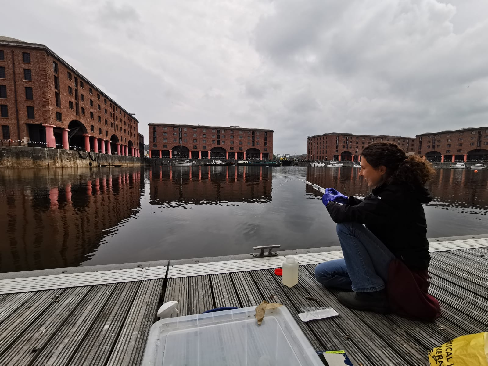
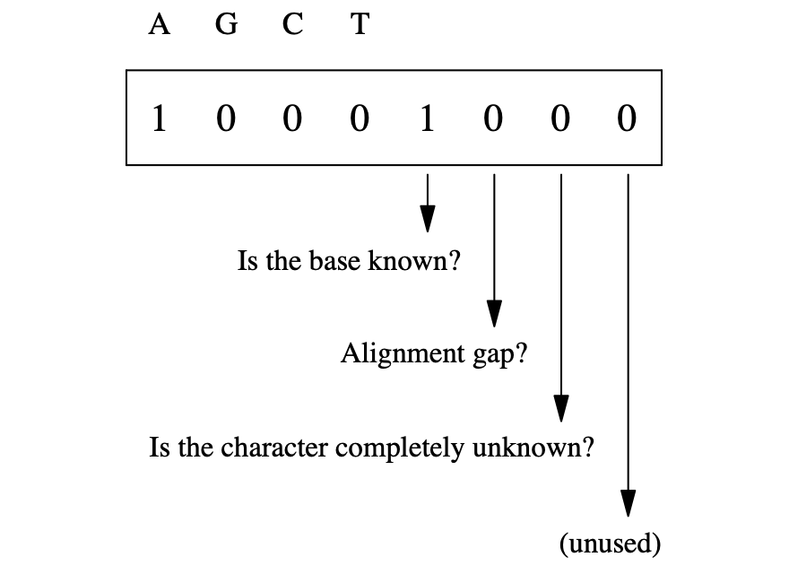

Class 1
Meet & Greet + PC Set up! - ABEM 22-23
Dr. Giuliano Colosimo & Giulia Maiello
Class overview
- Your teachers
- Course overview
- Opening quiz
- Bioinformatics
- Setting up your computers
- Brief intro to R and RStudio
Your teachers
Giuliano Colosimo

- Background in Molecular Ecology
- MS in Ecology and Evolution @ University of Rome Tor Vergata
- 🎓 in Conservation Genetics @ Mississippi State University
- PostDoc for 5 years @ San Diego Zoo Wildlife Alliance
- Research Associate working @ University of Rome Tor Vergata
- ✉️ giuliano.colosimo@uniroma2.it
Giulia Maiello

- Background in Molecular Ecology
- MS @ University of Rome La Sapienza
- 🎓 candidate @ University of Rome Tor Vergata
- Collaboration with Leeds University
- ✉️ giulia.maiello@uniroma2.it
Course overview
- Discretionary course for master level students
- It is worth 3 CFU for a total of 24 hours of class
- Attendance is mandatory
- Class will be in Italian unless foreign students are attending
- No prior knowledge of Bioinformatics is required (but you need to know how to use a computer)
| Day | Time | Location |
|---|---|---|
| Mon & Thu | 11:00 - 13:00 & 16:00 - 18:00 | Aula pesca |
It is a student’s responsibility to periodically check the course website to make sure he/she has the most updated information about the course schedule!!
Opening quiz
Navigate to the following page:
https://forms.gle/gGz2s246xyrwcPGG7
Note
You have 15 minutes to reply to all questions on the quiz. Worry not, the quiz result will not count towards your final grade!
Bioinformatics
What is Bioinformatics?
From Wikipedia
Bioinformatics is an interdisciplinary field that develops methods and software tools for understanding biological data, in particular when the data sets are large and complex. […] bioinformatics combines biology, chemistry, physics, computer science, information engineering, mathematics and statistics […] using computational and statistical techniques.
Important
Bioinformaticians deal with a variety of different type of data! We are not bioinformaticians!! We are evolutionary biologists!! We will focus on nucleotide sequence data trying not to lose focus of the research questions we are interested in.
Why Bioinformatics
- Back in the days, biologists could analyze their data on personal computers. Sanger Sequecing produced anywhere between 50 and 1000 nucleotides at a time. It took time and resources to combine many sequences.
- Since 1994 scientist have begun developing new technologies to parallelize DNA sequencing and produce high throughput data.
- As these technologies improve, biologists need to harness the tools to design meaningful experiments, produce the data, and analyse them.
Drop of sequencing cost for Genomes and Nucleotides. Data from https://www.genome.gov/about-genomics/fact-sheets/DNA-Sequencing-Costs-Data
How big is big?
aggattaaggactgcctgcgctctcaagtatttcgaacggtatacacatcatatagttataattgttcttcttgcacctataggcaataccacagtatccccacgcagctggatc
cgtttccaaaaccgcttcacgacagccaccgccggtaatggggagtacttagtcacattgtaggacttagaaattacccacgcctgacaagacccacagc
acgttctcaggaaatacggcggacccccagacttgtctccatcacgcaggaatccgagtttccgc
gtcacaagtcttacgcaattgatagatctgtggtgagacttacagaggcaacaatccgtctagca
atggggcatttcccctgctgagggtgggtgtgccgaggatgtaccgagctgctagggtaaattct
ttcgaatcctcttagtcaccagttcggcgttctaacaagtggcgccaaacccgacgaggggctac
gccccttcgacttattggtattagcaatgtgcgggtgcatcgaaccggggcgataagcgttcgtc
atagagctggtgttcatactacctatacaggctcagttgataatgtgaacgtagtgttggtatct
ggtccccggtgcgcgagtctcgggactgcaacgatattaataccgEven bigger…
tcgcctcgactggtacagcacgaagcacggtgatcacgtttccttgttgcgatgtccgaggtgag
ccccgctctcgtggatatgagctggtcacatgatgggcgagtcatacacatagagctgcggcgta
acaaaggtccgtgctataagcaaatgagttcttacgaaccggccggggggggtcaggggcaatgt
cagctgggcacggtaactcgtaaacatacattgcgccgcgggacaatgcaccacggcgcggcatg
gatgggctggataatctgactatagcaatggtccgcactcgtatttgtgcattatgggcgagcac
tcactgatggatccacttcttactacttctcctgcagaatcctgtacccaagtttctttatgtca
ccatgggcttaaaccacctgggcatgctcagcccatatgccaagtctggcgacaattcagtacaa
aataggaataacatatacttgatcctgtgcaagggcaaactgccatattatatgatgcatttatt
gagagtgatcaacagctttgccgtgcctactctggcttcgaaggtactgaagcgtcgagacacga
gggctcaaacaatgtcctaaacacctcagcctcatcccggattcctatatgcggggagacgaggt
tactgatctctgatcaattagacacgccaaccgctagccagtcaaccatgacgagaagtacttta
tcgcgcggagattatgttttctgccttaggcagacgccccgaaaattcttcagtcagctcatttc
ggcgtagcgtagatcttaattcacagatggtacttttatgccagacaggaaactctacgcgccgg
taccattaaaccattaggcagctcccttgtatagattcttagaagaactgtctttagacgtttag
aatcgattagcttcagtcgaagagtgcccaccatttaatggcgtcagctgtcaaagatgacaaga
agcgaattaacaaaaaggaagagtgttgcaaccttagcagcgcttactttacgggttttacgcta
ggcagtccgtactgacgaactaactcgcacgcttcttgaactcctggagcattctgcgccttatc
acgacaggttagtgaaacgcagagtcagctttctgggggttgtcagcacgcaggtaacggactga
ctgtcaatcggcttctacctggcagtagttcgagacgacaaactacgtactgtcggcgtctgttt
tagggccggaaagcttggacaccccacatcatggctctcccggaaaatttcatgcccttttgaat
aatagtccagttccggctgaggcccctgtattaaaataaggaacggaagctagtttcgtccagct
gagctaatcacaagtcgtttcaattgaaacttgtgtatttagtttcggatattttattgcactga
atcgtcatacgttaccttgattgttttttctcaggccccgtgcgcggcaccgtggatcatcgagg
acgagggtcgaaggttcggtggggttatacggatacggaacggtgtagtcaatacaatcaattcc
agaagccggaagagctaagccgcgaagccaaagatgccctataaatacaaccgaaagagccggat
acactgaagtctcagaacctctttacacaggagctcagacccagagccgcgctccaacaattctt
aagcttccgcaggcccaccccatacgagcgtcgaaacattgtttagcaaattcgaggagctcaaa
atacaaccgggagggattaaattgtttgaatggcgttcccttgatagctacatatacgcggaaga
caccgacgtggatgtcatttaccgactcctcaagactctcgcccaaagcactaacccgaacctga
cggagcacgtagcttgccgtccagcatgcaggaagatcgccaaggccggtgagttaaagggcgtc
cagagcactgttcgcggcctttgtttgcttgtagtgtatgttgggtgctgttgtgcaaggatcac
tcattcacaacgacttccagcaaaggaagtattgggaggttgcgcccattatcattgggacaacc
cggatggattaaaaagctagtacacaactataaattctctcgctagccgagttggcgccgtataa
taggggcgctggacttcacaaggttttcttgcacgacgtctctaatgcccgacgtgatgcgttgt
atcgagggcgcccgcggtcgccaaagattactgtgaaatgaccttacatacttagctggttctac
gctacttattccggatgcgtcgagtagagatcccaaggtcgacctcacccgagcgtgaggcgatc
ggccaggtcattagaatccacccttgcaatgtttgttttacgagccaatgaagttttgggtatcc
aatgttacggcggtgacgggaactattccaccttgacttggtggttagcatgtcctgccactggc
caacggggaccgcccgactacctggtagctcctttggaccctggccccacaagacaactgaattt
tgggcataatactcatgtcagtgagctacaacgccaagtaaggtgtgtccgacctgggaggcagt
tattcaggtaaggtacgggattgagctcaggcacataccactttatcctaggtatacgacttggt
ttgaccaagacacttaactttcgaacaaggctagccggagaggtagatgacccggcactctgaat
gaccgtaaaagcccctaaggctcaatgccagtcgattctgtagctcataacaggcataaggtttg
tattgacttcttaatatgttttttcatttcaggatggctaacgcgacccctcccagggcgttaag
accaggctacaacgctgccactcttccagtcttagcgcacgcattcaaacttataattaggagta
ctaaaaattcattccgaaaccccatccttcaaggacgtgaatacggacagtgaagtgaccgtctt
tgtagaaaacctatacttgtgccaagtaccccacaagaggagtaccagcaggtcgaggttcttac
ctcgtcctcgtttccacatgcgatgtagttttgctcctcgccggtacgcgcgaaattgagattgc
gaaatgccctttgggcatcatagttctttctatagcgacgattgaaacgatctattcccagcttg
cagtagtctgctgatggtggaaggaactgggcccaaaacacgaatgagtacaaggtctacggctt
gaggaactcgatcgcatcggcaatgaaaccggggagtaaaaggcccgcaggttagctgtttagac
cgggccagacttggtttcccccagttgttctaacttgcaagcttttttaacctaccggcaccctg
gctttgtgaccagcacccccgaaagttttgttccatgagaagttcaaggcttctatggcaggttt
aagttatccgaccgggccaatggataacagggattccggactatgagttagtggaattaaaaaac
tgggcccgtgcaataggaacgcggactggggggtgataagagggattgttgggctcttcggttgc
gctaaccataagatcatcctcgccacggctttacggcgcttactcatgaggagtctcccccgtcg
gtggttgcactccgataggggtcgggtcagtctttatcgagtcccaatacgtatgtatgtatcag
accaatggtagtccgtacacaattcaagacactatgagcccagggcatttgatttggatcttgtt
agctcaggttctggtcaagaacacacgaagtgcgccctcattatccagaggtctttttaatccta
aatcactcgataccctctagcgtctaaaaggactatccctatcacggtgtggccggaattttctc
agaggatcacgctaaacccgcggtagtggaccaggtcatcccgggaaaattagataactcctaag
aggtctgttcttaccgggggtcgggtcctcagggatgggcgtgatcatacattatcacaatctcg
agtctaagtgggcggtatagtcctgaagagcagattaggccctataaaagttccgggttaactgg
tgtacatgcgaaaatacaatatacttcaaagactgagtcactacgtttctctgccgacgcgccgc
atcactcagcccatcgttccaaattgttacggcagtgtcattccccacctgctccgagacgaccg
aatcgttgacttagaggactaccattttattggcaatacctttatcgcggctcgccggcgaaggg
gcacacctcctattattccctattgccacctaacaaagatgtacggtgactgggaaatcgccgtt
ggccttaatccgtccttcgtttaccaaatgataggtagggggatgcgatacgtttagcagctaca
gactgtacgattcaaaagccatacgtaaggtatggaaggttttttggcagtttagcccctcaaag
ccctaaatcatctggtgtgatagaccatgtggaagcgcggaaactcacttcagctggtagtgcgg
acagtcaaaggtccatatcgtaagggggcgcgggtcatcatcgatactgctagaggcgaagatca
ctcccatacgtcgactttgtaaatcaggataggcggcgggtcgattgcctcgcaatcgaactagt
acgaggttcataggataatactgggacaacagtaatagaactgcccgacagaagtcaagactgag
gtcaaccatgaatccatgagtctattaagatggcatagactgcaaggtgctactggacgaggtcc
tgttactgcacccatgccgttgcctgggggagccgacgagaatatgtgaggggtggtaacacgtg
aatcttttttcatcttgatgtgtccccatgcgtcacctctatgatgtaccatacgctgaatcccg
ggtacccattaataaccctaatagtgtctgccatatacggcttagccagatgagccggattagtc
cacagtgcgcccggctcattctggccaggtcctgatctccgcggcactaggcaagttgacgtacg
ccgtccgtcggtgccgactgcaatgtagtacagtttacaatgtaaatcggagtttcaatgtttta
cgaacaggaacggtagatctccgcggggtttttcgaaggatgtatgatgacatccggaagcctag
cgttcgtaatcggtcctcccgcttctgatgcactctcaagactctctcgccctttgagattggtt
atctgatgaaccggagataggctaaaaaccttgatttgggaatagagtattttacgtttgacgag
ccagagctggtaaaaaaagtgttatgatgtacagtggcgtaacaacacatacacggctccttggc
taatccctcatatctcgtgagcacagcggaactggaaaggagatgactccgtatggtgcaaagac
tcgggtcagcgccttggtggtctttgtaacatcgggggttggccactacggaagtagtctagtgt
gtgcacatggcaggtccaccgtggtgacatcctacacaactcaggaggtgaaatcttgtagtcta
aattgacgggagtcgttagctctacgaaatataaaaccgatacactgtgttttcctcccgagcgg
agatatacttctttaagcacccaaacttgaatatccgaccctcttacattcatgccatctcgtat
tccggatgattttaaggtggtacccacagcgtgccttagagctttatgggacaatgcttaatgta
ggaccgatacaaccacctgtcggcattcttcttcgcacatctcctaagaagcagtcacttatgat
actacgggtcattaacatttttgagtgtaggttgtactatgtccaattagcggttatcgtcggac
gattttcctgtgatactatattggttggtgccgaggagctgcagatgtccattgaaaagcccacc
gtatcgctaggggcggttcgtaaaaggacccgctccagtcacataattctataagtagcggtctt
ccacaaaggactgaggccttgcgaatggtgctcggtgtccagtatgaaggcatgacctactgccc
ccagttagtagatcttgcgctaaggcgaagcataaggcccagtcccactaaagttggtgtcgcct
acacactttacgtgaaacaacatactgccaaaccccacaatgttcagagagtcatccggaattgc
tgcgaagcttcgagcgacactcttgaatgaaatcgggtgcgcgatacacgacaaggtgtgagtac
ctaagagtcgcctaaaaactcatacacctaacgtacagcactggtcttcgggcgcttatttcccc
gatgagatcgagtcaattaaagctcctctaagagctcggcggagtaaccctccgttcagcctgcc
agtacatgtccagttctctcataactttcggggtctttgtccgtgggggactgtaggacagcact
cagcaacttgaccatgtccagttccactacttacaccaaaatagctgtccctgaaaggtcacagt
ttagaagcgcctgccagcctatgcccagatgacgcctctctccttgggagctttgttgcgaactt
ggtgtcggctgcttggttaccacgagactgcggtatgtgtaaatttgggcccgttcaatctacag
atggaatttccgtgttcagagaaccatcttgtccaatacaataattgatgtggttgttattcaaa
ggtggtccggccgcctctatgtaagtagatggtttacgtaatatgcgcacttttgcggattgact
ggttagtgaaagcctacgcggatagcagcagtacgaataaaaatgtctttacgggatagtgggct
attatcgctattctctgtctcttacattataactgatctgcagcaaagaaggaagatccttgtta
actagcaaatatttaaccgccactcacttgaggcgtatccgatggaagaagttgaataaacgttt
tagcatgagtgcgaggtcattatttaggggatgagtgatgggtttcaccgaatgaacgcagttcg
ctgtgccaacgataggctcgtgtagatcccctgagcccgaaccgctagaggcgggacaaagcttg
gttagcttgtcgctctctcgtctggcgcctcgctctaactaatagatcgctgagtttaccactta
tctctgcgtacacggagcgaatctatccctcgctaaacgccctcttgagaatcagcggtcatgga
cgaggacgggggaattgtctccacggctggcaaatcttccccgatagagcacacctgtcggatag
cagtctgggcgcagcgtgcattttccgatagctgagcctgtgatccatcgagccgtagcttgtag
ccactggtgtcccggttggcggggtctagccactgaaaatggaaactttactctcctgatctacg
tccttaggtagagagcgagaatttacttcaagatccgggtacccggtcccctgtcaaagggattg
gaagtaaccagtatctcggacagaacgaagcaggacctattcaagcccgtgtcccccgcacttgt
gcgaatttgccgcgagagtcctattacgccagctcttaatacctagtccacgaataatcacagct
aaattccgtgttacagctcatctagtcgagccttggaagcttcggatacaagggctatgttctat
tcatgatgtatgaccaggccaaattgtcggagggagcgggtcaaaattgtggtctggcatgtcct
taagtgtgcagggctccggcggccgagttatcggtacggttccctacggcctcctttaggccggg
gccccgtaagcgcaatactggagcttcactatacctcggcagaaccggctattcccgacaggagg
acctagggacgtcagggattaattgatagtgatttaatgcgcaagctgcagaactcacgtgaaca
cccgagaaagcctcaggcccaatgcgggctggggcccgcgttttcgggccggaggacgagctcgg
tgtcatgccgcccgagcgttggtagcgctataaggttgccctctctgtaaattctattcctaccg
tctctttccgggtattcgcgtgcatgggtagcctgagggcccccgaatatgaaaccatttatagg
aacacggcggggtatacattcctatacaatcgcaaagtcgaccggattaactaccgacaccgatg
aaacgggattcagtttttgaccccgccgggtgtaaattcgaaggaccacgcactgttattagatg
gtgtggaatctatactgtcttacactgataccattaagcgtttgtcttacgcgccgttcaggaat
tacgagcaacggcgtagaggtagtcacaatgacggatcctgagcgcgcctccaccggcggctctt
taattagaaacatgacagcgaagaaatgctgaaataaacatggttaggtgggctgatacgcttcc
atcttgcctcactaggagacctacggttgattcactcctaaacctaccgacctgtatgctgacgc
atggatgcacgctcagaacaggaaaccggcacgggcctttccggtgcgtagtggataactgttga
gaacaactatttagacggttggattagcatgggcacccgagacactagccggcagggtgtatata
aagacccttatgtgtaggtaatatcatcgcaatcataccaagtaaaaattattgagcgtcctttc
atgttctcgcaagcacagtagcattacgaggactccgcctaagaatgaggttccacgctagaacc
agtctagcgagccgatagtaagtacgccactgttccagtcaagcaccgaaattgatacaaatgcg
agtgttagtgttgatgagggcaccgtctcctctttttcgcccagataactcgagacgccacctca
actgcggcccccaaaatacggtcccccacccagaacagagacttccggacggcatatacgatacc
atggctttcagaccggagcggagtaaataggttctacaggatagcaccactgcatcaactccggt
cccgctgggaacccaacggtcgttctcttagcgagacctaagcaaaaaagagtcggttatgctga
gcggcaatatttgtggagccgggcaacgacgtgtacgccaccactcgtccgatccggatgtccgt
cgtagcgacttaaaactatgacggatgcgctgaatgcattcgaagttcgaggctcaatgaaatca
ccttgggatcaatgtgtaagacccgttcccctacctgggtcaaacattaacactggaagaccgac
cgggcagccaacgcctattttaaacacccagatccgcgatctggtaatatgggcgcgacattgta
gcaagtcacgctccccttgacaaatagtttggatgtttgagaacggagctatggcgcctccgtac
gcgtagtgacatacagagacttaattaaccgtgcttgggcctgttgattagctcatccgtctcct
agtggctcgcgttgctgtaactacaggtcattcgctgtgcagatcatccttacatcctccgtggt
caagtcgtctaacctttggtggtggtgtgcagaaacgactcgtacacgatacacgacatatgcga
tactggtaacgggtaaccgtttgtctggactcgtgcggttgcaccgaaagtccgttacaaagcgt
gcgacgtgagcacttagtccaggatagtaccctcactgacggctgtgtaataagatgtactacta
accatcactacctcagagaaccaaatattcgtcggggtagatataacatacccttacggcgcgtt
tgaaagtcacgaagatacaccctatattctatctgaactggcatgcgctggttgcaggtgtgtct
cggctgaagaggatgtgattttgctcgcgcaacgcctgtatatatccagaccacaOK, but how big?
Genome sizes are given in either unit of mass (picograms, 1 pg = \(10^{-12}\) g), or in number of base pairs (megabases, 1 Mb = \(10^6\) bases). We can convert from one unit to the other using 1 pg = 978 Mb.
More information on the Eukaryotic Genome Size database here.
Remember…
- 1 Mb = \(10^6\) = 1000000 bases
- 1 Gb = \(10^9\) = 1 Mb * \(10^3\) = 1000000000 bases
bp_10x6 <- paste(sample(c("a", "c", "t", "g"),
1e6, replace = T), collapse = "")
cat(str_break(bp_10x6), sep = '\n')ggatacagcttctgctaaaactgctctggaacttctgccccgccagggccactagctacccagag
gggactcgccggcatgacgtgacataccgacttcattacacgggttctgacgctatgtctacgca
gggttaggcgataaaccttgagcgaaattcacttacgggacaaaacacacccgggctatgacgca
tatttcttaagtccgtacatattttcctttgatacggcgcattacagagcaacagccgctcgtgg
ctgaacaatctattcatcagaactcggatacatggatatacgctctctcaggttcgcgtataggg
tcgctacgtcgcaacaacggcgggtggtccgttaccgggtttaatgtgagcataggcaagaccaa
ggatgatcgggttctggaccgttggtgtaagggctcatggatatgatttaaagactagcaagcct
acgtgtagatacagtacaagtccatccactaagtgacccatcgtggagcgcgaaactgccgaaga
atagaaagcaagctagcaaaggtttttacgcataacgcgtaatgaatactaagaacgttctgtta
tcagaaaaacatcatacaggtgtttcaccaccgcgacggaggagaggggatttcctttacttgcg
tccttcgaccaagcgtttcagactataccggtacgcgtatccgtactcctcctgttacgagccat
cctacacccagcctactgatgcgagagagtgtcttaattaatgttaaaagttgcggatttcaatg
ccttgaccggcgggtgatagaggaacctccgctttgtaccgatttttagaagcagctttgccgga
ctgtgttaggggaagtgttgcttccttaatgattgtcaccctggccgcctgcatgcatgatatag
aagctctgccgaatggatgacgctgtttatcgagtgaccgcggcacgtgatttcccataagcggt
aacctgctaaaagtccaacacttgcacttcggctacactctacaaagcgtggtcggcttagaaaa
cgacgtcctggcctgtgtctataaaacgtcgcatcaacacgtatattgagccgagcacgcgccaa
taacgagtgagagtggcgatgcaccgccttctttgtctcgcttctgttaggtccagcgaacctct
tgtggaaacgcttgagtgattaccaacttgtgttagcctaagcttattaccggactagtattagt
atgaaatccttagtgggcggttttcgttactccgaagtcctaagtacaaagaggggactcttgag
ggtaaaacatagggcagaagtcgggccacgattcacggccacgatcccactgtgacccctgacaa
tcttgacgtactcgacgagatgcagaggagccgtctttacggggagccatcaacgataacagcac
aatcccggggcaactcacggaatgtgatctgatcctcgacctataggtacagggtccatacgttc
cagtatgttcccagggccggaacgataacacaaggataaataccgaatcgcacactcagcccccg
agccggttgtcttagcgcgtgaggccggcctgggttcgcagagtcacgtgggccctggagtcttc
actaggaccctgcttagctgacgtggcgctgggtaaggatttggctgtaactgggcagggcccct
gtgtcagtgaaacatcgtgtggcggagcgagttggtagattcgtatcgtacgccgtgacgagaaa
tgactcccctagggttctcacggttactggctcggtggtaacctgagtttgcaagggaaggcatg
caacgccttcgaaagggcgcggtcgtagggcaacgcagctatctaaccatagagcggagccaagt
gtcatcgaccctctgtatgcagaggatactcgtgcttcaagggcctagtaaattcgatgctttaa
accccccggtctagcagtgcctaattgaacacgtttaagagaagctcaaacccccgtttcaacga
cattccggtgcattgggccctacaccgacctaagaaaggtcccaggagatttcagtctggcaacc
ataccagctgatagcagttgtgatgaacgaggctaaaggtatatacaatatcatgcgaggtggct
ctctcccagataagatcaaactagttgctacgtaaattggaggtcgagcaggtctagttgccatt
cgttggctattagggaccctatcggctgtataacaaggatgcccgatgagtcatctagttgcgca
tgatccagggggatcactgtgtgaatcaagcactctactgtcgacttcagagagggtcggggatt
gcgccacgcgcactaaggaggcgtagcttactccatgacataaatgatttcagtatatagcttag
tcgactctggcaactcctaagctgaatgcgttgatcggcacgaaacattgccctttgtttcctag
gtcgcgcgtccaatgatgtgggaccgcgcaccagagcgtcctctcccgtagtgcgcgagctagac
cacagatatcaacaacgccagccaaagtgtttgatcggagctgattccactgatagttgtcgctg
tatctgaggaagctcacccacttaatctaaattggcctcggatgagttctcggatacggctctgt
cccggacgactcgagcgctcgcgtaaatcgtcgtgaagcttatgatgttctctgctacaccttat
gagagtttcccgctcctatttaccgggcagatcgcatgggagtcaaaggccgaattcttgggctc
gctgggtcttatacgtacgaccgagctatggttagtttggcgaactttcgataagaacgttctct
agtgcacattttcgcttactatgtgatccgataaggcagcccctcaagttgatgtcctgtaaatt
tgcacgttaatgtcacccaagaaaaggggcgcaatcgccgccctctgagtagccgcacttcacaa
gttacggacaagtacgccttcgcttcggggatgtgccgcgtagaccgccaccgatccgctgggtt
tatcctaggataaacgcggaaaaagggtttcgatgccaaccggctagcgtgaggcgcgcatgtaa
tctcccatgctagcagtaccatggccttcgtgcgcgttcttcagcatagtcgtcggggagtcctc
actacgaggtaacgactactttctaaagagtttctacgtcagtctgttcttaattgaaggtgggg
cggttttctaacagcgatggcaaacataacggcgaacaccccaataggatggcgtgaggcgaccg
atgtcgggggagtaatgtcgaagtgcatatgcgtaattatcaacatttatctcgtaacacggcat
gattcgatgggaccggtccacggcgaacaatcctaggcgaaatggcagaattcccttggcgctcc
ccaatcgacacagtcacctgctatctacgcaactctggtgtggctcccgcccctgaatgctgtcg
ttgagtgaggtggaaatgtgccgtcccccaaggaattactaagcctccacggtgtgatgtactac
tgccagaaagcttcgtttatgcctcatccatctggtcgcaagtcctgtgccgtgctacctgcaga
ctgtaggatggctagcttgtagtggaagatcttatttttctgattcatgatgcccttggtagatg
gacatactcgggaagcactaccaaccactctagttgccgttgtgcataagtaccttaaaactgag
ctgccgctaccgtctccgagtctccgtccgcctttcaggcggttgggttcatatcgtactgaccg
ccgagcgtgagttttgagtttgtgttcgacccatcgtctgtaggcaagttgtatcattgccgcgg
ctgggatagtatgcctcactgtgacgttgtaataccaactcgctctgttcgcaacctgcaccgta
cgacaacagtgtggggtagacaacagttgggggacgtggcgtttatcattgctatcgcgcccacc
acttctgagactgttttcgaccgagattacgaacccttaccactgtgcgggtatggtctcggggt
tactggtctggttcgacaaaagactcactcagaggctaagtaatcatgcaaatcctcacggccgt
aatgcaagataaggctgtggattataatagcctgtgttaaccgcacactggttatattacggtgt
tagagctggtttagcttcgtcttgaagacctcctaatccagcactcacttagatgacgagcctcg
ggatctcttgtacttttccctagataccccacttatcaatgctaggtcgtgaaagttgggtcgtt
gtcatagttaacccactagaacggagaggaagaacagtgtgagtagctgtgcgacgcacgagaaa
ggggacgtggtaggtggtgttatgccacgcgatggactccagcggggacagtagatttgaaccca
caggaaccagcacttgtttccgcatcgacgtcttagggactattacctaggcaaccgtaatttat
attgagaagagaatgttctgcttattccaggaatcaggaaagactctaatagagcgtgacgatat
gaggcgtctcacattccggatcagaccatggctcaatagcgatcacgcatagaacccgctcaagg
aaggcgttgttacccatccggtttatgtgcgtgacattaagcctgcataactaatcatagtctgc
aggatctaagaagtatcatccgagcgaacacgtagcgaaaacacaagtgactagttcatctttag
agggccccctaaacgaatggcgagttaattgtagatctacgattggctcctcacgttttcgttga
aggaaagcttcctcaccacagccatcggcgtacatgcagttactactacgctcatcgccactcac
gatgttgttttcggggtgcaccttgaccgatgtagaagacctctacggcctatgcaaagggacat
ggcctacgtaataacgatgcgtgcgggtcgatgttgtcgcaagtccactcgggggaccgcaaggc
tgcggtctcacgccagtagcgttggatggtgctccaacgatgtgcttgaagtaaagggccctcca
ttcagacgcacgtaattgcggtacaagtatatccggtatgcagaaacgacgagagacatttattc
caagcggtgttactagaagtatgccttacccgtagcacggagggcgactgtccgctagacggaat
taggctgatactattcccagtgcagatgcgggccgaacaagctttaaatcgtcgattgctggggt
tttctttgacggtgatcgttcggtaaggtggacttaatatgagctgcgatctcaatcaagccgtt
gagtatctcaatcccatttggtatattcggatctcctgcgaatcacatacagccgcttgtcagaa
aaccatctgacggtatactatccctgtccggtctggggggggtacttatgtaaaccccctggaag
cggcgaccgttgctttcttgaccacgcccgattcttcttctaaatacatggaattatccacctta
atccatgtggatcgtaaacgcgtccccatcttcctgatcggtaaccgtactggcccccggagcta
tactggtaaccggtatctgccaagattcgcgttagggtcaatagcgcactttttaattccattaa
tcactttcggcacacccagccgggaaaacaaaccagcctgcatggggaatagctagtccacccag
gccaggtatgcccacggctcaccgcgtgagccccgaatgctggaaacatgtcgtctatgatcgca
atgcatcagcttagtgcgagctagttactataaaccaatagtcttatatccccatccactgcgtg
gactcgacgtcgaacggatcgagctgtgaagtccaatagacttgaacagcactcgtttacaacga
cgtgcatggcaagcatgctacatacgtgggtagcagagatcgtcccggggtaatatgggaatagc
aagaaggtcggggggaatacctaccggatatataaataatgcgaagataatccgtggcgagttgt
ccgaggccgaactggccatccccgcagaatgttgttttgattaccaagattgggttattcgacta
ccctagcatagaagatgagtgtgaagctgcaacttaattttcactacatcaccaataccaaagac
ctttaaatctcaagaggtcgaaagtttagtagctctaataggtgtcggcgcccgggattatgtct
acgggcgtacttgctagcgactatagcattaaacgagtgaccgtggtgcgcacgctattggttct
tgctcctttttgggaagtcggaccattaatgatcactcacaggctgaagggagcatcggaactaa
ccaaactttgaaatcatttagacctagcctgcagcacgtcttgaatggcagccacatttgtttaa
tatcgtccattgggggaattgccattaagcattgacctaagggggaccaaccaggtccgcctaca
gtagccttattcttattgtatcgcgagtatgctaaatctatgaccataagactcaaccaacaata
gtttgatttcttatcatttctaacccaggagccccacgatgtgatttagtgagaccgtcaactac
cacgagaacctgtgatccgatcgtatgtcagcacagggcgtctgtgcaggttagtcacgctccca
aatagtacaataaacacagacgggagaagttgagattaagagtctaggtacggtcacttctttgc
gagtgagaacgcggtaaatgtagctattacgcccgcgcctgctgtcttcgtacgtgacttacaag
atactttgcgtggtattgataatgcccggtatcttgtcggtcgtcacggaatcagaagccggctg
gcagaacgtacgaaaatggcctttacaaatctatcggtagttagccatcgcgctcacggtgatac
tatgttcacatcacttgcccgatacccttcccgctagaacatttatcgagagtaaaagcccgcat
caaaattgcgttttgttgatagggacatagcagccagtccaatgttacttttaccaaggtcgtga
acctgcatacttgcgtttcgcacatcgaatcggcggctgcagaagcgtcgcgttactatccagag
tacgttatcaattgtcacgacgacaatccagccttttttatgtcttgctatagtttggcgatgga
ttaggtaacaaagtttttacccagtcaatagcgctcataaaaatgatctagcccgtgtagtaact
atggttaatacaactcgggtatatcacgctatccataaaaaaagcgagacgaactaagcccgtag
aggtaatatgccggaagtgtaggagatcgtcaagatgagaagagtttttgcagactaagacttaa
acggtggcctgttcgcactaagattcttcgatgccgccttcatgtcttcgatattgaggtgtggt
aactgtaaaccataaaaattagacggctctacccgcataggtgtctaggctctatagtgatgcgg
tagcccaccatagtgctttcgaccttcagttggattataaccgccgctccagataagaggcagtg
tcaggaatgtaagctaaggttctgatgcgtcactccgctccttagctgcggagtgttctgcgagc
ccggtccatggtatgtaaggcatgggcccatcaactacgttgccctaccgcaaaagcttacaaaa
gcttttagtagaaaagtattcgataaacgaatatatcgttcgactcacgactatgacaccataac
atccacttgggcatgtagaaatatgctgggctcagtctttaaggtcatggcggaatgttggggat
acgtatgccgttgtgcgtccttagaacgcatttaatcgcacaatggaacaagttgtccatcattg
ctcggatccgggctttaggcattactgggatgggtccggcccagttcccattgaaggttactttg
acggaacttgaattgtgtgaccctggaggccattaattcgctggtctacatggaatgtgcgaggc
gtatggcctcccgatgccctatacgtttataccaaccttgcaaacgttagcattcatgactttat
tccaggagcatctcgccgctttgaccttccgaaggctcccctgtttgggcaatccgcgagctgcc
cgctgcaagtcattcggctcgttgcgcatgtcggcagatccatcgcacgtggtgcccaccaagcc
cactaagaaatgtttaattggacatcttcatcttctccactcgatttaagaaatgtagtaaaaga
tactccctaagcctgcggcatagtggcaccaagtcaccctagcccccttatcgatatcggcaaaa
ctttactttatacatactcttgtctccgctccagtaatcccgattgttcaataacaatcataacg
atcaaatacgctggactaggtgtcgttttgaagggcaactgagtcgttaaatgctttgactgaga
taggcacggccgcgtcaagtgggtattctccagcttagcatgtagttagctttgcatctaaactg
gacacctcttacttcagacatgccagtatcaaatgaacaaagagcgcgtaattgccaaaacccga
aagggcgagtaagctctatattattgatctgatgttttccgttgcactccgcaggtgaatgcatg
acgcagattaccttttgagtgttaatgttcgtcgtaataacccttgtaggttagaactccggtat
cgctgcagtgtcggaaatcacttgctaacagtggactgagctctgtcgtcagccataggagcggg
tcacaggacatagctatcgctctacgcgggtaccgcttaaccgacggccggtcgactcgacccta
tatatcggaagtgctcttctagtaatggaatgactccatctggtcaacggatgatgcacggtact
ctttcatgtgaaatatatattggccttccttaaattcgaccccggctggaggaggcgcgcccgca
cagccgtagtcgctcaactccaaaatcctaccagaacctagtgatgcatctgagcagtacgtcag
tagagtctagagcatgattttaaagagtgcactaccaaagacaacccaagatatgctcaattgca
accgctataactggacgtggctggacaacaatgtacacttcttccagcctcagcttacacggttt
tgcttcccggatccggattaaatattgactggtggactgacgccaaagtaaacgggtcaagaagt
tcaccggaaaagtaattttggtggaaattgtagtgaggataccagagttgagtggtaagcatagc
tctaccatcaaaacatacccattgcgcactggcgtttcccgttccggcaatggcgcctaccgaca
ctacgtcacgtcaggatcccgcaaccgggtgacatccggttagtgcagggctggtactatggtcc
cacctcagcacagaggcattgtgaaggtggattctcttttacgcttgcaactatggggatccatt
tctaattcacctcaagagacagtgccgacgattgacctatggcgaccctgctgaatacttaaggg
ccatctggctcgtaatcaacacttcggtattgtatgcaccaaagttgttcgagacccgcccgccg
ggctgcgcggcaaaatatttgcttccaatcagctaccccagtggatccgccgctgacaggccgcg
tgaagatcaggcggagtcacacttcctgatgtaggtaatgattaaaatgatgtcacgtgcctatt
cacctctgccgacttagcctcccctattgatgttagcccggaatacgagatcgcctcatatcgga
ttgagcaacacgtcgtatattcgctcgggtggaattgccatcaataaggggaatggcgccctctc
acgactcaccctccaagttgaagatcatacgattgcgctgaggaaaatagcgctacttgggctcc
ctagcgcaagccagtggtactctcacgccgttgatcccctgcggaatcagaacacggagaactgg
taggctgggccaatcccggttcaaacagctccttgttgtgcgcgtattcgactgcaatcgacggt
ggtcgcaggtgcgtttctcaaaccgccactattaagcgtgacatccaaggaatttcaacttccgg
agatgcaatggacgcctaattggcatgtcacttgagcggtgtcaaactccctggtgagtagacct
ccttcaaagcatagcatggatagggtgcaatgatcgcgagtaccaaagcgcaacagaaccgcgtc
gacctcagtacgcgggtcacgcaccggatcttgattggatactgcggtgtcaattacttaattca
aagaatgtgctcttacaagtgctgttcgatatcagcgtccacagctaactttgccggtccttcct
ccagtcatgctaggtagatagtggggtggcctttgggcaaaaactcaatgaaggtcggcagacgg
ctggaacaggctcactatcagaaaactacggagaggctagcatcgggggaatgattgtacttatg
aacacgccgcacgtaaatggacccataccataattacgcatatgcaacgggggtcttaacgtggg
ttgtagcggcggtatgttaatagcgtaacgacggaatggttgacgttccttgttcaccttaggac
aaccccgttaaggcccacggtctagcagtcccaacatatcggttctccgatgtcgaagcatgaaa
ttttgacgaagataagagccaccaccgatgcgttgctgacacgacctggattgcgtcccagaatc
attcgcataggatttctacactatccgcggcatttgctccctaccggctggaggatcctgaagtt
atgttgtaccttaaaatataccataaaaacttggtccgacaaactagattgagctcactcgaggt
taatggagcattttacgttcccgcgattagcatggacggcaggtcaaaagggcaagtagtaactg
gagtaaaataacgggagtgattgcggacgtataatctcggtgcagcggaggtgcgtgcactgttt
acctcggctctagagcgaggctgatgcgcgtagcagcgtaactcccagtttgaagaaacactagg
caaagcttgtgtgtcttcgtcgagatcactaggtaactgacgtagttcagctgacccggtgctgc
tttatggtaaaaatcggcggaaggaggcgagtgcgctagtgcgagactcgccgaacgattacccc
tgggccaatgccaagctgataaagcagtactgcctaatgaaatttttgtatacaaacatccatct
gccacctattatgcaattgtccaatatggtatcgtgagttttacagataggaagaccaactcaag
attccgtattagtcgatcccccaatgtggtcaatgggtgattacactccttgggcaaggaataga
gaagaccaattctacattgccgttctgcatcgccgtgggtgtgcactcctctaacgtaccttaga
ggaattactttgccgcgctaatatgggcttcactccgtcccgtccgacactggtcccatttttta
gactggacttacgatccgggaaccccttacatctcgtcgacgttctaggcaacgcctgctcagtc
ctagtggattgttacgcagccccacttcggcagcaggacggtattcgcgcctgtcgctttgaaat
ggttcttgcggctcaaaaccccaacgacacgcctgttgtgcaggtgagccaatttccggagaagg
gtgtccagattttacgtgtcctacactacaggcgcatttaaaagccttgctagtttacgaatacc
ccattgcattcccgcttcgacactgaaagttaatcgccaggcaaccgaagcggaaccgacatacc
gcatgtcagttgaagaacatgagtcgcagatcccctaagttaggccctcagacaacaccctttac
gatccgtaccgatttgccacatacgctgttacggacgggtgtgtctctcccagcaaagttgcgct
ttccagaagcctctttttgcatggagttgggtgttgaaatccagataacatgttatgctactgct
ggcgcgtccgtacatgcccgtaatgcgtaacaatgagtacttcgcaactctgcacacgattgggt
catgtagtctagcttcgtcgcccaccctcgcttatctttaccgggtctctctttatctttcagcc
ttgcggttggtatacgcacataaaaaaggcagttgacatcttgctgcggcgaagcgctgctgttg
gatcaagaaaggctccggtcccataacacctacgctgaagtcctgccctcgcagccttctctttc
acgaagagaggattcttcccagcgggttccgttccacattgcgttgcaaatagttctagctttag
tcagaggtttacgattctttcgggccgcgtcgttaacaagtttttccctgactgcgagacacttg
aggcatgtcgtatacgactataagacccgcactcttgatttccagctatttgcgcctgagcccgc
agtgcgtttcggataccacatgacacacgcaagggcctctatccatcgagttttttccagtattg
aacgatcataacgggctcttcgctcacaatggccttgtccgtactactatcacctatatatttgt
tatccacggttacagtgctactgcagtatgcaccactatcccccctcctcgtctgcatcagaagg
ctaatattcggagaggggcgagataggcctaggttattttggagtgcgttcacaggtttctgagt
cgtgaggatcacgcggcactttttcagtgaagatgtcgtcatatgctaaccctcagttactactc
tagggtctaccatctccctacaacctcaggacgcttgataatccttcgattacgtgcctgcgtag
aagcacaactaattgtatgaaaaccctacatgtaccctaggagcgtcaggttgtagtatgactcg
cgtgttagatagctatcagacctccgagctgcacttgcgctactctatggggtaagtatatcgtc
aggccgccagcagactattacttctgctccaacctccttgcacctggagttacttataatgcata
ctcgggctcatccccgtcgctcaagctaattcccgctagtctggtgcgcatgccggtacgatatt
acagcgtcttaactgagctcataaaataccttcttaccctagttttgggggcatactctacaaag
cccctgttgagaatcagaaaagtgcgtctgcagctacgtgtcgactataatgatagactgctacc
atgccctagtccaaatagtcattgctgacagttataggggaatgctgaggcgctttaatgtatta
ccctgacataaccccttatccatacaattgcactggtatccattctcaacgagtttggagtgact
tgaggttgcccatcaccctactagtcgggcttggactgcaccgcctttataaagggcatcagttt
ggatgtagagtagacccgaatgaatatccccctcccaggatcgcaagtagcccagtagtcgggtg
agtaactcggatcgccgttgaagaacgccttgcggaattttattgaatgagacgtctgggacaag
aatgtacaccgtaccgagctactcgttgagcgcttaacttacgaggggggggatgggggtcgagg
gtcccccaaccatgacctacctttaccagtgaaatagacaaacgccatcccattataattaattc
tatgccgccccggcgtcgtcggcgggggcgtataggacactggcgactgtttggcgggaaaatag
agcgaataaacgagtggtaatcttaatccatagatgtagggctacgtgacaactgcgatgtcttc
tatctaagttgttgggtggctcaatacaattgatcagcatttaaagttgtgccccaacattgaac
atgttggctggtagccaggatacacaggcggcggcatagaagtgcggaaacgaaggcgaatatat
cgaatgcagagcccaaatgatgagagtctagaccagaccgaggcctagaacctaactccgccaat
atgttctatgaagccgtaaatgtgtatatgcaaacgtgttggtttcttggctggcgtgcgttttc
attttctaactagcataaaagacccttgcggaaaggaatccatgtcgcagctctggagcaggctt
tgcagtagaacactacgttacttaaagaggacacggagagcgtcaactaagagaaagcacattag
gaagtggcaattatatcgggtgattgggcaacgagataatgtggcgtgagggccccctccccgag
tacattgggatactatagactccaatacgtagatttgatgtccgggtgaaagatagttactatcc
tgtaaacctgcataggcgtggtgtagaaaagggattagataagacatcttatctacagcttaccc
ggtcccaatcaaccgatccaatttgttagtgctggatcccttattccgctgtcgcgcctgtccca
ttgttaaatttccgatcggtcagggaccgcgaatactttggcggggtgccccctattatgatcac
tacaggatccgcggacgaccccttcagagaggtccctgcgcatggaatcacccacttaggtgttg
ccacagcccacgtgcctgacctatgctagtatagagctgacgcctgtaccacgtcataatgctgc
tcgacgacgcagcaatgccgaatagggtctagtcggtagcgtgcggacacgattggatccccttt
accagcattcgactgctctgcccttgattttccagcaactggtgctagggaaacttccgcgcctg
attcccagcgaagtcagcaatctatcctggggagacgcccaagcgtggtatgatactgctacaac
ttagaatagggtttttagtctggccctttgtcgggcacaattctgcactgggcaggcgttgggaa
catagcctaaagtctgcttgttcgccatactgggataccacggaaagtgcctcctagtacgtcct
tctagacattatctcagagtgatgtgttctttcctggtgattttggaggtttcgtttgttgcagc
ctttcggttattgctttcactatctcgtctcagcgggtaacgtgcgataccttgtaactgagcac
tcggtgtgagagacatgcaggactccgaggttcactcttcgtgttcgcgagtggtaaggcgacgc
gccattgaacttatccaacatcataattcttgtcattttctgtttcacctccgcaaatggtggat
tcattcttggtattcaattttgcccttctgttccatctcgagcgacattatagtctgcccatgag
tcatgacacccggttggtacggctgttatcgaggttgaccacaagcgtgagacaattgtagcatc
ttccacatatcggacatgaattccccctttgagcgctctcctcacgtatccgattgggacgacac
cattttcacgtagcagtagctcccaaatagtacccaaaactgaacaaattactagtgtaattaca
agccggggtcgcctagcacctttctgaattgagaacatggtccaatctactgatagccgcgaacg
tactgggtcatcattccggttctcctttatcacgttcatcctcgcgagcccagatcccgcggaaa
ggtttcccgagcctaggagtctcggccgaagtatgagggccgcttgctcgggacctcaagatacc
actactgaatctttaactcaaacgaatcaacacggccccagcctgcgcggtggtaccacataata
tggaggggtactgatatttcacctctccgagttgtagttcgctagaccccttcctttttaacgtg
ttcccttactgttaacatatacggctgtagtacatagggacatagggttaagccccttatccaag
catcctagcaggaggcctacgagatcccggttgagcatccacaaggtgcccatcatgttgttacg
tcatttctgtgtggtgcctcagtactgtatgtaggcgatgaccaattcgtggtcgtgggggtgcc
ggatacatctttatctgcgatgttttggaatcaaagaataggctggccatctctacttagactag
ggcagggcgttacagtaagagttatctgctacttactttgctcatctcttttgatagcgagagca
agtgaggcgggcgggacaagcatcgatgtccagcaggttgctggtatttaccagcgtagatgctt
cgcgaatctcggaagtgctagtcgatgctctgtttgcgtagatctgtgtaagaggtatagtgata
cagttggtcacgtttctccctagggccacaactcgggggtagttaccggcttggatgacgtaaaa
acatcaagttggaggctaacatacttcacttcgggcgctaataaccgtatctagtggttgtgcct
tcatttgctcccttcccttttcaggccctcgctgtcataaacatgctaagccacagtagacatag
tcagggtgcactggggcctctgagcccggtcactcaagcggtctatctggtgctgatgcctctag
gtgtttataggatgattctgagaaggagccgcgtctcgacccgcatatcgtcaatgagtcataca
tggctctgacgggccaaccccgcaccgtcggagtccagtatcagttccatgactacctattcccg
agtaccgaagtctagggaagtacattccggcctgtcctagcaccggaagggacgcggtcatgtct
gataacgatctatgcgttcggagagcgtgtaaccaatccaacgttgctgtgcttgggacgactat
ctctttgagggggtaaaggactgggtttaataggtttctacgtaagatttttatcgtagcaccgt
ctcttaccaatgagaagcaggactgcgtttcagtgaacacccctccaccgtattgtcgcaatcgt
gataccagcggattgcttccgtgagtatgagcctgcctgacagtgacttggctcattcacgagca
atacgcgcccgtcatctgaatcctaaagagggatggtctggccttatgacccagcatatttcact
gagtggccatcgctctgcgtttagctctttaacgctgctactcccttcatgcctaatggtcatat
ctcctgaactgtacgacgtgaaccgccggccgaatggatgtaccacgcatcacctcttggtcctt
gaaagtaatgagtccaacgtgcgctaggcagtatgtgtgggcgcctggtggggggcctatcccat
caagcatttacactactcccagttgcccgagacagcaaagtgagggatatggttaatagtcgccc
taccacgaaatgaatacggtgtatgaatgcaggacaggtaggccgaatattgaacgctgcccacc
gtgatggcacggaaggcaaaaccttcaagctggcccatggagtgacgattggcgcgaagccgccg
tcgccgaggttatagggtcacggtctataacgcttaatcgagcctttccattcactcaccacgca
ccaaaaacggtacgtttaacgttaaacaagattatctatccgcattggttttaataagatctaca
cattatttacgcagcaccttcatcatgtacttgcattaaaattcagcgctgaactcatggcatag
aagcgagcggtgactcacaagggatatatatgggggctctcaattaggccctagatataagagaa
tacagttcaagtgcgggttgtgaaagcgtttcatcacgcgttaccacgcaatcaataggtgttaa
gtgactccgtatcccattgctaggtatttaggacgttcaaaaaggggcgtcgtttttatatcagc
taaagatagtttcacggccacgatgattgatgaagagttgcgctccattaacgttcagccgtgcg
tcctcgaaaagatcaaacatggtatcgggaacaagccccgcgccgatcccggaccaaagttcggt
gtgagtgcgatggaggtaggtgcacagtcccttttgccggtggtatcaataagcccaacgacgaa
ttcgtataagaacctgataggctccagcgcctaatactcatccggctcgtcttccaatgttgagc
ttgggagtgcacctgcccactggagtcctggcaatagcatgcacatcagatgcattgcgtctatc
ggctgatgttatccttgaatatggacttagtcccctagacccagggaacccgcccaaggggctca
ccataagattcaatccttgtgatttctttgtgtggagtctagttaacttggctggtaaatggctt
gatactcctggttaacaaacgggtagcgggcctaaaatccgccgaaaagctcgagctgtagaggt
agtacaatccaatcttcatcataccattccggtgccgaaaagcaccattattggagtatagtcga
aagcgttctgactaagatactgccaagggttacataacttgagcccgtagtgccgggccttacgt
cataatttatgaatttctaaagttggcgattccgttagtgtctggcccgttcccaacaagagagt
tagaaggactcccatataactcctaagggtagcgatatggtcgcattaacacgcgggtaaaaaaa
tggaaaggcgttaaacaacgcttcccgcgaggctcgctctaatgtctccatagctgtaaccagac
tatgtaacaacattatgcgtctgacatacgatagctccgaatgagcagctatgttatctactttt
tctaattcctttaagtggggtctgtgaccgtgacccaaccaccgttcaattcgcgtcgagttggt
tcatgggaattgctcgaggctaccaaacaatatatggcaccaatattttccctcaagagtataaa
taccgtagacctttattgactgaccgaaggagaaccctgtttggatgaacttaatatcgcttacg
tgccagttcacggaatgtgcaccaggcggtggaccaacctcttttggtccagacccaaatgatgg
cgggaagctgtagagttcaaatagcgcttcggtgccctcttcccaaagcctgcacacagtctggc
agtaatcgccccctaatggtagcggataagtgcaggctgccgtatagggtcgcgcggtgccgcga
gccaacctcgtgatcagaaactcttcgcgaacctaatagaccagagctgtgcatttctgcaagac
ctacgcgctaagatagcttagttccctgtaagaaagcaacatttggcttacctaaggagaaagca
ctcgaaaacctagaaccttgtgtccattcttacatgatgtaatactttgactcgtccgtagttgc
ggcagcgcactcctgggggtaaaccaacttacccgatgttcttttggcaactcacttaggagtcc
ggaattcttcgcgggtccatccgtactacttctttcggaaaactggcgtgcacaaaaaacattgg
gtccccattttagtagcatatcggatgttgcccccgctaccgatcgactgaagtgttcacacctg
gcgtactatcactgccagcccatgataaggagcgtaagcgaactgcacatcgctcgggtattaga
ccacgggctacatggctaaatacattggcccccacgctgcagtgctgctgaatatactagaccct
ttagaccttaagtgctcagaactagtacggtcgtgcctaccaattagagataacacgtgtggctt
atccaataagactttagcttcgaagattttgtcgtttggcgtaaggcgactgcacaccattgaag
ctcttagctacaatctcccgatgagggacttgaccccctaagttgtacgactataaaatccctat
cacaccataaactaggaattcatcgtacctgtcccgggccgaacctaacgcaatatattggtgct
acgaaagcacaatgagagaggccataggtctccgtgtcttaccgaagcaccgttatatccgcaga
ccatgcacatgagtatgttagattatgctcactactccctcaaatggaggctgagggttcctata
gttagtggcaatgcgtctatcagcagtcgctactttattaggggatccctcactatgaagagatc
tggctagcatacgtccctcctactgatagcaaggcatggacaatgtcagcacgctcggggtccag
actatcatttatcggtccgcgcctacttggatcggggctttataactcgtttctctcgatgtgct
tgagccgaggtacacctgtaggcgtaggtgcactgggaggtcctgatctgtaaaggggcatcttc
cgctgttaatccgattactgttgtactctaagttactcgactactactcggattgttaaacttgc
agggccagcttggcggggtgggagttgatagtaagtcaccccctgatcgccctccttttggtgtg
aggtggtagccggtaaaattccatcgatagggctaaggacatcgtggggctgtggagtatgagaa
taacaaatagagttgccccgcccataaatacatgctttggtttgactgctgcagcgaaataataa
tgtccccactcgctatgttttgttgatccgtagaaagggaggcttctagcaactagagttttaga
gtaataatagccttcaatattaatcgctggcattatacataaatagacgcaaataaacagcacta
cctcgttagtaagcatacaatcccattggcctagcgtgtacacacatcagataacaccagtcgga
tacgtaactaacgtgagactgtgctacacgtggggacggtgatccgcctagtcggtatcgccttg
ctgctgttacattcgttcatttggacgacttgcttcatcagaaagggagtacgccccaccattac
caaaggaatctaagttcagagcagtggctacgccgagtcacatgcaaatacggctctaaggatga
cgagtagtcatctgcacggaaacgatccttgacaacttcgtgtacggtatccgattgcctagatg
ccaacccatgggatttcgctgacctgtctacagtgaccatgtcactggaaaactttaactctatc
gctccctcctatagcctaaagcttacggccaggataggagtgagcgggactcatataggagaaac
tgcggtctgaggaatggaccggcactcttgtcccccgtttcgtcggaactccgaatctctgtcgc
cgggtctgctaggacgatcataactgtaactatactgaacaattccggtcctttgttaacacttg
ttaatttctagagaggcccaaagatattttgctcataacgaaaacgccgagcggcttaaggttga
gattgccactaggagggtctgctgaccgtacggtcgcggccgttttcttagcgctcccccaggac
cgaataaatatctttccaatccgcaacgtcccggggttaaactagcaagcagctctccaactttc
gtgcaagaacaaagacggagtacgaggatacggcttggtagacacaccgtactggttcccggtcc
aatttagtacaagacgcttgacccatcaaccatgagagatagtatggcgccaccctcgaagagca
ggggagcgttatcgcacgtaggacgttcgaccctcctcatgcccgcatcgcgctagccgtcgttg
cacacgaattatttcagggagaactcatgttgaattttccaggattcactcggaaaggaggtatg
taaaccataggggaccgcacaattttcattatcctggggtggttcggcctctataaccttttatc
caacaagattgaacgtatgggcatatcgcttacttcttggtatcagcccaacaggttaggggccg
tagctttgcagaggatgattgtcctgctcaatggtatataagattcagccgccctactgaaaggg
taggctgtgtctcgaaagcaaccatttctatacacactttctgggttgaaggcctccggatccaa
taggtaaacgcaagctgtttctggaagttagccctggcatccaagtccgcttcagtgtagtctca
tcggtgggtgcttccgataacacctggtacttatcacgcacttaataacctgcctctattcaatc
gcagtatcaaaaatggtcataatcgcagcggactgacgctgtgatgaggccaaatttattgtact
gttgtcaccgccgtacgcttccattgagtattgtgccgtacaggataggacagcgtaaacgccgc
tactgcattcctggagttgatgcatcaataaatccgacctcgcgtggcacacatcttcatttgat
gacgaaaatgaatggccttggttgccggagggtataattcagggcctttcccacgctggaatgtg
tacaacggctaaccccgaactatcaaaaattaccttcacccccattacacaccggcatcctgccg
acccaaaaacatctggcttctcggtataaagacataggtcgtacacaaggtccagctgaactctc
tgagaactgagctaatccgtaacagcaccgcctattagcacgacagcgcgtctccatttcgcgaa
tgcgacgtctagcactattggcaacttaggaataaaactcaataaacgatagaacgccatatcac
cgcagagtccctttgtccagacgggggagcggtacccgacgccatattcagaaggcaatatagcg
gcttaaatgtctcttgtcctcgaggcagtggaaggttttctgttcccgcaacctaaatagcaaac
tagcatactgctcccttgtcaaaaccgcttaattcgtgggttgtccctgctcgttacgtgtgtga
taaggctttctaggctgacagcttgtatcatccctgcggtccacccagtaccttgtcgcacacgc
acatctgggttcttagcggtcggtaccaaatttttcttaaaggattcctcagaaaggcaatcaac
cttccaatttaaagcggtgacggcgccgtttgtgcctgtccgcagagggacgcgggacatgtgta
ctattgtgcgaggtatcattctatcgcacctcaatcccctaccaataccgtcctggttgcttagc
gttcccaaactgaagcttatactcgggctcaccccggggcagaagaggaaggagccagtgccact
cttctgtcaaggatacctaaatttgtaaaccggtcagtagtggacgcggatagacagggcttttc
cgatgctttcagtagtgtcatcccgcttctgcctcgtcggggacgctgagccgccatttaggcga
tcggctactctctcacaggagaattaactgacatcaggtagccatgttcgtcgagggctagacga
agtatcgtaacaccagaggttagcagttccgggtatgaaccggaaaagaaaatggcgacacccca
gacagatacctggtttcgagcttgagctgaacggctgagccagcagggggcctatttacagtagt
gcgggcgccccgtccgcatacgtgctgaggtgccgtccggcgcctgcgcccatagttgggtacat
ggcattggctgagttaagggacaccaaccttgagctacccgctgcatgccggaacttctccgttg
acctatacagaggcttaccactagtagccgatctacaggcagcgattttctctacaacttgcttc
gtttttctcgttccacaccattccagagtcactgaaggtctttcgcattgaaacgtgcgaatgat
agcacaatcatataagcgaagacatgcttcaatgtgcctcggctctcacttaggcagaaggggag
tccttaggcttgatacgtaggaggcctacatctcgcctgccgtttgtgtgataaagatttaccca
cctaaaaaacgacacgtgacggcaattactttccgccttgtagagtatcgtaaggctaatttctt
gcggatggggctataaaaatatccaagttcagtcccccccgtctctgaggttattcagacctcat
ctgcatcgttgggttttataaatcgaagtacatgaaagcagatgcgtagcttcccgcgtgacaag
gcgggttttaccctacccaggggtacatgctggttctgtcctgaaccatagcctcactgcaatag
ttggggtctcacaacgcgtgtccctttaaagagatgtggcctttctcccatacgttgcgttcagg
ggaactggcgcggctagcagagcttagccctaaacgccaaaaacggaatttgtgaatcggttgcg
ctcttcataccgtccaaccgcgaacaagatagtggtgtcgacgtgtttcatgcgcccatacttcc
aacgccttgccgtaacaaatgccagcagtgtggcgtgtctctccctgacggacaaacgatactcg
gatgctgtggtttaggccagcaaatcagaaagcagtgatcagacttacacgatattttcaacgac
ccagatgctcaacaccatcaggaacgaaaaccgcgtgtgcccacatgaggacgtattttactacg
ccggccgggtcgttccaagtcgcacgggtgttaggaacatccatagtagcagtcagcgcgccagg
atctgttaagagggacagagcaactggtgccaatagtatagtgtgttaatcccactctccatgga
taagtcggcacccgcagctacagcaggtctggtcaaaaggggtgactcggatttcctgacctcgc
tcacggttgccctacagttcactccaaaggaaaatttcaccccagactcacgctcgaagagagaa
aagaagctgctcctgcaggtcggctgcttcgacgatgataccagagatgaaatgaagttacccgt
ccggcatgtcgccctttggggcaaaccatgagactatggatggaatcacaaggtccagcaaaccc
aaatgataccttatcgcgttcactagtcggtgcttgcacttaaaaacacccacgggcaggctcac
gcacacgctctcagcgccatccgcgaagacggactgccgtgcttagactgccaacatgaagtacc
catccctaagagctcaggcaaccacactacccgagcgggtgaaggcctgacacccgtctagtttg
accgcggctcaaagctacaccaccgggcacacaagtctaaggaccgtgggtcttgcttcaactca
tggagtcacggaaactcgcgcgcctcggaaaggtacccgcgtctaagctggggtcgtactgctag
tgttacggcggcgtcatatttggtgagataggtgtctgatagttctaaaagcgagaaatgctata
tacagcggagatcttcagtagaacgtaagcccagtgactgcgtagcggtgttctagactaaacta
aaggaacattttgcacactccggtgagagggcgtaagcaccagaagacttgcggttaagcaaaaa
gaactggaagtaccgtgcggcgagaaacgtggcgaatgcgtattccgccatgaggagtatatcct
tgcacgcgctcaccgatagggtcggcatcgcctaaaccgtgaacaagcaaagtgcatagaagggc
caatttattatctcgcgtaacaatttacgtacaccgcgaactctcttggcgagagcttaggtttc
catgcccgcaccgaaccgcatcgtctgtgggcgaagcgacgactggtttgatatcctggagttgg
aacgactcacctgaggtttgtatctatgggaaggggcttgaatgcctgtagttgtttgcagcgag
cagttacaccatgtgtagactgagtgcttggcgattccctagttcgagctgtcaaaaaatttcgt
ggttaccgtatatcccgctacgacacgctgcagttaagccatcggacttgtcgtattgatggggg
ttattagcgtggtttttcagagaagccccgtgttaccgggcagaaatgtcggcccaacgcacctg
tcagcgatccaagtcaatataccttaggtgggcgtggaacgagtggtctaaattgctccgcctag
cgacattgcgaaggggtacgcacgctgggcataaagccgggaacgacatattgatgcttaaggct
taagggtgtctcgacaaggcgcgccagattttttctctcggcttggacaaccactgctatagaaa
actctagactcgagcctcgcacgataattcactctaagatcaaggtagctcgagtaattgagaga
ggagtagggtcgtccgcgatttgggccaataccccggggcgctgagacataaccgacagatcttg
ccgatagtatggcagtactggcggcgctcattacgaattccgcacggagggattttggcaagccg
aatagtggacacctagccgtaaacggacagggtcccgcccgggaccatgataattccatagatct
atcgaggctttactacacctataagtcctacgtcatcagtaaccgattatctaagtatctccgcc
cagttgtggtttggaaataatgtgagtccaagccacatgtagtttatcgccgaatgcccctgcag
acttaggcctctgtgataatatagcctacgcaggacgagaatttataccagcccttgcgctagaa
tagtggtctttaaaagggagtgcccggggtgataacagtacatccaggtcgtgaccctcggatat
catgataggatttcacagagagatccgtcgaagcggagcttcagtccccttaaccaataccccta
caccgtgtattgtatcatcattacttttaagcggcaaagattcgttccttagtaccagagtgtgt
ctgccatccatcagtagcaagatgggtaaaggaaccgactgggtggcgcctcctctccgtcctcc
tgattcaatactgccccctgaaatttcgaattaaaactgttaaaccgggacctaagatgaacagt
tgactgctacccctaagactggcgtcttccactagctcgtacggtggtgtaatgtggggtcattg
aatgccaccagaggtcatgcacccgtaggttggcatatactactagtcaatctgtctccagtgaa
agacgacacattgatcgataactgatggtagggcggctgggtatgttacgggcggctctcagcat
aatgaacaatagacgttgtcgtcgtgtccgagtactgaatcgagctcgtactgccattgtatatt
acattgataaagagagccgcggttcaatctgccacggatgtgatcaaaagctttgacttcagaac
tagcggcggtaagtgattcaccggctacgcattctgcgagtacaggagatttcgatctggggccc
ccattgtcttctggaatccagagggagatgagcctacaggtcggtcctttgatcgatagtgacac
tacctatttgcaccagtcgtccaaatctcccgcgcggtagcgacaggcccgtacgctcgccgatt
gacgtatggtatggacagagtctgataaggaattccctgcgatagcgaagccttctcattccatg
gtcaaaaattaaagcataccatgcgctcgccaacattagcaggtctggaaaatgggtctaacctc
gtgacgcttgtggtggcctcgtggtacggtggactcccctgccaccattaattactgtcgtcgtc
agggccgtcgctcttgggtgacgtcgacgctaaatcaatggacaaagatcatcagttgacacgag
tggtgtcatggcacaggcaagctttcaatgtgcacttgctaacgttcgacgccagccaagcatcc
tgccctcttatctgccgcagataatcgtccgaacaggcgggcttcatctgagtaaaattcgtact
taacttccataacggttacttgattaatgacgaaaaccgggtacgtacaaacaaccgtctttagt
ataagtttttggtcattggccgacttgactatccgccaagagactttgactaaatctggggatca
tttacctctatgaggcattgcttccgatatctacccattactgccgtaccagtagagaatttatt
aattgagggagacccaaattatcaaagttcgtgcttgtggctattaccgccatgacaatcaacta
agtgaggggcaggcgatctcttggcgtagctgcccatgtttggaacacaaaatcgttttgctaac
ggcacgagttacaaaacagcagccgcccttgtcggaagatgactcaaggaaactatattcgattc
acaggttcaaccggcccagagtggacgttgcggtgcacatctaaactactgagtatcgaggatcc
gcagagcattacgcgcatgaagggtgtagatgcaaactctgagcatgatcatacatggcccttgc
gtatttctttgggcgcactacagaactatcacgtcccaaataattgtcgcttagctaacggcgtc
cgcgggctcggatccacaagacatcttatagtgtaattgatctttcctataacttctgtgaggca
cataacaactggaactgttgccatgacgtaccttcgatgggcattggtccagtctctgggttttg
gtgtccaatcgagctcaaattctacccgaagacatatttcgagttcggggcgtgaccttatgggg
aatgccattaacgccacccccctctaccgtatcgacgaagcgtgcaacactagaatgcctgcgcg
cagtctgcgaggatcgacctattttaggtacgttcaaacgtttactaagaatcaatcggcgttca
cagggctgtccactactttctgggtatagatgacgccgttgactagccattggcatattgttgca
caaattcggagggagtgggattctgatggcgtctggtcgcgccgaccacctaagaagctttactc
cactccattggtggataccctcaggtgacggcattccaacccaatatcgacggtgatgtcttgga
atgagccgccccagagcttgttgcgatgattcatacccgatagccgctaaccaaaacgagatctc
acccattggggctccgctactgatggaagaaatggaaactctggagggctgggacgtaagtctcc
gcggtgatgggaactcttcttgggatcagttagctcctgtcacatgaccttagggtagatcctaa
tatacagcatgggtcctgctcgaaatagatgacctagaacgtgtgtctactattcgggccccata
cgtaaaagccttgtggattgcaggtgcttaacgactaagaagcttgtgactttgcctacatttgg
agacaattaataaacagaatgtaagcaggggatagggcttctgggtattacaatcctaagctcac
ctagcgcggcaccttggagtatcaggcgctcatggacaagatgaagatcctcggacgaggatggc
attgaatacgaggattgggtacgatatctttcgctgcattggcaaacgggctaatgcgcgttagc
ctatcggagacaatcgaagttttatagaaggtataggacgagccgggcccgcgatagggtctccc
gctacttcaagttacgtaggctggtactgcggcggagatattctccgctccctgccaacccgccc
agggctacgcgagccgtcatgtctccgacagctaaacgagcaacggaaacacattgtgtcgtttt
cataatttgtctattcactccgcaataaaattgtttattgtatcactgcgcttaccaatgctgcc
cgcacgaggggggagtggaaagggaatatcagattcggaccaacacaataggtttgggtaagtct
cggactttacccaaacgactacccaagcggactttgatgcttgagtgcctggaggctcctatgag
tttaacgcacactccctgaattgattgggcttccgccaaggcaagtgggctaattcctgccgtca
tgcaagtcacacgtcctacagattgcaccgccccgaggatagactcttttcgctcctggatcgaa
ttaccgcgatgtcaggagggctatttcccatacacgaagccaggagtaagagtctgtgatcaaac
tgaaactcatggtgatattcgtgtgggagtaccaccttagattcaaactcttatccggcctcaaa
ttatcacatgtttaagtgcggccatgccaaatcaatagccgactaccgcagattttccctttcag
taatagcacgtgatcgacccctatattggccaaaacagcgctcatgagaggctagctcaaattct
gactgaaagagccaagggcttcctatactattgacccttgtattctcaggaaggacgaagcctcc
tcaccaaagaccaatctcgctgaagtctgaggggtgatcgcttctccttcaaggacatagcactc
agcgacgcagaataccaacgggcgggaggatgggagaaccgaccccactactaccttaaaaggtt
caagctgtcgagattctcatacaccacaacttaggttaatttatgtggcgttatcttttttggtt
acacttcactctgtaaaagtctaagtcataaggtcacgaggaccattgtcacctcatcctaccca
gcacaaagagtatagcacttggatgatccagtgtgcgctcgggatgattgggaaatctatgaaag
agtacgtgtcgcttagctgagcacctgttttgatacggcatgtgttgacacgataatgggttcgt
ccctactggataatgcggatagttgcgtacctttatctagtgacgtaataagactaatgtaaggg
ccaagagttgggcaaatcaggtcactctagttctagttgctgtcattagggcactaaaacgacta
ggtaccctgtagtagcctagcgtattatttgcctcttccctgtgtgatgatttgccaacgaccgt
ctcgggagttgaatgaaacatgggattaccgtgaataataggagtccgcgtattgttcatcacag
cggacaacttgcagtggaaaccgctaacatactatatgcagaatcggtaccatactcccaaacac
ggttttgttcactatgagaaattgggatcttgtctgtggacttcgacagattggcaagttgttct
tagacatacttcagggagcctagtacttatggtacgcaggtgggaacgaggcccagattttggag
aattgctcaattcgaagtgtacgtgtcagcaggacatgactttagaccattccaagttttagaca
tgggcacatgaatcctttgagaaaagttacattcgcagatgaggcttgcatctaagaatatctga
cccaaggtggctaacagtctatacggtggctatccgcttgccattacagtaagcaagacgtccct
atcggatatcaagcggaaggatcggcgaattggaagtgacgagacagaacgatgatgggctatgg
attttcgcgatcccagcattagatgcacagatgctacatttcccggggacccctgatcccatgtg
agacaactagatagatattgaggtgctaatgatcgatagactggagatctgaagccgattgtgaa
agcgctagttgaggcacccaattctattgatcactgacaaatggtttaatcacagggggcttccg
ttcgctctacgaggccccttgacatgtgattactccgtattcagtaacaatgttgacgctttccc
tgccgcataggctcacgaaaacgtttcaaactatttccttcagatccataagatagggaattcat
gcggcaggattgcgtaccccgcgcagtaccttcctgagtacctcaaagtggaggacgtgctacac
actcccgatttattgcaattgatacagacacaccggcctagcagtctctccaaagacgcagcgtt
catattctggtctccatagactgcgtgcgcacaaagctcggcacagcgtggactggtgctagatg
atgtaaggaaactctcctatatcatagagtacaggagtataagtattgacagctcgtttatagca
gagtagtctagcttagagtcgatagagaacgatatcgtactggagcacacaattatgacaaatac
gtcagtagaattctcgtcgtcgggagaaaaacgctgcgctgatacttcacgaaacaggagccgaa
ttaacatctcgtaggtgcttttacaacgacccctggtatctatctgtttgccctggaggctaggg
agagtcgttgtaacacgaagcgactcatgccttatttaatatatttctcgtacgggtctgtttcc
gacgcagtcatagccaggcttaccttcataactcttcgttggagggattcttcacgagatcgccc
cctcttattggtaatggctctttgctccagttaacacggacaagtaggagcactgtctccgccct
gcttccttccaagttcctaggacttctccccgagaaaacgctcgtaccgtgattagggatacatt
cacagacctaacctgggtagcaggtaagctaactaacacatcccgaccccgggcatacacgttgg
cagcgactcttagatggcgtccgcaaaggtatctgtagtaagcggcgactcgcttaagatgaaat
atgaggacgctttgtgtttagtaacttcaaagagatggcacgtatgcgatcaataagtgtaatgt
tcattcggaatttaagtgtagacatcgagtatcgtatcaactgtccagatattctatggttctct
ggctccggcaagaccctggcggcggtagaaggaagaggagtagagactcatctcacgcacgggcc
gcgaagtcaaacaaggttggaattcgatgaactaaacttactgagatccctcccagattgacccc
ctcctcggacggtgaatctcccatgacccggagccgtctaaggagttacgtaataggagtgaaag
accagcctaggtcaaacgcgtatcaaacgtccacagtcaacaagttgaatatattgtgtttgctg
cgcggcctgagtgcactagggcaacgacgcttcaccatgtcaagtctgtccgcttctaacgcaag
ggtcgttccagaccagtccttcccagtggacccctctcgattcaacagcccacagggcgcgcgct
ggtgcgccgatgaacacgtcacttagcgcaagcccggtttaccatgaccactacctcggctcacc
tcggggagcgtgatatcccagatttgttcgcccagggtgatcctggttgcaggcttatgaataga
ttatgctctccgtttcaccttgtttaaataattgctcacagttaagctctgtcaacagatacgtt
tgcgatccggactcatgcggaggttttcaacacggggtagccgggatagctgcgtaccgagccaa
tgtgtccatggggataggaactaattttttcgcccaaataaactgctcatcgtcgtcacctttcg
tgatccagaattcaggcccaaggcgttctgatcggagccacatttgtaccgtgaataggcgcgag
ctgtttggatgaaaacgtcgccgataatgctcccaccgatggcccgtttgacggttcacaccaga
actggaccgtggtttgagtgttggcacgaccgcctcggtcgattccagggtcggggagtctatcc
tcgacgattgaagtggtacctcttaagaagccagacagttatccaagtcccaaacgccattttcg
agggaaacacgctcagcgagcggtcgaattgtctctccttcttcattaaatcctcgtaactatgc
cggcgtccaagacgtttgggtttccgacttatacgattgtatctaacccccccgatgtctttatg
ctcatagggttgtaagggaagcgacgtaaacgggataaatgggaagactggttttaaacatcgcc
gtgtggcatttgggcgagcccccctcgaaagcgtacgcttttcgttacataggtttatgcgattg
cgacagatccggtaaattggagaatatgaattgccaatcgggctgaatagtaccccgcgaccggc
gtgagctaaatagcctaaataggagtacattgatatagttagctaataaatactgggcaaacttg
tcggggtgtaaaggctatagatgggtcggctacagttctgatgagttacgtaagcctgacaagtc
atgtgcgtactgttcgggcccgtatatgtgcaagcgccagtcgtttcttgcgggacctcgtacgt
gcttgcgtgggcctgtgaaattgtttacgccggagaggccatcaaacataatatcctaagattga
ggacttcactcacagtggaggagatgtcctctgccattcacgcaaggtaatcattcctagtaaca
tctccgcttgaactatggacaacgcagatgcgaccacaacacctgtggcctcggctgttcacgct
gaatgcagaggcttcattcccccgatcctatttcagtagacgcactggtgccgcgtcttacatcg
acactattgcggctaagaccagagagccacgggtagcttcgttaggggcatctagaactatcccg
aaagtccccggagataaggcacaatgggaaacttatactcttttacgcgggacatccacttcgat
ctcctcggtggtcatattgacagcacggccacgcattccactcaggcgatcgtatccaaactcgg
ccggtcgagtgaggtgtatttgcaacggtccattaggttcaccttggtcaatccatactccgtgt
aactcgaacggacgagattttaccctcctgctgttaaaaaccgggtgcaatgagtgaggtaattc
ggtttgggggtcctcggtgcacttaattaaaagacctagatgtacaaaacggatgtcgcgctatg
cgatcgctcacccaacctgggccaaacgggttagtcctgaaagaggtaagcaacactttacggag
atcgctgaggcttgaaccccactagatgctattaaccttagagcagatgccaccatccctttaca
cgatataactgtttagggacgtggacataggtattttttcgtgcctcaagttatcgtcagccggt
atgactagtcttcgtgccagggccctgaagacgagtgtacacatatgttactttcgaatctatcg
ccctatggcttgtaaagtattggagcgggattgggccgacttgtgcgcgttctgcccgtgctggt
cggatcggttcccggactactctcgacgtacttgccgactgtagaaacctgctttataccgcgag
gaactactgaatgccaatcgttctagttgcctgcggctaaagtacataatttgagcggttatgaa
cgacgcccttctagccgtatgggggtagggttaagatactgttagtacctgtttatagttgggtg
cttggaggcgggaggggcaagcgctttgcaacgtttgaattggtcctaagtcgtgctaatagtct
aacgctcgtatagtggtcacaagtgtccataagtccgagacctcatattggtagccgttgcccga
catgcaaatccgccgcccacgatacgtcgttagaatctgagagctcgagatccgccggcgtcaac
tcttgaaagcacgccgggcgacatgccagactggtctaaaaaggtatcaataaggttcgccatct
gtgagattattcagaagtacttaaagatctaggatagttatggtaatctagctagccattcgtcc
atggttaagtaaggcaccatcaaggacgtctaactattagcgtggttgttgccaacataagaacc
cagcagagacctttccggaccattaaattgtcctaattaatcctaggagtgtggatttcgtgctt
cggctacagtgcggaaacccgcatatgggcaggacgagacaatgaatcggcggcaccacgggata
agtagcgaatgtccgtccatcagtgcttcctggtcaccctcctgtgtaaccacggtgttcctgac
cttgcaggtcaatcttcccgagtataggacggtgtgagcgtggacgtatccggttaactaatcag
tgctatcaccttacgctggtggaagcgctctgcgaatctgcgacgagactggattgccaaagatt
cctgcgcaggcccgtccagcatgcttgtcgacaattccgtctggttgtgccgccagcacagaaac
tgatctcatacccggatggcaatgaaccgacatttatacgtgtggtgtagagccggccctacctt
tattacgaccgcgggggggcaagctcgaaaccaaaaggcttcatgattcttggttcttacctgtg
taacggagcgctaactattcaaccgtattactttatcgatcggcatgaatggcaggttcacacga
ttcccaggcgaaaattgtgcgtcgtgtaatttgctgagtattgtatttaagacatccatctacag
attgaacgtctctacccgcttttaaatcagtacgtaagtggcagcttttaatagttcacccgcgt
catgacctttaggcgattattcaaaagccgtgataaaaataatcgtaccaacggtccaatggtgc
tggctcccgtatgtttctacataaaggggcgtgaattaaaccggtacccggatgcaaggcttatc
aaggtacgctacgaattccggatgccgttggtgcgaaccattggccgtatacaatgtaactaagt
ctaattatcataagctaaccactatgtatagttcttgtaaatgtttcgagtgaataagaacgatc
gattgggtgtgggtaaatcgtgccgctaatgtactgactacgcaatggtatgccctcggcctagt
taaactctcatggctagggtgtaggaggacgggtcagtactgcaaagcgcgggaaggaagtatat
agaagagggtgtggctccgaagcaataatatcgcgtttcgtcgtagcaatgtgtggatacgagtc
atttggagtgcgtacgcctggattagtctctaataatcgtaaaccggcggatataatccacatct
atcggttgatgagattaagggtgtggagtcctgtaagagtattaccgattgtagacccctagccg
tccacccaacagagagttgattacaactcgagcatagcgagtgtgcgctacacggagaaccagcc
ctaacacttactctaccagcggtcttagtgaggactgcctggttcacttagcggcattacaataa
ggtttctcgtatcttggtctacagtagcgattcaggtaatgatagacggcagcgcagctaatttc
gttgacccacgacttgtgacgctcgggccaggcctataacctaacatttccaggtattcaattac
aattttggattcagaaggaacaaatcgcctagcgggaggtgccatcgacgcgatgctctcaaaga
tggttgaccgaaagatgattcgaaccctgctgtggcgggcagcgacacagccctgtcagtaagac
cggtcatacttaccatggtctggactgacaaacgacattgtcgggagagggttagtatcacctcg
tcacctttgcccacactactgcgttaaagccattccgacccctttgcactcgctaattgtttcgg
ttatttttaagtaactccgagttaagtgacatcatgtacagatctcgtaacacggtccgagccgc
aggcgcggagtggacgcttagatctcagtcacctcaatatctgaccacgaaaaagatgaagtgtc
aatggatagggatggaacgccctggacacctacagtcataacttagattgccagcgcttaatcgt
gagaattttagctggtttggctggccgcggtccgagaggtccgagtcaaacatataaccccacac
cagggtgtgcatcgttccagatgtgtcctgtgtagaactacgcagagcacgtatgccagaacgac
tcaggccgaaatttcgatggtggcgcagtgcggctgggcctgtagccttacctcgccctatacgc
tcaccggtttggtctatagacgagagatgcgatccccccttgcttaggtattcctccgtatcttg
tcgccacacagtcctaaggtcgtagtaagcaagtccgtgttgattcattttctcctggggtcagt
aatgtgtgagttggtaagcctcaaatactttcaatgacgctgtccaactcaaatatgttaatact
cgccgcttgccgcggattggactcgttatcctaaacacagtgcgccacgaactttcgttcgacga
accagttagctataaacagaacacagaccgctctcggggtgatgcgggggggacgcgcagccgaa
ttagccaaataaacctgagacgctgtgtgacagtccccatttattcggcagtcttgaaattggcc
acgctgactgtgacgcggtataacgtacacgaatactcagccagttaggtgacttgcacggtccc
caggatcgctacagacgcgggttacgtgagcgcagtgatgctgctgtctttcttgctccgacttt
catggccaatgggaggactaactcctggggattcactattccgatatgaatgtgggaaagatacc
ccggtggatacaaaagtttccttcggaatcaactgcgactggtgaattagagcccacactcgatt
aacagttactgcagattccagtgcccctacaaatacgtcattgaatgtggggtaggggggaattt
gtacctggttgtttccaacgcaactcacaaaatttgcgtaatcgggacccatatagttttggagg
ctttcttctaagagctcaggtgacctttgcctccacctctattttatccggcgtactcgcttgct
tcggctttgccatggtacttcccgagaaagcatccaacgcggtacctcatacccattctatggcc
tgtctactgaccttctggcctttggggagcttcagcgtgaacttgtttgaggtccgatttggccc
gcgagtagggtctagtatggcgtagagcttaaggatgggctgcgataattaaattcttcacccga
atcctggccacgataaatcaatggccttacacaacgccccccatgcttaccctctaaatccgtcg
aacaacatgcaagctccttcacacggatgattgtataacatgagaatccaaagaggcgtgttcgt
caatctagctaattatgtgtcaaaacagtgggtctctcgtatcatcaaatagtggtcctaacatc
catatcgcctatgagatctacgactatttcccgctgattcatgtgcagaggcttgttgtggcgaa
cctttgtcactggttaccagtgttttggtttcattcaactatacaatatgttggctagtacgtcc
cgtgtattctaccagcgcttgagaataatgcgctctcattgcccggttgttagaagctagagatt
cagttttgcccgtgaatgtcgatgcaaaaagtaccgataactttgcttactgacctgagctggga
tacaagatgattgaatgtattcacttatcccccacaataggagactataaattagactctaccgt
cggcatgcccgacccagacgctggaccccgtttgaatacttgcaggacttgtaggtaaagaggaa
acagggcgtacacctagacaacgcaatcagtattcgataatcatccaaatcctcgtacccggaac
tccgaatggggtttccaccgatacagcggttgacgtgcggttgacgctattatgagaactttacc
ccctttctacctagatttaatcgacctatgttacgtactagccatctggcgactttctacggcgg
tagccccagaaccaagtggcggcgtctcaccctagaagaccgctagaatcttaacgaaatccaac
ccctaagcacaagaacgggagcgcagatcagcctcggggataagctcacggacgtaggggaatac
tcggtgggagattatagggcagatcagcaaaaattgagacctcatgcactaatccgagttattgt
actcaacttctaaaccgtcctatccttcgcgtctctgtcgacgtcggaatagcggacgaaaggcc
atggattagtctataggtgtactagaacagcacactagctaattagcaagccggacgaggattta
tgccgcggtgctatagaacccgacgctccgaaagaactggcggggtacaactcattagcgctatc
ttttcgctcccagcgtccggggacttttgtagcgctttaaccttaaagccgatactccttgtgtg
tctcaggactagctttatcagtttgtcttagatcccgcgcgcgatccttggccgtaatctcacct
gtgccttcgtcgggtaaagaccatcgcttgcttgtgaacgcaagcggacaccccccttagctatt
cgtagatcgtgctatgctcaacgctctatgatcatcggtatgccccgtgtcgcctagatccctcg
tgtaattgtcatcgcgaccagcgacatcatgggaagttgttgtgtgtcacggcttcgcatgcatg
ccagagcttggatgagagcggggccttgctttactcaaaaattataccgttgttccataggccgt
aagtttgcgtaagggacttaccggagcacttgatatcacgtaaagtaggtgctggagtagatgaa
atgcatcaggatgtaaaggtgccagtagtgacgttcgggcagccattttgacgttgttaccctgg
ggtgagcaatggataatttccagtgttttcaaagatccgagccatagggctagatttcaaacgcg
cattcctctataccgcatatttagccagacaaatcgaatatgaccgaaagtacgagcagatataa
ggctcattcgctcagattgaggtcagaagtactcaagtttgctatcatgatgagaaatagatgag
taggtttcaaggcgtctgagcttcttgctaaacgcatccgtataggggcctgccaataggctcga
atcggtgacccatgctcaagcgcgaattgatgggcaagaacttcagcgagatttactctaactaa
atctgatcctgctcccgttgcactaccacccatctatgacgaaatttcggcgctggggactcgtg
gtgggtttaggattacggctggatcttgatattgttaaggagggttgatacggggagaaaccctg
tcccgaggaatgggccacggtggagtacatcgcgcagctgctctatgcacatagcaattatgcag
ctgccaaagttagtgcaggcacccatttagtcgagggagacgtatcgtcggcaggtaatcagtct
ctttcgaatttcggcaggagtcctaaattcaatcatgtagacattgacctgcgtgtggagttata
tgccgttcgtttaggtcctttcccgcgagaggctgggagcgctttttggtcatagggtcctaagg
ttgcaacacggtattttgccggggctcaagacacagtagcacggcatagaaactggagcgttaga
ttctgaatcgctccgctcgaagggttgcgttgatcctagtattgctccatataggacctcgggct
aatagggttcgcacttaaggggttgtggatagtctgatgccttaggctgtttggtacctagcagt
gtatccacgataccaactgaacaatagcgacatgtttagttattgtgttacgatatcccttttta
aacgtccactcgttgtcggtccgactcccaaaccgcgctagacgtgctaacccgtgccttagtcg
ataccagtgtacaaccatagtacaccattcgtgccgtagatatgtctcgcagtactgttatttaa
aagcgtctgcactaggtgttcccgaggtggccgcatataactatgcttccatctcctcccatccc
atctgggcagggtcactgctaccgatcagtacattgctcgttccatgtccttatctacggaatcg
tggtccactgaaacaacagggcgatcctctctcgtgtgcagtgtccaactcccggagccgatgag
gtgtagcattgattactacagatacagcggctacgcagggccctatcacctgttccttaggatag
cgcagtccgggtactactctaagaggtgctatcggtctctggtgctgaaaagcctattctgaaca
gataacgatgcacttctgttagaatagaatagtgaatctcattgtaaaaaagacgcctatgctag
aagtaaaagtgccatccgcgacaatacaggtttgagttcgaatagaggaccgcatggactggcgt
cctgtcgagtaccccaaggggaattcgtgtgctaagtataacatattgcgcggtttaatgtgcca
attaaacctaaggcgggcctatgcaagcaggtggtctgggagacagtactgcactgtgcgaagtg
gaggggaagattttaactgcacacttgaaaagctagtgttttattaccaacagcacggtcgagac
gtggactatctcactcttcgtgtaagatttggtgaatggatggctgggccaaaaaccagggctaa
gcgccggaataaggcgtgaggaactagactccaaggtgtttcacgcgatattgcccacctatgca
gtcggtgatccgacccaactgtcgcgacaggtcataatgtatttcatgagagtctatctggccga
tatgtgtgacgctgcgattacctttctgttctttgcgcgttggttcctttagatacgccgacgat
ctataccgcagtccacgacccatcagggccagtaaccacgacgcgagtcgggcaaagcaagcaac
tgactcctgaacattccggtttcgacgagtggatttagaacaaactatcggtacacatacagcgt
tttgaatgttttgacagcattaaacctagctcaccgtccacaggacgactcaggtactgagtgcg
tctggttaaaagctatcactacggtactaggtatataccaaggctaagcgaagtggtactctggg
gccttcccgatgctatccggtggggtgcatattcagagttatgaattcccatcgacgtaactgcg
gctatgtgtgattaatattgctttgcattagatataattgtcaaaaactattttcgcctgagtat
cgtggtagctgcgtttggactgacaatacttggactccatccgtttcggaaagataagttagctg
cattacatttttatattgagatcccgaaaagggggtctctaataccaaatctagttaggcttggg
gcgtgatatacggtatccacgtcagggcgtctcggttctataagcggcccatggttggattcact
ctattgtattcattgctaggtgtctggattcttcatggccgctccataccagtcgtatacggcta
acagacccgccgaacagtacattgacactcctatttgtctgtgcaggttgagactttagcatcac
ggctcctacatacccagctttacatgaggttcgtgacttttcgcaggcactagcttagccgccac
gattggcgataagttagcgatattcgcattcccggcaccatgggttcgcgacttgaataattcac
atatcgcacgtgcggtagagctacttgaccggagaatgtagccgacagtttagggccaatggatc
gctttcgtctggccctgagtggcttttgcggaaccagaacgtcgtcgccaacatgctgtaggcaa
accaacagacagatatcaactttgatcgcctcaagcggacgaatgcccagcttcgacctaccgcc
ctcattcccggctcgcactgtcgaatgttggtactggacacagaaaaatatttacctccacccct
gttttctttcaaccccgacacatttggttgaattaatagatcctgtttcccgtttccccggcgac
gtgttaatactccgaccggtggctattcgtgaaccacaagaatcttgtgggcagacttttgtaaa
catgcaggctgattgaccacgttaacagtgtacctatgaataattctgcaagtaattaaatttaa
gccagcgacctgatttggggatccgaagaaatttcctaactgggccagtgtatcaaatctcttcg
cggttaacatatgacgagacagcaatcctgatttccggggccttgccgtgaaaataggcccagct
ttcgagacttcgctgccgataacggaagtattctcggtcactgttgaacagtaggtgctatccgc
tccggcccgggtctttcgacgtaagggttatgacagccacattgtactgtgcaacgccgtgagtg
aaacgaaggctatgaccccgaaacatgtcttaccacgggtaaagaagagtgcccccgaaggagcc
tgtccctgaaaggaatttcgtaatccgttcattgctagaaccctgcctcatgcggtttgttgggg
ttctacagctaggatcccaattacgagctacgcacacgaagcagagcctggaaatctgggcaaca
tacacgagtaggtcgactgggcttggtaaaactccccccgagtacgcgcccaagacctgatctat
cagcaatcacctagttcccccaagttttaatgaggtacagaccagaggtcaaataatctactgga
taatcacctccctgacgcaagagctgctttctgagatataggggtgtgggaacgcgttggttatc
tatccccgttttgctcccgtcagccttcacaggtacgagacaggccgggtttcggtcttctacgg
cccatacgcaatatataggcttacaggcctgaaaacgtctatcagttttctggtacccgacaagc
cgggtcgggatactatcggatcaaaccgctctgcatcttcacttaggtccgcccagcgggttgaa
ccctccggtacgcaattcagtcagcgtacatacatcttcaagcgtactagtcaaaggtaccaccg
atcgcttttagcgaccttcatttttgctagtgataatattacctcagggtcttattcgatggctc
cagcttgagattgctgctgtaagagcgtctgcgccatatatagagagcgagccgtggtgcattaa
gaatggcggtcggtttatgcgacatcttaacggtacattaggccacgacatcatcatacagggga
gttcacccacgctgggattcggcactgggctgccaactccattccctgacacaaacgcatctcgt
cggtcgactagcatcgttgctgtgtcaatgttcggattgaggtgcgtatgcctgccccaaggtta
ccagcagtatccagctcagggagggccagtcttttgcccgcaaggacgggttccgttatgtcaga
tgttaataacgtaagttacacaatcactacaccttgggccccgaccatccattggaactatttgc
atggtacgtaatggcgcacgtgttggcttttccccgtcacttatgtcataggagttctacccttg
tggcgctggagctcgtcctcattccgagaggtcgtctaagctgcaatcttttgcaactagggcat
agcccctcggtctgttggcaaacgaggttcttgggttaatcgagtcgtgtacccttgggttaatg
gagagcggttgcaacgaggaggcttgagcctatcttaaggaagatttaacttgggcattcatgaa
caagaaaaacttctctgactctgtcacgggttcagcttttactatgctaattatctcctaagcat
taatgagtcaagcggacgttggggtatagtctacctataaggtacgctcttcgatgggatcggcc
cctaagaatagaacaaaccccccggtgttgctgtcacgcgtcagcggctcgcttggagccgccgg
tctcattagcatcaatggcaatatagtcgtatgacaaccaggtagaatagatgtccatcttccca
taaaatgtcatcgtgcatacgagccaacccatcctcatcgcgctgtgacagctacgcacgcacgg
gtcaatggtatactatcggggggcgcagctcttcgcgaatggaatctggggtacgttcccgcatt
ccactcagaagcttaacccgaactgtccaacgaagtgatacacatccttcccctacctctgttat
cgcgcacgacaacccttgtaattattctcgtcaggtcgcattgtgcttatatttataagaacacg
aactcgtctcactgtctacggtgcggcacaaggcaagtgaggtgaagtgttgactaattccactt
cactaggcagagctcggcccgctaacggtcattcacccatcggaccgatagcttggcctatccct
ccgaaagcactactcacctcgtctagctgtttaggtacggttatcgccgtcttgatcgatggatc
tagagtagcggtcgttggctcgcctaaacgcgggacctcctaaccacttcttaaactcagtcgcc
tatctcgtggtcatagtcaaacccggacctacagcaaggagggatctagtttcataagtgccttg
taaaacttatgggaataaaacagcccaaacagcaaaagcaggatgtgttcttcgacaccggctta
aggaaatcggtggactccctggcccccacatcacgtgggttttcccatcaaacggttccgttcca
atcgcgtatacttcgcagctatccgcggtaaatcatcgtcaacgaactatgttgtagcgacgtta
acaccgacatgtatcggtactcttagcgcccattgagcggtatctataagggtcgatgcacgtgg
ctgcatttaatccgttacttcaggttaggcacaaacgttcagttcagagcaagagtaggatcgtg
aatgggatccccttcagacacggcacgtcttaccgataagatacaggacttggcgtagacgccta
ctagttacattataatggagtcatcgcctacaaagcactaacagggatgatgaccctctctgtgc
tagaaagcgagttggtgaccaggtggcactgtgttatattatcacaatggacctcctcaggtttt
gggtttggcaggcagccaacgtcaatgtcccctctttaattcgcaggtgcatacggcaagcccgg
tccttcagaaagtgctggtcaacgctcatatcgagggtaaaaataaggagtaacctcattgcagc
atttagggattacatccgttcaggatctcccttctttgcgtcgctcgcgcgagtcgtcgtggtcg
ggcctctttacttcagaacctcaagcgcccctcctacaccagagttgcaggaataacccgcgcta
gacccatcggtaggcagtggaacaacacccgttctgcgaacggttaactggttatgacgtaccat
catgatggtgctaaggtccactcctcgactcaagagaatcgcattgccctcgttaatgtcatcgg
accgtgtctcctaaggtcgtacatcctgttctctggggagtagacttaatttttcccatggagcg
aggcgcccaccagacgtagaccgtagtgtcgccacaggggtatgcgatgttagcctcggtgagcg
ttctgcggataacactcctgaggacaagttttgtcctctgctgaatgggaggctgaggcccactc
gaggtccgttaccattattcgtatcagaaggaataagtggctctcttaaaatgcccgatccccca
accccggaagatacgggctctaccgtgtagtcagcgtcacgtggggccaaccactgatccagggg
acccaaaattttccgtggaaaaggcgagcgtgtatactagtacatacgttctaatcaactgcctc
caactccacacactcctggttcgactgtacatggggagaaggctgttaagatccctccttagctg
acccctgaaattacaccagttcagctctcgcgagccgtgactaatccaatggatggacgtgacgc
gtaaggggacgcgaatcgcgcttagggtacccgcacgaactggagccagtagaagtttttgccag
gtggtttgcatatcattacgaattagtcggtacgaactggatgatcccatgggtattactgcttt
cgtggcaggcgagttatacactggggtcattggcccccaccaatattgaaggaacgcgacaaccc
agattcatgcatagttcgtcagaaggcacacggacgtacccgagtctccccaagccaccgtcggc
cttagattcgcgttagtaagctctgaatggcaatacgcaatcatcaatggggagaataagcaatg
gttgacgtcaaggacaagattcgattatccatccgactgaatggtgattggagtatttaagtcaa
gaatcgaaggactggggtcaccacagtggatcggacatgaacctagttgagtgttttttacccag
ttggccatctcgaggtgaggatggcgaggagatctatgtcgtaagacgaggtacacgatacaata
aggccggacagtctcgttctcgaagatctctcacgaaacgtatacctgcacaagacagacatccc
cccgagcggtagccgtaggaaagacaattaaggctcggcgtcgcgtaaagtgatgcttactgtta
tgtgatcattagacagaccgaccaggcttgactcaaatatgcctgaggacggatggcttttcatg
cgagcgaaagaaacattagaagacgcgtgacgtacaataatatggtctttgtaaataccgctaac
aagtccccgcctgttcacggctcccccaggtctttaaggtcctctgtgtacagcttactgggtgt
agaaggccccagctcatgtgtaactccccgcccctttggttcgcgcccggttagcttacccaaat
tccgctacgcgggtataaacccttgcccctcgcttcaacgcgaatcgtattaaactgaagtaatg
tgcccatcgacctaattgagcgactagctgcaccaatttatgaagcactttgggccaagggtccc
ctatgtcaggacgactcatgcgagcggtgagcgaatttccggatggatagccgaagtatggcatt
gtgaaggtcgtgtggaagcctaaagtagccgatcactggttgcgctactaatatacagtcaccag
ataaaccgtttgtcccaaaatgcactgctaacattgatactagggtgaaatggtcctttatcgaa
aggtcttccctctgacatctggagggggcaattcattcattggaggaacttcgccgacaccacga
ctccgaagagtgacctttctcccaacatatagtgactgtgtgaactgtagttggggcggacctac
cgcgagtttctcagggtgcatcggcctttcagctatagatgtcaactaatataatcccgaccccc
cggcgggagcgggcagagctcgcctgtatactaggtgtccgtgttaatcttgagcactacggtcg
tgctatgtctactgtccggagactactgtcggtagagcccagtcagttaaccatggaagatttag
actgccttgactaatataccgaaagagtttcagggacgaaataacgaagtaagcgggctttagca
caagaaagcacagacctgaatagcgttacatagagcgctcctctatagatgctcaattaggtgtt
accctgcccccatcataaaacagccgattctacgcagggaggagcatgcaaccatcggtgctggg
tctagaaactgactagtgcatcgcctcgccagaagcaaagaatggatcccagcttggtaatgtca
tggctgcgcacgatctccccgttccatgtcccaacgattttaccgccgggtctcagaatgctaca
atgcctactccatcctctctttaaatgaagatcatgcgggttcccccatgaaggggtagctatga
ttaggtcaccctaggagtcttggcgcgttgagtcgtccaacaggagcgagcccggcaatgatatt
ccgtgtaacaaactatcggcctgcacggtgaggcggacagccaacccgactcggacctgaacgtg
aaggggcacgttcagttttactgatccggacctactagctcctgggtagttcgcccaagtaaggt
cgagagtggggaaccggtgaactgcacacgctctagaaatgcagtatgacttatgcacaatacgt
aactcccgcttcagtccgaaagggcgtacttacagcgtgccaatcgcgtaacgacaccaaccagt
ctaggcccttatataagcacggcggtcgaacgctgccctgtatctcaatgttcagcaaagcgagt
gaatgttagttcggcatatcggcgcctgccgcgctaacctgtgctacacatcggtataatcctag
aagccccgatgtcttatactcaaagttcgaaacgaggcaagggggcacttatcagttacagctga
ggttcgcgtttgggaagtcatcattgccaggttccttgctgcgtcaccagaataaagcttaactc
ctagccccttggtcactgcctaagaacgtgcgaactaagtggtatgccctcgctgtatatcatag
agcctagtcctgcggtaggctgacaagacattagtcgggaatcttaagacgaccacggaggagca
acctcatcgtttagagcaagggtggcctttgtcctctgtttccgaaagattttttcatgtcaagg
tggcggacatgttctgtctagagctttacgttctggctgggaccaacgttgtaccgggtggcaag
tacgactttgcgatgtagaagggcaagaaagattgcgacgtcgagaaaaagtcccccttgagtct
gacggcgagatgattccactatatgctgaatccaacaataccggaactagttagttagcatccgc
tgaccttatccatctcgactcgtcggcctaacacgaacattacccttctcgccaggtagagccct
ctctgatcaatagcaagtcagggtgcagaagatttgacccatcctagtttctcaccagtcgatat
aagtccggcaaagcatgcaagaggttacttttatttgatacaccgcaaggctacttgatatccgg
aacggagaacctcagattttacgtaccgacggtcctgaccgaagaggattgaatggttgacacct
atatccattagtccccctgtggaatagacatacactattaattccgttacttaaaggtcccttag
tcaatgaagcgaccatgtctggaatggtgtgtaccgcctgcgccaattggcggactacggggcgg
atgccctaacggaggttctcgatgattaaaaagacagatgaccggctcaagacccttcgctgtga
tggtcaggtagacatctacgctctgtattggccgccaatccgaggacatccggaacgttccaacc
cccgttcgtttcggtttggttacctcggcttagggtgcaagtcatatgcgagattccgtggcccc
gggttgagtaacagcaagcgacggagggcagcttgcgaggggtcgccacacagtatggtgtcatc
gcgcagacactataacccactgctacaggcgttatttttggtcctcgtcgaactggaacattcac
cgtgccccctcgtcaacctaccgaggaccgtgtgctggacctaataaagtgtggactgacccgat
gtgtcctgatactattttttgtatctccaggacgacaaagagagccgacgcgtctcaatggagcg
tgccactccggtgccatgcaccgctggggtattacgcatccggtccccgtaattcgatagatact
ggctcacaggcagttagctcaggggcaatttatcccctaaattccccgcggggtgagcgtgagcc
caacgtacacgaggcgtaggatgtaaaagaataagtacacccgattagcagagtcataacgcatc
gtgtgccataattattgtagccgtcggcctcagtgctgcttcagcacgcgatttcactacctaga
ggtaagcgggcctgttacgccgggcacttcggattacgtcccccctgtatccagattccagctag
aagctcgtagcgaaacggggggtcgagcaggcgcgctcagcgcaaaccgtagcaccagcatttaa
atgtatcctccgttcgccaagagtttatgccaatcgttctgagtttgaagtctagcctgctttgg
gtccggacttaagggtcctacatgtggcccttggactcaacgcacccatggacagggggtaacgt
ctcgctagacgccgtatctctctgcaatgaaatggtccacatgaacgtttattcgcgcgcaatcg
aagtaacacaacagccaacgtgtggccccgtgattgggggacccggacttcctaatcttcggttc
ctcatctactaatatgcagggttgccacctcgtacgtttaatgagtcatctgatgttcattgcgc
ggaatccaccacttgatttcaaatcaaggcaccactgattcctgcgagcgtgtcccttaagtctg
ggtgggaaggcccgtctttggtattcccgatgccgatatggccgctgccccctcgtgcttgttga
atcggtagctacatgacgagctcgaagcctgtttgggaagggacatcttgacgacatagacacta
cgtctccagagataacggtctcggttgtatgacagcgcggccgagacaaggccttccaaattgac
ctgcggatcagtcctcagcggtttggaagatctccttacggctcagtatgttattgcgtcaggaa
ccggaaaggtcattggcggacgaaccatgttgaatcgagattacaagatacctgccctggggccg
tgggcggattatcatcggcacccaagtcaatgagactacacggggatatgacaacagcgtcgcca
acgtacgtctattcggggattctcctgaccttgtagagtgagttcattcccgtgctaccaggaca
gtaggtagaaaccctgtcggagcgctacatcgatatgtcacctgtaccaatccaatgcgacatgc
tcgtagcacgacgattccccattcgtacgttggtgtacggagatcaagcatcaacctcgtgaact
cgagtagtatgaagttttcggcatgaaactccatgtctggcctgggtggttatatcgcggtcaat
gcaccctaagggccccagcgcttgggcgttagcttcatggtgtctaagccaagtcgttcactcat
cgtagatcacccaaagggatgcgtccgacacgtagcccactcgagagctgtcgtataacagaata
gggagactggtggaatgtttatagcatatatataaaggaaagcttgagttcacccccgtaataca
tgtggaaagtgcatcacatgcgtccagtcctactacctgacatgtggttctttatcacggatttt
gaaaggccacgaatctcagaatattgcgggttcaggtatgcgcgggcccaatactagcagcccga
agggctatagaggacgcccagaacatgttgacataggtcttagatgatcggaaacgacacaacga
tggtggggcaatatctgtccgaatgacccccatcccttagtctagtagtgaggggtgtaagcctg
agcagttatccgaccatccgaaaagaacgttgagttttaattactattggtgagagaacacacct
aattctgaaggcgtgtaggtgataagcagggtcttcaacgtgggatgccgcacctacaatggccg
cacctttacgcgcctcttacgggtggtataataccgtggacgggtttacgcaccgtaccatttct
cttaacatatgtagctagctctcgagactgtcatagacaaccccttatatggacctaatagccca
agatcacgacatacacctcggttaatcgtgtaggtccagattggacaggtgttacgggtaaagag
ctagcggcggagggctagaacacgaataggcaccccaagttaccagtaggaagtaaggaccttgt
ccaagtctaagtaagcctcggaaacgtggagaatacggcatgccgggggcaacggcagcctctgt
tgatccgcacagacgccggacaccagtcaaaaccatctccattcctttgccctggccgtagttat
gaccccatatgagaaccaacgtgaaatttgtttcccggctatctacaaactctcgtagtataggt
cgtatcgagacgtcagatgcaaaaacctgccatcagagcgcgttaattctcgtggttacattgtc
cagttagattcgggatttgcaatgattgtatttcagggcaacaatcctgttcacggacaccaagt
atggtcattcccttgagcgtagcacagtcggttcgcgtgatttgtgggatacatatgtgcgcgta
tggcccccgtgggcgtccgggtatgtgatcaggggcgagcaacgagctgctaactacttatctgg
gtagccagttcgtattgagctaatctcgtactcatatacctactggccaccttgtgacagactta
gggccgcggctaacttaggcgcgataaaacatgaccacacgaacattacaatcagagtcatggcg
cgactacgttaagaccccgccattaaatgtggatacagctttatggtcatcataagggtcgttgg
acgatccttgaattgatctgcagcacaccattagagcgttaacccattaaactctctatgcgtat
agcagtgctactttagcggtcccgaagggtatgacattaaattttgactcatcaaaaccacgtcc
ttcccatctcggatgcacctagcacagtgttgttgattacttgcggaacggctggtaagcggttt
tgcatgtggcggcttcgtcagatgtcaagtgaaacggccggtaggcaacctaacgctccaatggt
agataacactcgaggtcgttattcccactcacaagttgccgcacctacatagcgtttacaccggc
aatagtccgctgaacagttcagtttgccgttagattctatcgttcgtatgccctaacaaaatcca
cattacctatcaccgctagcacacaacggacgacgcaaacacgcacgggagcaggcctgaggcta
cctgatatgctcccccaggtaattggaatagcggtcaggcagggagtgtaatcaattcaatgggg
taagatgccagtcggtgtattcatcgataccggtccggtatatggggtcggtctggagtggttgg
atcatgccggcggatgcaaccgatctagtctctccattcctccaccggcgatctcgatcatcata
aagcctcttcacacggcggaggaaaaaatactgggggtgctcattctagcttgggtgcagtaaaa
tatttttgcaacaccacttaaatggtccattgcagcgcgatcttaagtagccggcaggttggagg
gtaggaccatcaattgtactccgacatccaagacggataagacgtcatcagtataggaccggtac
ggggctcgtcatgaacaagcataaatagtactctggtactaagttattttcggctcatggttcca
tgaagtgaccgacccttagcattcctcaatactggcgtggcctcagcgagcccgtcacaatgtca
cgcataggtggtggcgtacatcccgcccccaagggatctatgctgggcgacaacgactaaaacgg
acacatatgctccggcgtttctactggcgagtgggatagatctcgacattgcggaacatgaggca
ttgtactgcataaagtcctgagggcggactttgggaaaaaggactatccgattaaccgtcgtgtg
cgccccatgttaacggatgacacatgcagtcctatgtagaaactcaggctcatccgggtcttcag
cgacccccggacttgtgccaccgtagtagtgccgcacggaccatggcacattacgcgccaattac
tctagaacaaacccttctcaagccaagcaaaaatgatgactgatcccctttccgatcgaaatgca
gcccctattccacgtgaaaaacagtctttaatggccatctgagggtttagcgggatgtcatcgtt
agaaacgtcgaggtggatgcgcaagttaccaatggtaggtacatccaaagctaatggcttagata
gatgggggcataccccatgagctagcgcacttcaatgtacatggcactcccgtgataggtacggg
agttaatgtacacggccaaggcggctcgtgcatcactaacatactgcaggcacagtgtcgtccaa
gagtgtttagcgcctcgggatagtggccacgcagatacgatctggtgtcgagtacatttgcaact
gtcaacgtctgaacttcaacggctggggtgtgtttaggggcttcgtctctgacacagtaccacat
gaggcgtcttctttgtgtatgggcgtattacacaaatgaacgtagtgggtcatagatctcccggt
gtaagtacgagtcacggtggccaagctgtgtttgacgtttgaaagcggggtgtcataaacggaag
taaagccttatacacacatttctaataacctttgcttattagtaagagtagttggtgcgcactgg
tcaagtttgcccatatgcctcgcctgtgtgtatacttatgtcctgggctggatatacgtggcacc
ctgcgatcctcgggccgaaggacgcccccccgatggtaccgagggtccgatagttttattcactg
gactaaaccccgtcagatgccagccctcgtaggcggagcctcagaacagcacacgagagttactt
cgcacacaaccctggatatgagacctgaaacgccctcatttgtactttgcgcccgactgaggcca
gtttacgtgaggcttctacattagtggcgaccgtggattgggacaagagcaccacacacatctgc
cacccgaagtagtggtagtggttatcaaatcttttccctagaacgacgtcctgggaagtcaccag
cgcgtattactgcatataagcatgttccatgaagaacaactgatgttacctagtgaaacaattca
ctccggtgcgctaagtccgtacgatagacgcgacgtttaagaagagcccaccagtttatgccttc
gcgttggaacataaagttcagcaccgtccaccggccctgggacattgacgcatattccctggcca
cctctttttccatggggcccaacggcatactagcactacaagccttgacttgtgcctgcatcacg
gatgcaacgattacggtatctatgaacgcgtcctctgccagaaatggtgccagtgtcgatgccac
gtattttatgacctacttagagtctcgctgtaccagacgtttgggaaaaaacagcagaatactga
gagttgtggctgcttgaactgcacaatgcctgtgcgggaggtgctcgttgacaccctacatacat
tatgacgaaagtcaacgtgggcccccctttgcttccgtaatcgaccctggttccctacacgaacc
tcgacacttattcgcacgaaagtcagactgtcgccctgctccggaacttccggcgccgtatcctg
actgagacagcagatagctgacgaccgaaagcaacaacggtgcctaagcccactacctgtctgcg
tcacagaagtacattcagaaccgagtgtaggatataacgaatcacaatatagtgattacgtgcag
gacgcagtccaactgggtattccacgagtacacgtaactcccgaagtaacccactacgggcgacc
tgtagaagtaaccggtctttcgtggacacacgtaagactggacatgttgcggcgtcggatacgcc
cacttcgtccacagaacagctgagtgtagggcctacgagaggcatcatcggacgacgacgtcaac
gaggcgatgttacgttccactgaattatgcggttaatgggaaaaatagagggccggccgacgcag
gactagcggatggcgcaatcacgcattgagctaacatacgccccctgagccgccgaagcgaggcc
ggtgcgtgaagtgataaacaccgcacaccacatagagcactacttggacgtgctcacgtaagtcc
aagaaacacgctcaacgcatatcagttatctatgggactaaggcatcttcctagacgcattccca
gaactatagcgctacgtcttgggaccgtgagtatacgtctcattctccgtagcgcgaaaagcggg
ggacaattcgctttgtgcgtagcgttatttaattcagatcccccttcaggcgtttcaggataaga
gtgacgacggtcgctaatgacgctcaggcgctgttaccttaacgaagtcatatacagcggtagac
aatacggcagacgtgcccatatcagcgggccctctgacgggtgcttggttccatcggagctggca
gcaggggggatggctagatttccgccagtggattaacgaccgtccccgatgttatctgctgatga
gtggcaacaccacgtcatgaacgagaatataaacccactctcccacggatacggtatgcattgtc
gtagagcctgtctcaaaggatgcgcaaccgcggttttagacgatattccggagaaaattgaccta
actgcagctcccggggtcgctccaattccacccgcagaatcattttacggtgcgacacggcttcg
taactccgaaggaaggtccaaaacatatcctgatactgcaaaaggggccatgtcactcaataatc
cagattggtctgctaaactaccggttactatccgaacggtttttgttcaggcggctgctcagcct
accgtctaccactctccctgaaggtttgttcgtcgtagagtttcgacacccgttggtcatcgttt
cataggctctgctgacgctcttgacatgtaggcgcgtgctagggagacaataaaagtttgatacg
tgatctcctcacagcagcttgaagttccaggatatattacgcggtctaaggcatcacgcagtcta
gctctgggccaacaaatccccttgtttaaatgcaccggcgcatacaccactcgctattttgccaa
gatcaaagggctcctgagtatgccgcccgcaccaggagcgatgaaggtctacctcctgggcccct
catttcgtcggtcgatgtcatcacgtgccgcaggccagcccttattcaccttaacatctttaata
ttcgatttttgtcatctcgagaaaacgttatccgcacgaaatatctgttcaacccttttgaaaac
taatctcatggctcgcgaggagattcctgagcctgggctcatgggccccgacagagaataaggct
tccgtaaagtgagccactgattggtcgatccagtgattctcgaaggcacatgtactctgcgagct
atccccgatcctgtactcacagtccgaatttagatgtctatccgacacttcgctctggtacaccg
agagcaaacctgccaaaattgaaatagttatgaaccaaagttcattcaaaaatgataactacagt
aattcgtatggcttaaaccaggcgccctagtatcaattttcgccgcttctggattatgactttcc
caagtgcaaccacaaaccgcataaggatctccgatttggctaaggtatatacccgctatcgtcta
aaagtgcgtgccgtcagacgttcagatccattgatacgattaagtggcaaccgtactcggtcatt
ctgctggaaacccccaataagtgctcgtttacccgtttacatacgtatgccatcctgagccgcgc
caggtgcactggggatgcctagactctttgggcggccgcgaccgaacgtgggcctaaagagcagg
cactagcagaacttaagacgtgtctgaccttaccaataccgagggcgcgccttcttagtttacag
attatcctcatcagatcgtaaaccgtagcatctccatacacttgaccacccccccaggggataat
gccttcagatcttgacccctatctgagctagtcattcacaccttacttccgttaaactgccatga
actttccctgggccgcctggagactattagcaggtttcggcgcgggggtaaggcgtgagcctact
agcccagcttattgcttgaaccatgttccagcagtcgcgcccgacatcacagatcaccagagtct
cgtctagcacattggcaaggcaatgctgaagacctctcttaaccttctatttggataggacgcgt
atggctttctagtataccaggactttaccgtgtttgtctaggctccatacattgggacgaccgct
tcgcttactggagaaccgtcgtacagctagtcatatctctcaccgggcaaaaagtccctaagcct
cgccggctctaccgggtctccctcaagttacttttcgaatagttacacatctcctctcgctttag
tccgactatgcaacgggggtgagcggccgggtgctcgtcaaccacctcaaggctttggaggacga
ttcgcctgaggctaggttgagtcctcgttcgtcacttaataaaggtcatagaaaggagaccgtcg
tgttcagtttaaatgcacgcagacaggtttattctcgagggtgatgattccagaacttctgttat
ctatcatgagtcccgggatagttcttcatttcagatgacacgcctcataagcgaatattccaggg
cattcaaaggtaagatgggacgcagaaggataaacaggcactcaagtaacagtctagcacttgaa
catgaataggtgcgatttgcgacagggggtcgccttgtagccagagttctccagcaacccgtaca
ccggcgaaggacaggcaccacacggtgccctaatcaaccttttttcgttcgaatacgaatgaaga
gcagtggaggcggcggagaggaccttatagtgattgctaaaattaacaccgaactgtattggtca
agtcggaactagagggtgccttgagctcacgttacgcgaaacaattacggatggcattggataca
ttaactagtatttgtcggcgcataatgtcgcgcgttgaaactgcgttccctaaagtatgttggca
tcatcttaggctacaagcacggcttactgctcgtgacaccgtagatggcagccaatttcatgtca
cttgagaagtctcgtgacatgtgtcacccggtgctacgtcgtcggaggccgaatcgtcttccgct
tcggtggtccgatccacgctaccccctgcatacgggccccgcttcagcgtgggttaataaacgag
gaggactggagcgttggctgcgaatacgagcgggctgaaaccgctatcccgctttaaattcagct
ccgagattccgatgcctggtagcgtccactatgtttgtatatgtgtacggtccacatagcccgtg
cgactactaggcataggaatgccgtttaaggattctgatcatgtcgtttaaagttctcccagatc
atcacagcactccagggcctataaatattccgcaaaggtgtgattttgaatttgtccttaatatg
aatacctgaggtgttgctgaaagtgcgaggcagcacatacgcggggaccgaagagatcgtgaata
tgatggcttgggccctaaggaaaatcgctctcaagctctttacccaatcacactgttggaacagt
cgtgtagacgactactcccctggttgcagcagccggcttaacgaagtcatttcggaaaacgtcag
cgcaggtgaaaccatatgtcatagccaaatcactgtggaacacgcgggacgttaaagacctccca
tcgaatccgctatcgtaatagctcgcttgatgctgtcacttcagattgcatacacgggtaccgca
aactcggacgcactccaactagccaaaatggtaaggcaaaccgatggcgctatccacacatactc
gcgtatccctctagcttagtaaacctaagaggtgtcgcggaggccgataggcagagcctttcgtg
cactaagggcgaataacctcgcctacctctttttaaaccaagatgcggactaaattcagtcgtgg
gactgtaaccccaatactgtattagtgtctatccccgtttgcaatttagaggctttttgggtcga
tgcctaacgggttgtggcgggggccggtgtcataaagttactcaccgagtcatatgttgtgaccg
attgaagagtacagattgcagtacgggcttatcctgtcggttggccatgaggtaacgcggtttct
tttgtctaaccccgacaagagagctgtcatacctaaattcatgtcataggggatagtgcgagcag
cagcgaccttccgctcgcgcttttgaacggactgatcagcatgaacgtttcacagccgctagcgt
tctgtaagcctagtgtggagccggtacttctggagaacaacgtggactttaattgctaactcgtt
gctctcactttccaaatgccgggcatcattttatcgttagctgggcctaatcttctgacatctta
gtttggcccatgtgggatggagttctggctctgccgatatgaaattaaacgagttgtgcttaccc
ttactcctgctaaaaatcgtgctaggaggctttccttacaggcgtcggaccctcccgaatgcaat
cgtacaacatcgattttggatcactttcaaatggccaccgcattctcgcttcgcactatatgtca
gtgggtttgggcaccggataagtgggcgggttccatccccggtcgaaaaggcaggtgaactatca
acttgacgacagagagagctgctatggctgactttttcaagatattttacttactgcctcacgta
ccattaacttttaactgcatgtctgctccaattcggaccaagccgacctagcccatacacttgcc
tttggggagagccgatgattcataacgagcgcctagctatcacaacaacattgcccgtaaaagtt
atgctgtttggagttgctcatacgacccgtgagttgagcaaatacttcgtagtacgagcaaacgt
gcctcgttctagaatgtacatattgacatgttgagatagggtaactctcagcggcatttacagcg
ggtctaacaccatgggactgtcaagggtgcgtcactttgttgtcccacgccttactgtagtgatc
tcacctactcgtgcatccgaggcagcccgagatggagacgcggaattccctccggtcaacttaca
tgctacaaaaccagtagccagctcccgtccgtgcaagcttactaggtactcaatatgtgtaggac
tcattcctaacttgacagatgaacggagtgcgtgatctccatgagggcgatccgcctataattac
ccggtcaacaatgctgtggcaaaattctgggagaacttgaataatcccgtatcccacgaaaaccg
cgattcgtgacatattcttcaggtcatctcaagcaatagtccctacgcacgactaaaactggagc
agtccttggaatcactggtcaaccagggggatcagctgaccactccaaaaccgagatcgctgcta
atttcctccagtattagagctcagctaacgcaatccacctcagaggaaaaggaaaattccgacct
gacacccgaggccaccaaaaatcgcatagtttcccgcctgacatttaatacgcggcgctggggct
aaaccaatatattcaagtgcagccagtcgcgaaacacaaagttttttagcttggacgtttcagtc
aattcccatggagcgttacgatagaaaaagaagtccggtggagactccgtataatggttatgact
cgtgcgttctaattttatgcattgccataccccccagttttgttttttaaagaaaatgctccacg
tgtagcctgaatttttagtgcattgcataggtgcaagcgggcataaaaggccagtagagtagttt
gacggggtgagttgtgcactgtgccagacgtatgagagaaccgtctacaagagtcggacgtcggt
atgggattgcgttgtatcctcgtacagcgggagccgaaaggccgattctccaattggcttgcgtc
agtagtagcttctacgtctgtgattacataccgcgatgcctcattacggttctgcttctgacggg
agtaacccatcaaggcaggtcttgtaacgtcggtggctgtataggcacatgctcacacccagaaa
tcggggcgtggtatacatcgtcgggagtgatcgtagcctgcgttccaaacccgtccttgcccatg
tcaatatcaaaaaggaaggttgcacacactcatagtttttagccttcgctactccccagcgggcg
aaacttctgaagtttgttcatacagggatcgattgcatcgcacattatcggtatgattgggagca
cgttgactttacgaaatgggttaaggaccccccgccagatcttctctcaggtgccggccaggcgc
tttatacgccaccgttgaatttgattctctttagaagtaggattcttatctatcgtaagtttgct
agtagagcatgccgtcatctattccactccctgacattgttagccataaaggccgtcgagtggat
aggtacaacgggtgaacacttggaccactagctaagcggcgtacagagtgaggtatctcagagga
gatgccgggaagcaactatcccaccttaccttataagctgcgtgtgagctttccctattttgaaa
gggcaggaatttggcgtaacattttgtacattcgaccatttcttgttcttacgaccggcatgagt
ccttacgtacttattaggtggagcttcgcccatagctccggaatgggtcaacattccacgcgaga
ataatctctatctctgtggaacgagcctctactcagcttggcattacggatcttccgactcgtga
aaactggcgacctgtttgcaggaagtgaataagacccgcacttagcggggcgagtcctcctttct
gcgctcgggcggcgcacaggtgctattgcagcggtagtacaaactatatagctcctatatccctt
acactagggtctagacctctgtagtacctatactcattcctgccatccgtgtggagatgtagagg
cgcatcagtcaccaaatatatcataggatccgtgtgcaaggcacctaaactcggcccgtagggaa
tgcgaacggagcaggccgactcagggcggcgtcttggcaccctgatcaaattagttattagtcgc
aaggactatcgtaggcccacaactaggcaacgatgtctgagtataattgctccatcagagcgagt
tgaaaaagacagagtaagttgtaaattgagccacacgagtcccgaatagtgatgccggtatccaa
tgcgtcgtatgacaaacgaacacaggatttgctttggatatcatatatcaaccaccgggagcagg
gacggaatagattcggacactagaatgttacctgaggacgcgggtcagtttcccccacactgtcc
ggtttattgtgaaaaaacaattaaataccaccattctcactatcttggaaggagtcgtttcggag
tgagttttgatatgactttagtcaatagataagcattcgggcaaacgtaaccctgtcgatggagg
aaattctgatgaacacacggcatccgtcaagcgtcacgaacaaaaaacggcccgggctattgact
taaaagggcatattttccgaactagacatgaatgtaagcatccaaggaaagtagttcattcgaga
tattacacacaacgatcgataacgcgggagtctctatacagacctaagcctttatgtacagtcta
tgggattccctccacgccatttgtattgtccacaatttcgtttgactgggagcaaagggcttatc
acagaataccaacatgtcgtgatgctcgtttattggtagcccaacaacctctcttcgaacctgag
tccatacttcgctaccagccaggtgtactcctggctccacgtccccgtgtgtttcagccgattat
ggagtgattcgaccgatggccgtcagtctaattgtcacgactcccagcagagatctgtaaacgcc
gtaggagcaaagcatggtggtaaagctgtgccattgcgcacctaggccgtgctgtccatccaggt
gccgagcatggtgagagcaaggagttcgcttgttgcggaaccttaacgtcacgacttcgactaac
tcggattactgttggtcaggtcggtctcggttcgacctctgtgtacgggtcggatctcacagggt
gcgtatggtaagcaacaatagcttttgacatacagcgttttatctcagcgagtcccctatgtgcc
ggttccttaagggagtccccgcacgtacggcacctaataggtccctatgaattaaggcccaaaaa
gtttattgacgataagagttcacttggctgcagtgcggatgttatttaggcccatttaagcgccg
cccagagtctctgctgggcccctgatataatagatatcgcgcgtatgtactcccttgtaacatgt
cccgtacctttattaactccacatcgcctctaaccccagaatttttttcgcaagcagttggtggg
atcaaagtgttcccatcggagataggtaaggtttaagttcggccgcgcggtctccccctattccc
atactatatcagagtagactttcggcttcagtgtcgatgcaaagaataccggttcgcgctccatt
atctatagcaacgtctacggctgagaacttatttccccatgtaaccgatttctattcaatcgcag
cggaccacctcgtctctaccctgtagtgaacaaaaaatttatctatatcgccatacttgttttca
cactatacgttggaccgccatgcgaaaattggaataacaggcctggagccgtaggcgtatgaccc
cttcgaggcagcgtggcagaaactaggtattcgggtgtgcgcccatttgctagaatagcatagtt
tgatgaattgaccaaaggttcccacgtttcggtctcatcagttcgtagcgcccaccggacaatcg
cccgcgtatctgcctaattggctcaatatgccgcttggatagtgtctggcttcttgctctggtgg
tggtaccgaaactgcccctaactggtcagagtaccgtggcggccgctggacgttcagtaacacgc
ctttatggagggacacgacctgcttgttatactcctcaataggatcggaggtgagtcctatccgt
atctatgggcaactgggcccgatatgttgtctctgcgtaggcaccttctatcaacttccccaagt
tttagcgaagccaattaagctcgcaggcaaccgttcaagacaactagaaggactcgaaagccgag
gcaagcgtagtagtaggtcgtgttcctgcgttctgcaggtgagccgaagaatccaaccacagtca
actatacgtcggggcaaggcaacaccacggcggaagggatggccaataatgcgaaaaaacttgcg
caggcacccgatccagtttctaatgtggaaaaccaaggtgcgggaatgtcgcgtcccatacctac
tacaacccccaggcactagatggactttgaggccccctttaactgacgagcagaatttcatgggt
actaagccggacctcagtgccctataatgtcgctgggattctttacgcccattagcctctagaac
cttaagaaaagcccaatttaccggggaaagcgactcatatgcagtgtaggttgtgcgggattcat
gcactcgagaggatttgtccatctgatagaagttgcctacccccttgtccatttcaacaactggt
ttgtgactccatcattcgacgactaggtatttcgtcgagaaattgggcgatcttagattaaattt
tgtgccaacgtctggcgatggcggggtcgcgtgcttggcgtgtagctttctagggccgacaatca
acaagtctagcatgcgtcggataccatatgctgatctaaattcgatgctgaggctccttgattgt
gcatagccaggaatgtaggatatctaatgatacgtgcccaattttgacgtgtgccacaaactgtt
cgccgcttgaacgtcaagctctgaccttgaatctttgactgaatacgcgctcggaagtggagatc
cgattgaatgatagccttcgttaccattctagccgcaaacgtgatttattcgcctttggcgaagt
ctcggcgatagagtgtactaggttgtcacggtggtacgtcgtagctcttacggcgctgggctgtt
gcacctactaggttccagtcgtacaaacttatgaagagcaattgagctgtatgtgacgtgcctac
tatatgtcttgcttgaccgagggtggtgctccatcatcagagcgtagttgtatctattcaatccg
ttactaaccgccatacgccaaacaatcacatctcagatagttggcacttgaatatagaattatcc
tgcgagcgcttctgacttctttgtcgttcacactcctaggacttagagaggctttccaaacactt
cgttaaaaacctgacctcatcttgggatcagtctgaaggacgtcacaaagctcgtcgtccgccgt
cacgatagcaggcgctagattagctgtaggaattttgggccggccacatctacgcgtgtgtgcag
aattgatctactcgacagatcctagggcctgcgtcgtagatctacttagggtggggggaaaccta
taaaatgcccaccaacacgtcgttttatctacaggtcagtcgcgactgtgacattacactagggt
ctggggacaatatgcctactcgtcacgtaagatactagtctccatagaaacaaccgtactttatc
attgacgtaaccagcaactttcagccggccaccgacccgcaaatacccactactatagtcgtatc
ggtgccacgatcaaagtggcctaacggagtcgacgtagtcgtgcggtaacgctggacaattaata
cgtttactggctcacaagaagttgtcaaagaatgtctgtttgtgccttgacttgtcatcagcgtt
taagaggtactctcgtacgggtcggcttagttaccactttgacaaagtgtcgaatcctcctaaga
gcgctcatgttctcaccttcgaaggtccagggtacataaggctcaaagcctttcccccgggatat
tttaagaggtaccgcattaatgtactaaagttgctgtcagactcgagtgccaatatggtggtgct
cgactcaccgacacgtgaacgcagttaatgggattaggtcatggcagaaaggaagcgctcaaaaa
acaagctcgagctatagcgaagtgttgactcagacatacttagggaaagttacatcactagatag
attgatgctggggctcatgacagagatcttgcgttagtcgatgcccgtggcgactcttcagtcgg
taattctaactaaagaaaattctgccgcaaatcctaaactccaaccctagactttataaggggct
gtgacaaacgcgttcataagctcggaaagactcgtaggatagagaacgcccatttacatacggtt
tcgaaaaaagcgccctgtaggtcatgaccttctttctaccttcgcgaattcactagacgattggg
gcgacggccattgcggacttgagagacggatgcctagcatccgtaaaaatcgagactgcgggtgg
agatgtcatggccgtgcggtagcgagtttgtcgtgtcagttttacaattcacacctcaaccgcca
tcggtagctataggagcttagggggaattctacaggcccgttctcaggagctaggtttcactgac
ttcggatgaccaacagaactcattaatgacccactggccctacgcttagccacgcctgtttcgac
ggtgctaattacaacgaggtcggcttgcggctatggggaccactcagggtgcgagaaccttggag
cttaaggggtttacagaatgtgtttgaaattgcacttacataagattacatgccggtacgtcgaa
taaactttccttaagcccccctactgatcgccgccatgcacgttgctatggtcatgagtcgccaa
catgagtgggatcctgtgcggttcgagcatcgattccctaactgcagccgatagtttactgccat
ttcatcgatctccaaagagaaggctcaagcttgataccagaggttcagaagaactctccctttag
tggttgagtgggaaactcacaacgcgttgaagccctctaagaactgaggagcctgttggaatggg
acagcaatgtacaggcatgatctctaccgagcttcgaacatcagcgtatctacaaacatggcgaa
ttgatccacggttagggtgcacggtgatcggttgatatcagtgtagagggccggactccggacca
tgctctcgtgtccttagtctagacaacggttagtagacaccactggatagctcttgatacagtca
cctctttccccgggaactgttaggcgcatagaagcatatagccatcgcgttatgtctaatcgtaa
cgttgaaaacccgtggagcactttaacttcgtttgtgttacacaaaccttgtcataatctagagc
ccctgacgcaaacctagtagactaggcgaaagcccttcgggtattcttgaaccagtagggtcctt
actaggaagaacggccctcagcaggagagccactaggatacgttgcaagattcgtactgggcact
atcgtccggtggacggtagtctggccactaataaaacgtatgattctttagataacgtgctcgtc
ctgattccagcaatggttatttccctcagtatgaagttcgttaggagaaaaccagtagattccga
atgcaatcccgccaaaaagcaggatatcgcggcaaactaggattatggtaacgcagggactgggt
gctgggttcactatcggtcaaccagaaacgaggtcagaccaggggcaggtcttagcagtgctgcg
atcctcgttgaattacaggttctaaaaaacatcggaggtgccctgttaacgcataagggggttgt
atatttgtccgcgactcttatatacaagctgatttttgaccaacgaaccgcgattgatcatactg
ttcaaggatacgtagacacggtcgtgacgaccgatctcgtctaaggtccaagtctattgatccta
ccagccacggtggatctacttgagcattcagaaacggtattgcgaaacgaccgtgaacaatgtcg
ttacgagttataactatgcctgataccccgagcaggtggtttaacttaatgtaactcctatatcg
gcgagatgtgaaatatcgactctaatagtgaccttacatgaaacgattaggttatcgtccagctc
ctaccaggtaccttcatgacgatccagttcatggcgaatggagtgcactatgcttccgtcttgct
ttcgatacgccggcaagtacgaacctctatggccctcatgtcacgctcatgtcaaagttcgagag
cccagtgcgctttcctgatcgtttggtccatacacgtgatagactaacacctgcagaaaccattt
cccggcacttgagaactcagcgacgcggtgtgaggcggcgcaagaagttactagtttatgacggt
ggcgaaccccacccccgaagccctctttcgcaacagttctcagacttccgaacgcaaggggtacc
gtcgcatcggggtatcttctctctagaaatttgtccccttccgggagaaagctccccgtggactt
agctcggctagcctatgcatttttcagcgcgaagaacctcaacaaaggttccccgaaataatcag
aaagaaaaggaaggcttactgtcgtgccgtaaaggtggcaagaccattccgtggaacgttgcggg
atattaacggcctatgcttgagccggggctgacacggatcccctaccttcccttaatacacggta
ggaaacccgtaggtagcaaggataattcgttcgggaaggtaccaatcgtgtcaacagctcactgg
ctgacaacggtcgctatgtagggtactaatactttaacgaggcggttttccggaatagtgtcaat
gcgtattggcgttgtgaaacttgtacaactaggagccggagtggatagatcccacgcgctcagag
gctagtacagtgtccttgggatagtgactctcgtggcgtttggcacctctaggttattgacggtt
tcgggcacggcggggaacatgccacccattaaattccgtcagctgaattaagtggcgattttggt
gtaggcaacgcagtagcccgtcgcctagtacggtctttgacagtcacagataagaataccaggta
ctagtcggcctttgacatggaatgatttagacttggtattattgtttgaatgcgaaccacaaacg
gttgtttcacagctatctgaagcgagtaacctctgcataacgcacccggtgcctccaccccactg
cgcgaacaaacccattcaatcagctgatgaagtagaagttccaccttctaagcctgaggtgtcta
tccaaataatggttttcctgaaaacgcgctgctttgattcctctccgccatgctggtgcttcatc
cgcactcggagaatggccttcgcttagctacaaagtcaccgagctatcttataatctcttaccca
ctcatgaacactacgctggaaggtaagagccaccagcggttgccggttactactcagtcccgccg
gaggtgctgctaccctgcccagagcgctggtgctggttcgcataatcgttaacagagtcaatcta
ccagacctcggtaattctgtgtcattagaaacggagtatactaccgggtggtaaggagggctgat
ccgagtgttagcggattcgggtatgcatgtgacggtccgccccagcaatccattcctacttctgc
ggtctccacgtatgaatgttgtggcgtaaagcctttcttgctggtgcgtcggttagcccgttaca
agacatatgagtgtagcccgcaagcgaggctaataaatgtgtccgggtgctcgactgttcggggc
gtaacacgcaaaaccgggaggtgattttgttccgatcgcaggaagaatccggcgcgacaaggctt
catttcaagaagagtctgagccaatctcagcataagggacctgcacttgtactaagtgctcccga
tccattctcaaaagtactgattttgggcagctccgtgtaaaacaactcgcccatgtatgcacgag
tccgcgtacagattcataacgaagtaagccgtgactgatcacttgcttaaactatcaacgaactc
gttccgactgtgtaagcgggacaacgcatttacctgcgagctgctgggctagtcgacttgcgagt
tcgattttcactgtgccaggtattccaggcgttgaagccttatgacgccagatatacagtcataa
taatccgctaacgttttctgacctggctcaattgccatatgggttagatggccacggacatcatg
aactgaaagctattacgtaccaacttgaattaaactcccggtgcattcattgctaccttgacggg
gcaactgcaattaactgcgatagaaccttaatagtctgcgtttgaagatcggttgtagagggcct
tgccctggggtcggcagtctattttcagcgaaaatggaagagccctgatacttcggcgagagcca
gcatgatgctacaagaggcctccatgttcgtgacctgccgtcgtaatccgattactgtattcctg
aagctcggccgtatgaagaatgcgcgctgaaaagggccgaagcatgatagtcctgtggtaccatc
acatcctgctcggctgatccgagaacgcgttggggccaccatagggcgtcccttgacttgttcct
cgttgattgttcaccaacccgttccatactgttacgtccccgagtgtttgagacactgacgaaag
acatatcacctatgccggcagtatgcttagcgaggtaagtaaccgtctatacatccctgtttaga
ggggaaacccaatttctgcgttgtttggtgctgacgcggagacgataggactcattttaacgaag
aacctacgtatcctagacagagctgatgtggcgaaaagacctcatagcgactcggtcacgaacgg
ttgaagaccgcggtaggtgactcaattgcgctcgggagtctagaacgcgtgagatcctggtactc
cttttgtccggcagtcacgggccgacaaagttttgaagtatcatgtcccaatccaaaggggctaa
ccattggggggacaacagccaggcgaacccctgttggcagtgaccaagccgcgtgattattccat
ccaaacgaacgggcaccaacttgcggacttcgtatgctccgagagtatgagcattaggtccttat
ctgctgggtcggatttccctaacgatttccggtatattaatgaaggatctatctatcggttacaa
acaggtccattcgggtaaatctcccccccgacgccgcggccgggctctccctcaatatcttctac
gccagaacacaaaacctccgaagaataactggataaaaaatggatcctagccatagtggcctgcg
ggccagctcttaataattccatgcgcgcaagtcgcgctcttggctgtgagggacttcagacccca
atacgtaaaagatgatggggcgctgtcgagcgtaattcacgatccaaagcttacatgaccggcat
accctggcggcatttgccaaccagtacggcattttcgaggttccggtctttccacgatgtcttcc
gcgccgagggattatggatgcgtacctgtcgccaagaaagcaaccggggcctctataacggacta
ccgcctgttcggaaaggcgatttaagcctaaggttgagtaggtaatccgcgtggccgggcacgct
agcgtctaaaacgggtgagaagtatactctcggtaaacaacttactttccggtagctacaaatca
atcctttctgttgggggacattaaaactataaacaatcctttaggagcggcatggactgcagcgg
gagctcagattgctccgtcaagttgccccaagctcgcgtgctactggaggtgctttcactccgct
ccatacaaaactatggtgtatctaaccggaacaggcgcgtttagtgaagtcataaaatccggcac
ctaggacccgagacggaaaccacacgtctgtacattagtaggtagacggactgcttggcgaatag
atcctacggtcatatggttaaccaagccgagtttggacacgccggcctgaaatgccagaggctta
ctgcgggcgcgaccaatgttggccgcagaacccagagcaatctcatgtcgttgctttgctgggag
tgattcggggctcatagtggcggagtgggcgctttttcgacattactaacgctggcctgcgccca
tcaatatttcgcttaagtaatacaactgccctcttggcgggtgggccaaaaaactacaggctaat
gagatagtgatctagaaacgtagatcagcgcgcgcttataactcattaagtgcgcgctgtaatgt
ccgatcgtaccagctaattgattcatgcatacgacagcgagccatccacgctgtcggaacacggt
taagggtgggcgtacttcggtaatcgactccgtcttcgaagcgttacaactaccgatggtctata
atgggcaagtgtctagtgtccatgccaatgttcccagagcacttaatgtcggatgaaaaacctcc
ctatttaacccggtctactatccgtgaagtagctacggctggctaggaaagccctaagctcacgg
actaaacccgcttctacgtggttctaatgatggtcgccttaccgttaaacgtaggagaagtttcg
aaacacccggtggtgagctcaaattacgttgccaccctcattcagcagagctacggtttatgtaa
gtacacagaggtgtaattgacaggaccttagatacctgtctacctggctgagcgcttaaatatcc
ttcgctagcttatttgggcgcttgtggcaccaacgaaacaagagccctccgcgacgccataacaa
tgcgtactatactggaggggctggtttagactgagattcccaaattttgtcatataaacgtagtt
cgcccaaagtagcgtgaccaacccctgggtcctcgtcatgaaacaattaccgtataacagctcca
ggttactttgtgaaactacgacgagcgacttgacactccgtacatttaaggcgtggtcgaccgca
ccttcttaccctagcgtgtagcgaagacgaagtgctgagtaggtcgatatccatgtgtcgataat
atggcctgttgctggcgtgggtactattctgacgcttaaggaaactgggaaaccaacaacctata
agctggggtgttcaacagggaatgggcgaaagaacaagatatagataaagtacatcgaacagtgg
agatacgcaacgcgtagttggattaccgcttcattagaaccaaatgatctctgtgtccagacctg
aaattaatgctcctcttaaacatcttcgcacgacatcagagctgaaaatacccgtaagcggtaac
ggcgcagcttaggacatgcaatggccggtgggtaaccacctctcgtgttagtcaatgcaccgaac
tgcaccaagatcttttagtaacgatacaagcattcgactagggagtaggggcgacgttccgattc
actcgacaccctaggcagtaacggaccgaacgtttagacagcggtgttagctaccgtaacgacgg
aggttactcggcgtaacgcttacaccagttttcgaaaagagtgtgagtgcaatcgagaacacgat
tatggcgacaaggtagcgaggattcctaggactcggaaagattctcgccgccgataacgttccat
ccccggactcgttgcacgcttgaagtacaaaggcaggattgtgcgtaatgctggaaaggccgacg
ggcaaccctaaatggcaagccgaagggcacatgtcgtttctgagtctatcagggggaagtgtttc
gctaaagcatagttgtggtggcttcccagaagtgcggggttgcggcgattcaacattttatccgg
agtagttggcgtaacgagaatcatggacgcaagttgcgaacgcccatttaacgccgcatactccg
gcgaataaagaccagtacttgatctggggccctttcggattgcacgtggctacctatacacaacc
ataatggctcgagtgtcgccgaagagttatacgtaaatgaactgcttgcgaggtcgaaacttcgg
ttaggttgtgggagctttaggtgttgtgtcttctttacccactagtgggggcgcccttttggtca
tagctttaaacgtcggaatgccttattggccagcatgagttcggtatctcgctgtgtgacgatat
ttccggcaagggcttgtgacggtacgcgctatgaacagcacgtctgcgtacgttctgcgtttaga
ctcgcaagcgctattgggccgcctaacctgcctgtatctttaccaccccataatatctggctggc
aatcgcgaagagtaggaggctttagggttaattaacgcttcctacaaagggtctcgcattaacta
gatcacaggcctgactactagccgctgggtgagcgattacctttaccacggtaaacatcgaagag
acgacaattatttgctgacattaggatacccgaggtcagctcactaccggcacgagggcaccgga
caaactatgcgctgtttgtatttgacgtttcatttgtgcatatgattattagtcggttaacaacc
cttctcccgttccgtgcagtctaacagcgtaggattgtacatgccgctagacggaccctatctta
ctggagtttatgcgactacatgatcggggatctatagataggcaagcgtagcgttcttaaaaggg
tagagctaatgcaggtagacggcgcacgaatgcgcccgggaagcagcagggttcatggggttcgt
ggctcgggttgtcttgcaccgggccggtagtttaatgagtaccaaagcccttaactgtgtagggt
aaaggcgcgacgctgagacttttcaaaatttgcccatgaatgctagtagctcggggcacggatct
tggccctcgaaaggacactcctgtagcatgccgtaaccacaaaacgtcaatgcctgtagtattaa
tgcatccacccgccgactcgccacacagtttgccgtagggatgtcttgaccacctggactttctc
tattgtgcagcgtttgctctaatccttggagacctgtgatggtagagcgaaccgcctcatctcac
tctacaatcgttcactgcctgcacaagcccttaccatcctgcaaattcgggttcagttccagcgt
aggtaggtacactgtcaatcttggtcgtctggagttgcccagtgaaaacctgcccatggtagtgc
gcattttaggaagcgccgaacagtagcgatgtgaaggataacaccaagagagtagcccttaagtt
cttcggtttcctacactggcttaaaaattcctaagaccacatgtgaggttccactaacccaggga
cctctgaagcgattaggccccggtataggtaccgggtcgtgttcggatcgcacactttgcaaggc
cggagtcgaatgtgcgagtatggatttttctacccaagagatttactccgtggctatatcaatac
aaagcggcaatcataaacggttggagaatgggggcattaccaatgcgaaccgtatgtgcatgttc
tgccgtgtgctgaccacgtactaaacttcaagcgatggtggggcatgccgctagtcgatcaattg
ggcgaatcgccagggcaacgtgagattaaagctatcaaggcatagcgctccccttcagagctata
ccgactacgaacacttagacacttccagcgcagaagacgattctcgtccgccccatcatgaaggc
gtctctcacgctcatacaccggttgaacgacgcataggacgcaagtcatcttgacatatcagaac
tgcacgcacatttgtttcgaggttcacagctgtagtaatagttatcgttaccgcctattaattct
gtcgctttgtaacgtatttcggttagaatggcacccgctttcccacgggcaagaatgcaacgaaa
actttcctttcgtactccgactatctggctgtgagataccaaagagaatgcgtaataccgaactt
aacgggcataccggggacaccggatgggatttcgttgataacagtgtcggctggtccactggacc
actagtggtccgcgtcaagcttggagtcttgtcgctaatcggcccgcgacaatgtcagcgggccc
ttgatattcgcggaagcggggggtagtgcaatattagtcgtcgaaatgattgatcctctagatga
gagataactggagaacgttccctgcctaataatagaacagatcgcaacaaatgaccgctacgcga
attaaatgcgagtgtaacggacaagacatgtcaaggccgcggccaccgaagagacgagttgcgcc
aatcaatcgggagtcaattcaaatataggtcttcactagctgaccccaactgcgcgtaactgcat
gccctacaacggacagacatccatactacggaaaatgtgtgagatgcttcggtaactgactttct
ttgaagacacattggcatcgcgtagtgctattaaaattgccggaattggagcggcttgaaggacg
gcaatctggtgccaacagtagggtggacagcgtccccacgcctgatgggagggtcgtactccatg
gcgccccgcccgatggagccagagaccccctcgaccagcccttaaccacgaccgggcgacgaacg
taacgcagggaataactcgccctccctggcccgcaaagaccaagaagctcccgagtcccagcgcg
cctccaacccttatcaaagcaaaaggtcaggagcatcgctgcaggcccggtggtagggcaacatt
accaccctgctgatactgtaaagccctattaaacggaagttatgtcataggatcctgaatttaga
ctgccaacaacagaacattgcactgtatactctctatcccgtacactgatctttccgcaatggta
actattggccttccgtcacacgtcggttaaccgggatttctagcaccttcaccgcaatgtttggt
acgtgggggataaggctagctgcgaccaccagaggctacaggatacgctaatggtgtagtgggtt
tgttggccctaccatctctggctagggcgacattccaggaagaaccttctgccgttttcctttcg
actggggggattagaggttaaaggtcataacgccagtgcatgattggggttgacggacccccgga
gtgtttgaagcgccaggtatgcgtgagtactatatccggggtaggcgctgtgagattcccattcc
cgcgttacctgtggaaacacggtccgttatttctcgtctttaatggattgtggaacggccttgca
tcggtcagtaaattggggtgaatcgagaactggcgtgttagccgcaccaccgtttgataactgac
ccggcgaacccttggtaaaccatagcggggaaactttggattccgcgctatggtcggtaaaggct
tggattcggtaagcactcatcgccacaacaattggtttacccgtcaagtttaccgaaatatgggg
ttgtgaagataacgagtaattaaaatattccagagctcaaccaactgatgcaatagcattccata
ggctgatgcgccaaaacgccgggctccgcgtgaataagcgctctgaaccaagcctctccctagag
cctaacggcgaccgcgtaccccgtcaaagtaggagcttaacggagacgtcggtataaacaacaag
agtgagatgcggcctgatctggttattctaggtgaggttagcgccgaccattcgtaccgcacacg
aatcctgttgcctccatgggtaacgcttccgggtagtacggaacgcagagtacgacgcacttcgc
tgtataggccaattgtgtgctgtatcctgcttactcctcggtaaggccctcgctcgtttggccgg
ctaaaaaagggccgatttgttctgatggcatgtgcccgttgactcctagcgaggattagattgcg
gagttctgtaccatcttccctgaatgcacagatgcaaaattttcggccgtatgtcgtcggagcca
cggcaacgctcagttcatagaaaccgaggggcgcggtatgcaatccgacctacctctaacgccta
taaaactctgtttttttaataccactcgtcccggagggttcattttcgatcacctgctgtttccg
attgaagtagtctgatatagtggctaatggccctgtctcacaaaaccacgtgactatgcctaacc
cttgaagtcctctccggaccccaggaaaaacttttgcgtcatgggtagccaaatacacgtaaccg
ccatccctgtggacatcctattgaggggcagtaaggtcctccacagactaagttggctggcccga
gttgtgatctacaggttgtgaacctccagagtgagactgcaaagcttggaagataattctggcgt
gaaaccggcgtcgaccagccttaagaaaagttgcgtgtattgtaggcgtactacaaacctcagag
ctagtcgaagccgaataatagttgccgaaaggcgataccatatcgatagacgtaccttggctctc
taatctctcagattgctattggactattctttttatcaaagtcggatgttcatcgggcatagtgg
ctaaccatcacaagctcgggaagtccgggattcgctcccggtgcgttgccggggtttactatagg
taagcgcctcacaaaggacctggctatggtagcgtagttaatatacaaggaagtgtagtactggt
tgttccttatgggttgcctaagaatagagtccgctgatgctggggggtcagtaagaagatcagaa
atgtttttgcatgtcgtgtcgttctatttatacgcactggctttgcatcgcctttgtgaacacta
gggcgaaggtatgcgaccagtgtcagcgagagcttcgggaagcaagctgctgcgggcaggaatgg
ctgggagcgcagcgtgggggcgtatcggtatctatgccgctttacgctaaggccatccgcttata
ccattcatccggtttcgcatcctccattgagtttcacctgctacgtaaagaagcacacccgccga
taccttggagcaaacggaattgagttcgtggcgtacattcgtgaattcagcaagaggatcaagac
cgtcatgcgggggagtcgggtacttgtaatgttggggtactcagcgcacaacctttcgctgtgtc
ttttggttagtcttcttagacaacctgactagtcacgcataccttggcggtaccatatgatgacg
tgcgaaggggtgccagtgttccacggcatcggtcttagaatgacttgctgcatctgatgcatgtt
cgcacatcaccttcgggtgtcgcgctccaggccatcgtagcgatgtgagacaattgtccctacgt
acatctccttacaatgcacataacacctattgacgcggtcgaacatgtacatgcgattatccacg
ggtagctgtttcgcggacaatgtcgcgataagcgtatgcattgacccacatcggactcggtatat
ctgctgcccacggggccctgtagcacgtgtcggataacaatggcgtacacagcagtgatcacggt
tggaacacttaattcgagggcgcctttgtccagtaaagggttaagcccgggaacgtactaccgag
cgcgacggtcctcacggatctaagtctggctgtttatgctaattgacggtgccacagtcgaagtc
actcccgcgacaaaaggggtgattttagaagcgcaggagtttctgttcgtctcaccgtggtaccg
gtcatactgagggtgactttagttacgagaccatatgtcgccaatccgaatccggctgtgtcgcc
aaccctaaaaataggcggggtgtgcagtttccctttgcctcatttagccgaaacgcagttgtgcc
tcccggtattcgatctcctggttgacatcatcggaggggtgggccccgaaccctttccaattagc
taaggaatggattactgcgcaattaaccatgtaaacggaaccttactttctatggtgctgacttg
aaatgaaagtagcaaaccctttcatggtttcaaattcagaggcaatcgagttgcgttttattgcg
gtttccaactaagattgtatcggttcgcggtgttggggcttccctgtattccaactagctcgcca
gcttgatctagtcaaggtgaaagctcggagtaacggtcttccttgtggtctcttgcattgcactt
tatatgagcgctcccttacagacattatctacaggtacaattgtggctcatgactgactccgagc
cgaagccggttcacgtccatctctcaggccccccagactgtacgcataccgaacttgcccgttag
gaaacattgtggggtcggtacctttgggagctagtcggcaccttttggttgggagttaggtcccc
gaccatgcgcgcgcccagcgggcaccaaatctttagatacctaccacatgcaattatcctcgggg
ctagtaaaacaaacaaccacccgactgggtagatgctataggcgaggcagaccggagatggcacc
acgctactgctgccaacaggagcagtaacaggaaggaatgagacggcagcaggatggaccctgca
attgggacaacctgttgcccttgttctcggccttacaattggttatatccccgtcatcgaagtca
agccaaccgcttcatctattggtcgcttggaggagtcgatgaggagggataaccggacttacagt
tcgtgcgcaccgaactgattgcttagctggacaccatggagcgtaacggtgtcttaacgactaat
gagtaacggattagttcagctgagagcgtatcaaaaggcagtcggaggttttaacctgccgtgcc
gcatgtctccgttttagtacaataccgcttccaaggcccgtatacaaatctcggctcgcaataaa
ttatacaattcggggtgaaagcggcgcagcaacacctcgcacgtatcctaatacgaagcccccgt
cctcagccgattttgaacagggccacctagcttctacacttcaccgtctaggctttccgccgggg
tatgtaaagtattcaatccataggtgaattttcctgtactgccggagaacgccattgaccagcga
gaggcagacatgtaagaacatgaggatacatcactcgaatataggcctataactgcaggacggcg
tacccggaatcgcacgtgtttgcatctgacttattctttccctgaggcgcgtggtcccttagtag
gataagtgcgcatataaattggaacgacaaagcagtgcaaccaataaagacgaaatgacgaatta
ttggccatccgtccggtagagcttgaacaaagctgaagcgtcaaggctatataagctggattact
tatcgtagtcgacctacgcttgcatcacgctctcctggcaccacaaccctgcgaaaggaccccag
atctccgaggttagtacgatcccgcaggttcaggttaaggtgactgggtgcgccctgggcgcgct
tcgtattcaatcttgacctgctattcccggctcctacaatctcgtgagagacgacttaccgccgg
acaaacaggcactcgctcgagcgttcaatacacccgttaggggattccaatgcgcaatgtttgat
acgattgttacggctacgaggcgggcacataaaggtccaaactacttgatatgggcacgacgaag
tcatttcgagataatcagggtgccccaaaagtagtttcgttcccgtcctaatgctcacgctgggt
gctgtcgcgatttattcgacaaaccgcagcgggatacctaacgtcagcgagaggccgtaagctta
gaagagccaccaaatccggctacgatgaaggtccgcgtgcccgtaaaaatgccgacataatgaaa
attgcccctgcttgcagattccccgagtttggtattcctagacgatagaaaagagcaatgcattt
tgtgtcaaatattggtagcatttaagaaagcaaaattgtgaccaggtgtacatcactctaatcgt
tttggtctactgttatataattgccctgtcgtgccccaagtgcaccagctcgtcctcgcaaccta
agtgaaactgcctagactgaatggtttcttgcaaatcgaagcgttctgcttggtttgtaccaaca
gttcggcttggcgcctggtgctcgccccgccggatttctcaccggctcgtgcgtgatatcgtgca
gaaaaccctggtataggaaggtcacatagctctgcccgggcagtgcgcgtagacccgcgcataaa
tgatcgggactaggacttgcccaactgaggacatcggctgtttgagtagcacatagtaaattccg
tcgaattgatgcaggatctaagagaggtattgccataggatccatgattgacccatattcggata
gtacctgagcaagtcagagtgttcggacttttgtatcaatttactatcgcgtgcctgctagcagt
cgtcgtgttgtccgcacctcagaggcattttcaacggtcctgtaagtccttgcaacaacttacca
ggggtctcgcagagccgaacgtaagccaagattggcccaaaagtaagcgtggacccacaatgggc
cggctacagcagcacgtagaaactggacgacagccttactctagcttacagctgattagacagcg
ccatggattctacgtcatggaggtctcctggttcatgtgttgggaagtaagaaacgccggaccgg
gggcctgcggtcccgtataggcccaggaggagttcggtggtggttccaacacccacccattgcta
ttccagactgacggctgtccccgaactgggatccccggtctggcgtagcagtgctatccagggac
ctccagctcactcgcaccactggcgctagcagctctgggattggtttccataaatgaccacttgg
tcgctccgtctagatagatgtctttatcaattatcagcattattttcgcaacgactatcagtgac
tgtcggaaataaggtacggccattgctttgacgccacggcaacagaagtcatgaacatgccctag
cgttgtcgtacctcagatagtaggacaactctaccaatgtaagtataggtcgggggagccagtac
aacgggatacagtaaggggcgactatttactgcgtgtgaaccggctccgaacataccaaccatgt
acgctgaactaatgaggcctccccgcgtataaggagcattctggcaacagtagcacctagtttag
aagtcgaatgttaccggtcatccccgaaaaaactgccatgcgcgttgccacgtacaacttttcac
actcgcgtgcacaatatgctcggagtcctttgctctaagggcagatttctatggtgcaatgcatg
tgatctctatagcgagtattggtaccttgcgaaaaggtacaatagtaatacagcacacgagcatc
aaccaccgttccaaatctaccccgataacggagctgactcaacattgtctcgctaaggcgagaat
gctgctcttgagtgttcaatcgccgtcattctttgcgagtcatcacgtgtccacagcaagatttt
gtaggtggagcggagtcttcgatcactcgggcaaatgtcgggtaaacctttcgtgacctcagatt
cgcgcccatgatggcgactagtaataccacgcctacgttactgagttcaggacatacgtaatttt
atatacgtttataccctagtgtgcaagtacatagagggtttattggttctctacggtctctggat
ctagccgggaacaatataatgtgcgccgactaaattttcagaggtagttactagtatacccgtgc
cttattgtgtctgaccttaatgtaaacatcattgggttgggtcactggccaaacccaaatgactt
cagtaccgacaagtgtcttccatcatatgcgggacgactgtgcttgtaactactttccgtgccag
atctttagggtacatatagctaccgtctctatgagcggagccattctacactgcattagacagtg
aatcgagtgcccgtagcgctaccggtgaccggaaaaccgaccaggtagagtggtaccgcgagtgc
ctttcgacgcctatacacccactttgactgaaacgtataatttccatccctaaagctcccattcc
aagggaggcatgttaaagacgttgaatagcgacaggtggacggctgtagactatcctaacgcacg
acggaggatttcttgctagtgcttactataggtgcgggaacttgtgattatgtcgaaaatgaggg
gagtgttggcaggaggtgatcatatatacgtctcacaaactgagcgcagactccatgatgggctt
ggcctgcttcaatgttattagaatattagagcgcgtgatacagtcgtacatcatggtacggtacc
gtctcaacacccactcggaatcaaccccctggtgtgcctcgtgaggaaaccgcgacatcacgcac
acactggtcccattgtcggttatacggtctttcccagtagctccggctagaagatgagttatgcg
cggcgcgcgtctcatcggaacgtcgatagttccaattgggaggagaaaatatcgtatcagcacta
atcctgaggaggtaaccgtagcctttttggttgtgaagagtttatcgttatcttgtgacggacca
aggtacgcaggcgaccgtgctaagtgttagtggcggcacaatctacaactcgaccccacgatagg
tcctaagcatcggtatgtccaagagtgcgcgtcacagaatgtggataatatgggggtgggtacca
agattgtccagagggggctgatcggtgttaggctggtacggcccgccacctagggtgtgagctcg
atcggatcgccgccgacagaaagataccggttcagcgcaatcgcttcgcaggcagaatattcatt
tcggacgctgtgggtctacctttgacaagaatgcccacgcgattagaccgtcgaaggccagtcgc
ttcgacgcacgggtcagcggctgggttctataacaagcggtattaccccaactacatgcccgaac
tataaatgcgagcgtaacttgcccgtggatcctcgatagcccgatggatggggaggccccggctc
gtcccagtcaccatacatgaggtaacggcgtgaagagactgagggggacctcaggccgccagaac
gaagcgctcatcgcttgtcagtcgccttacgccgttggtgatcgcctgcttgagtcgaatggtca
ctccatttggaggcgcagcattgcgctgggagatgtagaacgtacacaccgccattgtgctagga
ctaataacgccgcaagccagctgataggcgcacacactgtattttagtgggcggatcggatgggt
agtcaaatcccctttgccagattcatgacgtggctcgtacaagtgcccgagagcgaatagcttat
ggaacacgcagcctcgttgacgacatatgccctgtgttggcctagaagctgattttgccaacatc
caaatgcttctcaaatgatacgacgttttgagctagttcgaaccaagagcactctgttgcaacaa
gtcgcccccatgagcgcttttgagataggcgcccagatgctcggtaactatgttgcatgagatct
gtaagaaggtaagactcaaccggccatcccgctccgcccgaagcttgacccatagtctactgcta
aggtcttgtacgtattgccgtcggacgcacttgtgtaacgcattttcacaggatgttttcttcac
atgtgtcccgcctagaattgggtgttagttgatacactcacaccccgccatatcggggggcgctg
ggatcgtctcctactcaaacggagtatgccggccctctgatgagtaccgtgtgttgacatagtga
ttcgctttcatggtcaagtgagtataattgacggtcgggggaagctttgagtcaggtatgcagcc
gggtacgtcatcggtcacctcggatcaacatatggtaaataggagttcgcagtggggtggacaca
tacagagctgatgcttaacaatcccactggacttgtcagctctcaaccgctattggaaggtttca
ttttcattacataaaggtatgagccacagggatttcgttgggcggccttctcggtgagtggttac
cggagtgctacgattagccatattattacattcacctttcaccataacgcagccgatatcgtcaa
aatccatgacgtctaaagtttctgatcagctcaggaaaattcggaaacccgagaacggagcttac
agcactgattggtggcataccgtaggaaattggccgccactgactccgccaaaaaaggatgagtg
cacgtcttgtcacttgtaaaacagcagggccttattaaggatacaaaatagtagaagtttgtgag
caggtcgacgaacccccaataaccatgtacatgggtcaatatgagtaacggtgtctccgtagagt
atcaatcgctctagtggtctaaagagtggaatacctgatgggaaattattaacttgtacgcccgg
tggaaggtacgtttcaggtctatatttggacgggacaaaatattccaatgcaggcagttaaaccg
cgaccatagaatctgagggcaagtctggatcggacgtagaacactgaggcaagctgggcgaaaaa
gggcagttatcgagcatggccagtaatggcgtatcctggtataaattgcatcgcctctgataagt
atgtagtttcaagtcatgctctggctaatgataggagcagttcgagtatagactgacgcttgagg
acatgaggtggaatacaggttgtgagtaggtccatccttccttaggctgagtgtaagctgatgca
agctactggatcataggttctactgcgagctttttcactacccttactcgagggcagaacaaaag
ggaaaggtccgattggtccttgcgagaggacaccttcctgactccgcgtggtatttctcccatag
tcctaacccaggggcgtgtctcgtatgcgacgacttatgctaccaagttaatcgcctgcgtaaca
cccgttctcctgcaacgacatcgccccatgatttcggagaaacgtgagttgttgggtgatccggc
gccaggtacagttcaccccacgaaagtaaagacgacgttagacggactgcttgcagatcgattat
gtgcagaaaaatccactttcagtcggataccatccacacttgatgggtttcgcgactattatcgt
tctccaggatgccgcctctagtgcggcacggtgcgagtaagtgggttacgtttccacccggtgga
tgactcggcggatactggggggctgcggtagtgctaggtaatgaatggcggtgtatgtggtatag
gggagtccatatatcggtttaacttcccggcatacactagtcgaccatttctggtgtaatatagc
ttccatcattcacgcactgaagaatcgcggcgcaccaactgtattctcattagttaccatccccc
gacagggccccgcgaatgggctctgcctagtgccaattacgcttcggaggggctcttaaatgaag
gttgtcccaaggatggcaatcacgggcgccccgagctgtctatgtacggcgacgaaccctgtgta
atgtcacgctaccaccaaacaccaatagggaagactacgtctctaactctgctctacgtctgaaa
aatgaacctacaaaacggtgtcgtacacctgccatactgtccgggcaaaacgttttcatgagata
tttgtacttgatcgtaatgcattacgcccatactgcaggcccggcgaaggcactgggagtagtgg
tgcactaacgcggcgggtgatagatcttaatttaataagggaagctcgattgatatgcccaatac
cttacctcagcaatactagtgcgtatgcatggctcatttgcaagaagtacactgactgccgctac
cggcttgagatggatggcccagtacaagtttcctacccagttctattcagctcgtgtatgatttc
gcctcttacaggccggctgagaccaacgtttagtcgttgtcagtccgtgaccgtctacacgaccc
ctattaccctcctagacgaacctgatcaaacaaccccaaaaatcgtggtgggcgggtttaactcg
gagttggctttacattcattaagcaaccgaatactgggagagccaagggagacctgccacagttg
atcggcgccccgttgtccctagtgagtccggcaccagagtcgctaccgtcgaggaactgtgctgc
gcgggtctcggacgagcttcgcgcgatctaatgattccgattaataggttaaagaccccgacctg
attatatgcgcgtcgatacatccatcgcatcgtctctagtcgacgccaagtgtaggcttgtagcc
ctcaacccttcaactatattggctgcgcctcgtgtggcccggtatctcttcacctcagagctgat
ggtggaggaggagattcaatgctatctatcgaacgctgtttaacggctgggctcacaggggcgta
agactgcgtttatttgttgtcctgtagggccatagcccctcatcttggagataaggcgcgaaacc
ctagtattaccgtaacggcagtttgactacaccccgttcccgtttgtgtactgggttgacatact
ctaggacgtatccggacccccgctgaactagtacgcacttcatgtccggaatacatcaggggccc
gccttaatctagatgctcagaatctcgcgtcaccattgcgccgccagctaggggcgtatgtcgtg
tggggaactgagacccttgattaaatcacgcgcgtccggggtagcatcacagagaagtactagtg
cttgtgatcagaattggtttgcccacccttcaggagcaccgaatgtatctatatccgccttaagc
gcgtgtgctcctcccagccaggcgaaacagtaatatggaattaactagagggctctctgtagaat
gccgttcggatgcggtttgctgtaagagagcgtctatgcattcgacagtactgccggggcttggg
catttcagctctctgacatgcacccgtgaggcacaagcacgtcaggtcacagtcagaattccaat
cgaagaaacttgcgtccgcaactatacgcacgcgagctacttagatctagagactacgatcccgc
ctgattgatgcgctcatcggcgcaaaaaggtcaagtggtatgttgtccaatgtattaggtgcttc
tcatagccatgggatgaacagagatgcaggagtacgtgcttgagcggtgatcgtacggttctatc
cctagcgaagtatacgcagagcccccgtctataagctatttcccaagctcttggggctaattgtg
ccatacacctagcaacccgggttttaatttcccgataaaggcaagtgatgagcaggttggcagaa
gccgtcgagctccgcaaagctcacaacttctggcgacacaataagaagcaagccggacgggttgc
gtggagtggacaccatctaatgcgtttacaccaggcgactcgtaacgtcatggtagcctacaaca
tacgagtcaagcctctggcaatcattgtatgtgacgtggggtgtcgcgttctaactgataggtta
agggtaccccgggttcattcccataagcgcttttgttttcactctaactgtgtaccgtcaaatgg
ccgctcgacgtagcggcatctcggggcagtcccaccttaatgtatgtaataggctggaccggtcc
tgtgcgacgtcattgtgctggagcagacgatcagcccgactatatttcccataactgataatgca
gcttgtcgccctacgctcgcgtccccccgactaggaaggtactttagctccgcctgaatatacgt
tatgctctagcctcagcgtgtcgcggtttcttgtatgcgtaactttgttatggtctcgggcgtgg
gaataaaacgatagtcagcgcgagggtagccgaactttactagtcgttagggtgtcacaggtcgt
catagcaaccattcccctactggcccggaagttgaatggctccggctgaattgaagctagtccta
tccccgtagctagccattctctttgccgcacagttgtaagagccgtcgatctacgcctcgaacgg
cgctactataatttcctggagcgcttgctcggggcagtgtttagcatgcaaggtcaacttgaaga
gttgtcccatccagccccttagatatgtaatcctgtatgtatatatggtcgctacagctatctcc
gaagagttgacgtcatccggcagatatcagcagctatcaactggtgttcgcagagcatcctactg
gacactaacggggagagtaggaaaccgattgcacttcctcgtgctcacgctagtgcgttcggatc
cggctatacatcttccctgagagctcacgatgaggttgaccgcgggggacgatgggagtgtccaa
attaccttgctaccgcttcgccagactccctagtatggcaggtggcaagtatatacgcgtcagga
tacattagctggttatcaattcgactggctgatttaccagctaagtcatcgttcgtgggtcaagg
cgacagcatccctccgttatagcacatctaggcaccccggaaggattcatcgacagaggctaata
ggaaccttatcaaataggtgcactccgaacgcatcggcgcgcgtccacgaagttgttgacaacca
gcgatgtccgttggtggatatttctcctctgagggggccctagtaaccaccgcttacccacatta
agcatctgactctaggtaaatacttccatggttctcaaaacacgtgtgcctggtatccgcaatca
gtgatggtagggtgcggattgttccacgattaatcccagagagactaccccgtcaaagggaagtc
aaacagcttctacactgcgttttatgcacgacgctcctgggcgagtggaaaggtgcgtgcgctaa
ttcgctatcttgtcctatccgcaggtactgcatcccggctattcgacgatctcattcgacccatg
gagacaccatcttcttatgtacaaaagacggtcgaaccgaggagggaaaaaggcattataagaat
atgaatggcgtcgtcggtagctagatctagaatctgttctcattttccctcagcgcaaccgagcc
tgctgctgacaccacgatgttccgtcttggatttacgaggataaccgagcggctgggtcattgta
agataaaaggcagcggtaccgttgatgccggtacatactaaacttgccggtctggcgctcactcc
ccaactcctcgaggaatacgcttggactcgcgagtagagaggcacgcactgtaatttagagaacg
gtgagagaaacaccgcaccggcaggaacccaccccccttcttgcggctgattgatcccaaaaggg
agattcgtgtctcgtgtcgggaactaaacagatgcacgactagccatcagttacttagagacctc
cgataattaagtgctcaaagactagggggctgtctttgcctgatgtttgtttcttatagaccgtg
caaagtaacgcgccgcttccgtggttaggggatcccgcatgcgatgtgccctaagagtttgcctg
ccaagcttgtaaacgcgagactgattacttagaccctattacaggccactcgtgccaacctgggg
gatcggcatggtatcacaaggctggcgccatggtagcaacccgaggtaattctggtgggtcgcgc
cgcaaggctccttttgtatccggtgcagtgctagcggggagcacgtttcgacaccaacataatat
tatattactaacgcaggccaagcatgtaggagcgggattgacgaaagcaattagactcttccgtt
agcaattgtatacactagcaactttggcttatccatcctcgacagtagttcaaagtgaataaggc
tgcctaatgagattgtgctagtgctgcagcaatcttggataaccgcttttgacctccattggtac
tggttggtgaggccaacaatatgacctagagttgcagtgggtagcattggacggaatcgtgagaa
acatcgattgcgcaaatgataagtattgttcggtctcactagggcagactgcaaaaccaggagct
atgttcaaaactggatgttgggtaagccctgaccaccgtaaagcttactagatcgcaaattcctt
cgtgagttccatccccagagggatcagtcgactctccggtgtacgggtagatgtctatccatgtc
ttaatccgcacccctccaactccaaggcaggaaaatagtcgtcccggcagcaagctgtacacgta
gttagtgaccgtgtaatgtgaataatgggtgtgggttagccttatgtattcacgcgtctggtcca
cctctcgcttccggcccggatcccaactgtatggctttctgtattacgtcgcagtagttggagga
attcatgtatgaatggtgagcgcgggatacgttagaagtcacgagaacgaggcgccattcctaaa
tcactctgatgggagtaggcctctacacagtactacttgggataactttggcaagtagagttccg
taatacccttttccggggtatagagtgactggcagtcgctgtagagcgggtctgatagacgatcg
attgatcctcgttttttgcctactagcgccttccaggctggtaaggccgatgggtagtttgcgac
cagacggccgcgtctgaccgtaccctaatccggcgaaaatagttgggttaggcacgtacgccagg
tagtgtaggaatgttcacctcgtcactacgcatgtaaggtcctgccgctccgcagtaccacccgg
atgtgccttggatatctagtgagagattttcttgaggttcgtcccctacccgccttatccccttg
aaaccgccgacgactcgacgtttcgatcaagaagggagaggcgtaagtcctcttaatttctgaca
tacattaaccaacaagcttcctaccggggctgatgccgctcgagacgaatctttattagaaccgg
aagcctcgctagttgtcctctgaacgtgttggtgccgcgattaggccttcggcgtcgattttcta
ttcgggaggaatgctgaaaagcgaggatttcaggctggtccaatccgtaatagaggcgccatagc
tcgcggtgtagactataaaagatgcggactaaacaccagtgagcgtgtgctataatctttgggaa
agtcagatatcactagtccggcgaaccgcacgaaacaccacccccgagaacgacgtattgtgttg
attcgacgggttggaattaccttatggggcctcggagccaacacactcgggctctctggaatctc
aggtcgcagattaggaaatcgaaaccgccgcggcgtgggcgcagtggggacctgatactcggaga
agcttcacagtattaccggttgcccattgagcccaaggtgcgtcccttgataagttgtccaggga
aaatgatataagatcagatgcaagattcgtaaccaagcaagtgccatcgcagtacgatgattcgg
aaacattctggcacacgagatacctcatggccatgcctctcgtaggaagtatacttttgacgaac
cggggcgggggttgactagctcaccagggactgttcttagcgcccgtgagaattgtcagctcagg
tcaggaattgcccccttcggaggactcagagcagtcaaaagcttctgatagggtctggtaatctc
cagcactagggttaccatagactttctgacttgccagggctgttaaggcgtcgccaagattctct
ctaaaggcaagtgtgtgccacagtccttgtacctagagttcttccgctagaatacttttctagcc
attcgatcggaaggggatatttcgtttcctcagacagttcgtaatttactattggcagcgtgctg
ctggtaaatattaaagggtttacagcgaggcagtgtcggaaggcatagttacccggtgcgcagtc
ctagtcatcaagattaatcaatatgagcagatcggatcgctcggagtctagctagtaatttgctc
tacaagcccagtctggcggcgggggatagtttgagacgattgtctatcttaacccgagtagacac
aacatacataaagtatcttactacctctagcgctgctcgtgtcatggcacgacggtctccggaat
cagaattcgtcatgtagacgaataagaatttcaccatctgggctcttgttcacgaccagatttcg
atgagggcccgactctatagaattaactttgtcacattcggatcgtgtctcattcaggctagacg
tcaacgccgggacggattaattactcaatcggttcatattccatgcagaccaaagcactcggacc
tgtgttgcgcccgccaaagctcatctagctgcgcgtatgaagcctgggtattcggacgacatatg
acttagatccgtcctgatcgtcaaacggttcttctctaatgttgaagctgtaaagcctattaaac
cggtaggagggcaatagctcatgcgggggacgataagaactagcataccattcttggctcttctc
ctataaagaataactttcttgagtcagttcagccggtatgtggcccacgtgcggagcacattcga
ggccgggtgcctgcatcgggagctcacggtacaaccagtgaggtggaacgttgtgccccaacccc
gggccagttgcaacatggcctcctcacgagtatcaaccacgcggacgaaattttaagagtcttcc
gtccggtgagctcctgtgtggtgtatgcatagcagttaatccaactcttgtatggccttttcgtc
acatctgaatcctctcgttttcagggctcgttaaacttagcacgcatgctcccattgagacccag
gacttatttaaccagccggccccgcacgaccaagtgatcgacccacattgcttgatgtacattag
tagattaatggttagccgcacagacatgacacgaggacgattcaattctaaccacataatcaggg
atgctgccttggttgggtaaaccccacggcatatacaacggccttggaatgatgctgatgactaa
cgataggttacgcgcgtaattgaccacctctgcttgctcctatcctagccgtccttgtacttcca
cccgcaatcggttctgcctgttatcgcctgcaacccaataaaatttgcacagaataaacattcaa
tttcaaatgtcagggtattgggcgttatttttgcgatatgaagcttgagggtacaagtggtcgtt
cctgtgagaacggttcccctgcagacccataagggtaacgctcatccactttcagggtctgtttc
gattaagtgataggagttgctcgatatgcaatggaattcaatgggtcattagagctgatggtgcg
aggaaatcccgactttatggtgagatacacgttacgtcaatactgagtgagtcaggcgagtgatt
cttcaaactgcctgctatatcttatctaccgaagcaagtcccgggcggtgaatgaatatcagcac
tgtcgctcggcggttgctcaagcgactttccttccattagaatatacctgggaatcggtgcgatt
agatcagtctgagcgccatgcgcagttaaccttgtacatgtacccagcttgaggatccggaccgc
ctaactaatcgcgggcaggacgactttatgattatggaatccatagggccctcaaccgagtatga
gaccggtgatcttacgatctattttcccactgttcgtacggggacctttcaaaaggagggctgac
gacgaccagcttacagaaaggggactattatcctggagtagcggtaacggatcgacaacaacaca
agctacaaagttagcctgacgacctataaaaagcccggcctagcagtctacaccaatttcaaata
agtgacctgggaaggcggacgttatcatcgcccagatgtggttaagttgctgaaatgagggaaaa
cttctgatcaacagggatgaggaacgcgatatgctatcgtgatttcataatatatattagatcgg
cacggtattcaaaaaagtcaatatttcgagtgaaactccacattaccggaccattgggcaaggaa
ccaggtcttacactaagtccttcacggtcgcccctcactcccggtgggcagaagctcgccgtcgc
ccgaggccgttccggtcaccgaaacaggcagtccatatctgttatattctagatcagtcctgaac
taagaagttgggcttgaccttgaaggcgaaaatggacgctcttggatacaattgcagttcaatct
tccctattggctccgaggatgatgtggcgacaccgatagtgtatcaggggtaatttaggatcggg
tacaaggctgacggcgccgttcttgccgtcatctggccagtctcctagtgtcctacgctgttttt
ccgtcgacacaataacaacgagcccgaagggacgaccaaataacttatcactctacgtccggcgc
tagtcgactcagttccaattggatcccgtttaagtcccccgctgtcacatgactggccgcagagg
tgcttggagttgctaagtcaagttccgttggtgtctgtggcagaatggacggacacgcatcgagc
ggacgaatctttttccctaacgtggagagagacggaagcttgcttcagtattatagcaagcagtc
gcgacgtattctacggtttgtatgttgttaaacaaattactgtcccgcaaattaatcccgactcg
gcgtcaatagcgctaacaacaggagggattgcaaacacacctttttcggaattcgcttcagcatg
tatgattaggcgggggcggtattaaggacgaactagatcctaatcgggatcttgattaagccggt
atctgacggattcatgtacgcgggaaacctagcgctccctccatcagatgctgaggacataagac
aagttccgccacgattgacatcgcagtaaaatcattcccatgtccaatcataatacaattgactt
tagatgacgtagatgtctcaaacctcaggccagcgatcatgaaagtgtcgtgatgattgggggtt
aggtggatgggtggtttggtacacctggcgcaaagcccatgccggcctcccgatcttgctactat
accggcctacgtatacagggttactccgcatatcgtggtgggggcaaataactaacctctactgt
acgggtcagagcccctgaattctatcgaaaacttacaattacaacgtcgcagtacaagggagctt
gatccaggggcacattccacgtaagtctccgagacagtgcctacagtgtctaggctagatgagga
tctctccagtctcacaagaatgggttcattgaagacaggtaacaagacaattttggaaagtaaca
acagtatgggagtctcttgtcatatttgttattcgggtcggctccaggggaaagctaatttgaca
caagtttgcgataataggaaaggatcctgcgctgctatctcgcccatccgcgacttggaatagca
ggtttcggcgcaacatgaagcaaactctctcggtcccgcccatatcatatcataaaggcgcacta
tcggatgagtatgtatccactcgcgtacaattaagacgctgcagaatgcattcccaaaccactga
aagctgcgcactttccctaacgggtatcggccttacaagattagcttgaccattaacagcagcaa
gacgggtcgtctgttgattggccatcagcgacgtcgagggcgtccggtagaagagtggcatctcg
tagtatgctctagacatttgccggccacgtggttcctattatgagcttgctgaggctacccgacg
cgaagaacccatcgataagtcactgcaagttgtattttttaacgctcaggctagggtccctaaaa
ggaactggtacctgcgttacgaacaagtgttaccttaggacctaattttcagaacattcaccgcc
taacaagaagttagcctgccacttacaatcgatacggagtgtttcaggcccaaacattaaggtgc
atataatgtggcccactagtgcatcggtccgctgccgaaccacaccgtgtcctatatgccgaccg
acccgctctttcattctcgttaccgttgagctcggttttggagcacgccccagcggccgggcgtt
ggtcttgtcgtatgacctgtgactgctcctacctccgtcgagtacgttggcatgacacgacgtcc
cgtcacaggatcgacatttcagactggtggggttgtgagatcctctccccgatttccccaaacat
taacattcctcagcatgatgcgcacgccgatacagactcgcgcgttcagatgcgtcaggtccagc
ttatcgtaaatcgatatgagtactgtaagcagcgagccccggttacatcgcgcatttacgctttt
ccggaaacctgcccgggacgcaaatctgtcgcgaccattacggactcgggtcaacgggactctac
ttctcgagcagagaacccagaatgagtacgccaaacgtagctgaaataaccgttttggatcccct
ttccattccggggatacaacgacggtcgagcggcaaaggcccatgccagatttttacggaacgtc
ttgttcattatttcaacagctcctttcctgcaaccggatcccttacatacgaaaatggcccaccg
cccgctactaggctcatttcatggttaatgatacgcaagttccccgtacgtaacgaacgcattca
gcgtcaattgctctcgccccttggaaatttattgtactagggtgactagagcctacgtctggtga
gccactggtcaacgtctttactggagcctagagctaaacgtcctgaggaaatttctccaagtgta
tgcgacggaggtcccgttggacggccgtgtcagatgactgcatgatcacttcttgtggagtgaca
ctggcctcgggggacgtgagccgatgtagtcagcgacgttgggtagtagcgctcactcttacggc
attccagtgggcatatccttaccagaaggccctccgtgacaatctcgacacgatctcgaaccctg
aatgttttgtcattgcggtgctagtaactaaggaagacggcagtatgcgagcgtgattgcacacg
ttgactctgttcctgggatccatacttcagtgttacttaacaaagagaccattaatgttcgtgtc
atcggccgtcactttttccgatggaagaagtagttaccgatccagaggatggcagctgcgtacgg
aggcttcatctgaattaagatatccccttggggggcagacaacaccttggtgggacctttgtaac
agaggctattacgaaatcagtaaggtgtcaaggcacgtattcgggaaatggcaacggatacgtgt
aaaaactaacgatctcagaacgcgattgaaggtgccacctggagtatctcttgggacccattaat
gtgggtgagcacctagcaacgcagtacggaggcacgaatggcagcattagcttataacaggccaa
actcgacaagactactcatgctgcgatcccctttgccattggacgaccgagtcgttcatactatt
gatcccattatcgtagagatcgatatcctattgttatgcgcccacgttatcactggcgggggctg
atattttgggtggactcgttttctctgcgggcacctagtagtgaaagagtgaagggcacttttgg
tgagacctggatcgaagtcagaccatccaaaagatcataaaacactacgataggtgtgttactga
tgaagaatgagtatctcacaaacggcatgtttcttgagtggtatttcccgatcattctagaatgc
ggtttgagtgcgaaacgtccatcagtccgcaacaagacttcccggcatagctctctagacctatc
cagataatgcggataatggtatcttgttacagctatacgattcgcgcatttgccagctccaaggt
gctgccatcgttagctaacatcgttatcggaacggaatctgtcagagaagtcaccgttagcttac
aattgcaactcacgcgcatcgagcggctgctcgagggcacgaaaccttcataggtagcgcttatc
aggttctgactgggttccggccgctcaatctgacaggttaatgggtaggccttatccctcgacaa
ctctaactaatctacctgaggtcccagttctcgtaccagtccactgtatgaagaaaggagacgag
agttaaattcgggacggcacaacttcatctcttacgctttctcgggcttgcggggatagaatcac
gaagttcgcccggatcggtgcccctcaggcctgtttcctctgccataccggaatgtatagcttag
tagtggggcgctagttacctaaagggtccatgaaatcgtattgacgtctttccatgatgaatctt
aaagtttcaggcagtgccgtattatcaactttggctatctgtggaaccctggtgacgcgactcat
tacatccataggttgaacagagccaagttaaatgctgtccaactcctggttagagacggcttttt
ccttacatagtatatcagacgcctactaagtagagaactggtttccagcctttcgctacccgcgg
acactgcgtgttatgctgtttgggtacatgccccccccggtatttttttggcctcatttttacgt
agaccgctatagttcctgcgaagtggttctctattcgccccctaaaatatcacgttcacagggca
aatcttctgccggcaggtggttgacattgtacagactaattctttgtcggatggaccttgtggta
gtcatgcttggggtgaggtcgctaacaaacgttgctggtattctgagaaaatactcgaatagtcg
gaccgtactgtccagggcccccgcctgccggtgtgaaattgttttatagcctaattcgtgttatc
tccacatggtgcagtctaccaacaacgctggatatatgacaaacgacttgcgcgagcgtgaataa
agctgcaccacgttgttagtctctcatttcgtgagtgggatcacggtgctagaccccgcttgtat
actcgatgttgtaccctttggtccttaaagcgacattacgacaaagatatattgtgaatatcgct
ccgataacttaccattgtggttaactaatatccaatttgaatagagacgattggcgccaattgct
cagtcgctcacgttggcctctgtaaaggatgcgaaacctgtacagggcgtcaaaacggagcagga
tcgggctcggctgcactgttacaacgatacggatacttgcgggacggagtatccacaaatggtat
aatcttccccgggtagtctgtgtaccccagctttaagccacgaattgcgcgctcgacgagtcctg
cgattcacatggtaggttcacagcacctcgggtggatgacgcttattctcacacctctgaagtcg
tcaccctagatttacaatgctctttatattcttctcggggctacctctcataaaagtgctggctc
atggggtttcgggtatcgccacggtgctggtcgagagaaataaggcaccaagatggtgcgggcgc
tgtcagatttaagatcgttctgggtagagtgaagaagctaaagtaccggcagggctcgttatata
aaggtatccgtattggccaaggacatttagaacggatgaaccggtactttcctcgcctcaagggg
aacggcccccatcccggcggtgtgagtcgcaagacagggcagaaaatcatcaacgtgggaatgcg
gcaaatatggcggctggcagtcactggactgatgagtaataacggaaccaccacctcaacaatct
gcgcctcttagaccgcgggtagtctaaaagtcgacaccggggcatacaagtcagtaacagctgtg
catttgttcgaacctcgtaagcattctctgagggggcgatctgatacgaacgcctatgtggaaaa
gctgtcgaagtcacgcgccagtcccagtcagacaagaattcagtagtacgagtattatggcagcc
cccgaacctgagtaagtacacctttgcaatgtttcccaacgaaaagccttcacccatagcggatg
aatcctggggtccaaaattataagactaaactagggcttatgtagaaagaccatctatctcagta
ctgcctaagcccgcaggggcggatacctgatactcggtgcggtcctaagattgcacgacccctca
actcttatatgtgtggcccgataacgccggtgcgctacaaagacgtaccaccttcagaacttacg
ccgcccgtttgtcggtacagcgtttaatgtgacacttgctgttcagcgcttcgcagctttggttc
atactggtgaaatcagcttctaactagactggaaagatctccttcttcgacgctgcacatcacct
taatgaaagttcgtacccggtgtttccgcggctctgtcccgctctagcatactcgtagcagacaa
agtatagcttaggtggtgtccccctttcattccattgcaccttcttgcaggatcgcaacaggtat
cgcagtccatctccgttaaatttgagtcagtccgacggtaccccgttaccgatctccgtctagct
agacggataacctctccagtcgaaatgagagttttgtagaccggcttgcgatagggtgggacttc
cccctacaggcactgagaaaccgaagaggggtaattcccctattgatcagcaggataatacgcga
atctgtgaatggcccattcatgaaagaatcctgcccaaaagcgcccgccggtcttatgcatccaa
agtgacttccgtgatttggcagaacgatcggactcggcggctgttagttgactcactgtctggga
gaaacagtaatatcctgccaaggaaccggtctctggtgaagcgctcgctgctcagtagttcttta
ccctcatcgaccacccaagtaaagtccgtaaggagatacgctacatacatatactagctttcggg
ctgctgacaaaccgccaacaagccggagacggggagacaatccaccatggtcacgaaaaagttct
acgtcatgtgtatttctaggccaaatgatacagagtctcggcgcctcgtcgcacgccccttgacc
ccgttccggaattagctggctttcatagaattagaaattcttcttgggtctatctagtcaacacg
atctacagtgacaaggtccccttaaaaccagctcagtacacgcggccaaaagctttattagagtg
tcgaacggcgcacaatgttagtaggttacctataaacaggtaaactcctctagccgcctagcctg
agcgttcgattaaaggttagggacctttaaccacgtactcattggtgccactccagcacatacga
tatcctactcttccagttctaagaatggaatatacagcgcccggggattggtctgaacgcgtcag
gctgggacaagcgtaagcggtgctgccatttgctttagccttagacaaaagagtggagtagcctg
gtgtttggcacaacactatgggctatacagccgtatctcgcccagtctgggtgaaagataagtcc
cagtgtttaggactggactctcctgctgacgttgatcgggctgcccggaatagacgcgataacga
gctaagagtccccgcgattagcacggtgtcggtcagcctgcagcaaaatctgccaagacgactcc
aacgcagaccgcgttggggattaatcattaaaccgccggcgcggcgggtcagaggctgtcgagtt
ggcaaccaagcctaggtgggggatcctcccattctatgactgtatatgtgacaccccgagcctct
gaaagaagagccttactcgcctgttatgagtagaaggatcctcacattggctatcgcgggtgact
gctctctgacctcaagccctgaaggacgggaattggtactagtacactcgaggcatcctggaatt
tcaaatcccgtcccttactaacgcatcctatggccgccgcgagtaaatttgggtgtggcggattt
cggagcttgactgtggaccgcaacccaatcctatcgcacttgttacacctttcgcgctcgctatg
ttggccgccgaactgcctatcatcaactggcaatttgttcggctgcgacacgccctagacacttg
ccaggctacccgagtagtgccgtagatgacacgactagtgaattttaagggggttaatcatttaa
ccgcttattgcctgctctcgcgttcaaatctagatcgcccggcgtttcggcgatagtactcggtc
agttagctcgaaagaggcttgcacaaaagtgacaagcgccctcaagacgtcgagcaccctcccaa
cataatggatgctgcctagctttctcttgctctaatcatgtcgtgaggttgtgcacagggaacac
ctcccaacgctatgcgcatagatttagcccgggcgatccgaatgattccgtcgaaagagtttaat
atttctcccgccacatgcttgtcgcgaatctttcatagctaccaacctctccgggatggagcaga
ggggttttaattttcggttgtctgggattagtcgtcttactggacaaggggagtgtcctgtgtca
tcgtaagtgtcctacgcgtaccatgagtagcacaacttagaaaatctctgctctaacaaagggta
gagaggaacaacagaaagcgctcgagtattaagttttggaaggcattcaattaagataagactca
cacgaaccaaccctaccacacttgcaattgaagtatgataatcggtggtggtcgctccttccggc
catcgcggccctagtctacatcacattacatagattggcacatcacggagcacttttcatgaacg
ctaaaatatccccactaccagaacgaaacttccatcggggaacttaaccctttagcgcaaacgac
agaactcatcttcatgacattactagttcaacaaaacccaacacattgctatgacaagctcggaa
ccggcctccatttatctaacaaatcgaagactacgtctcactcccggttgctgaacacattcgac
gttattggctcacgcaccgcgaagaccaagtccccactcttggccggaatcatggcaatatcagc
ccaagttgaggttaaaaccccgttcgtaggagctttttgtacagtaagtgatggtgatcccttca
acgaccggccactggaagaattgagtggagttgttttctccatccaacctttttcgctgaccacg
ggggtctataggtccgcgcggcgtgcgagatgcagtggtatagtgaagcgcaccgagttcgcctg
gagtccccagccattgttcgtttatgcggtcaccctttgcagtcacggccatcagtatgtctaca
gttcagactccgttccccgcaataactttacacgagaattattagacttacgctcaggactactc
gcgggtgagtgaggacaagtctctgcagatgttttaccgaagattgagacgtgttatgctggtag
gggccaggacggggccattacgccttaaagttgaacattcagtgtgggtctaactatggctgggg
agtctttcgaatatgctctagggagcacgtaaggaagttttggccaaggacagagtgagagaatc
gctgaccatgagcagcttgggataaactgtttcactggtggaggcctaaacgatcggctgaggag
agagttccttcatttacgcggcttcggcatgggctgttacatagttttgtcctgcgaagtcactt
ggagctgcatagtggcgcgttcttcggccatacaaaattccgcagaaaggttctccctcaatcaa
ttacgccgatcctgagactagaaaccaaaatctatcacagaaatgacttttcttcccttttgagt
acactttcaaagatcccaaccttttcagcgaggctgcctttagcgtatctaacgctgccaagatg
tgacagctaacaaatgtgtgtgagggcggcccgactatgttgagatcacagcccgatgcgcggta
acggtaaccgtccatttgaagattagttgaataaggagcggcgataggctttggtggactcgtcg
ctatacggactgcagtccaaaccagggacaacctttgttggagtgtttcggatgatgaggtatcg
gtctgcgcgtcttttctgtacggcttaacaaaaaataattctcgagaggactttaggaacccatc
catggttgcgagtaccgtagcaggtaatacaccctacatgacatgtaccggtagtcgcgtcaaca
gagggctcccctctacgcacagcagaggtgttatggaagtcatggcatgccactgataagtatgt
taagatcagtattgtaccgcctgacccgaggggttgacgcaggtctgacctgagacttccctctc
gcggatattcagccccccggtaaaaggctagtattctctatgttcgagtgcggcacccccacggc
aatccggccgttctgtgctaaaagttgcctacgcagcggtcacaagatagtctcccaggttcgat
tgacctacagcgatagttgtccctagtgaatgaatcgctgaacatagacgacagcgcaaaatttg
gtgatctggtagcgggcggctggcgctccgccgggaggcccgttacaacttagctggtttccggt
cgatctacttatatcgggtgcctagaccagtttgttgacaattagaaactgttcttgtctttcgt
cgtgagaatgaacctaagattacggtgtctcatgacggatttattaactcccatgcatataagaa
ctgcgcaaaattcctctaatgcggatgccttctctcttcggctccaaccactatgaccgaccgcg
cgcagcgcacgacgtactccccctggccgcgaatctacggcgactgagtaattaattcgtggaag
tttagttctcgatacctcacaagagttgtgtttgctaatggacgagcggaaagcgttgaaaggaa
tctcggccacgaccggagccatgatctgtttgacgcctgccagaaaacgtaatagcgagaatggt
caaaccaatggaactcgctagttcaatgcagtacaagcaatggcacttgggcaactcgcgcctac
tgtaacgcactgagcatgtggtccctccgttacagtggagaggaaggccgcggggacgcttaacg
gaggcaagaacattcccccactggtatctcccgaatgcacaggacttaattgtccggctccttct
ttataccgcgtagcgcctacaaggagcatagaacaagtttcgagcgacaaatccgattatcggtc
tttctaattcgcatgctattagttagctgccctatagcgatagcacgaatccagagcactttgcg
cttaccaatttcgttcgccatatacaaaggtccgctatcctattgtcagaggaatttctattccc
ggaaaccctaatacaaacagtccgggattaagatgcccactggcgctttgaaccactcgaccaaa
cgagtgcaacacctcctgctgtgtcaaccctacgttttctatttgatcacggagcagactcagga
tctggtgccaacgtctagcggaacgtactcggtacatagaacagacgagggaatcacaatagacc
gggaaagctccaacctcctcggagtgatcattacgccattgtcccgctcgcaacgtcctcgattc
tatccgcgcagacatacacctttacctctaaatatcgccttctctccggcatacgcctggttccg
cttacgtcgccaatcattacggacacctttatctccaaacgtctccataacaggtattttttatt
gcacgaaactcagggtcgggtgtcaaatcccgggatgtactattggcaggacgatatgtttcaaa
gcagagaggttcaagctcaagaatataaccgcgcatgaatttgacagtgaagcctataaccgtcg
cggttataaaacctcaaactgtgaggaatccttgcacttcgtggccattaattgccacctttcat
tcggtatttaggcctttagtcgctagcttgcgtacaatcagtacctgtacgaagcgactggatgc
tgttagtattacctctggttcggctaggtttttgagcgggtaggatgcttcttgccaggagtatc
gcctccgtgcggatgctactaataacaaagcgaggtcaagtgtagtcatcgccaacaaatgcatc
gtagccgcgaattatattcgagcaattactgctcgcgacaagcgggagacccaatgacagtcgta
ccggcacgtaggaatatcgttcttatacgtttgtctttatggccactcgattagagttgggcaaa
atgttacataagatcacttggtcggacgtccgcctgactgtaccgttttaatgtttctttcgatc
attaattgtaggtggggtcatctaatagcgcgattccactttgacagcgaaagccataggctagg
cagtactgggttgcttgatacagatctcggtacatgcagactaaaacccagtcagggtttggcgg
ggcgtaggccttaatcgagatcggtaggagactatgggctggttgaatctgtcgcaacgttgcta
ggattaccgcttggcaggtggtgcggctgtcggatggtttatactgttccgtatggccaagactt
gattacgtgctggttatcagaagggtgtttcctcgtatggtttaggtcttattccatatgtattt
cttgacatccagagacgccgcgttctcagttccattttccgttcatcattctgcccaactacgcg
cttgatctgtcagcgttgctggacgtggctcgggtaaagttcactgggcagtttcagtaaccacg
taaagcgggctaataagctgaacgttcggatgacttgtaggggctagtgcacaagatgttggggc
caactaggcggtcagccaggttaaacattgttcatgtatcgcttaactgatattgagcccctcga
aatacgccccatacagcatgagggcgttgcaccaggcttgattgtgcggtacattgatagtgata
aagaccgaggcaatgtcgctcattggagcacaacattcagaactcacccgggccggacaataaga
cacctaacgtcttgaatgcgagaagtttacaggagctcaacttagcctaaaccccatctctgcat
ggtagatggtctcttagaaaacgcggctgatatgctaagggacccatttattatctcggacatag
acaaggctgtcctggggttaaagctctgatctgtagtgtagcggcgctcgagttatacacgttgg
cctacttagcggaccctgcgtattctggcttcttttactgaaagcaccagaccggggtaccaatc
tctccgtcgccctgaggcttgaccaagtttaacaagacgaatgtctaacggagcggatctgaaag
cgatctagtccgtttctatcacatttagtcagcttgattctagggattggacagggttttgaccg
ccgtaagatcgaaactcagggcgacaatgagagggcggtgacccaatggtctagtgcatatgtac
cgagtggtgtcacttatgtgcgtgtagcgacactcacggaataactctgagcagttctagagcgg
atgagtttatcgtacgtagaccgggaatacagatgctggggacatatgaaacacccggtcgatca
accatcgtgattggtgctcgagaacccaggcggtcagaagaacggaattaaataccaccgtattt
aagttagaaagggccccgtgttctcacacgtggccgactacgcgtagagtagtatgtaatcctga
gaatccgggctcatttagtggcgcaaaaagtacggaggcctccggttccagtcccgaattcaaca
agttgtaaatgaccccctctgggcctcctgatcaatcacgggtggccgatcagatcacacctatg
tttgaaggcttcttgtgacaacctaggttatactcgggctcaggacacgctgtgatgcgcagcgc
aaacatccaaaaacgaggttagttggcgtaagagactgtgactgaaaatactccaagcatcgcgt
cgagtgcataatactgatcgccctcatccaccgtacctcggacgaaggcgtccgggttcctgggt
cctatacgattccagctcggtaaccgaagggtgtcgcaagcggtgattacgacggaaatggtttg
cgcctgtctactgcgtgcgtgaatgaactgctggggataagtaaaactttgtctggaaactccgt
ggaatcgtctagtaaccctcaatatcaattgaggtacttccgtgcgttgttctaggtacccgaag
caataacccctacgcggaagggggcctataagttacactcagaaccttacgggttcctaaatgat
gttgcttcagaaaagtgtggtctccaagttattcagagagctgtctcattccacgtcttagtgct
agcgactagccacacagcttgtccccttcgcactataatgtccatgggcgagttaggcagagatc
acagctaccgattttacctggtaccctatcacgacgtgcaagtccctctcgtatgttgaccaaga
agttgacttgtggtaccagctccgtcgtataggacggatacagtaacgactgcttccaggacacg
tagccggccatcacttacgcccccgtgtgtagacgccacacgagccggaccagaacaatcgtatc
gtgcaaggtggtggcgagccgcttgtcatagcgtagcgcgaaacctttgctgcccgaaaatcagg
gtcaacgaaacattattgcatttactcatatgggtagccatagactcatgatccagtagaaccac
tgatagtcggctattgattctgattattgccttccaaatgcttttatgaattgtgtgaccagctg
aactaaaagcctctgaaagactgacagaaggggacaatgtcgtgttagatattaaatctatcgtt
atttcatttgccgtacataatcccagggcgagagtaatatccctgcttgtgttttgcgttatgaa
ttcctccaaaatgctagagataaggacgttttttagattcacgcctcacatgttcaaaaatgttg
agcacgtagccccggccagcaaccgttacgtgaagaagtgactaacggattccagtaaccccgtc
aaggggccatcatttatagtgtcgggaacggaccttcgaccgatgcagtatcggatgtacgatgt
caaacatttaggagtatcgacgcaccgtagatcttcacgttaactatgggcctaaagacagaccg
agcagcttaccatagcggatcgggttctacaagtaggtgtgtattatcaattgatcctcgagggg
ttgcctgcgtcttgaaacccaagaagcatgaagtcgggcatcggatgtctagtcagggagggagc
ccaaatccttgcttaccgttcgcaattccaacatcacatgtgcttacacttgtatggaagccggt
ctacaccatccaatcgaggtatgtcttagggttaactggttctcgagaatatcatggttgacagt
accgatcaaatcgggtatgaaaagggggcctaccccaaaacttcgatgcgatgtgctcaaaacat
ttccccgcgcgaaactttaccattgtcccaaacctgtgcggggcggaagcagaggaaatcatgtt
cggcgaacccatcgtcacagaagggaatacttcgcgtgtctgggacgcatccggtcgtgaacgcg
gatctgtggcccgtgaccaaggcgttcattgacccgtctaggggttaaccgggaggtgcatacat
ccagtcgagcgatcgagtatgaccacttacgtcgaggtttcgaaggttccgatgtcttgaggcat
cttaaataaggtttggctccgcacgcggttacgtttcgatgttgttaaaatcactcgcgggatct
ttttcggtcagcctgttacgcttcggaggcctactgctcgactgcggctcctagacagagacaag
aatatttctctcaaagttggccgagtcatagttctctctatataggccctagctgatgactaact
ccaatttgcgtcttatatgcctcgcgacgcccgatggatgtacagtgtcacgctgatagggcgtg
catccgctcaaattaacgccgctgtctgatatgcttatctcgatagcaacattgcaccttaggac
ccccatactctaccgtcgagtggtatttgactcatagatgaacttacgcgtcgcccaccttgtat
ccatcttcaaactggcggggtattgaatctggaccattatccattccagaggacctccgtcatca
tcctcagcaatgtccttatgctaagcggatctaggtccagggtactcgactccacagtcagaatt
cgccgagataagcatgtcgagtgagacaagtaaatacaacgtcgaataagcgtgctgaggaagcc
agcaatctcctctttggctcagcagtcttcggtaactgggacgtcttcatatgcaccacgggtgt
cagtcgcctcttgtaggatgagcatgcctgtcattccacgtcattgttcttgctagttctttaga
tggagtgagtgaggccgtcttagcttgtcggcgaagtaatttcctccgaaagcaacctctagact
accgaaggggcgtcaagtccgctcaagtgccccgagtagggcgtcagctgtgactgttgtgctat
tatacgctccgataagtgagggcatattctgcgtccgccttcgttccgtgtcaaatactaaaacc
aacgatatcgaccatacgagctcctctaatgcggagcggaagtagacagatattggacgatgtta
ctagtctggcagacacgtccttgggattaaggtaaccctccctagctcagggggtctgctcaact
taagggagcaattgacccccctctaaagggttgttgcccccttgacgatttcgcctcacgatcca
agagcagtgatagccagaaaataacagggataggtagtatacgctccattagtatattttgaagc
aaacaatggcagtgtgtatttgattgactccctgttggccccgttagatgtctgacagaatagat
ggcgtaaggcgcgcgcctggcccagcgtgactgtatctccgagtgtagtcaggattggagcagca
cgccattacgtgcccactgactcgacccccagactttacggtagtagggtgagcaaatggagagt
acgtcgtggtaggccccacggagcgcggaaaagatatgtaacgagcgctgacatcattgaccccc
gattccgcaggggtagggtgtgcgatcgggagttagttcaagtcatgtgcgggatcgacggggca
atctcacctatttaatcaggtcgcggacctccccagcatcgaaattattcagcaggccttactga
agtgcgcaccgtacgtcaggagccaggcgaggtaaggcgacgttaaataataccggactcggccc
gcatagttgttgaagagttaatatccttcgcgattgaggagacgctaataggctccaaaccgtaa
gatgtttcaacgcgtcataccagaaggggagtcaccattcggcgcaagcttgagagatcgtggag
caaaatttgatgcttatggtgttcattccctagccggcacccattcggagtagatcgtaggagtt
tcctcttgtgtcaagaactcacgttactgtggatgattaatctcagggggcgtctcaaggttggc
cttccggccctcgtgaccaattagggatatgagtatactgttactcaagtctgaggggccttcgg
ctttgggtattcggtagttacggggagtcgacataccactatgagagtggcagccaaggatccga
tcaccgaccggccttattcctgcaggcgacttattctaggaataccccatgttagttcggaagga
gtattgttggccctacaccgtctcaagttatcaagtaaggccgcgagcgcacgaatgagccatcg
cggttcaccagctgtcttttggcctccggaagaacagacctcagccactaccctgtcgtcttctc
atgaccacagcgaaggggggaggtatccggatcgtgtactgtgacttagcccgtcagcatagtgt
cagaacctttacgctctatccactgtgccgttcgccgggagtcgaatgcgttcccttacgattca
ccctacgggatccataaccacctagataaagaacctgaccggtgtggaagattctggtggcgtca
tgtcccctcgctacattgctactagcacggtgtaagattggtgcgcaagccccttaccaagatgt
atctaaaacgtcttctatatacaagagcggaaggcccagcaagcacaagcatgacaagtaagatc
gcagaatgatatatcacgaactgctcatccggtgagttggaaagctcgacgacttaccagtgtac
ggtcccgtcttgataccttggtccccgtgcgtctagcggaggagctaaatcagggcaagaaattg
tgagttcggtagaaagactcgatgctattctaatgcagcagtataaagtcatcgcttacgatttg
tccccgtccggggtggttgcgacctgcagtttgcagggcggagtatagaaaggggtgaacaacta
taggggagtgatgcatcgtccattgagattcaaaagtgagcactactaagcaattgtgactgtta
tcagggggaaaatcgcgcgaagcctcaagaaaacttccacttgcgcaatgggcgttagcaaccct
cactccgaatcctctggagctaacgcaaccaatcactgttatgtgacatcgcagatggataatgt
acactctatatttgtgttgcgtgaactcaggaataaagtattgaatatcgaggaaacgagccatg
actttaattgagtactaccaacaggacggcctgaagcgagcccccgatgcgcatgatcgtggtcg
atttttccagtagtcaacaccgtacctacggggagatggcgttcaatcaaattatgagtcgggac
ggattatgagttcagtcagccgggccgcaccgcacaaattaaaaacagcagtggattatgtgagt
tgctcgccttctaattagggatcgatatcgggtagttccctctacagctacttttcagtgtggtg
taacattatagcgtacctaacctgacgggcccgagacgtactccacgagttcagtcgttctgtac
cggtggtcattatttgcatagctgaccgactcccccttggcattccgccagacatgtagccctgg
catgttagcaaacgtctggtggccgctatttaggggtcactatctctcgatcatgcggcgcagat
aacagatttgctatacaaacgggcccacgcaagcaagctaagtcaagcaattctgtccgatcata
aacagtccgcccgggcgccgtaaatggacaccatatgggtccaacgcgtcgagttaatatgtgga
aagaatagcgcccagatgttccactgaatgcaccacgctcgtaccggacggcgatgtgtgatagg
atcctaatgtgatgggatgtttgaatgttacgcttttagtctcacagacaccgagtggatcggcc
gtaattgaatatgaggacagcttgtcaaaccgatgctagcaggtcgttctacgcatacatccacc
ttctaccacttctagtatccaccgtctagtatggctacggaccagatctgtgtaattaggaatct
gggttttgactccgttcaattcgtgacccaccctgaaaacgtaacgccctgaacaaagtaggctc
gataatcctagcaagacgtaaagcgaacactgtgcaccgaaacaaggaccagaacttccccagtc
ccatcctcctcataacctacctaacacggcacaaaatcctctacttagcgtaattactgctgtac
gggctacgtgtgcatcgacaaaatagcaagtagccccgcgcatggtgattctgcacccctaggga
ggcccagttttaccagcaccatattctgaccgccggccgtttgcaaaatcattgttaccaggctt
cgtttaacttattatgtttctgccgcgacagagaactttcagtttatatatgtgggcattagtac
gggtccatgtgcttaactgtattgggacccctaattcttggagcgctgcggtagttaccgtgcga
tgtcacaagggttggtagtaagaagtcctgttttcctacggacttatgcaggcgacagagaggac
cggtcgtccctcgatggttattgcttcagtaccatagagatagactggtgttaatgagattgagc
ccgacggcttcgttcaactcggtaagagtgataagtctatcgacacggtacgaagcttccactcc
ggttggtaaggagtagcacaaactctgtcaagcctccacggggaattgtaccgtgacgcatccga
ctcgcaggcatatatctggcgctattgtaattagacagaattagcgcgtcttccttcgtattgga
aagtccgccactcttaggtgcgctacgcaagttgaaaaaattcagtgtaagtctccgagtagccg
gacgctttgcccccatagagctcatacccgattggcatttacttaccgacactcgggacaagaac
tcgtgtaactatcatttcaagccccggaatattgtaccagatcccgaccctaaggagtggccacc
cgatgtgggcgtatcgacacttcttgcactgatcaggctgatccgtcaacacagcagtagtcggt
aaaatacctcattgcctgcagcctgaccatataaggtccgaagttgagggacgcccactacagtg
ctttcacgtcattaaagctggataccgttagcttctgcaatggacaaccgcgaggtgcgttgcca
cacgctcttacaagatgaccaacacgtccaaacgcaccctaagagagcactggaattaagaagcg
ccctgagctgtcgtgtcccctatatcatcagattttcaataggttggtaactcacagaagacgat
tcccatctagtgtgcgctgcggatccagtgtcatccaatgcggagtaaaatcttattgcggacag
aactaccctctacaggcttccgcggccggacatcctgttcgtaatgtgttagtaggttacggttt
ccacccttgtctcaacaacggaagtactgtccgagataggcgaggctaatttagacgttctcacg
aacttttcggacgaacactcgagaccggacacttcccgtagtcgacgacaaaccctatctagggt
aaaacctccaccattggatgccccctcgactaaaatggtcgttgcttctcgacactgcgcgggac
aacgaacttaaggtaggcgtacgagctcttaccgttccactatcagctccacgcagcatgaacaa
attatatgtggattcgcgtcagtcgccctaggagcggttcggaattattgaatgagtcataacgg
ttccataactgctcacacccagatacgtctgcagaatttcgttcagtcggaacttctggtggcct
ttctataggccgtacgctggagaccgttatctggatacgtactgaactgcgaagacccgcccagc
cggcctccagtgcccgccggaccctggatgagctacactgcgattaaaagggacccgcctcaatt
gattggcctcagaagattcgctggccgtgtggagaccggcttccgtagcccgaggaccaccttac
agccttatcggttttggctcggagaacgaacgaataatgaacaaggccaacgccttttggcatga
tcagtggttgacgataaaccctataagttaacgtatattcaggtcccactgcaacgccgtaacgc
gaaagtccactcctaacaaggtgggaaaagcctgcagtgtagcctcgttagcgacttggtatgaa
tgatctttcgtccacttgcaccaaccgattcggtaaccgagggagtacggaaacggtcctagcga
ccgtccgcgtttcgtagattcgccacccgtcgagttcaaactcctgtgtggaccacgtcaaaccc
gtctcaatcccgaagcatcggttggcgttcccaaaagtggcgctgtgcattaatatagcagagaa
cctactggcggttttttaagcagagctatccgtccatgtctgagtagttccaagcagtaaacgag
tacggcacttccacaggatagcaagagatagcgtgtagtgcgccggttctatccctatccttgcg
cgatcccgaatgaatattgaaactgggattcgtattaagcatcacaggctttgactcagcacata
gcgcagggaatatctaaaaagcaacctgcgcaagatccactaagtgaagcggtgcgtcgacactc
tttagctccattgcatatctctttcgtctcagaccagattctcgctgctacatgcaaagccgtag
aattcgataccgactgtgcgttaagcggtgcatagaggggacccctggagtgttgagctgcatac
taccccccgccccggcagaggtattcaccccaaaagggtatgacgtcggcctcccgtcactcata
atcaggcataactcaccgtctctctgtacctatgcagactacatgatagcctgtgaggtggtctg
atacgcccccggcgggtcgagtgggcttttgatgcatcaagcatgagctactctgcggacccacg
tcagagcggacctaactctggctgagggcgattcctcggcatggtactttactgacggattcttc
taggtacctaactctgggcgtcccgttgagcattagtttcactaacggtctagcggtacgtgagt
cgcgcgtggaaatagccgttagcggcaaggtttagatgagaacgtgctattacattgattagaga
ttggagtacctatattgatgtcctcccctcacgccacagggaattggtgcggcttcgcatcgagg
tacatagacaatagtaagatggatgccatgggctgaggcgttgtgagcttacgtatccctgtgag
atttacagcagtgttaagtattttccagcctggatctgatggtgagtggcactcgaccgggataa
aagcaccaaacgtttgcaaaagggtggcctggactgcctgtaagccgaacggattgtcctctacg
tctacgggtaggggacttgctattgagatttcaagggttatctacacgatattcgagtctagcac
gctccgttcattcggccggacgctgcaacctagctcatagaaaatcgccgacattccgactattc
gcggtcaccagcgggatccgggttggcgacttccgccgatatgtcggggccgtttagatgatcgg
cttccgtggcgtggtttcgcctgtagttatccgactttgatcggagataatctgaaggataggag
ctaccactataggtgatggacgtcgcatcgagttgtgcgcgcgatggcacccgttgtaagtaggc
acaaattcctccgcgctggcagtacaacccggggcataatatcagccaacgtccaacgttaccgg
accgtaagccgagactgccaaggtgccccggtccatcctgaaccggactctccattatgtagaga
caattaacttcaatctctgtacgtagatttgctccgaatacgtagacctatataggaaagatgta
cggaaccattcaatggacataattaccgacttatggaccttacgaatagcgcacacaacacgttc
tcgtcaagatggcaacccggactccccacaatgcctcataccaggggtcacctgtccagtcgagg
accataacagccccaattctgccatttatcgcactcggtgtaccgatgcgtagataccaccaaga
agttgtaggacacgacataacctttaagcgaaaaccaaccagcggagcgtctatgtttgccgagc
agtacagtctcggagacgaaagtgattactggtagtcgagtttcctttattgtctgccgtgacgg
gaggtcatcatatggttaaccatcgtagaggtagccatgttgaaccagatacatcaggggattcg
catctacacagcgcaactgattgcttctttgttacattagtacagctagaggattagctgagtgt
ggcttcggccgcagatgcgttcccgctattaggatggaccaatttggctacaacatgaagtcata
gtaattgacgcggtatataaatatgtagatggtgaaacagtgactcatctcatcccacagcctat
ccacttcagggggatcttctgcgcggagtcagttgagtaatgctggacgtcacaaagggaggagt
tcccaagaactatatcattcaatataaaatgggttctgatacaggcccactcagttatccttttg
acaagagcgagtatccgttagggataccgggtaattgatgtgatccccgactaggctcccggagc
gtcaagtggggccgagacatctccgtccccggacttgggttccaggatacaatccgttcggaatc
tggggaacagcttaaggttttcttaggattcctgttcaacctgacttcggcatggcgataagagg
tatggctgggcttctgaccgtcttccgctatgtctcagtttcagcaggaggtttcaaaaatccgt
ctcgtaggctgcccctcatttcatgttagcagtttagcgctatcgcgtccggcgcttcgggacac
ttatgctttcttcgttctcgcggcggcaatggcaaatcagctacttggtcgcacaacgcaagccc
cattcgtcgcagggcatcgactcacgattcaatgttttgagctctgcgaattttcgccattgtta
gatatgcaaatagtcctgttaagtgcgataaagaacaagcgttagactggatggacacacctttt
tgatctctttagggcctgtgttcctagtgtcaccaatggtcccaatagtacctcatttccatttg
cctagtctcgcgagacttactagttggcgatcacagctggcgatggcgtccatatcgctgagagt
tattcgtacgttttgcacaattcgcctcgcgaaacgcacccatagacctcttcagttgcaatctt
accatcctcttgtggggggctccatcccttgttagtagtaaatcaaggacggctatcaggctggt
ggcggcagtctacccacatacaaccataggggtctcggcacgccaacgttccatcttcgaatact
tccgcatgggtcacataagtatcagatcctccgacggaaaacgacagtcgcaaaggcttgctaac
ctgtacttttgtgtggtgagaggtccattacgagccagcagccccgatactatttacagcgcctc
tgcttctgtaatgccacagtatactgagacagtcacgagcgaactttatgctcttggtacgtcag
cacttaaaagacaggcgattttatgtggtctgcgtccgattacgaaggtaatcttttacaaatct
gtgacaggggtagtcgcgatagcaaagcagagcgcgccatgttagggggagtcgggcccgcgcgt
catttgtctttgcgacctctagaacggcatgtatcttgatcctcattatgttacagcctagctag
gccaggcagaggatataggggtagttggaataagtcagtcggacactgtaagggacccactcgta
cttgtaactcgtcatcgtgctcggattggtacctagctaggacccgtgatagccccgtggttggt
taccggcagtaagctagatatcacgaccactttcgcttgagggtgtaagcgcgagcggagctatg
cgcaccgccaggaggacacgctagatttctaggcaaacgcactgagttacggcactatttgatcg
aacgtctgagcaacctatcgtacccgtcggcttgtcacggtcccaagtatcctaccagatggtgg
gcgatatgagatgtcaattgctgatgttaatccttgcttgggccctccgaaatttcgtccggagc
ggcgcccgactatattgtttggcggttcgtgttagcttgtcattcaacgccaccattgatcctgt
tgcagcgtacaacaaggccgttcaaagcatggctgacgtctcaagtccacctaaccgacatttac
tggcccacataagtcggatctgtcttagaaacatactagggaaaaagaatattcgagattccggc
agaagcgttaatgttgcggcacgtccttcattatcggcgcactgatagcagaaggaacataatct
tgggttcctacggtgagcgagaacgagcgggagttacctctgataagatgttctaaggagtggat
tttttgcccgccccaaacacggaatctaggaaaccggaggtcccgttataacaggcccaaaatga
acaggtcttacgcctacaacgaaacaaaaacatgcaggtttcttatcgggcgcttggcgatatcc
atttagcgtctgcggggtgattcgtagtgtgtgagcccatgcggccttcgcgaacgtcctttact
ccggccaacgtgccttactaccccaggacccgacttatttactcgcctacgctatctgcgtttgg
tgggcgcacgctcggtaaggcagtcatatcaacgcgacacagtcgcagaacggtgactttgaccc
gcctcggcatcggtcgtgcagtactccacggcacgtcatagaatctagaagtgggatgaggcggt
agttacctttagcatggttttgctgtcatcagaaaggagcgctgatgaacgtgattcatctcttt
cattcctacgcaagagtaatcctgcggcacgacactcgttgggggttttagctggataaagatta
agttacggtacagtggccacgccgtatagtaataggccgggtcccgatgcttagggagcaacgta
gaggaaatactctcgggaatgggcgaaattccgcgacctgcctaatagaatcccccacataacaa
ggtatgatctagtatcgtttctatacacttttaagttgaaatctagccaccgtgacaaatacagg
gaatatctctagcccaggaattcgcagacccgtttcctcttcccatgttgtagtggctaaaaccg
gatagaatggtgtaagttggaatacacggtcagcgtatcttcgatcttaggggcccaggcggccg
atatcacatgtatctcgcaagctttctccgcgaggctgtgagggcacacctgttatgcaacagag
gatcagtatttggtccgtttgaattatgtcgctcatggctccaatactagtattttgaccggata
cgctttggcccatcaaatggggccgcagttatcgtcttgttataaaacccagatcccgggccgtg
gtgggtgaaagatcttagttgatcgttatcgagctaactaaaatgttggtcttaaagcgctaaaa
cgaattcggaagacgttgtttgaaagtttacggtctagtgtacgtttgcaaggcactctagaatt
actcaataaagccgagacgtgtaagctcgggtagcctaataacgatgtggcgcgggatactggcg
ggtcttagtcgcaaggtgcgacgtatcaatgaagcacccagtatgtgataacgaaaggactcaat
ggttttggacggccgtgcttcctccgtttctcacgattttcacgcaagatccatctcaactgtaa
cgacgagcgaaagagtccaatcatcggatcgccgagcctgctgactgcatgggttttggctatgc
gaggtcagataagaagcctgcgcccacggtactagatacagcttttctgaaaagcgacacgtctc
actccccgcgaaagtacgcaaaaaggagcggattagtattgcgcgcgagtgctcagatcccacag
ttataacacttagggttttattgtaggttagcacctgagctgttttcgtttgatatagttgtgag
cttcgatccttagatgcatctggtacacatcgagactacgtcgaccgccatatgaaaccgtataa
ctcataaatgtgacggctaagatatcttgcttcgttcatccgacgagggtttaccgattcgtgca
cttactttgagggtcacccgaagatcaatagttttctttgcttgaaatgatagaacgatcaaacg
atgtttctgtgttgcgatacatgatctgaagtgatcgtcttatcgcgaccaaggagtccgctacc
aactaccagctttcgaggggacgcctcttaaggctgcgactttggattacgcgttacaggcgcgg
atttgatgactaggggctgggtatagatccactcgctattcaaggtaagtgccgtcatagacccc
aagaaggctggacccgcctgccgacttcaaggtgactaggccaactttaaggattgatccaaaag
ctggggtgcccgccatgactgtcagcaatacctctcgggcaggaactcaggcactcacgttacta
ccctcttatacctgccgcatcttacgttgtgtaggggtgcggtcgtagctatacaggggctaaat
ccagctttgataagctttgacggacaaaggtttgaacatacctgcatgcaaagtcacggcagcaa
tgaacacgctggtgagcccaatgcgaagctcggacgagtaatcggttctaaggcgctggtgcgct
actgctcccgcgtgcttgccaccgtatgaatcggggctcgatgctggtatagagtggccaaggct
acaaggctctatttttcgggtatttttccgttgattgttaagcactcaaacgtaaggaggtcttc
tattattcaagaatatgaggtgctacggcagtcacagtcttgtcagactgacctgagctgatagc
tttttgacctcgcaaacttcctcagagttcagttgcgggataacctctcggacatttgggaatga
ctacgtcgtcgcaaagctcgccataaagcgtcactacggttagtgagcccttgcgtcggttgcgg
ggtacgccgtcggtccccgcctcgatattgaccgtgcaagggacacacgcgcaagactacttggt
cattagaacctcttgatgctttgggttatatggctctattgtgagctctttaggacactacaacc
ccttggttctcgcttacacgttgatcagttatataattaacgctgacaagggcttggagggacac
tctaagaacgggaagtttccctgcctgccgtaataaacctgtctaacgttatcgcgtaaatgaaa
gtgtatccccgatggggggcgatttagacttctccctttccactgagggggcggcataacaacac
ttatcgttaaaaagggggtttggaaaacgtgaaatctcctagatatccaatataatggagtgagg
taataggttacctgttggattgtcggtctagcctctatgtcaaaacccgttgaggatgaaagtga
gcgcaggttaagacccacaacattagcgaattttggatgcacagggtgatcctccatgatacact
gacccccgtaacgtggcgtataaccgtaggatcacgagcatgacctataaacctgtactgaggac
tatgggtttcgagtggctggagctccgacaccaaccgactcggggttctatctcggatatccttc
aaatacgatgatcagattgggttttggttggtacacaaacatttcatagcgaactccctgaccgg
acacactagagctacggctgagtccccggtataaggagtcgtttctgaagcgagttgtcatttga
cttacgcgctctaactgaaatttgtgttggtgccagaccttcggctcacatgcatacatacgtca
tatcgccccagactatctaaccttcccaaaattacacttagatagccgtgagtcaacccggggat
ttcatagtttcgcttttgatcagccgcaacccccgtcatgttaatgggcgacctgatcgaacggc
ttaagctcgttgtaagcggaaaaatctgtcgtactgggcttcccccccctcccgtctctggagtc
actttaccccgagagtgtttcggcggatggcgctaaaagactccactcgtggtcaggctgtattc
gtaaagaagagtcacgttgagtagtacttaagtcacctgaggcaacccattggtaagaaagagct
gactagttcaacgcctggggacgggcccgtggggggcacaaactaacatcgttaggggccggacg
tcgcaaggacaaagtgcacgacgcacgagcgtggaacattcaacgaaccgaagttctacgcttgg
agttcacttgtccgtactacgatccctgcgacttgccaggtcgggagtaggggggtatcgctgac
tgtcgacactatggtctgatgaagcggggccggtaatagccttataaaccaacacgcttaattct
tctaacatcacggttaataggagataccccatctggatggtggtagccgcgacaagccaagcggg
gtattatttaggggccgcacagtagaggaaaactccgtaaccacaatgtcgtggtcgtactaagt
cgtcggacttgctaccaaaattctacgagtacagggaaccttggaacaaaaacagccgcctcgat
attgcacttaacgagcattcgctctcgctcacgggggccactagttgttacgttagtttatcaac
gtcaacccgcccgaactacccggaaggctatgcctgatcggtacctttgcaagggacttccgagc
acgcataggaggtcaaaggagtgtgttactctgaccggttctaatacgctgtgcgaggattacag
atctgactagccctatgggccgatcccataaagcgtcaaaaagctttaacatagtacactctact
aatctccaaaggtcctcttactcgagggaacgctcgcttattcaggttccggatgtggacaccgc
taaggtaggaaggacacttatcgaggccgtggctaacctatggtgatggcatccgtgcgaatcct
aaagatgtctgagtcgcacggctgaggtgctaacccttacgtgttagtagctccacgcgcgctga
gacacgagaggacatagttacctgcccctcactcgtacactccgcgaagggggacgcgttaacta
cgttcatcgctctaaaccgtgatgagttcctcgcagagcgaccacccgaagtagcgctttttggg
tcctcggcaccctgagacctgccgctagcggtcaataaaggatttcttgtcggaaaggaccaagt
ttacggagttagagacttatagagctaattggtcttctaaagtgacatcggagccgtcttccaag
aaagtgattattgataggaacccgttgacagggtctcaagtagatacggcttcaaaggggtttat
catcacctcgaccgcccgaaccagccctcgtcttcgagtaaaatggggtagaggccgcgcaagcg
gtatttagcaaatctcgttaagcaacaccagccgtgacctttgataagaaaggggaatgccgatg
tttccggcagtcttcaaacatgggagtccaagtctaaatcggggtgtcgcacttacacgcattgg
cttaattgcagacaggggtaagaacaaccgggacagaattcagagtgctcccgaacaccaacctc
gtagctatgagaaatacatttgggatataatatctctggtaatttaaatagcctcctcgagacaa
ccaccgtgtgccgaaccctgacgctggggcccatgttggcacatcttgtctggtagtgcgggcaa
gtaccagggcagacagaatataggcagggctaggctggtctcacagcatccttcacctgagtgcc
gacttggcgaggccccgtgaattgagaaattcgcgtggccgtgagtgtctgatgtgctccgtctc
cctgcggctggggtcttaaggagcactcggcaaagggaactaacctagcatcctgcatcggtctc
acctctgctccagcctcgggtaccaccatttgcgctttagaggattctctcggagttgtcgccaa
gatttgcaactgttccacgtcaaacaatgcgcagtcggactgtttagcacgggacagggtgaccg
cccctccgagtctagagtctagtagtgcctgagctgaggcttccaatagaagtagagactttttt
tttccctgtcaagtgggcactcactccggcctatgagaactccttttgaacccgttggtggtggc
aacgcacactgcttaatgtagttcagaccgcagaccgtattgtctaaccttagttcccgcttctt
ttcattgaatagtggctaggcttggctacatacgggcgtgtacgttcctacccgcaaggacgaaa
ttcggtaacatttaagagccacaagtgcatgtctaggaatgcaacgcgcagagatcaacgtaaga
agtccacctgtaatccaacgcgtatgacgagcagacactcatccgttcgcaccgctgaccgctca
ttaaaagtagtcacaagccaggtcccggggaaatctaccggactagcaccttgtacgtagggaca
tatatctacagtgaattgtcttcgttcgatcgctcttctgaactacttttttactgtccgcggtt
tgatcgccactttagacgatgctgatgaaactacgaggcagtttacgcagtcatcacccacacgt
agatcgtacccccttgtcttcaggcggtgacctcagaccgccactgcgctcattcctatggtata
gcataaacgtattaatctatctctcgcgccaacttttccgattgaaattagcatatagaactgtc
cgaacggttttactccgaaatacagatcgccaattgcataagacctcatttgaacgaaatacttg
gaagaagactctggtggcggcgctcctacgcgaacgagcaaccgtcttgacgggctctacaaacc
gtcacgaccaaggacacctgtctagcccagatcgccttacagaagcttccaagacccccttatga
gcctctaggtgtaccggagaggggcaaacggacaagtagggagtcctttcagtactgcgacgttt
aaattttagctctgacgttgtgtctaaccgggggatccttgactatgatcactgggcaagttagg
caaacaccctctacagcttccaaactcgtcgcggtgggctctgggttgttttggtagaagactgc
gagtgtattcaatactttctatcctttgcgcatcacgattaagacttcgctcttgcgccgttgat
cttccgcgatcggatacgaagtcttgtacggtggtgtacggtgagattcctcagtagagccgcac
gctccaaccaccgtcatgtccacgagcctggggtcgtaccacgtccaaggaattcctgcgcatag
agaagctggcctttattgacggaaggactctattaattgtctcagtccgtggctcaagcggcaac
tttttaaaaggtacctggtcactcgttataaccaaaagacaacctttgctagacttgaaaatgcg
aactagctgcaaacacgaaagatagttatcggacttgctcatattggattacacgtcaatgggaa
aaagcaccacctatagtcctaccatcccccaatggctgtcatgggaggcgagccaaagtgtaact
attcgcaaacacctgcatactctgaacgtctggatggtccgtattgaacccgatactgtaaatgg
gctctggttatcgcacaaagaacgtggaagttgggcgtcaaacggccaattgctcatgacatggg
atacattgcttgcgcctgctccgacgtgttgatccgagcgacataatgctaaatgtaacattttt
aactactaataataggactagtatgtctctcataaatggataagcgacccctgctatgtcctaac
cacacctgccagggttaccgggagaggagtagatacttctggtggcacgagacgacctctcgaaa
acacgccccctaagcggagtaatcatgctttgggtcccgacacggtgaagattctggggattatg
tgaacgttttcattatttactcactgcagatcttagtgtcacgcctttaccaagttcttgggaac
ctggggacgagctgcagtggatggtcgatgtaaccgtacgaaaccagtgctgtctgtcggacatc
tgatctaccaacacgtgacccggttgtacctaaaacactacaagcaaacactagaatgctgcgac
gaagcgggccggaagccgagcggacggatttttcttggtaaccgggatcctacgacatggtgttt
ttttcgactcggcatgctcggtgtgacgcattctttgttacgtcccccgatagagcggtaactgt
tggcgcgggaaggtgcagctctttcctagaacactccttagaagcgcaaccccttggcttacatc
aactaggtgagtgttggtctattgagtcgcctatcacttgtgcttagaactctctggaacttgca
caaaggacatgtttttttggagtagttcaaatacgttggtagaaaatttcctgctggccttcccg
gagtccgcatccacgtcgcactaaaacagtacgacttgatttgaaaagagcaaacgacgtacgtc
ccctgattctagacataacgcgtagtaacgataggcaccatccaactagacagtatgcatcttaa
attcagagctccgctttagtcaatggtgttttgactacttcgctacaattgcggccttgaattgt
tacgctagttagacttctgctttaagcgtggacccagcttaatcgggcaagcctgtcaggttcga
tactatgctaaccccttgcgattcaatatgctgttcagtccttttccgagcctttgcatccggaa
atgcgctaaggcaggccgtctattcttctcggagttcctgtcccgcggtctatataagacctacc
accatacaaggatatagttccgcgtgtcagacctcgaactcccctccccgttagcgatatacagg
aacatacaatgtgagactttggtagctaaagggaacgttatcgccctcgtggtagcgacttcgaa
ccctcacgcggctgtcgaatgccagcctacctcataggggtacttcgcatataggagttgcatta
tcgactggttcgacgtcagttcatgctcacccggctaaaaagggcgctaggcgttatcgcttgat
ggacacaacacaaattcgattgtcctgacaagaccggaccaggcccgccaactgagctataaacc
gttttgtaccagacaactccatccatcaagggggtacttgggcgccatgcgtacagaagtagggt
acagtgatcaccgctgaaaatctgttcaccgccctgggtacgcatcgcgaacatctgaaagcgat
aacatatggccagagagcggcagcttccctgccgcgcagcaccggagaccctgttcccaaaggac
tggtaaaactgctgtcgccatagagacctcggaggcagatggtcgtttcttgcaagtagacggaa
ggtggctaatgttcgcttaagatgagctacaattttcgcagctggcgctatgcctacccccgtca
actcttagtccgacccgttcctgcctacatcgacagatggaactccagggaatcataggacagct
atttgtctgtgctcaagaattggctgctcaagcaggttccagatcaccgtttctcgctttagaag
cactagttcgtccccaattgtctatatgtcgtagttccgcgcgcagaggccgcgttgcgaggctg
ttacgctgccaactgcattgtcgctgccctatatggaagtattgatagtatggcccaaccggggg
agcctaaatgctttcgcgtgatggctgtatagcgattaaagctccgtggagcccttcttccgcat
tttctgagtcgctaggcagccccatcggcatacctctacaagacaaatgacttgtaccccatgag
aaaaaactctctaaccttaagaggccaagaaccgggaataatccataagcttgctatcccaacgc
tcacaagcttgcgattgtagttagggcatattgataaaatttaaatcagcctccgcctgtgttat
tagtggtcacgctgtttcaccatataggctgaagctccaagttattcgatggctgggaatcttta
ggttgttaatgccggggacgtgcagtatcatcgtacgagcacgaaagtgtctaaatccatctggg
accggaccccgcagcgcttactgacgtcacattgacgccaaattcggctcctcccgttcgccgca
cccgggcggggtggttcctaggagctttctgaagaaaaagatactctgacctgtctaaggtccta
gttccaattctatcgttatgcgacctccatatggtggatgtacgcgactacagaatgaccgactg
gactctctgtcagcacgacggctacgcattgatgacgtgcggaaaccgtaacgcccgatgcaatc
aaatagaaatactggccaaagggggacgacctgcctttagaccgttaccgcgcaaaacttgtgag
gcagaaaagtttgaccgtctgacgataatcgtaggcatctgaaggatggccctgcagtagaaccc
agctcgccttcagtgcacgcgagttaggtcgtgtggtgtattcttatagcaatacatacagccga
gggagtagcaccccctatgaactaccttcaatatcatttccaggttgtccgcaggtaagccaagc
cgattgtgcctaaaccagaagttttaagctcccgcgcgcagatgacactcgggtcgactactcgg
caaaagtggcatccacttggtcagctctaaagcccggcgttgaaattcccccacggcgcgccgtt
cctgcccctaaccgatcggtcttatcttactcgaaacaggaacattcgtcaacggattgagctgt
acttaaacttttgtattgtagggtttggtctaccggcagactggatgttgcgggcccattactgg
gtacaacccgtactaagccactgctcctcgctattacagttcagactgtcacgaaacctcctacg
atcctaagtctgtaatagagagcatgcatcgtgctaacgtggaagctaatggcgaaggagagtac
atggtcttggtcagtacgaatcacgccaagggacttggaacgtctcgaacaacgagatgttgctg
gtacgcgcatggccagtgaagaggcagatacggtacagggctagctataccctccgataaagatt
gactcgctggctattaatttacgtaatcttataccgtttcggtccctgttgttaaagaacgcctc
ctggcgattccgctgccgcgcctacctgtaggggttgaatgtgcctctagaacgaggctctggtg
aagtttacagccaggcgtgacgtataggaatgcggaagcgatcttgtccattggtcgatttcgcc
gaatagagtcggctcaccctgtcgtataagagttgaagggtaaccactctgtttaatgaaccagt
gaccaacacgcgtttagcctgcgaaatgcaggagccgggtaggtcgaacactcaactccgacatc
tcttctcatcttaaagtccgttgagcaatgagcccgaaaccgaccgcacggcgagctcagcgaga
cggtagctgtctttactgaaccagcataccaaccatcgtgctcaggatcgtcccccacctacttg
gcacgtcgtcccagatttattagctatgacgggagaaacaaatttcgctagctacactccgagcc
agttgaggcataatcgctaacacaacctgcgcgaataccttagatacgccttatccgctcctagt
ttacttgctctggcttgtcctatcggctaaggcattcgctggttgagtagcgtgggacgacgtca
gtccttgaaaccgagcagtttaataatcgaagggactgcacggcaccttgctaatactctggata
ccttagcatttctaggtctagaaaaccgtatcatatcgtcagtactgctcctcaagtgtgtaagc
gccaggatagatgccgaatggtgtttcaggtaaggacacagggatccgttatccttttctttggt
tccttttggtgttggatagcaagcatttttgtaaggtcaatcacatacttaagatacactaggca
agagggtcagccgtaactgtctctcccaactcggggactatcattgcgagctatggtgacattaa
tagcaattattcttctggttttcggcgctcccaaaagaatcgcgctgcgaatataagccgaacgg
ctacaattaaactcgagtccatctagaccgagtacagcgtcaggggaacatgcatgtcaataaac
gattacttgtccggaagcctcgattgtgtctcgttccgcgccacccgtcgatcattatacagtcg
actaaggaattccgggccacagaatcgaaggattttgggtgatagcattgacatagcgtgtcacg
acatactcacggaatctacagacatgatgtgggtgctgcatctcatgggccggaatgctacgttc
gagtcaagtctctggcgcgttgttgcaggtatggccctgcagatttgtcgcctgaattgcacggg
tcacgggctggcccgataaaaaactgagaggccgcgttacgggctcttagtataatggactgctc
cgacatcctatggaaaataagtttaattacataaccgcattcccgcagtagacaaaactactggg
gaccgccaacttcgggcggtatctgttgcccgcttgggaaaaaggctactcctgtaaccccacgc
gcggtaggattagttagaacgggtactcaaacacacatatacacctgataaaggaagaaaagtag
caccacttgtcacctataaataagagcgcagtgcattgaggaagttggagccatgtgagacctga
gtacgtactagggttacggttaggggagcacaaccttccgggtgcgctttgtagggcctggtgtt
cgagtttccgatgcaagggctcgccattacacctcgggtgagataaaaatggcaataggcgaggc
gtagccctagtcattgcgcaccggtggattaatatggactttgagaggggaatgtcattttcctc
tgtggtaccgttcgttccagccgagcgctatcctacgagaaatttaactgtaacctatagactat
agaggtacacatagattcgtaactacgtaaaagtcgcagggtcagcatcagattgtctatagtga
ggcgcgctaatagggtcataacttaagacctgtaaatgaccggccgccacttaacgctgtaagca
agataacttaatgaactcatgtcgtgcatcgtactaattttctggcaggcaaagaaacaggtgat
cgcaatagtcgagttcgcagatttcgcgattctgttttcaataaacgtagttaggctaagttcgg
acgaagagtgccattgacgacgcggggccacgtgttacctggcaaatcgtacgatggctccgact
caccttgcaccgaaagggtgtcgggggtctctaataggggtccgatgttgcttaacacacgggga
caacgctaaagttcctttcaagtttgtcgttagtgatccagggcagcaaagccgttaaatggtgg
attcgcaagagtgtaagagtatttccccatacgaagtctacctccgcatgcctctcgtcgaatac
gccttgaggaacgtataacttatatctccctcacttggaactcctatttgcagcacagctcccca
gatcgcgcgtgatgtgtattcgactaccgaaaaataacgacgccacaaggagggaaaccttacga
tagtatctaaatttcggaacgactgtccctccctcttatttccgccatagcgtagacgggaatcc
tctggttaaaattggtagggctggcaacgacgccagtatctctagtcacgccgttatagcatatt
aatttttcgcgccgcgatccgacctctcgggtttgagaggttcgggcgccccccggggcctttgt
ttgttacgtcttaaggataccagacctgtaagttatccaggatcgacgcactaccgcatcggtta
ggcaagtaatcggaccaggaagcggtggcaatgtcacattaatcaaccaggggggaatgttcgta
tactcgcgtgacgacatcgcagctaaaacttagatcggtgtaatgtagatctggcggcggtccag
tgcggaatcgacaggtcgaacagtgaaggatggtgtgcctcattgtttactcgcaagctgccgaa
tcgatccctcgaatcgcagttgtctgtccagttctaattccagcaccacagaagcacttgacgac
gtacttgagtcttcgcactggcggctgttcaataggtctgctgtcgagtctttttccctgaatgc
catctgggtcgaccgccctactcctaccgctggtctcaccctgaccgcggttaccccacatatgt
ttttcataagcattctgcgatgctatgaacatctgcggaaactcgtgctgcaccatcatactatc
tcaaaaggtgacgatgcttgcatcaatctcgtttaccacgacgcatatgagcttcatgacgatac
ttcagtaatttttatcagaagatcatgcatcgcgctatgaacacttgagatagatcccgtagttc
gcgcattggtagtgccttaaattgtctcaggtgtgatctggggccttggtaggaccgtgttgagc
ctcgacctatcttatcatagtccttggattcctaacgataacgctccatcacgttgctttctatt
acatcctccggacgttgcagttaggcctgcgtctgcagaaatgagagatggcgatcattacgtta
atgaacggctcggaggcatccactgcggtacatgggtatgggtcttccacacgaccggggtcgga
tggaggaggttggcgttatggttgaactttgaagcccttacaggtttctacgcgcgtgtgtttct
agattttaactgtttatcagtcggtatcccggggggttcccagcggggttcgcccgtttcgcgga
cacttcggtatacctttgctagagtagggcgacgactgtcggggggaaacacttggggtcttcag
ctcgcttctcttggcgcttctggcgtactcatgtctttggatcggatccgcgttcagacggcacc
ggtattgccagtaagctcttgtcggcttcggtggacccacttacgagaattttgacacatattac
gtttccaccgatgcaagacagtacacctctgtgcaatatttgacgtatatggtctccagtcggtc
tcatgatctccaaaaagtgtgggcgtgggcactctgatattctagtcgggctaacccttgtatca
attcactcgcgccctgacatggcttgtagaggcgaaacgtctgagacttagcgtacccgaggggc
aagaagtgcgttatgcgggcccttgagctgctctacgataagcagtaccttgatcgcggacgtcc
ctgaaggtgtatgctactcaacaggtcggttccgcagatgtcaataacaacaacgaagcgttaac
cgactcttacgcttttgcgtaaggggtctcaggccactgcctaacactccggtgattgctcgagt
gttgcagggccaagcacgtgagaattatccggcggccagtgcggatccgtgtgcgccaacaactt
gacggactgaccgaactacgtcaaatcaatgcggcgttacgccctcaaatgggatcggaaggccg
acaccgacgtctgtcgcctcgagtggggcctacctggttggaccgcgcatcaggcacgcttggta
tggagatgctatttgtgtcaactaggctcgcacctaccattgcaagagatgctacaagacctcaa
attggtttcactaatctggaattctatcacactaggtctagtatgagtatcgtaggaatgtcagt
ctgctggtagagcaaacgcgccgatgtgtcagtttactgtccacaccttatcatatgagtatcag
atataccggcaacttaacaggtaccttcccatacactcaccacctcacgaatataggattctcgt
tttgtcgaagatatcgtgattataatttcaagctgcactcatgcccggcccgagtcttccaagtt
gcctgctcctctaggaggaactttttataccccagaataggtggccttcggtggagggcgtgacc
ggagttttcggttccgtcttcccttcggaacgctccaattactgttaactcagccatatgttgct
actcactccccctttctatatcaatcactgctcgaaccgataggaccaattcacacctgtgggcg
ggctcatataacgagtgtgcgtgattaacatactgtataaaaaaacacgcacgacatatccacac
caccagaatttctttattgtggacaatcattacgtaaaaccggaacgcccagccactgtatggac
tacacgatgatccctgtggaaccattagtaaatcactgggcaacgaacttcagacgaaggcggag
gggagggcaggggacaacctaggccgatccggtagccctggatccgcttgacagcccttatcgcc
atacctaatgatctgtagaccgaatcgttacgtgccacgtagaatcttaatgaagccattccggg
gagaggttttggcgaacgggagactttcgtcgagacgtagtaaagtgcggggccttctattccct
gggtgtgctacgctccctccttctcggaggaagttgtggcgtcacctacccagtcatgacaatag
cccctccataaaacctccctccgaacaatcggcctgtcttcagtatatcacctggtgtgcaaaat
cctgcagccttgggaatgtgcgcccgtggagctctggtctgttcatgcccgactacagtctttcg
tacaagtacctcgcccccgtaaggcgttgggtcgtatggtcaagagggtctattatgactaggat
tcagcggaggcatcagactatatctctccacttgcgaagaattctggaaacccaagataggagct
tacgtccggtaaagtgttcctaacagccaccacggtgcgtactagatgaagcgttattctatgta
gcgcgtttgaccacgaccatcatcggtcgccgagtagtcgtgggacttcgatgatccatgtaagg
cgattggtttgccgggaatttgtagtcataacccttgagcaatgacaaaaggtttagtgcataac
aataacaggacgatttggctgtgtaagtttggatcctggattctttgacttcaggcccacgtcta
agttagacaccctgcacgtaggcacggagaggtcatacaatggtgatggcacgtcagcaacttat
gtgagtactgcatgacagttaatagcaggctccgctcgacttgaggtgttttttcactactcttg
taggctacgtttatatctatcattttgccgtcacaacccaatttctcgtgctgagtagattgctc
tcgtcgaggatgtcacaccaaagcggaggctgacgcagtgcaaacgagtgtttacctgcaccctt
ttgcagactaggcttatcttacttgtcttatccgtttaatacataatgttacacgttgcgaccgc
agggaccaactacaaaaatattgacctctcggaattttggggatggtacttattatttaagttac
accttcctcactatttcagtggaacagctccgatgcttgaacacgtaacgcagctttaacggatt
gcattctcatctgagagccatgcgccctaggcgcttccactggtgcaaagatctcggcgggcgtc
ggtgacagacgttattatacactgtagaaatgaggtacccttcctcacgtgccgcgtagggcaag
tacaattccgtctgcggatcttgaccgacaagtctacctaaccagcacatggggaagaccattta
gtcgtggtcaccaaattttataaatcctcgcggaattcttcgcaaccgaggcgtctccaccacac
gtattaccttcttttgaccaaggtaagaattcaggcccgggtgcatgctaacaatatggaccttc
aataagaagccacatattaatataaccttacctacatacagtcctgagactggcgtattcaggac
tcgtaaaaagtcttcggttaaaacaagcttcgatttcgtgtggcaacgatatcgatgttttcaac
cggatgaggaggctgaagatggacccatgcactctatgcgtcactacaatcatgggatgcgtccg
aatacgagattcggagtcagcaagcataacatgaaaacccgttgctatacgacctgggttccaag
gtataaaatcccggcagatgcaaacgaacagaagtggttacgtcgaggcactgatcgtaggcact
catcgaaagggatttggaggggcacagcaagagactcgcgtcgctagggtgccaattgtataagg
ttccggcgtcgaattcgccagtcaacagtcttagttaccgggcataacgtctcgtgcgagtcatt
aagatggctttttatgttagactcatggcgtaaaagaacgcaagcccacacgtaagctgaattag
cgacgacctgacgtcgcgccaaccaaacactctgggccagggggaatactatatcgcttccgaac
ccgtcactacctagatccatagtagtcttttcgaaggcgaaagttagggacccttgtcagccatg
ggaactgccagtccggaacataggactttcaggagcccgacagaggtagtcgttgcgagcgtcag
tcttctgactctctcttgtggtaccttgtccgtacttaagctgtcttgtacaggccggacgccag
ccgtttgaccacaaaaacctttggctcaaacgtacccacggcggccctgttagcagggtgtgtat
ataaatcagacttttaactaaaatagtccacccgatgattagtactcggtgcactgcttgccatc
agactgcgcagcggcgtgaagcggtttctctaaatctgctagcagtggtaggtcacgcagtggac
ctaaaagttagtagtcagtcttgacgggggcagtcgctaactcttacccgagccctacgccgccc
atgcgggcatttgaggagatggaagtccatttacgcaacaattattccatacaggcgcgccacca
ggctcactgggcattgaggatcaaattattagacgtctagtgagaatatatgcgatgaagagaaa
gttgtgtgcatctgaatccaggcagggaagcggcctgggtctaaactgagatacgttaaggatct
taagatgagcaaaggcgactcgataggacttgctcaccatctgttcttattccttgcggtcaggg
acaaaatctctgcctcccaaattaggagtggaggtggtgcttgcacgaaatgagacccgatgatt
agccacgttaacggttgtacggggggatgctgtataaacaacagaaacgttagtctctatgccta
tcaagttgtcagtctgctacgtctgcagtctctccctatacggctcctctaagcttgagcgccct
ctaggcggaactatatcatccctgtactaataacagtctacccaatcaccatgcaccccaccgct
cttctcgcgcactagttgggaggtgtcgcttatttgaaactgaagatatacctgcactaagtcta
tccctggtcgtggcacaccatagcgattgtgacgatcttcgcttcgaagcaaacgagcacgcatc
catcgggcgcatctggagtgctagcgcaactgctactactgccgcagtccaaggatgtatgggag
tgtaagttcaggacccacagaccgcggcagcaccccagccgcgggcccatcagaaagtcgttcct
cgctaccactatctcaagcctccggaggacctcattgtccgacgaggtcaaagtacactgggcgt
tgcggagacggacggtccttgccgtccacatccggagcgatcggcccacatcatcgtccatgtat
tagtggggacggaatcgccccacttcgactgatgggggctgtgtgtcagcacgtgcacatgccca
aacccgagtatttcgtcattcctagcacttatttggtatagttgtactgcgagttcgcgcgtcaa
cttggggaatcgatgaactacgcagtgtataattcatattgaacctgggtaaattacgtatgagc
gagtatctgtccagcaagaattaggggttgaaccacgtcgtcttgtaggaagaactagctctagc
tcgggtggggatggccatgggcatcgagggcatcccaatctttccattttaagctgttctgttga
tagagatgtttagagcgcagcgggcctaactgatcccaatcaatcatcttgggtaggcgcgataa
ggcgcttgcgttattcacgcccgggcagccggtgatgtctgggggttagctttggataaggacgt
cagttacacaacgccttgtcaacagtatcataggcgagggcaatgctcctatgaagcttcagcta
acagagaaaacactaagtccggtccaccctttcagccccggtgtctttcagaactctgcaattct
aattggttaacacgcgagacttaattcgttgttactgttgagtactgtattacgttatgttcgtc
ttgactgtcagcgcaattcacctaatgtaccgatctcgacgggaggtctccctcctttaaagaac
tggccacggttattgctaagtaggagcgatcgataaaagctaccctcaccttcgctccagatttt
ccggtgaagtgaggttgccgccactgaggttaacactccataactccgtgatttaagcggcccta
cgaatgcgacgcttgcatcattagcttggagctttagaccgagggataggatccatgcaatatct
tcagatcttattaccgactcatgactctatatcgccaagctatctgatcgatgttgtgcccattt
tcagatattcgcacatgccatgggcgtggcttgatggacgtacgtagcagatagcaacgagccga
tgcatcgctaccccctcattgtactcacgtattatttactactggcatgttacaagtctaaaaat
agtaggtttagtatcaatgccgaaggtcccaatcccttctagccgtctcatgtattagagatagt
tgtgcagcgcaggtttagtcaattaggctggatacaacacccatcacttgacgacataaccagga
gggcatagacagaactagggctgcctttttattataccactagggggaggctcttgcgctccaat
agaaccctttcgtagccctgtcggggcacgttcaacggcgctacagccactgcgcactagttcaa
gtgaacacgtggaaaggaacattatactctcgagtattagaacctaatacccgagttctgatgcc
tttattccctacgagagccattccactcggtgctcagacggcgtacgtactcgtgtataagaggt
cacccaatgagtaactagacaacgagcaagcgtgtgacgtaaattcacggggacgcctaatacga
caggcgtcagagtaagtgggaaaccgcgttcgtgactatacgctgaataagttataatagtatca
cgtgtggtaagccgtttggcacaaatatacgccacgcaaagtgctaggttggaggtgtaacagcc
tgtgagaagaaacaattagaagacttccagtactaccatctgggcctggtgcgagtgctgccatt
gatcccgctcgtaaggacagtgtacaaaggacctagaggtaatcgactttctagatgttccacgc
gatgtctaacaggccgttgcagcttgcctgagacaccccccccgacaatcaaactcgcgtccctc
accgtggcatggccagctccgtgcagatgtcccgcgagtgaccagatcagtgtacaggaccgaca
cctgtgaaacgtgcctctccacagtcacggtcaagtaatgcctatctttaaaagtgagatacaca
tccgagtgtgctatttgcgtactactccataaagcttagcgccggacacgaaccacgaacatgcc
ggcgaagagggtccacacggcccttgatgcctattcaatctgtgtaggacgcgattctacggaaa
ggttttcggctcaccattatacccgattacatgatttgggaatcaggctgttgacctcgggactt
acgtgagtcctgtgagacattcaaaacggggtatcattttaagacacccaaccacgccccctgct
ggaactaaccgtagaaggttagtgttgtaatagagcccttgccactgtaaagctggaggatcaga
gacccaagccttgccttcttgcactccccaactaagtccaattcgtccgctctaagtaactgagg
ggctgtcgaactcagttgcagtggtgagagagttgtgtggtgggtatatacgtccactcagatgg
agcaactttttgagcacgccgagcggtcagatacaaatagacctcatagcacagggcaggcaatt
cgaagcctatgaactcggaagtaagcctcctaaggaatattgatgtcgacaaggaaggtttcccc
tgagagcgatgatgctagcgcgttgacttgcacgacgctgagggttaagcatctatgcacgagtg
attcgttcgggagggttagacgtaatggctctcggcaatccggcatattgtacttaggcattgcc
atggtctatggtgtacccgcgggcggacctggggcgacacactgcctaagcagtcctataacttg
taacggagactcgacaccgctgctaggaacttcttgctgatgcacatggatcccacatgattgat
tagcacccgagattcataatgcatgttactctatatccaagaccatgatatgccacggttgcgcc
ttaaccatcccccaccgcaattaccgctcagcttgacgggagaggagaccgcccttagcgactct
gaacccgggtccgcaggagggcctcgtatcagcaaaattgcaacgatgggctgtaattagcgttc
ccgtctaccgacatgcaagatgtagcctgccttcccgctcgctgggctccaagttgcgcgattca
ttagtttacagtacctaagataggcttcctaacatattctgtatctaagttccacacccattaac
tctcaattcctaatacgtagtacttggcccgtaagggcatccagagagacgccctcctcctttag
tgatgcctgcggaggccgttacgccaacctctgccattaagcgtcactcacatgcccgagcagaa
ggactatattgtaaggcgcgggagggataggatataatccccagaccgcatcagttctgtacgct
cacagtacggcccgcccaatttttctatcactctggactgagctcaccctgcgggaattgatccc
agatgtcgcggatacgtgtcgacgatagagttgacgtatacgggcctgtgcttgtcaagcccaga
ctttccagaggcctctattatgtacttttattattctgactctttgttaatctggaatggaaaga
catgttctgctgttgcctgccgcgcgatccgtgagggtgctagtcgtcgtaggttagctctgagt
gtaggacaacccgatggatccacgcgaataaaggcttagaggactaaatacacaacccggtgtgt
ggcaatttgtcagaagtagtcccgtcttcagcctggagacgtccccgcgtaagcccttaatctca
cccattgacctacacccggacatcggcgagtcctcccgtgatggacgaagtgaggaaacaaaata
aaattgttagcaaattaagttaacgacatgccatttacggacccttctgtacccaaccggactca
ggctatgaatatgggtcccttttgacgctttgtaagtttatccggtgaggacagtcacgagctgg
actgccaaaagaacacaaaattatcaaatctaagggagcagattcgtcactggataagaagggac
tcttatctaccgtacaacgagctgtccctaggagattagccatttgcatgccgcaactggccatt
tagtcccgcataggacagaaagaacccagtggaaccgcttgcacccacgaccggatgggcatgac
gagtatctgttagggcttatccatcaacgcgcgccatgacagcagccttacttgccagctgctgt
cctacctcatattgtacgttacatacgaatgtacccgttgacacgcgcgcaagttacctgccgct
ttccactacatgacggggcaatccggatagcagcattaccttatttgactgcataaggaccgagc
tcaattgatcgtttgtgaaatgagtgggccagtgcccctgagaagtatagttagggttgatgtaa
ttaaatgtaatcacagggaccgaaaacacgctgcatcaacactagaaacccagtgttgttatctt
cgcccacgacacggggttgcgttagggactcttattcatgaatggtgcagccgggggaccggcga
gcttttgcgttgcaacacagcgtaaatcgcggttcgtctctattagggtgcacaccgcttttaaa
tcaatgaatccgcaacggccgggtaaggagtttgcaataaaaagttccctccagggcttacatac
caggagaggagctgttttcgacaaggcacaagacatacgactcaaagcttgtaaacaatccctca
tagctgcggcatcggcgtattggcgcgaatatatgctgtcctgtccacacacatgcggtaattgg
atcccctcatcgcagtgggtaagctccttagcctcaccatatcttaccaccagaaatttatacaa
atgtacacctaacccctggctcgggacgtactattcccccgtgtaccatgcagctgtgcgagaga
gtatcggctttgcgtcagcgccgttggtcccgctcagccatgctggtctattagacaatgtatga
acagctttgtatctttcggcacgtgcagttacgctcacggtcccacgcgcacaagtatttctagg
agactcgttgtctacatcacaaattgtaataagtgcactatctacgagcgagtacaatcggtgtc
agatcccttgtggccattgagacataaaatgccagagttttttttccacaccttgcccttcgggc
agatgagctcgagcattgccactatccccctgtcccagggaatagttccccttatcttctataga
tgtctgaggctaacagctaacccatataaatgactgttttggtactattacacgccttgtatgca
tggtgcggttacatcagcaacgacggggtggcgcgcatcgttcgccgcgccgcggagccccactc
gtaacgaagcctaaggccatggaaatgctcccctctgtactcaaagccttggccgctacgtgacg
gaatctacaggcccctcttgattgttcatgctcctgcatgattcggaacggacccgttgtggtag
ttgagttcaaaacggaaggactagtagacttgtatctgaccttggcacaggcaaagaaattggct
acatgtgaagattccagggcatatactggagactgtaagtcaacggagaagaccgggttagaaag
ccgagtagcatttccccctagatgctttgaggggcccatacctacacggctgtattccggttctg
gaacaagcggcgatttgaaaggagggcaaactcacctcgagaccggagcgcgaacgcaatcctta
aagttactgacagtaagtttccccgggtctgctagcgtgcgtatggccatatgaaaatgccgatg
gtcagtaaagcatactggagccagctgctaatcccggttagctatcagcgtcattctccttccgt
cgtcgaatgtccccacagaaaagcaggtggtgtgcagacccaccatctagacaatgcgggcggga
ctggcactccgtgatcgggagatggtcagggttccatcgaggttagtcactgcggaccagcagcg
gctccgcgaaccgaagctcgagtcacactagtagttccataagttacctaagaatggtgtggcag
gcctgtactgtctctaatcctctaccgctttgggagtaaaaacgcgggctctgtactcccttggc
gcccatataagggccagatttgctaatcaatatgtttatcctatgcctcttcggttgtaatatag
ggcgtcgttcctgcacacgtaactcttagccttggaactcggtgcggtcactgctttttcgagct
gcttgtatagggggctacatgcttgtataagccgaagaaccttgattcttgtatattgtaaagct
atactagctgtacatgtcggggactttagtctggagacacgtctcgcgtaaaaatcgcaccagtt
cactatgcagtgatgtacgccgatggattctgcttggcgacaacttgcacaagaagcgggggtat
acattgagaatacctaagcgttatttgtggacagaacgtgcgtgatgtgtcctgttccatccaca
ttttcggcactggcaaattgacggaacaaaaacgcgttggtagccagaccgtttatttttggtcg
tgacggcggaacgatccattacctagccattcattcatgatatgcgcttagcgttacttattgaa
tactagttagctattcttcctgtagcgaacttccggtttcgcctcaaatatcggatactgtcgct
acccccgcggcttgccgtcgaacacggccagcgttctgtcatctcagaacgccatcgcacggttg
tgacccggccgaccatatagttccgtctaaagaaattagacacgtctgagcgtgggggacttcgc
cgcccgctacattttaattacatggcataggatgtttgccatagctaaaatcgttttcaggatag
tggcgaacatctaagcgtttaacgcacttgctaattattcagatcctgatcgggaaagtaacagt
gttcacgatatactcactgtctaagcacactagtacatcccgatgatcagtgggattaggccttt
tgtagcattcgtaaaaacttgactcccacctgacccgagacgtactcgtatgcgtgacaattctc
gctgctgatggagtgtgcgcaacagcctttcgcggttctgactcgccgtggcaacgcttagtata
cgggactgtctgtaataggaccgcgtgggctacgataaccccatgaaagcaacgcaaatgtctcg
ccgtgatgatgtagtgaggtacatttgaggtccgatcttgagtactggcagtatcttcagatata
cagccatcccaaatctccggctcgctggagcggtgataacagtggtgtcccagagttacctagaa
gcttagccccaacggttacagtgcggggcatagacctgtcttacaacaaaactggaacagaacga
ccgtagtatctccctaattcgtacgaggaaatcaacgtcggataccacccaacaatagtagctag
tcatccaaacgtaacaatacatcggtgtatgttaaacgtgtccgcaggaaaaaaggactcggccc
aagaccgagaagggcggcttgcttatatgtgagactcgttaaatgcacttccattactgggctaa
cgagtcgttctctaaatgttacttgccgggcactgactacaacatcttggaacaccgcggcggtg
tcagtaagagcgtactggctagctcctccctcttgaaagtgcttctgcctatgcactgttcgaaa
aagaaaaagcgcctacattggttccatactgcaaaccgggaagccacagatggcgaaccggactt
ggacgctcacgggttttagtcttttgtcagtatgccgacggttcatgaccgtctgtcttgccctg
aaaacgaacctatgagttgtctcgcggctggatcggtgagggcataccattcccagtcggaggaa
aaattcggcatcctgttgattttctgttgaaacaatggtaggaagacttctattgccacacgggc
ggagtgtcggaatcagccctgtggatgtaattagtgctgacatgaggtctaggggggcgtggcca
cctgcctcaaccattcgcctgttatgtcgtccgcatggtgaaccgttgtagttctaacaaagtgt
tccgtctactaacaacaggcaacccgtctaacagccaggcgataacactagagcaaaggctccgg
cggtgtaccccatgcggctgatccggtcccacggtttgcagctgcacaatcactccaacccgttg
tcctaagtggtgtccctaactcgatcggaaactgcctatactaacggtttccccaccttgaacga
cttctagggtcgtcaatgaactgctatgggctagtcttgcccttggtagcgtaccctttattttg
ttgatcgctctgtgatgtattacctaataaatttcattcataccaagtggatgcgctcagtttcg
agtcattgtagtttcccccagtgctctgcaacttcttacccgttatcttatttcataatggatgg
atatgcgaatggaggtcgtctaagtataatacgatggtacatacgtttctgatgagcggatacca
gcgggtgcctgagactccgagtgtggtggagcatggatttttcatccatcccgcgccccatagga
cattgtgacagagatcacggcctcgaatcctttatcacccccgccacgaggtcgccacggctccg
acgagcaatctgttgcatcgagatccgaggcatgcatgcaatacagtgcgcactgcgttttacat
acaaccattccgtacctcccttatcactacgtatccggaatactcgacgtctccaatcctctacg
tgtcgctgagggctgacgagtggggcctcaatcggcctcgtgtagagatcctatgagagggtaaa
ctgcctttagaccgttgcgcttggccgggttatgacggtaaggcgataccaacgtaggccgtgtc
ggatacgttaaatttcttgcttggagcccgggaatccaatttgaaggtgatgtctcaaacggcgt
tagtcaaactagagtgttacgacctggaatcatacagggttacttcgggtgtgactcggagtgga
aaactctggcaaacgtcgggacccataaattaaattgacatagctgatacagactgcaagttcgt
ccgcgactgtataaataaaagggtcactgcttgcgctaaaacacttgtgaaagctgtttcacgtt
ttggccgtactctataggggaagaggtgtaccttttccaaaggctcagtgaatctgcgtcatggg
taaacccgtctggtagatcgctgcaggaatctagttcaaagcattatactccagtacaacaatca
gtacgtaacacacgtgcactccaacaagggatactttccgtggcactactgattaacgtgccgcg
tgctccggagctccttcgtagctccgagggaaatcgaggccgtaaactagataaagcgtcttgtg
gtctctgaaggcattgaggccttctacgacctatggcttatcaagcagtagtgagcttccacgat
agaaggggaactttagttgtcttttagctgacggaaagccatattacaacgacaacttcaaccca
attaacggtaggacgacgccttgtaaacgcctgatccaattcaagtgcggagacgtaattacgaa
aaattcgccgtaaaagaaagaatatttagattccaagatgtaaatatggctcagacgctactctc
gtttactttactaaagcagatactacactgagcctcatgtgagcagagtagcgcttgcaatgtta
tattttgcaccggattgctgaccagctgcgcgtctacatctgttacgggtcagcgcgctctcggg
cagtcaattttaactcttgcgctgtactttggaccaggataccgaaacatgttttggcgacaatc
cgttcgatatcttgcttattcggcgccctgcggcaaaacgcgtacccatgcatcggatccctggc
aaacacttacgggtccgccacgctagtgtagccattactcaacatgctccaatccttactcaccg
tgtagagcatgcttagctgtagcggcgggttatcgccgtacaggctgcgactcccgcaacctcaa
gaggcggaaggcgcgcgccgtacaattcactcatcattaatgacctcctattaggtccaaatcca
tacgtaccgagaccgacctgagacaattcagtgtatgataactgctttccagcccaccgataatt
gactagagggttagctagtagggggcatagcttcattacagcttgcagtcacggcatgaacatcc
gggttaagtgtcgatcttatataataagacgggatggatgatgcgtcatttaactggtactcccg
atcagttgcacgaatgagtccccaggttgtagcttgctactgctcttggtacaacttcccattga
attacggcctccgggcccgccgacgctcagcgctcatggaacctaatccacaagtacaagacaag
gaaacagttccggtataccaggctcacgtgcttgaatatggtgtgtgccagagcctcctcctacg
tacctggccccgtccatgagagcactcccgttcataagaggaaggtgtgggtgtgaggtagcttg
ggaacttacgttagcctagtcgctagttgcacctgcgacctggatacagatctacaaaaccagtt
tcgacgagcatcattgacgattccctgaggtcgcactataactgagaggtaatcaagcaacggca
atccagggctacggcggcttgtgcttcctctcgagcactggccatggtgagctgcacatacccat
tggttcaaattttagtgcctactcgcgtgtcacaaaatgtcgtgcaatggaaactctctctccac
gggcatagttggacctaatcgtcagggcggttgctctctagggaaatgccccccctcgacagggc
tcatttgttaagccacctattattgtgttctaaaacaaatgtatacttaagtactctgtgaacgc
aagattcccgtgatttgccattcaattcatgacatggaatatattgtcgactagcacaccttgac
gccagtgtcgcacgtctgtgctaagaaggtgttgcatagtatcagggtttcaaagatacacgtaa
cggtccctccgcatctagaacgatggaatgctcgtgccgtagaaagctgcgcctaatattagttg
cggcgggtcggaacttatgaaggttcagactttactcataaaactacgtcaatcgcgactagtgg
tggctaacgccgtacctccatcatatcagtatatacagtgagagccatttcccctagttcttgag
tcccagccgacctgtcagttctccgcacgttttgcggttgtgtccaaggtttgttttcgagcgcc
ggcttcggaacaagatctcccggttgcgggatctcgccgctatcccgttcgaagcatacgttaac
caaggccgctaccccaaattctcgcgagcctccaggactctcgcgtgtccttttcagtcggtaca
tccgggcagcctggaaggcgactcaagcgattttcgtggttatacgagcctctgttcgccgtatc
atatgcattgattgttgcgctactgttttttccgtcttaaattatgaatagtttaaaggaccagt
ggtgatacctgtgcgacgcttgatcaggacttctcattccatagcccatcctattaatacgttta
gtttcagcctcgcacaatatctcaacgtagtcagattagtagattactggttagcacgttatctt
agaccctggagttctcgaacattgaggccgatcggacggcttcctaactcaggggcacaccagtg
cttcgagcagcgggctggaaggtatcagatatacaaccaaattcgcgtagacgtccactttgcca
tcgcagcgggagaccccgtgtctcctgaaggactgagagtagcgaacggttcaactttgtagttt
ctcagcatgtaacctttccttcgactgagcgtaatccaggggagagtagagaaacagtatggcga
gatgtatgttgctcgaggggccaaatccacagcagcaatcacaaatcgagtgtagcgtacactta
aacatgggctgctgacgacaacatgtcggttctcacccccggctggaattctgtatcccatcatt
aattttcccgtgaatgaaaaaggtcagtatcgcatccgaacggcattcgatcgcagagtgtaggc
tttcccagtgatatggattgaaggcgcgttgagttagcaccgtgccactcaattgattagatgtg
cgcgctccctcggttcatacgggggcctcgtttctcgcggcgtatgtacggcatggccttcatga
agcttggctatttcagccagcgaccccttggaacataggttctgcccatattttcgctaacgact
cccaccacctgctagtaggaaattatgaggcacgattggtgcattaccttaaatttaatctgatt
ttgaagagaacgcttcctaccactttaaagtccttaaaggaatggataagcggatagctgggagc
agcctcacattagcactggcctgtaagtctcagacgtacggaaggattgttctgtcacaggtcca
attccacagcccccgccacaacggttctatacagtccttgcaccccgttcggctgtcctagcgca
cttatgttaggtctgaactcggactgaagctatcctaccatcacagacagctttcagtagcgacc
tttgttctgatagtttgtgctcttacggtacgtcccagccagtgagttatgatgattctaggcgt
tagtgcaggctgtccgctctaacgcatcagtggcccttatactacgccatgaggggcgggcccgt
tccgtgtaactttcagaaactagaggatgccacagcatcaattcagtgaggtctagctcgttggc
acgtcccgtacctcattcggctaatctacgggacttcccgaatcaggaagaacggctattccggt
gcgctccataatactgcgcgtccgcctgggtagttcttcagaatgaaagttgaggtggcagcacc
aatacataggcaatgaacccctgcgaggcggtagtaggatagacagggacgtcactcgagtgggg
tcgataaataccgacagtcacacaagcccggataccgtaaacgcctcggatcgttcaggacggtg
gtgcgggtgtgaaacctgaggatgatctattcgaagtattgaatacatgcggcatcaacagcttg
atcggacattggattagcagggtagagggtatgcagctaccgtacccccagcgatatagggcgaa
aagatcgacggatctacgcaacaaatggtggtgacttactagtggacaacctgtctccgactccg
gatacgttgcctagcaatcaggatccccgacgaaaagtcgcgacgaactcactgattgagggtca
gctggaactcgcgatgtgagccgtcagtcctgacaaaccatgcgcttcagacgaagaggaagggc
gttctctgtaacctgagcgcttttatgccgggcggagtgccccggccaccagctgcctatgctgt
aatagttaaccgggaaccttccgcgcgtatgattggattgtatgataaccgaggtgtattaggag
gggtgaagcgcctaacagaagttgcacacaattactggcgtggatcccatccaaactgccgcccc
attgccattttccaccgggtgtgaaatcgcatagcgaccacatgttccttgcaggacaaaagata
ttacccgcagggctcgtcttggacgggtcccgcgtattggggcgcgtgtatgcatggctatcaac
tttgaggttgaggaaagcctgacgactgcgtttagacaactgtctgagagaggttctggtgcaga
atcagctagtgcggttcggactggtatcgtcgctggatcgtaattgccggagattattacatcta
aaccatgcgagaccggctcgtgaggctctgttggctcgcacattacccgctgagacgcccacaat
tggttcgtgacttccgagtgttcttggtcgaggggtatcttctgcctggggtagtattgaacagg
acttcaggggggacgtactataacaagatggcaagctgtataccttcgcgtcagacgttggaaga
gcctagttctgaagcaaacagtttattgagacccggggggtctctccatcttaaggccacttatt
cttagcgagcccaggtcttttaaggctattgtggttagtcgcaaggtggaactgctatctgtaac
atagcgtgaagatgcatttgatcgtcgattctcctaggcgggtagaagtccgtttggaagaccca
gtagtactcaaataatggtggtatctcagttgtgtacctagaagagtatatcaaagacgtcaaga
gtacatccctgcggtacaatccgcactaagatgcgatcaccccgctcaggctccaaactctgcca
gctttcgaatactcaccggcgcctgttcgtctcccggaagaggttcacagaggactaagggtacg
tggtattgggactcgggctacaacataaaaacaatccagggtatagttttagttatacaatgaac
actctaacgtggctgcttcttccggaaacttggaaggtcttccctcccgtcaaagaaggaatcga
ccaatatctgctcctgacttgtacggatagtagaacgtcctttatgccataattcatattacctg
ggacggcgcgtatagtgaacgatttcaaatgcggccggtgggatgacccgagcacgaattgtgtc
atggcacgtaagagcgacttgccaatatctcgacggcctcgcagaacaaatccggatacacacta
taacctacacgttgagtcctctaccgagggggtctggcactgcctcggttccaagcatactctta
ctgagagccgtgtaagtacgccgttgacgcctggagataggaatccatgatcaaggcaaatatga
gtgtttaaggggctggtacaatcggtcccgagcgatatataggtttgtggtttaagccttggatg
agactccaggctaacactaatgcagataatccggaccctgagtcactcgggtgttcccccttaat
atctacgcggtggggttccttccggtttccacgccactccctagaaccggtagtccaataaaatt
cctcaataactggcacgtagtatggttttacgttacaagttaccctactgctgtcaacacccacc
ttatgtcaaaagacagtgaggattatagtggacctaaagttggggaacaatgagcagttgacagt
tctgcgtgcataaacgaagtcattacttctgtactcataccccacaagcagcggtgaccccagtc
cgcgccaccgtgacaaacactgctaacagagtatggccgtcaccacattacacgggtgttcagtg
accggaggggatttcataccggagccattaacgtcatgaattgcccctttctagctgggccacgt
tgcgggcaaccattaccggattgaatcgtcctccaactcgaagcttctaattagagacaaccagc
caatagccgacttcgtgaccccttcgaataatttgaaaagacccaaaccggcagcgttgacatta
aaattacgaagtttactgactgcgtcccgtccgacgccacatacctagataagaaagatcattgc
aggcattaagaacgagggataacggcatcagcgctagataaagatctttcggattgcgcgctcga
ggcacacgtcaccaccacgggtacttgagagtgctgtcacggcaagtggagcatcattagtaata
accatagacccctctatagactgtgtcatctttatcgctgatttgtatatgggccatgtcggacg
tgcgactagcgacgtgatgcatcgccccccggcgctgagccctgcagacccttcacgtggaggct
acgatactacgaccggggcgacgatcatgaatgtccgatcgttggcgtcttggcaaaatattttt
atgacgctgtattcgtatcttcaatatagtgtttatccaagcggagatttcaactgtcttaacaa
agttaatataacgtacctcacttcctacttaatcgaggcagccttataacccatttcttactgcc
tgtgcccaatagttacaaacatagtagatcagagggtttggcggggctaccaacacggactctat
ccgcggctcacaatggtagaccgactcttacggttgcggagacgggttgcaagactgtacgacgg
acctggaaatctgtgcgcttactttctgacaggaccacggcagttggcgatagctctgctccctc
gggatagagagtagtgagttctcacgggagaacatccacatggcgtatatgagacggcctgatcg
cccacatacaacagttctctgagaggcgcagtcgggatcaccttccgggagaacgtgaatgggca
ccagcgctcgcccagacatacttagacttcgcatagctgctatagtagacaatgttgtctcctgt
gaggagcctctggagtattcgagatatcaccaatcaggggtgggaaccccgtggaatacccttta
accagcatcggcacagctaactttgcgtggctggtgcgataaccgcaacatgacggcggatgcat
tcgtaagtgcgcgcacgtgctgccatattacagcatctgggaaaccaagatctcaccatagcttc
ttggttgcgtaactcttctcatgaagtcgcgtccatcactgatctgtgggtcctggggcttactt
cgtgagggccgtcgtttgatggagcctcctgttgattaatttagatgggacgaattgcgcgaccc
agacgcatgggaatgtgtaagagcccccatatccagtgaacgttggactgcacttagacacggag
ctacacgttggaacccttgcgaacgcatgtatggtttctttatcctctccttccggtttccgata
ttatgtgcggccgtcatagctcctcccagtagggcagtgcctagctttcgccttcagttttccgc
ttctcaagttttcaagcacgccattcttcttcggaaaacgaaactccatcgtaatagatacaaac
cccaattatgcgcccctaatgcttcaaggtcctagtgggattacgccggtcagggactcatggaa
gcggcagtgctacgaccgggttaacgtaaaggcgaggacaataagctacgctccacaattccaat
attatttcctagtacattcgtgaatatatactgacttacacaagttaacgactgggggactgtct
atcgtagtatttttgcactcaatatgggcacgaagtcgattcgcagtttgggttcaggggccgca
ttgcaagtcgattctcattaaaattgggaagttgacgcatgggtgcatgcgtacaaacgaccaca
gtagcgctaccgtaagccccgcctctcattggccacccttcgatacagattttaggataaatgag
tcagacctgtagtaaacacgcatcaggccctatctctgtgcagcgattgtctgactgagtcacac
atccttcggctcggggtcgcattatctctgataagatgagagagtcctgccgaccaatcgggaat
gcgatacgctcctcagccgggaacgtcacgttcgttgccaacagatggctcgtagaaacgttgaa
gacatataattcacccttatgagaagattgcttgctccggcctcgggtcaacaccgttagaggag
tcccgaaattggtagggttatactcctgcaaggtaagcaccggattcattgaagacagttgactt
tccacgagtaatgacccgtaagccgcttatgtgaatagcccctttggcttgacccgggtttgcac
gtccaagcattgaaccagcacgccttccactttcacaaagcagcattagacatttcaggcctaat
aaatatcgctgatctccggttcgagctcttacgttgcactcccgattaccattttctgccgtcag
acaagggggagacttaatgcatcagatttctcgcatagggcggcgtataacgtggacgcatgttg
cccgattgcttggcgtacgaactgctttaaaaatgtttgtgaatcttaaaagttctgtggatcgg
gtgacattgttggttacgaagatcgatgagagtttgctttcatttgcctatacgatacagggaaa
ataaaaaattcttaggtgatccgcgagcaatttgaggatctcccagttagaatggacccgaggat
tggctcaatcaacatgctgttcttcaaatgcaaacgcactatgcgtcatatagacatagacgccc
agatagaatgagactgagcaacggcgaaccgggatatgctgcggttagattacttcggcacgaag
agcaaaactgcttacatgaatctctctagttatccgcggttttcactggtcctaggtgggagtcg
atctcacttgtactacatgccgctcgtgactggacgtaggatgcacccacgagcggtcctttgag
ggattaggtattccccttaagatactaatcactgagcgcgacacgaagcatcaattttagtgatg
ggagtcaacggttcgtctagtgtctctaacagctaacaacggactcactatttccactttacaca
gcagcagggggcgaaggagtactacacagtcaccataagggcggaaggaacatgagaaagggtgg
agtgtcggtttcgtggtgttcgtccagctggtccatagctgtatcaagcatccagaggcgccgtg
cggccaatgagctggtaccataggggcgatcgcgtgcccatatcataaaacttcaacccactcgg
agctcaattacttcggcattggcgtatcccctgcgtggtcagagagtttttccggcgcagacacc
caaaagaaagtctgaaagttggcccttccgtagaattgcttagactcccgatcaagaggagatgt
tgccactatccacatgtccacggacttgcctacaatcggctcaaatatccatagcggactaccgg
cgccgtagagtcgaggcctaagaccggtaatggacttatcatttctccgacggcccctatagact
tctaaagttccaccggacaaacgtacttgtttagcaaaagctttcaggaagatgttcgggctacg
cagcgggacttactaataatttggtggaccacatccagaaagctacaagacttaggcagtgagat
gacgcgataaccctttattcaacccggattgcgcatttaaatttcacgcagagtggcagggtcat
tctttcgacgctgtatgactggtgaagcaacgttgtcactataaaaatttgctccactctcgtct
tcgcgtcctacctaggcgagtatgaatcaatagttacacaaaccagggatggttctcttcgctct
gggtcgacccacttgagaagtgaactaaagttaactgaagccgtttgcaagtaatccaaatatgg
tatagacttaccagtggctaacatgctaaaagtgctaacgcccgattgcgtacccagtaatgcta
ctgtttttattccccagggttgagaatagtcttgaccgacctaccaggatattgaaaatcccgca
atccgcgtcccagaaggatttggtgtgcgggctagagttcattgccaatgcgcgacttctttttt
agctgctagtcatatcagaatgtggatacgtgagagcatcggatggaactgttacgtttcctcgg
atggtgtctgctgcgcggccacgaacggttgcgctgctatcaagcggtacgttccttaaccagac
tcttcactctgacggtgtttatgcggcttgtatcggtcccctccggaatattatcatcagagcgc
acgattgactgtaggtacatagcggcttgttccgatctttcattttctgcaaccatacttacata
cctcgcgaaactggccctttttctgacggattcccgcagacgctaactcgatccggtttgtagcc
tatcgaggccagagtgaacttgcagtcaatggggctctacgttatgtggattgcaaagattaggg
ttcgcttctgtggttggctttaggtgggtgttatcagtactaatcctctggatacaatatcactg
ttgcggtttccgcctgcaacgcaacgttgcatcggttcgccacatgaaggcgcgcgcctgattcg
gtcacgatggcgctttgtgaacccgccgggagtgacagacctatataacgttagatgtagagtct
aagtatattattttttctacaagcagacaacgcagcttggatcgctcctcgtagacgctgcttct
agaaatctataccgaaatcactgccgaatcgttttttagtgcggagatgatgaaagaactgagta
ctcccatgatcattaggccctcggtcatacatggcccgtggacgcttgggcggacgcgggaacgg
ccagcggcacgctgctgcgctacgtatacaagagctctggctaattagttgtaccgtttggagca
gaccttcctctaaacctattcgagctgcctgatcctcgacggccctccatgcacttatggaggag
cgtccgaagggtaaataagaaactaaccatacatcagaggtacgcaccggaggcccagcctaacg
tggattttcgaatcgccgttgtcgactgacacgttgtggtcgctgtaacctgagggtgctttacc
tggctggagcactttctgccgttttgagatggaagtgtgtgctctatagagggccttgtctcact
gggggctgagacattgtaggagttagggtgccttggagataaattaatcttccgagtctgtatgg
aagcgtttgtgaccccgacagtttccccaggtcgacggacaagtcaaccaccaggtccgttctag
gtcgactccataagaaattttccggcttctttgtttggcttcctcgtatgtacattcagaagtag
tttaagcggcgcaaaagcttggttccagggcttaaacatgtcctatgtaatgcatggggaaccgc
atagctaaatcaaaatctgaatacaatctctagcaataagcgagccattaatatgttaatcgtcc
taatcagggcctttcgtcccgagtgtaaaagcaaaaacccccgggatccgatcgattaagtatga
gaggtccaacactatgggggaaatacaagcgttgtgaacctggagttttactcacagttttcata
acatgagagcaagtcgtcggctattaacctctacctccgcttcgtcgatcgtatagtacctctgt
attccactacgtctgtacatcgctaaggggcgtaacactgacgtagtgcccagagaaatgagcga
ggaggtaggagagattaataacgacactcagcgtagttatatgatggatgaacctgcttgtctct
aagaaatgcaaagggagttctactgttatcaaatgccttgtcttgggtaacccagcgcacgagat
ttctactcctggtgctggccccgccaaatagacagaggagaagcctataggtcatggaggagttt
ggcggtcaggggccagccggtagggcctaggacagtctatttgtcttactgagaaggataatagc
tatctggattccgtttaccgcaaaccgtttaggcccctttgaacgagggtagattgtatgtccaa
gcgcacatattagatgaaagtgtgcgccataattttccagccgccgctacaccagtttctgccgg
gcatggggtaaactatgaaaatgtacatctggtcgacagacgatttttccgcctacacgactaag
cccatgcggcagccgtgtagcaccaagatactatttcagcctagacctccgtaaaacctaaccat
atttagcttgtccgctgaatcgtcacaacgattcatcaccgggatagtcggcttgcagctgtctc
gcgaggattgataccgcctaattgtagggaaccaaattgcgccctgatgtaagtcgcgctaataa
gagcttacagcggtcatcttcgtgttatctcgtcatcgaaacgagcccagcgccgtcagggcaag
gttattacggccataaatcgtcccaccgagagcgacaatctcttattatcatcctcgtattggcc
cccgcactcacgattaggcaggcgtcgggaaagaagccagtaactgaattgagcggctggagggt
gtcgggctaacgggcaaccaccttcgttccgaaaaataacgccatcgcagttgcaaatctcggcg
tagtctttggggacgggaccaggtgtaggtagcagtttacgctgaccgatttcactccatgctcc
atattcacggacgttgcacggtatggagctccagatgacgccattcaacgcctagtgagtacata
ctgtttgggcgactggagtacccgacgtcgcccgccacacgagggacggtccaggggctcgtcac
gggcagccagcgtcggcgaatccatatcgacgcttcctgtggccgaggccaacaacttggtgtct
tattcatattaagtgggtttggcacttcctctctaaacactgaggtgtgcctcgggctagcttgt
ttggtcacgcgggacgtcgacccgtctcgaccgaaccgaaaacgggtatgtccagccgaccctaa
tgacatacctggtacgttctgcaactcctggaatcgtttgcacgggacttcggcatgcaacacgt
tgcattcgactcgaagagataactcacagaggatacgcgagtgtcccgagtcgccgacgactcgg
gagtcagtctcagtctgtagccggattgtcagaacgccggaaggcgtcaggagacgctaagttgg
ctaaggagatcccattgcagcgaatcaaccgttgggtgcttcggttaggcatacccatccaacac
tatcatgaaacactcccctggaacggtcctccgattacgggtctgagcgtagtagagggatgaat
tactcgccagctacctccaaggccggtcgactaagtaggcaagtaacttgctatgggtcgcgtca
gtctttgatatctacgggcattttgaaatctatgtggagtggagagtgtgcagctgtgcatgaga
cacgtggcccctccacacactgagtagtgcggcgtggtctatttctgtcagaccgggtatattgc
accccggattgtatgtgcaagtactcaatttatgtggaaatatgcaatagtacattggagccgtt
aacgtgtgcgatgcttccgacatcagccggtgcccccggcacgctcccacatttaggttatcgta
tagttcaaggcgtggccaaaactttgagccgcggtggagcactacttagggaccctttcataaat
ctattaggggcagtttttgaccagtaagactccgtagggttcgtccgatctccgccacatcggtg
actttcaattgatactcggttgtcctcctgacccgtcgactccaatcggcccgggcaaaagttgg
ggggttacgaatagcgaaatcctcgtgtggaaaaggtatgctttggattataaatcgctcgcgga
gacggtagcgcgtatcatagcccgatctcgtttaaacggctcacggacggagcgggtcgatagta
cttgatgccccctgggtttcaatgttggtcgccattaaggtgttgtaaagtaacagttggagggt
agcccaaagtgatggttctattgattagttgcgcgctcacgataaatcaccaggaaggtacacgg
tgaccgcaatgacgcgctgagccgtgagttagtgtgtctgagaacggataaagtaggtttgcccc
cgcgggatgagtatgggcagaggcagccctgaatttggggcctagctttagatagtctgatccta
gcgatgattggctttccggttagtgtgtttctagtgcaatcgcccactccgggaaaaaaaccgcg
tgctagtcacacagtaaaactctacagccgacaagggtcaaaggaattgcacctggaagaattgg
tgttagagccaatagagatggtcacgcgacagtccaccccaaatccggcaccttatgtacattat
tcacagccatgaatgcttaaacccaatgacacgcattgtcgccctataggcttttaccgccagag
cgaggtagataactcggagaagagtcacgccggtgatcggcattgcaaccactcgaatcggtacc
ggcgttgacactgttcgctggaaccgcaagaacgacgcggagactctggtggccggcgacgtgtg
ctaactgaagcttgaagccagctacgcgtctacctcgtgcttataacctggatcgtggcatgtac
gcaggcacagcttcaaccggaaagagtatattggccttgaactccttccagaataatcgattccc
actcggccccatcatctacgccgaagatccggagaacctaatactcagccgctaccgaggcaacc
atctttgatccgattctgagggtgccctgtccataaccaacattatttgttttgaactgattatc
actttcacctcttgtcgcccccaaatgggcgtcacttacgcagttcttgatcaatcaaaccgttg
tataattctcacttgatgtctttagtgatatggaaggaatgtccatcgagctagtcgatcaccca
agttcaatcctaattccatgccgaagcctcatccatggaccgcaacacattcactaaatcgaggt
ctatgttaaagtgggaatccaggtttcaggaaatttcctgcgtaggcatgtagctctgacatctg
tacacctcatgcttctattttgctggcgtcaggccttcgtaagtcgcggttacgattctcatcgc
ggttagtctgaaatctctattagcaagactttaaagacgatcgtcatcccctcggtgttttgaac
ataggggttagttgtagtgacgtcaagatcgatgaaaaagtggaacatttcgcatatgcatcatg
gcttttttaggttgcagcgttcctggttactgcacgtagctacttgccgcaaacattcaatgata
taggattaattgtctgagactgtaaattgattagactcaagtagcggtagttcagctgaaggcag
tcaagacagagctcaaagtctccgggccgttcgcttctcagggaaaggccgcaccatcgaaaaca
atccatcagaggttattgctagtcttattaacattagcgtaggtcgtgagtttcttaatcctacg
aacgcagtttggaagtcccctttagtcctgccttgcgatcggctacggacaatcgtggtctcaat
ctacataggcccgaaactggcgtagtttaagtttcgacttatctgtgccttgactttctccctat
ccggcgaagggattgggggctatccaggcacgcaccgaaggtctctgcccaggctaatacgatgg
ggtttagatgcggccgttaatgccaatttttatgtacaaagtaaccatcgagatccaaccgacta
actacctttagataagaacgtagcgtccattgaacttcggatggctgcattgcatcccgaagggc
cttaagtggcatttcccgcgtgttcacgggcgattgtacagcaaccggatggggccctgggccca
tactgtcaggactataggttgcgcattttaacggcaactgccgacatgggaggacccaattcggc
attcttcccgattacgggcgccctatcgaggggcctgtgttcaccagcgcaggcaaagctctaaa
aacgtgccgagctcgaaccgtacgttggccgttccgttcagcggcgctacgtgccgtggtttagg
agctcgtcaccccctgagctctcctcggaccgagacaatgcctacgttgggtatagggttcgtaa
cggtgcgtgaagtgaatcgtctgtgctattcttgagcgatcttcggggtccctagagggctatgt
gtaaatgcataccaatttacacatcctcgttcgaatatccctatgtaacaccaattgcgcgaacg
gtgctctccatgcccagaactagatcccggagtggacgaacgcaccccgagcggttatcgtttaa
ctgcggcacttaccggcaaagagctgagaaggaaggcgtctataatactggggcctctggatcct
actgggtgggatgaccggcacaaacgccgtggctggcttttgaagcgaggtgtaagagggttcct
gacgtctcagataacggtaaactactggtgacccactgggtcatggcaaaagagtacgattacgt
atttgagaaacgtattggctagtttaattatgttcaaaggaccgtgcatcggattacggcccacg
tctgtgtttgtgactaagttattaccaacaagatacgtcgtccatttcacaagtcgtatcctaag
atcttctgccaaccggagacggtacacttcatagcccgccttaatgttgagtttcgtcctctacc
agggcatactgcgtgtacgtccgctctggaccaacccaacaaagaatccgaagcaagcccggagc
aaatggtatgcattacatcgcctattggctaattctaagcagaccgataagacgtacgtaggcag
catctgatccctgaatccaggctacctagaatgtaaaagacatgtgttgtatgctctctgcggag
ggctattagtcctccacggacgtttgggttaaacggcacgatacggatccccgttataagaattc
gaattgttccggtcactagatacgtcacagaactagccctatgaaaaacctggattgaggcaaac
taataatcatatattgcagctaaccttgactgaagtacgtttaagctgtacgcgccagtgtcccc
cgcggggcgccatttacctaacaataatggaccaccctcttactgttagaagctcaactacagat
ccctacacagtgtgtatggagaaacaaccctgaggctatcacacttagccagctcaggcgttcat
cgtccaaaagcaagtacgcacgcgtcgagcgtcgagtctcattactaacgggcagttcaactgga
agatcagggctcaactctctccttcaggctagagcactaaggggcttgaaaataggacacgcata
gacgtctgtagacttgtccgcattaacgtgtggagagatcacctgcgaatccgacggacaacgag
agggcccacgtgaagctgtcatttcaacaggttgtgggccggttagaattggcgctagcgacctc
ggtaagtgccgctaagcgtcggcggcgagtgtaagccatgattacaatcaaaggcggaggacggc
ctgactagcaacatctcggctaatacctcttgcccggaagtgcgtagtgtcagaagccgatgacc
gaactccagcgaccatagacaatttggccgttactgactctggaggcgctgcaacgatatggata
tgtaacggtaccaaattacccgcagaccgagatctgctcggggttaacacggttaaacttatccg
ttgatgagaacacccattcgacgagggggggcattgcgagtgacgagactctccggacttcattc
atcgaagaggaccaactataccatgacagacaacctacggtccgcagctccatataggtgtgttt
ttccttgatttctcatcggcaggcctccagcgtccccatgtgcataccaccgggacaagcccatc
agcaataaccaatacccgctatcgtactgtcttacgttcctcggccacgtcctctcgatatgtag
ctaacattgtttcgtccttcttgattgttgaacagggctttccacaaggcgcagattatacgaga
tccaatgcgttctattgtcgcggggcagtcgaactggggtgagttacatcttctggcctattgga
gaggagttcagatcgacctaatgaagtacgctgtccagctggccgggacattatagcataatgca
tcgaacccggcggtattggagagcgtatcaatattaattaaggaccagcttatgtcacaggcacg
cgtatgcgcggctcgcgtagagatgagccgaatagccgggaatgccgctccagaggtaagctggg
ggcgctggccctacacagaatgccaatttgatacgcaagtcgtctgtttttatcgaaagatacga
tagttataggcgggtgcgcaaaacacaggaaatccaccaaagccggtagatgttcatctccttgt
catggctttagaaagtaggcgtacccctaagtatgcctgacctcggtcggcatttcaggctgagc
agcggacctctcttttgcgcactaagagtcttgtgaagagtacaccgtagtttgttaaacttgat
cacacttcagtttcagcggaccttgacacacagcttcgaggtataggaaccagtggatgaagtgg
tagtgcatcttttcaacttttaatccaaagaagaagaagcacccatgtttggatatacagcaaat
taggtgagcgaccctatacgggaatgtatcctgtctatacgtgggtaagatcttaccttcccacc
caccttatcccatcttggttagcaacgctaacaataaacgtgcgcactatcctgggccgcccacg
gcgaaaaaactaaatggtttgcgttcagcctccggtagtaataggtttgtgagtgacagggtcgc
gtggcagcagagccttgcgtcatgtaatacagacgggctcccaccatcaggatgattaaaccgcg
tgtattcgtgacatggaccatccacccctcacggcaattaataatggcagattggcgtactttaa
ccgagttctgtcatcgagactagaacaggaccgtgcgggcgaccgagtggtggagtgctccgcgc
gcttacaggtctcttttgcccttgatccctctaatcgatacatcttctctagctagaacaatttg
gggcataggtcgctcccacatcacgtcaataaccgaagggcgacacacccgctactacgagcaca
ctcgtgttcggaccggccaaccgcttttatggtcccgatcagggaaatggaatgccctagcgatt
tattgggacgtgagtgaattgacaatgacataaggcgtattagtagtagaagtggaatgcgggcc
ccgttattccgaccggacacggctcctagatagatacccttatccatgctgaaacttcactaatt
gacgaaaaaccccgacccaggctcccagtctatccggccacttcatccggtgcaccagagcggag
actgcttccgttccaacccgttccctgttttacagtactttctattcgatcttatggacgtaaac
cgaaacacgtccaaggaatttagacgtatgccgtgaggtgtcacgagggatacatatatacttcg
attacaactgggcaagaccccgcccaggctagctcctagaaagaatttagatgccattcagacgc
accccagcaagggaagtggtgcggttcggttgagtcagattatactaacttagggtttcgaacgg
gcggaactagcccccagaggcacccgaggacccagacaagaccaatgagagcgcgttgaactagg
taccgaagacgtggaggtagatcgttggaacaatccgcggtcctagcttcacgaggtcatatcgc
ctcaatctcctcgaagagcccaatagcattctagacatgcagatattgccgctcctacctccctg
gtaacacagtcttccgcaactcctcgtgtaagattttgagctggcgctagaaccttaaaattgtt
ctctgagattcgctctaccaggtcacccggggctatccttgaacccacgtcggagtaaaatagac
gccatgaagtttggttatgctggcggactcattggcggttcgcaattactaggcaagtacgtgtc
tccgtacggggccagccaaggtctcgttccccggagtgtttttgagatcagacgtaacaccgtac
ctcgtccgactactggcttactgaaagataaggcttgcaccagtatattgattatggaactacgc
tgaatccacaaacctccctgaacatcacgatagacatgcctggccaaccactgacgagcaataag
acacttctccactggagtgaggtggagttcaactacgtgggcctaacttctggtacttctagatc
tcgttttcacgaatgccaagccccagatgcctctatttggcgagtgttgaacagggcctactccc
tgtatcggcttagtaaacgccccccggaaatcgacctccttttcttatcttgattaaaacttcgt
gagttcgatgccagacgtcagctttttctcaaaacctggctccgagcgggtgtgttgccttgtta
gaataggtctagaatacggacgtaaacctggggagtgtaacctacttggcccatattctaacatc
acagtttgcgtggataatccatggctaacggaaatggctacacatatgtcttcccgaccgttaag
cgcgctttgcagggagacggtccaactgcagtgtgctttaccacctagccatgggatactgcggc
ggatatctgaacttgcacatctgcaaaggtccctgccttccctgagattattcgccctttagtct
acgttgaaaggcgtatggttttatcttcacccgccattaaaaagcccgatcggggtagcccactg
cctttttacgcgtgactcggaccccccccattgccggggctatcgtcttttccacaccgaccatc
ccgtgtcttagtcgtgatgccaacgtaactatgagtatacagtcagggcccaaccgaaactattc
ccgccaatccatggcgtaggatcgacttgcttctgctgagagccctcttggtacttaagctccct
atgggtcctaatggatgattagatagtcgtccttctgaactagcggagatggtgatcgcattggc
ctatgtctgtacagctcatgctgtttaaaatcagttgagcactggatgtccggtcccatggaaac
tttgtgtttgtggccgagcgtcaggtgtaagtcaggaatgcatggtcacattttctgcccccacg
aaagctaccactagccaacggctggccatgcgatcacatgaagtccttgcctaattaaaactgta
ggaagtaagtaggtaaagagatttgagtcggcgatagggtgacagagggggtatgaatcgttgta
tttgggaacactgacccgaccggtcaggacacagttacaagccttctattaatcccggcatggtg
tcgacctacaaagagtctgaaggtcatatactgaccacccttaacaactaatgcgacacgagccg
cttacaacagtccattcacactcaacaacgcgtcacaagacccacgcccgtgactcttgcgggca
atccttacgtaatgatccaatgtttgatcttagcggttgcgaccgtcgttagagcgagtcggtgt
tccctcctatcctgactggcggggtgatatcactctcttacttcactcataaggccaaatttttc
ggcattccgagaggtgaggtcgtctagcgtaatttgcccaaaggatccccgattcaagctctaat
atctcactaagggggtcagttttagacaaagtcttagggctaatcttgagaattctggcttccca
acaggcggaaatgccggaaggacgcttaggcttgtctcttctcacgttaacccgtatacgttgtc
actagctgtcgctcgttaatggctatgttcgggacaatagtccctcgctggcataagtcataggg
cggtctgtccgtaggccgggcggtagggcaaccccccacgactatcggcgtccgagactatttga
aattgtcatgtttgtggtattaccgtatacgttgttgttattgtagcaaaaaataattgactata
aggggccgccgctaattgccacagacagcaggtaacaaaaaatgagatgcggtaccgttcatgga
gagtgcatgttcttcgaaacaagaaacaggtacttgggttcagaccatggcccttgaactgcatc
gccgactggacagaacgacagtaaaacgagccttacttttgcgaactatcccagacttggggtac
agacgttgactagtagtaacatccaaatgagttttttcttctggttgttcatgacacgaagaaca
tacacccagtgtacagtttggtgcatcacgcgttgacagagaggtccaattcttgttcccaaaac
aaacgcaccatatggaccacctgtcttgggcctcagtccccgaaaatccagctcaaatcaacatt
ggagggccccaagacccacctgatatccaagaccaattgcgcgcttccggaacaccatgtggttc
tcggactctaagttgataaaagtcgaagcgagcttgcagctgaaaggctgggcagctctgtctcc
aggtggcatctgtcgctacaacttaagagtacggcgtggtgtgtggaagatgcaagccagatcca
cgggccccattgataatagaatcattccatagcctattctcccgccgctatatgcgcgcttcttt
cgctaacccgcgctcgtttcgagcactctcgttcgtgattcagccaagattattgatcttgggga
tggcaacgagcgtcgatacgtcacacgggcaggccgggatttatacgcgacaggtcttaaggatt
aaggtattaatcatccatttcgacgctccttacattactatcgtctcatctactaaccacggttt
cgccgacgtttcgaatgtacgcttgagttgcaccctgctcgttattgcgtgcagcgaacgcgttc
ggccttttcatgttatttccctctacccgcaacttgctaaagtaattctcatagtcgcaaacccc
cgccaaaaaagacaagtagatcaactccaactcaatgtcacgagcactagagttatgcagtttca
ctcgtgatgccttactagtgtatatttagctcggataagatgtcaggcaagaggtccgtggagat
cttactcttgtcattcgaataaggaacctatcaagtccccggcaactcgtcaaccgtcgcacaga
atgtttagagttaccatgcccaatgttctactttccttattggtatttatcttgccagctggccg
gaggtcggtggtagagtgactaggggcttttcgatgccgccagctatggcgtctacttccgacca
tgaagacgcagttcgactgcgcaacgagtggtcaggtaaatactactaccatcctaagttagcaa
gggtttcattgtacaacttccccagggaactccaacgtggaccatcgggtacacacgcttggtct
gtgaagtcaagcgttggggcagttcttggccttagtgcaaattaactagagaactcctcgaatat
ataaatcctttgcttaggcgacgcttaagaccgtttcgtagcaatgtcagccattcaacccctgt
gagagtttgacaagactgtgacaaatcccgtggattatggtgccggatgtccctcggtaaacgct
gagggggaaggcctaactaagatggtgccccgtcctatccccgatcgaccaacgacgctgcacat
aggatactgctcaatccgcgcttatctagtttttaatgggtgtggctaccccaagctagaatctt
aaaaccattgagaacacaggaacgtaattcgttttctataatgtggggtctctgtagggtaaaag
agggtagtacctgtatgaagagtagggtaacatgttctagttttccgacatctttcatcgcgcgt
tgcctagggtcaccgctacgggatgtgttacgacgtatttcacatgagaagatgaggtgacagtg
actagctcatggtcctagggttatgaagctcggaccgtacgataacgaccgtgagcggagttgcc
cgtctgtgcctttcgggctgagtagtaagagtctcagtacttcacgtgacatagagcgcgtgact
gtggtgacgcacgcttccgtgtccagctagttggcttatctgattacgctgcggtacgctcctcg
aatgcagccgcttgaaatattcttggttcacgtatatttcgctcaactttcggcctcatagcctt
ttcgccgagctagcaccatcagggtatccctgatacacaactgtttctcctgcggtgacgatgga
gctgacactggaaaagtaaaggcataagtgacctccgaatctccgccgtggtccaaaaacccacc
ggggtagaatgggtccctgataggatagtgagctggggcccacaataggctccaggtcgagcagt
ttgcataaagcgcaacgccagtcttaattaaacagatccgtcagataggttgcaggttgtggata
gtatctccgcatacatggttagtagatcgcggccttgcgagtttatgcccgagttaagtgaaacc
cactgtgatagttttgtggtcctacaagtacgaggcgaaatgatttatctttattcctactcttg
acgcgttcagtgtcatgcggttacatcagcagaaacggcggatgccttgaacggcaacccacgac
ctccggaagttcggctatgagcatcctcaactccgttactaaatctctagtggaaagttttgcag
tgtacctagttctccactattgggcacgaaggagagactggataggggcgtatagggagattgac
tcacgacaaccataacccggctaccgataagacacttctacaagccgccatgggacagcctcaat
gaatgagactttctgatgttgagaattatcactagcaaacatggttgggggattcggatcgaagt
ttcgtccgttagttgttccactgtcccagggagtgacagaggcttactgatccctcaaggcgtca
cgtgcctccagccctggctaggcgtaggtcccgggagacggcgactacaaatataataggcccca
tttcggtgatgtcggtcgtggatgtatggagacgtggtcaaaagtaaatcagtggatctgtgggt
gcgcgcgatgattctggtgtggcaaaaatcgctatagcacactgagtctaggcggggcgccaaac
ccgctttccactctgggctcgccgccttccgacggtgaagaaatgataaaagcggaagcatgcag
gtttttcaacggcggagcctgtaaaagggtttaggtataaatgaaacgggagcttagatagtcgc
taatgtggcagaacaacaaccatcctcgcgcactcgcggccccaagtccgctagtgctaatctag
catcgaatgtcattccgagcgccgcccagctccgttaccgatcaaaacctgggtcccccgcaagt
tccaagtggtgggaagccattgaggataagtgcatcataatcggtagcttcaggaatatattatg
actccccggacgccgctcagcctggagtattccgaatcagaatacggatacagcaacgctcaggc
gtgcctaactagcggggccgtcccagccacgggacattcaatcaggccattgcggaacgtcctcg
ttctgagatatagaagcattacacgttgttcctgcactaaggcgggggttgtatccattgcaggg
acacttatacagttcattccctgtaggcttagttgtatgtttgaaccttgtgcgcatgtatccta
gattgtcagtcgtagctatcacgggatgacagtaaacagacttatgccgcacagtgtagggcaga
tccgtcagctatttgcgagacgacgggcaaccacaatgctcatggtgatcccacctcgtcgccat
cacacaatgccattccatcgatcaagtaccgtaccctgtgctccgtgctcgtgaagttatagtgc
agcagttgtaacacgcttcccgctaaaacccggctcattacgcgcttcagttacggaggcagacc
tcaaccgtgaacttctgccacaacgagagatatacagacacgtgctgacgtgctaaccaccgtgg
aatagttaatagggccatactcttctacagataagatacctaaatcaccagagtagtcctttaat
acctgcgcgcgtcgaacaccccgggaatgcggtgaggcgatctgtggactttgaactattactgc
ctttcgggatcaataaatcgagggactactcgtacattgagcgtcctgctgcggctgaccttatg
cagaaagggtcaggattccctatcttgccccttcggggggactactctcctcaaccccacagtct
tatcctaacttcatgtaacatcggtctgggactgaggcggaatagccgggtgcccgggtacctga
ctaagtatcgtccagaggttttcttactatcgctcacagggagaatatacttccttaacgacgac
acgaagtgatttaattgatcgtgatgttcaaggttgcgttatgtgcgagcctggcggtcgtcgtc
aatctgagaaccaatgcaagcgaacatataagcttaaccgcggcataacacggagactcccgcga
accattttgcgatcgtgaaagcgcggtgcgtccctagagaaccactagttcacctagagcaggag
accgttgatgaagcttgatgttagcgccggcagacgtctttatgtgcacgagccgtgaggctctc
atttccggcctggtcacgcacctgaggttcctgaaacttcccataacgttgtgccatggtgactg
ctcctggtactgtagggtcaacgccgttaaacaactcatgtcccgaggcagcattatatcgaacg
agtttcctcgctccttctgtacatgccagctcgccagtaacggtgtaggatctcactagcgaaac
tgagtcgtatacgtatacatggtcggcccaacacggagctggtcggaccttaactaagattccac
gcatgcgaagtgctgtcagcgtctacaggcgctgatgtcaatatcgaaccaccaccccgtattta
gcatttaaaatactagctatagcatacgaagcagtgcccgtttcccaatctgtatgtaagagcct
cctagacaaaaacacgtagaatggcaaatcattggtccggcaccatgcgcagtacatttatgaaa
ttctctaaactatttatcgttaggtttactttcgtggtacgttcgagaggaattccactaggtgc
atattgggtgactaaatactcgggaaaatcgttgatgtggatttcctagaccgacatctgacgtt
gtatcattaccgctcacaatcaggatactgtgatgacttttggcctgcaagatcatcgccgagct
agtctcggccgttaacgcgtactgtaacacggcaagatccgtagagtcgggtttagcctctgcca
agtgcggggcatcggtcgatggtcacaacgagcacctccttgggaggctataatcagccgtctta
atgctgatggcagtcataaagggtgatagattcaaatcgtctaagcgttgtgtggatgatgtctc
cgtcctcagaataccagtctcgtttgtacccagtttgtggctgcgcaatcgtgcgggtccgacgg
atgcttgtgcccggcagaaccgacgtagactacaacagaccacctactcagcccggatacttcac
cacgacccctatcaatagagtgctcgttgagttacgctctagatactgctttattgtcaaccaaa
cgaatttaaagacacctctctggacgcgctggtgcacgaagactgaaagcagtcgggagtctacc
ttatacctagtggcggccttgatttcctgacagaacaacaactccaacgcgacacgaattaccta
aaagttccttgctaagagattttactccgctccccttaaggaaccacaaaagccccctaacgggg
gggtcggagaactacaggacaacctgggttgcgcctggtccccgtccacagatgaatacggctca
gatcagaatctgtttttgggcttcggagggctgagcgtatgatgatcccttgctgcccggaccgt
gcgtgggcgcgcgcgggcttacgtagtatatatttgtcgttggtagcaacaagtcgagcaacctt
tatcggatcgtgcggcaactcagtgcgcagacgaacatattcaaagcaatacctggctgggttca
cacctactctcacggccgtatgcgacatgtgagcccgccgtactcacgactaatgtttcggcaaa
agaccgacgtaatcaattacagcgtatattcgcacgcggacattcgcccctcttcccgcggttga
tacggcctaggaggcaaacagaccgcgaaattttgtcattacaaggagagagaattcaggttgga
gatggatatccggaaatacatctcgcccatgacatggcgggccttagtaacaagccactcacctg
aaacctgaattgtaatatctaccttaaggcttcgtccaatcctaggaatctgttgctagcgcttc
tgttaggggctctatcacgtcgcacttcacgggtgcgaaacccacggttgttgctcatgctcgca
tgtaaattataaaccgtatcgtaactccgcatgcgtcctgggagaggcatctaaccccgtccatc
tccaattgaaagtctccaaagggctcttggtccaacgcacttgacacctagatagcttcgatcat
gcccggttcccgctttgtcgactcctgcaattggggctccactgttgaatttaagtgcatgggca
caattccagtgaagaggcagccacaggtgcaatcaaagccagtttttctccctcactcagcgcca
ccacatatgaaatgttctccccatcctaagtacgatggctacctagattttcggctgcccaactt
cagcgctggctaatcccgacgcctgttttggtacacatgaaaccccgtgcctggcaagtttccat
gtaataccatgctggtggatctaaaaggaaccgtcggtctacttttttattacgcccggtcttcc
gatcctaggcattcaaatgggcgtggaaattgccttcatggcccatagagaagcagtcagtcagg
cggactcctctgcttcacctactcagcgagctgtagttctacgccatttttacgctctgcaaact
ttatccgatcttatcagttcattctgaaactcggccgaatgactatcgccggcaagcaaacaaga
acctagagcgtgctcgggatacactgcgtccacggtgcagcggcgcggcgagtcggagcagtggg
tagaatctggatcgttaaaaagaagacacgcgtattagcttgtgaatgagggtcggaatccacag
atggccatctgcttagcaattattgacgacgcattggctccattggccgtcggtccgttgggagc
ggtggaaaacattctaactgtcatggataaagccttatcttggacatgcctgcttgtcagattgg
gcgccgatctgtggtaatcttgcattccacatcggcaccgtcgtgtcctattggcgcacgggcct
gccactccggggaaacgtatgcgtgtacagctatcccactcttattttcgtgggccttatcaata
cctttgccctacgcttcctattagagcccgggctgagaccatcaatatcaagggcggatgcgtag
ttggcactaaactcgtcattgccggaaggtatctcatgtagtctgaatcaactggggagtttatg
cgctgggtacggtctcgttctgtggtttaagcatcctattgccggcgaacaggcgtaaatagtgc
tatggagttggtccgacaaaagtctgcgagacgatgaccgcaccctcgtatctaatcgacccaga
ggggtctcgacactctagaacctaactacctagcacaactgcaacccataaagccgactaccagc
agctcgttttagtcttgcggaagtcctaggaagcaggagattggctttaaaagtcacggcggcgt
gcttaatcttcactgtaaataaggaacaagtaccaagcggttattgaaacttccggaccctccat
atgataattgcacgaaaacaagctaagtacgtgtcggttgcgcacagatagaactctcgcactga
cgacaaccgctatctgatgactggagtgaaagtcaacaaccgtagggcactacatctggcgtcct
tttaacagggcacaggcgtggcgctgatccttccgttattcggagtgataattataattcttagt
ttcaccgtagacctggttgggttatataaatctgcacaaagtgtctccctagtgagttagtcggt
attcctatattgtgatgccggaatctacgcggcacatgtgggcgacgtccttgtacataataatt
aacgctaatgggttcaggttaaagtgtgtactcaggtaacaaatatatttaacacgctagcacaa
ctactcgggtgtccgcccggatgtgtcagataattccgcgaacaatatgggaattttgcgtggtg
cgaacgccaaagggttttacatcctctatatcctatgaaccggtcgttcagcgatatacacaggg
cgtccacctagcggaggttgcccattggctacgcattggcccctcaaatgaactttagacgatag
gtgtaacatattaagcaaacggtcttgaatagtcgtgctaatcatagtgggagtcagacgtcaaa
agcgaacgcgtgaccttcagtgacacggctctgttaagtcctgacatataggaggcatccttatc
cgtcctgtcagcgaatgagtgaatgcccgatttaaattcggttatcacggtataggacttcgtat
cagctcgttcattcggctttcacgagtctctgttttccgtcatggtaaaatcggtagctttgtgc
cggagggagggggtcccggcactacactcctaccttcgtgcctgcgcagagatattacagtgagg
tgcctcatagtaggcgtccgacagtcgggacgtggaccactataggggagtctcgagccgtgccc
tcgagcttgtatcgggcgagtaagaaggataagaatccagtggtggatgtatggaccggttcggc
tgctacatgtgccacagcagtctccccgacgacaaatagaccgccgctcaaactagactctccat
tatgaaggacgacacgtcgaaacattgccacggaagtctcggtgtcaccgttacgaaacccgcgc
gctttcagaacgcggtacgcctgggggaggggtgcacctccgtggtcctgagagtggctttcatc
agctgggttgagagtgctatgtattcaaggtcaccggccagggcaactgtgctaacatagtagga
accgtctattgaacacagctatataagcgagaagcagggaatcttctgcggaatgcctaagctct
caaccgtattcacctagcccttgaatctcaaatgtctcctcgccatactcatcgcgaccttgtct
ttgcaaattctcaggcgcccggcccgaagtacacgcagctttgagttaggatgaagtggagcctt
gtctaaacacaggatcgactttgggtactcatgatccctcgtcccgcatctggtcccctccaggt
ttcgcggccacgcaatgcggatattcccaccagctcagagatgatgtatcggactctcactgatt
acttcggactcatcagtgtccccaagacaaagatcgttggtgggtggtttatataggacaggcat
atttctctggtaggtgttcgataaactacacgtcgtccccggccccctgtcactcactgaaatcg
tgttgagataatgagaagtttgagactattggggttcacgcacgacgtaccctgtgggtccctga
cgcagtttcctctacaggttctcggctgcatcaaccgactagagcacagggcagggtcgtggaca
cccgtagatgacctccaatattctagtacatgacatgtgccattgattagccatatgaatctttt
aaaataaagattgtctaggccttaggtccaacccagctgagcttgttgctttcgaacaaagttcg
ccagctgctcgggccgacatctgcgcctgcgggcggcagtatatacacagcccaagtgggatcct
ggtagattgaggctgcgtcagttatgtacggacacatgagcagccgatctcgaggagagatagtg
gtcaaggcaaactggtggtggccagattcgcactgcacgtataaatggcgcgagcccatagtatg
acccgcttcttatatgttctgacgttatgtagtccatcctcgcgaattgcagctaatgaaccgtg
gtcattctcgattactgtgagtgatacatactctatttttgaggactccctcgtgcgttgaactt
caatgctgatatcatagtataccgcgcaatgtaacccttcggtccggcgtatgttggtcgccacc
gacacgtgcatatcgggagcgtacgttacgagactacgctgtctcatacctatgctagtaaagtt
gtgtattcccggcaactgcgcgatcaacgtgaattaaatttctgttttgagtcccgctaagattg
agccatcatcttaccggtctccatgggtgctcatgatgtggtgaggtggaatgtgcacagtcagc
actggcgccaattaaacgcgaacccttacctgacgctctacgatgtgtccgtcgacacgcgtgct
agcatactgaacgataccaatcgttatcgccccaatgcagtgatgctattgcgtcatacagtagc
ggcgtcaagaagccctttatcttgtggaaagcggaatagtcaacacagccacaccccttatcaga
ctcgacagcgggccgcctgcactgtattgttcggtgataggtgtgagccgccactagtaccgtgc
atggcacaatgcggttggaccactattgagctttcggcggagcggctgaacttctcacgattcca
accggttcacgggagtagcgggatttacaactatcctctaggacatgtgctcacaatcccttcta
tgggggaactagagctacgagatactagtggtacgccaataactggtatccctcgtcggagtgcg
cctgttaagcgccggctgatccgcggaaaaccccgatggaatatgaggacctgccctcgctgtac
gggtgaagcagtcttgggagaggctgttctcggtatccagtcagtaccgaatcatgctctgcggt
tacgcacaagccgcggctttaggttgtcggcttggggtaggtacaaggtttaaacgatttctcta
gatctctagtatgggtgcctcttcataatcgtaagtatcctattaaccaaacccttagcaaggag
acgtacaaggtacatcgctttcgccttttgaactagcctatacctcccatgatgagctctgttta
ctgttggggtaccgacgttcttacagcccattgaatacatcggaaggcgcctaattctgtctggt
cgatttatgcgacctggaaatccaggtggaaggcgctgtcagatagtatcaggttgggtcacaca
ctataggcgttcgagattgtgaacctcttccgtttgcactgggactacattggcgtagacagtca
tactttggattcataagctaattacagtctcaactaaggtgccgcatttttcttggctgccgtct
atcttactcgtattcgagtgcattgttcctacagtgaaaaacgcaatgactcctggcatatactt
ggcgcccttacattggatcaaggtggcttaacgaataacatctccgcgagtcccgatccgtaccc
ctcatcctatgcgggaagagacggagcgaccgaccagacgcaccttgtcatgttcgtccccggcg
ccaaaaccgtaaaatgtccttcggctcgtggaaatctcagtgttagggtgtcatctcgtgaccgg
agccgatacgccacaatggctcggaatagtgtagtctgagcggactcgtttcctcaattttagaa
ctttcatgagcgcctagtccttgctgagcgctgcgttacccccggtcatcgccaccgtccacttt
ttaatcatatccttgtctcatacgccacgatgcacgggaggcagcgtacacatgctgctacattc
ccctactggtcagactattcgagtaacattcttttgggttgaagtgtcgttcttggggatgtagt
agccaccgatcggttgaaacagtagtcaagctcccccggttaaggggtgtaaggtaaaattaagg
atcagggtgtaatcaacggttcatgataagactaattagagaaaggtactcggccatgagaccgg
cttcgcgcttgtacctggtgtggtgaagacgttccggggtggaatgtaagttcgggggacgagaa
catctcaaccatggattattgtagcaactcccgtgccagcgtgaaaattggagcccagttgtgtc
cgaccccgaccgaaaacaatttgaagatctttaggataccttgtcacttctttcgataacaccgt
agaaagcgccggaacgggtctcactcgtaataactcgaaataaagctacatacgctatgtaggtg
ttcttgtgaggtgttatcttacagatagatcttattgaatcttggcgttttgccggcctgaaccg
tagctcgtaggtctagtgccaaatgatccaggtacttcaccttcgcaccactttgaggcttcgca
tttacattcgctccgaatacataacgccaaaactcgaaaatccatataatgttatgcatccacca
ccctattaggcacgtggactacgtttgtgagcctcaaggggtgttcgtagatgtacgccgaattt
ggatctagcaagaactgtattcctaacagtgccgctggtgagtacttcgcaacaaccaggatact
atcgaaatcaatctttgtaagccattgcgtagagggtgggaaacccacctggctaactcgagaga
cagataccatgcttaagagcaaacagattctaaggtgcgatacgtaagtccctaatcaaagtact
ataagcctccaccctcgcagatcgttgtctgtgtttaagtctgccgcctctcgatccctttgtcg
gtgacgagtgaaacgcttaacgggcctaatacccaaattctgttgaggcgtagtaactggcatta
gcataaagctgacacccaatgtgtgagcgtaaggagatggaactgaaaaaacagtggagtcggta
cccgcggatcgtcagtaaccctatagtgtgtgaggaacgttatcatacaaaggcatatgtccggg
acgtactcccgactaatgtcactcaccacagtggcctttgcgcacgggccggtactccctgatta
tgcagacacatatagtcaaccgggcggggttctactctcatgctgacggatcaacgtgagaatgg
atcatatcgttgtttgttagtcaaacaagagatctttcgccatgtacagctcttcgaaatagaga
cacatttcctccgcgaatgattaaatcgagcaatccaccgtaggttggtgccagcggctaaacta
atcccaagcgcgtcacgacggtcttcgcggctcaccctttcagaggcattcatgttaattttaca
atggatccgacagatgcattgtaaagacggaaagcgtggcaacgttccgtgcgaccagagaacga
ccctggataacaacgtccggtcccaacccctagacattcgtgggtcggtgagcggcgattcgtcg
cccgcgggcccggcatgtttctcgggaaagcgggtcggcagactctcttattataaatctcagca
tcacggttcgcactaatgagtgcttgatggtcgtatatgtgtttaaattacaagatgacatacac
gatgtggatggtgaaactggaggtggaaatccgtcgagttaagatcgagctggtgtcaatgggat
cctcgccatggttctaaatagggcttgtcctcgtgtgattcactccggggacttaggtactacgt
atacaatgttgtctatcttgaacacggaaatgccttacgtgaatcagcttggccctgagctgttg
aaagcactttctacggtcccaagtggttgtcggcgctccaggctactgccttccctcgctaagcg
gtctcccggagtattaagctttttgacacgagaccagccaaaatgtggctacaccgttgaaactc
atcttccctctccaatcctactcggctgtcaccgactataattagcgaaccagcgggccgattaa
ggttggctaggagatacttttacgtgaactgcctctgattcctacactaaacttaatcgtccgtt
gaggaccttgtgttgtcaggatgacacacttggctccagatacacccattctcatggcaaatcac
gttagaatgcagccccaattttaaacacggtgactgaatttgaccgtttttatactaaccctata
acgctacttaagaaacagaccttcatccgatggataatctctcactgcggggtgaagtacttcta
gacggcaaaaaacctactgacagtgtcggacctgtagtgtgggtgcatcccacgtgctccaagaa
ttcgtggtatacagcgccgtgacaagccctgtatccacatactcttacaatgtaggtgctccgaa
catagtgcctgctacctacgggtcgaagatctcgggtttctatcccgacctggggtcctactaaa
agccgttagatcactactggagttggtagtaatgagcccgtacggacgcgtaggcccctgaaacg
attgtgcacttgagaaccggcgtattgttggttatagtgacgaactattctaccggcctttactc
actgctttactatacatcgaaaataatcgatagaggcgcgtgggtgaggctaaagaagaacccct
cttatggcaggaccaattatcacttttttgagtgacaacatttctgtcgcttttagaatatcagg
tgatacggttttggtccattctgtgtacaatcagccccaccgccggcccaaccctgcagtcactg
tatgacgggcgatatgttccgttgggtgttcctcggggatactgttgactcgagccgtatgggaa
gggtacggaagttccttccggcctactcgtctgcccgacggcaagatacgctgccttaggtgggg
agatagatgatccagttagcgtaagtttaacacgttggaagggtacgtggagtttgcgttcagca
tatcggtcctggaccgatctgctgctactaccttgcggggccgtgagtgcagaccttcagacgag
gggtacacagctgcacagtactaagtgccatttattaatcggataaatctcagcccttgtacctg
ctaatcgctttgttacacgcgaacagtcacaaacaggctcgcaccaatcggtgggcaccctacga
ggacaggatgccggctggttgttcaccccaccccctcctcgtagttccattcaaggtaccgctat
gtcctactagtggaaagaagccgagtggactaccgcctcctgtttcacgtcgctttggtcctaga
caagctctaccaaccccaacccgcaggcggtgttcggcagtcttgcgaatagcgtggcacgctaa
ggtatctcacctagcggcgcgtcatagccatttaacatatctggctgctccgcccgattggcagt
atgtgacccgcagcaactactacgcgacgccaagacagcgaaggtttgacatgaatacatcaatt
ggttacttgcggtcccgttagataggtactaaccgtgattgggcctttatgtgcccggtaatcaa
cacaatctgcgtcagcttcgccttcgacataatatcaatcccatcgcgaagggctccttgcacat
gtacgctcgtctgattattctagctgcttcattagtcataggccgactgtacttagagctgtctg
atggttgaggagtagacgcgaccactcaacgccacgtgatcgctcgatcgataaaggtttttatt
tcactttaaacgtcttcactacctctagccagttgaacttgcctgggaaagggtttagcgcgggt
atagtagtcgctgagcagtggacactggaaagatactcggttcggattctctataaagtggatcc
cgcgtaatgaataagccacgtcattacaaagggtatggacgccgatagcttgactgtgaccagtg
ggcgtatcgatggaaagaggatatatgtggagagtagacctaagcggtcggttttggataatcat
tcaatgagctcgcatatcctgttctgcttgggatcgctatggtgcgttcgttatctggtcaccta
gtatccgcttatgtcggtggacagggacagcgagaatcgacgtaaatcgtagacgtctgtgatgc
ggtactgtcaggttgatggggttgcgatggtgtagggcccagtccgaaacgagctccttaaactc
gtgcattcgacttttgttacgtagtgcagcctgcgccacctgtcatattagtacattacgaaata
ctgccaaggttttgccgcgggccataggggacgaggagtataatctagtgtgtcttcgtcccttc
aggttatttttcagtggggatccggcaaagtcgtcttaatttcaagtcctgcagaggacgcgcac
atctgatgcttggtattgtgctaggtttcacggaccattcgtcaccaggaatcttatgaacataa
tgccgaatctcgcacggtacttcttttacggcatataatattcagcagttcataaaaagattaga
catatgtgatctacagatagcccgcgccgttgagtccgtctgtattcaggttgggcgatcgataa
cataggatctgacttccgctgcgaatgagcgcaattctgttcggttgcgttgccctcagaacagt
gtacccgcttgacggattgtacgaagaggatcaactccatcgaactaccatttgatcatccaaat
cgacgccctggagaatgggtacataccagtctaaaaagggagcttttctacatgaaatgactcaa
ccggactagaattatagatcgtattgccaatgaaccggtctttactgcgtctttaattgggatcg
gggtggagctcggttgtagcttctgcgtggaaacaggacacgtcaacaattactaaccctcagac
atggcgatccaacaggccattctggtaacgtcaattttaggcacacccgggcctggcctttgccc
cctgaaatggaacgaaagaacctcaagaagcgcaacaactgacttcaacagcatgaccatccgct
tacagaacatagcagacttacagtgtggcgacccctctctcgctcgttgcagggtgctaaatacg
ttacgcgttctggtgaaggactgtgattgttcaggcgtgatcagtaggcttaggttatctattat
ccccagattaccctctcgcccgtaaaggtgcgcatgtttgcttgtggccacggtacttacagagg
tggatcaggtaaggcggctagttcatggggggaagactggtgtgatgactggtgcgatagtcaca
ctgagtgcgcaaatttgtgggctcctactgcagctcgcgctacactcgaccaacttgttatttag
tttttgccggtcaccgaggcatatttcttgttagtcacccgttataacctggacgcggtccccag
cctccgtgctcgaacaaataggacgagctcgctaggtttgtgttttcaaaatgaccgcgacccta
aaactttatcgaacagtatccatcagtttgactccgcgctggcaaacggagtaatcgcaggctca
taaagtaagaatatcagctctcttaatttaaacgctttggacatcccagacacgcagacgggacg
tcattagaagagcagcaaacgctgacgtccagcatactgtattgctatatcggtgcctggccgtt
gctctcccgaggtgataaggctgacgcaaaccggactggttgaggaacgaggtgtgtctctttat
gatttagcggcgtgctgtcattcgcattgggttaataatcctggccacctcttgtgcgtggacat
tgttaacgagggaggactaacacatcggtgctaaaacgggaggcaccgtgaactgttctcgcgga
ttgtctggtatgatttttcctgaccatctgagagcctgaattgcggggggatctatacaggtctg
gacgggggctgtcttaccagcgtcagtctcagatagaccagcctactctgatcagggtcaaagta
cacgatcgagtgtcaagccgacagacacgctcgtcgcaatatcagggggaagcatacttatctct
aatcttctgatccccgccactgtctgtgctcagaccccttggactactccgtttgcttgcgcaag
gttgggttcagggctaaatctgctgtcgcacggccttatcctaatatgcatgccaggaacgagac
ttaattcgggggatgcgattttgagccgagagctccggaaaattgcaagtgaccctccttataca
gtatttactcaagcacagcaacaacggcgaggctgtaaaaaatgctagtgaaactattccgggga
tgcccatcggagagtcatgagcgctactcctacgatccgtctcgacttccgagggaaatgctagg
ggcttaagacattgcctcactagagaaggtagtgcagctatacgcgttgtcaaaatgcctaagac
gagcgcaagaagggaaggcgcatgctcatccgaattcgaagggtagacatcatccgtcagagcct
cgaaagagccgttgtgctaccggacctcgccatagctttaagacagatggctttcccatccccag
tggagtagcttcgcttgtatgcggcaaccggtgccttaggttgaaccccgcgccgcgttaatcga
tgtaagcgttttgacgtcccatcgctgtgtagcaggacatgctgatgactttcccttacagtggc
tcggttagttagctgactcggactgaaaagactccctccgtttttacctctgaactagacgaatg
aaacgccagtcaggggttcccagcgcgatccgtccctatgccctcggtgctaaccaattaggtca
gagtcacctcggacgctggcaagcgaactcacgcaaccccacatagctcaaaacttcagataccg
accgaaagtgcattggggttaacgtgtataatgagaccatccagcatcagcgggccagtatatga
tgaggggaactaagcgcgtccgtgataccgtgctttcggaatacgccccgttgaggctaattttt
ctctgcctaattggttggtcctcagcatccaacgttgtgaacagcactacttcctcaaagtatgc
atgtacccaataagaaaggccgaatcctaggttcatcccttattgacgtcctatatcttaagctc
aatgggattgatgcgagccagaaacccccccgctgttcatcggtagtcacataacggaaggcaca
cggggaagcgctgatccagcaatgagaacaacgtcggacgtcagaagccacgcgtagtaatctgc
agaagaccttggtcgtgccaaagacagtcttcgcctagagatgacggtgaagtgctgtcatgtgt
gtggatccttcgctttgtggtttcctcaaagtagtggtcgcaaccgtgctacgtcagaaatgaaa
catgtgcttcgtcacgtggcatcttgggtgaattttgtctcaaaagaaccgagtacaactctacg
cttagaattccaggtgaatcctttggtggcatctaggccgcttcttaaattgtcttgctccataa
tgactggcgtgagtgaaattttcttgggccacgaccaactgtctccttccgcctttcggatatca
tttacggttataggtccatatcccaccgatttcacattgtttgacaactcgccctttgcttccta
tctgcacgaggttgggaatgcaaaccacagcccaaacgtttgaaatatctaaccatagtaagttc
taagccagtacagcttcctaaactcgtcttttaccgtgtgcttatgagcccgttgactgtttacc
gatgttttggaatatctccttcacattgcggaggcttcggtcgatggaggtagaatataatagtc
gtcgtgccaaactattttactcgcattggaaccaactgccgaaaggaatgcgaatgttttgtaag
tttttaagataagcacgattgatctagccactttgtgacgaaaactggcgatatcagtgatttga
gcccttatgtaggcatatgatagctcaataacgcgaacctcctgggctaggcaatatatgttact
gtccggccatgggcgatgagttgtttttcgtgcgtcgaagtatcacaacgttagaaatgctccta
aattatacctctgttcctccgtaccgaagagtaaggaaatagatcagctaggacacataaattgc
ggggcacgccttacccctgccactccctgccacagtgggctctttatcgccatggacttaaccta
ccctccggaattgcatcgaagaaacaattggcaagcctttctggccactcgataatgcgcaccaa
tgtgtattgtaaatgctcggcttctctcacgggggcttatcagttggcaagggccttgatagtcc
ctaaagttagctcagccacttccacctaagtctacagccagcatctcgcgaaactatgatagcac
atagcgtacggatacgttacgccttggattctcgttgaatagctcaaccgtccggagagcaggca
gcagacccaagcgtaaggtagttttgtatcctgagcgtttaacaccctgtgtatttactttaact
tcttttgatagagagagcacacaagtacaccgaatacaccaaattcctcgtatacctctacgtgt
ccgtggggagcttgccccgctgcgcagccacactcggtttttttgctgttcaccccgatcttaag
caatcatcggagcggatcggacctaggtttcatacaccgaacgtccataaaagactcctcggtac
acctgtctgttattttggaaatttttcggggtatctcgctctcagaggtcaagaaaccactggcg
gcatgagagcacagatccgacccgccagtacgcccattaatagttggaagccgcagtacgtcgcg
gcaactgagtggatgccggacctgcccggtttatataagtaatcgcctcgatgcgccgttgagtt
ggtcgaaccgttcgctagcaccacatgtgcctgcattgaggcaccttagagtaaagtattctgat
gtccaagctttcgggcggccattcgatcatctccgtgtcggagttgtatcttagccaccagccga
ttggtgaggcgagttcaccaacgagaggcatacccacgggacggaacgttattctaaagtacttt
atccgagacgggaatgctgcaagccccgaaacactctatgattctcaccatctaccccatgtacg
attggatacgtctccaaatggttcataaccttaggaagttccttgaaagaatttgtagggcgttt
cttgtatcgatcccgtctaaaggtccacgcgtatgatttcgcggaccgcctacgtatcctcaatg
ggcagctaacaaccagggctctggaaccccgtcaaaggttttatctactcccacctacagtggag
agcgccagactgctgagacctcctgtgttgggcaagctgttgattggcctgtcaccgtaagcgaa
cgttccaaggaaaggcagcgtcctactaagtttttgccttctacagagaagatgtgtccggagta
ctagcactagtcaaccgagagcgcgggtactgtataagcgggaggggttgacccagccattgacg
tcatcccaaagaagtcgacacctgacggtttggttccagggcacgttgcttagtggacataccat
aacaaactgaggggctaggcagccgtattgatcagctcaacgtggctcattcccgcgacatcgag
aacgccattaacttctacggtactagagagaaatggtggaacggatgcaatttctagcagaagtg
gttttatttagtaggcggtgcggcaatggtgtagaaatcaaggcactgcagtgttgagagctgga
agtgcctgccatcagacggcattttgcgcatcccatatatgacaagggttcgcgtcattgtcggt
ctacattcatggcgtctgtttcaactaagagtcatcggcatttcctagatagcacccccacactc
aaaatcatccccaaatcagtctatacgagcggcgcataaatccggatctaaccgataacgatcgg
tcgggtcaaggtatctttggccccgggtgcgtaagcgatgactttgaacggagagcatcactggc
tactgatttaagttggcaccgcctaacagacaagatgggtatatttactgataccgggaaccgac
caatatattgccaggggagcgccacccgacctttcaaagcggggccgattgtgctctggtgccaa
ggatatttaccccccaatccgaatctgtcaggcagatttcgatcacggagacgtttacagtagcg
cgactgagcgcttcttttatcatactctttttacacgctaactcccgcagtaagacgtaggggtt
gggttggagggcagttctagacagacttggaaaaactacggtagcctgtacgtgaagcatgattc
taattgcggcctgttcaactcacacctcaggtacaaccgctaatagccagggcggcatcgcttag
gcagcttcgccttattcggattgttggccactccgtgcgtaactcgggtttctccatctaggtgc
ataaggccaggagctgcacggcacataagtgtgctgttcacttaaatgcgattgataccgccata
agaaccttgctctataccggttaaaagaaggccgcacgacgcgcatcacctatgtaggaaaatgg
agcgctgaaatgtgtacgagttggtcgtggacggagagcactcatagcctaagtatactctcccg
gaccactcggagggtcgctatccctccctaccactcatcccgaattacgaacatgcgtgccccac
tttccggagtgctgggatggcggttggttgatggaattgtcatgaaaatattaaatagcgctgcg
ggagtccggaagccttcaagctcacagtttcaaaggtccggagttactattacctcggacgacga
agggcgcatacacgagcctattttaggctcacgtaattcaggctctttcgtacttctaggcgcca
agaagtagctggatgagcctaacccgtcagcggcccgcggcaatgtaggagtcgacgggttttat
tatcgtacacctggacgaagtcctcgaaattctgattcttatcacatagctaagtcaaaccctgc
ccttaacggcgtatatgggccggatgcatgtggcatcggcgagtagaagcacaaggttaattatt
ttgtccgcttcactttgtaagatggacaatcgctatgactcgagggcttatcgttcaagctattc
ccgcgttgttcagcacaccaactcacataattggccctcatctcaatgcggtctaccggcacgtc
gtgtgagaggattcggttgcggttccgcatcccgatgcgcttccaaatccctttcagtgtggcac
tttactagtgatcgtacctgcgggacgcggcggctacaccgatatccgcatccagcagtctcctt
ctcaacggcagtctagttcctccacccagccggtattttcgcttggtagaaaaaaggccggtata
accgattatcgtttctcagagggagaactactcaatccatctatccggcgtgcccaaaaaattgt
acgaacgctctgtttgtgaaaacatgtatttcagctaccctggcaacgagaggtgattaaggttg
accttccgcttgatgacccgcagctggccaccagattaaacgaccaacaagttatgtgccatatc
cgtggacatggctacgacaatttactggtaccagactcaagtcgatacatagttcgacaaccacc
gcgaattatttaagttcttggacgcatccgacccgtgctaagtatccgctttttacattagcgcc
atgaagaacccaagggagggaccatccaatattaaccaatactcctagtgctaaaaggattggcg
agtatgggaagagttaggacacaaatgcgaagctcggcacctgggttcccagcacccaggtggga
cgtactctagcccgttgcacagtgactgggcgaactacccgatgtgcaacgacgtctgcttgtag
ggcgtgaaaagatctaataattgatggcgcaggaacccacgccaagagctggtcgtggatgttga
gccctgccgctcaacatgtgcatgctcttaagttttgagctgaagtcgccgagtacaactgaccc
gcgtacctgacgccactcgggaaagcataccgacatcggcttataactccgctgaatggataaca
gcatacggtgcgtaaatgaacaggaccggtattaacatacacctccctgtcgtcatcttaatctt
tccgagtattcatcgacttaaatagaataagcagctatgagtataacctcgccacgattaccgag
cagcctctaacgcgcaagccaccgtcggtcggattgcgtctttctaggccccgtccacctgcaca
ctaaagaatgttctcgtcgcgtttctggatgcagcctcgttgttgttccgaagtaagctaacatc
gacgctcgcgttatccacgacccgctcgccagaccgagcgaaacaagcacgtcctgagtggcgta
attacagagtacgttttgatcaactctaatgcagcctcttttagacgcaggagcgcagggtttag
gaagtactcatgaatttgggtcccggttgcttttgcgttgcatggttttctaaaatgagtgcgta
tcagaggagttaagatcttggtctcgaaaacgccgtccgaccggatctgctcgtcattagagcaa
tacaaggcatacaccggcgttgggcatcgtgtagccctatttaagagcaattgctaagctagtgt
agcaaagtcatagcgtctatttaagggcaatgaaagattattccacgtagcagccctgagcacgc
tttcccgcaccatatcgtgcccgttgcgcttgtacagggaggagatacaatcgcatgccgcgccc
gtaactgatgaacggggagagaattcgaactttcggctacacacgcatggagcgcaaactccgat
agcatccaaaccaagatcacggcgtccaccccgtccatccagttagagctgtactttataagttg
cgctctgaaagcatttcttgtcagatttagattatccaatcccgaatacgagcaggttggttact
gctgcacccgccgtgtcgcctataggaacccacaggtatcctatagtccacatatcttcttagta
cgcatcgagcggagacttcaggccactcggagtgttgctgagagttgatgtccgcagtagtcaag
taggataccagctcctcggacagataagtaccgaaacgtggatgtcatagcgttggccgcccgga
aggaaaccttaacagcatgtttttaatgcacacatgctgaagatcgtgcctcgctgtacggtaaa
ctacgccggcgtcctagaaatatggcgcctctgtcggctagttctatgcctacgggcgtaatcaa
cagacctcccatttcgtcggcaagctggaagtttccagctctcagttggttccctgatgtcctcc
gggatataagtggtattttagagttaaccctttgttggagcaagggccttcgtgcacattttggg
aacacccggtcaccaatatgaaaggtagcgctttcggggtagtgcagctgaactggcgtgcaggg
tttacggggtgtgagctaagcgactgcgctacttcggggaatggacggacgcccactcggcgtgc
cgcaggaacacatgtcaacctaagcgtgctcagagggataaggggggattggaataagctaccct
gtacatatggggcagtttatagaccccatggtagccactatttccccatccaggatacttggaat
acctggatggtgctatccccactactaactctgtaatcacattttaatccagtcttaccggacct
ccctttgtgtgtggagggtcgtgtccttactcacaactatgaaccctacggagggacggtttgag
gtccttcacgcacctttcgcggacgcgtagacgactcatgccccccaatgtcaacaaccgcccgg
cgtaagggagatcaattgatccgctaaaaggcggttcctagccccttaaagcaggacctatcaag
aagacgagtagggttgctcgccgtgttatgcctctccgggtcgtcttagagggcgaagtcaatcg
gactgccccgtcccggagaactaccattgaagagccttagtgtgttaaatctatacaacacggta
gacgcgtggggcaaacccctcaagttccgaagaatatgccggccgcatgttactgacgataggat
accggattagctgttgtgtatggctgaaatggtttttcaggttcgtccgcaggtgttgttgatag
cttacaattcgcgattacaatcaaattaagcggtattgaatattttaggggcataccttgtttct
cccttaagcccacaatgcactagtgtcttttggtggatgtgtccgtgccgaaaggctccgaaaat
ggcggtcctgggcaggtcgcgtagtgtcaacgtctacgcataatctggttctcaaagggtcggca
taagagcactcaggaacagggtcctagattacgtacataaaccccaaagaaagacaatcaacgga
tgagccatcttcacacgacggatcggcttccgtttgcgtaacaaagcctgtatgtccctagtgcc
cgaacagttaccggaactcgggggtaatagtcatgaattgtaccgtaagggcgcccgcgttaggg
ggttggtcgtaagtcatagatatgggtgtaatgttaactgtagagattctactttagaagtccgc
gatcaacaattatatgttgctcttggtggtgcaaatgcatactgacagtaccgtcaccgtgaatc
aatccagaacataaatgaagaacggtgagtaatgtcgggcgtcatatcatatcgttgagacgtgt
gttaaaccgagcacataagtctaaggctaatattgtccatgtgctattttttgggcacacctttc
cgcacattaataaggccgcttggttggttgccactatatacgtataaagtaggcggctgaacctc
cacatctgtgggtttgcaatttagccagctccacggcctctcttcaacattttttaggggtgaac
ggctgccaataccgccactgaactaagtggcgaatgtaagagtacttcatgtcgtcgtacttctc
tcgttggctctatccacaagacactaaatcctagtaggcttttacggctctgcgaccagaccggg
gccaaaacgtgagacctgtctaaattatcttcacagtgaccacatgctgccaggaagtcctacct
agtccgaagaacggaccgtgggcggtctacctcaccaaactgattacaagaggattcttgagctc
ccgtggccccttttacgccttatgaatcgcatttcctgaacttttcgactggtgatcccacgcgt
tgggccgaacgtttaggcttctttccgttggtcgcgtgaaggatcccaaaaaagctttattgaag
cacaatgcatcgtcttcccttacgcactgcagtggtcacgcgcacgcttgcaaagttattagcgg
gtgcatatgccacgcccacgatcccttgccctagtgagggcacatcaccaggatctaacgggtgc
gacgttgcttaacttctataatcccagccaaacgggcagcatcgatcgctaagttccaaccccgt
aagtagatttgtgtgcacatctcagtacttacttacgctcgatgcagtgaacgcggtcagcacgc
tcaacttagacgtgtgttaagcttgttcatccaggcggatagataatgacacttgcctccagtat
ctcgtacgtgcaaagctcgcaacactagatttactgccttctttgtacttgactagccgcgtcgt
gacggtacaatgagcaaactcaccgttcttacaattacgactcctaaacctaatgttagctatgt
gcgcatctgattgttcgcttggtggagccggaatccccttatgattagattacatcgcatgcttc
atgtttacgagtccgttaagagcggctgcgcgagttaccagcggccggttgttgcgccttttacg
atggaaggatgtaagggagatattctaattgctaaacttaactactgcaaagagctgacgatctt
gtgggcttcaaaccgttatagcaagtctacaaccccatcgtggaatttacggggacggctccgca
cacggttaacttttcgtgagaacgactcctagatgattcagcagacaacatctcattgttctctt
aaatatctttgtatatttagtgctgaaaaaatagaaggggatgcgacgatgagttggcctgcgtc
tagatgccttcgtataactctatcggccgggatccatcgcatggcacgatttgtcatggcaggcc
ctccgatcatgggtcatattaatggataagtggccacacgcaccgcggaagagaatttaagatat
atgatctggatagggctactgcttttcgtcatgatgctccacggggtggtaagtgttgtctcaac
aggacgcgtgtgtgtttgcttccggttttgttctagaacgcaaatggggcttggcttcagctgtc
aagactgtcgcttactgtacatgcctgttaagtggtttcgcacccaacaatcacaatagcagtcg
gatgagcgggaagtagttctatatgccatcggcagctgtattgcaggcaagcccatgatttcatt
gacgacctgccggacattatcggccacaactccccgaataccctccgtctagcttcacggcaagg
gcactaccagagtctttcggggtggcccctagattatcagtgcccccacagtgattctccctccc
tctgctcctgttttaaagaacgcaaacacttactggattcggaatgtaggtctatacggaatgct
aacggtattggaaattagagcattacaacttgaggaatagcggatcgtggatcgcgtaccgacag
agacctaactctgtattgttgttctccctagttgcagtctgacaccgtacttaagtccgtatcag
cgcctggtcactatgagggctagtttgaatatcagcccttttcgatgctgcatggcacgctctgc
atgcttacaactgctccccaagtcgtgagtaaatggaagagtttagtctctagatgcaagcaggt
tgccatgcgttccgggcaacaatagctccctccagacccgtaaatacatccagtatctgccccgt
ggactggctgtaacgaagccaagcccccagcatgaaaacgactacgaatctataacggccgcgcg
acctctaagacatgttactacccgatgcgttagcgtcgatctaatgagcccattccccttgtcta
gcggggtatttctctcagggactaaaaatgtcggaagcccgcagtggagaagcacgtctcccgtg
ttggggctggcagcgtgatgggacacccagaagtacaggtcggtaggatgcaactgtgcatttag
gcatcctccaagcgtccctcgaccgttgggacttagggatgggccagcacgataagtagtcaact
ccgaaattcgtgatcacgtaatacgtggcggacatggccatccccgttgacacacccaatgacgc
gttgcaacgggacggaagacgaacttctatcaatacttgtcgtccgagttagatattatctgcaa
gaacttgtaaagatattctctccaagaaatcgcagagtgttgttggatcgctaccatgggtagcc
cgcctaccgttagaaaaatccctcatgctttagtgtatagagcaagtcttactccggttgaagta
agagttaaacggggcatcaaataggtaaatcgtgacgggcttcccataagacttagacgcaaagg
cgtcgtgaatgtggttgaaacacgcttctctatcgtcagggacgagtgcgaacgagaagatgcca
atgtagatcacttacgacccagcaggagaccttttaccttaagagcaagtttcctcacaatggcc
gctctacgtgcggtcggcaaccttaggtgacttaacagtaccaatctttatcgaacagtcaagat
cactgaccatgcgtcatgttaagagtaagccgatatcgcaagtcggtaacacctatcgaggccaa
agaatagctcgtgcgaaagttatccgtgttaaagtcgtctatgtggagtaccttgcatttgcacg
ccacatctttctctatttgatcccaggattacagtacgctattcgttttaaacaatgcccaggaa
actacgcagctgcggcctggtttgtagtcataacgaagtgtgcagtccgcgctcagacggaagac
agagtcctgtccgccgaatcagatacgggtatgtctacgcctactacatgttatttgtaggcgac
cagtcgcgagcatggcgctcattgcacataaagaagtataacacagtggagccgtcaggcatctt
agaacgttaaccagacgagtgtatgaatcgtacttttggtgttctccgtttgcagccctgtaaaa
acgacctcgtaggctgggaaaatttattttccggttaggcctccgctttgcgcataatgccggac
tcgtactagcccactggacgcctcgagctctacgagatcgcacacagttgaggcacattccaact
gagttactgctggctcaattgagagtatgagccgctgaacccctgcaagacgagagtaaagacta
aacatgttaagcgcattatgctcagatttaattctaaaatattaggaggccgagtgatgtagaaa
cgcaccgttacgctaccgccgtgccagaccaaattactcagccgcggaagggccaaccgtaaaca
cccgtttcgggagatcttgcagacagcattgcccctcctagaatcataggttggccgcttagtat
atttcgaaagtttagccccctgaactgggccagtaccggacctcgcacttatgccagcaggaatg
atcatggttcgtacacacaagttacgacccaccactagtagtaacgataaggagtcgatggggtt
aatggataacgatcaaagttgggagcactcgaacgcacggagccaactacggcctggcgaggctg
tgcagtaacaccttcttttcgtatagctggtgaatcgatgatagattaccggttgaggaaatact
ttcagacactttaaagttccctctttcttctggattgacgggcagtggggcggaattgatacact
gggatcacggcatagccctatcccttacagtccagttaattattgtgaacatcccggaacgcccg
caagagcacaacacagattaacggatgggcatctttgaagcgtattgatgcaccgaacttattgg
cttacatatgccagttgcgctaaatgtttccactgacagctgattaagcggcagcccgatcactg
agtacactccccgcagtcccgcgggccctcaaattaacaagttgctgtttagccataatatcctg
tcaaatggggccctaaaatacctgccgacggggaccccaactattacagtccaacttagttctag
tcagtcacagagtcttgtttaccatgtgcgtggattacctccgcaaactacgattgtagcgccaa
gtccttccttgagatcgttaaatggactttttttaaaaccgaatgttatactaagacaacatggt
gttcaaaatgggcactcatcgggtaaaccgcgcgcctgtctccattttactcgccttttagagga
gtattcaccagaatgacgcttcttggtcaacgacgacgttcgaaattactgggacagttggatgt
gaaggcgcgttgaaggccaagaggcgaagtaaatgacagttttccggattcctccaacgttcgat
cttataattaggcagcagagttgacgttcgggtcctagctttctgggcttcgtaatcgggattcg
ccgcatcatggccttgaacgcagattccagaacttagtagaaaacttggaatttttgttgagagc
tgaagggtaaccccctgttatttcttaacgccgttctccgactactacgtgaaccctacgttgag
agaccaacgactacatccgtgctcatgatgcctctagcaggcccagcggttctgccatatcccga
atcggtgctggctatagcacgcatggtaatatcccttagaaccttctcacgcccacgagggtgga
cctgtagtggaagttggctcctaatacacttgcaatggttgtttcagggtcacattggtttggtg
ccgtacgttccacatcagaattgggtcgatttctgaatagacagttcactcatcaaccatgacga
aaatagggatagcgcataacactcgcaccctgcacgtacaaaagtgggaacaacaactagtcatt
ggtggctttacaacaatgcacctctcctcaatggtacggcagtagcggtataggcaggagctcac
gcgtggaggagacctgcatgtattcgttttttggggacggctgtttcgcccctcccattgattgc
cgaacaaggaacaccctaatgcgctagtgacacgcataccaatcgctcctaagctgctcgccata
gtcaacagccccccctccgccatctagtctatccaggcgtacttcggggacatcatggacggttg
gcttcactccgccacattttttatctatccgtgatgtacgaaaaatactggatccgtctagatgt
tatgccgctgcaacctttatggcacggcgtgatctggggtcgtcatcttttatattgatcgttaa
catcaggtaattcatagatctatagtgcctttggtgtagatggtaagtgaggccaatctgccact
tatttacattcccaatcagggtcaactcgctaatgatgcagatgggtcaccgcagccgcgtaaat
aacgaaccatgtttagccgtagtgctaattctttctggctaggtaccgcaattttatcggtctgc
aactggagctgtttcgcttagaccacgttccttcctctctggctgatctcatcttagcagagtgg
gattccccagtatatttgctagagtcatgcggtgccgttatttataatcaccgacttcatagaat
acaacgcctatggaggccgtcagttctttttttgataaagtaggcgtagactcccagaacctgta
tgcctcttgttctccctacgcagggaagagcccactggacacgtgagattactgactgccttacg
gtagcggcggtggagaaagacataccggatcttgcgtagggccaatatccatataacatttccct
cagtatagacaggtattttgcagtagcagtgtgcagttaccattcgagaatgtcacgttgccgct
cttcactgcctaagccctctaaaaaggaccaagtggtcttcctcctcggaagcggatcaggaatt
tagggatgatgcacaccaaggtactcggtggagctcgactacatgacctcgtcaggacagtgtgc
atcaccccagacagtcacgatggcaaagtgcccgatgcctcatgttcaggcatagattaacttcc
tcatcagtagattactcaaccgcagggtcctgaacaattccatgcagtgaccgacacaatgtaac
tcaatctataagatggcttattacgtcgtcgacatctcccccacgacacgaaagcacgggcttta
cattcaaacttctggctattaggttattgacccgggctcatagcgttggctagcagagacaacat
gtactacatgagcatgggctccgcacctaatgtagactgatgcaaggtcagattctcagttagcg
atagcagtaggatagttacacgccccgatattaatggttggacgtaaatgctccacgaatcgtcc
ctcataagctctgttctgaatgtgggcggacgttgcgaatgccgaattacgcgatttatacaaac
tcgcgaagccaacactccttatcaccactcgggctgaatgaggacactgatcttcgttcccggtc
ggcgaccgtgggcgagaaccgactgccgcgccggggagcacctaggagagaagcagcgcgtaaat
cctatcgcgtactcagtggcactccgtcattaagaattattcgacggcttcattaacattacaaa
ttcacgcgtccgctcgcgaccggtagcaaaatttaatggtatctactaatggtcccaaaccgtca
ttaaagactgaaccaacactaattcgcttcaatgtccaacaggtcgcgtgaagtacaatgccaaa
cggacgaggccaaacaacaatgcgtggcgaaagcgcacacggcgagcagtctagttgcgcactca
attggtatcgccacgccttctagagcgcggtgcagaactccccaaattttataagggcccttttg
acaaagcgcttagacaatcctgtgcacatgtaagctcacccgacaggcctgaacacctactaaaa
agcaagctcgtggaaactgccagctttgcggataggcttgttagtggttgagaatgtactagact
tgtaagctatgacaacgcgtcaactttactgttcgaccgatatcccggcatagccagattggttt
tggagctaccagcatatccaattgaatatccatcgcacgcaacccgcttgagattctagctctcg
gcgaaaacgcgaagttctgcaggtgccaccttttatgcgtgtgcaaatgtttttcgtggagcaga
gccacatatgtccccgcgtgtttgcggctcagatatatccggcaacccgctggtcacatcgctga
gtcacgtgcccgttgtcactcaggctcggctgtggcctgatggagtcgggagctgactaggcgcg
gcttaacaagtccggatggagtggttcgggtctctatcttgggtaatcgtacggcgcgatcactc
aacatccccaagtggatcttagactctgattactaaactcctggcgtctttagcttctaacagtc
tctgctcgcctccaaaagtcctcactacagtttcttgacgctccctgcttactatcgtatggtcg
gtccgccacctcgaccaacacgagtattgatcactaggaattctggcctgcgcggtacggggtga
catcgttgttgcatatagtcgttgcgagactcaaattaatagcacccgtttgcgatacgacgtgt
gggcagctgtgtgaggagttggtgcttattacagtctttgcatctattcatcattgtaacagttt
atcagtattagaacaatgacccagaatcttagcgaatggaagccgcccaaaggtacggctaggac
cacgcgattattgatcactcgctcagttctcaacggtcaagggcggtcattgcccccagacccgg
gacgcaatcacactaacggtgattgaaagatgcaagagtttaaacatgcatatcggttgagatga
aggtaattcaatcctgccccaccatgtaccgtaaagattttagctggccacgatatcaagagtcc
ctattctttggaggcgggtcttatgcctgctcgaaattcgggcgctttggttcttctcccacgcc
ggtatcagccaaaggaagtttgttgcgaacctctatcggccggactcgtcacaacatagaacgcc
tactaaccactcagttcccacgatctgaaataacacaagtccttgtcacggcagccaacgacccg
ttgaacaatagtatagaagctgccatcttatccactttggttaaactgtgttccgactagtgtat
ggaggtaacctgcatgcccaggatccacggtggtgtacaacgacgctctctcgaccgtacagttg
tgaacacttatgcttttctttaagttttctacataaatgattcgaagagcctaagagccatgcgc
cgcacagaccacacgagtacaacccaggacgatacccccctatcactagtgcctgtagaacttaa
ctcccagcccctgggaatgtccgctgtgtaaccctgagtcactagaaaccacacgtacttttgat
ttcaatcccattgacgccggccttgtagatgatacaaggacagctgtcacctaacctcaaaattc
ggtttttaatactccttcaggacttaggcattgaggttcaccaggcttaacctatgaacgtacgg
actgtaggtaccgtgatgaaacgccgttcggcatttaaaaagagtgacatagctccagaagggat
atgatgagcatgctacgaggctgctgcaactacaaccggaggtatccaggtcccataacgcacct
ctgccccgacaattacaaccgacccgcgcattttttgactcgcagcagattctcaccccggaggt
tctcctctcctactttacaaaacatttaattcgtgaagctaaaagctgcagggcgctggcgttta
gaagtaatcgtcatgatagcaccacgcacttgtttacaggacccgataagccagggatataagta
cttagaacaggaccaactgagccagggtgtgatcaggtagaaaagtcagtacgtccatgtaggtc
aaacctatgcataatccatgtttccatttgaggagccagttatagggctggtgtttaaccagata
ccgatagtggcttctactctaggggactggagctttggagtctgttctaggattgctgaggctta
cactcgttacgttcggatcgtgctgtgtaagaacccctcagggcaacatatttggataatcagtg
tcattcctacaccaagtgcttacgtttagcgacccttcggcgccgggccataacgcccaaggttg
accgtgggcaactggactagggccaaggatttagacacggcttttttaacatatttaatcggatt
gtctgcaccaaaggggctactgtaagttcaatgacttgacgctcgagcggcgtcacagcagcctg
agttccgggtagagtgactctctgatagtagcgtgatgcatccatgcaaataaagactttgtcta
tgtaaggttgcctataccggtggctacatccctgatttaggctgtgctgggggcgaatattaagg
ccagcatttcaaaccataagtcgttcggttaagcgactgtctaagtactattgaaccagacatta
gtaaactcgttgaatagtgtgtcatgcgtctgctgcccaaagcattgaatgaccgtgcctgaggt
taacgatggtggaggtatctccatcacgaccaacggatctgctgttcatagttccgccaaccgaa
gtcgttcctgtcactcaatttgcttccgacatcggcgactggtttcgattcactttccgtgcata
tttcgggccggctgatatatacagcaaccgccttgaaccggatgtcgagtccaacgattagaacc
ccgatttttttctggtgtgggctgtctttttctatcgctatccaggaacaagtccgatgctaaca
tcagagatgagtcgcttttgctggcctccaccagctcgtacggaaagattaccataaggtaaact
cgtgtgtactgtatactagttaccttatcggcaggccccatgcccgaagatatgtgcgttcatca
tcgtactctcctgcatcctagcagattgctgtatttgtggagtgacatgtacgacagacccacac
ctatattgacgatcattccccgtatgagtgatcgagccggaccagactccgtgccacaatgcgtc
gtacaatgtttctattacaggactaagctctggagggtgggacagggtttgagtccgttccacac
ttgccgattgccacagtttttacccggagcaggtactttcatcaccgttggggccgcgctgcgga
tgacacagttaggccagatcactccctagaatccagcagcacaataaacgtacaggctgaggaga
tcgatcttcccgacatacagttcgtagacccactttaaaatttcattagcctgaccacgcaggaa
tggtgatttagccgttacccgccgcttgtgcagctctgctcagacatgtccgttgccatgtagga
gagggggggggcctatgttcatctgacgatatactgcttacgcggcaagtctctaggtcctgtgg
gtgcatccctggagcaagaccttcacgcccacgatgacagcgtaagattgcgatagcggttttag
gtttatgcggaggtgaggagcagtataattttaaggagatctcggaacaagttcttgacgacgga
tctcgactcatccacgctagtaggctgcggggtacggccagcggacgcacatctctcagtagggg
tgcggaaattttatacggagtacagtcactggtgctgatagccccctgacttaagccgtccaatg
acgtgtgctcggaagtggtgaatgatccattggtagttctgatttacgctgtagggcatttagat
tactattaccatatgacgcttgcggtcagagacacacctatctattgttgaacgattaacagctg
gcatccgcagctagtatacgtcctggcattcccgcctagatcaaaagccatctctaattccacgg
ggctccctcgttgcgcgtctcagtagataaggcctcgctcaaccggcagaaggttaccgttagcc
tagcttgcagtcttcctcggttgcagagcaaagcacgtcagaaaaatttcctcacgatgtcgccg
cggcattgtttccagcttgacgtagtctaacacggatacacattgtggggtcctgtctgaccacg
gatcccgcgtcttcagggccattacgacataaatccgcaagatccatcaagccggcttgcgcaat
atgtggcatcggttaccggtgagtgtggccacctaacaacgggaccatcgcgcctagcaagggca
aaagtgtgccttgtatcgacattaacagttattactatacaccacttgtgccttgactgatagag
gcaatttgcatgggcgaaacctttcaccatgtccagtgaaaacagggcgtgatgcaagggacgac
aggttattgagaaccacgaaacaaagccccccgcaggcgttcttctcgtaacataccgtcgctgt
cgttcgctgaacccgacatctcaccctaggcccgcgtctgaagataagagaggcaaacccgagga
gtcacccgacagaacagagatctagcttaacgcaactgaacggaactggttgtcttatacgtaag
gcgacttcatttagggccggttgtatggctaaagtcctcgaaattacgttaggctatagcagtta
ccatatgtctaaatccaattaagaactggatctttcaataggcggatgcccgacccagaaattgt
cgctcagaagtgccgggtggctatagcggtgacagtcccaggcggcaggtgccatcacttctgaa
gttcttttttaatatgtgaagccgagcccgatgggatactaaggtgcagggtcaggttccaatac
atcgcagacgtcaacgacaatggagtaagtcggcttgcatagttagttccatgacggggtccgtc
tgatcaacagccaatggacaacattgcggttttagatcagtcccgtttctagctcaaggttataa
cataagttacgatcagcttgaaagcaattgggtatatactgcttgccgtgccatccctaggttcc
cggcccgattactcagtacgtagaagctgtcaaagaagtcgggctttcgaatctcagtaactccg
ccggacttagacgtcggatgggggcaatagggaagctactgggcgcttctttgtgctttgcccaa
taggcaccctccatcccaatagcgtggccgcgggattgtctaagaggcacctcgctgcgaattat
aactgtgcccggtttatatcagcattgttctaaggcgacatgtgcgcaatcagggttatgaaaat
taggatcaaaggcgcgcacctatcgcttgatgaaggagaagagcgatctaatcagtgttagaact
tgaatttatgaaggaaaaagtcgatcggggtcggccgaacaggatgggccccggtcttatcctac
aaatagtgcaggttcaaccctctgactttaacatatatgactgaagggtagatttgcagtaatga
taggaggatcttaggcaaggtctctccttccagaggcgatgatatctccctctgggtttataacg
gggcgtaagtcaaagcctattgggggtcagcgaattgcgcttctttgggaagcgcaacggaccgt
aaaggcacacaatccgaagggcttcgaacctgaaggtaatcggcgacgggtggcaccccgtctaa
gatgcacactctacgctgaggcagggatacgatgtctcgtttagcgggtttggtagtgcttctct
tcgatgatcagaacagacatctattataggtggatggggaacgcacaatgcacgggcaaaatagc
cagtacagatttgaaccgtgaggaggaccgcgctgttaacagcgctattacaacactattagtct
gaatattacccgtccgttgaatccggctaaaacgttagtagttagcgacagccatgaagaaagaa
ggcttttgctttgtttatcctcaggtagggttcgtgcataagccagtacacgtgttcgttttgtg
acagttcggggagatcattgccatttaacatatatcgcacaggtaagatacgcgctctattctac
agagatggtgtaacggagaccggcaggagatactaaacaatgtgattaggcgggcggtgcgaggc
ctcagttcgaaaaatatctgaagtgcgcggatgggcaattcagcgatcacaattgaatcgttgac
taagtctctgacagacggccaccacatcccgacatacttgaaaatcgctccgccccgcccacccc
ggtaccgggtgagttctacgacggtttgacccctcaccccgttgccctgatttactctgtcatct
tggacagacgcagattaggaagtaggcgcaatttcgtcatgtctactttagaggctagggggaca
aacaacacgctacctagtcagcaaatatctcggggttacgagtaatggattcgagtcgtgggcat
gtcaaaggacagcttcggcggtaaatgggctatcgatcttttgcgcattcttctataagaagtag
atacccttgtagggagcgggctgggtgtactgtaagggttgtttattgccgcggcggggtctcgg
tcctctcggttttatctcggatcaggagaaggacggaacgccgcagtacgcgcccaaacctaacg
gaggtggaactagataagatcggtctttatgtcccgtcgaaaccggattatatgctcttagagtc
actaacgtacaattacaaactctccagattcctgtgtggcatggttgggcggcaggtcaaacttt
gctgtccgttcaccccctagcctatgattgtgattccggtataagcgaacatacctgagcggaga
cctaggtatataccatattatctttaatggcgcaagctcatgggccaccagactcagcggtctat
acttgtcgcctccggatactaaagtgcttctaccaacgttaaaacgcgtgtgccggacccttgac
tcgatcccttagatgtactttagacttccgagacactgaatgtcctccagaggtgtacaatgact
tttctgcggtctgggttggattggggccctcactctacgtacggggcgagtcccataactacagc
ggtttaactgattcttgccgcatccttctgtcctgcgtgcaataatcccgtgccatggtttgcac
ctagttagtattatagttctacatgctgaataagggatcactacaggtgcgtatgactgcagagc
caggggagtgccatcgagataggagcgggcctctggtccacgcactgagagcacagccatagtac
gcgctgctatcttctgttatcacgctacgcgtggcatctaggattgaaaatatggtggaggcatc
acgggagcgttggctttttacctctgtgtgcacacttccgccgtgaagtgcgcgtgcactggctg
atcggactgtcaattggattgaccttattgtacttgttaaagagggcctaccatccgaacacgcg
cacaagacataaggtgtttgatgcgcatgcacgcttcaacatcacgacgagaaactcgtcgatta
ctgtgttggcacatgatacgtaaccatgcctcacagcccccgtcccccgagtaaaaacgaagtag
caaagtcatgcgcccgagacgaaagagagcgacagcatgtttcagaatcaatcagcctgacgtga
gggattacttatcgacctccctagaaccgcggtagcttactcatcccgcctggtgttcagtaggc
cttcgtttcatggaagctagagcgccgttgcaactttcggtgagtagtttagcatcaagcgctcg
gtcacaataagtctctatcgagtgagtatcagtaagcgctatcaagacagcgtcatgtcgtcggc
gcagacgattctacccattaactaaacgccctatcaattactaggatgctggtagaacccggcca
tcgcgcagccgcgtaaacacggtcgacgctggcgctatctgcgtctacgcagggtgggtcagcta
agcagcctggacttttagttacgccttgacagtattcgcgagcgggcgaggtgtgcatataaaca
ccctacgccgtgaaagcgttctcgctctttaggcccaatactgtccggcgatcccatatcttgct
tgattgtgggctagccgagggatgagacgggggatacctttccctattgggataccagctcggaa
cgatccactcccgtagccttgaccctttcacactatttgcatctcagcctagttgtctagtatgg
tttatcattgcacaacgggaattaggacggctagccctcttttttcccgaacgcgtatagacata
atgtcattgccagtttttcacgttcgggcgtggaccccggccatgggttctcaactgtggtccgt
tgctgcagctattacgacgatctttcgcgaatcatttatcactgtctaattctcgaatcgagata
caactccctcccaagcaatttacgacatttcatggatctgtatcatacgagcagaagaagttatc
ccccagacaacgacgtagccggggtttacggatttgtcctagcgactgagccgacttggcgtagc
gcccccttaagtcgcatgtggcgggtaacacacatcagcattgtccctaaaaaacgctaatgcag
ctccctgacgcatatacagtgcggattcaactaggattcgttgacagacattcatcgcgctctcg
taagctagtgtatccataagcaagcaggagcgcccaccactctaccgtggacaacggttatccgt
tcttaatgacactaaaaatcttctataaaattctttagcgtctagtctgtggggttcaacatggt
agcatgttccctagagtaagctaaattctgtacggtacaacgagtggtgtgaaatcatacctaat
aaatcgcagacaccttatatacgtctcctgccttgtcataaagtaatagtaaatgtagccgattc
tcacgtcagagcataggcctactgatgtaggcacttcaccgggagcacacaagctgaacaagtgt
aaagtctactatagttaggtattcgggttcattgacgatgaaatttgtctaatgtcttaccttcg
gcccaggcaccagttctggtcgactctcactccatggtactcgaccgggggtagcggggaactcc
tggctgacatcgtacactacgtacaagtccctctcacatccaccgacatccgctactagttcgtg
agaaccctagttatggggttaaaccgttgtcgacaccgtcatgaacataaaggggataggatctt
ccatatcgatggctgttcatgatttgcacttctgcaagggatgggtggccctacgttggggaacc
ggccgacgctaaattcgtcttggctaatgaacagttcgccacagctaggcaagaccgtattggca
gagcatattaacaaggggagggcgcaacgattaggcgttgtcccgggaggtgacgaccatacatc
ttgggaaatgtaagggacattgggtctgccagctcggtgacgtatcgggccaccacgcagaaccc
ctcgtgaggaggcatgttcattaaagatgccctggttaggtatgctagatcagtactgatcttat
aagccacttgattgtgccgaagttgaacaagattacgagccactatccccacttgcgctgataga
agtcaaactagtaaagcaactcaaaagtcagtgaaatcccccaggggaagtggagtcaggttcgt
gcagacccgattataccgcatgctgaacagtccgtcatcatcgcggctagcacagtgcttcgtgg
atgcgctggatgacggataagtaatctagataaactaaatgagggttggcattaaccaaatattt
cgttgcgtcgcaaggcgagatacaacaacttgattgcttttagccgtcccgcccaatagccgtga
aagacaccccgtaggtaaaaataacctactgtgccctgcggggttcgtactcggcatttatacag
agggacagaagccgagacttaactcttactccccctcctgcaagcccttgtcgatacccgcgtac
gcaaatgcatctggtccagcagtactaagactagggtacatgagtccagtcggcgcgaagtgagt
tgggatacctaacaggccatgcgttgagcggttgacgtggctggcttagcgccgctccgcttgta
gtcaagccacccgccggtctatcagacaccgattcagccagtcgctttatgatggaccatgcagc
ggatcgcacccagacaattccctgcaggtccctctattatgcagtggcacgtaggtcagacgtac
caaccgcacctaggtagtgtggcgatggggaaaggtgctctgcgggtacgttgaaactcggggag
aacagaacattacaatccgagtatcacgattaacctcggccgaggtccaggcgagtcgctgattg
ggcgtatcgcaggggattgctctcagagttggttcggtactgctgacgcacatgattaattcatg
acacgctatcactgggcgccacttttcggctcctgctgacaagtctttgtggggcctatgaccga
tgtcgtgaccactgacccacgagggattcgcataggcaggttatccgtggcccgagagaagaatg
cgtatggcctctttctggatgcgtatatgttgcgcagatatatatggaagccatgccgtatttta
cgccggacctcctggtcctaccaaatagtatgcggtctcatctacccgatataacccacctgata
aatggacattcccatgtaacggcttgctacattctcgtcccctccccggtcaacaaagacaaatc
tggtgcagtagggttgaaactataattccgcgaaagaaatcagtttgcttacgaactgctatggc
agtaccgaaccagtcacgacggtcgtgagatattgatggataactactcatcttgggcagctgtt
agtaagcctatagcctgaggtaaacacctgggctggggtattgtgtcacgaagctctaggcgaaa
tatgaccgcataagttcagtttttcaccaagaggacttcaaccactacaacctcgtccccgactc
cctttccaaatgccgacacaggcctcagcttgttctgagcggaaccgcgcgtttcgcggcccggt
tcgaagttaacctcacgaacttgcaaggtcgccgcgcgtagatgtcatcttccaccgtacctact
gacacctcaagccgtcgcgtgtgtatgcccctatacgggtgggaacactctgggattagaagtcg
caatcacaacctggaatacacataacgtcactgcattgtggctgagaccatgtgcggctgtattc
tatgccgcgtgagcaacgcgcccctggttcactctctcttgaggcgattgcagtgtccgccctct
ttgccggacgttaattccacgtcaaaagaggcggtcttcacaatgacgcaatcagtggacgtgcc
tgggctacggtttgtacccatagggcgtgcaacgggagggagtcgtatggcgttcgccgcccccc
atctcgagaaacgtggggtgcgaaccagatgacccgggcagcagtttggcttcacccttggacgc
tgaaccagcttgagctgcgagccatgcgggactgatccctgtagtattaattgtcgcctcatagg
cggcggacagccctatcaaggggggtcaagaacagttgaatgatacaaagcgaaagttcgcactc
gtcactttgggtgtcgtgcccccggttaagttaagtttcgtaaactatttcaggagagctgtgtc
tagtacggtagtttagacgcagatattgtgtcctaccttaacccatgacatcttcttgtcatcat
cgccccggccggcgtttacatcaagcgtgctacagttattgctcactcatggatgtctcctgagc
gcagccaatcggtgggacattgtacctctcatcatattatcgagttattaggtcaactgctcata
gtcggtgctaaacaagtgtaagactcaccctcgctctgctcattcatgtaggagacgtcccggtt
catgtcaccgtcatcatctgtttggcgtttaggggcctccgcatctcatgtccgaggaacgaatg
gttgtaaatcttcaacgagatacttggcgacctggcaaacgtatgactcccgaacttcgcattct
tcggcgaaaacgtcaagcacgatcaagcacaaacactactacgaagactcatcacaaatgacagc
ccttatggggtcttctatccgcatgtctctcccgggaagtccgagatcgcacacagaataccacc
gacatgtcattcatacttgtatgcatgcgcttatggacacatcgattgttaaagtttccttatga
cggctctataaatacatcgcgtcttggggagaggcccagacttttgggccacccaggaaagactt
agtcttcgacgattgttgacgccaatcccacgtcaccgagtcttgaggggtaccttgaccaacca
taggagaatggccttggaacagtatgggcacgcttagcggacgagtggttaggggaggaaaggcg
tagacagaggcatacttaggggctctggagagccgtctccaatgtcacagacagacgatcttctt
cgtgtctgcgtacgaacgggcactactcagtggtccggcgattcagtaatgcagcaccctctgga
gtgtagaaatttacccattcgacagttctaatcgaagcgaaacgttcctacagttggattttaca
atttggcatcaagaggatcttagcgcgatcttacattgttcaattatttacgctaaccagcctgg
cgaacaatgctggtaaattcagacttggcaatggcgtgtaaacgtgatgctaaattgtttatgcc
cggccaaaagtatctctaacttatctatattccgacgacttaccgttggcgggccacgctccttt
ctgattctagcaaaagcctacggggtaggggatgtcgaagattccatcacttagagaaacagtcg
acgtcgagtgccgagcactccacgggacgcgggcgtcatcgagtgacgtatcattttgactctac
tatagcatccgtccaagagacaagaatagttggtggcatcattgtgctctcacctttctttgagc
agactattcggcggatgtaggctatcgccaatcggtccccctacaatcctgtcgctggggtaacc
gttggatctcagatgatccggtagcagtgaagcgcggtgtaacgcttggatggggattcgttcat
gctacgcatggctcaagtactgggacaatagtcttgcaagataacatactcgtggagcacgttta
ctaatccgagcgagaccctcagacatgctacgatcagaggcattggaatgaaggtcgcaaaacag
tgtgtaagtcacactccttgtcttagcttacccccatgagacccactgtatcaccacaaggtaga
catacttctcgaccgtccagtcttcgcgcggaatgaaaggatctatccgtcaaatagagatgtac
cactccctaacaaacatgaatggcagtactgacgaaagcagattatcggtgatcgccgcgaagat
tttgttagtttctttgtcatagccctaatggcctttcagggctgtatcctccgtctccaccgcga
ctggccgcttagactagggtacgcagtgtttctactcgtcgtcccgccttgcgcgtcagcgttct
ggtttcttctgctccgaatgtaaggttttgggataaggagcccccgtggtaatttgggaagtaac
tgctttagagactgatcttaacccgttcaggaaggatcgctctttgtacgcatgggtcggccttc
taacgccatacaagcttccactccaccgggggttctatggggagtagcggcaactttcccgatag
acttaagggacccaactagcatatgacaagaaataattaagagattccagcgcgaaaaccgcccc
gaagtgctggcggtttactttagtcggtgttagttaggtcatcaccgtaccgcttttgtatagtg
acagctggagtcgacagtggaaggttctttaatcagtcccacaaatattttaaacaatttccggt
aaaactctgtcttgtattccgtacactgcgggaatgaatggatgggaggttgtatagatggcgcc
accatttttgttcagagataaatacgattcgacatttcatcgtttcctgcgttaggttatgacct
tgagaatgcagcgcgtgtaaagtaaccactgacgcgctgtggacaatcatagcctccttcaaaac
cctgacgaaaagtaacggtatgagttgaatttcacgttcgcaccgctcataaatccaacgcgtac
tcggcgtggcctccgagatcccctatgataccctcccacatcccatcaagctaagtgttcaaatc
tcagaagacgggcccaagcacgcatatgcaacaaggactcgggggctgaggtctaggcagacgtg
gctcggacgaaatgcgaatttagttgacggactaagctagcaaatccttggagctgtttactcta
gttggccgggataacgaacaggcgagcgtaaagagacccttgaccaacgttacgcgtagggtttg
tgatagaaagggtttcatcgatcttaccctttaacggtgaacacgatcctagtcacggctgttgc
ctgatttgtccgaaggcaaaatcagcaagattgcagatcgtgaggatttctaaggcaaccagttt
cagtaggtgggggcgcacttaaacgttaagcccctggagtcgtagagaatactggctccgtatgc
gtgttcatttcgaaatgtttggtacatacacagtcaggggggtaataaagcgcttacaattccct
tgacggctagctttaaccggacctacttatcctattggcagtctgaggtctagtaccgaaagtaa
atggcactatttatggaagcataatgttgtaaccccccgaagcgcgcacccctgatgatcaaaac
agcaaggcccagagtctcaaacgacattccgactcctccgttagggcgtatgagtcaatcgcgga
catttagtaaaggcgcttaagacaagtatggtgggtctagcttgacttgactggcaaggtctagg
gagagctgacctcagtgggttcgttggtgcgcgccctaccgcgtggtcatgtaatcgcaaaagaa
agtccacacgtttactactcgccagccgccatcaacctgtgcatggggcaggctggaattgatgg
accacagagacactattctgcacgaaaacagcctctgactgcagatccggtacacactatctgcc
cggaccctatctattgaagggtcgcataggaatggttgcagccgtgaatccattggtactccgtt
cagtgatgatattgcaactgggatcgaaacagcggggaatacctgaagtgccgcaaggtgctgtt
tgtcatttacacgccaaatagcataaagtagcgctgcctcggagtagccctctttccgtactcag
gccttgagaaccccaactgcggagggcaatcagtaagtgatcgacgactctcctgtgatctataa
cgccctcattgtcaccggtgttagcgtccaggttgagtgttaaggaggcagctccctatcaactt
aacatatcctgctaatgaggacaaatgatcttagggtagcttttttgggtcccaacaaattgttg
attgttataagctacagctccgttctaaattgaacctgtaacgaaaggaatctggttattcgatt
gagtcgtgcgtggcgcagactacgaacgccctggacgctgtcaggggtacatgctcaggacgcac
atcccgtaaagttagcgccaacaaagaaatgagcggctgctctccgacattaagtcatctgggta
atcacacaaaccttatagagattctacccagggcccttaaattgggttcggtaagaactgtttac
gatgtatgataattaccttgaggcctgcggcattcagtagcgatcctagattattaagggcatat
gtggtgacgctaagactatctaacacgtaagtggcggagtcacccccacggcctcaagatctagg
acggacgtagcacactaggcagggttttatgtgctaaacattcgtctatcgcggctacaatagct
atcccactggcccgtagaccattttttctaggaagccatcggcatatttaagagtgcggtgcatt
agtctttctatgtacgtggtgtagattagcaataacttccccgatagggacagacatcccgattt
gccgcgagttggcccgacggttatgtgcgattcaaagtcttacccgactcgcttaagtacggttg
tcgggacgtcgaatcccttaagaacctaccagggacggtctacgaacttacatgtgcgttccatc
gccactagtcagttaggtatggtaccagaagttggcttgaacgaaacggtcatacgtacacagac
gccactgcacacatgtcagggttgtgagatcgtacgttagcggaaaccaatttgataccactatc
ccggctatccccataagacttgttgtacgccccgtgtggcaccatggggcggtcgcattatcacg
tcaagtaggttaattacacttgaagagaactgcaactgccgtgaatactgaccatccaaggcact
atcagcatataaagcatctcttaggtggccacgcagccccctctgtagcccgtcgggccgcctta
ttcgcctctgcgcggagtctcaaagggccagtccaatcaaacacatttgtctcgctagggctatc
aagtagctgaaaaaatccgtacggattgaacgtggaacgctcctcaccagactggatggaggata
tcacacatgtagttagcttttatatttagcggggccttagggatcggagcacactaccacagtca
cttgggatcccagggagatattcaatactgtggcgcataccagtggttcagtcggtcctcgtaat
cccccggatctataaaggaccatcatgagcgaccgattcttctgagcaggaattaacatgcctac
agcatagttgtttatttcgacgtggtggcgtttcagaaagtaaataagactgtcacgggcacctc
tgtttcacatccctaactacctccgtaagccattcgccaagtccaaaccgtccgataacctagaa
cttccgagccgttctccaatcactacgcgaaacttgtagcataggttcatgtggtaattactacc
cgacttcgatgggcaatctgtgttcttctaaaaagtttgcttaagacgcgagcccagccttggct
acctcctggtcgagtaaggagcggtaattccgtcattagggaagataaggtacatgaatattttc
tagccaaaatcccggaacccataccctgcgtgcttttacagtaatcgacttacaatactgccgac
ggaggactcatagctactatacctaagcggtccggttatcaatcatctgtaaaccaagacgatgt
tctcaggcctagtatagtacaagtctccggttagcggacactacgcagcaaccatccccctctta
tgctatgcattggcaccagctacaacaattcttacactgaaatagagagacaataattttttgca
ttggcagctctatgctgagcgagtatacacgggtgaccagggcccattggcctcgaaaaaggaga
gagctgcccttcagagctgtaaccgtaccacaaccctgatatatgatttcgagtgctacgcgacc
gctcgcatactggttatggggttcctacagtggcgctgactgagtgttaaaagccccctgagggg
gacgtctcccggaaaagttcgggctgacggcttgggtacgactatcacaataggcgccatttagc
ccataaattcctaaccatcgcttaactccctcgctatccaacggtgtccggcatgcagccacatg
ctataggggtattcattagagagaggtccgcattgaaggtttatccgtggggtactgatgataaa
ctaccccagcggcaggtactaaaggccgtcaacgtcaggcaggaggtcataaaattggaagcgat
tccgaagacaaaaaatcgcactcagtagcaaacgcagggcaatgaattgaactgagtggtggagg
acggcagctatttgacgtacgtatctcggaggggatacgatgtcgagcatatctcatggtcctgc
agttgacgtcactcatggtcgcgtggtggccgatagcagttcagaaacgtcgcaatggttcggcg
agtattgaccctcatctcgcgaggatgtgatccgagtattcacaatgacggccgggtgggcatct
gaggtttgttcgagggctgcccgtccttgataatggtagagaatctgagtgcgaaccggtgcaat
ttcattcttcgcggccaaggagctggagaccggaaccggtgacgtcttcaaatcagaacattttc
gttggtccccctagaatcacttgggtacctaagctagaacggtgggatttaggcagaaagtggcg
gccagatcgcggctttagcccaactccgatagattacaggggccctggtacccgatataattatg
tcatcgtgctggctgccgagacggttttgggcgtcccatttggtcgccagacgagtttccgcaat
catagcggaaaagcactattaccccttccgcctccggtgtggtatagatgccgatgtaatatgta
gcccgacaggctcccgacaagttatagtatggacagtcggtaacaagaaaactccccgcttttcc
aagtgccagaaacggtggcttgatacggacgtcctcctgcagtggcagtataagttaaatcttgg
catataatcggtcacttcctttcaagtgtgggtgtgcttacgtgtagaaacaaatctacagcgat
gacagctccgccgctgcgatgccatgggggagttctgataagctatcatcgtaacatcaccaagg
taacccgtcccatcgcttaagcgtcgccaaaagtgcgacctgccgtagcccattgacaagccact
aaatccttcctcggcctcttcgaaccggcagatccactggcacgagcattctgtagctggtccct
atcgctacttctcattaccatcaagtccgcaggcgtaaagctagaattgaaagtctcacgtgcta
gaacaccctataaaggagcataccagaatctatatcccctgcgaaacggcaaaccgcaacaaatc
aagaaagcgtaacctaactacagggaatacagtgcttgtggatttctgatacaaaagttgcgggg
atgctgtgataagtctcgatgctggcagatcgagttgattctgctcgtgtgaacgagcttatgga
attccccaaggcgtgatgggtgggcgatgtttactgtgtaccccgattctgaaatcaagcaactg
gagaagtaagtgacggtatatccgtggtccgaccgattagtcatactctatgcgcgggcggccgg
gacgtgctaaatgaaacgctacttgagtgggcacgaatatgaatccgtggattccattgcccagg
cccggggaaacgcttaacgcccgtccagttgcagtggctgagatctcctatgttagccaaaattg
agcgcgaagagctgtagcactcttcttgtctaagtactctataaccaatgtgaacgtcgtaagta
actcaagccactgttaacggtatgacatgcctactccaataaactggtgtggagtcacggcggct
ctaatcttaaatacgaagtcgcggtgctactgctctattcctatatattcttcgcttgatcacat
ttattaccagctaatgttccacccgccaaggtcttcgaagtcaaggcgtctatccgacgcgactg
tatataagaaacagcgagacaaaggtcgaataaagcggttcaatcgccagtacaagccaatattc
aacggatgcgggagttgaacatctgcggatttgccccgtgatagcgtaggtccccctgttacaga
aagtaagagtaccctaagggcggtccacgggaggaatgcacccttcattatcccgtccaagctat
gggtcttacatatcaagtctactacgccgtctcattgctggcaatagctgggatcatattactgg
gtacccccgtaaaagttttgccagatttgacagacagatcgccccgacggacaggaccattgctg
aaaacagaaccaaaggtcctgcataggtgacggggattttcggtacaagctaaaaacatacaagc
gagtgttattgagaagaaaaaagaggaggggattccaagatccgggggccatcgaggatactaca
gggccgacccgcgttgttggctcgactgggagaccggacttgaatcctatcaattcgtttttaag
ggctctaaagaccttcggtccgtaggcgtatgggctccaccttaattaggagtctcgcgagaatt
ctttctgcgtcaattaaattactagtcatccatataaccctggtgaccatgacatgaggggatgg
ctagattgcggttggaaggccggtctcctcaactgcgtcaagaccttatgtggctgaacctgtcg
aaacgttaatacactcatgtcttgtccgaactgccgtcaaaatgtgcctgcttcgcctacatgct
aagttccggcgaatgccgtaatagcgactgcataaaacacggattcggtgttcggcaattactat
agcggctctacaggtaccattggcggcttgtaagcgagggcaatactgagcccttccaggggtcc
tcttgactcgcgaacaggggtatctgcttcatcgccgcttgcagtagtatcgactcagaccatgg
ccacaatagtttgccactaaattgctcggcgtcactcagttcgtcagagcgttaccatattgttt
aatgccgctcactggtgcatggcatgctgccggaacatattcgggtacgattagacactaaagaa
actctccctatcgagtcctgacccgaatggtactttgtaggaagaaacagcttatcatcggctcg
ttcgttggcgaaccagccatacgtgtgtgagaatatcaggccaggccaactgagggcgcgtttca
acagagacgaccgtccccaatgggtccgctggtacgcgggctcgttgaacctcctgcagcgcacc
gcaggagcagcgatagcactgtaggtaatttattactgatacaccaacagttgcggtcccaatat
ccgctccatcaatcgatgtatcagggagcgctcgcagtatccatctaccacatctatacatggcc
gtaaacaccatgagcctctacctttttgcgaaagcccgggcgtgattattccaccttgtctagaa
tcggctataaaaaactactggctggatgatattagcagctagtaggcgaatgtatgttcacaacc
aggtataggaagtcctcgaaaaatggacgtgacgcggtaatggaatgccgtacaagtgagccacg
cgtctaccattatatttcaacggacgtccagcgggtgtagacggcgtgtcgagaaatattggtca
ctaagcaggagccggtatgttaggcatatagactgcactacacgggcgtgaatcatgtagacata
atgctccatatgatttggcgtacggcgaacgaccctacatgggaaggtgtggctcagtggtcgat
tcagtgcttttgctaccccactgtacgggacgccctagacgccagacagctaccgatagaacacc
ttcgaagtcagcccacagcgtggggtgatgcggtctttagacgtccaattcgcggcaaaacttca
cagaattcccatccctacgaaaatatgcaccccttagccggtatacgagtcatcaaaacgacgtc
cactcgtctagatgagttggctctaatgcactgtccgatttcgagtccactgttgatttgttgtc
ttcctgtagaccctaacttattgacgggagcagtgccatcgatggcgcttgactgctactgatac
gaatgtttcggagtcattgtcggatgatcggcaggcgcttaaatcgagtccttttttcgaaactc
tgggaaataagaactaaagccacaccacggccgcgttaggcctgacgtattgacctattgaacgg
aagtgggtgcgggtacaaccagaggaggagtgcttgccctaacatgaagacgcgatttatggacg
ttaaaagtcttcaaaggaatatagaatcctgctggttcggggaccgaaagggcgtaaactaaaat
ttctcgataacaatatcgcctgttactgacgggctggtcccgaatgaggccgtatcgcaaaatga
tactgaagcttctaacgcccacccagacttattttgctactttcagctttccgcgaagtatgaga
tatctctttgttgaccgcgtgctgctaaattagtgccagggatttaacacagaatttctatgcgg
cctgagatcattggcccagtccatcggttacatgagcgcacgtttacagcgtctgatcacgaccg
ggccatctggccagtgccctgtcctaagtaatagagctaaactcgaaggttacctgtccttccga
ccggccgtcagtgattacctggttagggcactttgtcggagacatcatagatacctggcatggac
aggccgcccactgtgtgaccgtgataaacaattttttatacttctctcatctctgaagggacgga
tttaccttaccatgaaaattcagccgtgtcaaacgagtctcaattgtattctgaacgtacgatat
agttgagtgcccatcgtctaagatatgtatcggtgaagcacctctggaactcggtcggcgcagaa
tggcctggtgagtatccctggctgcctgggtgattcgagtccttgaatgctgaagtatggcttca
ctcgggtcagtgcgtctggtttgcatcagaggataggactgtcatatcttacagggttagaacaa
cggtttaatcctgccaggacggatcccttagactcgctcttacatgccttataatgattcgggcg
tttcctagatccaatcgcgtcagggatttgagtatggctaaccttaagatgaatactcggcaata
gcaggctctctaggtaattccgttagtaagtttcatcctagaccctttaacatgataagcccgcc
gctatgtggcccagctaaaaggacacgtaagatattcttcacaggactgtttctaccgtggctga
ctcccccatccttttcccccaggttccgcgataaacgctgatggcaacaattacgctgtcccgct
agggcccatgtcagcgcgctgtggactcacagggttatgttttaggcgagccataagaatgcaac
ggcgtcgcttggtcagcatcttattatactagagccaccacgctcccaatttctaaccgattagc
tactcatccttatatcatccgacccggcgtcatacaatccagagtacgcattttcggccaactaa
acttctttaccaaactaatcgcgcggaaatcgctgttcacacgtacggacttagttgagtcaaag
tcacaacctcggtagcaaacatgcctccacgcatcctctggaaaccagagtgattacaaggtcag
gatcttacgatcgttaggaaggctccattggtcgtcggcgcagattttgctacaagggcgcgcgc
ttgggtgtttgtcgtagtaagtcataaaatcctgtctagcgcaggggtgcgctacataaagccaa
tcttgctagtgacttcatggggaagtagcatgtgatacaggccccttttcgtcctccgactctag
gacacttttttttccatagtgactctatcgtttagagcctcgcctttctagtgcctacggacatt
ctgcccgcaatgccttcagcgcctagttgtaacttcctcttatatcagtctaccctttgccgata
ttggtagacacgcgtcgagcgacattattataagtctgtaccctgtcgattgggcctcccgacag
tcgggttgcagtctttttggtagagctctggagagccctaggtattggacggtatgtagtttaac
gccatgggctctacgttcatgtgcaattcgaaatagggatactaattcccccaatttcattccag
cctggagaatagtattacgtcgacttgtcgatgtttagaaccggacagatgtacgtcggaggagc
aacgtgcgactatattccaacaacatgcaactgcttatcaacacctaacgcagatgccaggacct
gatagtaacggcgtatcgtatttctgcgtcccactattggtatccggagatctcaagcgcttaga
caccgtttctagtactgtagtattaagaccctacggaatgcagatcacagccaagtgagggtagc
gtacggagccgatcccacttcggcctctacgcgcgtcgaccttctctttccggcctcgatcgcaa
cgagtgcggtgacatcgatgtatagatcctacccgtacatcagatcttaacacgcttcgaggtgc
tacaatgagctcatcacggtttagtaacataccaggccagagcaaccagtcatcgcccccgcaga
cgtgcctacactagcctttgcgtactccgggcattccgtcagcccgagttcggatagtagttcgt
ttctaggaacacggaatctctcttattgtaaagaaccccgctgtgtatgtctttgataaattgtg
gtcagggtccgcatagcgacggtctacattataggtcgcgcgacatcagctagtggtgactagtg
tgtcaaaccaagcatgtagaactggatacattctcacggcctggacgtctgaaatcaacctagcc
aaagtccttgatagagtgaactataatccaatgggttatttgtcctaggcttatgtcaattggct
gacacatagcgcaaagtagggtactctcccgatcgagaccgatcgcactccccggggccaaatca
ttatcgttcccccacgcctacccctttctgaacgaaaatggtgactttcataacgagaacacact
agatctggcgatttccattccccagatattctccttgtaaggtgggaagagggtgctcactacca
tacggtcctatgtgtcgtaaatatgccccctaagtagtccagcagctccaaggtgtgcggtcttg
gctacatttcatgggggcatctcagttcggcatataacctgggagtagacaaccctcgccagatc
tatcgtacgagtaccgtcctctcaccatatcggttgcgcgcctagcgaggcaagataatcaacag
gtaatgcggaggcaatggggtcggctgtttcgccaacgctcactactcctcgttggtcagcggac
gcgttagccgccacctttttcacactttctcatccgatcacggactcggcacgggttgtacctaa
aaacatccctccaagatactcgttgatcccatcgaacatccatccaccacggtgcatggtctaac
caacaataaacccagttttcctctgctggccggcagtatttaacggggcgtaatagtattctaga
tcgcccttcacacacaaccgaacaagagaggtacgattccatccaggccgccgaagatggtttgg
catacctcagctgaagtacggaccccgacgagtttacttagaaaaaaatttttgctgggatccat
gaagggatttcgatattgagttgtcaaattccctaagacgcccttggtctcgatctacagcgccg
aacgagcgtcacgtctcaacgtattcggggtcgtatacggctagcctgggcgtgctagactccct
cacgggatcccaccccccggccatggactgtccggatatcgaaggatattgttcactgtctcaac
ccggatgagatgccttctcaatctaccccaaaggtgagcggcccggcttgtacgtcagcgtctct
cgccaacgtcgacctctttgccactgggtgttgaacccatgggggatcgcggtgacaacgaattt
tatgaccgcatcagaagagtccaataatttcaggccattgacttcaggcacgctcgcaaccagcc
ccgaccctagcatagtacccacgacggcacgcaacggtgctgagggctcgacgagaccggttgac
aagttccgtactaccgtaaatatttgtcgcattggattcatcgaaaagcccccggccaccgctgg
ggtacactctattatgtttttcgttgggaaagacggggaccgaggcaagtccagctcccccttat
agccaattcatacgcttgtaaatctacggccgacgacgcgcgtgacgtctgtttgagagtttcct
cagacgcccctccgctggtccataatgcctttatgacgtgaatatgtaggatatcgcaacatccc
gccttggtcaggctcggagtgtagacggctgattggctcaatagaaaacttggtgaggagaattc
gtggaaaatacgtttaggaaccgcaagaccagactctccggcctataaatgccgggtcatcgtga
tgcagccacaataagagaaacaccagttttatgttcaagcggttaattttttcggcaaccatggg
gttgcgggtacagcgtccttaaacgatgccaatcaacgcggcacccctttaaaggccaggcagaa
ggtattacgaggctcaatcgccgtcatcagtccatatgcggcccacaatgggtacgtgtctagaa
gtgtacacgacgcggtgtgcctaacgtaatctacatatgatggcattctttccgaaatcaggtgc
gtcttccctcagaactggtttcggcgcgggttctctttgttgttccatatcccgctatcgtcgcc
gtagagccgaccgtagtccagctaagaggtaagatgagagaaaagggataccctctcactgggtc
tagttgaatactgtagcgcctggatgtgctccgggcccaaccgcctcgcccgcctgactaacata
cggcggtgccttgcattagtacgtgtcccgccggctgtgtaggccgcgggtaggagctcgttttt
gtcgttaccctcggcccaaaatcttgagtccgtaaggatcacgccgctaacttatacaacccttc
ataatttttacagttgctttgactactgccatcttccgcgccatcctcatcgacctatagtgctt
gttgcgcgttggtggacaaaggtttacttatgagggagattaccgtcttcatcaggatgtggata
ctaagttgcctactactcaattccttctgttagacgatacgtgccggtgatacccaacacatgtc
aattaatcgcctcgatcatcggcccaactagggcagccgggtttcctaaaaaggcgaatggtgag
gcacaggttgttaaaccaaggtacgcctcgatactgtgagtcatggtttttctcagacgccttac
taaatgagctgaaccgacgcgtcgaacattggatcttgggggaacaccttcatatcttgagtaga
aattcgttcattagccttctccaagaacgttaccatgtgatctgcagttcgcttatctgtcagcc
aacgctatgtctcactcgcaaccaagtttaaatgacgggtcatatgtgtgcatgcattcgcgata
ccggtaggctcaattcgctacatccttgccgatggttccattgtctaagcttagaaggggcacac
ttggaccggagtactaaccgctagccaacaaacctcgcgcttacgtctctggcgatctgtgttat
gtactttacctttccatacctttatcaataaatagcgtagcttggtgcaatgttctctaaaaacg
aagaccttcagtctaacctacagctacatcattacttgggaaattgacactggactctcgaacat
acctacccacgatcatctaacgacggagttccgtagcgtttactgctccaatgccgttttattcc
ttacaaaggaggtagttgttccgcatacgcaagaggccttcggtcgccgcatttttcggagatct
tatactgttgcctctacagtctgttctaggttctagcgattaagctagattgtgtacctcttcaa
gccgcagtagactctctaagtccgatgcgacgatagccgaatctaatatcgtagaagtaccgatt
gtttcacataatgacggcccatttatacagtcacatcacaatgaatcggtactgcatgagggggg
atagaggtcagattcctcggcgggcttttgtgccctacagcatgggccacctgaaccgtgtctat
tggcacggccggtgcataggcgatgaagttttctgcaaaacctttcagctttcgtgaatatcata
ccgtcataatggacggcatcttaggaccctgactaagctccaatgcttagtaagacccttcagta
aaagatttcattttgctgttttccctgtgcagtcatcgccaaagcgactgacgaacaaattacgg
ctgtctcggtgtcagggtgaatatgtggctggtgcacttctatcacacgaaatggagcggagcaa
caatagcacacagtgagagcatctactccatctgccgcaggttggtcaagtcggatctgcgctga
gtgtactaagtttagaagtcaaaggttgtggactacctgcctagccacgataacaatttatcacg
gtagtgtggttgcgttaggtacctgaacgatgcggtaaatctctattacttaacaggcgtagtcg
cactcagagggctagcctaatgtggtctgcgggcagcctccaaaaaatttgatgttctgtcgacc
ggtgggatacgcccgcacggaatgggcgccctggattggccaaatctgtcgctggggacggtata
agtgccaagcgaagagacccttaaccgacctccctttgagacgctccgatcgagacttttgtgcc
tatttacgccgccgggtcctaacaattttgcctatgagttccatttgcgtccgtacaatggagcc
cgaaagggtctcgtacagcgccaggccataggatgccaacggatgcgtcacctcaactccgtcct
gatgatgcgtcccaattactcgatatatgatactagtattatgacaggatgccgagcgatgagtc
tactggatgacgagataagggtccgtggaacagcgccagatctttttagaagcctgagacagcct
tgcagattaaccagacgcaaggaacgggccgccctagctaggggtacaaagagatcctatactcg
caatagtccctttcagttaatcgtgcccgacgtactgagttggtcctccctgcaaccacacttcc
cctgatccgtgcgtcaacgcgagaatatcagaagtacacacacattatgttcgtcaccagcgtct
ctagtgagctatctctgacgggtgcaagctctctacacccgatggtagctttgggtcagtgctag
gtcgaggcggcagctaagagtgctgagagtaacaagtatacgaccgttgggtactggcatgtggc
gggagtcccttaagctgaaagaggatgagctaggctaagtcatctccgacaggtgcggcgaggca
agtgatgaagaggcaccgctcttcgcgctagctgcaagccgtaaagtatcacggtcggcaacgtg
cagacgctacgtccagtgctccaatccaaactattgactcaaaagaaccgattagcgtaacgcga
cacacgactcaatgatgacccgcacgttccaattacgcaggatttaaaactttgcgtttgttgac
ccccttcttgtacacatcgggtatgggcatacctgtgaatccccccgtggttggcccacttacca
caaggaaagtgaaagtgcgtgaggatgtaatgaactaacgaccatgtgaccgagtaggtcgttta
ggattagcaatgttctgaactcctggcttcgtacaggcattcttctgaagtagcacgatgagatt
cacagactattatatctttacggcttctacccatttctgtactcagttgaaccatctcatctcta
cactgggggaataccgacgtaaataactcactgctcggaacacacttcggcagctggagcatgtg
ggcttatcaggtgatataaacgaacgcttgcgagaacaagtcccatccaaaatgactttgtgacg
tttagcggccagtacaacttggggtctacgctagcagtttatatgtttgtaatccaaaaaccctt
tgggctacaagctacaaaaacgtatacaatccaagacaagatattacttcttttaggcgagtggg
ttcttggagaggttctcgctctcattgccgtgtcggctttgcggatcagcacgtaagaagtcctc
aagcagtatagccatgtctcaggtgttccgacaggactttcccacattctgtagcggagtggtaa
gctgtcaggccccgtggtgactcgaagatttcaggtgcaggaggcggatactagacctgttaccg
cctatatgggaggctgtcgcctaagacttagataccacagaactcagacgatctttgaacacaac
agcggccattagtttggtacgccaaatctgccaaagaagggggggaaaactgactatgcgaaggc
ttgtcgaggcataaacaagacgttgatgattaacatgcgtccagcctcccgcaagtgtgctgagc
ggcgaggacgtcaatatctgtaaccaggggagccaacttgtactggcgggagtaaggagcggaac
tggcctggagagtataaccggtcccgctcaagagatagcacgcagatcattcgtacggattgtcc
acagccctctaacctcgggagactctggctagtcgattaatgtagtaccgtacctcggcgtccca
aaacggcaattaaaatctgcaaagtgcaggattgtagtgttgacacattcagtttctgccgtgta
ggtagctgggagaataaaccgatggctataagctgctgcgtgagtggcaattattttacaaccgt
gagatagccgcgcaaggtgggatcgatgcgtctgcgcttcttaccctcgtggcgataaattataa
tatcagacaccccagtaccatataggtctcaataggtcttagaggggctattcatcgtgaaagag
cctgaaccatttaactcttagatttgtctattgggctgaacactttgtggcttctggaggggtgc
caggtctcacatcagccccgtcgcgtcgaacgaaatcattaattcccttccctaagcgtgtattg
tagagggatttgttcaaccaagtttcaaacgattcgcaggccggtgtatatgacgcttcgctcag
agcaccccggcttcaggtctctaaggggtattagtatcacccaatgggcatcagctgcaaatatc
ctcctcctcacaaagaagaactaacatatcagaacctgcgtcaatgcggtctattaattaagagt
ggtagcccttgcgggaagcagcctattcctatggcgagctaatgtcgtgtcgccgtatgcccagg
gcggttctggcattacgtctaccatgtagtttgcgctagtactaaacttatcatgtgtatcaaac
gcatccgtgttacctatttaggtagttgatgaaagataagctagagcgatagcaatgcactacta
taactctggacagtcttgggcatgtgagaggctggaggcacgccacgatagtcgaacatgcgctg
taaaagagtcacatcgcatagtatgttcaaactatacctgccgtgaagactagcctcaccattga
tatgggcgtcgtgcaaacggtctcgcttccgcttcaatatatcgggtacgttagtccaccagcag
gcaaagattactttcgtgctagaaagagtacgacggttctcacctgaccaggagttcccgatggt
atgcgggaggaacaaaaaatagagcaagccactcttgtgtccgctacaaaagtcaaaggaagcaa
gaggcactgccatgaaggccgaggtcgggacgaccggataaactgatatttcatgtattagcaca
tggtaaagtacccattacaggaaagctgacgggactacttgcaattaccgggcgaagggtatcga
ggctgagaatacagtcgactccgacgcttctcctgctcgtaacgtcccgccgctttgtaaccata
tgttcgctcgttacccccctggatcgcaaaggatgaaacttcgcccgaccaacttgtcgacctat
actgaattagcgacagcagtaacgccagaacctgcctctaaacccgaccaaggccgtctccgctg
agcaagaaattcaggcgtgcgcgcccgcatccagcctaaggttccacccgaaattattggagacg
aagagagaatatacggccacatcaggggtgccataagcactttagcgatgcgctggtatgaaccg
ggaaacgagaaaatcccttggggctgtctgtgcgtgaatgtaggttataaggaggcacatactgg
aagcgggcaatttgaactcccctctgattgggttgatgaaatactgcactgaaagggcatgggag
gcggacagatcattcgcgcactcacactgacaaccactatagcgggtcaacccgtcccgtcttct
ggttatgcgagaccttttggatcttcggaagcgcataacacattccttaggtgacttgcttcaaa
aatcccgcaagcaaaattaagcttcccggaagcctcgatctggaggagatggggtcggggagctt
atactccatcacataacaaacgttactaaagggcctcgaaactaatgaaagacgagatcagaagt
gccccggattctagcgtgtttgacctgatcccgcaggtgcacgtgacccacttcacacacctcaa
actaatcagtctgccacgttcacttattaatgaggtagggtattgcacgtcactagaccggagcg
gtaggcacttatgatcctagccgagcgcttttggcttgaggcatagacgagcctaccactgggcg
atcaccgacttcaaccggagtgcgcaaccagtagggagtcgaagactcagcaggattatccacct
gcacctcacaattggaaactgtgttaagacatttttacccatggcgcttctgtcacggagccgtc
ttgtctcctgaccctgcttgggtcggaatcgccgggagttgacgggtttaccggacgtgtgggtt
ctctgccatcgtggcaagccgttatggttcgggggtaacagaataacagctacatgatagtacgg
tgaccggctcccgcggactaggcacagcatgaccacgagcaaagagtgttactggagaagggtca
ataatagtgtatggatccccatcgcaatgagcgccggtgctaccaatttatcatgcgaaaacttt
gcgccgttgttggttatcatatgctgctcgagacaccaattgtctccgcctacgacaccgcccgc
ccatgacacgggatgatcgtggtgcgacgaacggtgtgacatatgacgtaagggatttgcgtaat
atgccactaaatcctcaagtctttcggacctcgaccgtgcgggagggagaggggtaggacacgtg
ggtggggcccactatagtacaaagtgggccgggactcaattcgctcaacctcagactaccttgct
actgagctagaaggggttcttaaaccccctacctaggcgacagctgaagtcacgcttgacacggt
actatggtctccgtccctccgtgactaaagtcttctcaagacgtgatcatatattcgccgggcca
gagtgacacacccacttggatactgcttgctgccctaatgccaaccatttcaaaaacattacttt
gcgactaaggtaagcgcacctcaaacccagtaggagaacatccacctgaggcggactcattggag
cgaattccagtccccctaactccgaacgggtatcatagttctgtcaaaaacgaccccgcggtagc
tgcaatattgtggcgattgttgttcatggcaagaaggctcgctgcattcttgtcaaatcgggcaa
ctaggtaaatattatccccgcaaaagacaaccggagcgccggtaactcaaccctgacacagactg
cctaagtagtggagatatacgatatggatttttggtagggtgctcgcgtcactgggcggcacttt
tttgcggtggtcttacccagacaatgtaattttgctttatgcaacgctgcgtgttgctctcatct
tacccgtacgggatctagatacacctgttcacccttttgattgtgcttaaaacatggacgcaact
aacaagagtttgccacagttttgtcggccctttaccagcaaaaattgggaagtgtcgcaagtacg
actgtcatgtacgcttcggtacatacgttggtcggatttctgcgaccgggaatacctcgaacggc
cttttttgcttatctctgtaaatgcttgtccgccggggttccattccggtgtacctatatggttt
gcttggttacctcggaaagcacaacgcttcgtttggacgatactgtttttcaagatgctcgcgag
aagataagatctcgggcactagtggcttccggtttctgtagtaccctatacttagatagctcgag
agggggagtactcttcgaatagcattctctggaaggccgagatatgatccgggactgggtatttt
ctgcacgtgggctagtcccataaaaacacggttagaaacaatcaataaactataaactcttcaat
agccttagcgcgcgttctgcagaggtaccccgtggactagtctagtggtctcggacggccctact
gatcgggacagctccgtggacccgtgggagacattagaaaatcgcctatgagcctgcgataagtc
accttggcccctaactgatctacagctctagcgatccgtacccgatcaacgccaataaccgtagg
ctatgactacttatagttcagtaattatcacctctgacgcggacgttatttatctcttgcctagg
gatagaccttttgggttctctggattagccaggttgggctctgtgactaaagtgggcaacaacca
gaaggcccggcccgctgcgccacgcccctgctcaccgcctcagacaagtgagggatagatcgtca
atttggaggggacacaggagatcggctcaaggccggtcggagaagcgtcccaatttctctaacat
cgctggtcccggattgattcaaggtcgacttagctaatagtggagtagattagtataccgcgcaa
tgtgtctctatttgcgttttaacagtcaaaggtgcgattagtaccacttattggttcctataaaa
catgctttctttggggtcagacgccctcagcacagacaggttagacgacgggatttcccgagtgc
gaagaatagcagtatattaggacctaaatacgacaaaacggctagccgagttctttaggagtgct
cagagagccagtatgaaggtgccgagcctccctgcgaaggaaaagtacataatgaaaaacggtcc
gacgaccgctacgaatttaaatcggatgtgtgctgctaggagtccccacgaaaaggcggatacgt
acgctggttctatggagcgttattggaattgggtaggagcaccaaaggggcctgcaattactagc
gcctatccctgcaaaagtctgcagagatgaaccccacgccttagacaccagacaggagatcggcc
ccacctgaccgtcacagacgcaatgcccttatgtttactaaggtttccgtcaatctacggatacc
catcgctactgtagccttgaccgtcacggagcatggttaagtacccaacgcgccagcaagcgcca
taaaaatcgccgctgtgtagcttatacccagacgacgacgacggccgggacgggggctgtcttta
atcgggaatctgacgcctgtgcggcatcttctgttaaaatgaggataagatgacgcacgtcgggc
tattggtagtcatctcccattttatctattcagtgcgggcgaaaaattgattccaatcagtcccg
catcatacgaaccatgcagttgtctctcgtaaatccatgattagggcgtttctttaggggattgt
gcgatgacgtgtcgtgcgtttaacaactctcaatagaaccccgacgcccacaggcgcgccgactt
agctttatctaaccgtactacctttgttgagtcatttattttggttaggcgcactccaccttctt
catgccagcagttgaagggtctaagatgaccaggtctaccaaataactcggttcatacctgaaca
acccgaccgtgggccggctgacacatctcaacgaactcgccagtctttcgctaaggcattcgcgt
tgaatcagtgcaccccgtcagggtgccacgcctaataccatagagggcttcgattaaatcggacc
tgacgcagtcacaggtcaatcttcaacgtgaccaccccttacgtatttataaatgcttcttcgac
ttagggtatacccatttagtaagattcttcctccaatggtagtagggagtataggggtgagtaat
taacccgtcccacaggagctacgtacgactgtccctttacgtaggcgttacaagttaagcatttt
tgcaactggttgctcgcagttccgttcgtcccgaaactagtcgccgagccatcggattttataca
cttgaccacagaccggggtgcggatacttcaggcggaaagtcgtaaccttcacatttaagccaat
acgggtggtgagcctaccccaagcatcgcttccccaaacggctcatcttagaaccgtgtctcggt
gcttcgaacgtgcgttacctcagacccgattcggaagaaaggccaaggataagcaccgtatatta
cgatgtttacccttgcttttttggtaccagtgcttccaccacccataacagctataatcgcaccg
atcaacccaacagtggttggactggcggtacaacgatagttgcgccccaattcactcaagttcga
attcgagccaacaaagtttaggcaagcaccctccaatgtctgacgctctaggtggaatgcgttca
acacctctccgctgacattgactccgtgtaccagacgcggcataaaccaaagttaggcaataacc
cgaaatggtttgtacatccagggtttttatatcgtagatacatatttcgtagatttcaattcaca
taaccaaaaggatcctcgggtctgagttatgttgtcgctctgacggcctgtgtgaaaagaagcgg
gacccgcgcgacattatgcccgcggggggagaatgaacgagggttggtacaggtcgatacgccta
tgaattctcttagataggccattcagtacatgtacaataattgtgcatagtaagtgagtgctttt
agaagttcggagattctcaatcatcgaacgaccagcacggctctacgtctcaggcagatgcgccg
cagaaataggagtatagcctccagttgcctacgaaaagttgcgggccgcttagagcgtatacgac
ttcagagacgaccaccacacgcacggtggaagaagtaaatcagaagtgttggacccgcggaccgc
gatacttggttggcgattacaggcgatgtcaaatgattgagaccagaattcagctaaagcgtgcg
aagagaattacgaagaccactatttttaatacgtattcggtacccatgcgaatgttacgttcgtg
gaggacttactaccatactacgaccataccaaacgcaaagtagtaacgttctgtgtcgagaagtg
tgaaatggagtaaagtagatatggaacaataatgtcgaatactttgattcctagcaggatgcaat
ggcgttataccttggtaaattcaccgctcaaatcaaatctgttcaggcaaatctagggccgtcaa
tgtgatgcgcctgccaggtcacccaagaacacggcactagaatggatgaacgaggtggcacaggg
gatgggtcacaggagggcttttcgctactctgggggtttgggcacgaaccctgtagttgtaggaa
aggtgaacactttttcctgtgttctctatgccgctagactacacgtttagggtttacaatcatgg
tcatccggatcggccgtccttaatcaagttgggtgtacgcccgtgagtcggttcgcccaataggc
ttaacatcagctagcacgttgcgcatttagtgtacgattgtgtccagcccctaggccattgtaac
gtatcgggagaagcgtagttatgtctttcactggcgcacttttgagatgaatttgtcattaagct
ggttctcctcctggtgccgcccgaactaagggaatctattggggggggtggcctgactagcccat
cgacaatcgtaagggcgattctctgcttttgtcggttcccatgagaatcgccattcatttaacct
tattcgctatcctcactaacctggcacgctagtgattcaccttacgggcgcccgaatccacaaca
gaacctggcggaatccccaggaatcttcgccaagccatagttccgcaagcgagtgggtcttgtgt
cgcaccattggcgcagacttaacttggcaaggcatgagttctaatagacaattttcactatgcgg
tggcgaaaagaatcacgaggacccgctgtggtggtcgctttcagaaactagcaattagtatacac
aatcaataggtacaacatcagcgataagcagagctggttctaagaacccagcggcctatcaaacg
atatcgcccttgctgggggttttgtgacgctaatgcttcattgttacggggaatggcaatcagaa
taatatctcagaaaagcggcaccgctgtgcccctgccttgtgataaaaggtcatccgtgaacaac
ctaatacgaccatcctcgggggctcaacttctaccaaagagcctaactgtcctcaagcgatgcta
gaagctgctagactatatatttgacgtcaagttcccctgcatagtacttgccaggcagctcgctt
ggaacaaatccatcccacccaagcgacaccgaaaaaatccggtggggggagcgtatcacaggcgc
ccaacacgatcttatgcaaactagccaatgcactccgtcaaaccacgcctagatccgctcgactg
tcccatgtgttgcgaacatgagttggcttcggtggcgtaccgcaacgaaaccgtcgcacgcggac
tatcgtttggatacaaccctgaaacacaatcaaggaactgccactcaccgaacccgacaatccat
ataggcccggggccatagacgggaagctggaactttgacgtttattataacgtcataacttaaat
tcgtgcgccgctctggaatctctggcgtacatcgctatacacttctatgtactgaatagtcggca
acaggccattcacgttacgtcgcactctgcggatcggtttttcgggtgaattgaccgccgtgcgc
ctattgcagaattctctacgcaccgttgctacgagttagaatctcgaagtatcggcagcatgata
cgctgtatcttacgccttgctctcgtagctcgcgacgcggtgaacctttaggttttaggacggtg
ttcggcgtagtacgaggctctaggatgtcgggcgcccgatagaaccgggtccagtcaagcttcgt
agttgcgcaataatttatttccgtttcggtggagcgatacctcgtactcgattttgcgacattac
gtatcgacagaagcgtttcttgacgatcaccgacaccttgcaaataggtacaaaatgatggacag
catcatctactgggggccagtcattcgacaatcaggctgagtaatatgtagtaacgaggaacaag
cacacaaggcgtgtcttctgcgcacactattcacctcggaactccaagaggcataaattctaaac
cgagggcagttaggcggaacaagctactcctgagtaaacccctcctaacctcttatggatgtggg
tcgggtgtcgaactcgttggccctaccatcactttttctggggcgtacattgttccaaccgattt
ttgagctgagcgaccgtcgtcgcgaggcatccggtctctgcctcgaaggctgagcccaagttcgc
cggtctgtaagaggcaaaagcggggcaaacacccccacagagcggtttctcatcctacgcatagc
catccgcgctccgctgataaaagctcccataaatcattgctccactttaaacggtcgaggaagct
gacttgtgactctggggatgtattacttagttcgctaagtctgatttagaccctgcctaatcgaa
cctatcgagactcagcatagcatactcgacgcaagatactcgggcatctggccttaaactattca
ttctccgcatcgaaaccagctggataggcgtcatacctggacgctcaataagtgacccacaatac
tattttgccagcacgaatgtcggcttatgaagagtgtcgaaattactattgcacagggcgaaacg
aaggtgggaccctgaacgtcttgtggcagaccgggagagccaatccaaaaaaggcttgttagcca
cttcaaggcgagtcatataccgcgttcgccttgacagcgcagcgcggaatgatcagggcacaggt
agtgtgtcgcagcaaacgtctcgaatgcatttacgctagtggatatggaagggagccggaagtcc
ttgaatggctctcggcccgtcaattcaagggtcgagaactgcgaccgcgtcgatcgaaacattcc
cacagttgaaaccgggtgccgttctttggttcgagtcaaggtcttacgatggttacgagtgatag
cgtcgcactattttcgcacgtaggccgtcgttcgttcggctttccagatccatcggaatagaggc
tcagtcgtcctcgcgtatgaaggagtataagctactgtctactcgactagggccgatgcagcttc
tcaggcatagatcacgtattctgtaaaaagtgatatccgtccgggggatactgacttggcggctt
actgccggatgaacagactgccttggatcagtaaccttagacaggacggtaagtctctgccttcg
ttgggtcgaaaatcgttgttgtatcggttcgccatgggcaggtgagccagtgcgtcgggagtaaa
aggtgactggtgctgttggtgaaaaaccgatcaaactttgaaccttgttttcgtttgtggcaacg
gcgcaggcatcatcataatggtttttcgagggatttcgccgaatggctgacgtcctagggtaagt
ataaggccacgatcgcaaccctgtttgtgtaagccggtggcgcactttgccccgtttctttttag
aagttgataggtaccttatttctttgccgcaggtatccagactggtgccgccagtaggtggcggg
tggccatgcttcctaggtcttaagctctccgtgccctcgtccccgataaacccttcccgaggatt
taacctggtgttccccgtggctattcgctgttggatagtgagctattctcggtggtactgtatat
cgtcttttatatctctttatcggactttgaataggtccacgagccacgtggctagcgtatccatt
ccctacgttctcctatccgaagtctatcgatttccatctcggaaaccgtgcttctatgaccggtt
tcttcggagtatgaggttacttctatccggcaggctgcatcgtggttcatgcgttggcaaggcgg
atggtaaccgctcccacggaatgccatgactttgcggagcattgaacacggcggcacccccgcgc
taactagttctaaaggcataattgcaaatgttaagaagtaggttatagtatatgactgccgttag
acgcgtattgcccggactgcgcactgcgcgaatagtgtcagaatcagctagcatctgtcaggggt
agattacctggtcgccaacgctagttataagaataagtccaccataggcggtcattgcatcaacc
cctttggtaatcgaggcggcttagggagtgttaaatttcggccaaaagccgccgatatgtaatca
tgggacgtagtggcagattcgaatgagcatggaacaaagatctacataaacccggcgactaccca
ctggcctaactgaaattttttttgaattagccagagcttcgcattcacgtgtctgaacgtcatca
ggttgctcctacatgctacagcccggttgtcaaagagaagactttgtgtttcgagaccgtaccga
ctggctagaggaactactaaagatcggaccttcgacctaaccccctatcgtacggcgaggccttg
tcggaactccttgtatgcgttgagccagccggattcgcgttgctggtccccccgctgctaagatt
agctggtgttcctactaggccacaaaaattagcgtcaagtcattagtacagacgatagcatcgac
agttttttgtgtatacaatctatgaccctctctccggaactcaatattcaggcaggttcagtcca
gtactagcctgatgacacaagtatacggcaagatcaagccgtagacacaataggtgcgcaccctt
tggattctttatgaatatcttcggcgaggaccgtgtaagcgggccgaaattccgttaccattaca
ggacaatagaaccaataatggtcttaattagcttggttcggcactgtccctgaaccctacgtaag
tcggccggacgctaactcggaggtacctcctggctattgttgcgtgctcccaaaagtgcgggtag
gtctacccatgagattgtcgatttagctgaccctatccccatcactgagactaatgtggtcaatt
gttccttcttaacgtacgaagcgcttcccgattcgcctacaatctccccaatggtcatataccgg
ggaatgaggcccccggcccatcaagtccctatgttacgttggccttcttaggatggagaatgcca
tacggcttaatatatattgccccacggagactcgtcgatgcgatatgaccatggtttcgctacag
atgatgtttcgcttcccaacccgccaacgtcgagtttcagctaagggttcgagctcgttaaatgt
gttaatgtgttatcacgcgaattctatcgtataaggacagcggtgagcactagaggtgctatcag
gccctaggttttcaccggtgttgctaggaagccggaacaccgttgcgcactgcagtggtggcgcc
agtcgccaaaagcgtccggaccgactgagtaatcggtgggccgaaggaccttatgggtccacctg
accgttcagttcccaataagcaagctagaattctcaccactatgcaacagattacagtaccatac
cgcgctgttacgccgttcccgcgatggctcctgagtaagtcagacacccaaattcttttacgcgt
gtataaaccatatttgtctgacccggggcttccgagctcaagattcggcataaccccggctccgc
acgaaccaaacctaacgatctataaagtttttgcgcccgagcagacagcgtttgataatagatgg
ctacactgactttcaaattccgcagtaacacggccgtctcaagacgctcttacaaaccttacggt
caaggtcgagtcatgcagcagccctaggcgactttaactcatcacccagtaaggaaaacgatatc
ttctcgccgccatatgaaggccatgatgctccgcccccgaacgacactgattacgaatgatcatt
aatattaattaggtcggttcttgcgagcccactaaagccaaataaaagagtctcgactatcggat
aagaccatgaagacctgcctctagggaatcaagaaatcgcacatccgcgctaccgatgatcgtga
gaacacacctagcatatggcttgtggtaatagttccgatccatggttatttcacagaacgaccgc
attcactgcgagactaactgtaacagttccggcttagcaccgcgctcgtcactgcctcgcgcgaa
ccgtactaattctcaaagacactcccatgaagcctaggaattgggtcataaagcggttgccctgg
cgccggtgacagggatgacatccgaggtcttcgtatgtccctttcaattcggctcgaagtctagc
tgccaagcgtgtccatgtattgctggcgactgaccaccggggctgtatccaatgctggatggtta
atcgcaatcgtagcatgttacctccaccggcagaggcggaacaccgtagacaggactaatgacta
tccattagcaggatactacatcagcaatcaaagaatacgggtatttccgaaaatcgttgttacaa
tcgtgaggactttgaggcccttaatacctcgtctcaaaaactgtgctggtgcgtcacccacaaca
tggaacctgcgcgcataagaaacatgccgtacagtcacgaaatgcaatcccctgattgtatttga
gcctgtcacgggtccatcgcctatcaatgtgagagatccgtcacgattagtctgcgggtgtgggg
gtcgagatagggacgccgaccgcagtgtccactgccgagctccccatagtcccagtgactatcga
ggcctgtgtctgtgctattcccggtacttggacctgaacagtacgtagaggagactgacgcggtt
aaagctgaaatcttgaaaatggtgacggcaggccagaacgcataatcctgtaaccgttgaaaaag
tagccgcgtcatctttagctagcttgtcagcggtgttaggaggtaacgcggtgcagtattatcct
attaccatataatcgcagttccctctactgagccgcattacttgggggatgtatgacgaagcttt
actcagtagttcggcgcgctggctggttcggacgtgcggggtcacatttgcccaaccgtaaagtt
cgccgttgtaccagaaagcttgtccggttggcgcggtaacggtctatcacggaaggagcaataat
cgagctttcgccttatctttactgtccacgtcacatgtgggtttattaggcaacgatagttcgat
cagcgtgcagagaaatcagctcttatcagcaaggttggccgcgaaaaatcactgactattctgtc
tatttctgtatcacattcactagacaagatacccccgcctatatacagcttcactacaaggcgtc
acaagtgacgcttgcgttgcagcgggggaacagtaggcaaactaggcaaataacttcggtacgac
aggttgccctaatatgctgggagactttctgggcgatacctgagcacacctatctacgtgagtct
actaatatggcgaggacacagtagaccatagataaaagctggaaaaaactatcgttccgttggtc
ctccggacgtcaacactcgtcggatttctgctctaacggcgttgatagaggctacggaaatagac
actacactgcctcgctcggggttccctacggacttgccaaccaacgatagttctcgactccttaa
atcagacatagcgtcaatttttggactgcgaagcaaattttagaagaaagcagactctatgattg
ttggcatcgaagtcgactcccctgaacctattttggaggcgtgcgacatagcagtaacggcgagt
ttcattgggagcattatttagcgcgggagcgcctgagcacgactcagcgcggcccataaatagtc
gtattcggatacgatccattaggtgaagaaaactcccgcattacgcgtataagaggagtatctta
tagagtatgttgtactacaagtggtcctggaccctcactaaattatattacacttcgaacctatt
ggctgtacggtaggacatgctaaaagggagaagaggatacagcaatgcgctcccagactacgctt
ttacggtacgttggtgtgcagggaaccgtcgtaaacgctgttcatatcgtggggtggccatgaag
atatggcatcaatcaacggaaaatcagaaagtatgttaccggtattaatcgctaaggcgcgtctc
cccaaacggttataactgtgctgcaaatgaactctgatttgtactcctagtggggtccgaacgaa
tgtcagtggaccatgtgtaactgcgaatcagatctgggacctccgctcgagagtaataatcttgg
gctgttctcgtaggaatagggcatctacctgatgctgggcatcggatgttcattctgtccaaaaa
gtcgtcgaaaacgcagaaggtgtacaccagcgcatgacacacgaagcccatcccgcggctcaggc
taattgttgagtgatgtcttgacccgggtcaaattgacatcccgcttagcgcagcatagccttga
atacgcagaggaatcaagctcaagggcaaggagcatcctgggaggtatgggaaagagcccctcta
gattgtcctggtattcataaaaaatgcctgaagttgccaatttcaagcagctctagatcttctgc
atgctccgtctgtaaaagttgacaattcacggtcgtgaaggaactgcttgtcttactcgttaggt
tgatattccaaaaatgaccctgccgaatctgacaaaaatttaagctccacacgtccctctctttg
ctgcctgggacctaccccgctagtcttgcgtgtgagggagcctgcatgagacatatcggcgttca
tgaatagtatttcaagtatgtgtgcgtggagccgttctactgacactcggatcacttgggagctg
gagtaggagtccgctttgcgtccagctacgcttgaggtagtccgtgggccacgaccgaacagtgg
acaggtattacaggaggtttaaccaattagttgtcttcgaccgaggcatgagttaaaacctattg
cctcgtttccaagcacgggtacttatacgccttctcagtcggatgcccaaactgagtcttccata
tgctgtcatcacgtcattcttcgtagtgcgaggttgcgcgatgctgcgtccacttcgcacataag
cgactacaattaagaaactggacatccttggtcgtgctacggaggccggaacaattaccattact
ggcgtattcgtttcggccctcagcttttggacgccgtcgcatagtataagggaggtgagtaccaa
tataaactaagcaggtacgcaaaagacacggtactgcccgataagagtgggtaaattctcgctct
tcgtataattttgagcaaaactcagtacactaatggaccttgacaccgttaaagatccgtcgcac
cgcaccggtagagaggagctctgattccacaaatggggagacgtctagtgtcattccatgtgcca
cgtgacatcgttgcttattgactgagtaatttatggtgaccagctctctaggatttatggttgcc
cagtgcgtcgtgtcactctacgactacggatagacctagccgttttacacaaagttacttcggtc
tagagatccgaccggtgaaagttccattacatttgtgtggttgctagttcctcaagaccgaggtc
ataatccgacaactggctgaatcctgttcctacgaaagtacaaggcacaggcacgggctcacccc
atgttgctatggcttttggaattcggagatccttattgccgcagatgacattcaaggatctcatg
agtggtgttacaccccttacatcctatgcgagacgacatacagagaaggctgataggaaaaaagg
gggtctacaacctgtcgcctccggtaaaaagctctacccaggcgtccgcacttacagcgtgcgcc
tgtagcccgaaccgcacgcctcccctatcactacacccttattatagagtgcgccacggacgggg
cgcgggacttctgcgccggtccaaatgactaggggggtgtcgatgcttttgtagagttaatcccg
tcggagaatgtagacaagccctccttccgagtcgtgcatgaggttcacgctctatattccactga
agcttaccctactcgaaggtagggctttgaccgacaccgtcgagggccatcaagagatcccgtcg
gagagcgaccgatggactagtgcggtaccaatcgctgacatagacccaacaagtcatagctgtac
tacaggtgggctcaggcttcagcatatcgaaatcgtcatacgagcagggaccgttccgcctgaca
gagagcttaaataccacggccatggcatggggagttcagcgaaagcagaggtcccaagcacgctt
aggcagatagtagtctcaaacccacttccgtatcgcggtgcgtatggaaccgtaacgagaaactc
caaatctgtaaacgaaaaaaaagccagcgagcagttcccatagcgcattttactcgtgcatcgct
tgccatatccacatgttgcaccatcctaaatatgcaatcaagtggcgcgtaacctcgacaggaaa
tcaacaattcaatagtgcacagacacacgctcgagttacggatccaacttccacgcggtgtacca
gaaattgacttttagtatcccttgccgcaaagcaatccttcccacatccggcccctttgtgatgc
atatatacgaaatggttcacttgactagctctagcgatgtgtccacgcgtgaagcgactaagcgg
caccaagagtttttacaaagattagctctatactcctgagtatcgattcaaagctcttaactcga
gatgtctagaaggatttagttaccctattggttttgttcggattgctcatttcttcccgttcaac
ttccgatcccagaatccaatcgctccgtctttgaagggagtaagggagttttatcggtaattacc
tactagaacagcggtttcattcggtaagtccgtctaacgacattccatcgcgttcaagatcctcg
caggtcgtaacaggaggtatacacctcgggacgatctggctctgttggacgagcaagctgattgg
tctagatattacgctacgtatcgagcgaaggcgctcctgtaactttccgtagcctacccacggaa
agttttatacccccccgcggagttagtggtgcgaccccgataaattttattcgcggcagtctatt
ccctagcgtggggttagccccatgcccgggtactacacaggataagttcttgaagacggggcgcc
ataatgggggtgtggtgcgttatagctgaagcctctctaaccgtactatcattgttttctgatat
caaggactacttagcgctctccgacgctccaaataagaagctcgccgggggcgtcagattacaca
ctctgcctgcggacttgtggccgagcccagctagaaagtaataaaggtttgatagagcaacgata
gggtgtgggtcctgagcagttcacgataagatgacatgtctatatatattggagaagagttcatg
ccctagccaagcttacggaggtggatggcttgagtagaggttctaggaaaaagactatttctaac
ctttgaaactcaacccccctcggatcgctcctagctttgcataattggagaaagccccagagtat
actggaacgtctcgtacctacgatctgatgcactggcgctctaagcaccctggctaaaggtggat
cgagcgctactctctcctaactctgttattgactcccctgatcgctcggcttctggtatgctaca
gagcttatgagactggctcgccatcactgtggacctccaatctaatgaagaatcgacatataagc
ctgcgagggatgcaccgcttgacgtaatgaaaattttggtaatgtagccacgcacactctgtggt
tcattgacaccgcccgggattccacgatacgcataatcacacaattaattggtgttcacctcaac
ttcatttgcgtaagttgtgaaatcgaacgccaacctggaaatatctatcctcagacgattacctc
aaaagggaagccctaacgaatatcttacaatcagggcgctgagctgaatcgattgtacgagatgt
gtcagtggttggtgccaaaaggagaggtcggcatctatctctaaaaaaccgggtctcgccaaatg
atgaatccgtgcatttaaggcggcggagggctaacgtttggatccgttaggcccgcactaccatt
atgccgtaatatcgaccgaaccccaagactgggaaattatgcatactcctgaggtcagtcaagcc
gtgttatggttgtccagaataacgttcaataaatacgagctgaccctagccctatctgggacaag
atggcgccctctgcaaatcacacgaggcaaagagcttattagctcaaaaatgggcgagaggtaaa
ccgtaacgctgtccccctcgcatacaatcaccctctattggtgtgttttccggcacacggtaaca
agacgaaccggtacaggtaaggtatgatacccggaaaagactccaccgttttgggttgggggttc
catgtacgagaaaagcgactcgcactgttgatcggagctgagtgcatttcagatatttagggata
aggatcacaagatttaaaaacaggtgggctcgcggctgcggcctatttttgggctccgagttgag
tgccgagagctaacgtggcggtctcaaagcaatcaactcgccgaatagccacggagggcgtggtt
taaatgacccccgtcaataactattctatcggagcgcacaaaacatcggagctatccaggcgtag
aaaagccggccaggagcataaaaccgtggacaagggaaccttaagactgatttgaaaataggtgc
aaatcggttctttccacgcccatggtaagtcataaagggtaacctgacccgtcgtctgtcttgac
ttttttatgagccgaagatagaaaataggtagctgtacacggtagagacaaatttaggtgagtag
ctaaacttcaattaagctcatcacttaactttcgtagttcagttttaactccgtaagtgagaagt
caccattagcattgtagcgtaacagggttttgatgcaggcggttctcatcatgagcaactgccag
acgagtcgcgaccctgtcggtaacttcgaccaagtagcgcgatgggcttagtgtgggcacatcca
cgccggcatctgtctgacgtaaaaagaaactggaccggcacactacattctaggtataggaacaa
atagcctctgtctcgcatctcccagcaggtcgttgttgaccctcgatcactaaaaaataaacgcc
gaactcatttgaaattccatagcattggctgcttccatgccatcacactcacgttgtgaccaatc
gcgaccgtgtctgcctcctcatcattgcagagttcgtcctggtcaaaatcgctgaggcttaaaat
actagaaagacacgctgtctactaaaagttctacaggttgtaccgccctcggacccaacatgtta
tggaggcacgtagtaccattacctcttgaattcccgggtctctctggtcagcggtcggcagctca
gcagagcatggaataccacatgtgcctgacggggtcattttctgatggacaggtatgaatctcca
cactccagcttggttatctactaacgtcgtggcgaatctcccaggctgatctgtagttcactgag
cgagatagtgatgactctagatgctaccttcatgcttcgctcgccatgaatggcaagccgtgtct
ggacagtgaatagtgtccgggggttctgaagcaatcaggtcgaccagggcgggtaagatcaagga
cattgtccagccctttcccggcatacgggtgcctgctagccgagtctagcttttttccttttttg
cgcgtaatcgtgatgcactctaatgcctggtaaatagggtactctcagcgcgatggacgggctca
tgttgatgtggatcgactggatttaaaatctgtctggagctcccatacaccgtgtaaagctatac
tcctcaatttaaaagcttatgactaggttttcgcctctgaaaaacggccagactgacataagcgg
ttggtcgtttaaggaaaggcgtgctgacatacgtatcgaacctcaagctctaccctgatcgatag
tggcgggtaccctaagactgcgaacggtcacgggcggcgggtgcatgagttcgcttttcgaataa
tagggttgtaactgatttcaaatgaaagcctaagttggtgttcgagggtgctagcatcgctcccc
gttccggttacagcctcactctcagtccgtcaccagggtgtgtctgtcaacgtcctttaactcta
ctcaggcgtctggccccagtcacagaatattaccccgctgctagtagaccacaataactaccccg
ctgacgcatgccggtgcgattatcggtcctgcgttatgccggcctgtacacctgattatgccatt
cgagagggggtagcttacttcaggtcatacgtgaaggtcgagcaacatcgccatgcttcgtgatc
atcagccatttaccataatagagacttgggcagcggaacgacaattggatacggctcatcccgca
gaggaagcactgactgtctacatgtgagaagctccacatagacctacgacgcagtgttgccgcac
caatcaagtcggtatgtaaagtctaatagtgtggcgcagcaaaatcattacgcagcccccgaggt
acccttcccaggccggtttccctctgccagcttgttgggatagtaagtgcgatgaatgcctcagg
atccccaacatcttgtgggttacgccacgaacggtgctctttcgctgacccgtgtaggatcgcgt
tattgttatgtttttttgccgactagaggtttcagcagattaaccggaccgtagcttaatctgac
ggcgtccgaatcctatgcgagctgcggttagttatgcggttacggattacggacatgtggtgccg
ccttatccgtgctgcgtatgattaaaaactgtagcgcaaaccaaacccgactagacctgcactga
ccatgggctcgcctgcccatctcccgtttagcttagtaactggccttctcaagtaggatttgacg
aaataagcgctaatcataccaacataccacgcctagacaattgttaagctacgtatccccgatct
aatgcagctgcgacgaactatcaattgtaagtctataccttgagaccggttcttatttttcgtct
tagttcgcctcttttagtgtgggtactcatgtcgagtaaatcggttccatagcccatcgtgccct
ctttcatgtgaaaccctaatcggccgctagctagtacacgatcaaagtacaccaaacctataggt
ccaagattctctgctgaatggcagagcgcgagtatgtgatacggttggtctcagtggtcacttaa
agcatccaggcctgcggttatccacgacatagtgctatgagggcactctccagtcaaaatagcca
ccgggttcacccctagtccaagatgccggacccaattacgagagtctggtcgccagtgcgacgta
cgatcatttcttcctcgatatctcatgccttttttaataaggagtacatcgtagtgtctgtcctt
cttggataagcgagggtacgcgctatgtcttataacgtaaagaaatacggtgaagacgcccacag
ttcgtttgagaccgaatgataaaggacctgtttcgggttcacgtactagccattagcgttgcttc
ccacgccaaaaagcgtagaagcgtaatgagaggatagctgcacgatgccgtaacccagttggcac
ttcgtccgatattagcagtgagagtgatactagttcttctgaagcgccatagacgttgcaggata
gcagtcaacagcaccgtatgcttcgggaccgaaaaatcggtcagcagcatggtggaaagttataa
attgcaaacttgttttgtcatagaacgggcgcatgtaagaggtttgaaggatcgttttatattag
tagcgtgaggtgttcgtccagtgatccaagtctgggcagtaattcctggtcagggctctagaatt
gaaccaaaactagaagtcttaacctgcccgagtcgcggtggagtgatgacactgacagagggata
agttggattagacagctcttccctgcgtaatccccgattagtcatcacgctcggctgtcagcgac
ctcatccgaccccgtcagtccctgtcgagacagtagtagactcgcacaatcgcagcatgttcagg
aataggtttgaaggcactctatgagccattgggaactaagttgtgcttgaaatacgtttactcga
gaaaagtcttgaccttcaggagttttgcgtcatcatcagaatacttctccgaacggcaccgcggt
cgaagtgcacctcaacgcaggtcggttgtcgctcacatactcatggagaacaagcagatgtggtt
accatacttgaggtatgtagcttcatcaggggcgacaggagctataccatggccgttctgaccta
taggcctatgccgtcaataggccaacctggctacccctgcatcccaggtccctcgacctgactac
aaacggcgaaccgctcctgcattctggctctagccttttgctcggagagactgcttccgttgctt
taacctcgacgtacacggcagctactagttgatccctacatggctcttcgtaggggtattcacaa
agtcgagagcttgactgagtgaatgtctcgacactatcgagttggtatttgttgtttttgtggag
cttttggacataattctcttccgtagcgaactcgtgaagcctattagtttgacgccctaggagcg
cgtttaatcccacgttcgtctcgaggaccacactgaagcaatttggaaagcccgatacattgcgc
aattacaaagacgtgaaacgcaacggagtacgtagggtgatctcgcgtgagtcctctttgtatac
agagagccattggctgtacgactccttcgtaggccccaagcattagcagactttcccagaccacc
aatttggacaattgtgatttatgttctgacgcacacgtttactcacgcagggtccctatcggggt
acaaggactcctacccagcgtgtaacgagtcgagtatgtcaccggcgggggcagacaagtggtag
cgactgccgatatacacggcccgtgcagcgtcccgtcaattggttgagtcggcccattatagaac
aaaagtacttttcagaaggacgttggatcatccagacggacctttaactgttgcatccctcacat
catcgtatagcactatagacacctcgtggatcaagttgatgtcccgtcaacgtaacggcttcggt
aaattgggtagtccatttgtccggaactaggataataaattggtggcaaggacctctttgagtgc
gataatagtatctaggaatgacgcaacagatgaggttccacactccggagagttggggtcgctga
ggcttggtcctccagatgtctgtgcgaaccatagtagccgccaagactcatacaatcaagacaaa
gtgcggtcaatggtgcgcacgctttaccgatacccgatcaaaacgtagctacgttctgattgatt
gcgaaagaacgtggcgtttaataataaagagaaggagctacagactgcggtccgtcggatcagat
tgccaccatacagtatggtcggcagtcaccagcccaaagtttttacgcgttgctttagcataatt
tcttacacgtatctcactctgtcacacgatggtcccaggggtagacaatcatcgtcggggcccaa
tgacagcagccacccgcgccctcattgaaccagtataaagaaggggcctgaggtctactacaaat
tcttgatacagcgtatcttccgcgaaagtgaggtggaactcaacaggtcccccggcaccacgtac
gtggcctacataatcaagctgcagcaacaggatctttaacgtccggagtctttaacattccagcc
caggaccggataagccggcctgtgctcgggtgagtggaacgtataaaaacacaccacgggccaag
agtcccctcccggaatattggagtcattcctgtcacggacatatagcttggtctcgcaatagtct
gtcgcggtacaccataacacttatgtgacaagcttccccaactgccgcgacgcaatgtatgatgc
ggtaatttatcggaacggccgtgttgagtgtggtgccggttgaatcttaaatccattcgacgaga
cacttgtatgacgcaaacggggtaacaacagtgaaaggttcttcatctgtcaagacttagattca
aacagctgttgttacacttgttataaagtactcaatgctaataccatccctgcacaatggatcca
actctcccactcttcttattagcaactcgtgggggctttacaaggccggttccagatatatcagt
ggcaacacctcttcaagtctcggtccggttaactcacatttgttcatggcctcgcttactgccga
cacttagactaattgcatgttgagaataggattgcccagcgcttcagcctccttactgaccctga
cggtagccgcattggcgtcatgagagcgacaattcaaggtcagcaggctggtgactgttgcaagg
tgcgattggtgccccagtctacgcgaacgatcaataacgttagcggcgccgaggtcactagaacg
gctgactcctagtgccccagcaagattttatgctactgattaacatatctttattcggacctagg
ctcccgaagtaaagtagggcggggccatcaacgaaggaaatgcatgtcccggagtagtaaaccac
tatgaaagcattgaatgttgttttgcacgctttgaccgagtcttaaccctcgataagactattac
aagctatcgatgactcacctacgctataattgactggtcatgcaaatctctacacagactgattg
tcgggggttagatcctgcaactgtaatgcacactgtctaaacgctgtagccgctgaggcttgtcg
gctgaggaggggtgagttataccgactaagcatccgaacaaatgcggaaagctctcgtagtactc
acgtctcctagggagagcggcagaaacccacatcaaagcgtctctttaacgactctgagcaggtt
cttcgttgtcgcttacgaaagggaggagggacgcccttgttcgttttgccgccgagcgtgtaacc
aagcgcatgacgctaggactctgtaatccaaacgacatggtgagtgtcaagtggtctccgtcgcg
atgactagccatgtgtcttgcgacgggcccgttttaaaatataacagtacccgcatcactaagct
tcattgatcctaaggcacgcctgtaaacctatgctacgtgtttaggtagtaaaagaaccgccaaa
tcgtaaagcgatccatcatttgtggtcccaggtcaaagggtagttacaccggtgcgccacgtggg
agtacatctaagagctggtacagaatcgaggcgctgctggtcggtactgtctccaatggaaatac
gaatatcgtgttgcaccgaaagtcaaagcggcaagttcgtttgctattatagaaatccacgggtt
tgattaatcttcatgttttgcccaggcctagcctaagtgtgtagcacctacgttagttctgcgag
gtccacgctgcgctacattcagggaatggcgtcgcgcggagtggtaagaattaccatgtaagcaa
gcgcttattagagtcctgaatctggcaccgtcaatttcttaaatctccgcctacctgactgcaac
ctcgggggaggcgtcgtcaccccgccagtattcctgcgcaaccctttgatgaatagctgaaagcg
cctgtaacgccgccgtggtctctggtgccctttacagccacggagctcatccggacctccgatac
cgatagctccttcttagctcttgtcaaacatatcccctttaataaatatcagtatagaaaagact
ccagcgtccgcgagatatgcgcttcagttaccggcatgcgttagcctaaacgggtgttgggctgt
gatcacggcacgggtccggagagtcaacttactttgacttgcgtcttcacgcaggccgccgtccc
aatgtaaattaggaagctaatatttgattttatgtcagtggcgcctacgataaacccgcggtgtt
ctccgattctgggggtggacgtagtctttctgcggacaaaaatgcagggatagtcactgatcacg
cggtgctttcacaagaggggcgcatctgtcgttttatcatacggttcccaccaataggcatggac
ttgtctgacgcctgccggaactcttacagccgtgacatcaaatatctgtagatgcttggtgacat
actgccgatatccttaggtcctagtgggaatcactttagtagagtagcctagacggatgaaatgt
atcgtatgccgagtgcaaccaatttgtatattcattcgctgacggccgattgagtttaaccacga
tcccgtagtggcataggctttctagagatcgcctatggcgctcactgcagtggtcacaccgcgat
cggcactcaccattcgcgaaccaatgcgaggattgtggcgtcacgttggccaacgccagcagatg
accttaaaaatactgatgcactacgtgcggtctcgactcatatagactaccgtaagtttttgttg
agtcagtggcacatgaaggggcctgccggatgttggtgttgtgtcggtacactggactgtcgcca
tgtcgataggcggttccgacgagcgtcgtctgataagtagttgtctgtgtagccgattattaagt
gaactgaacgaagtcaaaacgggtatgttgtgctcatacgcaggccacgtaacgaggcaatccta
cgagaaggaagatgaactcatctcgtgagccgttcgttttgccgaacaccataaggcattgtgat
catgtgactcaggcttagctaaacaaaattatgctgaacaagcaatctgtgcaggccagcacttt
agcttcgggagttcttccatttacggacggcggcttgcttgccatatatccgctacgggatgtta
aagttaaaacaagagtacacggccgtcagcctctacctcacaactgcagaggtgcgtgtctcagg
ggacgctcagactcatagaagtttagtgtaccgccttcatccatctttcttgaaaggttgggtga
acagaggtgtcttcgattgaggcgtagcttgtgctcgtgataaatagtcctgagcggaacgtaca
gtctttctgtacatatgagctatctcacaggtggacaccatcgcacaaatattacgacaaggggc
tgcgctgtgaccatttattctaaaccccgtgtcgggcgcgaatagaacatcctggactataccga
aggtaccgaaggttaggtaaagattgttttaacaagccgaaatagtgcccgaccacacggtcgtg
tgttactaacaagccgaacgactcggtgcgcaccaaggctggtgatcgcgtaacgggtaagactc
ccttgccaaactaacgattcctaggaaaggggagactccccctagtgtgttgtgtaacgcgccct
tgtctgatcttgtacgggattgctatgccgaccgtacgatatgtgagccccagttatggttacag
aactgggggaagactagacttggtggaagtatcgcccccggcatgcacgttgtgacttttactga
catacagtggattaacgggggattatattgtatcattcggtggctcattgccacgatgaaacgct
acccggagcgaagattaatttgctggagctctacagaatcacgagtgccctccagctgcgaacag
actcgtgcccactgggtggaggaggggcttcgcaagaataaacacggtgttaatatgcgccgtgc
acgcttaatacatgccaattaagtgccaacgttgcctctttctgtcgaacggactgagctgtccc
tccctaccagccgagtggcatcaaacgaacctggtctgcctagattcactccagcgttggtcaaa
gggacaagcgtgcgggggtgagaggggtaagcgtacccagacaacgaacatctattatgaaccgg
ccgtacaattcagataggtttcgggagccatcaaatgtaatgatccggagacaaatagacacgca
ttttgcacgccgctcctggatgacggttcggaggaacggctgacgtattgatcgcccattatagg
tgttgaaagcatcggtttctcactacctaaggacacaacccggtgtatactactttaaagtgcca
catgaccgagactaaaaaggtagtctcagttacatccagagagctatcaactgtcggggtgaata
atagcccacgtaagaagactccacgagctcggcgcctggattcgtaatcatctaatagcgctcgc
tacggctctcagatccatctcctacgactaacgtttagatgcgcttcccggaatgcatgctccag
aatagataactatatgtgatgcaagtgtattgagtccggcatgtctagataatctcctgctagta
cgttgaccgtgtgagcaacagattgtccgctcggtccgcaacctcattgacacggatcgggatag
agcccatgacgcgaacgcctagattccctctagagagaagactaggcaaagccgcagcgccacgc
ggttatctattccatcctaagcccagcgttattatatggccataatttttacaaggagtctctag
cgttcaacactttgtgactgattagactagtccagatatggaagcattgtcgggagtagacagtg
tgatcaaaactttcgcgttctctcgtccgttccgcctccaaaatggtcaagtgaaggccgaatgc
cgcctgatccggcacctccatcagaagatcgactaagatggtcgacttctgttcactatcactga
agcttgcgcaagccccgggatgttcactccaggattcatggtcaagcgagcaccggccccgttta
ggtttcgtagatactctttgcgctaccacgcagtctacaatgacagtgggcgtgcgggaaacata
tgaaggtggaagtgcattacgccctaggtactaagtccgtcaatccaccccggatgacctgtctc
ctaagccaagatgaattgggccgcacagcgtatcagcatccccacaacccgcgtatgggtgccgc
atctacggttggtgagcggtgcacggagccactcctatggagattctcttaagcaatataatgtt
catcgtcgactcgagctaacatcatattacctagtcctctgaaacccggtgagcatttgaccatc
ggtacctgtcacgtgtagcaagaactgtattgctagggccgtagagccaacaagtgccttaccga
cacgacctccagtcggcgtcgcacggccgtccgtaaagtcataagagcagtaaaattaggttgta
ctcggggtcgcagcgtctgtcggcagggatgcatgagatagaagcaattcacgctggtggttctt
cctcccacggctattcgacgcatcacgggtaacataatataagccttataccaactgttcgaccc
gtacaaacttacccccctgcctcgtcattggagcataaatgttgcacgccggcgacatcgagggt
tccccctagatgcgctacgccatattccttgactgacagacgtctaactgcgccgaggaggatgt
aatacttatttggcacgcaacctgaatgtctatgcgatcaaaagccaggtaagaaagctgtattt
cacacagacaccctacgttatctgacagatgccgtagagcagcaccataaccggaccatgagaac
tctacacagatcgaagactagggtctgttcacgcaatcaggaaacgcgcggtggccgtggtgatc
acgttatgcggccgtcagtaaatctccctctgatcggccagtttcttatatccaattgcacccca
ctatcaggtcgcaagcaagccgagttaccacactgtgtggcggtgacgttctcgatatcccatac
taagcggttaaccctccggaaacaagccactcgattatgagtttccaaaacaagtgattagacaa
gctacgatagcttttgagatcaacataccagaggtaaatgtagaatcagctctggcggcggagat
ctatcgaacttcgaaaaatgtttacctaacttagtaccactccaggacgcgacgttaacgccaat
tcaaggcaaaaacggcatatataggagcagcaggtcatcgcatcctatctctgtcgggtaatagc
cgccacttaatcaagcacccgtcgacggcttgcccgggccttagttcagaaccgagctcccgctg
gtgggacccatacatgtcagggagcggtgagcttctgtatcacgttgaggagtcatagaacgata
cagctccggagatacgggactgtgtgttggccttctaaaccacagaacgccaaaggttagtgtgt
cagccgttgaacgaggcagcgcctaatcttatttgcctcccagccgtatataataattgagaccg
taagtcttatgaagcgtcctagctcagggaggttctggaacttccgtcccagtcgagaatactca
cgatgaggctgagcacgcgttatggtccaccacgataaccgccatgccggctaactgagtatacc
caggcttacgctgaaaggtcatgtcagaaactgcttctgtcaattcgaaccactggccacagcaa
cctcgcatgttagtatcagaagaccaccaattcaactgggttgcagctttcggcgagagagtata
tcagctgcgaaaggaatcgttcttgggccaaatcggaaatggtcgctagaccgcgatcataccat
actgcctacgatacgggatgggaataacacatgtcggtcagcgaggtgtgagttcatcattaaga
cccttccacatgatggggccggtgtcaaacaccccattctttgataatactgtgtcttgaagggt
tttctcggcagtcttgatttcactcgaacaacctgcgctacgggttatggatgctgcccaatacc
gggcccttccaagtataggggtgctattccgcctgaagaatgctctgcaggtaaaggttcattgg
attgaatactgaccccatatagtaacccttgtagaccgaggcctagccacggcgtacattgaatt
tctgggacggcggcttaaagcccggtgttgttatcgggcgcgcgcgagaccccgcatgcaacgta
aatggcgcttgatgcccaggcctttgggtgtataaggggcgttggaagtttcaattcggcatacc
ttactattcaaaccaccgcacgacgaaaatccaagatgcgaataacgttctgtcacatatagagg
ttatgtccagtctacaccgtattccccgtggctttttccaagccactgtcttagccctcatagtt
ccccaatggcagggtcacggggggtcaacttagagatcttacacgaactcacacgtttatagaca
acttgcgggctgagtctacgctcccgaccaacatgccagcaacattcattaccgaggcctaccca
attcaatctatgcccttcagaaaagccacgcgtgttgattgatcggtcaaacgactatttggact
ttcctttttcttacggagtcatgctacgtgtttgacactcatacacgcattttcgactacagacc
catcagcctgttaggtgtaggacgagtcttgtgaggggccagagttcggcggccactgtggtagc
tcctctttaccggcgatgtgacacggcctgatcttgcatttatagagggacaccagtttgatttc
tgttagtggctgaacttgaggtaggtcgaagacacctttgcctgttggtaattgctaaaggacgg
tatacttttccgtcgtgtcacggtctaattagcttactatgcggagagttttcgctcggcaagtg
ttcaccccgactcggacatcgacacggttcggtgttcccctaataggcccaaatctcggggtacg
gcactccatattgggatccggtcatcagtgagccttactgcatccgagaggacgcacacactcga
ccgacaaagtcacgggcgctaggaacttacagtatgtagtaataaagcaaaacccataccagcct
aggccgtttctgaatgcacggataccctggaaggcgacccctagaggtcaaagattttcagcctg
ttgctgtctggacctacaagagggtagtactgctgactataggatgcttccccgcgcataaaaat
gtcagtgcaatgattctctgcacaaacgtatgtaaaaagttcgaatggcgatgcccttgtaaaac
agcattgattttgccgtatacccaatggtatataggtatctcgacaatatataacaagtcaatcg
ggaccccgacccgactgagctttccacaccaataaactccgctcaatgacgtgaaccaggtccgt
ctgcatcccttatcgccaagctcatcgttacgtccaggcaaagtaagctgaaaaggggcagtacc
aggagtggcaaggggttatgagggcaaaagttacaaggaagcaggggcggagggcccagtacatc
aacctcaaactctgaggttggtcgtttgacaagcattcttaggtatacacccccaaataacccat
cgttagtgatagcaaacatttacagcaccagaccggggtgcacggatcatcgtgggatagtgact
ggcgtgcgctcttgtccgtttcccaccatcttgttggcttttatacgcatacgatatgagggaag
gatggcaactttgcgtgtaatgtagccgtctatggcatagagaaaacttcacgagtgtaacatag
ctatttactagcccgagaggtgtgtctctagctccagttcccaaccttagggaaccgcaagacgg
cctggccatccttcgcggagactagttaattacggaaacgtagactatggctatacaaacatctt
ttaccagtcatgaatgggcgcggcacctaccctcatgtaattacagatgtgtcgcttcggtgctc
acctgagagcgtagataggtgcgccgtaacacggaatgttcgtgacaatagtgcagcagaaagtg
cctcttatacttacaagaatcgtgaaccgtcatttcccctgttgtaccgagtgtgcatgcattag
aagagagccatccgccctataaagatgatctaagaaaacctgtctgagctgcttactgaaggcac
gccccgtttagaaaacataactgaatcgttgatgttccaatcatatggtgacgtgtgttattgta
ttacagcaagcatgtgagcgaggataggaatcgaggcgtacacaggaatatctctggagtgatag
cttgggcggacgttctacttatataccgctgatgtcctccattttgctgcgaagtactcacctcc
ctcccaacttgctacatcaaatggtctcccggctttcgcagagaagtatcatgacatgagagtcg
acttcattctgaaattaatcgtaagcaacgttcttcaatcgtacaaacggcatgctgtcgcgccg
cattaagttagactctgaataactcagaccttactgggctcggcctgattcatgaactatagaac
ctggaactggagcagcaattccctcggatataccggaccaatcaattacttccagtctgtaggtt
cgaggcatattctggttcatgaccgtcgactccatataacccatggaccgtttgaaagctcagtg
gatgttagctagcgtaacgcctggataagtcagagggagcctatatgtaacccagtaagtcttat
aaaaggtgtatcctctttcgaaggtaggaaccatttgtgacgagtagcctctgagtgttgcaatt
aaactgctatgttcgcgattttttgtgctcattcctatgaggtggttccccccatcaaaactatc
acactcgcgcctcagagtgattcggtgtaagctacttaagccctcgatccccctttttggtttct
ggtaggacggggaacatgtgcattgttccatcctgcggtacgagcgccgttgtgtataccctcac
ccgacacgtctctggcattagatctcaagtctctcttagcatatttgcggactgaacgcgaattt
gaactaaaccattttcgtaatctcagacaagtttgcgttcggccttgccgttaactccaggttgg
gattacggttggaacagtcaagcaatcataaacagtatgcggtgcgagacgactccggttgcaac
tgacttattccgtcgccacgttaatcaacacttgcacagtagctttgcctcgaacccgctccaac
atcaaaaagcgacggagtcagtagactcgaatggcgcagcagatggtcattaaggtcggtacagt
ctgtacggatggacatgtaccggaagtgttcgagtgaacaccgttatccatttaccttgtaaact
agaccgagctctgagtgaccgtaccctgatagccatctcgttccgatccagtgcctggctcaccc
tcctttgggattagtggagtaacagcctacaactcatcctattattgttagttaacatggttatg
ctagagaacgctctccgcgacacgttatccgtagactcgattcctcctgcccaagcattggacca
caaggtctttcggtattggacagcgagaatgagtgcacttaagcttgcactctgtccctctcggc
gacacgatcggtcctcagctgcagtgagctcagtatccggcagataagtactcttattccgtccc
gggaaccgtaaaaacgctatcagcatcctcgttcctcttgtacaagtctgggttgattcgtattg
catgcaatatctctgtaaccagtaccatagataggtacggcttctcttgtcgaggcttaggaaca
aaccgacggaatttgtaatactacaatagtcacttatgctcgccaatatttaaggctgaccagcg
ctgggagctccaattccctcgtaccgcctagacgctgctgccgtaggcctggccaaagacttgaa
acaaggaggggacgcaatccttaagtgtaaatcctgcctgtatcaaacggtgcagcaatcaactc
cttatttgtatttcgaccaactactaacgatcagtgacgtaggatctacaccttcccgagttaga
gtcttggtcacgcagactatatcagggtagggactccggtgcatgacacttgcgcactgcatgcg
ccaaccttactaagtcgcatcaaagacgcatttggcctggttctgacaatctagttgcattccct
aggggggccgacccggtacagaccaccgttcaaccacgtggggtacgagcctgccgacagtgtcg
taagccgttgtcacgcgttattagcgacagcagcagctgaggtccacataatcaggcgcccgaaa
agagagacattgcattcaccacacgtttggaaccctatttgtagggtcgttgaagcgcgattact
atcgagtcagtatatcccagtatgattgcctctcttggaaattagtttccagttcgaatcgacca
ccacagatctctggagcacaatgctactattctaggtgctgcagtgtcggttgctttatggtacg
tatcgtgtctgtaactttatcttccatctattcacctcaaggcagaccgttgtttcgctttcggg
tcataggatgctcgtttactgctcaaccccttaacaggggtccagtgaagtcccgctgtagctgg
gcagggggttttgtagaaacctgcttagttgctaattgtaagatagttatacttaccccacacct
ggcgttatgagacgcgcatgtggccgatgcagtcggacagcaagatttacccaacagaacttgtg
caggcgtgacaaggatgtcctgacgcctacgctgagtatcacttggggacagtgttacacttctt
agtgagagccggtcgagccgcgacataattgcgtctaccaggcggagagacattatgacagcggc
ctcctgtattacgtgatattaattctgcgatgaaaggcgtgtacatccagaaccctcacatctgg
gtatagccacgtgatgtgaagcagaaccctgttcaccctcaataaatggacatgcctcacagata
agtatccgtggctttgagtattgaagttatctaccacgaatagtaaagtccgagcaggcgaggca
gcatgactcctatgttctcgatatctgggcgagtaggagcacatcgtccctccgttgttgtcgcg
ctacagtgacctctcgctttttcgctcccgacgtttgcccatctagacggcacgttgtccttcct
cgtaactttttatcatctccggactacgttggcgtgtttgggtttgcacgattatcgcgaggtcc
aattacagaagtataattagcctggaaccttgggcggttgccgtgtgaaaccagcggacgccagg
accgatctacccctcggatggacgcgtgttcggccggaacggcgacttgccctgctttacgttag
ctaattaagtagtgcaaggtggcaagatgaaggtagcgatacaaggaaaataacttactaggtgc
agtaacgtagcgtcgttcccgttcttaccggtagcaggctgtattgtatcccagctcggaagtgg
aaaacacgtctggaatacaaagtccatcagatagtgttctccgggacagtccccacacaagcctg
cgagcaacggactataaaagatagtgaccgacgagaccggtacgtcacgattgccaacgtcaaac
gccctggatcgcaacagcatccggagttccttccctctctaagatactctgaccatgtggggaat
gcacgtggtcaagtcgctttctaacgctgaccaatgttatccacttgatctaacagcgatttttt
ttctgcgagccctaacccagacattcttctgacgtataaatttggccacgaagacagagttttga
aagtttactatcaattcatttgaccgtgccgttttcaacggaaaattagactacaaaagggtagg
cgggtatgagcggcgacccgtgggtttgatgttctattgattcggcagtaggtctcgaacatttt
gaatactccgacaaacagttccgtcagggctctgtgacatctgataacctagatctccttatgag
gatgcgcgcctcgtcgcctactcaacattagttctatgaaccggacctgcggggaattatgttta
attatgactcgggtcgattaattgtggtgtgccgattattccgactagacttatttttcccggac
tttgcgacgattaatctttggccttcggcatttctcagggaacgacattaagcgtctagagtaga
ggacccctttacagtatgtggtgacgtataacttttcgggcgggtaatgttttcagtaaggaatt
gacctggcgaggaaggtccttcccaagagctcggttcacccgttactgggatggccatacggagt
tcgccgcaggtcctgggggtgttgccgtggcctggggttaaagggacatagccgccgtgaataca
agagatcgcatacgcggccggcgtatcacgatcggacaacgggacagtgctgacggaatgagatg
tcggggtaagtgcacatcacgaacagtctggggaaagttagatacaagggccttgcaaatggaag
ctgtacgtttcacttcgagttgcacttatagtattcacaccggatggcaacttaccgagtacagg
aaatgatggtcgctatctgtgttttttaatatcatcttataacgtgaaccccccacgtagcccat
acggtaaaagaagggccatgcggtgacagcgctgacggagtagtgcgcttctggagtattgatgt
ggcccggtcgagccatttgggcagggtctgcgatccttgcagatcgagttgccctcaggccactg
acaattattaggttcaattgaacgaataagcgtcgcgtgtctccaccttacgcgccctgggattg
gtctatatttttgtttaactgtagatatgctgtaccaagttaggtatgaagtgatgtttgttgat
gagctaggtcatctcgttgagcacgaccacccgagacctaatctgtgccaagtacgtcagtttgt
ctagttgagtgtcgtacggacagggcataattactgaacagtttgagacatgacttcgggaatag
gagcccggtaagcagctcccgcgatcgtattacgctcttatcgctaacgcgtgccaatggcgtgc
ggaaggggtgagttcggggtacacgccccatgcgcgttccggtaggtcatctattgtctgctcat
cttgcagaaatctccatgcatcctatcccggttgagtgaattaaggagagtatacgtcggtacaa
caggccagaggtctttcggatgatttacatcccctgcaatgatcagttgcgagtcctcttcttag
gcatacgtatgggacaacaccacagaagcgtccaggctctgagattccctggatctgacaagctc
tgagatcgagaagtgatcacacatttacaccagatctaagtggaggagaggccctagctgcatgt
cagaggacctgggagattctgctgggtacctcgtgtgctagagctcgactgtgtggttattccgt
ctcactttcaacggtcctcaaacgtatttgttgggtcagttcgtcctcttccgccgctaatcgct
cggggggaggggtccacaaactcttcaagcccgtattcgtttaggtttctagggctacgttcggc
acccgtccccgtaaatgactcggattgatccggctgctacacctgcacctttgcgcaaagtgcgt
tgtaaagtaccgcaacattagccagaattggaaggaacaccacggatcacgatcgtagccacaag
aaatttcgaccccaaaatcacagacgatgcactgcctgcggctactgaagagaaggattccgggg
gacacgacgtaaagatccacgcagtagcagtattcgaagtcgagatacatgctgagcagtgtccc
atggtcgagtgttttagaaaccgagtagggttgatattgacacagctgtttgcgtggctcaccgc
tgggtagtagcactctatatgcgagcacttactggcagaattacaataatgtacatccaaaattg
gggtgcgtgcataaccgccctctcaatgcgcaaacacaaaacaagtccgggcgatgatcatgcta
tacccccgatagaacgtacaaacgctacccgccacgatatttccactagtatctaaccttttaac
ctgaagtcctgggctgctttcgttcaccgcacgatggctcggcggatgtaacttgactcttgcaa
tttaaactattgacggtgcagatccgcgagtatacgacgaggtatgggccgacctcgactacagt
gtggtggtatgcatgcttccgcgggctttgttatgtgtgtccatgcgattctcatatactgtaac
tcgatagtctggcattcccattacatccccactaaccatggaatacacggaagtataagctcctg
aattgcgccacatggccgacgcgttacattcacggctatccaggacgtcggaacttgtttgtgaa
gggaccaagctctgacgcggttagagttatactatggataaggctgtctaccgattcgcccgggg
ctgctctagctgcgcatccgccgcattgcttgccaccgcagcgtttgctcagttagcgagtgttc
tcaagtcatgattggttattgttcccaacgcgtagaatactgtattatcctggacgtttttagta
tgtgaaagattacaggggcgaaataagtggcttctcagggacttgtgcccaattaacgtcggatt
tgcgtagtcgccttggccgaggggccccgggctacagaatcagcggtatcgcgtaatatcctaag
aacttacctcgtaagtgattgcttcccgtcgacttacactggagacgtgataacaggtgtagcaa
tgattaggacaggtcttactccatacttcggtgaccgccgctggaaaaaacggagtgaccgcaca
agcttgaatgggaatagtggtttactcttatctcagacatcgaatctaggatcgcatgtaagcac
cttggacaaccccacaacttttgcaacatccgcaagcgaacatacgcgagccaatcatacgccga
aatgcctatgtgtacagagctttaattggacatactagttattatgcataaatgtacggaggtct
caagacagatctatcgaatacccggcagggtttccagtgctgctcacacggcattcggtgaactt
tgctttaactctgaagtcacctgagtttacaggtgacaggtacatgcaggaatcgtgtcaatttt
ccgatgtatttcctaaaccattagaaatacccgcgagtcgtctagggcctcacgttcatcacgca
gagccagtgggatgtatgcagtctacggatgcacaccttaagcgcatgcacgtacctgtccgaag
atcgccggacgtcccctttagggtacagcgaacattacagggagaatacccccaccatatgtaag
ccctaagcgctgaattcccacccggaaatcccgcatagaagatttttttccaggagaaaacgttg
tatcgtttccattgacaaccggtcatgttacggtccgcggggcgcaagtcagggacgctggtcca
taaagcatacggttattaatttacaatgcgggctaatgttcctagtcgaggcagaaccggaccca
gagcaccaggatcatactatcgttcttcataataggctctgacgggccgatgctatattagccta
ccgggaggagtttccgggccccttaagtgatcattggttcacgggactcccacaaggggaggcga
tttccatgacagcatgtccgaatccagcgcatctcgcattgcctaacccagtgggaaggtagtcc
ccaacagcctcggcctcctggctaaccaggcgtaatgtgtcacaccgcaaaaaggtagacatgcg
tctgcacaccttcttttgacttgctcccgtgaatagccccgatcgtggctccaaccaggtaggaa
gaccggtcgaatgagagtgcggggcggactcttcgcgtcatttggagggtcctttcaatttaagt
cacccatatggtcctagttggccctaatatacagagggaggcatgagtagcgcaacggcgtactt
ggggggaacataacaacggcgggtcgaggcacatctacactggctttgtcgttagagagtacttg
tgctccgtaatataaagggagcgttacttctcctctgtaataatctcagtcaccgcgcaagcgaa
ctgcactgtctactctagagacacaggtgaaaataattatgaagtgtgacctcgatggaatgctt
gcaccagagtgttttcatacgggctggacaccccgacgtccgtaggaccagtgtacaagaccctg
ggcgaattacgcgatgatattaacaaagtacactgaacgatctatgaatcgcctttaagtacata
actgctactacagacagttgggctaatcctacgtcgactaagtagaggcgcattatcggacggcg
atcctgcggtccatatcatctattgaagtgcccgccacataggtgcgctaaaccgctcatgggca
ggtatacttccagacttataaagacctagctcctgcagtctgtgctaagagttccactgtgtagc
atacacgccaggtggcgctaatgccaaaggttcagcacgatctaggttcgtcgttccaggcccat
ccttggtcgcagtggaatttgcgtcgtggttacggggtatcctgtcgctattctttgatggcctg
aaacggcaactggagatggttgtatcgctattcgagccgcttctcgcagcattctggtaacctct
gccaattcaattgttattgctccttgccctctcgctgcctgtagctgtaatggacagatacacac
ttctcgctgcttttaaacgcccccggcgacgttactctgagaagttaatgtcaataggggcgtta
ccgtctgaaacgtgcgtcggaatgcaatatctctccgccgccaacgttacaagtactgggatttc
gtcactatggtgaaacggggaacggcatgctaattctttccggctgagcgtggtatggggtaata
cgtatacgtagtcgagtcgttaagcggctatgctggcctcccgtaggagaccgggcagccttggc
tacacttacaacccggttgtcgtcatgaggcagtacgaatttcccgcataacgaatcactgattc
ctttgtgagcacctgtatacggacgaagcgttttggcaaagcatgattgaacagggaggtgagaa
gctcatcactcgagttcacttcccataccttccctcttacatccctacgtcatcctaaaccgcgg
tacagaccctcaggcgcgtaacacgaagtgcacgagcccctcgttaaccaccttggtccctacca
tcgcagaaacgcgaacaaggacccgtatcagcgatagacgcagacgataacttgcatattatgct
tcatcagagatattctaagcaattttcctactagacgtgtttatgctaccgagacggttcacgtg
gctagcgtgctctcgcagtcccggtcccggtcgaaggttgaggtttgcgtaggacttttgtcctc
gagaaatcggcaatgggcaagaagctagcctctgccccgaagcagatcctgctgccctgtggtgt
tagattactttttcttggccagcatagtatgtgattgggattgggtgcccaatccgttataatcg
ccgggtaactagtataggcggagttcaaggctgggttaactaatcggccaaattatcaatgccag
catcccagcctttgagcgcgaatgtgctcccctgttaaaggtaaccaatcgaaggaaatcagcat
gagctcagtgtttcgtctgcgatcacaaacccatgtggatactccccaatcaacgcttgggctag
catctagatctgcaaaggggctcttttatacacgctaaggagtgctggggactgtgaccctgctt
ttgggcgcgttggtggagttgcgtataccctaacttaggcttgtactgacaccatttatattcct
tatggtgaattaatggcaggccaaacaagaagcaactggcccacaggtagggactagagtctatc
ccgtcgagtgcagcagcatattgtccatgagtagcattgtaaaggactgtacgtaatagaccatg
ttctgagtctctagtactaccgtccgtctgtggaaccccagtccaacatttctattattcagggt
tgggagttctacttgttatgggatacgatagaccgtactcatgcggaagggcatacttgtacata
gttaccccatcagtccgtatttcgaggcttgtcaattccattgttttacatggggggtggaacgg
gcatacgggaccttaataacgttatgacccccggacgcgaccggacccgctctatttactccgcc
cgttaagatttcggaccgccctcttatcgggtaatagtagcaggacaaggcgccgcctttagcgt
gtaagcgcgagtgctgttctttctactaaactccaccaccttctaaagacggggtagccccaaag
aaggtttcgaccagcggtggtgtaggtagattaacgggatgactagccatagatccactggaatc
acccttgctcctacatcgctacacggagagcgatttctgcaggctttgcaatgtgcaggttagct
ggcctcggtggtgactctattctcctaactacttcattatttacagctaaccacagcagtcaatg
ctgttattctactgttctcgtgtcctgcactaaagctcgtaggtatggatggtcagtattaagtt
ggttcgcgttttctatattacttagtccggataagattaatttgcaccctacctttaagtgggaa
atagggaaaaggtcggaaaatactgaaaaccttccaaccatagccctctagaatagaataaaagg
attctcgactactcttgatgcaaaacagctttgacgtatacaaatacttaggagtcggacacatg
taccagctaccacggtctggttaacagggtgcgctatgcataaagacgcggttactgccgtgtct
ggccaatgttatctgcttctaagatgacttctcatagtttacagcgggtagtcctgcactttgac
agtcgcatcgaggccctgcgtcacgcttgtccctgaccccaatcggacatttcaatgcgcgaaag
cgtaagatccttattattgacataaccgatcgatctcctcttggagttacataggggcaataggg
gatcggggggtaccggctgtccgcgcagtaatgtctcgtcaagaatttgtctatattaacagcta
ccacataactaagtacgtcttctacccttagggagcctaacacaggatattaattatcggaaact
ctaacacaaactagattattacgcaggtccgataccgctatataatgagtccgccgtcccaagaa
attcatacggcaatgtcccacgagtgtttactgccattgatagtcaccatagaagttaaaatcgt
gtgaaattcttgaagcgatcatagcgaaagccagtcgagtgtacgggtctcactagataaaagaa
taggtagaaaggaaactggtgttcttgctgtgattatatggtctaagcccaggcggtcagtgatg
tatggtgcattattaagacctgcttgaggaaaggcctaaaacggttgttatagttagacgctgct
aactgacccaaatactcttactgctccgccccaatggtagataaaaacccggtggaattgccttt
tgacttatgaccggctggcattgtcagttttgaactacctagatttggtctttggacgtccatcc
gctaacgcagtctacggtaaccctgattgatacggtgcaatcgaagtgatagaggacggaaccat
acagtaggtcttttgcgagttgagttcaggtccaaacccggtagtatctaactcgtaaacaatca
ttaatccaggacttccttcatgacagaatcaaaggaggacaatgccttttggaggtgacctccct
aaacgttatgacggcccacgggagtttcctgagtagggtatcccgagcaacaacccacattagtc
cggaatcgggtgtcgatcgcaggaagaaccgtcagtagtgtgtgagcatttcgacgaatcctcga
gtcgtcgactccccgtgaccgacgagctaaaacgcccaggttgccgagcgtgtagggaacgctta
gttcacttcgtctctcagatcgtccctatgtaggcatagcgtagggcaatactcgggaagattac
gaagctctagcccgcacgctctgcgttacctaggggaatatctgtgaccacgagtgggtcaccaa
taggttatagcacgaacgcgaggacgtgggccgcaccctttgcaattgtatagagtcagtatggc
agtcggtcctggaaggtgatcgttaacagccgatccttcgtatgacgcgccgctgttaggtttaa
atcggagaattgctcctccgcccagaaggttggctcaagtcagtccaaatcgaaacatctgagaa
tgttcgtcgatgctcccagcttcggatggcctcagatggggcttcagtgaacctacatcgcccga
tgcctcaatccgagttttcgagcacttcatgttgcggccgcgtgccagattcgtcgtcatcctag
gataaaaggggtaccgattacgataaacccgcaaatgcttgataccgagggagaagtagaagtgt
ggcgtcttcgtaaacgctattgagcgcgaaggggttccaggcctcgcgcatgttcttcaccagtt
ttgatcagggcacggtatctctgccgagttaatgccatacgggaaaagtaaatagtcacgacagg
tgccgtccttttctatataagttacatcctggtaatattagcgatatcgtagtaaagtgcggact
tccctcccgaagtgaatatatgttcttcgatagggtgcaggactagtttcagctcgcaccgtatt
atctgcgccactcgacaagccacaactcgtacagaggagacgccgatgctctaacactgcaacac
aggtaggcacatagatcttaacacgccttatcatatcctagatggcgccccagtggcaagtcgat
cgttggttagtcggagatgattgactgttagctaagtgtagattccgcctgtagaaatcaatcgc
cgggtttaccaaacccgcgctcatgggagggttttacgggcaattgtattcagccgttgaccggt
aatgactcatcctccctagttataactctgatcgggtcgaccgctccgtaaacgtcacatgaaat
cgaacgctcccacgcgtagctccacatgtcatggcttaccgtcaaattaagttggcttgacgaaa
ttcgaactcccctcctccgatagtcaacctaattggaacaccgtaactagtggcgggcagacacc
tacgggcgatcctgccttccgcaccaaaagtgcgccgacattctgccaatgtgcgccgatgcttt
cgtcaattcggttatcacccgggcatgggggttaaggtaactcaaccggttagtatctcggtcgc
caggattgccctactacatatttgtctttcgaattatcgctgctcctgatcggatgggctttgtt
acattgcttgtggaggccaatcccacatgcgattctacctaaactcctgcaatccgaggccccac
gtacatccaataaatgtcagtgtccccagctacggtacgcaccaggtcagtaaagatcgagaacc
cgattcaggacgcggagatctgtaacacctggagtgttgcgcacccggggtctcgagtgctggat
cctcctgtgcgccaattagcgggccataggcgtagtcttaccgatccgcatatgtaaggtcttgg
tatgtcagggcttttctcatggaagtctatctcggagaagcattctgtggtaaggcatcccctac
attaagcaaagtatcaaatagcccactcctatcgacacatgctcggtagccccatttgcccccgt
gatcgacgaaagagagtagcagatgaacatcgcggatttagggctagagaacgctattggaagga
gagactcaaaatactttagcgtaggccccacacgacgggtagtacaagctttcctttcaccatgt
ggctctggcgatgcaattatcgtatccgacgttagacgacgaccttcttagcacacttacgcttt
atcgccaacgataagctgaggtcctaaatctaaggtctgacgcatttttaattgatggatcaatc
atactactggctcagcgagatcgagtccgcttactccagtacatggcgatagctgtagaaacagt
tgaccgagctccaccgcctcccaactttaaatcggcgttttgtcaatgttcactccccaatcccg
ccgataaaacccgacctgtcacaaaccagtgttgtcaaccggctaggggccagtcatgccgaagc
cactcaccagcgctactgactaacgaaagcggctggtacgcaaagtgttttccacatcaagcagc
gcattaaggtccgattcggaccagacgaggataccggccgctatatcttcacctgggccatgacc
cgcgatgggccaatgatcccagggatcggagtcgatttagtacagtgttgccagcttggcactaa
tgtaggcgttctttagacgactcagacaaactcaacgttccgatcacgctcgccctcggccctca
tggcgcgggaccaacatggtaagggggaagaatggtcagcagaccgtatcatcgctactcgatta
cataaatagccgaataggtaggtctccaaacctgtccacacaccagtctggctaaactgcctaat
ctaacacgctggtgacccgagggagcttgaattgtaggggggctatcgcttgcatgtataatgtg
ccgagctcgcttcactattggtatttgtttacggaaaaatttaggagatccaagttcaacctaga
cagtcaacaggactaaccctcgttgtatgttcggcacgtttctatcataggttgccgttctagta
aacatcgtctgagaacagcctgtggtcgattcgctgaaagtgacccgatagtgcaaaggcagcgt
tgcattaagattcgatagccgcgaactcataacttccttacgttgttcgatatgtcaccactccc
aagatgtgaccgcgcctcgcagaccatcagaggtaaggctacgctgcgtagttaggtggtcgcat
agacctttgtccttgactgaaaatgtaatagcgtttcgagggtctcgtcaattttcatatgtcgg
gtggccaagtccgggtgaccctcgctaggtacctcctctctgttgattaactggcgattcgcccg
cggtatctccgtccggttccatattcacgtgcttctagataatctcccgcttatattcgagcgag
tgactgtccataactcgtactgtggtccgggttgcctgctagcagtcttcctatgggatacagcg
tacttggataagggatttacccttgcgcaatcatgagctctctcgacaaaccccactatgccatt
agggttctcccctgacgatgtggtctgctttgcacaggttattcacagataatatcctatcgtat
agattctcacgaactcgagcgttgagaaaacatcttgaacagtagcgaaaaaaaaggtatcacca
acacacgctaagatcatctaaggtacggcaagttatcgataagctttcctgcttcggtcgttagg
gcgtctatggctggattggttgcgtcgaacatagatgtgtcatcggactcagtatgaaatcaatc
ttcgcaattccctacctatactgtcatagagaatgccactgtcgccagttcggacgacgttattt
cacatcatgtccacactgaaaattgctaacgtatagtccttatgacctctgcgtgggggatacgt
gtgagagaggcacggtcctacatcaattgtgtccacgtatcttactggaagcttgtagtggggac
gtctgttgcaattaataggagagggtcctcaaacccaaggaggggtaacggctctggcgaagcaa
ccgaaacgggcgtagaggcattatatcatccgcattttcggagcgaaaaaatctaaggatgagcg
taacgtgataactgcccctagatgagcccggaagtgtgtaatgagtgggagtctagccgggggta
gcacttctaggtgttcgacatttaaggagtgaccatggtctcgcgtttagggtagccctcttgcg
atgaggatcatcacacaagatgtacttcatattccggcggagaaccacgcggcagatacttggga
gtgaatttcaccaatttttcatttctctatacacagtcaaggacttggccagcgacggggtctaa
catgaagtccgatacacctcaatttaagtttaggaaagtgggttggctgagggtagaggcgaaga
gcatgttggaacgtgacggctacaaactccatcttatatttcgtatacggttcacgccccggccg
cactaacccgggcgggtagcgtggccatttctgcaactcctggcatccttaagctgctgtacatg
accctccacttactaatcattaacggaaaacactcggcgaatcggtggagtaaacgtctggagca
agtgaagtcttgctcaaccgcctgtcaatgaattaacagtcatttcgattgtcgtcgaaactagt
aacccgccccgggggacgccaagttcctatccaagggcgatacctaaccgcgcagtgcgtttgtt
cccgacgctgtcagcgtgaattttcatgttaagtggatttccggaggtgaaccatcaacccagtt
tcttaggccctaaggtacatggacgtcttatgtaaaaattccctttcaggtaggattcagtcgct
agtcactataactacgaagagcgcattacgtctggctcggcgagagcatgatctaaacaagagaa
gaagatgatggggcctgttcctcctgagcactcatgaaggcatggtgcccaagtagattgactac
cagactcatcaacggacctgtagaggagagtagaaacactactctacaccagcctggatccattc
gtctggagggggtacactggaacatgagtaagtccctgacagaaataggtagaaaaaggttagag
ttctcgcacgtagcgtgctggtttcgaatttggcgtcccagagcatcgagtggtgagatgctcta
actaacgtagcacgctccaagacacattcagacaattcccccgcgtcctccggatgctcccggta
ttgactgtgtgcgtcagaacgaataaccagcggtcttgcgtacgcttgatccgtactccccctag
ggtgaagccagagaccaggaacggtaactgggatgaagcgtgcacacagttaaagcgcgtcaact
gcttcaactggatagatataatcactctctcgatcccatctggggacggacttacattgcacgag
taggatcaaaggagcggactatttctggtcaagctgacagagcacactacgcttacctaatgctc
agacagatagtatacctatgctaagagcgtcaggcacaacgctgttttgtaacggttgtgaaacc
cgatgctggacgtcgtttacccgtaggctgagggtatacaaggtgcaaaactttcctaggcctag
tggtcggctagttagtgttacctaccctaacaattcggagtgcgtggaactttatgacttaagat
ggagtatacaccttgggtcgcggctcgggttcacagatgtacgtcactgtcatgtagcagagccc
caccgaactcgactcccgggagtgtcgcgtatcagtgggggccataagtgcggaggtaacgtttc
tgcacatgattgagtgacttgtcctggccggacgcccaatttgaggaaatgccagcccaaaaggc
agcaattggtaattccgtagtaccattgatgacgcaacaaccgtcgagccatacatacgcggtgg
agaacaaggggatcctaagtcaatcaccggctacagctacctattctacggtatgtaagcatcag
agaactcaattgcgcgtcgcgatgagccaaagggagccccgatgcgctactccggcaattcaatc
ggcgtgcacatacgctatttaggctcgggcgcgcccattaaaaggagaggcgtcatgcgacgcca
cgctctggtactgcatcatcttaggacgggtggtgccggggaggtggtacggccccaggtagatc
ggtagggaggaacggacttactttggttgcggcaaccagctgtatgagttattaacctgcgacag
cattacgctactaggttcaagttcttcgcgacaattaacgctggtgactcgttagaataacgaaa
gccgcagccggagggtccgtaaacctaatgtgcatgctgggcagcgcgtgcgtaacataattccg
tctacgagtgatgcacctaagaaaaagcgtcatggcgtgggtgacgatctttggaaatctgaaaa
gacggccatcgcgagacacatcggcgtcatagtacatgcgctgaaggtaaccgcgaattcttgtg
tgggcttagacgcgtaggtcccttcggccgatttgatgtgctagtgtgtatttgtagcgggcagt
atcaagctatctatgaccttggcggtctacgacataagacaatgcccatagtgcactgtccttga
cactacagggtcgcctttgttactctgttgcaagcgccacgccatcgacacaacggttcgtcgat
ttaagagctagtgaaggcgcaagttggtcgtgaggtgaatgtgctaagcgagcctaaccggtgta
ttcgcatgtctgtagtaagagccaaatcggcacaaggaaagtctaaaggtagtaaacagtagcct
gagttatagcaagacactttaacctaatcgaaaaaccatggatacggacctcaggaagtaggtct
aagcctgaccgccgatacatcagagaaagctccgtcataccgatgtgcggctagatatcactggg
gtaacctgcaagcctatgtccactgtaaactcacccgtaggccacgagccgccctgagcttaagc
ataggaaaaatatagcgcgccactctgaggcaagagggcgtacgtgcctcgtggatttttaactc
acgcctagtgccaaagactgacgcaagaaatatggtgtgattggccatagctctgacgagattga
cttcggcccatttttaagttgctctgagtagaaaaggttaagggcccataggcatctacgtctcc
ttatgtgtgaggtcctgttgtagacaaattcatcagcataatgattgtacctctaccagtaagca
gtgtgtgttgggaaatggtttgtgaacggccccgccgcgacgttacagcgctttaatgcaacatt
gatgatctaactacatcagttacggttcgggctccgcatgccgggcaaccatcatattgggtgat
gggtgaatacgagagggtgttgatatacacggtttttactttcgattgacgcatttgaatttctc
gcaaacacggtgactccagctgggcgggattgtaagagggaacgtttgcactaagttcctcgaca
cgtacaaccaactagtagatgcggttgcttcgacttcaagggattctccggaggctctgtagcgc
tctttgctggaacgcctttaaatgttgcatcaacctccctaatatacattagcaccgggcgctct
gcactcgagcgccttctccggaatgactgcctttaagtaatggctggcaccctacgctgccgatt
tctcccttacatacggtgttgaagtgcggggttgtctccccactactgagccagtctttttgcaa
tccgcaatagtcgccgtggtaagttttttcgattttctacctttaccccatagaggcttaagtgc
tcaatggaggactccaagatggttaggagtggttactacgagcggagttactctcggtgatcacg
taaacgcattttccgttcgaaagtgccatacgaacgtatctttgtgcctacggtcagaacattag
tgccgaaagactcggagcattgcgcggtaggggtttattgagtgattgagtcatccgtaccagac
atgtacttattgccgccggagtgcgtctggaataacaaagagaaaatcggcttagatgaacccct
actcactcatgataacggttatcaccccagcccaaagtgtaatggttataaattactttcatgca
tccttgaccttgacctaattgatccgtttcgagcataagctcgatggttgaaactgcacctgcgg
gtgaacgctagcgaagggagtgggacgacatctatctccagtatggggagcagtacaccctccca
cataagagtcgacaccgctgccggccgtagctaggtcctccaaaccaatgcgcccttcgcggtgt
aggcacgtccgcttcgtcaacgtgattgccccataagccggcctgccctctcactgcaaacaaaa
catcaccgagcatcaagatggccctaacggagcggttgtataaccgacgttcgaacccgtagttg
aaccgaaatagacccggacaaccatgggctaagggtatggtgagtagtagcctgcttgttacccc
gcgagcgcccttacccatggtccaagtaacactataccatccactataccacgcgtagaggaacg
cgatttaatgtggggatggatgtcatttcggtagtatgtgcagcaaacgttttaactattacctc
agtcaattcgtaacaggtcgagaccatttggtgcgatgatatgaggttgaacaacaggcacctta
tttggcggaggcagggaactattcttatggtcatatctatgacgaccgaagctcggcagggcgag
gcctgtcgtggcgtactcaacatctcgactgtacttcctatttgatggatccctgtctgatacgt
ggctgtatttataacgatttcacccctgttttagctataccaattagcccacaggccggcgtcac
agcctacagaacaaatcaacgcatttagagtggctcataatacgggccgttaagagtccgctgct
ttagatttaagtacgcagggatacgctcctaaacaactgtttacctaaccctgcagacatccccc
aagtatggcaatctccataggcatcgatactcgtccgtcggtgcgcgcgtacgtcggtagctgat
gaccctccgaggcatcgcgttcacctaacttaatccgtacagctcatgggtctggtttttagtta
cgtgttcaagtagggctcggtgcttgccccaccattcgcataacttcaccatgttatttccgcga
caataggatattggaaccgtctgatttctctagtgattaggctgttcaggccaaaatttcgcgtg
tttgagtggctttgcgggacaggcatgaccgatcgtgtgagacagtgaggcacaacgacaaaacc
aggttacgacttgtttccgaagcatatttcctacctttctatcacttccatttaccgactgggtg
gccaatcgcacctatccctccatcgtgttccattggtgggtcctttggccctttacatatcctcc
aaagggcccagtgcaactaaattctagagtggcctccgatccctgcctccgctacttcgaaagga
caaccacaatcagcaaccctgcaacgtaaaagtggaaccagtcgatttcttaaagttgaattgcg
gaacacagacgttagccttacgcgtctcgtgacgactgggttgccaaaagatgtggaggctcgga
ctaggacgtggcgcgcgcggacagcgcgaggagcgtttcagctaccgatctattattatgctgtt
agacctggtgcagattatagggcggaggatccatctaaacggaggactcagatctacgtgttaaa
acggcgcgtaggcgctgacccttcccgttgccggtaggtcggcctgctcacccaaattgcccgca
acacaaaccaggtactgaatcccactcaaacactaatcgagtgctccgatcgtccataaaatagt
ttcgatgcataatggtgcattttccaccttcagaaaaatttggaggtcaccactcgttccgtccc
cgcgccttgtacgagtctcgtgactcctctcagcactgcattctatagcgttcattcgttgggat
tggttgaggacgcaaaccgagcccccccggctaacgatcgggagcagcgggtggatgttgggaga
aatcgtgaaacgtcagacttgcattgtgccctagagccatatataaacacagggatacctcgagg
tgtctcacgcagtcactgacatgtaaggcatacgggttcaaactggcatagtctacaagactctt
atttcgtactgtgctttctccaaatggagggggcatattgactactctcactcgggcttctagga
ggaactttacgagacacgccacaccatcatgcgcgtgagtgtgcaagtactccctgatgaacgcc
tcaaatcaacgttgctgctcgactgagtggaagatatgttatccctactaagccacatactctat
catatgcgttaccacatctgggtggaaaacgactttcatggccctcgagaattgcgtctccagat
ttccaagctaactatggcgcaatctctgaagcacacgcctggccgggtctcacgcgtgttggcat
acaatggagaataaaagcaggtatcagggaagtttttagccgtcgacaaatattcgcagtctgat
tttatagaatgtaattacctactttggcagaaatccggctggaggaagatagcgctaaagggctt
ccggttaaccatcgtcaaaatagccactatcaaagcggtaggcgcatgtcattaggaaacacata
agtgcgagtctcctcctagttttttacatggtctgctttcactcggcttcaacggcacggatata
ttactatacaagcgcagaagactgtatagctttacgaccatcccctcggacaatcctggaatagc
ggtgcttagctggcacacggggaatcagttatgtcctccaaccgcggtttattacgctcggtgtc
tttcggtataagtccctggcaactgtagacttcttcagaggctattcccgcggaagcgaaccacc
tttcaccactttacgctatatgggtcagagccccaatcgttacagctctagtatattgtgctatc
cctaaatcccatcctgcaagttaacatctaccggtccataaactgttaagcactacttcacacgc
caccgttaggttggaggctagattagaggtgacgcgccacagtatgtcatcacaggtagcttgta
gcgttcgtcgtgaaccgaacccgcgaaggacggcggatattgtacaagaatctcgtctgctaggt
gtaactgtcctccgatcgtctctggctttttcaacgcattcctcggactgacatctgcctggagt
acattactagaccagggggagccagtctaaagcgaaaggctacttcatgcatcagacgagctgcg
agagtaccccaatcttagtcctatgaataaagtcagtgttctacacccacgacatttatcggcgc
gttcaatggatacggcagccggggtcagtccggtcttagtattgatggacatagcagctgcggcg
ccgtcgaatgcttttggagacctagtgttgttaccgggcacagtgcctattcgtacgtttttgtg
gtggccagcggggccccagctctggttgactacgttctcttgcgccggttcatgggcggaatagg
gtgacgcgtacatccggtatataagtgcctgtggtcaggtgtccatccacacgatggtgagcttg
ccccaagtgaccatctttcgaaatcgtcgtcacgataatatctgactgtagaaatcgtcaagcat
gccttggcaatgttagtgtccccctcgagatactcgttatgaaccaccgacgaaaggataccggc
ccaagcgactccggcgaaggagagacataaacgtctagccatctctgggaactgaacccaggatg
agggcagcgaaagcagcatatgtcactagttgcagtaggcgtcaatccgaacgaaaatagatcct
ccatttaggcaggggcttccgaggatattcagctatccatacggagttagacgcttgggtaacca
atagcttccaacactagtaaaaggaccggccgtccatgtggtaaatagatcacccaaacctgata
agctttgtgcccttaatacggaatactctctactaatgcgctgtaatgaggattaaggaggcgac
ccttgcccacaaactggagggtcaactcgcatgcggattagtctttgatcaaacactcggtgccg
ccgcacgcttgtacccactcaatgaagcggtcgggaggacagtaagtcgcactgaatgcaatgtg
ccaacacttcctccgaagctaggaattcgatttccattcaggctatgggtcatcgggcccctcag
acgctaggatcggtgggcgctttcggataccaatatgaagcaggcgagtgattcgtatctgggcg
cctttttgttctaggtagagatcctcgttggacgatagcgccttcgggtgatggaagcgtcctct
gtagaagaggttccattgtttggacatccgtgagtataaccagcaccgtgcccggaagattgttt
catttccctgagcgcccatgaaggagtgtcaatagcccccggctccataacctaatgaaacgccc
cgaaagcatcctgtaatgcaggtcgtgcaatagcgggtcggaaagcgcttaggcgccgtttggcg
attctgggcaaactacgacagccctaggcaagtatcgcggtagcctgtggggtccgacagcaggg
atcataagcaaatactccgtactttaattaaaatatgccgattttcagtgattgctcctcgtagc
agcgtcggtttttaagtaatttcgtttgctaaaatgcgtagtaagtatggcgaagatagcattac
tgattcaatctatcacaacggttttagtcttaggcccatcgaactcagcccctatgcttatgata
acctaggatcagattttccaacaggtgtcttccggcgacacacgtccaagggcacgaacgggatt
ttttgaaatcagcgggccaatccccgtcccgaggaataacccacactgaatttaactgcgttata
gaactgcattgccatggctccttgcttacctactaaatacgcttcaggtacatgttaggagagag
cgcttgctccttgtgcctggtcataagaaccgtctccccggggtcgtccgttatatggcagcaca
ggtagtgggacggcgccagcgcccagttgatcgcatcgtaaataggtaagaactaataaaattgt
cagtttgcttacgggtcttactacttctatcatagagctaccggatccgaacgagccagggagat
cctccccgcaagcccgattacaggatttacaggttactcgaatgcaccccgatgaggttggcgag
tgtctgtggtgcgctctgcgaagggatgagccctcatggccccctgtaatttccatatttctact
acactcaaagagattggcggtgcagcgagccgaagttactgagttgtgggcgacagctcgcagac
atcagttcctggctcttgctgtcacttcgcccaaaaacggttaagggcccacaagaaccttccac
ccgaatggatagatctgggtagaccaggcgaaactagtcggaaggtggtgggatccgaattatat
ctagtggtggtaacttttgtcagatttccattgcttaggatgtttcgagtaacagaaaatattaa
aaatctccgatcagtttcgagggccttatgtttgggaggttgaacaataggtgaggcaaatcggt
tttcctgcggactgaggggctgcagcagctgcatattaatgccagcacatggatttagttcgata
tcaccagtccttttacttcgacggaccggacgtgatgttcagcgcaacacacctctaggttgtaa
ggtttttacaaaattgacaatcatggtagggttaaccgccgtattggacctttccatgtagtgtg
gactctcgactggaagacggtcgatgtgctgagctgcatggtatatttaatattgtactgctcta
ccgacaaggaagtgcgatccccaaggccattcatacacctccgtactatcaaggcgagctataac
agctaggaagggggttgcctagacttgcaaaactcggatcggagttctccccctcggtacaattg
ctctgtgcagacccaaggaatcgtgaaggcttggtgtttaaggaaccataaacagaataaccgga
ttggcctccaggggcatgtctcaaacaagagtgctcgtgtcaggcaggttcacagcgagggtcct
atgtcgtgccccaaggccgtactcgtcgtaagtccctacacactatattaccacactttacatga
gggctatagctacactcgtagaacgactatagaaggccgttgatgtcctacagaatttttgggct
tcgacgtgtacaggatatgttcgacttgcgtcttgagggatattcatttttaacaccaggaccta
gcttcggtcgacattctagacacaggaaaacactgtcgaggcgcttctttcagcactggtggacg
agctaaggtgccagaagcggtgccgcgattggcaccaggattaagtaaacaaggattcttataga
ttttcaagacactcgttctccgtggatgcggagacactgcgcgctgatctaagcgtgtacggccc
cggacacattgccctaatttatcgcactcacgtacgagactttagtgcatcgctagatcagcgca
attggactcacttggaacactaggaaaactcacgtatgaccgtgaacgtaactcatgtacgagcc
gcaatgctttgtgcccgtttgaaaatcgtgatgttctgtcttcgggtgcttcatgcgcgaaacga
tcatatcagcggcaagctttgtgagcgtcggtaaccttactttgaccaatggatgacccttcacg
gggcgagtcatcggcagaaaagtcggctcgcgcccgcgtatttggaggtacttctgtaatcccgt
acgagctatcgcattgaactgtacggctatgacaacgatatccaatgggggataccgacgcggta
acttacacgtaggtagatggaggcatacgtggagccttcaaaccatgggcaacttcccacggaaa
tggagattgcaagagactagtggtggcaatgacccgtattacgtgtctagttctgttcgaacttt
ggcagacatcagtatatctctaatatgttagagagcgctaccccgcgacctcgcatgtgagacgt
tccgctcaatgcagcattcttttatatcaagtgtttaactgtaaaccactgtagtctgagttgct
ctcactaatacggcgagccctcaaggctcgagccagcgtcaattaggtgttcacctaaaggctgt
tgcaatggcaaaacgttaacaattagacacgccatcagactgcgcttcgatgtgcacatcgtccg
gatttgacggcgaatgtgcggaacagtttcttgaatcgaatctatggacctactgactttatggg
gggctatcagagggtgatgttttctaaacttgtccacctttcgaaaccccaggcgcttccaggtc
tgctctgagctcacacccgggcgcaagttgtcagggttactatcactcctcgagtaaatgatcac
aagggacgacgtcacctagtggtctctccaacgtttgaacagtaaatctcctgattgaagattag
acgtatgctcgatgtctcaacatgccagataactaatatgtccaaaccaaggtcacaacatattc
cttcgcctttatgataatcgagactggtaagaactcccctgattaaacgccttgtggcggagctg
agcttcaagccgagttctccctttcccagaagatcctgcttacctgggccggaccgtgctaatgc
tggcggacagacaaatttattgtgtaaagcggcacggccacgttgaacccctgcctcctttgaag
gacccgtagtgtgttcaacacggagcattctaagctacaatgcttttaggggatagggtgattta
cagcaacgacagattcagtaccggtaagggcgatggtaatcgaccccggctcattgacagtatca
tctggttccgaacaatcgatttctttcgaacgcaatttgaggtcttgtacccgatatgtcgcatc
tctttacatagggtcgtcaccggtcgcgagagctcctccactctctcactcaacctcctcgtacg
gacaacctccaatgatggcttatgttgagatcggacagctaagctccgagatttacccaccctac
ggcgatcgatgatccccatcgagtgcaggctttactggtaattacgctagaaggatacccgaatc
gtgtggtttggtatatggtagtcaaaatgtttcattatgtctagacgtatttaacaatggccgta
aaagggcgggccgccaaccatgaccggtccagcgacactgcctgtctcctacaggggtcaaaacc
tctttgaattcctcacagctgttgccgagagacactataggactcatcggtcagacccacgaaca
ttgtccctgccgaggaaaataccgcatccaaacctctcactcgaccccactagcacttagcgcga
tatacaagggtagaatcggtagaagacctggagaaaggttttctcaaaaccgcgcaatcatggag
ggcacctagactccccagttttcctagtcccggtaattctgtacgtgtacatccctgaggagaca
ccgcgtgcttactaacggccgacagacacaacggtgcctcgtcctcgacaactctttcttattta
atagaatgactgctataccaacttaccgctctgccaattttacggatacagtaagttgcacttca
ggtcctactcggtgcggtgagtgcgcgatctcacgtccgttgctccggcatgtactgaaggtcag
tatggcattgcaaaccagcgttgggtgccggttccgagaacgtagaatgatgatggttaccactc
atatcatgctgaggccattacgtaaaacagggcgagtacctaacatgtattgggtggcatccaac
ccaaaaccgcggccctaggatacttcggataaaccgtatttcctttatctacggaggagtcctga
tcatgtagtcatggtaatgctgagagctcgcaattatatgtccagagtctgtttttacacaaggc
agcaggtctcctttgtacctctataaaacgcatataaaagccaaacttttcttatatgacgtcgc
agaatttgcgaaagccaatccgccgcgtcaatacacggaggatgtggctcgatgcaatcacagaa
agaatgaatttttccggaattgtctcgtctgatacgattcaatctcttacatactctggtagcag
ttcaatgtgtagggttcgtatcgcatcagactgccgagaatgccacctgtggcccagtcattcca
gctcatcgagagctatacaggcgctggaaatgtcataagctcgtgaatccctcgtcctgccttcg
cgtagctgcgcgtagcgccttcattaaagacataggcccctcggcttcacctaaagcctctctca
tgcattaatggcgaatacaccccgcaactggctgagtcccatcccgcagccattgtgaagtaaag
tcgaggtcttaacctgatgtggctggggaatatgttaggatgacgataggcgaaagatccctaat
agaaaaagccgcctcgtcagtcccattgtcccgttgcgtcgaatacttccgaccacgtagcgtcg
gcggactacagcgcgatcctgtctaatcatcctctccggatgtcgggcaaatagtgccctcccaa
gccggggacgcgcagtgacgaggggcgggcagtggtgaatgccttatattaactggtgagaaatc
accaacagtgtttcaaaattgtagatagtagcggcccattagagatatctagtagcacctatttg
gtggcgtatagggggtgagaatttggtaacttattgttactaaatactccaggactctttagatc
agccattaagactcggcccgtggacactcagtaaagatggatctttgaggtacggtcagaacaag
tcgccgaccttggtaccgttcccaagatatgaggtgttgctactggaattcggcttgaggagcca
tgcctcagggacccgaagactggattagccggggacatgacctacgtgacaattgagggctgtcg
cgcggggtagttgatgtacggcaatacgggcagatcatacctcggacaaagcggagttatccgct
tttcgttggtttagcatacaacgacgacctgcaagaatgggccctaccgctaaaggactggcttg
cctaatatcatgttgaggaggtatgctcgaagattaagaaggactatagcactccgttaaaattg
aatcgcttacgatacgacgcgccattcaggtgttactatagcaaacgccgcctctctccgggaat
aagagtattgccgtgctggatgcgcgtcgagccacgaccaatcataatatcaaggctgatacagg
cgtacacttcgtgatgatttgataaaatgtgggtcataaagtcatttggccgaaacgaagcatgc
ctactggggtgctcacaccgggaggctttatccgtgaccttcggcgtcttgacctgcaataactc
accggaggactggtactggatcactaggtcgttctgcaacaacttctcagcagagactgagctaa
ttccagcaagacatatttcgagcccacctatcattacgccggctgttcgccggagcgcctttcat
gtgcctcgaaataagggcgaaaattgataacctatactgtggtgaattaacaccctttggagggc
cgatactgagcgagtgatattcatgacgagatcgcagttaggcctactaggcaccgtaatgtaat
gaccggggggagggtcatagacaagatttaatcaccgtattcacgtttcagtggaagactgtacc
cacgtagttaactagttgcttaccagccttatatgggtaaggacagttatcacgttaatagtatc
ataattcgtgactcttgccacgtactgacttacggctgaggtctgcttgctatgacatgaacgaa
atgtggagttagcgtaataatcgtaaagagatacttaacgtaaattagaggtgacacataagcaa
tgccactcgcacaccaaacggcccctcatctaggagtctgggactgagcggtggcgtataaaggt
cttatgacgcctgctttctgacggttccaccttgttgttgcgcctacgaagtagcctaaacgttc
ttatgcgggggaaacggttttctacctgacgactcttgctgcgctatgcagggaacagactgtcg
caggattgctcctgctccgtcccatatagtggtcaatcgcttgctggcaatcagcacacagtgca
ctcagatcgcaaagcgcggtgcgggtgcagcaccattcgcgctttaccagcacagacggggatca
tgagggggccctcaggtaataaggtagatttgttcatctgtaccgttagcttggccgctgggact
caaaatccaacctgtatcgcgatttacctctggatttcgcgaagtaatcttggctgtcgatctga
cgagcatccctatactgatgttgaatgaggttatataaccgcatcgaggaagtaattttcctcga
gcacgtgtataccatgttggcggtaagacacgaggtgatcttccttttctcacggggtctcctag
gacctgactgaaagtacgaatagattacgatcatttagaggtatggtgttaccgggcttcggctc
tagaacagcacctatatctactcactagtaaataacgtccccctggcgcctactggacagtttat
ggaacgtttttacgtcacaatacgaatgacctagctttccaagctatgtacgttaactcagtctt
aatatgcgatccgtaaatagctggcaaagggtacaagttactgtttagtcagtgccaaacctact
ccaacggcataggtggcggacccttggaagcgaagatggagttattagctccgccggactctggt
agcaatgttgcgcatcttactacccacaagcaagatagaaaaaataaaactagaatactatcggc
acaaccgatcagcaccacctttctctgagacaaagctcaactgaagacccaatataaaggtgata
gatccggtactaggcttagtagtagcaaccaccagaatcagaaatatcacctcgtatccgacatt
gactggttcgcacggtcggcaacggataaacaaccagatgaatatcgctgacgcatctctaactc
acgcccatgctgaggctcggcgacgagataccattgtcccgtaatgatcgggcatggcctcgatt
catatgtggtacacctccgtcgcacggggaaggcgttagaggggcacatacccagcccagtggtg
taaatctaccacatggatccatagttaggctttcgccagcgttaccaaatttgtttatccaagcc
atgacccccgcacttggtgtggacgggagggatctgtcgtacgctcgatcgtcgtgcaacttcca
atgctaccttacccgggtgtaccaatgcatgggatctccatttccgggcagaaagtgctgatgga
ggtatgtccccagactactctcctaagtgagtgtgccgcctccagttgtaagattctcatcgacg
cgaacgtctaacttatgacagtagctacaatgcttttagtattcaacttggtagtagcttagcgc
ccttttttgcgaccctgaccgggttcattctaggagttcaaagcgcgagtcgaaacgggagggat
gtgtacctccgcatcctgtaaggactaagagtagtggccgaacgttccagggtctctttattacg
tccattaacagacgaagcaaatctaaggacgttgtccatcttgggccagacacggggtctcgatc
gagtctcgcccggtagaaacagatagaggatgtagacacatcaccttggccgccctaaggcggcc
tattaacgagtcgttaaaatcaaatgcgtgcattgggattcgaatacgaacccggaaacagaatc
attcacggaccgacggtttttgttgcggacgcaacacgggtactggtactgagagagcgagggat
cgatctgactcggcctacactcatggattttgccttggccgctcgggaaatgtctaggcccaaga
ggatccaagcgggtctgcccgttatgaaatagggctagatgctaagtgccggtacccttaggcgg
cgtgtttggaaaaaccctaatatgacgggtacttattggtaacgtggtactgggaaagattacca
tttggtcgaacttaactcatcctttccatcactcccgaaacctaatttatctccccgtcggaacc
gaggtagccagcgtagtcggcacgtcaattggtagcactgtataactgggattaagaaaatgcac
tactagagttcttttgattatgcaaggtttatcaaacggtcagaacacctcttagaaaacttacc
ctaaaagaacggacttacgatgtattcgcttaagagcgggtcttggtaggtagttctaaccgtga
tccgaacctcgaccaccctgatgtcgtggtaccctgtaatacaggcgtacgtcgcaggttactac
cgcgtgggcgctcggacaaggaagtgagggtttcataagttgagaaaattcgggttagtctagcg
agaccctctgggcagtatgcgctctatatttattaccgatgaaataggatgttgtgaatcactcc
ttcagacggtctgacgaaaaccatggccaatttaagtgacccaggtcccggggcgcgtatgctat
aggcttggcgcggggcggggttcggactgctgcttatgggggacatggtgtccaaacagttttct
gattaaaagggtgtttggtgttacggtccccgtgcacactacgtccattttttcatgaaaacgcc
tccacgtggaatagtaggagcttgtgggattattttttgtaaaacgtcattatagggcataaaaa
agcattaaacttgggcgtacttggatttctctcttgtgcccgtcttcagtaggtcgccaaaaggc
agttgaatatcctctcgcagcgtaatatcttcaacttgtagtatgagagatcctttcggaagatc
cccacttagggtctaggtgatttcgcggtttgcgatcgggcctgcgttcaagggcgtctcccgat
agcaattgtagggtaatcccgcgatatgttgttcttacctgtacgtgattggcccgacgactctc
aaaacgagactgtagttcacgagacatctaagcggaccccctgccatgcttgccgtatcgattga
ttcctatgtggtccgacgttacgaggtcatatagtccgtgcccccgccgaggtcacatgcttttg
gcgttacacttcacagtccttaagtcaatggcagggtgttgaaagccccaacagaagaatcgtcc
tgaccggggttacctcatccgcgctctatgcacaaggtggaggaacaaatactaagggggtaata
aatgcatcccaaattccgatgattaacgcgtcttacccattctcgagtacgctctgaacaatcgg
ttggaccacgtccctcctaattctaatggggtgccgacggtccaaacgaaagcctggttgccccg
tgacgactcggcaagatctcctttagttcacgaaatgtaggagccatggatagtatcgcactcag
gacatggatgttgtgacctcgccacgccgttagttccaatgtgcccgagggagtaggtagtaatg
tagtatacttgtaaacgtagtgaaacgcgtggtgtccctctcaccgtgccagaggagcccaagtt
atcctagcgtaacacccagctgcacatatcggctttaaggagactgtctatcctgggagccctgg
aaccctacactttacggacagttagatcaatatgatatgactccacggccgctgttgcggaacct
gcttttggtcccagaagttatagacccggcatgctttctggtttctagctcctagaggcctgtat
atccgacatgactcgtccggtcccgcgtctctgactaacgttgcctggacctagtacccactttc
caagcttaagagatatcgacagagccagaggaagtggtgcgggtaaccaagtattctagtggagg
taaagggtttggaattcagtgcttcaaactaacatatctggggtccagggctgtcttcggtatac
ccctcgaagagatggcggtgcccgatctgcaattgccgatcggagaggaatcgttgcggtttact
cagactatcaagtacgatttcgtaccatctactcagttcgttccacagtcgaagcaatcgtgctc
ttaagtgacaccgcgagcccagggtctagactacaacaggagcgccaccctgcgtaaccatctag
caatggatacacttagtttgtgcggatcgtcttcggcgtcttcatcttacacccagatatatctt
ttcgagatttcacaactccgtgttcagcgtgactacagaacagcaccagaagggaagacgattgt
tcccaggaactggaagtcctttaaacgtgtgacaggccgtgctcgtttggactctagtctcagaa
tctgactaactggctgtttaggagtcattgtgtaggtaagggctagactatgctttcgcgtggac
actccaaaggccagttgtttctgcggcgcagcgcagaagcacaacaaggttccgatattgcccta
agtcgcattaccaaggtagcttttctagtcaaggggaacgctgggagccgcactgacaaaggtaa
cttcgcatcatgtagctaaactcgcaaatgcttgtttgggcgcggaccgattcagtatataagtt
tctttggctcgactttaacatgactgtatgggggtctgggctttaaaggacgcccgtcagagggt
atgagggcacgagtagctcggcaagcggtggtcgcagtaaccctgatttaggcttataaatcagg
actcctgcggcagtttgttacgggttacctagtgattgtggccacggcaactaccgagtgttaag
tcaggtgctcatcttggtgcggctcctcgcgcttggcccaatgaatcgcaccttcagtgaactta
aggcctgttctagtggggaggatagctacgtaagagaaagactgccaaatgttgctcttcgagag
tgagaaagcccgctttcaacccatctccagctgcttacggatcgtgtacccgttgaatctgcgca
agtattgcgactcccccggagaacaaacatgctaatccgacgccaaggcagctgttcgtcaatag
ggacgagcgggagtagattctgtaatccctgtcccaacgctcagagacaaaaaatagtgtggaag
ttatgggtataagctgagaagcgcgttggggtagctcccggccgtcgcccacccatcaccgttgt
accatgaccctctgccggactaagggttgcgctcaggacccgagcaaggaaatttcgttccagct
agtccgttttacataaaacttaacgttttcagttatcgactcctgaaacatgtatggctggcatc
cacagtgaggacattaagatctggtctttttctaatggcgtctacattggcagcgcgaccgagac
tattatgatacacctagtttcagtccgtcacgggcaaacaagatctaaacaaagccttccggcca
ccatattaatagatgtagctggggggtgcttttgtataggaccaccggtgcgtaccgtcggattt
ctgaagtccgcttagcggaggtgtataaggtactacgattaagaggcatcaggcttattatctac
gatggagcctccttacttgataatttaccggaatatgacaagtcgtagcgaatgcgaagcataaa
tcttctaaaccgaaatgtatgctcgttaatttaactcagcaaaatcttccgtgagaaggacatac
ccaagagaactagtcacgtactcatccatagatttggatatgtcctagaaagccacgatggattc
tgaataaattgattcattccgatatggccctctcaagatattgccctgaggcaacagccagaata
acccgtccaggtcagaccccataatcggccgggtgttccgccgatgtccgccacaacttataaca
gcgacactatagggcgacaagattcgcgggaattacgatcctgttattcatccgcggcagctaga
gcctctactaaggcttataatgccatagacgcagtggaaaccggtcgcgaacataccgtctgact
ttggacgctaagatatgtaagaacattggccaccaccggaattagtacaccttctagtttaattt
tcaagagcagtgttcgtggtaatgagatcgttaagcgacgacggccgacacctgcaatgacagac
tataccggcaccgttgactattgaacttaatctcggttagtaggcacgcctccggttgtaccggc
tgccgccagggtgtagggtttgcgggaagatttaagtttccgagaaacacatgcagacgggggtc
acattagtagtggtgattgattttatcatgttctcaatggcccgagaaacggcatgcgctatact
cataaccctctgaacgggacggtgtaaaagtctgtcccatcctgtggatcgagctgtaactgtgc
cgagattgcgcggtcctgttcccactgggacctcaggattgcggtacaggtggaaaattactcca
gtccgatccctggttcatgcgaatttgcctgttaaagacccgcctccgcgtagccgtattcatat
cgactggcctagggtactgtgcggctaatagcatacactgggacccctcggcatcaagtttcgag
tgggaagactagcctcaaatcgatcttcccgtgaacgtcatccccccggcggatggcgtagcgag
ccgaacggctatggtcccgatcggtagcagcaggataccctttcatgaagctttttccgtgcctt
gcgtaacaatacccacacgttgcctcacgtaagcggcagtaggagagcaatagtcatcttgtgtt
agtagcctagtgaggtcgtcaaaggccgcctgtctatctcaccccgtagtaagcgcatagcttta
aagtccccagtgggggataaaaggctcatagataaaggaattccagacgcgtcgaggaaacttcg
ttgtcctgtacaacgtacctcgggtacggggattcttgttgtaatgtcttagctgacatccccgc
ggcgattacccggtgtaacactaaaaaatgtgtgacggacggaaatttcaatggttccagggacg
ggtaccggaagggctgcttttttcgccacattagcgagattccgaacctttgaagcaaaaaagct
tgttcaaccgcactgcaatatccgctgtgcccgctttttctagtcctgctttccgagcccagtct
ccttcccgcacctagtgtgaaggcgaatcggtccactgccgactccacattatatattgctagag
acaacgcccgcgcagaccttgcctgcgtaggctatagaaggtcttgatgtagcgaagataactcg
ctccggggaccagcctcatatatcaccgtcgcatcccacaaattcccgcagaatcgtgggctgcg
gtcgtccacctaaccggcaagataagtaatttcaggcggaataagcttatacttaattactctag
ggagcatcgacagatcaaagtgaaagcaaatcgattgacgacaagtaacttggtcgagagacggg
agaaccgtggatatcgactatgccggtttatacattcaaacagcgggaatcaaacatttgattct
aaaatttagggcgctagggggatcagtgaagtagtcgcctagatcaacaatttttagacctccca
catgctaaactaaaagtcccgagaagcaagccacagaggttccatcggatttactgcacgcatag
accctcgtagtgtgacaccgcacttcattgtttgtcctggctaccccaaggaagagatagacccc
tgcctcgatattccgctatgggaggagttaatatacagcgtcttttcccatgcacaacatgccaa
acagccctactacgtattaagcgcagcccatcgaaattgcgggcccccgtcacagaggctctagt
tgccttctgttcaggtccccgctgttgttattgcgcaacgttcaaccagctgcttccaccggctc
ttacatcgtggcccgaaatttgtaattattttttgcgtgggccccagacggaagtgcttgaaatc
atccggtaagatggacgttcctacttctatcttcacaaacctccctcgcggtgcttcccccaacc
ggggaagttagtttgatgagcgccccggtttattcccaagtgcataccacgtagaacggctttat
cgtaaagacctcgtaaaccgctgttacacctaggatgggtgacctctgaagactatcgagccaac
cgtaaacaccagtaccaccaacgtacctacttaatcggacttgtttaggctgtcggtcgagtctc
gagtacgtcttgtagcaatgacaccgcgtcgttcgctctgatgacgagatagggcgccaatcgtt
gacaagaattcccccataaagttacgcatagctaaaataatacaatgctgtgataataacggccg
ggcttttaagtggatagctacttatcgaggctggcgatacgttcatcgtgttagtagggattcat
catggtcaaacgcacgttagggtcagcgttcataacccttgcctccaagggctatacatttactc
gcgcatgattatgtactgatgcccactgtgctggttgaagatatgctcacgtagcaacgattgat
atagttcacgcaattttctatccccgtcaagttgctggggtagccctccaacagacgaaagggac
agtcagttccgatcgctgaaggcacggcaaagttcagcattggccattatagtacaggtttgcaa
gcccgtgggcagggtgcacccagggcgatgacggcccatgaccctaggttggtgctttctttcgg
gctcagacttgggggggtgacggaaacgtctgcggagacataactccgcggggaggcctttcccg
attcactaagatagaggcgcccaacttggccccaaattttatataatctctacctagggcctgag
cgtccgcgagacaaacaccgtggtttaagagccctttatcagtcgtcattacgtcgcctgagcgc
gattgtatcgggtcaaactgactggttattttctacaaatgatcgacccgtcgcggagcggcgga
aggttacaaaacgccctgtaaagtgccctagatgatcttagaacttccgcaataggttgaatcga
cagcatttttcctacgcacctgtggcagataaggaaacagttggttacgcccctaacctacaagt
ggagagtgatagtccagactatgttataacgcttcttctacaagcatgccggctggtgtacatat
taacaattttgcaccggaatgtaaaattcacagaagggccggtgtcgcatattgccctcgacgca
ctgttgtgtcttccgtacgacccccttgaacacctagcgataaatgacgaaagtatctccatcac
aaccgtctcaggccagctctccattcacagccggcatttggggctctaggcggtccacataccct
tcttggtcaactgaaattgccacacaacaaatgatttctaggggcgggtctgataacatattgat
tatattcttgactggatgaaaagagcgcggatcagtcagtattagaacgacgtcgctgcatacaa
ctataggcgcgtctgagtggcacgggtaggcgagtaaccggtagataggcaggcgcaggattgtt
gactaaactggtgaatcggtggcgatggcgatctaggaatgctccacattggtcccatcagatca
gctccatgtggctcttagacgtcctccaaaacagatgcttggcaggtaccgcgctccctgacgtg
gggcgcaatggctagaaaagcaatagaagtcaaatatggagtaagcggggaggccgcggagcaac
aggtatgctcgcggagtagccagatatgttatcactcgttccttccaatcaataatttttactgt
gagggcactttagtgttagctttctacgggataaaaagggtccactacccccgaccgaagcataa
aggcatcggtaaggacttgcacagcgattcaagtggaccgcgagtataaccccaatggtacgctg
tacacactttaccacactgagctagggttcacatcctctataaattgcaggggagaaccgaaagt
ctccaacactttgtggcaaatagacgcagtctcctagtgcggagtgggttccggacacgcctttt
aactatagctccaatttagtgtggggcccgctggagcgttgtttcgatacccttaatataaggta
agattcgtttttaaacccattaatcttaagatcccccggtagcacgaaccgggcgcctcgtgcat
agccaccaaaggcggaagctacgcctcaccatgtcctcccacaaacccgctcgttaggtgcaagg
tactttctaaagatttctgggaggcttaatcatgcctcggctatgcaaaggccacaacgtcggga
aaagtttccgctcatgtttcgagctgaacaagcagtataggttgtggcctttctgccgaatctac
atcaggactttgctttctggcacgggcttaacaagatgtctgaccgcaatatgatctgccttgat
ttcatttgcggaccatcacctgctgcatgaatagcttacaatactagactattggagttttacca
ggcgcgacttctaaagttaacctcgtgcttccggttgcactgacgcacgtgtcttggtcgggcta
ttgcgccagtctgttcgctacacgctgatttgcatgtacttaggcgtaagcccgtccaactaacg
ggacttgagtcagtatacctagtccggagtaacagtcatgcagaggataggtgacctaggattgg
acgaaggcgtccgttttcctgcacactctgttataaattccgcgtaggcgggtagttcgtggcag
cctagcccataggaatactaggggccgccatatctccggacctgggagattccggcttcaaggtc
caacaggaatataaaggtttaagcatcccagctgaccgtaaccaactgtgcgcatggcgattctt
ctggtaagagtatacgagtaccgggcatcgctgacgtctaactgggagtctcttgtatcatgagg
aacccttaagtttcccgaccagggccacggccaaggctatagattgtgctcgtcagaagtccggt
ttggtccaggattggctaatgactatcgtcgatagatactccgtctaggatggccaaaggttcca
tttaaatcaccggctctgtgtcataggtatttggaatgtaaagtgactatcaactcaccatccat
ccgccggtggtaatggtaatgtcaccttcatcgggatctcataccggcggaacctgcgttagtag
tttcaccagcccagatcggttgcgtcgtagcattgtatcacgcctggtaaggccgacacaatatc
atgatatagcctcatgtcgttcggtgatcctactacaaatgcgaaccgtgctcaccagggtagcc
gacgtgcaaccttttgcctctggagtagcacgttgtaagtaactccaagcgactacaccgcggag
atcttataatcggaatgcttctggacctttatagggttctagatgcgcccacaaggtgcactctc
tcgtcggcgagttgtagggccgcaacttttgttagaattgaaaagtgtttccgggagatcgcgca
atcggagctcttcctaggatctgaactttgtttccggcccaggaagtgtccctctggctacattt
gggctctgttggtacgcgttgccctggcgtggagaatgcaaatttattacccattccagatcccg
acagcattccagttggctaacagtccagcacaggtaaaactggcggagccctgccgtccaaccga
tgcacgcctactcccttggggagcccgaagcgttaggatatagctgaatttgcttcttaagttct
atgatagagagtgatacgtcgttatactggatataaccagttgattgtatacgcatattagggga
tctccagagtccatgctaaagagaattggacgatgtttgagtctgcgaaaattaccggacccggg
taaagcattcgtagtcatccgctaaccttaactctgaacattcttaagcggatgggacttatggt
ggcccgttacttacctacagtgtgcccttgctaccgtgctgagaaacccttatttaaggttagtc
gataggacgcacggaagtcgcacgcggagaattgcacggagcgctgagacagctcggctgaatgt
tatcatcttgcgcgaccggatgcaagctctcgcctcgtcatcatccgtttcaaacatcgttataa
aaaacactagagcacacgtttgcttacactttcacccgacagcccacgatgtctccaggttcctg
gagttgaaagtcctgtggtaggtgaggcgtgatcaagcaggagggaaggatgtctaccggctccc
ttaagcggcatgaccagccccaacatcttagccccactcgcgtctgtttgaccgttgtagaggca
cgccggcatacgcacatgtaaagattccctatgccttgccaatccgggttctgtaggcgggccgt
cgtctcagagctctgatccaggacggctaaaatttttgtcgccctatttcgacgataatgacatc
gcgtgtaatatgcaagcgcctgaggtgtactaaggattactttcgtgtactacggtgccaccgct
catcaatgctgggaagccggacgggagaccacccatgcgaacggcgaatcacgctacatgttcta
caatcatatgtttaaaacaaacgacgttagtcagccggacatcgtgatatatacgccgacgtgca
cctgatgccatcaccgaataaccaaaccagaaaacagagctgtaatgggacggcaatacaccgat
tatggtatcaccatgtgcctgtgctgtacggcatgacggtgctagcgattatcatagcttgctgg
gattcgagcagctccggtaaatcgcaactagcctactgcgagggtgattcaagcagtccgattaa
catccaactagctggactggttgggcacgcagccgggtacaggcctagattggagtcgctacgta
gaagagccgtaacccccaggacgtatcgaggccgtgtcgcaggtacacctagcgcttccagttcg
gtccctcccagaagattgcgcaggcttgatacggctgatgagaccgcgctactacgccctggagt
caacacgcttctaatctatcaatgtatacgtcgtgtccgaaccaacgggttttgtgatgctgcgg
agcaatcttcccccgcgctgcgttagtaaaggccagtacgaggtccgccgattcgagaggtaagc
tctgtgtttactcacaggacgagacactggtgttattagacttcgaggatcccctcctgcacagt
cacgaagtgacttttaggtgcggcgctgtgaaccaattacataactcgcattagctgtgcaccag
cattccgtacacgggtggtcggctacaacacttcgtggtcaggtatggaaattccgcgctactgg
aggggaaaccgttgtgtaaaccaaccatgaagcttaaacttgtgagaggtaacgccgggtcgggc
gatagagcatccctatggttaaatcacagattatatgtttagcccactcgcgtgagaccaggaag
aaggaagtagctcacatgatactgtccttcgagtgttatataattgaacgactgaagatgtctac
gttatgatgcttaccttgctaagagttgttaccaaacctggttccttggcgcgtttaatttcggg
agccatggaccggttggaggatcaatagctttgtatcaaaatttgagcattgctagtacgcaata
ttagcttagattgacgtttactcttcgttgcgtaccttaaccaccgtcatcttccttgctttagc
tatttgctaggttctaggctagttagaatctgatgcactggactatagcaaagcccatgtggagt
aagctcctcgccaacgacaacttctagcactatatctgttagatcggcgcggacatcggagtgag
tggttttgttggggtcatttaaattcgggcaccgtgggaccaggttttatgtcgtaagcaagttt
catgaagagctgatttgaagagtctgtcggccataaaaatcatttccgctagtaggcataacgca
tcgaactgtaatatacaattgaggtacatcctcttgtctcacaagtcaggtattagggggcacag
aattctggctttcgatggctcaccttccggtcaagcttgaaacagttgcatccgagcgacagctc
acagtgtcacaatggccgcagttggtaatgacaattccccacgcagtacaagcctatgtagaacc
catccagtgcacgacggtgagatggtcggtttgatctcagggttttcgtgtacgctctagacgga
ctcgggctggccacatagatattaacgacaatccagacataggccaacgggacctataggtggtc
tgtatagttaggttttaatgaactcccctcgccaacagaatgacgccggcgccctacggcatatt
tggtttcggttcaaatggcgttggtttatttatagaaaactattctgtgtggtatcagggaattc
cagtaacgcctgaggaccagtacgactggtgcacagagcatagtgcctgtcgttgaatatgtacc
cgcatgggggactatagattaattcaccggagtagagcgaatgacagtcgatgataatcgggggt
ggcttcgggcgggctatagcgtactagcctcgtgtttagcggcagcggtcccagcgggcgacagc
ggctctttcaaaatcttcctcgttgctccacccctcccacaaggtacggcaacagtccagatcgt
taaaaacgatttatgccatactatatcgggcgacactagctccacgaaaaaccctcccaaccagt
attaccatacgcagaagtcactccatgacggtggaacggctaacttcgggattcgtgccaatttg
atgaatttcatggaagagcgcggaattctgagattgttttgcgcagtaggaatatattcacccgt
tgcgtaagtattccataacggtttcagttcccctccggtaatgtcgtatagccgtgtgacattgc
acctagaactcagcatgttcctcactggtggttccttaaacaacaggcgtagtatgatcccccga
tccgttagcagggtcaaatcaaccctcatcagtccatgttagagtgagcctgggttacgaccgcc
cgcactgcaacacattgtgtgggaaatgtgctgaaacacctcatagcttaggcagatcattatag
cgacaaggactcgacacaatcgaccaagcaaagtagcacaagcgtgcagctccattaccgttcct
cggtctggtagcggcggtaccgcgtgggcgtcgttcgcacccagtcggggtccgagtacgagcgt
aaagtgccaggctttgcctctcggccaccatctgcattggcccacttaccgctcgtaatactggc
aagttaagttcttctttgtagatagtagggcctaacggtgattcctcgcttcgcagttacacggc
tacaaaccgggtagaacgcatcgagacgactcccggagatagagcttgacccagagaatagcggt
tctagtattgcgccgttggtcccgacaccacagttgtgcaagggaacatcgacaggggcccctct
tcgcatggatggcgcgattgcagcactgcgcagtgtcggctatgaagaggggttttgaagtcagc
acttctaccgatcttgtagttcagctatgcactgaagctctgctgcttgagacggccaggcgatg
aatgcatgaacccccaatatcagcattcattggcatcgtctgatccatccacgggcccacaatgg
ccagatacaccgtaacgcgacgaggcgcgatcagggtaaccatccgccagaaacaaggaggccac
gactgtgggtagcttcgggtcctcccacgctgcataccaaggaatgcggcaaaacagcgacgcgc
gggacgcggggggcaggcgtaatggttctacctgtttctatagaatcagaactggggaccttgct
tggaaacaccattactttggcggcgtctatagtcgatgcgcaccgtgagggcatcttagtgtgct
acctgttgcagaggttctccgacggtagtgccgttactatacacttgtcagcaccattttgcgca
tcccgtaagataacgaatatgttgattcgtccttgacgcgcaagaatggacgacccggtcctgga
gctcgtgagaggtatttaggttgcaaaatcgcctcccaatgatcattcctgcgtcaaggtccatg
attcaggttactccaacttgatatgtcagagtcgacggagcttgctgcgaattagattttgtaat
acggttgacccatcgataggttaactcactaactttccaacgccctgtagtagattagaccggtt
cattagtgtctaattgaagcacgcggcgcgacatttcagctatttgagaaattcagatctttcca
ctctgcctgacgcgataatcttcatctccgagatgcaatataaatctatgatgtaaatgatttaa
ccgggcacccctttatatacctgtggtgtcctggtattaatacgttgataatggttttagaggaa
gtagtgaagacagatgactctctatggcaactaatacctaaatactgaacaatgcgatggcaaat
tatggtacaatcgactcctccgatagatgatagagtagttgcacaaggggttacttaacaagacc
ctcgcatagtgccgcctcacttatactctcctccgaggatcttctagactgccagttttgccgca
ttaccctaatccaaagacatggataagacattgtttgttcccgaagggagggtaatgagaaggtg
tcctccgataagggggacaccgtctcatccattcgtgctacccactataagcgtgcccctcagtc
ctaccgtctaccgcaggtcgaaaaattcatgaccttgctcagcttactactagtgcgtccctatg
gtttggcccggtcgtacaaatatcatcccagtcgcaaaatccgagcgacctggtcttgacacctg
cacggagcgactgtttccttctcccagcgtaagaccctcacgggtacttgtgcaggtcataactt
aattttgtcgatgaaccgccattcatatgaatcaaggaaacgaggaggaggagaacttacggaga
tttattaattaacccgtgggtggaagataatgactaggccacctgaatatacgtaatctgctagc
gatgaaggacccgttttatctcggcagaccatacaacgtgatcttcgagctagtagtccacgtcc
ggatgactgcgagtcgtaaaaagcggccaaacctgttgtctcaggtaatagacgccactggacta
acgtgtttcagagccctttgatgggagactacgcgtggctcatatgttgccgttttgatcagcgg
acaaatgccccacgctgaatacgaaacaagcaatggactgcatgctacaggggcctccgcgatta
acgtttgcacaaggcgatgttagtagctatgtcccattgaccgttctcggtgacacgcgcacgcc
gattacagttgtttgcacatattgttatttcgcaggcagtcatgatagaccatgtctagtggcca
gtcggagtacctgcgctccgcgtgttcttcaccaaccgaacgcactctaacaattcgagattctc
gcctcacctagtcggaccgtgagcgagtgaggtcggactaggatctcttgtccttcttagtatgc
atgctggtaccaagactaacttacaggtcgcgggattcgagtagccacgcaattgggggtctcag
caaattgcggagaacgtccttcggacgtgtcatttcgtagcaatggtactgccagatattcaaac
acgttgtattccgttattactttcgacacacaggatgcgtcgaaacccagagacgtgcctttaac
tagcttccctcctctgtcggcgaacgctttatctaaggtgccactgagcagtatagagcccgagg
ggctcgcggacaggtgaacggaccaaatttccggcttttgtagaactgattacacatgtgaatgc
cctccacagacccagtaattgctgtcgtgaacgaatgaccttggcacagtttctccaacgagcag
acagcttacgccgcttcagcggcacacaaccagatcagtgcttgattcgctcgcactgtaatagt
ctcacgatgcgattgtatggtaggatccaaatatgaaggtaagtaaccctttgtcccgatcgaaa
cggaggctagacttcctataatcctcagggcaattgctagcgagtgttaggaatatcgactgccc
ggcagtcgagccccatgctattgccttgggacccctgctcttaccagtctgcttggactatgtat
gcatcagcgctcaagaggatatagcgttcgtaggaccttctctaaataggtgcgactggtggttg
ccggagtgtctcccataaagtgctctcactgggggcttggtaacaacacgggagagttgaatgag
gtgttactttgtttggcacccattagttcatgtaacttattgatgaattgcgtctaagctttccg
ttcgcttatagcgttttgcttcgcacgctcatattgtagtagtcgagtccgtgtcgtcacgatgg
tactcctagctctggtgacataagtacccaaaagtataccggccccctaaattggccccgcctca
aattttgcaccgggaagttgatgctcctcaagtggatctgaggacattatagcaacccattgggc
atgccgattgctgacgtgtgcctttaaacaacatctgagagaaggtagcacgggccaatacgttc
gacatgtgagagattcgcagggggaataaagccgagctaagaaagccgttaggtgccgtatgttg
tgccgtagtcatatcgtagagcgcggttcaccaccagcttctgtgtatcggacccgttatacacg
atctgcggaatcacctgctcaccgttgaggacggcatggattgtgtaacggcataagcgggctat
caatccgccagtatactacttaacctgagaggtgtgggcgacacagccacgaatggggcgtaaat
cggtattacattcgtgacatggaggtgcagaagtgatcacatgtattagctgacaaggatccaag
atcgttcggatgttcaccacgtatcgagctcagcaccgacgataatgtatcacccaggaagcggc
ccggtcttgtcacttccacagacatctacacatactacatttccacgaaccatgtaaaatatgta
aaatatatgcggaggttgcgctctttaggagttgcgccggagtaacagtaacaatttgtagaggc
ctctggagcaatcaacacccgaatccacttacaccatattaaaaaccctgagtagtccaagtcca
cagatcgcgtcgtttactgtgtgcaaaccccccgcaagggtgagcctaggccccaaagtgtccga
aagcccaagtgcgaaggatcgtgggtatagaggaacacgcaattcatggcacgttcaggtagcgt
atcgaatgtgtgcgttaatttctccaccatgaagccagcaactgtctgcagctgtgcctgtccca
cacggtactcctaaggagccctttgagactgaataaggtgatgcatagggggtaacgacgcatca
gcgctattatattcctaacgttatccccgtagccttcggtattgcgatggtccccaatactggaa
cttcgattctaagttcgcggagtggttgaacgcccgtaacctgtttacctgtcatgtgagctgac
attgtgatgcaaccttccataggtaagagctgtataaagtagtcggcggatccaaaagatgcccg
gggaaaaccttgcgttcataatcgcaattacccacgatcagttcgctatcctcccacatcactca
tcccgttacctttgggtgacgacgacccgatcgggatttcgcgtgctacctctgcccgttttggg
agacggtatatcttccacgcggtcaaaacaagatcacctctaagcacgtagatcatccgcagcag
attcctttgttccaaaagaacgattgcgacaacgacggctcactgtggaggacatccttgttacc
aacactagcttaggtccctataaggttctattgaggtaaggaatgggcaatgcgcgtgcccgccg
ttaacaaactgctatcatctgcccataagccttacaatctggccaacactaatgatcacgaatta
cactgaattttcgggtcgtaagttcgagagcagcgttccaccggcaaacatttcaggtcgtgctg
gatagccggaggccccactacgtgcgttcccttaggatctaggtgatagggcccgagcccgccca
gggcttgctgcagacggcccatcgaaggcagaatatgtaacttctcgcatacaccatgatccctt
cctgagcgtgaactcacttcacgttcctaagatatgggatgtacgatgcgtcgatccataaccgt
gatgattacctgccatatagaaagaatcttaccgtggtctgcgaataaacattgtataaacaggg
tgtcgaactgttgagaagatcagaaaaactgcatgttcggagtgttccagtgaccagcgggttgc
tgacaacagaattcaggttgacagcacactttattcacaccggtcggtggacctactagtgtagg
cttgtaaccgataactcctactctaggcttcatgcgacccaccgttgtggcttaccctctatgct
gacgccgaacgtcgtgtctgacgtttcaaagagtgggcaaatagggacatttaccagttagattg
ctgatccctacctctgcttccggtaccgctcttgccatttatatgcattgcttgcgagtggaggt
ggctagctccggagctgttccagttagatactcatctcccggaatttcggccaggagtcgactcc
aatccccgcaggtgcatccgcgggcggcctgtgattacggagaatcgcattatcccacaattaga
ttaagagttgcttaggagaaagtaggattacaccaaaggagccatccacgagtgacggggcaaag
acctttagtttagtgccatgcaacgggggaaataaaacaggttggatctcacctgatactttgta
gtttcgataatctgcctacgacacgcctgttgctattccacaaataagatcgcaaccggggatct
ccgtctcgctagttgctcaatgcgcgaccgagaccgttagtcaacgattattcacctccgccagg
acgtggttgaaatatgtcgggaaacactgattttatgaggcgggattactcttccctagcatgcg
ctttcgcccctctggcacatgcagcaacttttcgtgttcgcaaagctcggcctggaacgggtaag
aagatggcgaccaattctcacgcagtgattcagaccccagggcttggattcacgccagacttata
agatgcatatggactgaaaggcgggtggcagtaacaataggcatgacgcatggcgcttgccacac
cttgaggagataccgactgattagagcgccgtggccccaatagatgcgggccccggttgcaaagc
ccccccatcttagccatcggaaacccacggataaggaattcgtgaactcgtcgcctttgagttta
gtacttacaccatacgtaagcgggagcatcttctctggctatgctttaaacaacgagctaacact
gctcaaacgtattatggagtgacaaaggtggggaaaccattcattgcttcagctttgcttaactg
tggactccatcaggaaccagcgttgacctacctgtcttgagttgcgggactgcctctaatgggct
gagtgccgataatggcctttaggctgtagccacgcgtaggggccttaagtgtgttctttgtgtat
tatactcacaaccttatactcagcttccaaccgttctagatgggagccgagtggtttgtcaagcg
ggaaccgtgtatgcggctatcgaagtgttgctgctcagctttgggtccagaacagtgtagccgca
cgtgcacattgtccgtagaacgcccccttccggcggtcaaatggactgacacaattactgggccc
ctgagactcagtcatagccttaaataatagtggctatgtagatcaagcacagacctgtacttcaa
gccgattatggcgcgagggcaaggcatagcgcgattgatactccccaaatcgcagtctccgccgc
acaccggcttccgactgagatgacgcacggatcgtatttatcgcggacttcgttagctaacgccc
agggtctatgagcgaatcccataagttcgatcattgtcatcctcaccggaaactaaggatacata
gaaataccaacgttactcttcgggtggcatgtcggcacaagaggcgtaaggcactccgtaggcga
tctcctaatcccgaggtcgtaatgttcaaaagggcacctaaaatacagtctttgggagtgtatgg
atgtgactcaatgtcgcagacccgaaaaaagaacaaccgtcgcggaccggttggtcaggcactgt
gtggtcgcaaactgaccctgcgcattcggcgtacggatatccagcgcggtatgtgtataaaccgc
actagccacagttccgctaggagtcgctgatcacctaaatcagcccgtgttgtccggcactttca
atcggcagggaccgcgtcggatgaagaaccgccaggacgccgtgcgtaatataggatgttgatgc
ctcctaccctcctttttgcctatgcagaatgcgacgggttacttacaaatgccgtgtaaatgccg
tgggccatagccccatcgtagtacggctactaaatagtcaatccagcttacacgcggaggcagca
ctggttgctcgtaaggaggattctaatattccaacctttcgtgtcgcgttcagggaatattcagg
gacaagtgtgttgcgtccttttgtatgggtcacccgatcacccacctcgcacaccgattaaggtg
tccagatcgacggttgaccaagcaagctaacaccctgtgacttatcgaccacaacaagggagaga
tatgtgaggaaatgggttgtcaaggcgactaccaagaggcgaggtaggactagttctttgtcatt
ctgtgaccagcgagagttgcccctgctaagatctcccggaatgccctctggggccctagggtacc
gaggcgcgcctgatgttacggagtgggtattgcgaaactaataatttgtgaaagacgagtgaagc
gggccaccattcgcagagcactttcatatgtctatgattttggacagtattgtgggcgcacactt
cttatacccacgtagtcgcgaagaaattatccctgagttagactacgagccaggtgccacctaga
ctgtgtcctggcggatggtcatgtgacccttcggctctaaaggttacaactgaagtaaataaaag
tagtacgtcgctcgaaccaattgcacccaagctctcacgcacagcacttatcatgtcgcaaatgt
ccctcaattagcacaagcatacggcctgaactgggctcgatggcacactgttgctcgtacccaac
taagtcggctcttccccagtaatatgccaggtccatagtcaaatgcccattctttttcctgatgc
acttgcgtgctatatgctgtcacacttgaaggtatttgcaccaaaagtaatcgtctgggtaccga
tagggtcttgcctcgaaacccctacgccttttacaaattgagtatacaggtttccaatgctctac
accgttgacgattgtttggttccataccgaatgagcgtacggtgcggtgtgatagataactgcct
tctaacggacatctagagatcttaacaaatgaaactagtcatcctcgcccggcagtggcatgtag
caagtagtcagtttgttactcagggatggaaagtcttatgcttttagcctacgcttccacgtaat
ttccggggttggggtctttgcgcctaggggctcctgcgagatcccgagaccgattgaaccgaggg
gggtacgcgccctgccgcgagcgtctaccagctcgcatcggatgagagccacccagacacaaccg
gacattggctggcctgccaacactgcgtacatataagcgagcaatttgcattgtcgtcacgtact
cccccatcgtcaggaaactcttaccggattccttgagcagtggcgtcggctactttactccctgg
gggcatcgcatgaagcggtccggacagccacaggttgcgcccgaataccggaagggaccaggaca
ggtcactgacagtcaagttatcagcgtctgtgacatcatcctaagtaccgttgctcaaagtagat
ttataatggactgagttcattgaggaaacccggttggttgatgtctaacagtgggatgttcatgt
agtaacacatccttaagccagctgggcgaaaatttaacaatccctacaagccggagttaggccgt
ttttgcgcaacctgcaagcccgacaattacctaaccctttatcgttgtttatagtgatcagcacg
atcgcgaataacccctacgctcagacgcctctatcaccacattccaatccctggccggggccgcc
gtttcgccacgacaagtttccatggtttcgtcttgatatggcttgcgcagcatggcgtcccctga
attcgaaactagcgttcttagtaaagcgcatacggcatggacccggactcggatttattgttttt
gtcgtgtcttcccctgcctgagcccacacgcctccgatgtaatcagaccaaccgtcgatgggtgt
ctttgttttgcgttcaggatagaatcctgttagttcaaggtacttttcttatcaacagacgcctg
aaataagcccgagggggcagcggtaccggttctttaaaatataagagggaattacactaagctgt
cattcttcgggtgttgtccttcgatccgtgggtgtcaatgtaaaattggcgagagaagaatcacc
tccaccgtgtactctcagtgtaagcatacaattctcagttaccaagtatgcatctcctcgaggac
ctaagtgtaatgtccacgtgtggcaggtttttgcattgatatggcatagtactaccattacctgt
cgcctaggactccccagattctacattatgagcttacggaattttgtgcattggggctccgcatt
tgaatcttagggctatgttatgtatgcgcgagtcggtgcgcgcatatttgaatactgtttcgaat
gatggccaataccagagtgcctcaaacattttgaaaatttgacagacgtcaactctatactgcga
cccgtccccatttcaattcagtaggcctaaattcgagccttgagcggtctggcagtatgcttctc
gccaggacacacggaataaacatgtttaggattctatagcagttcgcaccgattccaatgctttg
cacttgcatatgatggagttcaccagcgggtgcccctaccgcaggggtgccttgggtatctaggt
tatactccaggggagaagcaggcagttgcacagaaacagatgtgtaagcatcacacgagtccaag
gaagtgaaatcagtcgcacctcccaggagcttctcactgtattgcatattgagattatactcatc
ttgaacgagccgatatcggtatggtcgccctgcctcgagcttgccgcagtcccaaaatgataagg
attggttagtacgcagagataggagactatctgacggccgtggtccggctatggtacctatttcc
tttgttgcttctgctacgaggacaagattataatcgtcagaccgtgatagtctacccgcattctt
ccgcgcctatctgttgttgcattacgttgacggcgttgcctaccatgcctttgtccaactcctcg
ccaatggttgctctattcgaggtctcaatgccatttcgctaaaatcctatatgttgtttaccgaa
cttagttcggtgggaccaggagagggattacctatgtacatgccaaaaggcgaggagtctacttg
aaaggatgttgtgcttggggcttgggccaaacaagctaaccgccacgacataccaagcctatcta
gcggaggagtgccacccagtgttctgcgaaagactgcaaatgagagaaactagaccatccacaca
ggactggccccacggactgtttcgcatcattatcactttaggtcctacgccgggcaaatgctggc
cccagttctatcacaactacatgtaatgtatatagcctccagtacgccgagagagaccagagcgt
cggaagttgacgagtgtacccacgggtaacctgagctggatacagtcatgccaagctcgcctccc
catccaacttggtagtaaggccataaggcatagcctatgacagccctaccgaagatgacacgtaa
ggtggaacggcagacttgttcgcgattgcccaatcacggatgtctgattactgcaaagataacgt
ccggcgacttggggtgaaagtattaacccaggacggcctatttacacaacagtacggctaagtcg
gcacggcacccgacccacaagttaactagtctttgaattggaaagattaagggggggttataaaa
tattaaactcatcgattcttagctccctggatactgttcaggtaatcacttttcggaacgtctag
cgttattggattatagtcctaaatgaaacgaggtagcgttcgccgatgttcttatggtgattggc
tgatattgcaaaaatcactcgtaccgtcaagtatatatgccttacctacacagtagggagaatat
tccgaaagaccagaaaggtgcctctgatcgagtgaacgatttccattttcgcacggaaagtgata
tcttgataagattgctataggcttatttgcacacatggaccataagtaaatgaacactcaatcgg
taatacttgctcacttggctagatcactcttcgggacctacaatgctttgttttgagcagctctt
gcgcgcggctatggctggtcgtcgctaacaagttcaaaggcggcaagcatttcttaatatgacaa
gagagcttctccactagagagtgactcgctcaccaagtacagcttacataacaggagcttgatac
cttggacttagtcatacgaactctaaagtcagggaagttgacctttcctaaggcctccttccaag
gactgggtccttcatcttctatctgggaatagaaagctactcattttcactgggatgcaaggtac
ctttagcttctaggaagcttactcgcgtcggccgacagggctcttgtagttcaccgtggcgcgag
gggaaagcatgtcccttagaccgcaccgttctctcgtgtggttaggagttatattgaacgggcag
tcggtggtacgcacttatgcgctgctccacctgtctgggtaattggtccgttagtaagatcataa
atcgcaattctgccctgtcgatgtgtgggttaagtaccactgaaaacacggcgcggagacattag
tatgacggaaacataatttgcatggtccagccatccaagctcggataatcgtggattgccatatt
cgagcttctcgcgcgcggtccggaggccggtccagagctggtacctttcatcccacatcctatgt
aaaccaatcatgctggtggtgggcccactccctccacgacctcgctttcgtgacgcgtcttttgt
ctcatacaataaggtgcgggagaccgagcagaattcttggcgacggcacctttagtgtctccccg
tagcgcctggtgctaccatgcgagttgcgcatagccgaggttgactatcctgatctgttgacaat
acacatgtcaagcgggtgcagagccctatatgtaactatcgtaatctggctcatagtggactggg
gacgtgggccaatgcgtgcttaaacgaggttcggatgggacggccctcgttaaagaagtccagtg
ccaatacctgggagatcgcttgatcgcatgaacagaaaccttaatgtcaataaacaggccctcgg
gaggtcgcggaattccgtcagggatcaacccctagaactgtaagtaggtttcaccatcgggcgag
gctgatcggcggatcatcgccgacgcaattctactagctctgttgcatggtccgagtgttccgtc
aacataggcattgcgattgatgaactggtcaaccctgttgttctgcgatgatacaaggctacatc
tggttatcgcaggcactaatatggatagtgtaccttaaatgctttcggtcataaatttcagtcat
tcaggcggccacaaatgttggccaacgactctgacgtgactacaacaacgttgttacctggcgag
cccctgtgaacttgaatgttcgaaacaaccaaaggttaatttgggttcagagatcataactatta
gttgacaaacagctgtatggtgatctgaacgaagtattgtactaacgcctttactcagtgcgttg
tatccagtcgcttccttgtgccgcccggtaattaatctgattcagcgaagcaatcgctaccctat
tggggtagcactccaaaataactcaacaaattgaactgacttttcacattcacagagagggatag
catattaatatttcaacgcttattccatgtttcggtgggaaagcgtgggcaacccgtctgatgct
caatcggcccgagtgggcaagaaaagcaccgaagtcagcagtatcctggctggtagtccccgtat
cagcccggcaactgacccgactgtacctgcaccgacgataaatcctcatggtagaggccgtagat
tggcgatagctaatgcgcactccgtgaactcgagacggactcatattgagccctgcattactcag
ttccttaaccacgccgtattaccaagtaattcgtaagagctaaatgctcaaagcaaaaacagtga
tgggcgcctttgccctattgctgggaggccaggtccattgcactcaactgatggagttcgactcc
ctgtgcacccttgagcgaaactctgggttcgggggacgcgaaagaaagggcccgccctaaggaac
tatttatacaacccttctcacactcagcttcctactagctctagctgtggtgtgcaaaaaggtca
tgaagaagaaaatttgcgggcattctgaggcggttggattgataactcaaatttgacgggtgact
acaccatattcccttgctaaggtgtactcagtgatagaacgtgactgagcgctttttcaccgagg
ctatcggtgagatggtaggttcgaaggaaagccatgtgaaagcgccatcgaagcgcaggggtgct
atttgcttcatgatcactggccatcaaatgtaaaaaaaatgcaagtcgctgtacgtaaggtatag
gatatcatacaacgacctcattcatcacccatggagaacagttaaaatcaacacaggcttgcatc
taatgctctaaaccgggtttcatcgccactgtgcattgggacacgggtgcttagacattaagaag
gactatactgtcgggcggtttggacctttgatgatccgctcactttcaaccttagaccatctagc
ataatttcgtaaacacgaggccgtttgcccaaagaaacagtcatatcgagcatcattgcccgagg
ctgtacgtcatcatgtgctgggctctgtgcgaataaatcatgccgtttcgtagtgaggacatctt
aaaccttgtcggtcaagatgctggcaatcgaaccccaccttatctactcccagggataaacctaa
cgtccgttgactggacccaaaccaagtcaaggtgttatgggggggaaacccctaacgagccgcca
cgtttatctaattacttccggacgtagcacgcgcgtgcttgggatttggatcgggctaggacccc
gacgaaaggctaccgtccgcattgatatccgttcaaaaggttataggagtgtcaacgttgctgcg
gtgagcccaaaagctgttctatcaaaatcgctaggtaggaccaattccattcggaatatctccac
caaaagaggcagcggtacactgggaactaatgacagtagagttctggcttccaatattcttagtt
agttcacttatggtttcaaaatcaagcacggccacggtggcaatttcgtgactttggagtctgcg
gcggcgctgtgtttagtatactggtaaacgtacgcgcactgctaacagttctagttaagaatgcc
ggtctccatcacggtaaaagtgcgtaaagcctcattaatgtgtcataaggtagaaggaggggtta
ggcagcaggccgaagatcagatttacattaaccggtcggtccacgtaagttaaaaaagcgagccc
tatacaggtctaaacgtatatgtctgagccaaggacctgactcgacatgaaatgagcttagcgca
gctatctcaagcagcataggagccacggcccgggtccaacccggctgtagtatacgcgcgcgcac
ccctgctagcataatgaatcgcccggccgtttcgaggcatcaccagtcttgctattatgaggaca
gtgcaacggtcggaccgtagataagaagagtgcagacctactctccgtcttaggaaaaagaaggt
ttgaggtttgcctgcgtccacatagaaagttccaagcgcaatagcctcaccataacggaaacact
ctacctgttccctaggacgcgtcgaaatgaaaagaagccttccaagtaccctgccatgccgatcc
acagcgcacaccacactatagccaagtggctcgagccggcaagtaatggcacagccaatgcgagt
ccagagcgtgatcttagaatgaactgatttagagacacccccaactgatgcacctacgagcccct
caagaaacggccgatgagtctctaggtatagtaactcaaggcgccaatctctgctggtcccgaga
gtagccaacaaattaataagccgagatagtcaatagttattcccccaaatagttcctgtttgagt
tctttggtcccggcccaggttttcccgcatgttcgaatttgcacaattagttctttacataggca
agtgaaccttaagaattctggtgggttatagtaatctgtaagataatgtagtatagcagcatgaa
tcaaagagacatgccgccccgattacaccttgacaggttgctgctcgcagctgtacatgggggaa
cacatccacgaccgctctaatacagctcatcctacgggttgagtgatcaaaccaggggcactcac
gttgagaaatccggaatctcagatcacgataactcgcgcatgagttttagaccgactgctgcact
atgggttttcgcacggccctcagaaacttgatctacgagcagttatcggcgctgatggacctggc
ctcccgcagcaggacctgagagtttataaatcatcggtgttgacctaacttggtgcaatatgaag
tagatgcgcaataatttcatgcttgcgggccgggaccacgattgagtcgcgcgagcctaggtgtg
acaaacgccccctccagaaaatagttttttctatagaaagatcggattacagtcgagtgggcatc
ttagctgacgtgagatggggtcccctacgacggcgttattgcgtttgtcgcgaccgtgcgacgaa
gattgtaacataatcgtttcaaggtacaggttcgccacatagttttggtgtggcacggctagtca
gtcaagtaaagtattcagccaacttagagtggacctcgcctgtaccaacgctgactggagcacta
gtctgatcagagtgcgggggagtttagtcttgcgttattcccatagccgcacagtgctcaattat
tgtctgctctccgttgtaacgtaggattcaaggccacgtcgacgcacagaacatcctcaacttag
ttgtaactgagtaaagactcgcgcttagggtaaccagggttggggccgtaagtatcgctaagaga
catgagctgggtaacgtggggttgattacacagaatgccggtcacgatgcctctagatcctatca
acgttcgtgtccacacccttcctatatcacgtttgtacgtacatcggaccttctacccatcatca
tattcgcacttgctactggatgttttgtaattaaaacccaacggactgttctcagttctcggtca
tcctatggagccatacacgcgcatggtgttaagtggctcaccattcctacccggtaggacgatgt
ctacacgaattcagtcggcggtcttcgttgccaggcgcgggtattcaattagcaaaaaagttttc
gcacaattcactcgaagatgtacagccccacactcagatttgttgatcggtagagagtacgaata
aaccaccatcatgaactgtgggagcctgaatcgcacgttactcagagagtcccgtacaaaagcag
ctatttgtctcgataattataaaacgctgggattcgtccactaccccagcatgtgatatttgccc
agattggttgacaaaagtgcagcgtcaaatccaactgaattgtagaaagaacagcgcgacataac
agcatttttttctcggcagatctgaagacgcaatccttagggacactggtgcacatgagtttcag
tggggttactagtctatatctgtgatacctaaaaagctacgtacactaagtaagcctttagtttt
ttaactgagggcgtatttagattggtacagtggcctacccaccgaggttcagaaatcgaaaatat
ctgggacagggatatcctgagggtggtgtggccattcagtaatgtccaaactgggtcggaatagc
gtagccggagagacccgacttatatgacgagatcctaggttatagtcagaaacgtagtctcgcag
ttaagattgtctgaaagcgtcttcaggcttccggcggtattacctgttagacctccgttcgaccc
catcaaactttcccaccggatagcgagaactggtcgtatctgcagttacttaaaggttcttgatt
gctcttcctaataacagaatttcagccaactccgtatcaactgggctgaacaacaccttactgag
cttttgtgtgatcgtctgccgaagtaacggtagcttccttcagtctggtaaaagtactggacact
cattcggcgttgtggaagtccaatattgccggtagatagacgcgcgccgtggcacagtatctgcg
cgccaaatcttagctaagccgcaaacgctgtccggtcgagtagtatgcttaattgtttgtcggta
ttcattcgtgatatgggccatcacgaggcacgtaatttccgaggccccgaaaactaagttcactg
gcacaccggaaaaccggccgcagacatagcactcttttgaaagtcgagtaaggatagttaataag
agtaggtcacgtacagtgtaggctcccattcgtaaatggacttcacctcgagagcatcgattgaa
acgggactcagacctctatgggactctatcggaagtaaggaggttatccaatggaagctgttagg
ggataaacagtacttaatgccataattgaggcggcaaaaaaatcgtttagtctcggtaaacggta
gcctaacagcaaggtctgaatttgccatcaaatcgcgtcgatcggattactcgagggcgcttgcg
gagggtccgtgtctgcggaggcaattataattcgtgctcaccttccgaatcccacgtggctgagt
atatccgtcactgaggccagcttcaatgggtagccctaggtcgtaacgaaaagaaaggtttaacg
agtaaccgcgcggtccacattcctaaagaaaagataaatccgacacttcttatatcgggttctac
gatccgcaaacaccattcttccttggaacagtactactcgcattcagaatgttcaaccaaagcgc
gcggtatgaggagtcacaaactcgtgatcatgaagcatcttctagaatgccagggctaatcttct
gagtgcatctcatggcacggctctccccccaaggaatgagcaaaaagcaatagcccgctgacggg
tggtagttcgtacacggggcgtgtctacccattcgaatagccctgactgcaacagcccagtccta
tgtttcgaaaacgtgccgcacctgcacccccgtcatcctgctgagttaccggtgctgaacatcca
tccaccgagtcactgccgagcccatatattgtccccgccgaaatcgagagcacgcagactttttc
atttgtcaactaatctccggtatgtacaccgatcggatgtctcaggttttagacagcggcatagt
ctacccggatatttctcggtcccacactgaagccctctctaatagacccttttgtgacttccgtc
aaaaaattcctgtaaacggataattcatggatgtcgtatagttatctgtaccacgaattcatacg
cacttgcttccaagagaagacacccgggatattattgtgtgggaagtttggaaaacctggccacc
cgcgtgacggtcaatgaacctttgccagaatctggtggtcaactcattctatggaatccccgcat
gcggtttatgcaccgtccctgttccgcggtcaaatgcggaatggccacagtggttcgcatttcag
tgcgtatgcttttggagaacatccttgtttgcgcttcgatgcagctggctgtgcccctcggttcc
gttcgagcgtcccgttacccttactgtcgcgagctacacatttagcgtataggtttgacgatagg
aagccaatctgacagaatatgttcttcggggacatcgcgttggcactatcatcgtggtgctggca
caactgcacgggttgtgaacctctaataggctggctccaagagtctgtgaatctaggattgcccc
gtgatctaggtgcgcgacgtttcccctattagatcagaggcgcatgaacacgcgctgccatgtag
gggcagacgcccagactcttgagacgagggcgtattccgcaggctgtttacatcctttaggggac
cagactaccgtatcagagagtagcatccgggcaaattgctgtgcggacgaccaaaggaatttact
gatattagtcgcgtagaggctggtaacagttagctttgggtacaggaaattagccggttaaagca
actggttccctttcgggaatcgagatctcttacatgcataaattcgtacaggctcgcatagaccc
gagagcagtacacgtcaagagagggacttactggaccgaataggacgacacatgcgtgacaggca
tgccgctattacgcaccttataggacaagaacctatcatatccgtatcgttgctcatttgtatct
ccaggaacacttacgatatttatccagattaggaaatgtgccaggagcagttatcccgtgagttg
aatggcgtggggagcacggcgtagtgtctggctttacccagggcccttttgactccccggcatga
actccagcctattcaatccgaggcggccgccagatatccagtaagcttcgcaccggtatgagaca
gcctctgcaagttggccggtcttagacgtgtcggtcaagcccgcgatgtagcacctagccacccc
cttcaccatgggtttcaaaagaaaattagcgggcgcgccattttagttccattgtacaggcagcc
tgaggggtgggggcaggcacctaagtcctttgagctgaactctccttgagttgtctagttcattt
agaaaattatggatatgggtgccagtgggaccggaaggtggatacggggctctttgggtattgca
ggagctttctcacaggtgtgcgcagccaggtgggccgacggtcccgccttttaaacaatagtagc
cgcgcactcagcaaaggcacaaactgtatttgacgctctcctcacttaccccgaacgggcgaaaa
atttcacttcgaccaaagggtgttgatggctggatccctctaccctttatccgctccgtttgtca
ggcaatccctctctggacgatattcggtaatgggctatagacacctggcacgtggtctaggccct
tctcacaatagggagtttcgcgtgcggcggcctgaggtctaactccccccaatggatcaaggtct
aattagcccaactgtcgttccgggacacccggccccctacctccactagacactagtttacctca
aggttctgaccgggcccaatgcattacctcacatttcggtcaggcacaaatggttggatgaaacc
gtcaatatcaagcgcagatcacaggtgaagggaggaacgagtgataaaactaaaaccaaagacca
tagatgaggtaaaccgaactacgtatggagtgccaaggttcccaacgctatccgtgcaactgagt
agacgttcctgctgcgctgtaaaagttcaacgccgggtgagcatccacaacgttaaagtcgcgag
gaagtccataggtatatgtgttttataggccaagggccttccgcacgatgcacaggacgtaacct
aatatcctggaatgcgcgggcatacgctgaccgaacattgtagcggcccacacgatttgaggctg
tacggaaactgtatagtgtcctgctattgccactggaggggcttaatgcggcaaattccaagcaa
aataccataacgcttgtagagactgcatgaaaccgacatggcagcaaatccctcatctcgcaaat
tgttcatgccttcgacacgttagaatcgagcagttgaataacccctccgccagattgcacttttg
gccaagtgtatagaatagcaggccgtcgcatactcaatatagagatctttgcggtaaacgcgaaa
gtaccaacgaaacagaaggttaacacgcaatatgttcaactgtactatatatcggcgttcactaa
tcccgcgagaacaaagacgatgggagacctcggtacgccattatgggggcgagagtatgtctgtc
cgtgatttactactcggttaatgatgaatagccagttaaatcaaagggactgttatcccgggggt
tttgcattcagcatagttacgcatgagatcgtctagttggaggtgcgtgtcgcctatattaacac
cgatcgccacagtgccggtcaacaaatgccgggcgtgtgtatgcgactgcctggcatttctcttg
taatcttttttttccacccagtaaaatgcgagcgaatcaattaatgagttcgacatcggatatag
agtcatcttaccatgcgtctctgtgactgaaaattcatcgctgactccaccttaccgccgccctt
aggtcccgaagtttggcagtccgagtcccagcagggccgaactcgatactacgttctgccagccg
cggatcacggcagcctgtccatacagcctcgggcgcgcgcctcggcttgtgaaagcatttaagac
tctgcgccatgttgctgcaagtattaatttgtgggcaatcccaagtatctcgttaatgagagcat
aagacgcagatcttacgttccttcgcttcttcgtcgttgttggaagacgcgagggtcccttggtg
gttcgtgaatgcttccccatcacgtagcctttaaacttccctctcacagctggacgtttctctgg
tcctctagctcattctgggtttcttaagatcacattagttaataagccttacctacctcttccgt
gctccacatgtaaagcggatcacgaactcaactgaccaatgaactggccggcttggtccaacctc
agcgttctataactgtgaatactctttatagttctagataagcactattacgagtacaacagccg
tcgcacaattagtagggtagtactgggacgaatcaagatttagagcagacccttaggcggggtaa
gagtctgggtagatgtgcgtacagattcgcaatatcgtaaaactctcttcgtggtacgtctgtag
cggtgtattagtcagggacctccatacttatcgagacttgccaccgagggataagccgatagccc
ggctgaggcggtactacgactttctcgtgctgggtcacaaagtaaatgctctttctacgacttag
ggcctctccgcactaggtacgggtcagtcgcctacacgaagactggtgtatgctgggccgaagta
tgatggtcaggtcgtcccggcgggaagcggctgtcgctccgctaaatcgaatctggagatgtatt
gagctgaattctatcaactggcactcattcctattgatgcaggattaagactttctatgcttgcg
tactttcgctagggtacaggtagagccattacagcttctcggtgtatgtaaatgcgtccactttg
atggggcgccacgtgtactgcaatcaacggcaggtggcagaaaccttatccaaagcacagtcgat
agattcctcttcgtcacacgggggcaaagatcatccggtggtcgaatggcggaagaaaatatcat
tctaatttcggtgattcaccccggggtatgtagggtgttcaccccgcgagcagcgtacatgcgaa
ccacggatagatatgtgatccacttgtgtttatttgtaggtatatgctgacggtaaagtccagga
agtgaagtagcgcaatcgccatatgggcgaaatccctacctcgtgactaaaatttgttgtcaccc
ttgtgctgacggtgacatcccagctagcgtgggtacatgactggaattcggtattcacaaactgc
atgagcgcaagtttggctatcgccgttcttggtacactcctgtgttagacccggtaaagtgcgtg
ctaaatgttccatcgcataaacaattcaatctccggtgccgatattcggcatctaacatgctaag
cgcctcgaacaaatgcaactaaaactttggaattggatgcaccgacacctttacacgcctcccca
caaacgccaggacaagttaaccattagataccgttggtaagggccaatgacgtgcgcaataacgt
tgcgtgcgtcatgtaatgaagttacctgacgcaacaattggtgcgtggcgcaggagtcatcatcg
gcaaggcatctcctgggccattggactgtttccgatggttgccaattgtgcaagagggtatgaga
ttgagcgtacgtcgtgcaaattttcggctacgctctgcgccgggcgttacccttacattaacgcg
gtccgtgacaaaatgcaggacggaatgcggatttagtctttctgcgtagtacagtgccccctcgc
aaaccctttcaagacacaaccaggcgaacccaatctatgctatctaggcaatacggacaatgaat
atcaaatgctttggtagctaagcgcgctaggctggcgcctgcttggcaaggttacatggctcaaa
cgagaaccacccgcccccaccttaagaactaagctgtcaaacgattgtactcgaaccgcacgcgt
gcctgtgtagtatgcgtctttcggaaaacacggagttcaacgtagttttccgcaactaagcccat
agttgcagagcttacgctcatccaagcaagtcgaagtgatatcgttcacagattggcgcgagtat
cccgtattgtttattcaacgtgtccctcccccaaagcgcgagaaagtgctattatggtaagcaac
gccgacagtacggaccaggaaccgagcttttataggtcatcagttctaccagggtatctattgca
atgcgcgttctacctaatatattcgctccacggaatcgtctttgggtttcattacgccatcacgg
tcaattcgacgatcgggaacttagtgcttcaagtctgcggaaaaacgacggggaaaacgacgata
agaaaagctatgttcgaagcgtgagtcaataaggggaccgcggtactttgttagtcatggaagtc
cgccttaacgtccttggattaatgtcttttggaacatgtcttgattattggtagaagggtcctcg
gcatttccgctgacctaccggcgccctggccggcttcacgtgttatacagtccgggacttaccca
tctaatcgtgcagaaaggtacttacccaaggggatctagggagctgccgtccagtccgtggtaca
cttagaatgcccaatcgaaatatgcttaatttgagcatctagactactgatctttacaggtttgc
cacccggggctgtttaaacactgaggtaacgcgtatccgagccacgccacttccgagagggaggg
ttaatcaagatgtctttcgggagccgccttttaaccttggaagtggagccgggtcgacccgagct
cttgaaacgcagggtcacagttcacgcatggttgcccatttaggaaaggctgagcctttattggt
tagactacccttgagcgcttcgttaaacatggactagcagctccgtcttaggccttgtcagcaat
cgcgcatcgattttagccgaaacccgcgcttcccactttcttgtattaccgagccggtgcgcagt
agaatggaccttttcttcggtccttaagaacacccgtgcctgcgttcgccatcagaccaggcaag
agggtgacgcctaggtcatgagtcgtagcgaccgtactagatcctaaggtcatgtgtccatagac
gagcatgtaggttacgcttataagagcccagagacatgaggatccgacaatcgatcctcgactaa
tgctacgactacccaggtctgtaacggggaggaatcgaaggctcctggagagtagagaggcaaaa
cttgaaatcttggctcgcgagagtgcttgaagcgtggtgctccctatcgatccggtgacgtcgtg
gcagggggtaaaatgatgacgagtggcatcgacgacctcgactaactttgtattctacggcagag
gtcacacgtgaaaacataaatttcttttggaccggggtaacaggcggcgtataactgcagagtcc
caaataggacactggagtcgacagcttttgggctcaggtgctctaacatgcgggaggccattact
gtaactttttacgcaacatatcccgtgccgttggtaacacgaccgaagctagaataccccagtgt
aatataacataccggaggattctcggtgacaagaaagttcctctccggtcttctgtcgttttaga
tggctgagaagagggaatagttaattacattaatgcaaaatgtaggctagaaatttgaatgcatt
aaacaaaacaatagttaatagaatttataatatcgccggataagccagggtggcgcgtagtgtca
tcataacttgcgcgtgggtatgtgcaacttgccctgctacacgctgccgtaagcaatgtacggca
gcgctgggtacagactgaaaccaaaacaaagggacccaaaaagggtacgcgcgggagcccaaatt
tatcgtccattatcggcagttgtaacaaactacctagttaatgttccccctcttaccggagcacc
ttgttatgcgggtctgcgcttttatggctagaggtcgcattcacttttgttccctacttctgtgg
tagaataaggattagagacgaattcacccgccgttaggttactctcggaaaaaacgagctccctg
gttcactctttaaacgggaagtgcggcctgtaaggggttgccaatcttggctaatataaggttcg
gagtctggataggtagtagaatttccctaagcttcgaccgttccaattcctgatgcgcggttgcg
ataagaagaatagacccactttcaattcacgacgaagcacgtcaggctggggtccagtggccgag
ggccttgtaggatcccaggcgaattatgtaacatggatatatccactagattcccggtccgagat
aggattctgaggtactcgatttcgcatcctttagggcacgaggcatcgcctctacggtgccgccc
gtgagactgcgtatgattatctacgctcaggaggtgttacattaccataggacgacacgtgtaga
atgaagaacaacgaccacattctatgtgccaatgggtagctgaaacaatctgggcacggttggcc
ggtttaccatggacccgctgagctgtggtggagggtatgggtatgtcctctgttgcgggttgtca
agttgaagtaaatggcacacggtgctatgcatttccgctcttaaagcttccagggcaacagtaaa
tgcaatgcctaataccatcgcatcgaaccgaactaaagggaagatagcggactaggctatggtta
taagaggcagaactcacgcaggactcaagtcacattcacaatatgatggtgcacggaaaatctgg
taataatggcgcaatcggaccgtcaatgtttttcatctacgttaggtgagaagataggagcgact
gtaacgatttttagattactactcgtgttcaacgcttccgagtttgccccatgccacctaaattc
cccgccgttgtaataatcaagtgaacggggactgaccctatccccagttcataatttatagatgc
ggtttgccttatttatgcaatgcgatgtgaatgacattaaatcttgtgcggaagtcgcatagtcc
cgcggcgtcctctcactggtttcacaaattgacttaactccccgcggcaaacgacggtctaaacc
tttattggaacttccctaagggaagaccgggggctaggtcttagtatgtgaagaagcaccatcct
agttatcgtctatgttagtattcctaagtgcgtaataaaactctgggtccgtttcatgcttcccc
aataactcgatcctaacctaaggcgatccaatcctagcgggccgatttgctcataattgttcggg
ccagccccaagagactgtactaccctccgagagacccctgcgagcagtgttagtctggaccttgc
gggatgctgtgggcaccaacttagcgcgttgatgcaagcagagaatctggtttagggtaaatatt
gcagaatattataggccatgtagcccgatttcgactagcgcagagcgcgtgtgtagaagcctcgt
gcaggatcttagaaagtccccgccaaccgcttcatcagcaaggtaatgtgtattgagtgaatggc
gatactgagacagatgcaactaaggccttaagagagcttacgtcaagctggcacgtagctacacg
aagggggacagactgtcagtgggtgcctccccaaaggagagttgagattgcgcgggcccgcaact
taacccactactagtgtcgtacggctaggataagggttttttgttttaatgtttagtgggtcgcg
tagacgtttattcgatcgaacgtaatcacgaatacacgcgctcattgtcagtggattggtaacga
gcttcctgatttcctgtacaagctggcatagagctgtctgctggactgaaagggggatgaatatc
gttgattgtaagtgtcttccgaggcacgtgggcttagttccgaggacttaaccgctaatatgagc
taccagttttaagaccacacgtcacccgataggtggagcgacaatgagctaatttcggatctgtg
cgagttctggttcatgaatcctcctcactatatccaactaattggagatatggcgtactatccca
tgccaacgcggtttcgtgaatatagtttcatcgggtctaacgcactccaaaatctcaagaaggga
cttgaaggttcaggggagatgagatagttgtggcttagtgaaggcattttactcaatagtggtat
gaagagttcaccgtctcttcccctacttgcttgtggaggatcttcacacatggagtacagatgaa
tacccatctaagcatgcgacgcagatgcgttatgacaagtggaataagacatgctgagtctgaga
ttgcccttgatttgttaaccaacccatgaatgaaattgtccagagccatagctatcggttcgtac
ctacaacttgccatcgaggcccggtttagatcctaagcgcagctttaagctaacatttgcccctc
gaatcctgcaaaggtccagcctcgatccagtaaagctgcttcaagattaggcattacggatcaac
aagaccgcatgacgcacctcgaacgtttctcgagaaaaagtcagtcatagcctgccaaaacagct
tgggcagactagagtcaagcacgtaactttggatctgctagagttcccaactgggtgcctttccg
gcgggtcgtgagtataagaaaaataacttagtcgggctgatgtcttggctagcgatctgcctcgg
agtttctagaggggctaaagctctattcttagttggagtagcaaaagagtccagtacaacggtcg
aaacggctttgcgtctacgaacatattagtggaacttccgtgatggttttaggtgcataataggc
ctgtctaaacacggacttgcgaatataaggcgcagcactggtactttcgaataatcgtaggaagt
ccgagaggccgactccgccctgcatccgtaaaactaaagctagtcgccctccgcggccgggggag
tccgtgacatcattatcatacggtcggcctcataaggtgactattagacaaggtcaagccgcgtt
gtgcagagcacacacgcccagctatggtaagctttaaggatgatggcaccgggaggaaagcgcgc
ctctggcaggtccttccaaatcgggggcatattgctgtattcctgcatgtaaaattctttcttat
gcagacctcagtagggggtcctagaaacctgggcccagccccgccccagacccccaacagggcat
ccgcggcccgcctcttcagaaggcttaagtctaacgtttggcacccaccgttgcagctagaatcg
tcgtgggctctctatggttttgtaaacggattcagagcgtgagctgtacagccccgtggtacaaa
cttacgtttgaactaccatgccgcgtaatcagtccttttctgcgatgcaacctttatccaaatca
gcgtttccacctgatcgtcacggcttgcggctgtggtcgggggtatcgcccggctgctaggctcg
agagaattaccatgaaggagtatctttgatcggagtggaggctgcagctcgagcttaatccttct
ggtcatcacgttgtaaccaaagagcaggccacactgcgaacagtataagttctggtcagtctaac
tctagtcaggtgattcgcagccccggttaggctcccacatagaaactacatcctcagatccagca
cggaaaaatgtcggactataatactgctacgcggggtattatcacaaatgatcaccacgatgatg
cagcaccggtttgcgcaagaaaaaaggtcaccgcctggtgggtccgtcggaaagcttaaaggatt
cgagcataaatatagccagacagcagtctgtaactttgctgccgtgccaagtcaccaatggtatc
gcgaaggtgtttctttggcttttatccaccgcgggacaattgtgtcatgtcgcaattaatacagc
agctaggggttgctgccgtgtccttacctgacgaacggaactggtcatccacctccacttcccca
agtgggtccattccacgcggcatccctaccatagttggtgattcggcctagttgtcataagattg
agaccaatttttctgtcgagatactttccgatcgccctctgcagtcgtgaggcccctataaaccg
cagaacggccgggaaccctccattaaccagaatggtcgtgtcttgtttggaaacgtcatcgagac
tccgcagaatgtcagagttccatccaatgtacactcagatgtggtctcggaagcggccgccctag
gcgaaattctcttcggcggagtgccgttgctaacttccgtcctgcatctctattcagtctgataa
agaatacatcttcagcacgatcaaagcaggtgatagcagtatgtctagttctccgtacacgcctc
atcgtgtcatgcccattacgaagactaagatctaacaatagttttctcagctttgtgcccagcag
ggcgtttaagttaggaggagtatcgaatgagtggcagcgtcgttggagcttctcttggagtactc
acagcgacggacatttcatgtggggtgaacgcacgttgatgtatgcgacagactactctcccgat
cttttgacctcttatcgagagaagcttttctcgccggtgactacgcgtgtaagcccctaagagtt
cacggcccgctccatgcgtgtcgagtagctgcgcaattagaccggggaccaacgcatattactct
ggggaatagcgcaaacgagcttgggctcccagaaatgacgctagtctcatctgagtggtccagta
taccctcgggcgagattgatgcattaatcaaacctgacacacaaagctagagtaaggcaagaaag
tttatctggaaggacctaatgtttggctctagtcagccatacatgtctgcgggcgaagacctaga
gcccttttggattcacagagcgccagaggagcgggaatgctattggcagatcgtaatcagaaaat
atcaaatgcaatagcgcctcgattcccgggtctttgcattattgacgcgagataaggcgccgccc
taacatgcacgcgttcttattaaatactttgacgtctgcaccggaagtccgtctcctcaacgccg
cacgatggtgagtcgatccttatgaaaccctgtaggtgagttgtcgttagcttccaggtgagcca
gcagtattactgtgagtaatgagaacccggcagggatgccgagcgtaaaggcgcagatttcgcac
agtgtccacggaccatctgcgcttacgcgtgggtgagccacaccgcaatccaagtttgtaaagct
cccaggtggggatttaaagcctacgaaccggtgtttaagtaacgagaaaaaggatctagtcgcaa
ctctgactgcgatgagtggtctcttgtaccaccaccttagacagcgaccatttcgttaacataga
aaaaccgctgagcagcacatgcgctcatgacccagagacaatagtccagcggtcgtaggcgtaaa
cgtctacaccccgttcttcaggagactcgcgtcaccacaggagatcctgcactgcaggccatgta
cctttcacatgttctcacgtatctggagttaatacctgctagaggaataccgtccggaggaccct
caagtaaagatgcgccctacccattgcgaagaacctacccatccccgtgcacaatacagccgggt
gtcgtattctagtcgacggtatcgtgcactaccaattatcagtactcaataaccagtctcaacgt
tgcggggcagcattagtaactaagcgctttcctgctctagtacttgcaaccgcggcctttatatt
taggcccttcagcgaggccatggccgttcgcgctacacgtaatttccgagaaggaatgatttccc
tcccgagaatcgacgtcactcagggggcctctcaccgcagagcgtccattgattgttgtcgagcc
gttcgctgattattaccgacaagcactgattcacgggcactacgctaaaacaggctttttgtagg
ataggttctttattggcggaagtcaagcggaagtagtctaaccggagcttctgcattttcagccc
atcctaggacgccaaagctcgatgggttaggctcaggagccgtttcctaacttttgcctattggc
gctgcctacctctgaggactgtaccacttaacggggatacgtgatcacttgggtagactgtgtat
atctttgacctactaaccaataactgccagttttatatagtcggacatgtgtactcgttaaacaa
gatagtggtcccagagaccgcaccggtaacacatcgtcagagcggaacgtcgtgataacctgagt
cactgagcctctgcctgtggccaagcggcttcatccttccacacgtagttcgaggcgtccacata
tacgacttaagataagcaaaatttccttcgggtccagcctcaccggcatgaatggaaatcatcta
gagaaacctttcgccccctgcgctcagtccttaactccatagcgtttttgaaggcaatgtgtgag
gccgattatcgcaaaatacaaggtatgtgacctcggaccaggacttcttgtcgatcctcttcgga
cagtttttgacaatcttacttctgtaatggacttaccagtagcaacattgaaccgggcatacaat
tcaacgtagggtcgctttggggatttgaaggaaaatgttgggatcaggcatagtacttaattccc
aaagggagctaaaacgaggcaccaaacgtctgcgatttgcgcacaggcgggggcgcttattgacc
cttgcttgacggcctttaatggattgatcgatgcccgctgtattaatgtgtatgtcagatttctc
tctccacagccctgtgatgggtataagctttgaaacgcgttcctacgtaaataagtaacagcctc
aggtaaacacttcatccccacggccaacaaacgtagaacacgcaggggaaggtgggcgttgctgt
actttatggactcagttgccttaagtcttagcctcctgcgaaggtggcttccgtattttgccatc
gcgatcacaacgcgtatccgcattgagcatccggcttaattccgctggcaggggctctccaaccc
tttctacataacctgagagtggtacggttgggcttagtaggcaatgacggctagataggcggaaa
aaatgtgcggctcgcctagctgagaacccttcaatgttattttaatatagggtatctgcttggat
tagtacattgcactcaacaccatcagagggagagccccggtgacccccatttatgaggtcacacg
cctgcacggatagtcgatattgctagagcgcggacagaaagctcttactattgtcggcctgttgg
tgagggtgtaatcatggttttgtacgactacttgtccaatggggaggagcaaagctggtgccccg
atatggaaaacgcggattataagccactaaaaataatcagggacgtcgacgggatgctcatgtcg
gaggaaatcactgcaccagcagtatcgacagggattgctagttaactccggaggcgggttcttag
agagataaggatgagaggcatgggaggttctgcagggtttgtgtctgttcagggcaggcaaaggt
tgcacgacaggcttacccacatgcctcaagtgccagtagaaacgttgctagcatgaaccagtgac
ccggcttgctcgcgatcttaggtcgcaagaaagatctcaattgggggtgggctatccaagaagtg
gcatctggaggtggtccaaattaaagtttcagtatcagtacgggtacggttatatacccgggttc
cagatacaatatgaaaaggcatctggtgttgtatacgagcttaccacgtcttggacaagggggat
ttcattgggtgcaaaatgactctggatagaattaacctaactaagcggaatacccagtctcgacg
gttcgtgtaacgccacttcctcaccgccccacaaccggtgttgtagagttgtgtgttccaggtca
cgtccgttactacaggagagcttaacgattttcaatgatagttctttgtgcattatgctcgcagc
ggtctgatcccatgcttcagtagacccgagctgggggctattcgttggtctttggcatgagctgt
caccttctctgaggaatatgtcgcacctaggcgctgcctctggtaagggtccggtgcacacttgg
aaagcgtaaacctttagcgagtatcggactgctaaagtgcaagagaaagaggagatctagcggag
aggtcattgtcatggccttacgctatgcgttatgtgggtacgagtttgtgcctcactcgccctgc
cgcgttgatgagggcaggtgtagtcatggcggacgcctggtctgtacccaaaagtccaaccctca
gtgtcatatctccacgtcagaacaagaaaatgaccgagaggggcgtttaataatctgccatgtca
acaccgtttgacagtaagggaggagctcggcttaaagaaatctgcatgcgggcatggcccattgc
taagattcctccgaaggctttggggtaactgccggcttgggttgacgcgtgtgtaaacacaaccc
tagagtccagaacaggtcggggtctgttgcagctgctcccgtaacgccgggaatgtttcagcccg
aggggaagggcaacgattggggagatgtcgcccgccttggtcactcttccatggtcggaggattc
gataccatcatactcatccttgggagttaacctagcgagtaagataaccctccgccagagctact
agacaagtgccctaggcgtacagcgtatgccccatatcgtattctttctgagccaagcatcgcta
cgacgaaaatgagttgttttaaattgaaggctaaggatacccggctccggtaggtcggaagatgg
ggttggacaatgcacagtccttagcaggcaggatggtacatattagaggccacgcaggtcgtgtg
atgctgaataatgactgcccgcgttgaatttgcgcataaggcaccagagagtagactacactaat
gaggagctatcccctctccctatataaaaggccccaaatcttctccactggaaatgacttttcaa
gacattgcagctacgtaactcacctcataagagtacgcatccgggtcagttatcgtttccgaagc
gtttattgattggaaagtcttgttgctcacgacttcctttggcaaaaatctttagctacacttca
tcttgcatagccctgtgcgaccccatcgtgtatcagtttatcgaagtagaacaagatcaatctat
acggcccaaaaatgctaatccatacatagacatcaccgatggcgagctacttgcggggcccgtaa
ttcagttatttaagaaaatctcggatcttacatttcatccacgctcctctgacgctctaacccac
ttgtccccttagcaatggaggtgctccgttttcgcacagcgcaaaccgtggtgatactatcgaca
aaaattttttacctcggttatcaccttgccacgacaagtggtaaggcatcctcagtaggttttcc
tagagacggatttcaagggaccacccgaagctgagaggcggaacgttactgaattaacgacatag
atatcgtacatacacaaacggatgacgaacaaatttaatacgcccgatggaccagtggtcgatcc
tgcgtcccagtaagtttgatagggcagactagataaggtgcagaccattctcaattgttccagac
accccatggagcgtttctatagtctaaacgactcaggcttagcgaatctttctcgcgctgaacat
tggaaccggtcacagtatcatcgagtgcgggtgtcaggaagtgtgtagttttcaaactaattaac
aaaatttagaccgcgacccgcggcgttgcggaacacatccggtagaggcagtccgacaccgctgt
cgatagcatctgggaatttagcgagcatggaggcctcttagaggggctgaacggccgattagata
cgagtggcctgcctgccgcgagagagaagaggtcgagacatagaaaggcccagccttgacttact
tccgctaaccaacagttttacgatacaaaaaccatagcgggaggcatagaaggccgcgagaaatc
aatggtgcggcaatgctctgacaatactaaacttctgtggtatcactgtccttaagacgacagcg
ggagattcaacacaccggctacctaggctagcggagtcgccctggcggtcagctaacgagcagaa
cttgcggggtgacacggatgatctcttagagatacatccgagcgtaaagatcacgataggtgtgt
tgacgttaccaggcttccgagttttcagtccattgtcgcggatattgtccctcgcatcggctagt
ttcttaactgacttattcagttcacttagccaaccaggttcaaccagaagggtacaacgggtgtc
gcgccgtgactctatacatcgcgttaaatatcacatcatctgttatatactcaaagggcagcgct
agctccaccggtatcagttctagacggcttctatcctgcgacccggcagacaggattgatctggc
attcccgaagcgcgggtacagctgcgtaaatattgaagcgttggtttttatcaggtttggggatt
tcgcaaaaaatctcacccttagactactctgcaagcggccaagagcgtgctcgcgctgtcacgga
catagagcctagctgcaggaaccagtagattcttcagatcatcctgccccctaaaatcgaccaca
tgaagggtcatgacgtagggatgattcttcgactccagtgagggagcggccgaactacttttcga
agcgtggggccccgagggattggagaggccagaagcccccggccccggctagcttattcacgagc
gatacgcctcgtacgcttgaccggggcctctcccgccttggtaccgcgggatcatgcaatctaat
cactgataagaagctgcatcaccgtaatatatgcggccaccgctccgacgcgcttggcaagtgct
caccctttggatcccaggataaatagggccagctttgcgggcacgagtggccgatctaaaaagtg
tgcgcgctataccagatctctggaacgctggagtttgtgacacctgtaggaaattcgttgtccgt
tcagaaagggcgcaacttcgtcctcattcatgtgctgtacgggccgaaccttacttaactttgac
atcggacacccatcgcagcgtacaatgttcgattttccgaacggcaataggcggcaatgtcccgg
cacactcgacccggcactgtactcaacgccatagcttagccccggaacataaacggtaaaactgt
gcggtccgctaattaaggtgtactttatttactgttcctcctccgtcctgtcagggttattgtcg
ttttcgatcctaggcacacgagtcctaccttagtattgtataccgtgaccgctgctccctatcta
cgatggcatcgggacgtagcacaaaaacaggtaggttctgcgtgttacgggcctcaagatgtact
tcaggaaggtgttagacttcacgtcacagggagccagacgacgcacgccttaataaggatgttac
aaagtatacgacgtcaaagggttcgacgtgcatctgttggtttacggatcccttgactcaatcat
ctctagatccccaccttgagggcttggtcattgtctccagactggcagtgaccgctggtcttttg
gatgcccatatttactcgacaacaattagactcataccacctgtttctaatgggcgctggaatat
cacgtgcactaacgggccaattataacagtagcgagcaccagggtcacgacaaagcgatctccta
tatatgaacaaacctgtgaagcgcaatcctgaccagcgcaacaggttaagcgcgacccactgtcg
tggggtctcttccagtctataacaacattcatgtcagcattttaggttattatgccttggtttcg
aaccttcttttagccactataatgtacgtaggtgcacgttttgtcccttcctgattttgcctaac
acatctaggatcctattgtctacgggtgtatgacgcccatctattgtacctcgtggtttatcaga
gctaacggatgccgattacccatacttaccaaccccgtccttgtacgttgttccataaagaagta
catccagagttaggaagacatctctattcttagcgcttccaccctctattagggcgaaggacgac
aaaccctagatgcataactaccgttgttaaccgtcccctaccaccatgaggtcatgtcttgggta
tcgttactaggcatcctacgaccggtacccagcccgtttgtagtacgtgtagggactgcaatttt
cgcaatagttaagtgcgttttgtaaaccacttgtagcgggcacggcaccagtctagtatgaacat
gccgtacgaacgtccaattgtcctagtaagggacatgtttaccccagcacacaaatttcacaggc
cgggacacatcatcgactgacatctagggaaattatcctcgttggtaacctaagactcctagtag
cacacgtgagaactgctcaccttaagtcagcgcgtccatggagtggccaactctcgtctaggtag
cgttcagttggacccaggcctaaagcctgttcccaagctggttgcttacacacctggttgcattt
atggggtcgtccagtactctcaagcgtgactatcaagctaaccctagagtctccacgttacgctt
ttggcaattattgaggagaataggtaggatcttggtcattttcgtgccacgcctctatgacactt
taagtggcagcacggagcttagagctcgttcgcacggcacaccgttccggatctatgatatctaa
acccccctcccatcaccacaaggtctgcatacgaatatctcgttgatatctgcatacgctgactt
gtgggccttaaattctcagctacattctttgcggtgcgacacttgtagatctgcaccggtccccc
cgctatcgacggggcgcggatgaggatggttagggctactgcgccgatcctaggtcattggctag
ctgagatgttactttcgatgccgcataaacgtatcaatacacaaactctgtccccgtgtcttcta
tgcttagatatagtcactccttactggaagttaaaatcgtatagaggtatggatcggtgaatgct
cctactccgcacgctttcggggcgcactcctagcttcacagagtcgttgggattaagtttgagcg
agtaaacctgactatctacaagtagggaattccgtcaaagtcaaccctgccttgcaggacaaagt
catctctgtcgtcgtataatccggcctttcgaaccatactccttaacgtcctcgctcagtcacgg
ggataagccttaatggatggacgtgtatgcttcgcctggagagtgcgcggagaaacgcttgtatt
tagacgctgacgtgcgaggagaccaatgccattgcagaggttcacgtacctagtttttaggttct
tcaaaggaatgcagtcgcaattaatgaataagaatacgagctattctatccagtgtggatcgcag
gcatttagctgctctgggaactgcagaagcggccgtcctgaacgttggttgtatgggactgcaac
ttttcaaacaccccccaaaattttggcccgtactcaggtattgtagatgcgctataatgtaggca
gatcggggaattaggttgtcttggatgttcgttgcaggtctacgcctcacagccagcaatgcgta
acagaagaaactaatgagtaggtggaccgttgttgcgaatatgcgcgccgttttcatttgggaaa
acccttgactaggtctcggtttaccgtcaatttatgttcagtactccgaagtggcgggcgggtcc
ggtggatagtccacattggcggtagtggtggggcgttaccacttatcttgcatccaagtcttgca
ccacctgacttactctaggaacagtagcgcagcttgaataccatagtgtgagaagtactcgccaa
cgagtttgctccatttttaaaaatgacgataaattggacccgaggcttaagcccttacttgaaca
tcaccctcgtccaatgcggtgaattttttaggcgagcgggcattatcctacattgattcaagggg
cgctggtccttcgaagcacacatggcactgcagttctcacagatgatacaagctgcttctctttt
aaggccccacattctgccattagctgagccctatagtgccagaacatgtcatcaaccttagaaac
cttactggaccgggacggttggctcgccgcttgggattccgagcactggttaccatgcttgcccc
aagtacaaatgataatcgaaccctttccggtacggaagggaggatgacaacgggcaagtacaccg
tctcagcattcttgtaaagtacatctgaccagcacccaatcggagactataataaatggagaccc
gtagctaggcagacgggcgaggcgactcgtgaaacttgagtgatgatcctcagttgtatcgcctg
gaacgattccgcccgaaattcaatcgacgcgcctggcattatgaggactttgcccgcccggactc
tctcttgagactacagatggattcacccattcagcgcaggagactcgccaataaataacgcgcag
gggtaacatatcttttgcatgtgttcagtcggtggtccaagataaagtcgtatcgactgccgcca
gcagacgtcaccttggactagcgcctacagaggttgtcactcattattgagactttgatagaccc
ttcgttccacggccctgtcggcacagcacgcgtacacgcaagggctaccatgcctctcgagttga
gcatactgttagtctcacgcttgagttgatttgttacagattaccgaaattagccctaagggctc
cagttgcaacttgcatatagtcaaggcgatacttttcgtcactgccagactttgctatggttatg
acactgtctcgatttagacctgaatgtgagtaaccttgggcccgggaggccgctatttattaggg
ctgacgccttcgctaggcatggtccacaacggggaatgtgagtgggggacgactctatcccggtt
tcccgttccattgtccgcagaagccctagtaaaacgcgtataacacggcagccctactccagacg
acgggtgtgaccagctacttattcagcagagcgactagcgatgtcgggaagaggatatggcgctg
ccttcagggactgcggcgacgacaactctaaagagtgaccttgtgctattgagggactgattatt
acggtagacaagtatagcgggatcagaggttgagacgggagattttgtactagtcatcgatacgg
aaagccgccgtaatacatggcttgtcattctctcccgaggagcctgtctcttgtcttgccagcaa
acactcttgacactacatcgctccgagcaggaacataatgaagcatcaagtacgacgtttacaaa
gcagctgagacgttacctacccagcacttaaagcgaagtgccgcgtgttagaaaggtttgtgcag
taccgcgttttagtacactcgcccaacggccgcaggaacgtgcatccataggactacctaattcc
aagtaaaaatggaaaactatcgcgtacacgaattgtaccacctctgcatggcgcgtccaacgagg
ggctccgcaggactaagcggaatccattggtgagagactgacccccaccatttcacggtaatgct
gataaaggctagtgaagtttgtaaccttcacgttaaatcgagcgggccaaggccacactataatg
cgctttactccgggaggtacctacgcttccgccggacgtgagaagaaacactcttaaacccaagg
agatttaagtccgcaacattttattactctttatcgttcagattcgagcaagcccaattgtgtgc
aagaaaacattttactttcagagctagggcctttcgccgggttcgagggactcaggtcggagcat
cacctcccaagagcgtttcggcttattggatgcatggttcgataaaatacgagcctcggctactc
cttcctacgcgggacgagcacaggaacaagtgaccctgacctgtcactcgtggagtaggaccaag
ttcacactcaagtgagttagaatttctttttattacgtcaactggagtctgatagccacggcaga
attcacctacaatcttgtcgctatagattgaaattatatagctaatgaactgtggagtcgggtgc
gaatattagggcacctcaccgatgatcaaccttacactagcatggcgttgcggacgcgcgtctgt
ggcaaatcgatgatcttgcagttttagacttgtccgttcgttttgagacctagctcatttgcgcg
tcgtcatctcacgtaagtgagtattcttatggcggggcagcctaacgaggatgctgtcggatatt
gacattcaccccgagatcggctccagcatgggataaattgtcagaatggtggcactctcagcctc
agtgcccagattccgtgtgtatcgtactcacctattctgataggtggtggctggctgcgtattgt
atcctgtgaccactataaatttctctcgaaaattcaagatagagagattcgtggtggctgggagc
ggctggcttgtcgtagcttaagggccgtctattcaccgaagatgcggactgactgccggccagac
tcagactgataacggcactacaagttaaggtggcggtgcctatcacgggcttcctaagcgtttac
ttcttagaaagtagagagcccgcgcgacgacgaaggggctcgacaattctaggagatatataaag
tatgccaccttagtcccaatccgtctctctttcaaaaacatacgcatgatcccgtcgaaccacca
gtcaccaggcgagggttgcgataatgcagatgcttgttagtgaaaaagcagacacgctatagaac
actgttactttgcggattcacctatgggttgatcgggaccgacagcgaggatccacattgctttc
acaaaatggttaccccttggcatgaaatattttctctagtcatacaattccattggaaacccagg
tcgtgaataacggcgtcctgacagttgttcgaaggtcgttggtgttctgccaagtttaaatatgg
aagcatcagatagcatcctttaggtgtgtcgagggaagtcaaagtccccttgcgatcgtgtccca
ctgcagcccggaaacgttgcttgactgaaggcataaactgtacgacgttatggaggttcctgcac
ggggatctcgttaatgcagcatagctagaggcgggcaagagcaaatcggggtgacaaaaaaaacc
ggtctcaacgcgtgtcgaatattaatttggcgaaatgtgactgcaagcggactatgaaaaactgc
tcgtaaagtaagtggagtctatattgtccctagacgatacgcggttctttacaatcgccttgtcc
tcaagatgcttccctggctttcggcgtgcggcaccgattagggacctctcttttgtgcatatgtg
atgccattacattcgcccttgggccccctgccaaagatcactcgatataccttgttgggtggcca
gttaggcatcaggtttcaaacctactagaacacccctcatatgccaaatcgtgcctatgcgctcg
tcaacgtctacaatacttaccacggtaaggagatcgtgcccaggacatagtaagcgaatatcttt
ctgggatgtctcgttgtggatgcagagccgattcgctccgtccaatggtgatactggccacattt
tacaatcacagtgtttatcgctcgctacctcgctctgtctgtgtactagcagtgcacttttgaca
gaaataacaggcggtgttgccaaagcgtgtggcccaggacgaaaataggtaatgggtcgtgtcat
tataaagcgagaattgttaccacgttacgggataaatttagcgcaggaaccatagccgtctcatg
catgtcgggtaaaactggctcataaagccttgagcatccacaagtcccgggtacttcaggcaatc
aagtgattattagtgggcccccggccctagatgcactttgcaccacccagatcgagctgagtcct
cagaggtgtttatgttcagacccactccgttattgagggtcttcttatttagtaatcaggcgacc
cctgagcgataatccaggtgacgtaaaagttggcttagccgttggtaacgctccactgaacccgc
cgggtgctaacggacctgcacgtcaatggccgtatcaccgcagtcggtattaagcggatgaaata
gccgaaggactgataaatacacgctccaggttgtcctcacgttacctactattcacccgcagcgc
ttcgattgttcggtattacgccttgtacttcccccggggaccgtatagaaattgcccaatcactc
tcgacgggatatagaggtcgtgcatgcataacggatttgaccaacacgtgttacgctcgtgcaat
actaaggcatagagtttctcgtggactgttatgtaacgatatgagtgcttactaggccagtcgtc
tctacgtaaacctggcatacgtgggcgaattcataatacctaaggggccctcgggtgatgcgtgg
tgtagtaggactgacatggtagtatgcatagaaatactcgcagttcagctgtccggatcacccaa
tcgtcaatctgtacccccgggatgaactggtattgttcacattgacagaaaacacaagtacgagg
tggtggaacgggaagtccctgcccaagatttattttccgttgaattcgacactaccatgtaacct
tgaatgctattagtgtttttcggtgccccttaagcgcagacgttaggaccgagctcaggggcgcc
gaagcagtggcaccgtgaatatcatggggaccacgtacattagacgcccgcggatctttgagctc
actaggaccccctactcctcaatcacgttcctgccacgctaattataagacgtttgacgaggttc
tcaatagtcggttaaagcatggcctacggaatcgacagtgaatcccgattaaccagaaattttcc
ctcggatgggcgctcattcagctcgtgattttcgttcttcctgtcgctaacctcctaatacgttg
ccatctatcgaacgcgcaagagcgcaccgccctgctttgtgcatacaatactggggcgcagcaga
aacttcgaattgtctcgggggccgaacggttttaaaggactacatcaaagtggacaactccttat
gtgcctggggtgattcgagcatgcccagaacgcagggagacataaaaaactctcgaaggaagcct
cattagcgacagtgagtattttcgtctaaggaactcgacggattcagagtaggggaactaacgct
accgcgtgtcaatagtcatcgtaaactgtcccgtcgcctatgctccttgtggcttccaatgtgta
tggtgtgctgaacttgattaacacgacatgagttactactagtccatcctcatggacccatatac
caatcttatgtcgggtccagaacattactatcgatggctgcggtgggggactaatactgaaatag
ctggtacaggttgcggcgacgtccgggaacgtttcaaattattggtcaccgtaactgctcacgtg
gacgttcgcaagacggaatgtaccgggatggaacgtcggcgtcttgcgcttttcggaaagaagat
taagcaaagcaagcaacttgggcatcgaacactttaaccagttgcctcgaagcagagtttcccag
cgtagcacatgcctggacggctcaatgacaccaagtagggttaagaactccttcatacgctcgac
gttacaattttgatttgtcttacgaagaaccttccagggtgttcatcgtgtaataggctgcaatt
accggttgtgtcgtcgatggatatcttgtagcaagtgtgtgttataactaggaacgtctgttaca
actagacagcatgacacgttaaagtcttgtgtctatacttttcacctgggaaaattatctcggtg
gaccaacgccccttgacccccaggtccggtagagataaacggccctataaatgccatcatcgagc
gattagcatcgatcatactgcacgtaacatactggaacgtcactagtcaattccttgtcgttcac
accgacgaaagcgccaagtattccgtctgcattatagagccagatccagtgcaaaatcaattgta
acttagatggcccgctcttatccgaaaaattggttcgcgctcctcgacttctaacacgcctcaac
tttaataatatcgtttgttatgtccacgacaaggtgatagctctctcgtacacagatttgcgaga
tcaaatgagaactgcggagtgttgtagctatgtatcagtggaagggcgtcccggggtggagaaac
atacctacgagtaacgctgcctattagaatagcaatgcaagtcgggttctggaaccaccagtttc
gaacctattcgagaggatcggagcagaccctcgttaaccgagaagaattatctcgcttcattagg
cttacgaactggcatctaaggctgaacctgggggaacgacccccaggctgagttgaagagtggac
cgctatcgtttagtaagttgccgtcacaacccgtggttcaggccacttccgaccgttctaaacac
cgtaacagcactcatgtccgatttccacataacatacgtcaaagcgtctacggttatctgtggac
tgagattggtcactctatccctataaaagccgaccacaatgtctccttgctccgctgggattgat
tccatccgacagtgaaccgttggtaatccaaatggcggctattaggagttcgagggctttggtcg
aaataagaaggcgcccctagatacttatacacaacaacgtggtatcggaggttggtccttcgttt
ccacactgacgcaaagaccgtctgtgaccgaccaaatttacggtagtttgtacacgcctttgaga
agacccatgagctactacaatcaaacacagttttatcatcttgatagaattcggccatagccggc
tcgagttgccacgttgtcgggtgcgtttcctgcgaatcgggcccggacgatccgaatgtcagaga
tgtgcaccgatcataccccctcggcccatgccgaatatttaaccgccgtaagcgccagactgccc
tccggcttttcgataccttatccgttgagcgttaaatgggcgagaccgcgccggatgtatatgga
ttctaacagaaagtgtgatcccaatattcattagttatgaccccgaacagttgggtgtatatatc
actcgaacaagttagaccgttacggtacggcggccagtgcgcatctaatggagatactttagagc
atgagctggtagatagggcacgccagtccgcgagatagctccgcgtaacattccatccctcaccg
gatattagccaccacaataggctgcgggacgcacaaaatgtccgtctggaaccgctgccgatgaa
acagatcgagcaaaacaaattctgtcagtgacgatttacagatcagctgttgaccagctgggagt
cgcaattgcctacaacaagtgctaagagctacgaaaaaccttttaaactggtatagacgcaaagt
acggtccaataccagcctgaagctgctcctcaaattgatcccgactcacgaaccaagcggccagc
ccacgaatttacattcgccgagggtctgacaacaccaccttggatcattattgtcagtgttacta
ggagtcagatcccaacgacagagcaagaggggcggcgagtaactaagacccaacatcaatgggtg
ccagaacgcacctaaagcaaccgggagggtatgaagaataccaatagaccattactatgcgtcgt
agtgatgaggcacgtccctctagatagatggtcttatgccttatcttgtgcctctgctcttcttc
tacgtagccggtatctcttggagggtagtatcttcttacacgctttggaatgccaccgttagcat
gcttcctcctccgcgctctaactggggaataccggcggggcttaactaagggaccggggaatttc
ggttgctcggtcccatgtaataccctgttccattttgcctcacccaatctcgattcaatcttaaa
gaccgccctgcgggtttcttcgtgagtttccgaggtcccgtggccatagaggtggtcttcattcg
tcattgcatttcgcgtcatccttgctatgcttatcggacatcaagccatggaactttagcatgag
gggtactgagatggagagggctacatcccacagcgcctatgggatcctcaggtcgacgaattctt
tctgatcgtgttctggatacgcttaatgtgctggactgatcgagggtccatatagatattaattc
tatctccaggccaattccacaactgagctgagctcttcggcacagagcgtcactctgcccagatg
atgccacggtttaaaaaagaacatgtttcgatacattttcacgacacccaactgtccccgcaaag
catcactcgctttgctaggttgcttcgccagtacaccccccccgaggtgtagacgagcgaggtca
aaacgtgtggcggcattataagatttcatgagtccataagcacagattccgtatagtaaatggcc
ttaaggactgcctactgacgtaccgatccccatactggccgatggcatagctgtaagggtctagg
gccaccaactggaaaatagatgactagaagatgtcctcacgaataggtatcggaatcagtagtac
cctgagacgtccgcctacgagttatccccgtagattgacgcttcaagttctggtcgaattgcaac
ggtaagagtccgactcaagtccttcagccgggtggtcgttctcgactcagactctatactagcca
gtggacactttttccatgccgagaagtcacagtaccattgcttgcaaacggctgaatgctaaaac
cggtatgtatccttcggccggagttctgcgtccaaccaaaaaggcgcccagattgaagggtttaa
ctcgtccgtacataacgcgtacaggagggatgagctattggaatgggttgtcgcatttaaaggaa
tctgtcgactatctatacagaaggcaaagacctctcctgcaaacttggggaattaataccagtat
tcgctattgaactggaggatcatttgtaatcaaggcatcgtgcgagggaaagtctcccctttttt
ctatacatttatctaaagcggtgttgtaccggcccgacacaggcattcccaccacactctaaagt
tgtcatatgggtcgccgttcgttcaccgcacgatattatgagacttactaagaatagccacttaa
gaccggggcaatatctattccgtggattaggaggtctcgagggccggacgtggcactgcctgagc
tagattagtcggttcgcagtggatccgcttgtccactgacatcaaccgcaggcgccatcgggtgg
tgtttaacaactccgacttggtctggtgcgtaagtaggaggaattgctacgtcacttgaccttta
ctcggacgtggcagtggccacacggtgacatcggttttactatcgcagcgcggctcaattagatg
gtagtacccgagtattttcaggctagttaacatgcaattgcattgcgatgtgccttcctggatgt
tagcggaaaactctccgtttgggctcttggagccttgaggtcacacctgatccggcactggacat
gtatctcgacagtatcgtgtcttagtgagtgtcagccttcggtttaggacgtttcggtacctgaa
gtgtagtcgggctatctacaactgacaagtaccgatgcgcatcgtcggtccgatgtcctaccact
tgctagtgatgtaacgtggtgtagtaaggagcggcagctcaacgagtgataacgagatcgcattg
cgaaatctgattttcgagacccgtacgtccttggcgaagtggccgagcatggtccgctggcggag
ccgacaccatgccggcccagaaagcagaagacgccgtgcaagcatagggcttggtccaggatatc
ctaagagtgtcctcttatcgatcctcaaccacgttgagacgcgcattgtgcgacataatttggaa
atcctctagcatcttcttagtgtccgtgtcgtcgtcaagtccgatccagtaataaccataatttg
acaggtttgtaagcactcaacagtttctaggatcataatatcgaaaccatcttcgggcgcctgca
cgccaccaacaagaaactacgcacttgatggtgaccacgaaccgtaactctccgcttcgataatt
catttggaggctctctgccctgcctcgcgaatcctcttaatctacctcgattgtttaaaaatgct
gccactcagaacatgtcagatgcccatcgtaactttaagcgtaaacgtcgtacacggctgcaagg
gcgttgcacactcagcggcacgcgagatttatggacacctgaataccgactccatcccactctac
ttttcccaatactgtggggacttcctccatgccgagtagcaacaacttagaggcatgtgtggcta
ggtcaatgcgttctgtttcatttctcggtccaatacgtttcggcgatacgtttacgacggcgcaa
tgtttcgcatagagcttagcgttgatgtacctcctagattcgtaagtctccttgtggtggagtcc
ctcactacgccgattcgtcgtggttgaaatacattagtcatgtatggtgcctgaaaaagacaaac
gtagtttacgccaactgaataatggcagaagcgttgtggtttagaggtaccggtcgatttctaca
attcggtaccctcatgaccgacgggccgctccgggaggtcagctacgggtcgtgccgggtgatat
ttttataagtctcgctaagtcgaacgtccctaatggtagacggactggggagagtctatcgtggc
cgagtgcgggacctctcgtatggcgttggcgcctacaaggtccattcgtcaaatcgtaaggggct
caagcctgttttgtactacagtgcaggaggtagccgggcaatacgagtcactgccggtacggttt
aaaatatgtcctaccaggtttccgaatgttactggtgagctgaacaaccttgccacggtaggctg
taacttccgggtttgatctattgttgacccgggagaggtggggtacaccacggtaggcgtgtacg
tggcacgcgtcgtgtagatagcaggggacggtcaacatagtcacgttcattgcctagcgcccaca
catcccgaaacagaacgtttcggcgattatccttagacttgcaaccctagcctgatgcgacttct
gatcagcccgttataaggagggtcttctagttgcccagcactacactatggcctcaaaacaaatt
tctgactagcgtgtagcatcgagctcaggcctattcgccctacatccactaagcccccgacagac
tggtctcggtcgtaggctcccgtatctattgacaacctaactattattcctttccaagtgatggg
atatattacccggtgcgagacagactccctcgatgacatctgatgaatttaacttgcccccttta
cggccgcgtgtcaaccgttagagggcgcatgatgagatgtgcggcagcatgcagacatgaacccc
tcccaatggggttggccatagtgtcagattgcgacgtaaagtgttgcagatatgtagttatccgt
cagccgcccgaaatggaagtcggctttatgcgcagtgcaaatattaaggtactttatctttgtta
gcgccctccaatggagagagataagatagtgctcaggcgcacggtgaaggcgtagacgacacaaa
cgtcgttggttgagggaaaggttggaaacctgcgagcaagatctgggacgaataacttgaaatct
ggaaacgtgcgatatacttacccctcacttcgcagagcggcaacacaactttagaaaaagtagac
gaccaagtaggtacacgtgtatcaaacccttctttagagccaatacgcttcacccagagtttggt
aacgtgctcgtcgggtctaaacatattttaagttgtaaaatgaaggcaagacagagaactttttg
acattagtcgccccgaagctgaatcagaaaacgcatgcaagttgaaccataaccgaagctcttga
gtccagccacattaggcgctatcacaggaggaaaagtggcataaaccccccgtcgcgaatggctt
gtactggatcagctcttcgccagaattctccccgttctagtgattggcaatacgcatcgtacgca
atttgtcgagatgccccggtatcggcgggcattacttgggcatctgtgaacgctaataccgggaa
tcgggcaaaaatatggccgcagctgctgcggaacaacttaggtttggagtatgttgtcagactat
gtggctgtattaccggatatctgtcgtggcggtggcgcccgaagacgtgcctgggactcgctggg
gttaattctagttcgcgtaacgtacgcgggtgagtcctactcgcctcactcatccacggaaggat
agattagcgttgggtggaatagtccctcctaaacgtaactaatgcgacttactataaacttagac
cgcgcgttgctatactctcagaggtagagtcggttcatccacatgtggttgtttccccaccttac
aaacagtggtggttagatgtacggtacatagttcaatcgccctcgttcagacgacagatcgactc
cctgatcacccattcgcctaacatcaacggggtgtaattgctggtttttctattactgcctatac
taccaatcgggcttcagagtctaggcacgaactcccccggcatggagccataccgaaacgggttt
atttgcaaagggaagtctaaaagaaccgtccccatgccccaaagtagggttctgcgtaacgtgac
ggaggccagaaccgagcttccacacctctccgtctagcgcaatgttaatgttcttctctacatct
atcgtcaaccgctaatcgaaggctttaagactaaaggaggtatccgatatactaaatctggatca
ctcgagggaataggtctgaagaattagctgggaggcgcaaatcaaggcataaggttcccactcgc
gtccgctacctgcttttgaatcaagatccggggagctcatgttcgaactcttgtacgatgcgctg
acccgatgtcaagcgacccggtagattggggcctatcctaaggcaaacgcgtgcgctgggagcgg
aaatgcttttttaaatctgctgttctacaccgcctacgcacagtcctcacaggggcatggggacg
cgaactgttatagtaaaaaacgcggggtgggttgactcttgggcacagacgacttgaccgcgacc
ctcacagtgagattagagcgcgctccgaaccgagcagtgagtcacagggagaaactgggagggat
ccgttatcctagcatttaaccagactcgaaatataacccgatgtctcctgctgatataacccagg
agggacccttatacaattatagagccttaatccccgattctctcacctgtaatagctgtcgttga
gcgacactgtacgaaggctgacgtaggagactgtgaagattcctctgtgcttcctcgtggtccta
gcaaatcacatagttgactgataattgtagctacataccatgctgatcaggatgcggttagttag
ctgtaggttgcagagtgtccaggcttactaccatgcgaccatgctctcacgtagtcttgagggcg
cctaggtgttcacactgggagggcgccgtacctcgatgtgcgcgtctcacaaaggagacggatgt
tataacagcaaatatttactgcttgtttccgatacttcacctgcccccgatattgtacgttgcat
gcccacttaacgtcgtcgcgcattgttaaactgttggatcataaggttttatgtaaggaacatac
tctaccagcaggctgatagcattatcgtttgcagttgatctaaatttagctgctgtaggtgtgct
cctgcgaggagtcttgtgagcggttttgattctacaagatcgacgcgggtcgcctccgaggttct
atcgtttcctttcgaatcttgtagggacgaatctctacttgaggaacttggtcgtatagtgaatg
ggacccgtttctataaaaataccttgtaaagcccagtgacttactcctttggcattgaattgtcc
cgacggggaaaggttagtgagcacgccgtcctactccgtgtatcgtacttagaacgtgggtaagc
ggtcctcccggcaattcatgaacgtgcgattatagacactgcctacactcagttaagaatactac
agttgagcgccagggggcctaagctcgggacatctgggtgatagatagtgctattatctcaggaa
cgttcatcgctgagaatgtgacaatacagcagatctatctcaagtgggatggtacttatccacat
gcgagatcatccgagtgagccacaactagcaaggtgcgctcgccggatttactaggcgttgagga
ccacgatgggatttatctccgtgaaaccgcgttgtcggcggtccggccgagtggccagagggact
gacacagaatcgtgctccagcgtcaggaagcgctgtctgccacccccagcgggaagagcggcgct
cagtagtgagagcggaataattgtacgggcacgattaggcttggggttactagatttagtgggag
ctaaatccatacaaggcgaaaggaacacccgcctatatccggattacctcgatgcagcggtaggc
ctaatgatggtttagtaattcaggtgaagcctgaggccttcctggagttgtgaggagaggccaag
gtagtaaatatgcatgaccggggatgggtgaaatcatttagaagttgtgtagtcgcggagaatgt
gacgagaaccttatgtgattgcggatctaagcagcaactatatatggaaccgcacagcagttcga
aggtaacaaaacagtgggacagagcgctggtacgacgtgaccacttccttgtggacacaaaatct
gccgtgtccaataaagatgggcctagccacagaaaacggacgcgcacccgcccggttgaggctca
agacagtctcgccctcccttaagagtcgggcggggtcggtccagcaaccacgcgtaagcaacaaa
ggaagcaattgaccactgatagttctctgtattcagtgcctcggattaggcgaggcatgagccaa
agtttgcacagcggtcgataggaaaaaaacgaggaagatccggcgtagttgacggttctggagcc
tacgattgatgcatgcccacctgggcccgacctgatttggcattatcatcgcccaaggcccctgc
ggcttttcagtggagctggctccaagggaaggaaatggggtctgaggcaatcctcagagatttcc
ttgccctgatctatatccgacaacaggaccacatttttgtccgggccagcccgtgatgcatcctg
gagaattcgaccgtggttaccgatggtacatgattccagtataaatggcgatccgaacaaacgaa
cacaaacccgaatcagtggaggttatacggcgggtctccattgtatcctaaataaactatttgct
cgttatacgtcttcgtcacgggtgagcgacgctgtgtgcagtggggccattttctcactgagctt
atatgtgttgtgccatttgaaaaaaagtctatttttgtggtgaagaatccgttacgtgacaattt
cgtgtccgaagcatcggagcataggctgtcatctcagcacctaggtgctgcggatttatctgtct
aaggctaagcagggagtctggatctgtcagttgcaattcgacggcctcagtacttatttcccgaa
ctcgacatctgtcagagcaattggctggagctgagatggaccagaaagaagctaagcaactatag
tctatactattgtcctgacacgaactcgtggaccgaccagtcatgttccgtaatctcgacctacc
ccgatcggctgcttggcccagttgttaacttacataagaccggcgatcgctgactgggggagaac
ctaagaagactccgtgaggaaggaatggggttgcggttggataaaggcacatggcaacggtcccg
tgaagggagtttttccacataactcgaatccactggattgagaagccctgccgtacggcacttct
agattttgctttaccagtggggtgccagccgatggtagatggcaacaccagtcatctgttgctaa
ctgcctgggctatctaaggagcttaataacaaaaaaatagaattaattcaatgaattcactcatc
catgagtgaaagaaaccatggtgcatgagggttctcaaagagtatagcactacgaatagtgctaa
atagatctagcgacactcgctttgtacatctctttcgcgtagtctcaaaccttaccgcaggttat
actgggaagcaagacagccactccctcgaggtccactgagtctgcggagtgctacaggttatata
tcagatccgtcgtacttgagcgagcccactacctacacattctgggcctcgacccgtgttcaata
actcatgcatctgggacagctgcgcgaccaccaacagaaattttgcgtagtggctgctgtcctgc
tgtctgattaaggctgtacgacgattgacctgaagggcaccctatccggctagaagagacaaaga
cttgccatacttgctgtcaccgaacgtactctaagacagtccctggcgagacggttctgaaatca
caacctattatgaaccttatgtgctgcgccaagagggacttagactgaatttgttaaagttcgag
ccgatataagtagactcacggtcagcggtgttattatttcagattactatcgtgagagtgttacc
tgccgttgtcgacactgtctttcatcgatgcctacattacaatccaatcggttccacagtaacct
atcggcaatcacttctacgacgtaagatcatttgtacccacacgagctagttaacccgaggcgcg
taagcgtcaagggtgtgtcatatagaaggcccgtaaaggtttgtttagccctgcttatcgggttt
tttagtcctgtgtcccaggtgtttgatcttacgttctcgctcctctctctgtggcttttttaggt
tctcagttcgagcaatacccagcatcgacttagtcctcgcatctttcttcacacaggctcgaatc
attggcggctcaatggaaagttattattcaggctatccaagaaggtttacaacaagggacaccaa
ccgtacgtgcgggtgttaacaaagctcttcgtaatttatctacgttaactacattgtatcggctg
gacactttcttcgtcaatggggtaagaacgccggggcaacaaattctatccgcaataaagtgcgc
gccctgacatgaggcaaggtgccgcaccgcagcgcattgtatcggagatacagtgtgggcgggta
gcggcacaattacggggacgttgatcgtgatgctccgcatggatgtaaaacttgtgttcgcctgt
ccggaaatcgagactgccgtgactacgttgtgttgctcgtagctggaacaattcggtctctcccg
gggggagctgttcaaagcagatagttggtggcggaagcattactttttgtccctacagtgcggcc
aaactagcttagcacgtgaagtggcactctccaggcggccgcgcatagctgccgcgactcaataa
acaattggctagggaacgatgagtcagtattaggtcgagaggtgaaagtgagcgcatgctgatat
attcaagattgatgcctcaaaagcataggacatagggtccccgtatggcaacactccggcctgta
cctatgtagggcgcacgtcgatccacagcatgctgcacaggttatcacgggtctccctctgcgct
cggcactttgcttcattgaaaaatttaatacataagggcgaaaataacatatcgggctagcggag
aaagggcccaccctacatgaacttcctggtgtgatgatcaactttgcttatacgctctgagttta
gctgttcacgaatggtgtacgatgtatttcatagccgagtttgaagtacgttaagtgggatatgt
ggtcctgtggtcgacaaaagccaccctggagtggcatccccagattgcgtcgcctgctatctgcc
tcgactcactgcttggcgccctctcattaaaggactatctcctcataccgggcggttaaaattat
atgcatcaacacgtgcgcattgtgtgaataataacgcgtgctcacgctcctaacttcttgagctg
taggtcagaccgaactcaggtcgtcgcctctcacgagagggcctcccggattcttcggactacac
cggcggaggttgggacagcagatttgattccttttacagtatacaagcttgcgtttactaagcgg
actccgcttcgcgtctactgggtggccgttcacctatcatcctcaatcgaaacatattgtgataa
ggggggctctggggtccgatatgcatataactcccgggcgtaagtcattcgtggcacgcgaaagc
aatcatatgacacgcctcaccgcctttgttgtggatatatgtcctggatgattgcccgtcgcgtt
ccggcatgaactcaagcaagcgtaagtgggcgtcgaatagaatcttcacgctcgacaggcgaact
ggttaagggccatcggcctgatatatcggtcatgggacaggtccttacaacggcgctggcttgaa
cgtgatagggaaagagcaggtgctccgacccggagggggctatgtggtatatgataactatctag
gttaacggaatattcgccaggcatagtcgccttgggacgccccagaggatccacagaccgagtgg
acgctcgagatctgggcctgaaacgccaagtgaaattcctcttctttggctagacccaggcaact
gctggacgtatgcggcctcctcttgtttcgctagccgggggctcttgatactcgataatgaatga
tatactcttcggggttgaaatcgaaactttgtggtcggtattgacgtgcgaggatacgggtgagt
cagcatctacctgactctgtgccattcaaccacattgcgattctgatctgtataagctcagtaag
aggtcgtttcacggataatggagaccgaaggataagggaactccgaggatgccggcgttagcaag
ggagcaagcatgcaaaagctgaagccggttggacactcagtgctacagctacactcaccttaccg
aaggtcaagacttggcagacagcctgccatgtcacctcgccttaggcaacaggtgtgacggtaat
atgagatagctccaagatgaaggctgttcttacagtctgggatgaccatacgaggcacacggagg
tgtatgtctaccagcttgatataggaccgggaccatagttcgttcgtgcatagtactagtcagta
tcagggtttaaataatgatgcctacgagatcgcgtgcccgtacgcagccgttacgatgaaactcg
ccctgcgtttcgtactatgcttcagggggctcgctgcatgtgagccaagcgacgcataatagcgg
ctaacgtgttgagccttgatcacgcgaagtagactacggtgggattcagacaacatccttgtgtc
gaaggctgtcatgtggacttcaccagggagtgactgcttcccacgtatatcgcttattgttgatt
gagtagttaccacaattcaatcttagacaccatagatcttaattaatgcggcggaccgcctctac
gtgtaaaacggggtagttaaattttatctactaagacggacgggtgaacgtttaacgtcagaacg
actcgtcatgtctggtcatcatacaaattcaaagcaacgagaaccttctctcggaccacgagggt
tgcgtaagtagtggggggatgcggcacactgccatgcatcaataggttacattgctaatatccgt
ggcagctgagaattaacgtttgcggtacttaaattcgttacatttaatgattaacccgatctaac
tcagaagttcggtgggtcagatgcctcgacgccaatgaccgtagagaaggcgggggccaggacta
cgggcttgaccatctccgccaaccgagcaaatatacgcgcaccgattcggacgtagtgctttaaa
tgcgttgacgtgcccagccctgttatcaggatactgtcctcgggttggcggcctcgcttctggag
cttcctctccggttccaaaatattcgggacgtcaacgaacttcccgttgcaggacggacggatca
ctcgataagtctgcccaggatgagtatttacagttaagaccttatgtttgcacctttcatgtacc
gtctgtccggtgtagccgctactataatgcaataccctcctcgaccaactgcatattacgatcga
cccggagtcgtttcctataccaaattagcaggtttcgcatcttctgagcttgcgttcggataatt
caagatctaacctatcagctaagaatcgtgagaggcgacattagcgtccatttagggtccgcacc
acacactgggtattccgcgtgttgctaaagaaatgcttgctatgtgtggattctagatccagcgt
cgatgccgcggtttacgctcacagccggtaacgactctcttcttctagcccgctacacggactga
cctggaaatcgtactacactcggactttcgggctaagtcgccttggaactcggtaattgagactg
acccctcgggtttaacatagcaccatttgaaccgattggtactaaccataagatacgagtatcta
gaactgcgcgaagaatcgagatgcagcaataaggttcttcacgcatacgcgattaggaaagtacc
caccgaactgagcgtttgcgtaatggaactatagttttcgctcgccgggcccttacaaagtatgg
ggttaaacgttgccaaaagcagagaatgacagctgctcatgatatgatataccgtgccaaggagt
ggaaaacgatgcccacaaccgctaggactcttactacagcccaggatgacacaaggcctcgcggg
gaggtcatgcccctgatacttggtgtcggctgtagcaagtgttgcttggcagcgctaatgtatcg
gtaaggtgccaaatcattgacgttcagctactgcacttgacaagtagccagcaacatcatgcaca
cccgtgcaagagggccgctcctacatcgcacgcccgcttctgatgatgcccgagtaaactgactc
gatgacggccgcacccttcggacacgagatatctggcgaagatcggaacagcatcgacgtaccat
tagtggaacgcgaggtccgttctatctaccctgggcctgaccttccaggtcactcagccgaaatc
tattcctgccttattatgggacccagaccacaagtcaacttgtaacataattagaataagtcatt
acgaacaatcagatcaatccatggctgcgttctggaatcaagttaccgtccagatctggcctcga
atcctactctcgcggatcaaatgaggacggcccaacacaacggctgtgcctctctcaagcatgct
gtccttgtgatcattacgactctcggcaggcttaccgggatctctacctcgacgcagtctcgtgc
atcgccaacaaaccatcacatgtcttaaagtctaattcgtgaccgaattgggggaggtacaaggt
atccaatcgctgaggctcttatcacagcgcgcctagggcttcccatgttcaatctagtatgcgca
agcccctatgctagattctctggtacggatcgcgcccagaactctccgcgaccgcgctggacttt
catcaccctcgcgcataatcaagtaatagctagattctggcgccgtcgtcccaatcaaagttttc
gtagacccgcacccgacctgcttgtcacccgtatctggctcactgttaacaaagatgactcaacc
atacgcggtacgaacgtatttagcaatcgactatacggttactttttcgtgagcgtattggggtt
aacgttttactcaaccagaagtagcctttggtaacagtcttaacgttacccgttttacgggacgt
gctgtttgcggaaagtcatagatacatttcttagagttaaatacgactgggggtgggctgggata
gggtgccaatgttcagaatgtcaactatacatagtatcctcagcctttcaataggcgcgggcacc
gcccccccgctatcagcagaaaggtattccagtctaaatccgcctagaactctcctttatcgctg
tgctctgggtcggctagaattattcgagacacgttaacgtacgttactcattttgtcagatgtgt
gctcatggaaagaggtgcctgtcaaagagcccgggaattcttgcacactttccagtcatagtccc
gaagctgtggctttctcgggcggtcaatacagtaactcggctcgcagtggagtgatggtgagttg
aaatctggttccaacgtgaacccagaccgcaaacctgaaggcggagttctccccaggccgaacac
ttaatcgtgcccggactgtggcacgttcgtgtgtatttggttcttccgcctgtccattcggggaa
ccgcaaagcactgcgcccctgtatcctggccgctcgcgctatttctgccatcagttctaccataa
agtctgatccattcactcatagatttgaacagttgtcaggagccccatctaatggtataagtcgt
agcgcgccaatgctgggcagcgtcttggcctagggtcctcttctcgagaggtgggagtcggcgaa
accaaaaattgctaaagttgaatttcgattcaacatacaatggcagcctcagtacctgatgagga
gattcactgcccaaaaagtgaatcattcgattgcagaactactaaacaaggaagttaacaacaag
ggcgaaccaaatagacaccaagcgcatcgtcgattccaggctagagcaactccatcaagcataga
atgcataggggatgtcgcataaagctataaatcaacctttataagttggttccaggttggtatgc
caaaactatccagtcctaattcttagtctactgccgatgtacgcttgggagtccctcgataggac
gtacgggaaaatctttgccccatgctacatacccggcactaaaagctgtgagtaaccactccccc
gggagccaactcgatattggctcggtagcctctttgcgtctacgagttaagcgatgcagattaaa
catatgccgtaaatagtttcggctcagtgggctgtggtgcaccatacggagtgtgctaaaaagtg
gaagcgtcagatgcgcgtcgcagcggccccgtgtcagccgcattacgtaacgcatatgcgctcga
gcacagacgtgaaataattctcgccaatcgcttataagatgagacgcaggcaagctccagaacat
agcctgatcgaaatacgcacgatccagtttagctatggttttgtaaacggaagtgggggcacaat
cggctagcaagtattggagcctcacggcggacttctgttgagtggcactagacagcttatgcagg
gcgacaaatcggtacgaatttactgtaattcgtgcgcgtcaagggactcacaacgctagttattc
gttctacgtgattcatagtccgatatttgccttagaagcatggtcactctaacctcagtgcccgg
gcgaaccgatttaggcttcctgcgctatttcgaaaggctcacagcgtggaacttcaggacctgga
aagaagaagttacgctgcatgcaatacagtatccccatattaggggctaaccaaaacgagtcatt
catgcagatcgatctatacttcatattccaatctgttgtggttaagacgacaactagcaagtaac
tggtttcatgccgccattgcgagccggggtttgaagtgggttattgaagctgtacggttcaggtt
gagattcgatgagcccgacgccgtgaagtatagcgtctctacgcgaatcttttctagaacgtgct
gcattcttcccccgggctacctattttattgtgctcctccgggctgtttaccggagctagagctg
ctccgattccggtcagtaattgagcgaccgtgcgctggtgctaatcttagtgtgattcggagatc
accatctataggctcggaactacatactctgaaattgtccctaatatgcacgttgaaagctattg
catcctggtatgcagcggcattaacaatctgcgtctttttggctatagtcggggggaatatctct
gggcaggggcatgcacatatgccgcatataacccctatagccctcgaggaatactacacgcactc
tagctgcgatatcttgcgagcgtgatttcaatctgagctttcaggcgagtgtaggaggagcttgt
ctgtttagatctcagcgtaactgggattgtaaggaaccgggtcgctccacagcaccccggtttgt
actatacgcctcagtcgcccttaagtgatatttagcgaaaattacgtaagttgaaagttgccttt
cctccgcaggacgtaacaaagaatgcagaactcgtacctctttagcttagtaatatccgccatac
cctagatctaacgttaattaggtcgaaaaataacgcagaacctgaccgtaacccagcggattcta
cgccccatgacatggttcttgggaagaaagtaagccgccatagaaggacctagtaatttagacgt
tgctttattctaccggcgaaccgaccggaagtagcgtaaaacattcgcatatactcgtgacgctg
tgaactcatgaaacatcccatgtaaccatcgtaagccttcgcgatttgtcaggccgatggatctc
tcattcatatagacgatgcatgataactgggatgggcccgactacaaattgctagcaaacaccag
tgttcctcctttaggcctaccagcgcaggagcggttgaggattgagggattgaaaaggggaccaa
cggtaagccgcgttatcgaatctctgggacgctgatacgggtaagaagtagtctccactcatttc
tagaattatacacgaattaaggtggatgtagggttgttgggaagacaacccgagtcgatactaga
gggtttcggcactggctgaattgctcatacggcagaaggtcctcagccgtcgcactgaaccccta
tgtgaccgagcgatctagagggtaccaactggtctggatcgctccaaggccgtaccaaagcgtca
ttcaaatgctattgactatgaggtctctagcggaagaagtgtctttgttcgtgctttcgcccacc
accttgcccggtgggacggtgacgtaagttaggaatcataatgctatgcatactagattcgcgca
cgccttaggaatatcttgccgcctagaactgatgccctgttgcaaacccggttatacttaagaca
ccgacaattcgccgatgttccggggtactcgcaatatccccacccaggagaacgcgattcattta
tgtgtccccgggcgccgtagctgtcgaaaagtggaatcgacatgagacacataaccatctgccgc
gtagccttggatagccgttaagcagaaaatagcgattttagaggagccattcagccggggcgcag
tggacagaactaatgctttcgtcggcgtgcattagatcgcccaacctggcgggccgtcaactaag
atgggcactgagagcgcatgattaacctccggtaggtagttgatttcaccaatggaacgttagca
ggtcggaaacacgtatacagttataataaaaattcctgcagatccgatagcggggacaccggccg
tccatacgtcgggttattaaggttatatacgcaccgaagttttactccccaattagttacggatc
ttagaatgtcgccgccttttcttgcagattagtccttcaatacttgaggcgatccgaatccgaat
tctgtcggactcgattcctggcaacgttcttggacacccatattagtcgaacggatatacacccc
acgaagattttaatcgctctcctcgccttctgcgccagatttatctaaccaaaagccgtccgtga
aatcgagtgtacgccaactggtgggatagtataccgggtcatgtgatgtggcgggacatatgtga
tttttttcgacgcgtatccgcaccccagcgcttatacggttcatttctctctacctcagatgctc
tgtaggcccttgggtcccttcagcgacaggtttctccctctatctgaggttgaccagagccgtca
ggccgacgtatgcgctcgggaccacctggttgcgagtgtcgccctctttatcaagaactcgacat
cccgtgctttccctctcgtctcgatctcgcgcagtagcgcttaccgtgcaggcttgaaggcttta
caatgccaagacagtcctcgctacgaccggctctagccaagttaagtgctcagaggtacagtgcg
caggaaacgcagcagatatctttaactcatgttcgtattagggcattagtcagtcggctgggaaa
ttgtcacaatacagtccaatacgacgcagatatagaaaaggttgcgagtccctgacaccggcagc
cggcgtcgacccgtactagccaggagacctttattggtggtaagtgacaatatgttactagatta
gggcttcttctcggggaccgcactcccacaattttgcccgcgttagcccacgtggaggtctatca
taccgacacgtaaacgtactcgagtggcgtcgggcagtcatcccggtaacggtttaaagcaatgt
tttatttgggtcacaggcaatggtaggagactgtcaggactgttggccactctgaatcttgaata
gaagatagtgttagactcgcatgtagagcctatgctgtggacgacaattggtattctagaccgtc
cgacttactaattagtagtgaagagtaagattggtattagtgctctagcgcggcttgtttcgtgc
ttcctgaaaggcggcgctcagaagcatggacgagacgcttcacatccggttggcgacgtgtacca
actctgcgtgcgctcattccgagattatagcatcgtagccctgcggccctatattttccctgcga
gtaaatacgtaaaatctagagtattaatctagttttcgaatttggtaatggtttgaggtggcata
tagttgcccgtagtatcttagaccgtggtaatgtagtgatctatgagagatgcaaccgtttcagg
cgttctagagcagtgtataaatccacgccaaggaccaaatggcactttgagcgtataatgatcgt
gaggataaaacattagaggtttaggtgacttcccgagggaaatcgaccccgcggaaaccgcttaa
cggatttgtcgcccgggtttagataagtgatgttttggattctcccagtaccactgctcacccct
ccctccagacctgaaaggtagcaggatgactgtatctctcaagaattctcagcacttagccaatg
gtacgtattcgcaaacttacggtagcttctaaccaatgttcgctgtctatatgcttcatgaccca
tagtaggtgtcgttcattcgccacccttcctggcaccaatgcaatacaatatgatgtgcgcacag
tttgaccagccgcttcttgtacttcagcaggactccaatatttaaaaaaggagctgagtgccctg
acccctagcgtgacgagccaggtattcacgacaatagaccaaacatcgatcacattaaccagtgc
ggattcacaattcgaaagagagagtggccggctaagtggttaagtcaatgtgaaacggtattgtc
ccagcagtacttataaaacgattcaagcacactcagccaactagctatggttggaactcgagttc
caaaacgctttttcttgagccctgattggagacctaagcatagctcggcaaggccgtgtacgaat
tctatatccaatttccccagaagaccggcggataacttacatcagaacttatctcgattactata
gctctagggatctttgatccgaactaagccggtatttattgcctgcgttattacgcagaacctat
ggtcttggacttatccgcgatgtatcagagtcctcccgagacgtacaggagagctgcgaagagcg
gttacgtagcccgaggcgagagcgtcactgtacagaaaagttgcaccctacaggggaagtagtgg
gacgcgtatcgaccgggacgggctagtaagtccggatattcaagatccgtcgaacttctctcttc
gcgtgcacagatgggtgtagagaaataaagcacagcacgcaccgtcctgagaaaggataacgacg
aaatacctcccacggctatacccgaaaaagcagcataaaccaggcctagatgcgggcgcaagaga
aatatctcgtacttatgaaggaactatggctttccgctttatctgtcagaagtgataaacatcga
accgtgtctaccggcactatctacgcggacctttaactttgcagtatagtcatcattaccataga
ccattcttagcggtgacttagctcatcatcggcttcgggatttacggtcttgcatgacgtctggc
cgtcccttaatcaatccttcactatatattgcgaggacatttcttttaactaagggggtactctg
tgcaagactgcgtcctccccaatgtcttactcccactactgcttacgatcgtctcctatccgtac
atcccgctaggcccggtgtactaaggttccctgcagtagagattcttttggcgctaattaagctt
cagctataaaagtagatgagttagtggctttatacgtccgtgaaggagactagctcatagctcac
gtttccccgggaccgccttgcctgctccaaactcggcctaggagagtcaacatagccgaatgaca
aatgctatagcggatccatgacgtcgcgcggtctttaacgctgctaagctgttggcagttgggtc
ttctgaccagcttggctaaggattcatcctgtgttgaccgttatagacgcattagtctggagata
agccgtgtactgagagccacagccgggtgaggtccaagcaagcgagccggtccacccttcgtgct
gtatgcgatttggctatactgccataggggtgctagcagagctcgttaggacggcccgcttcttt
gcaggtgcttacttctctgtatgtaagcccggctcagcaataattgtcgcccgcgccagatttct
ggataattaattgtgtgtgtaccatttcggtcgaatggggttggtcagcttctagtatcttaatc
tgaggatgtccttgacatcgtcgaacagcaactgcaacgttaagccataagctgtcgggcggatg
gaggagacaaccggattcttctccgtaactatgagtcatatccaagctcagttcgaccccgaaga
gacaaggatggtgattgccaggccttttctgattcgctcagcggttttccttagcgctctaagtc
cacggcgtcccatgaaggcctaccgctacccaagcccgcgggactatgtggtaaatcgaacggaa
acgtcgcgatatacggccccgagacggtatgtcccccactgtcggagtcggacctcaaaatattg
tccgtctaaccacctgcatgaaccgccgttagaaatatttgacaatctaacaacgcgcagacagt
ggtcctaatcagcttaggcgctacctatatcacagttagaggtttcagcacggaggtagccacct
cgcattcaagtgtaggtcaacgaacctcgccctctaccgttcaccatggtggaactgcgcaacct
gtggttcactgcaacagtcgataacttaggcttatgctctctacgagtgacttcgacctggtaac
aatacgactctcgttgtgctctgctgccaagtcccagggctccgctgatggcatacctacattta
ccgctgcacctcggctgccccaggccacttggattagtctgcgccgcgacagtctgactggtagg
caggatcctatggggtgacatgcggtttaaccttgtctgctggagatagcccagcgattacccgt
tctccagtgtgggtttaattagccctgggctgattttctctcgcgccggccgaatatgtaagcag
tccacggatgtcccttgggtacaaaggacctgccagtcccggcgacataaacggcggccgctatg
gcgcagtttccccagctggtgatacgcggcagtcgtcaatgggtaatccagcttcgatatcgttc
ggcatatagccttaagaatcactaccatcgtggtcatgtgattggtttagataagtccagtggtc
aacaagcgcgcaagctagcgaacacagtcgcagcactagcatcctccttatactaatcgccgcca
ctcccactatgaatatctcggacgggtcacgccggcgctgacttgggaccaaaacacgtcagctc
cgaactaattctgtctctcatgttgagaacatgggtcaaaacagctgtaactgtgtaggcctact
gataggttatccgtcatgagcgagagtcggttaacttttactcacgtacactattaaggacttaa
tatcccctcgtccctccttgtagctacccgccgtatggttggtgttgtcgtccggcactgcggtt
gacgaagacatattacagtggttctgacattcattcgcgatgccagtcaatcctgctttcgggct
tgaggttaacgacccctcgagtggcgattagggcgttttacatggcggtggtgagcacagacatt
gccaacggcttgcatacttattatcccatggcagggttcctagacacgcgtggatgccccttggc
gtccacattagatagaccaatcgggccggtcagtccccaatcgctacagggcacttggtaattcg
tgaaaaccgccacgcggctgccactccgccgtgaatcagaccagtgtggataccgtctgctgttt
tagaaggagttgacgcttatttataccaaacccctaccgggggaagacggcgggcaatctttttc
tcaaaccggattgttacgagaccagccaggccgcctactgcaagatctaggagtggtccgttcct
tccctcacgaacttcgtgtatatgagcttagcgtatatcgaatcgaccgcgtccccggaagcttt
gtaagacagaatagctcacaccaagatcgttgcgaggtattctatcaggcccaaatcggctctgc
ggggtccgctatgcaatgtgccaagagagtgaccgactcacagtcggtgccgaggacactacatg
ccttacggttcccaggagttgatatggagcgaggatgcaacgatggcagcagtacacggaatatc
ggtatagcgttctatacatcggcggcattctcaacctgcctcccgattcggaaacatggttttgc
acaaacaacgactcaattacggactaaggcatgctgcgtatcgaaggagaagtgcacccgaatgt
tgattctgacatgaagcaaagtaacgaccagcttgtaatgcgtaacgccggtctcccatcgcgaa
gagctgcatacttcaaaacatatctatacgacaagaggggcaccagacttgagatccccaaacta
aagccagtcatgctcaacatatggcttcaaccaatcgtggctgtcagaatgttagctcctgcttt
ggttaggtcttctatccgacggcatacttatgcgcgattactccactgttccgcctatatgtacc
ccattggagtttgacggtatcaagcctaattacgggtaggatggtccggcgctcgcgtggccaga
accgtgagcgcttggggcaagtcgtgcccgtgcatcatcacttcgaaatcgacgcaaatacccga
tgtctgcagtgtcattttcaagcctagggacggcaaggcgctaagtgctagctttgtcacgggga
gccgcagatgaaacaacacattgttttacgggggcgggcatcggatcccctatgccaggtattac
gaccggcgttgatacgatgctgattattttacaagggatgccgctacataatctcagtatcacgc
cttactgcgcgcccggctctgtagaacatctgggcagcaccgttgcatatccacggcaggcacgc
cgtctatttggagatctcgtacgttaaactagtggaaatctggactgacctatcgtttatagtca
cgcccgatccgacgtttcatgaaatactgctgaaacttccagactcgctttggatgcgcctggga
gtaacccagacgtgggtatcaccggtaatactgcgcgggaagccttctgatgactttacccctcg
gcttatttctatagtctctctcggaagactgaaccgctcttcgacggggagtgcaagttatgggg
tggggttaccagacaaggcatctgatgggcccacgagccgaccgagaatgttacacatggatacc
tggagtgtgagctgtgggagaacgtagagggtggcctttagactatagctaatgctataggcggt
gtctaaataccatgttaatgccaaggcgttgaggcgctttttagagggggaggttatcacgagtc
tccaaagatagaaagtaaaccgacgtacagcccagttcatgttactctgcgataacgacccgata
catccttctacgggataggcggtagcaacacaccccaccactccggcctgctcggcatttccggc
tctgtttccggaagccgaagtacactctagggccggcaccctgatcgtttaaggtttaacggatt
cctctactttgttggccacctttgataatggaggcaggccgagcttcgtcggcgttaacgtaacg
ttaactgccatgctacctaacagaatttgctgaccacccctgtgcacatggggtagagaaagagt
gtttgcgcccgtaaaccacctgctacgcttaaggaatagaacgagcaagcataggaagaagcaat
atcttgacccgtatatagttggaatgccgcgaggcagcaggacggttgtacaaactacgtgttta
cgccatgagaattattttgctcagggccgtcccgtttcagagcgagcttctttaaatgctgagac
tcgcaggacgattgcaacgaggtgatcgcagcgcatgagacgtcctgcttcatgaggtataacgt
aattgacctacatgccggaccgcccatgctgcggactgcacatgactgggatacattttgaacgc
actaaccattctcttaaggagaaaagtatctgctagcattcaaagtgcctgttttgcgatctgat
agcgtaccgtacatccctacagggatatactatcatgcttcactcaaagcaacaagtgcttttac
acccttgtatcgcccaagattatttaaatgttcgcgagatgggcggacactccccaccgcgggtc
gaatttgggatcaaatgagatgacagaggaagggcaggcttttctcaagagtataggatcgggta
gaactgcgttccagcattctcgatatgctggacggcatcataacagagggtcccctcgagccgac
cagtcgatgtgtcaacgtggctggagtctcctgagttcaggtaactctagggaatacacgatgcg
aatggcagcgaaggatggaagacaccgatggtagaaacaggtagcgaaacagtctgaacacatta
tctggactgggaacagcgcccggtgattttggaaggcttgctggtctacttgaacccaaaaccca
ctccgcaatttcaacacatgacatggctttggacgtgtcgctgaaggatccgtagctctaaagta
ccccgtatggcaaggccgtatcgcgaggctttgcggtggggaggactgtacaaataggtggttga
agaatacttatgctctcgatttctaacaggtcacacccccgaaaagtacgcgcctggaatcaggt
acattttccgcgcggaagtctctacgagaaggcctgcgacaaagagcccactagctggaccatga
tctctaagcgtcaacacctgctgctcgacttttcttgatcttgcccggttactaccggcggtaag
gctgttgaagggaagccttaagattgaccggatgccattcgtacacgcgtgacgtcttgatagag
acgatctgtgattgctgtttgatccgagaagatcaaccgatttagtacggaactacgcccgtgtg
cggtactggttgaactcaccgatcagcctcatgcgttacgtgttcaggactgatcgcgcgacacc
taccccctaacggtccgagagactcggccctagtgggttatctacttggatctattaccccgagc
gcgacttctaccactgtcgctgcttccctgaatcgccgtgccgcacttttctgtggtagctccgc
cgggtacagttgactcgatacctgtcagaggaaccgttgatagaactgtatcccgctcgccgacg
tttgcgtggtgcatttggataaaatctgccgcatattgacatgataaccggtgtagttcatggaa
ccttgtccatgccctacggggctttggcttgacggtacttccaagacgaccatagcttggggctt
gcgagcccgtggtcggtacagtacccactgacgacgtgacagatccgatggtctaggagtctaac
gagaaatcatacgatataaaaggtctcatcttggggcatgactatctttctctctatcctgtcac
gggccgcacttcagaggaagacgaaggaaccagactgtgtggcccacttccattgtctctcgtga
aatccggaaccgcggaactgaggttcaccattattccttcctaacagttgtattcgtcgacttca
ctagacctagccgcttatgcactctgactggaccatggtgttggtttagcctataagaactccaa
tggtatctcctcgcccaaagatctccggaataagttgtgttcatgcaatctcggcagcaacggct
acaatcaggtttctatgatagctgctgccccaacgccgggagtctcaagagcgccgtgaatccat
gagactatggtaatggtgctggctggggtcacttatcattggtgggggaaatccggttccttgga
ctaatttttcctctcgggtcacttgaagtacgtatgcagattacagactttctgttcttcggtct
agtttagcaccgataataggcgcactacactgacgagcactcatcagtgtgacctaatcactagc
gtagccaggccagaatagattttgtttttcccgtcggtaccagtctgtaatctctgtgacccaca
ctaaatcgtctcgccgcatgcaccattgtacgtccccaataggttggagctatcagcgaggcggc
tcagtgaagagtaatgatcaaagggagtgagtccgtgagcgcccattgacatgactgttgacatt
gctattgtaagaactcagatgtccctactatgtttgtgacagagtgatccaagcaaacactacca
ctagaaccgagtaacttctgggcagaaagagtctctatcgaactcgcccacaggatccctcgtct
gcctggcttctggagtcagctgtagaattggttattccgcgtcacgcataccgcgaatgctctac
ggtaagtatattgttctcggagtgctcccagagcatgattcatgtggactatcatgcgacgcact
ccgctatgggtgaaccgcgacatacccgtccccagttgttgcggcttgtagtttttgttatcggc
ggaggtttttgttgtatgcagtatcccctaaacttatgacggcccatcacttactcgacttatca
gtgtggggttgcgcagaggtgatacgtgcaatggtttcaacgtattaatccaccgcaggtgatta
ccttgcgcttcctatctgtcaacgggagcaagctagggtgaatcgaactcgcagggacacttctg
actattatatcgcttggataacagtcgggtgtcagcttgccagttgggttagcctccatacgtcc
agacgtagggaccgcattctcgcgagaccgtagaaacatcttcacagcgccagggcactccgatc
ctttttacagcatcctcactatcaggtgcagcgcacgtgcaatgtgtacgtcagggtcacccagc
cagtttccacaggttggccctgtactctaaacatgcgcaaacacctgcaaaccttttagtgcctg
ttcgggcggtcattgctgctaagctactttaatgcgtgctctgcataaaaagctaattgacttaa
cgtcggctctgtgctataccaaaccaacgacgacttagtacaccgtgatcctgcggttgatcatg
gcgttttcgtccgatagttgcacttacctcggcgcagacctgtgcgtgtaagtgataacggcaag
ccaccaggagtgactgagtacaggtctggcgctggaggtggcttattttgataagcacctggtga
ggttatcatctttaactagcgcgtgatacctcactagggttgaggcattcttggggcgggtgaca
tgtcagtaaaagtagcagaagagactgttaagacactcgttcaacgataggaccataccaaagta
gacatgtagtagataggggcagcgagtaaaagctcttcagcctcacggcccgcccctagatcaaa
ccgtgtcaactaatgtcaaatagtctcggtctcagtctaataccacaagtcgggatcatacagtg
attagtatggtcgattgtcttgctagcgctctccgtctgcgttcaaccgaattaccctcgccttt
aattctgaggccgttaacgttcctaaccggcggcggcagtctaactgccatgcgagaagctgcac
attcctcattaaacatggatagtataacgccggggtttctgggcataaaggatcgtgaggcgctc
ccacgcccccgaacttccgtctgctcttcaatcccggcgccagcgttagtgtaggaagatctagc
tatataaattgtaaaaggagaccaaactatgagttgttgcgccgcacctctttttgctaccatct
ctaaccacaagcggaaacataggaacattaccccggaagagggtaaggctcgaccattaaagaat
ttaagaattcttaggctcctgttccgcacgtaatattcactgatcgaggatacagcccagtggtt
cttgttcccatctcagaagctagctgatgtgtgtttgcacaccacatcttgggagaccgactagc
agggatgatgtgttcatgtggataatcgcgactactcgcatcgtttcgagggcttcaatgtttta
tcagattaccaccgttcagtagctctgaaaatagcaggatgcatcccagtgcacggttggcattt
ctaccggttggtttttgatatctccctcaggtgccttttgctacggagatccacttatgctgcgc
tcgtaacacattcaacgacaaggaagcagcgttagtcataatcaagtctgtaccccttgagtcgt
ttgagttgcactggctacgtaaatacaccaacttaaaagggggagtcacgctaacagggatcatc
gggatcgcaggaggtttcttccccccaaatttccgatctcatcaatctccgtctgacgaacctct
aagatgacgcgctgccaccggtcggttcgatcatggtgggggggagtcagttgctgaggctaacg
ataagctcgatatggttggggccacaggtttgtctgtaaatgctgaatttccagctaatttcgga
ggtgggttcttcctaaatggaagacttaacgcacatacatcgtttaccacaacggagacaacctc
ggcgcgctgaaacccttttggataccaatgacactcaactggtgtaatgtatcaacaaacccctc
catgaggttgctaaattcgatcaagaccctatatacttgtagctctaattccgtctgtgcagcat
cctagcggtccagcagagatgggtattatataccaacatcctaacaattttgtctgaaaactttt
gagatgagtgtatcaagctactctttgtgaatggattacccccggcgagggacaagttaattttg
gactaatgacattagctaatgtcgtccgtgcctgcctattgcgaaactgcaacaaatcagagtgt
tttacgtaggtggtaagttggaacccggtttcttctaacgaagtacccctacctatcgccaactt
attgaaaccctgtaaaaaatgagttccgcttatgcgtatttatcggtagtggaccagcgccggaa
gccaggtttaactagaccatacacacccataatcctcctctaaaccatgtaaaccgacattatcg
gagttacagctctgtaatgtattaccttgcaacctactctagtccttctatcatcaaacctctcg
ttccaagttccgcaaagagattctaacgtaggatgtatcccgcacccgtatacgctagggcatca
cgatggtcagtttggccatcatcaagcgccaaggtaaaccgtgaattgaccctctcacccctcgt
attctcccatacgttggcgggaaatgatacgtgcatttgtcacggttaagttactcaggaggtaa
aaggggtttagtacgacaagacaaaggggttccgtagggattaagtccacactactgaagcaccc
gataacctaatgataagactgcagcccctggttttcaggcctggtgtgtatgcatgccagggttc
catacccatgcttaggttaggtagtagacgtggttgaagttagcacgaacgaagcaccaaagcgg
gtcgtgttgtgactacgcttagaagtatagcgccaaacagtgcgtgccgagtggaggagatgatt
gaatgttatgttagtaagagaatgctgtgaggtcaatgtttgttatacacgtcccggcatcagat
acgacaatggtctgcctatgtaacgcaggcggagaaggtagagtcgtgcgaccgattgcgcacca
cgcaaggcatatgtacccatctttggtcagctgcaccacaccattctcacccgttacttaggtac
tgattgacgtgtaagccccgttcgtcgaaaacagatttacggtgccagatcatatttctgaaggt
cgacaccaaatggagataaggccccaatcttgggcgggaaataacggaactaccgagccactgga
accagaataatagtgcacaaggtggctacatcagagagccgacgggagtggttcgggtttcataa
aaggacgagcccatccttttacacctacctcggctttgtagcgtagatcaaagcgccggtggacg
cgccaggtaggactaataatgggcaaaccagagcaatgtttacgtcatagaccgcgtatgtactg
gaacgagaccactacgccagtgcttcaccgaagggccaaaagccagacatatgtcccgaaacgta
gtcatggctcctcgacttaacacgatttactcctatttcaacagtatcaatgtccccaagtacct
taaaatgatcgaatagggtacgtggatgagacccgggttcttcaagccgcactctgcctcgtgta
cgaatcggtcatgcacatatctacgtaactgtgatttataccgtgcgtggtcttaccatggtcgt
aacgtgctcccgcagtttggcgacaaacttttctcataaaacaatgctggcacaatgtgcccatc
accatggcaactaatagtgggcccctaagctccaacgcgaccgctcattcgtaacggaaggttgt
gataacaatgtccggagaccttcatacatctgattaaaacacagttgcattacgcgcctagcagc
aggcagtctgcaaccatatcttgaaactcagactaatagtcatagtggtcagtaactctacgggt
gatacacaaaccttggaaaagctatgcgtatcacgatgctgacatatatacagcgcccatctttg
ccgtcgaagaatcgcactcactgacatggtaaagtccacgcagtcagattgcgtcgtattgagag
tattcgtagtggcgggtaggcccagctagctgaaaggaaggaaagtcccagccagaacaccacct
gtggtggctgacgagattcgtgataacaccttgggttacgtgtacagccctttgcagagaaacat
cttaagtcattcttttaaaaaatggggttaccagactgtttctcagacacatacgtcttgagggg
ttatctaatgcgcagtctacgctactccgggacgagggtttactagtataattcacctcacgagc
ctaagtcctccggcgcatggccaccaaacctaagaacactagaagacacaacgttactcttactc
tagttcacacgagtttaatacttgaacgtagtgacacgaatgtaccactgcacacacattaaacc
ttgtacgacgtgacgttcagttttccactagaagcgttgcagcactctgtcgaccatcgaactct
cactgtttagacaccctacccttttcagaactgacctacatagcagcgtcgcgcttgacgctcgt
gggtgtgacgccggggcaatctcagtacatgaggtccctctaccatcggtttttgcagtaccagc
gcccaattatcagctgggcgccactaactaaaagagtcatcattggtaactgaattagggagccg
gcgcggaacggttattgcccaaaagtacttcttgtacgtgtgggagtattcatgtaggaacgcaa
ccgaatcaagttagtcctactgaataggcactctcgaaagctattttaagtaagaaagccctgcc
gatcacacattaccgaatactctttccttggtgcgccgtactgcctccaactcccacccccatgg
caaactgatctcgtgtcaaactgaaccaggccaaattggcggggacatgcccgcttggtacttgc
aaccccaaatagatcccttatagtacattttacaatatactcctctagacggagatttgttagtg
cgtagttaggtttctcgtggtctaagtttttctaaagccggcggactaaatctaacgagagcacg
gttgaaacggatcttgaaaggcgcacctcgaaataattccgaagaaccactctccgaaagtagta
gttatgtctgagataaggctcctctcggcggtgaagaatgtcacggaaaagtgcgcaggaagaaa
tgacaccttcccgacccatgatctgcgcttttctgacaaagaaaaaaccggctgatcatatcaat
tgaactgcatgaggtacctcacggttcactggtgagacttagaagcacagcatgctcttcagttg
ataagtagatcaatctcagaaggtcatttcccttacctacgtactgataaagcacgctggtttcc
gtttaatattcttatgctagcataactggccccagttcctccgccgctgtagacagcggccaaat
tcgtgtcctttgctcggacgtaagtatacagtcactgctttatgtaagtatcatctcagccccat
tctagtgccgttacacgcccttggtgcctcccgtgcatgcagagagttgcccttagacttctcct
agtaaactaaggggatttttttcagctcaagagtggcactcaagtcacccccgtagatgcgcgga
gctagccacatcaaccatccttggccataccaaatggcctcggcgtggtcctattgtatcggctc
tggcgtgcgaaactggcgcttctagtcttatctctagttcgagtccagagagcgatatcctttgc
tggtgccagcgttgccctgcgctggagcacactgagatcagtccatcgaaaaccgttccaaaccc
acggtgaagacgtcatttccttaacgccgagactcggtgagccgaactgctgatacatccacgaa
gtctggacataagactcactggatctgcacactacagatagcacccaatcgtgccagtatactcc
cttgttggctaagaggtggactactggcatcgcagatggcagtgttggagccagcattggagaac
cagaggtggtaggccctctgagctacgctctaccaggtcgcggacagaagccggaatccagtagt
aaatgaatcccgatatgtatcaaagcacacagcgccagacggcggaacgaaagtagatgttcact
atcgcatatctttaccacgccgtctaagcacccatacacttatcccgcgcgaaactccctgcccg
gctgcacgcggtattccaacataccgataacccaagggtgagaattgctaattcgtgactacctt
aggacccctcgcatctatagccaaacattgttttgacgtattaacacttacaggtatttgtgcat
ctgaaaagtagcggtcacgttgacctcacattaaatattatagagaggtaccaacgtacagtcag
taccaccgctttaagaaatcgcgatgtgtagagttccgaaactcggggaccctgtatttacgatt
ttcgctaatgcattttaggtaaagctgagtttccctccaaccccgacttgtcagataacattgtt
aagtcgcagttagtagctgctaagactctttacacgcgcgggtcgaaacgctgacacgcgtgctt
aaatattctcagtagtgccgtttccatgttcacatttagacagcccgactacatgtatggtagtg
gtataactagggttcagttaataaaatgaactcgttcagcgacttcttaacgaacttatcgcagg
actgtgggaaattagtgacgatggactgggtcctttggaaccgcatcgtaattctcagcaatggt
cgactcaagcaaccgttgtctaacagaacaagactggctgggaaggctacgtctgcttctcggtg
tgtgtaaccctagttatgtaccagatagacaacgtacccacatacatacagtcttgtaccacatt
tatggccgccgattctaaggttactagaagtgcaaccgtgataaagtcctgagtggcagctttcc
gtccccaacgggccactttgccctaaggaacacgggacatgggtgctccagggtgcatctatagc
agacccctattggacccctgatctgttttcgacgtgccgcatcgacatagctatcttgctagatc
gggttcatatgccagcttactgcggattaagcgtctagtagacaggtacctaaatacaaggcctg
aaattagtggcccacgagatggcgtcgctggggaccatctacaacgtgaatattatactacactt
tgccgttccctatccccgagatcaaattgattaaaagcacacatcaaccccaagcgatgagcact
caataatctccgcgcttttgtcccccctttacgttcggactacgatttaagggtgttgaagataa
cagagtgaaaacctgagcctagatgaagttaaacgccccgctcatcacgcggttagagggggcga
cagcatagagctgccggtaatatgctgcagaagcgataaggctgtacgcccatcgtgtcaccact
acccttgaggtatgtctatcatcgcccgcgaccccggttgaaatcggagaataattcgcgttgat
ccccgcactacgggtgaagagtggttgttagtatcccttaaatgtaaaagttgctgtacatcatt
ccgggcccttgtggtgatatacgggaacatatgacttgacagggcctagacgaggaggagttgcc
gcagagcacacgagggaggcttatacccctagcgcgcgagctaaatcgactatgtcaagatcgca
tggtctatgcgcgaatcgtggccaggaatgttgcaggaccctccgtgagttttcggtaagcgtaa
atatgcttctacctgtcaaggaccataccataccatcaacattgtaaatatttcgcatgctctca
gcgattaaccgcttacggggcagccgattctggcttcgtcgtgcgtgtgccccatgctcagcccg
agaagcgtgtctcaggtgtgtcaccgcctgctggaggttgtaccttttacttatcgcattgacca
ttggcggggtattcatcatataacgcgcgtgggacagactatcggctactcccagcgccgtcttt
accagtaagcagctgtgcggagccgaggcttgccctaggctctgctgaccgcatttgcattacca
aattagttactgcgcagtggttgtcctagggagtacggtttagaccgcgtttccactagcgccgg
ccgagtgaaaatactttatagcagttgacgccgaccatttcacgacgcgcgcaaaattgagctaa
cagtgcctggccataagcgaaccggcggacgtggagtagaagctatactccttagttgaaagtta
tcagtcgctgccgaggccccgctcgaacacgggtcttagagggcaaacacgattcccccatcagc
cttaacttcggccccgatgtaccaatgtggatgcagcaaaattatataaggatcatccggccgag
cgcacctttgggagggggggtccttcatttaagattagcccgactaccgttaacgagttcctctt
ctaggaggctacgcctgatattgttatcaataatagcagggtttaccgcttaacacggatggtga
agagagtcatatggccttatctgctatagccacctaacacgtatgcccgtccagtgagcattttg
ggcaggtagcggtacgtcatttgaaattagtgccagttgatggcgcgggctacggtggatccact
acgggtacacgcagtacacagacgagggcgaggaagtgcagtgtcgaatattatttgtgactggc
acatgcgcgtcttacgagtggccataatattaggcccagcgccttggcttaccttgtgcgcaccc
gaggagtccgccgtcttacaaaggacctagtcagtgaagaatacccgtgcttatagtcatagtcg
ctcaaggaagttggacccgtcggtgcgtgtatgttttacgcacggtctgtgttgaatgtagtgct
aagcaggagcaaccgtatacttgaggcaatagacgtaatgctgatcccgtttctttgaatcctgt
ccacgtggtcacagaccaacagtcgcgtacatacctgcacagacacgcatttaaatttacaccaa
acattcactagtgttttttagacttgcagctgttaatccactggtcttgccgagtacattttact
ccatgtaggaagctcgaccaggggcacgagaagtgaatgtgaagcggtgctatcgttggatttgg
atagaaggcttacgtgcgtttagtgcttcgtacgttcggcactatcttgaaccttagcggcgccc
gccaggcacgtatgtttctaatcggacgagcaactagaagttagagtgcgagcctgtcacagtcg
gctgcacttggtgctatggattcttacgacgggataggccttaagaacagtgtcggaccaggttt
gctattcgtatgcggcgctggactatatatgttatcccacaccgggcatgcttacgtgaagagga
ctgtgatcagcgaagtattacccgcaccaaagcaaggttgtcgagagcgtactccgactgtgcca
ggtcagataacgcaagagaaaagcacgccggaattgctatatttcactagacgatccgctcgctc
tgcggccacaacatttatgctggccagacgcgaccagtgtgatgtggtcgttatccccggatctt
gttggcatggttctgactaccacgtatctgttttcatggaaatttcagcgaaggggatccaaaaa
ataccttgtctacaccctaccagctggcccattgtgtcggccattaaaccgggcgactcctaggc
agtttgcaagcgaaggtggccccagggcggacggaactgtcgaaataccttacaaagccggtggc
cctaactgaatcacatacatatacttgggtataaatggcgggcctacccagctctaggattaggt
ggctgttcactgggggattttcagtggattcgcaggcaaagttgttaattgcaggcgcccaagat
gggaacatccgataagagcccctgctcggtttacacgatgaaatgcggccaagtattccgtgttg
tttagcatacagatggatgtaagtacgcctccatggatcagcctacatatcgactggttcatgta
atagtactctgcgacgcgtcgtcaggcaggtacgcgtcaagaagtctatctagagcgggtttgag
cgctaccaacagtgccatgagcctcactgcgcggttcttaccacagataagaaatcgtacctctc
gttcgaaagccagccgccagctacgcacgcaagccgctgacaacgcgtgcgggaagcctgtcact
ctctgaacaccggaaagataacgtttctatccattgacccgttgaccttcgcaacgccgtttttt
attcacgtcgctgacatgtccctaagcgagtgggactcgtctacaaaaatctcacgatgaagcaa
tttcgtcatacgtgcgtcattatgataatgtttatgcgggaacggtagtgaagacatgagtctga
aggtcggccagagctaagattgatgcgccctcacggataaatggaatatggtacgctccttatgt
gcgctagactcggcttcagatacgaaagcttccgtctcggacatggcattccgagtagagaatga
atgataccgacgtaacccagaaggcacgaggtaagtccaaaatggaagacataatgtaggagata
ggtgggcgagcccgtgaaacccagtaagtcctcatttggtcccgcagacaaccgagtgcccgatt
catggatttgaacccactgggccgagttaacggtggaggtttgacgcgccgcggacaccttttat
tcataaggtttttgggttgttttgtactcatgcagaggagcagctaaaagctatttatcgcccac
atcctggagggtgtgaacgaaatagcatcacctcttacctatcaaggttacgctagaatggactg
gtcgagctccgctttgggcgctcctgttgactgggcgcataccctggaacctaatcaaaaaaggt
tgtcgtcatcaccggtggtagtcaactatcttcctgctagcttaggtcaccgtcgtcttcagcga
ctgacgtgcgattgtgagcccccgtcggagaaatgcttacacatccggatcctcgtagaagaggg
ggctctcaaatctttctgagacaaggtcggcaatactaaatatgttttggatcgtgaggtggcat
tacacgtgccagtgccagccgaaaaacgcataggattacctttcaatttcaggtagattagtcag
aggcggctgatggagttaaaagagcatggttaatagcaggacagcacccataggagggcgccagc
taagctcggaacaaattgaaaggcgactggctgacgatgtacggtcacccggtcggtttaatact
gtctttgtgagccaagcaagtctcgcgccctcgcatttattgcattgactgtgttgagtcaagat
ataaacgttcacgagctttggccatgacgggttagacgtatggatcaacgaggaagttccgtatg
attggaaagcctacgttggctaagcgaggttggtacggccgagaaaaggggtgttaagtattaat
tgaagtgctgtaggccctgatcgtcgaaaccccagctttaactccagggatccatcgcttcacta
atcaagtatcattattaacggtatccctagtcacatgatagagcactcttcaattttgcccgcac
ccgaccgtctcgaattgacctgtaatactgggtatggacctccttcgggcctaccaggtatggat
tatcgaggctatcttagggtgctaccaactcaaattcgacttgtaggttaagcacccgggccgga
aagagtagcgagatccgagccgtttgcccaacagtagtgctgacatgacgtgagtcaggcctacc
aacccaagttccatgtacaccttatattgcggaattccgattcattacaatggagcacgtccccg
ttctcctggggcataccactggtcactatatttctaacgataaacaatgagcccccgccatactg
agacacctaacgaatcaactcgcgcttgaatccccaggtagtttataggcggcgggaacatgtgc
ggagcgtttgtttaaccaccactattccgttaaccccgctaaggtagttgatcacgtcttaatat
gcaggtgtaaatcgttggtttcgaattccgttgatccgcgtgactctcctgtagcgaggacgaca
ctacgctctccatgataaaccgtctgcgttttaagacatagggattcgaactgtaactaacgatt
cagcaagttcgacactgtgcggtcagtttaggtacctaccgttgataagggtggcgagaggttaa
tacttgactggaagcgcctacagagaggcagctgcgtcctatatgggacggcgttgattcagtga
gtgaagtctcacgcggtttgaggcatactctcgcgacgcgactctacccctaggcaggtctcagt
ataaaatgctagtcgagacaggtccggctatgcacttattctaagggttgtatgaggccctgtgg
aattgtagggcttataaacgaggcaatgttggggagggtggatcgacaaagaatgctctcgtcgc
gtgtgagcgctcctaaccgcgctccggtcaggtgctgccgatttgcgataatgattctcgttcgt
acacggcatatcgctaccgtagttttaaccagacgtaaggatcgctccttcaggtaactggtctt
cacgcagcccgtctgctggtaaataaagctcagagctcccccagctacatcgcttacaattggaa
tctccttgttctatctagctcaccacaaatcgtgcagatgtcttttccactcctcgctggttccg
tgatctgcaactagtgggtcacaaatgtaatgagatcaaatagccttctgcgggagaaccctcac
tgatggtcttttcatcgctgttctcgcatcttgcgttccggtgggcgccaattcgcatcacccaa
agggtggttggtccggacggactgcttcgcgggatttaagagcgaaaccgcagtatgcaccgttt
gtatgcgccagtcgcgcttatgacctaatttttgatcgttaggcaattaagtatcaccactaatg
ctagcttcttgttaataaaaacggcggttactctgtgatcgcgccgaaacatcgcccgtggctcc
gcgaccgtttcttatacttcattgtcagcgataatttggccgccttaccgcgacgtcacggttgg
tcatgattatattaacggtacatccgattcggcgcgaccacgagtggtaatcagagataattccg
tgcccagattgcatgtaacgaattctgcgccacagcaacggcgtgtgaattagcttaaaaagctc
atgaaagcagagccgataattgaatgtgggctggctagccagtgtacagggtaccgcccctgggt
ggtggacgccaccggtattttatacgcgtatgactcaaaagagatacgcggacaagcactcaacc
cgaggaatatgtaaaattacacggctcccaagttattcgtggctatgacggcaatggagctacag
ggcgtagtactccttggtactacaggtgtgtaatggcgcaccacctggaaaggggcgctgggaca
ctgagctacatccttaccagcgaattatcgatccacaatgattcggcaaaggtacacttgcaact
cgtggtatctccgctgtcatcgtctaacgctagctatgaggaggtccaacaattcatggccgtag
tcctctcggttagcgcgcagctggattcatcacttgctgtcctagcgatccaacgttaccttaac
tccgataatgctaacattgggtgcaaatgaggtacatccattttcccatgacatacgaacactgc
taactatgttgcgctctagactcacgcaacgcttaccatgggatatgacatcgtttaggggaata
ttactacggcgacctttgagattatcggactagacacaaactcgccatgcaataggcttgtacaa
gcaactcactaccagtccctgctcttaccgcataaccacaggtttcgacgcgcatctcgtagggc
taaggagtataagatttcagacctcgctagtagaaaccaagcacgctcaaggtggtaatgaaagc
ctagcattggtgataggtaatgaatatactcgtggtcgaagtccaccgcagtgaaggcctaaggt
caggtgataaccagacaattcatcgtagtcgtcttctggcacgatgcataagggcgatcccgatg
gaactcagaaatacagggcgctacgtacgttggcgtattgcttcaccccaatcaggaaaacaatg
gtgaagtacgggagcgttgtccgataccctcggtcacgagagagcagctagcgcgtgcgacgctc
ccaatgttttttgaaacgatgatccgatcgtcggtacgtcaaggtccaccatctaccatcctact
cagaaaggtcgagtttagggcatgttccgcccagacacggccaattacggcggaagacgtggttg
actgcatttcgctcattgggagggtctgtggtcggcgcacccgctggccgtcagttcagaaagtc
agtcatcgtgcaggtgcgtaaaagaacctgctctgaggggcggcagtgtaacaaaatattgatga
gtcaacgggactacgacttaattatgcagattggttcgtagctgtatattggctgggctggattc
attcctgccagtcggcggtaaaaaggggctacaaaagtactgcccaatccttcgcggccgggggg
acttacgagggcagaggacgttgtcctcgcgagcaatcgtagaaatttgggacatcagtggcccc
cagatggactccatggtatcccataggaactaaggtgtttctgacctctgacaacacttccacta
gcaccgcgcgtgacataaacgatactgcggctgagcccgtatacccgcatgcatgaagggtgccc
tgtcaacgatacgcacgatacatacggcccataattattaacttgagcttttcctttcctaggca
acacgggctcccttctggggagttagccgaccgtattgaccaggtgtcctgctctaatcatcggg
gttcatccccggagcagcagtatgtgcaacactttcccatgtaagagcagagaatgcatcctatt
ccccgccgacaaaaatgtatgcctaggtagacatatagtggtccctcttcgggtttacactcgtg
tttctttgcgaagacttacctggcgcaggtggtacgtccgcaggacctactgaatcccagtgacc
ggctctgtcaacccgctatacacggccaccagcactgaggtatacgcgatgagccatcctcggcg
tttgcacccacctgtccctaatctacgaaaggtattcttgcgagaaaatgtcgggcagtagctaa
aatcgactaataaacgcatatcctaataagtgatgcctgacccatcttatctcccgattccggtt
ttgttataacgcgagatcttcggtggggtccactaaggcttatccctacgcaacacagtggagcg
atacgcgccggttttccgcagcgctaagcttgaccgcggtacgaacgcttggggaacgggagctg
catcctcagcaacatggtacgaaagagggacgtaaccgcgtttaaccccgttgctttctgatcca
tctatagtgtattgcttgttagtcctccgagctctagaggaggaggtgaacaaaatcaggtgtca
ggtccctatttcatacgattcctttattttacgcaatttaatgcggcttcaactacgtggttgca
ttctccagcactaagtccatccggcccgttagttgatcctccgttaaaggtgttgaaatttgtaa
aggctagaagaggtttaatcacttactggatgcgttacgaatgggcaacagaaatcatactaagg
cgcgatgccgatgggttaatagcatgcatgctgcacgcgtcgacctgtagagcccggatggtgcg
cacccggtaagctaggacccgtgcctgtgcactccgcaggtattgcaaggatcttattatggacg
ttatgatctagatgtgtctgggctaagggtgccgcttaatcactacaaccgtctgctcaatcgtt
gatgcgccgtccaactcagcgatatacctggaagcaataggtcaaatgcctaacgctgtaactta
gatcccttgtagcaacgatcctgactgagcagtcgttctttcttttttttagttatcacactact
gcggatgccggcccgtcgatgctggcgcgaggaagtctagtacgggttattacagaagcttatac
gcaagcttttggacacctactgaaggggccactcatctatatcagaattgtgacacgaatgcctt
ttcagtctcgcccggatgagttaggtcaacgaataagtattcccgcctcccgaccacaacagtta
cggctgcgcccggagacccagtggtcctatgcgctatcttctcccacacttacggaccaggtatc
cgaacgtttcaatagtgaccgcgatagagtctaaggttagcaacttacggccaggctcacaagtc
taaattttgagtgctgaaaccttcctggtcgcatcccagctgttgtaagtcgactagcaccctgt
aacagtatatattctgtcaatggtccgacacctgtcaggtcaacaaatgccattcagtttatttc
gaagggctattattggtactggctgagaactacccggcctcaatgcctcgcactttgaccacccg
acagctaacaataagttagcctggccaatacgcattacagaacatgaccttcaggacagagggtt
tagtgggttccagtaaatttttcagacccttcgaatctctaccactgggtcttttatctatcgaa
tagacggcaggaattattatgtacaattcggttagtctagaaaccaagcccatggcaatgagaat
cagataattccttgattgttggttaaaacagagatccagccgactgtctaaaatgaaatgtgtga
tcggggagcaccgtctggcaatgatcgtggactacggagaattattgatcaacagacgcaccgtt
aggagatcatgatcctactaagattactagtgaataaaagttcctattccggatttgacagaggt
gtagtattcacaggcaccctcggcattaggaccaatctggcccgccaggtcccgtaatcgtgtgc
gtgcgttagctatgagaagtctggaaaaccgtctcctgacggagagtcgacccacgaagggctca
gcggggacactcccctgatccatggcgtcatgaagccacgatgccatagcctcgacagccccagt
agcccttcaacccaacactacatgacgtagaacctcttgccaatccgtccaagctagtggttggg
tggcctttaccgcaaaagttatgatttccgccacctgtgactgtgcaatgcttcccgtttaatca
ttacaactattgacgaagatctaacaataccggtgggcataaacctgtcgttgcctctgaggggc
gagtccttatcgcacttttggcctgattacggaacctactgccacactttaaccgtagggtattc
ctggtgtccggttgggacaaggagccagcaatatatgacagggcgattgatttatcgattccaat
gcgcggacgacgaggaatgatccttagatggcacacaactacagctggcatagtactgaggaact
tcgccagaagcccaacccggggctcacatcgataactaagaccggggtggaaactttcactgtcc
attccgcggtgcggcagtactgcccctccgtttattgaattatggggagggattacgaccccaat
aatgtaccattatgctttcaaatcgaataggcggcgcgcccatccggttagcgagcaaacccgtg
agtgtacacctcagaagctgcgcctgccgctatctaactgctgtgcgttatgaccctgcttaggc
gctgggtatcagataatccaaaaatttggatcatataggattaacgggtcgctactgcacttgtt
tatcaattatattggtcaaaggaggttccgacgtaggccttgcccagacagttataactacagca
cggacgaggacccaggtctcccgggtgcggtatgcacttcccgggccgagaagtttgggcagtct
ttttgtcagctggcctgactattttcgttctcatacgtagctagcgattgactcgacacccctgc
ggaggggcgcggctaagttttcacggcacgagcgatccgtcgcacctggatcccaatttaggccc
gtgaggtagtattaatatgttcccagtttggcctgagccggtgggatctcgaatcagataatgtg
acgcatctcgcaatatcgacagcaacacattcaactcggtaagttgataatcctgctacgatgtt
gacataacgtgttcaaaatcctcacatgtgactcccctactacaagtctactctagtatatgggt
tctttcgattccggagatacgctaccccctagtgcatggatgtcggggggatgcacattttaggg
ccacataaagatgtttgtgctaagcggaattggctgaaaaagctgtcggacaatgactcgagtac
cacctgataaaggtccagactgcgtccagctctcgtggttcataatcctgttattctcttaccat
ccgtccgcacgaagcagccatgtaggaccccaggtgacgctccagagcctaatcaacgggtgcta
agatctccgccaaaaaggcaccaccaaaccttcagcactcggtcactttgcagaagtatagtggt
cgcgggcaatgtcccgtttcgcccgacttatggcaacagaccttacgcgaaattcctaatggtgt
tagattgggtaagtttgttatacacctgcgaaagttttagtgcttaatgacgccccgtaacgtat
cacaccaactgcccgtaggccgctctctcgatcaaccaaggtggggtgacatcgcgtgcttgtta
tcgacgaacgtccgattcggcatcctgcaagtgtcgagtttgcgatatgctttcgtgcacattcc
aggactatcacgcgcaataacactccccaatggctattctccgattatgaaatatgagatatcgg
gaactattccgatagtttcagcgagcttccgccacgaggagtttgaaggggccaaacaatacttg
cgagcaaaaccccggccagatctgtaggttttggttttccggtccagtagcaaaactcaacccgc
gcgatttagcgtcaacaatcatcgaattttagaaccgggttggtcctacactatatttcatgaac
ggtctcgtcggtcgccgggcgtactcaagctgtagccttctcagcggtgttcggacgggaccaat
tcttaatcaaagaggtcagcaaggaatctttggaagttggcgttaaaggccttggttctccttcg
cgcgagtagctatctcccccaccatagcgttctcctgtgcgctttcgactggtgtcagagttcca
gttggcataccgggtagacagaatgggaagatcgcatcgcagcacacgtaagggcatgacgcctc
tcctagcttagttctatgccaaggacttacggtgaacacgacgtagtacattccttcgagtcggg
atatgtttcacattctgctaaacccatggagggactggccacgtgaatatgctgcgggtctacat
ttccgtcctgaccgcctggatggctagcccagtcacaatgtccccggacccgccaatcatcgtaa
gtatcaaaaaacaactgtcatggccagtcatcaggcttaactgccgattgtggtacactaaagtc
tgcatatcatacctcccattgcagcaggttcatcgtttttctctagaggacgacgggtaatgagc
taaaatacttatcttcgcaagctattggttgtagaagaggacttccctcgcactaaggttcattc
agaaaacgaccgagccccgggtggcggtctaggcagtaaaaacgctcgaattgcttacaatatac
ggcgcgctggaaggtagcctgcagtgatgacataatagcgtgattcctttccagggtaagttagg
tagacgcgtgatcaatcatacacctttcgatgtgcgttctgcgtcagggttcggcccaagggtct
cccaggggaatactatctaggcggcatctccgcacgtggaacaggcaaggtaagggagatccgaa
cgaaaattttcttgagtgtcgttgcttagagtcagtttgccgtacatcgcccagtaggcggccgc
gtcgattattgtgtgtgggttctcgattaatcttgtcatcccctcatggtattaagaacagcggg
ttatttcgtatgtaccaccccacccagcgtgggatgtgctccagttattgtaagcgggcgctttc
ctagccacctgtcatgagtttttcatgacaatgaccaactgccaccatagtctagcctttggggg
tcagtcggagcaatcagttttattcctctagttttaggaagataacgatcaccccacaccattat
agccggtgtgcgcagtgagggcataccatctagcttagcacctgccactgaacaggaggtcgggg
agtgacatattcgccaaacgacggcctgtcctattagataacgaagggagttttaaccacagttg
ctgcccaacagcaagggatttagcgcctgaagtggttttgtaacgtccgtggtaagccagttccc
attcccttatgcaccagtactttcataactcataagtgaaacgcatcgctgctaggtagttttgt
accctattatccggtagaaacaaggaagcgcctagtagtagattgggcttcggaactcttattat
taaccagtacatgtccttacttggacgccaagcctatacattacaactcaaagagtatactcatg
gcgggcaagttaatggtttgtatgatctttgccaacggactcccttatcaggatcatacacaaga
tctgtttgttcgcgctcaaacggcatttaatggcggtggagaatggccagcagtcgccctaccgc
ctccatattcttggttttagggcgttttggggacattggcggatgaaaggatatcacgccaacga
cgagcaatttcgtagagcacatttcgattttcatctgtgcgattgcagcccagcccatgacatca
acatagagggactaccttgctcgcggcctcccgactctgagtaaactgttgagggtatgaatgag
tgttccacgagcgagccggtggagttccacacgcttaaagatggcccaatgctgctcggcgcggg
ttggtagtttcaacacattgctgagttcataacttctctggaggtggatcttcttctcccaatct
gaaagggacgtcctgttggatttcaccgcatacaggggacaacgtgagcaacctcccactgtacg
gatggtggctcgagattggcactctcaactcccttgacctaccagtacgcgttttagacaatatt
tcgtgcgagattcataaatatatttcgggtgtaggggttacgtgacagacctcaactatcataat
tggcacttcaagccaggtaccgcttcgggctgatgcctgttagcacctacgcatgccctatttca
atcgcatcccaataaaagactttcttgcgtcgcctttttagacaactattcggcccatgcctgct
gtactaccgggccggccagtcttcttcgttaggcatcctctaaaaatactcgcgctaaagaccac
ccacagcaccctcttgagctctggcaagttataaaaatatggccaccaagggtcgaactcccaat
gagcgtcttgaaggtgtcatagtagagcaagtactatgaagatatcagagcctgtgtaaagacgt
cattattaggctacttccataatattagcacataaaactgaatgcgaactagtcacgccctgagc
ggggacctccccattatccggaagcttggcgccggtaaccaggttccgcattcctaatgacagat
cgataggtagctgatgataagggagttttggctggaatgatcgtcgggttaaattagaatcattc
caagctactttgaagtagcacgagttcgacgccttgtcttgcagtgatccagacgacactcgcag
cgcacatacagggccccgcctaagcgaaaaaagtaagcacacggtagacgttgaactcaataaac
gaactaagttcaacatgggaacgtggcgtgagccactaattctgatccggggggaagacagtgga
gtaggttacaaggtcaaattctttctatggtcacgggcattagaaactcgtcactgtccggtgcc
cccccgcaagagttaggtgaaaatgcgtcttccagccgctgtcagttgcgaggacagagctccga
gacgggcttttcataggttagtcgtaagcttaacaagagaatattcttttgactggtgtcggaac
actcgaaagagctgtacaggggttcaaaaattcattgagcggacggttacttaaggtgcgtatga
cccccgatgccttcctagctattctatagctttgcgacctattagcgcccctgtaattaatctca
cccgggtcttttcgtgaataatacccgttaagccacataggcattcccattggttagttacctag
tagtgttcggctagcagacttaatatgaggagcgtggatcaagtgcgatatcaaggagtcttgcc
agtgcataatagggcacttgatcacgaactagagagagcgagttagcagaacgcgattacgcgat
gtaggcgaaaggtcctgcttcgctaacaaatggaaatttgagcagtgctccgcataaaacttgga
actcggatattaacgatccgttcaagcccagcccaggattaccgggaccctgcttacccatgtgg
aagacgcgctcgaagtacacccataaagtttctacggtttccgtaatattcggttgggcaggcat
aagatccgactaaaacctctttccttgatggaatcgctgttcccaagggacttggaatggtcata
atatcttgtcgtgagacctgcaacacccatcacgggtaacgcttcctatctgacgaggacgtagc
ttggcacggctggagatgttttatctagagatgcgttgcttttgcaatctactcccccgtaattg
catagctactcccccatacgcgtgcatgaacgctttgacagagggagtagccatacagacagttg
agcggtgtccttatccgaaacgatccgtgcactcgtgctgtctggaagattcgagtgactagatt
ctcggagtgggtggggggaaccctctgactgaccaggatgtgaggtcagtacgcgctatgacagg
cccgctctgaccattcgcacgctggaatacctgcaacgttcggttccctgctgaagagtctccgg
ctagttgaaactatttcgtgcggagacattaatcctaggagagatcaaacaaactatgggatagg
ccccccccatctatagatcgatggtccgggcctcttactcagggttgctcatccggttttaggtg
tctaattttagacctgaccaagccgctcgacgattctgggtgcaacttcaggtggtgttttcctg
tacggtcatttagtaacattggagcgccaactaattaagctagagcgaagccactgcaaccccaa
aggtacgctcccttgggtcttatttttgaattcggtcccccgaaccgtgagacagagtcatggtt
tgatattacaaggctaagatccagacaccgaaccgccgcttcaatccgagctcgtcgtacacaga
agcgcttcattgttcgggcagcggcaagattcccgaatgaaaggtaactacggtaagatttatag
tttacttacactcacattagcacccaaaattggcataaccgggttgaatatctcaactctagtag
gatcagtcgcgacgatagtggcgttggcacgggcccaatgggttcggtgcctaactaccagtact
ggcagaggcagaataaagcttccctctcggtgaatgaacaggtgagttgaaggctcgtaccgagt
gtctccatgacgcctaggcaagcgacgaaaggatcgagctttaaggtcggggactctcggcagga
ctgttagtaacgtcctctgctcccataatcgaggagcgaccgcgtgagcagccgtgaaggaattt
ggtcctgcacagcattctgtgtgtaaccccccccgtcggtatgagtgaccccttctggctctgat
aaaggatccccctggttcggatacgggcggccttgcccgagcgtcctacgtgcaatagtcagtac
tgcgcctgctttgtgctagtttaacgatcaaagtgagttcggtggtagaaactctacgccccgtg
cccgtcgggtatcatgtgactctcgtaacatcaagaatgcccgttggtagaattaagcgagtcta
cgataggttcctttcagcagcagtgacaggtagagcaccttgcaacgagggggaacccccacgct
gttatactttccgataatttccggaaaattatgttgggtatgctatgaagcctcaatgtgactgt
cattggtgaccaatgacatcttattatgactaagcgtgtttataccacacttcaggcttccgaac
tctatgaggccgtctagtagtttcgcgtgtaccatttaatcacaaccatgtgggaggtacggttc
ccttatatccaaggacacggcgccgacagggttctcgccgactcatagcgggggtaccaggaatc
cctgactgtcatgtactccctgaataaccagggtcgctgtccactgtgacatcgcaataagcgct
tcctccaagatccccatatgacagctagagcgttggtagtaatgttcgttgtcacttcgtgagta
aaacacgacccccgtagccttgggcagctaagcaagataaagacctcaaatgggcaagcgctgcg
gtgcgaactgacgggcgcgtaaaccatgaggcattacatttctagtccaagtgtgattatcgcct
gcgcagaacgtgataaaattcaggcttaggttggatgtattgttgccgggtccggctaagtcgta
gtgggccgtatgcgaaagcgaatcggaaccagaaatggtagttcagcccggacatgacgtgccgg
cctaatggagcttctttaagcatgtgccgtctggagcggccatgtccgtcgcataccttcatggg
ataaggtacgggctcggatttatatcgacataataggattcgagagccgtcacaaaatgtgatct
ataatgccatacggttgggaccgaagagtcaaggtttgcctgggcggacgcgtcctgctcagctt
atattctcacaacacagtcgtgacctggggaggactgaaaactggagagcgggggcgcttcccgt
acatagatgaacgaaacggagtccacaggcctagcgtgtctgcaattcaccgtaaatcacggatc
gttgacaccaacgttcttatattcacgctctaaaatccagacgtaccgtgttcccgtggtcgtgg
ggcgctgaagcgtcagtacgtcacctgtccttgagacccaccccatcacacatctacacggccac
gctctgtaacggtatatttacgcgcgggaagggtagaggtcgcagtcggacctccattcggcgct
ccacatctttccaaccggataaggatccatttcgtgggcatgctactatgtatcctgtagagaag
attcactattgggagaatgctgcttgcacagaaatagaacacccatgattccggctgtcgagggg
gtttactgtgtgatgcgcccatcaccttagtgttcacactgtatcggaccccggcccactacact
gggtttgtggcaatcaaccgacagtatgtttcagtatcttaccacagtagtaacgtatcctccat
acgattggggtacgtgtgtcaacgagcgacagtttcgggaaccgtagtttattcggactgagtaa
taaatgtgacccggttggtgaagaaaagtctgcaacctcggtatttagtatgcttaccaccacac
tggaacgagatgactcctatctgaaatgggcaatgtgcgggctagactgtatgggccgtgtatgc
gttccgcgcgtactgcagcaacgcctagttcacttatccctataaacgagggcgctgtttagagg
taagggaaggcggttttccatgctcttcaagcatgtgaaccgctgtcgcattctaatccccccta
gcataaaacccagttttctctaacgcaccagcactttggccacatcaagagtttaatacccgtgc
tgcaattggtaagcaccaacccggcctaatgtgaccagccatatggtacagaatttaggttaatg
catcgcccgaccatcgactgatctccgtttttccgaactagacgcggaggaagcacggtctaccg
ttacctatcaatgtatgcgatcttgccgtctgggtccgttccttgctttggatagtctcccatcg
cgaacacgccattacgtagcaatatgccgttacttagatgggagcggttataaccacggcacgac
gattgattgagcgcatgtggagtgaaacaccctataaaggcttacaaggctcaatagagtagtag
cacgttgctttccgaccgaaacgaaacattcgttgtatgggcgcaaccgaagctggcgggaaaca
ccgtgacctcagacaccaggctataccgactaggcgagatcgtttcgaaggtgatcggcacgcta
tcagcgtatgtgctgggtccagtaatggccaagcccgtcaagctcttagcgaaggattggatccg
tattttaaagagagacctaaccgtaccgctcctacttaaaggatctataacctgatgagctcggt
ttgagacagatatattccaaactgcggcgtaccctcctgtgcttcgatcataacggggacgatgg
gctgctgtccactattctttagttttgactgagatagggttataaacagcataggtagaaaaaaa
atctcttgcatctttattccccgcttgggaaattaagggcgtttgttcaaagcgacgcaagcgag
caatttggtgtgtcctgaggcaataccgtagtacactacccggggcacttggtataaactgaacc
tagttttaattcgcaaccaaggggaattaggcagcacatcctggatgccagtagactttaggagc
agctaataggtcaataccagcatccattgaagacaaatcgtgcgccttagggacagctccagatc
ggagtaagtttcaactgctactgttaagtacgattgtgatcgtgagtttgttgcccgcgaggacg
accctatagaaggctgtctcccaacatcgtgacatcataaaagatggtttgtggtctgccattca
agctaaagggactcggaaaataagcgaccctagtgtggaccaagcttttcggggggccaccatga
cagtacggaactaaagtccacttgtcttgtccttctagagaggctttcccttcgcgcactaacta
aggctccaggtcaccttcttcgttctgtcaattcttatgggacctagtcacgccgcgtcctcttc
gaggcggtaccaggtgtatatcggatgctcagcgatccccattttgtcgttgcgtaatcgcaact
aattttcgataggcccaacttcttttggcacgaggccataaaccacgcgtgtacaaaatcctagg
ctgtggtcccctttggctcagttggagtgcgtgtttaggctcgtctagccaggtagctgaactcg
acctaaggtgcaggactaagtagcttcgagggaagaaacagttccatcctacccttcatagcgtc
cttacagctgtcgcagtgaataacatacagcaaaaatggttcatggcacggactaaaggcaagag
gatacgggatcgagacgcttacgcttcgttaaagtaacttctcaacagtacgaggcctccgcgag
cctaaacgtaattcggacatgagataaaaggattaatctcccaccttataagagaacggcaatcg
tcgattttcaaattatgagattgtacgtaagtgattacgctaggacctgtgactgaatcagggac
agtctgttcctacttatgaaacgggtcgagacctggcgtcggcagtgcgaggatgagccacgagc
aacatcatggccttcactgcccgttagctgatgagcatgtaattacggaagagatcggcggttaa
cgaatactgagccaggatattagataaggtcggttttgcctcatcgtatatgacaagtagcgccc
agtcgttggcgctacgagagtgctcaagcggggttgccgctggactgagtgatatcagaaggcta
ctcagtactacgacccgaatcaataacggcattaacatatggtgcagatgggtttcagtccattg
cgtaagcccagtgtctgccgggagttgaggtggtctactctcggtaaatacacatacttccctct
gagacgatcaaagtgttcttggcagcggagcacgtagcgatgcccgccgtatggattccaggtac
acaggcgaacgaacctttccagtgtcataatgcccctccctaaccatctcgctactcacgactga
gactgtttagtgattgcaattaattggagttcgcatttcacttaggaatggcgattgcggattct
agcgaccctggcctcacctagccatctgccaagcgtcctagccagggaactgtttatgagccggt
ctgcggctgctgcatgggaccggccggggaacctttcccactattcttggggacccagctattgg
aggatagtaattcgtgtgcagcccaataacagactgaagcgttttacaacgcgtttactgtatca
gttatgatcttttcttgacccgatcccactagctgcggtttccggttaataaccctttgcagata
ccgtccttcctcttagcaggtactggatagaccgccgaacggtgagggactgcaacctccatgag
gcaccttgcgtggacggtttaggtcttggctgcaaaaggccccggcgagtgtttggttcgcaaag
ctatctgcacacctcgcgtggtcgcttgtgctccggtcgtctgcgggggttcccgcaacatggtc
aggacgatataaggtgtgctgatggcgcgagacgactacatatatccgccaagtacgtgatttac
tcacctatatcctagatgctgtatatagactcgctccgcaaccccaggcggctgggaccaactcg
tgcggggactattgcgaacactctgaagatggctgggcgttgggccctcaagaacgttgctgatg
tctatcgcgttgccctaacacctatgtagggatctacagtaaaatctatggttgccacagtcgcc
cggcttttctgaccccggactatgtcggggtacgtttccgtcgttgggttcctttctctcctaat
cgaggagtttttcctctttggagctggaacgcccagggaggcattcccgctctgttaccattccc
aagtgtctatgttcgggtggtaacgcccgacctgtgatggttataacttctagcgtcacctatgc
ttcagcgtgcctagccataggagctcgtcagactttcggtaagtaccgtgtatctagtgttcgaa
agtcgcggaaatgacaatatagttcctgggtagttgtcgccagactgcatcctcggtggcatcat
tgggcgcacccatgtcggtatttcacctcgggctctttgggagcacagactcgcccgtggatcgc
taagcccatcttgaaccgagtggctgatacttgtagataagaaaccgaatgtagttctaccgccg
gagtcaatccgtcaatctcacgcttaacatcacatgttcagataagaagtcacgtgctcctatcg
gttataaatacgcaatgctaaggcctttgagactcgcctatttgctctactattgctagtagagg
gtcgggttagacgacttggctagtagttatccggcgtatgtgtcatatttataatacattaaaga
gagtccgaaacatgtttggcaccatagcacccctcctaaattacaaaatggacttcttctaatgg
tcggacaacaactatcaaagataactgaatgagcgcacccctgcgccccggtgagagaccagcaa
aaacgactaccacaagagctcgggcatacgccgacagacagaggtaaggcctgataggcgggctc
gagtatgtcgcgaaatggatccgtgtacgcgtcataatagtggcctggagcctttagttttacgt
acactagaactgcctatgatcgtataaaccttgacaacccaacgtaaggctttcctcacctttct
tgggggaggcatgcaccagtggatccgcaagtgtagcggctgtaccacttgaaggccgagcgagc
cttcacgtacaccagctacaatcacattttcagggcactccgtcagctacgtattatctcgatcg
ttgttagtggcgaccttagtaggaacgtggcgctctggagcggcaattagcaggccgggctgaat
gaggacgcacctctgaagacctgaaatttaatgtattgacgggcggtcgcgtgcagattatgcct
gttaacgtagagttacgtgagaggccgtgatgaaagttatccaacttttttgaggcttaccctgt
ggcagggaatactacattgcccaaggagactgctagctccaaggtcttgtcggtacatctgaagc
aggaggcccagtagccgaccctggtagcagtatactgaagttaaatccatggggtctaatgagca
cttcccgtattacgccaatgggggctgctgcacgtataccttaccattctgacgctaagcgcgaa
cgctcaccttaacgggcatgggcggctttccgaggatcctatttgtaagggcggtcttacccagc
ggcgagctgttcgacggatagatggagcttgggcgatctttgatgatcctcgatgtcttaggagc
ggatgccgtgataggcttttgctatgaatctcctattccagtggtagcctcgctggagatctcag
aagctgctcactgcgtaaacgttccccagagaaaagatcaacactatatgtaccgtccctgtatt
gaaagattgtctggacgacaccatacggtcaacgggtttctctcgcactcgcataccggtacgga
ctgatgtatggctctctctaaggtccataaaacaccctccttgattccggactattctttcatac
gcatgttgtgtacgccaacctttgtcgtctgacttctacagtggtggatcataaagggcggggcg
attcactgaacattaagtccagcttaccgccttggttgatcattaagcaaagcgaaacctctacg
gctgttgagcggctgtacaatttgggtttagttgaagtcaccgcttcgacaggctaggtattgac
ttgcggttagggcgcagcagagcgcgactagtccggtcccgggtcacacgcagtagcgatcgttt
tcggcttgtatttcggaattcgcatggccggatagaaattggtgtttctgaacaaaacggttaca
ctgaattcaaacgatctgtcactccacatccaccatccagcaagtgaaatcctagttggagcata
atcatggccagctttgatacgtacgttgctttatggcgatcccaggctagacaagagatggacct
gttaggggccatttggggggacaggaaacctagattttcctgccaggtagagcaactcgttactg
ttgcgtagcccaaagatttacggacaagacgactcctggtttaccaattccgcccgttttgtcaa
ctttcacttgataatcattggttcgatgaagtggcgagctgcagtcattattaaatagcgatttt
cgttcactgcccacggcaccttttggataatacaacagtctcgtctgatacccatttcccgatgg
gctaaatcaactgcatagtacagctcaaatgccagcactgcgaattctaaaggcgatgatctgtt
ttgtgcaaaagtggtacggctacattcggaaacaacactagctcggttagataagcctcagtagg
taatatgtactcaacaactcatgacggccgtggcgaacggcggccaagcgctccaaggaaatcta
aagtgctcctattaaatggctttactagatcaagccttagtattgacggctgggtagtttcaccg
tatctgcaggtacttactgctagcctgcggatttcctggagtatcgcagagctccgaagaaaccc
tagtagtcatcgctgtggctatctacctgcggacgcactacggattaggtttctgcaactgtgca
taagagactacatcgtatccgaccttgtcgcggacgaaccggaacgagcaccataacaagggcga
gataccggtcactggagtaaagtaatatggacataaaacgttttagtagagtcgaacttctatcg
tcgaacttaatacaaaataagtcctcgtgtgaggtagggacatcctattcgagtgtagtcgtcat
gatcaccggttgttgttaacttagtgagtgctcttttcatttccggagggagaatccgatccgga
tgtatcgggtagattacttattacggccgttaattcttcaggtaggtgcgtaaggggaacgattc
cttacatgagaagtagagtgacgtgcccattgcaaggtgtttgtgggtcgcagccgacacaggtg
tggataagtgtcaagagaaacggtattgtgccttcttccctgcggggatgtgggcgggaacgttc
tttacactagaatccagggcgcctttctttgtgacattcactccggcgaccgccgaatacgaaga
tgcaattgagcgttatacggataaacgggagcatgtctgagcttgtctacgtttgttattagacg
tgtaggctatattagccccactagagccctagcctattttccgtaataacatagagatttttaaa
ctaaccaggcgcttgttcgcagagtgagcgggtcgacgcaaattacctccaacgggtaggtagtt
aaagtatgacattcgacagatggacgaagggacacagaaactatagcaaagtgccattctactta
ctttggccatctggacagaaaacccctatatggccgctggggactgcattttgatgtatcaatcc
agcctaatgtcttatagctgggaaaccatagtagtctccacgcttaggaagcagcggttcatgat
ctcgccataactccctaaggagtccgttacagaatagaagtctcgatgctcatacaggcacgcaa
acagtgttagggcgcgaagttacatcctcgctatggaggatcaagttcctagtcctcaaagtgtg
agctgccccccgtgtcctgtgcttcttgctgaaataatcgggaagagtgcgtgtctacgcagaga
tggtcgaagaccccctaccgccgcaatctcttttcgcatacgttaagatctgcctaacacgagcg
actaagccatatactatcattatgttcaaccagcacgtagatgcagggttgcttcagagtaacgc
gtcttgcggccacttacatccggtcactgtgatgttgtaggcggccggaaatacacttggttcga
agagacgtagccccagtgttgccctcattgggcacccttgtgaaccgctgatgccagacccttct
cttaacgcttggcagtgacacaaccatctgggcaacttccccgctacgcgcgactgggcgccaaa
cttagaggaagcacaatagtgagcctagcactaccgcgtactaaggtacgaagaggtggtagggt
gccttagctatatgcgcgccatataacttctggaaccacccgcaattacggaataatagggacct
ccgagggcttatactcaccgctgcatctcaagtcgcgggacaattgcaacaagcactgctccaaa
tgggtgcataatgatataatgttataatccatgtcatggtccatactggtcagctcggaatacaa
gctgcagatactggatcctcagatgggacttgaccttagctggatccggtcctccttgccgaatg
cgctcgatgtatgagaacatcgggatagattttaacagctcacagactaaattgtgcaggtcgac
gcccagagcagacacactaagtccgggccttctatgcactcaagaactgttgtcaaattgtggat
tagcgaacagaaggcgctatatgagtataaaagctgggtgcttttatgttttggccccggttctt
ctgaggtagaaataaaccccggggggtgtgtttcggcctcccctgagtcaacccccgagagctgc
caggctcaggcaatttggttgtacgtatttggggcggtctcccgaccctaaacgctttacacgca
gaccggtagcccacgacttcgttcaccggataatgccagacctgtcgccatagagggttgattcc
agaatgccaaaatatacctaactttaccttcggctcgcagtcttagggagactctcatccgtagg
gatagacacgctaccaattcaagcggtcacatccagtggttacgatagactagacacggatgttt
ggagacgggtaggttggataaaatcatatcctcgactgacgtattggcagtgtctatgatcgaac
taagcacactgggcgggattcttacatatacggcacgcgccgacgccgatatagatggaagggcc
gttaatcacgccttacgtcactgaggtccttggaaaggtggggtacggaccgccaatgtgtttca
tcaaaataccggcaacactccgtacttttacgggcatagttcgtcacacaccgattaatgcatgt
atggcttaccaatccaaagtgaagggcctcctagacgtctggggccagagcatcatcttaaatta
ttttaatagactcggggaggggccggcacggggaccactgtatagcacgtaggacctttaatacg
tctgacttgcataacttcttcgtagagatgttcgtcctcctgtgccgtcgtagtcggtagcgatc
gaaagtgagaccctgggaactcgtggtgcaggttcaccaacccgcggggattacgctacagctaa
gggtgaacccgttccatggccccaagagggtggtatccaggtcctcataccatagctatgttttg
ccaaggggttgcgcggattgagcgatgcgatcctctgtcagacataagagacggcaaaggtcctt
tcgatacgatacgagagggttaggccatacttgtaacctgaatgcacgtccgagctgaagcttag
accctctttcatttgttatctaatccgcgaattatctcgccacaatcttgcaccgatctcagcct
ccaccaggccgcccggccgggaagacggtagtgtcacgtgacggtacgttaaacacggcggcaat
cggtgaagggtgcagcttcgagaaggcttgctgcagtccaggctcttgttactcataaagtgtca
cctatgcagctgccttagggataataaccattaagtggagtccgtgatgatgcccgtcggtgcac
aatggagtcttgtgtaaccatcgttaatgacacgtctgaataacgagagtcgcaatgagttcgag
tggcgccgatggtcttaattagcctatctcttgcagagcactcagactaatcagtatcatcctga
atgtatatcctggcaacgcaagcctaagaggtgcttccggagggaaatttggagcggcactccgc
gcctctgtaaatgtcccgtatgacttgcaataaactgggaggggcttccgggctaggggtaatgt
aatagcacctcactgtgtctacgtaactggccggggttaaataacgtactcggatttcatttcaa
atcccacagtttcctttccagacgacgttcctccgaccagtccacacgacccggaggtttaagcg
tattagagcgtgacgaaccctcttacagtctcagtatctcaaatcactgtgtttcccctccggat
ccgtgtatagcgctgcgtctcttgtaaataatcttttagatctcttctacggggtgtacgtgcac
cgtggtcgtattcccatccaataggttttgattgcaaaggtgctcctaaaccgacgtagttacaa
cggaggtgcgctgcaatgagtccagtgaaaagtacctgaacctggctgtccatggcgtgcaaaag
tcccgtccaaatattcgccttcagctacggccaaagctggaacaagtctggtaaatgtcactaac
gcgaattaagcgtgagcgtattcccttaggtgccaacagtagatcgacttctgggggggagtgaa
ttggtcggatactaggttagccgatgggagatgttttactgcggcggtgcaaatccaggaccaat
gaaggacacacgtgggatgtagggctttgtagtaggcttccaacagcttactgaagctagcgtaa
ccgcgtcgagtccgcggagggcggggcgtacacgctaatagcgtgatcgcatgccatcataaacc
tatgatgtgttgaaaccgtccgtactggcagccactttgcccaccgaagagataggttttttact
tgcagtcgaaaactgagtcgctcttacccgaatgtcccggcgtggccccgtccctcagtggaata
gtctgaaaacgtgattaataggcactaagaaatgccactacaagtggtgaagcgtcaccactgat
ctgtttactgcacccgcattacagacttcttaatcgatcgttgtgtgcaaggaatcgtcgtggat
taaccgttggtggaatatcggttcggtagctaaatcgcgtaccacctccggcgtcagcttgtacg
gctagagaaggttgaatcctcatgcccatctcttacaaacaggaaatcctgtaggtgcttctgtg
gagtttaagagctgttattaacccgaacccaaaataggtgttacaaaggcaatcttgatttcatg
ccgtcaccaagataagggctaatcccttgtaaagtgctactgctgtgaatttcgctcccagtaga
atacctggaaaagagactaccacagatagaacgtgttggctgcaccactagctaaagtatcctta
tccaaactacagtaccgtgtgattaatgcaactagtaatccatgactggcacacgctgccgtacg
gaagggattgacataattaaaccaaatgacttgtacgcagtaaacctactacgcacctggatcag
gacgcagggctggaaaacgtagagcgtgtcagattcaatacattcgacttcgaggttatggtttc
gccagtgaggtattgtcaattggaagaaagccttgtccctgtttaagcagaacggtcacgcaaaa
ttgagtaggcattacccctcgactatagccggaaactagtgaaaggctccccgagatcagatctc
cccctgtgctcgtcgttccgttcaactctagaaaaaatcgtgatggcgggcgtcgaactacgcct
gcatgtatcgtttttggaacatcgcaaagaaacaatgtcaagacaatagattgagcttcacgcgc
ataaccggaactagatcagttaagccagcgcgcgtgcctcttcatgagtagtacgcacgatagag
ttaggttcgttgttgccgaccgcccccaggggagccacacccggttggacatccaggactctcac
gtataaatggatgcagtactccaagcagtacatgaacactgacggtcctgctgttagaaagcgcc
gccttgacattgtttatggccatgtccgggagtatccgctggtaggggagtgctttaaagaagtc
gaaaaacaaggcgcgacaagtggcctccgtcgctgtctgccgttacatggtcatcacacaggtga
agcatgagcgtcacgcaacggtgctgaagcttggccacgggtcgaccatgagctctatagtctaa
gcactgcagcgggagctaggtttacgaatctgggaaatactgtatttccatcaatcctggaggta
tcgttgctgtccgcttagtctggagaccagccttaaagtagtgtggttcccaatacagattatag
ggagggcttggccctggccgcatagttccctcggatggatatggtcgagattggaaattcaggca
tgaagggatcacgttctgtgcattaatgaaacttggtggtattaggatcggaaaggtggagaggc
cggcgctctaccggcctccgcttcaaaaaacgccccctaacttatgaaaaggatcatagacgtgg
tcggcggggttatcaaagctatattactgcccgtcatgtaacggatccatgcagctctatccgaa
acgtggtatggcatcatagctcacaaatgtaactaagtgaaagcacgcatctactccccgaagtg
gcaaataaagcaggccgagaaagcttttacgtgaatgcggacggatacgagtctatatcgagtat
ggttatactaggactgctttattcatgtcgaagaccgcgttgggcagtatcatactttagggcgg
cggatgcgagtgccctgctaacggaaatcacggcaccgaggaccttctttccgggttatacagtt
acgaactccaaaatgtcattctgtcactctaaagcagcgcctcgggcctatagtaaccgggtcgc
cagggaccatacattaacaacgagagttcgaaggaagtgtcctgtgtattgccgataagctgatc
ccccgctataatgcgccatgtccgatttacgatgagctgcttcatgataacgcacaaaaaggctg
tatagagtagccatacaaaggccactctgtacgcttctatagtctcgagtggttgggggaaaagc
caccgtgaattagtttagcggtgtctggaccagaacagccaagacacgtgagatggcgacggcgt
gccagccgtacctatccttcatcacggaaaacttattcgtgcttatatacaatagactgaaataa
ccatttccagatgaggtagcccgtgttttggacgaagcgaagtactgaaccacttcatggtgacc
cgaatgtgagcttggacttccgctaagtggagactatcagtccgggcgggcaaagccacagctgg
attgccagcactaatggcgacgtctgcaggtgctaaaggtcgtctttagctacccggggcgtagc
attcttacattatcattcacccttgtttccccgtcggcgacaccggccaatcgtttgtgtattgg
gcgttacttgactggagttctcaaggtgaccaatcgccttctgagattatgttaacgcgcagtac
atcacggccgcgatgttagtgaattgattattgataccttgtggttcgtctcatcagggtgaaaa
gacgttgatgagatggggggttgcgtgacgtgggtgtcagttacccgagggtagacatacaagtt
ctctagagcgttgatgtacctatccattcttggtagggtaacctcgcgctgacgacgattttccg
ctctcaaaagcatcagggtgctcatacttgatggttcgccgttgcaagacatcagaaaggaacac
aatttcatgtccttccacctgtctgttcttggtatgcataaacggatagctataatgatcacgtc
catggggtgtcaatccaacgtacctatccaccatgattggttacggtgcgggacgttggacaagc
cctttacggaaaatgtttcactgatgctacttaactgggatcactcggtagtgtgggtagctgcc
cttgtttcaccgtacatcagtggggacttcacggtcgataggcggtcatcataccccagggttag
gcgttaagcgtactgttacataatacgcgggattgacgcctttatgtggtttccgatgatacttc
cccttattggttcctaccaccttagacaactcgcggacaccgcgcgtgtacgctcatccggagcg
atagcgatattatgcgttggagtggaagtagaagaaggtcacgtacccgagattggtgaggtagt
atgcccgataaaggatcacccgatttaccacagacgggtgctaaacaacacgcaatttttcaact
attgtatcaccgtagagtactgaatttctagtatgttcgcgtccgtacttgtagctagtacttag
tgattaggcaataaggaagtggacaaggctttttagtatactctggattctgcccccccccgtat
cttagggcatattctcttcctcagtggcgaagcctctgcggaaggtttgcgcgcttcgcgacaag
agccctccatttttcgcgtaactatgaacccccaggacggaagacggaggatagacgctagtttc
tccgtaatgcagttaggaccgtgaggaagcggcagaacaatattagagcgtgaggacagcttatc
acgctgttgccgttaggccaggtacggccatgctatcggcactcacccgataattgtcgcgcacc
taatctacaccctctaaaacttgttctccgcatccccatgctaactttaggaacaggtaacctac
taagtcatgtccctattgtgagccggtaatggtcgagcatttctcaaaaggctagcgcaaggatc
caccgccctgtgtgcgcacacatcacaccacgcacatcgaagtttcgacaatattgatcgtctct
aatacacgaaccctctcagttagtacccccggaatctgaagctcgctatcccaggccggtggtag
cgattagcggacctcccgtttactttggggttccatagcgagaaattatgggccgatagcgccag
ttgttcgtgtctgtagtggcgacgctcccctagtagatcggtcaggaacctagatgcccgtcaga
ctactaccggtgcggacgttaacatgctaagtatttaagtgcgctgccatgtgggcactccgcgc
tccactacataagcgcaacgtatttgagggcagaactatgtaaaattcatgcctactattcgcat
aaccccccccacgtcgccgacgtactatatagattgtttcaactggacacacctttaagctagaa
gggtccctgaagaactcagcatcaactggaaacattatcaaccggcgttaagccggggactcggc
gagtagcagaaatgttggatcagtgacaacctctaactttcgccggatggaaactgtaccgcgtc
acaacacgccgatggctcttaaaaaagctgtatgacgggctccttgactctacccatgtcaccta
gtagcacgcgggctgcttcacttatgctaagggtgtccgttacacccaagttctgttcgactgta
acgtagcgcccctcactcgcattgatgagtgacctgccctgaaatttgctccgtcgccagtcgta
gcccaagtcctcactccttcatcaaatgatcttaccgaacgggtatcaacgcgcaccccgccttc
accggtggtatcctaaaatttgtctataataattcggaatcggctgtctgctacagtattgagag
tccagagacagtccatagggagtctggctcacagaccccacacggagtccgccggtcatgcaaca
atcgttgttgctgtcgacgcacgacaatttactgtgtagtagccgtattatccgtgtcagggcaa
tcctcagccttggccctaatagcattcctggccagaagcgtcgatgcctaatctcggcggtctga
ttcaaccgaagtaatcaatgatttgaggagtttgtcgtcgggccgacagccatgacaaaggtctt
gatctatcgtaaccgactcctaaaagacttgatggcccgccttgcaagtaggtgagacctccgag
aagctagactggtggctactagtgggagccttcgccctaccgacgaggtaggtcgttaacttgta
caaccgtgatgatcaccctcttgacttcgtttcgctaactccgacaggcaggcccctttcctgct
tacgccagtagccgagtaccttactcggaacgcttgtccaggctggttctatgacgtacgctcta
cgctggcgcggcaatgcggaatgtgcgatcgaattggtcgttgacggcacgtgcggctgtatagt
gggatgggtcctgctggcatgccgtaggaggtcttattagacgacagaaacaaccgcccatccat
aaccataaagactccaccataatgtcgaagatccgaattttgattacagttcgtggaactccagt
aaacttgctaaaagcatcgcacaggaagctttggtatcgtgcccgtacagctataggatcgggaa
tatcctatcggagaagatggcgctctccccaatgaacgatgtctcaacctggtgcttgggtctcg
ttgggaagagcgtgggcagatccaagggatagcactcggttatgcccggcccccgctttattgaa
tcaattagtcgtatcggctaccagttctaatactaaagctcgcgggtccgcagttgtttctacgg
attgatttatagcgcgtcctatgcacgaccacccttcttgctatagtaaccctgaaacgtacacc
gaggaatgacattgtacctctcgttccctgcgaggtcgtatcgaacttcgtaggacggttaccaa
ccgaactcaccccatccgggatgtctgctccagacaacgaatgttaaatgcgcaagattcgggcc
aaatttttggagttcacacgtcccgcgcgtataaatcaagtcgtgatcgtcatacgggcagcgag
agcaacggactaagtctcctccgtttggctctgccattgagttcgtcaatggttagacctcgatc
atacacgctgacgcacgcaaaacgcgaagagtgactagtctttggtcatctgccgcaagcgttgc
tgtacgtaatagaagccgtcctgactctacctgtgctttttaggaattcgcgtagcgaagctcat
cgcgcattttaaatgtgcgtgactcatattatctcaataccggttttggcgtcaacgggaacctt
taatagactatcctagagaaatagtctctcgatgcaacgataacttctgagatcacacagtacca
gacgttagtcacgtctttggctcagctacaggagagacgaagaacttcgcggaaggcggagactc
caggtatatgtatatctacaatgacgtctgataacgctgaaacataaaaagtgtctagtatgccc
actcggccaggcgcatgcatcatttattgtgaggctgacgaagcagcgcagtagacttagaccca
gtggagggcaaggctcctcgagcttactatggcgacagccggtgatttcgataggcaaaaaaccc
atattagatggaatgccttaatcgcttggtcaaaaaaccgataacgagtgcggccgtaactgctc
caggagcatctaattacagaattttacaatcacccatgtcccgttcgcgcgtattcccggccttc
tggtgagtggaaattctaaggatcttactctaacgactttttaaactaggggtctttgcacgtac
ttaccattcccacacccgctggtaagcgagtattcttttgtgagtgacatgacggaaaggacgtc
agtacaaaatcgtttccgacgggtacattaaggacaagggcagttcggccaacatagggccggtt
agtgttagacttctaacgccttagatgcgatgaatcctctcgacgccacagccgacgacacagac
aatttggaagagaacacttagccggccgtaacgttggttgcaattttgtctgcccggacccaaac
cgctgacttagtatttgtgcgcattctatagcccaatcgacgcagacgtccgtatcggattgccg
acgcgtgctaccaattctttcgaagccttcgagaagattggtgcggcaaatggaaagctcgcgtt
ccgttggttgaagacgccaccaaacggtccatcgtgaggggcaggtgcgagttttattgcccact
gtcggcagttgatcgtgtgcgtgtatagcggtaaggctatcagacttgaatgaaacactcgccaa
gcgaacgacaaactgtttagatcagtccgaatgtgttacatttctggctctggtcgttatgaacc
tcttcataaccgcttatcctgtgtcagattcaactcggcagctccctatcgcttactgacacata
acgacggaagcgcatgatcgctcgtcccttggtttttaggctcccaagttagcagagtaaaaatc
aaagagccgattgggaattccttgagataaacatatcgcttcacagtttttaggcccggaattgt
aggaccttaggcgattggctaggcaaacatgtcacgtctgttcacaagacgccgtcagtgttatt
ctgccgcaacgagacatgtgattcgccctctcggatgacgggcgagtttattgatcgttatagga
gacttgcttccaagaagtcgcgtgacgagtcgcttactggatggtgttatgtgacgtaagattac
cctatcagacctaaagtcgtagagtacggcgttagcgtgacgactaaatagtggtcttcacctca
atttcctagaattcaagatcaccactaacatttcccgcctgacatcgggagtagatcatgagagg
tgcgcatatttactctgaatccttttggccgtatgggaacatccccatatcgatacgttatgtgt
ctttgagcacatcagttagccgaaaagtgttacaaggtacgccgccggttctgtcgagccaagcg
acctcgctgggagacaggcgcacaaatccaatgcttgtaacaaatcgttactagtgattaactat
ccctcttatatcgcccgaaatgttagttgttaagttacccctagtcataactttcacatgttact
ctgattgaagctgaattggacgccaattttggtttatagcgtgactccgtacttgagggcactcg
gacgttccactgcccccatgtatacgaataggtggtcacattatgttttccgtgagcgaagggga
ggagaccctcgatcaaccttcgactgccccctgtcctcggtccatgatcactagttaagattaag
tacctcgaactacatgtatggaacgccacatccgagtcccagggaatcatccggtatcgttgtat
aaatcttaaatagttgaatctctaaaggagatcggaaggaactcaccttggcaagggatctctac
gtggcgaaagctctgccacagccagccgcctgcaagcctcagagtgcgtagtgtctgccctatgc
gtttcagcaggctcaaattacgtactttaaggtaatgtcattcctacgccgactcagaagagcgc
gaattgtgttcagactcacgttctgtagcatgttctcaacttaacaggaggggtgttcgcaacgg
gtttcttcggactttgccaggtcccagctgaaatagggcaatccgacctacgccccagtcgtgaa
ctgcacatgtcacgtacttggatccagtatttgacttcaataccgtcataaaattagagagcgaa
acaagggctaatgcccgcttgacgccgtaagcctttagtgaatcattcccacgacgccgcacacg
gcactgcacagggcacatgagtggtgccgggagtcgccaatttcaatgcggtttatttactacca
gctctcttgttgagattccgattcacgcttctgcgaatgaaaaggaataggtagcaggctaagcg
tccttcggggacggctttcttggttaccggcatccggcctcccaacagtctatttggtgggcgtg
ccctgcttcgttagcaagtgatgcggcaagttctccactgcatactgtcgaggcaatcaccctgc
cgtcccaatatccaaactcaggccttaggcttcaagtccgtcagtaactaccatcgaaaaaactt
gcggcattccgccattggggcatgcgaagactctgccgctaaacagcacgcgggtggtgactcaa
ttgtgtacggcggtctagcagactgcccgtgtggagtcaagtttatccgttccactcgtaatacc
attgggcagacaccaaaacatgtcggatttgcgcggcgtactacataaagcgaacataagcgagt
tatgaggaaaaaactcgccacatctagttctctggatttaccaaaccggtcagtctttcgagtgt
gatgcctaccgaagggagataatgtttcccactcagacaccttctatagctctagagctcacacg
agatactcccaaatgacggacacggtgaaacttcctatcacctgttcacgaggggtcgtcggttt
taccaccgttatcaacctgaaagtttgcgtacaatcatcatgcaccgcttcagctcttcgaaatc
aaatgaatacgcggtgacgggaggaaactaatgatagtgtatggaatacctcccgttagggcggc
taagtcatttaacattcatgttactcccgagtactaataagcggaccgatcttcaattcttattg
cgtgggaggtctagttaacctaacaggagtaagggagtaatgctgtgagcgccctaggaattgtg
gtaggtactgtcgaatgtaaagatgcaaagtctatggcggtgttaacgatgaaggaaaggtgcac
gtttactgtctgccgaatgcacctcaactgcttgttccggcgcctccagtccttgagacgggtta
atgacatttggaacgtgtacgattgcatccttaaagcatctagagtttggatcaccaggaacgtg
gttcagacgcgactcatcggtcccccaataaccgtggcccccatcgagtagcaactcagtgatgg
taggccacatagcaagaaagagctaacaaccgactaaacgctagtcggtggcaataacgcgacta
actgcgagaataacctttcattcctgccttgaagtcaacggagtcgccactcgggaccgtatgtg
aagcctagctcttgttggcccataaacgaagattttgattgcttagccgctatccacaggctaaa
cgggcttaacttacaagccaagcggaacttgcgggcctactatctagactaataggcgtttagac
ttcagcggtcccgacttccttaatcgtcccgcgccgatatctcgcctcaatctcagaaaatgtct
attatttatccaattggctttagcgcactccactcgcgcgtactggacccccgtttctggtctcg
cggctggcccacgggcagaacacaggggtgcatcacgcaatcaaatctggtcaggcgactggaac
cgggtgtatcgcggccgtatggtgaatcgctgtgagcggaacccttcgcgtgggtcaataagttc
gttcatttatcgccttgtcgtatgcttttcatctctggacacagtatttgttgtgccatccggat
catgcaatttacaccacccgtacgtgctcctccccattcttcgttcctagacgtcaccggtcatg
tactcgtgttataacaggtgccggctgttcccagacaaaagaataacgtagagccttaacttatc
ctgtccagctcagccttgattttcgaggccggagactagagttgataatggacaccgcagtggtc
gccaattatcctggtcttactggcaattggtggatcaagggtaaccgcccaattcgtacttgagt
gcacctgtcggtcttgtccggcctaggtggggggcctacagtagtggctcagtgttaaacacacg
aacctgccctcttatggtgaatttcaattgttcctgtctaacatttacgcagtgcacacgtgtgg
gcagtccactcggttcgaaaattatgacaaggtcgccgcgaatgatgttatttcagataaaatgg
aacggaaaagagtgcatccgctttccctgcaattcggtcctatagaccggatggactcggtctgg
tagagacgagcaagatattgtaggctcctgaccggcggtgatcctcaacatgatttgtaagaaag
gtcttaaggacccaccccgacatggacgagtccctccggagataggtaattgaggggcaaattgt
tcctgataattctcgtctgcgagggtcagagctctcctgaaaccaatttttctcctaaggcacct
accgagcgaagggtacctcgacttctacagcacgaaagcacgacttaggatgcacgtacgagact
atagcgtgcagtcggagaaatcactagcccctcgagttagtttgatgaacttcaaggcggtattg
gcgctgacctgtagcagaagcactaggtagcttcgcgtcggtgcctttccagcgccagaggaaac
atcgtccggaacagatggaacaagactaatacaaaggtgtgtatggcatgcccaaggcgtcccta
gaactcccccgctatagcggacccttctttaaggtagtcatatccaggtacgacaggctaaatag
tccgtccgggaagtgctctttgggatggctgtaactgcacagatgaaaatagcgttaccccagtc
agtgttacccatggaatgcctttccctcatcttcggatattgtgcaaatcgagataccatttatg
cttgggggccccgggttctatgataccgagcaggctgattgtgacacgtgattcaggacttgggg
gttgtaccttttaacttgtgtggctaaatgtgtatatttgccgctaaagtagtatattcatgctc
ggacagaaagcggggcaagatgttttagcggcgttaaaaattaaaagagcgtacaagtccagaac
ccaaccgccgttcaacgtagccggagagtgattatgacctaccaaacgaccgattgacccactaa
gttgcatcttttaatgagagcgcgatgttaagcgctagtttgccactgggcagtagtatagctga
ggtgacggggcgggagaggtggtctctgagtccgttcaaaattaggcatctgccctagttctgcc
gtcccccagaacatctttgcagttacccttgtatcaggaaagatttccgcgccattgatggtagg
ctgaaatcaactttaaacataggcgccggcctagcggctccctgggttcgggaaggatcgaggga
taggcactctatcataccaggaacgtcagacccagcgtggtcgtcttatgaagttacttttgatt
aggtcgtaagccgcgtgtgggggggaactcccatcgattattgagaaatgatgatgttttttatc
tatcggcgctatccattatttctgcgtcgttatcccaggttcttccgaaaatagcccgtaatagc
ggtgcttccaaatgtgaccgcagcgggatatttaaatagtaagcgacccaaaatttttctaaaag
atcactgctagggagcacccttcgttgcatcctaccgcatgaagtcacgaactaggatcccggaa
gatcgcgttggtgcactgcgctacttaatgattgtagggttcgaaccttcgctatgctatgctac
taaaagggctttcctgcgtagtcacaggacactagatggtcgaacccggagttagcattaagcta
gttctatacagcgccactaaagcagaccgggccggctagcggcagttttgggggaataccaatgc
cacatagtcaccaaccccggtaacggccgcagacaagtaattttgagatcagagagcactcgtca
gtaaggatagctattacaaagcggtctcctaagctgacagctgaataacatggagctgatagcat
tctatttttacagtaaattggtgatatctgctttcatcaacaagcatacagtaatgtgcaaggtt
cacaaatgactggagcttaatgtaaaggtgaagaagagatgggcgatcccgatgctaccttaggg
tggagctgacaatactaacctcagtatgcctcacgacatgactgtttcggatacaggtcatggtg
tggaggggggctagacgctacagctagacatcgctactacctttggcaggactggacttgaccgt
gcacaaagcctatcccaagatcattcgtattctcgcgagattagcctgcacataggtcgcccccg
ctccaagcctcttcaagctcttccccccggcgtatggtcggatccaatacatggaatgtcttccc
gtagagacgaccgtcgcgtctcaccgggtcgccgtcaatgcatgggattgcttttagcgtcgtaa
agccctgagagccttaataggattacgtgtcgtgtgcgttacacctctagataatgaatagttct
taccccagaggtgccagaggcacctcgttaagacgccctggcggatgcactttgtgaaaatgcat
catccaggccgcgtgttgtaaaactcgacggagaaaaacggatcagctacccatagtaatgcatc
cgtgcgatatgattggcgcgtccgagcgccaaggtgtacttggttatccatgtcgtatgtccaga
cacactatctggatggtagtctaagagatcttcccgcgtaaatcccttggctctgggaagggaga
tatgccgagaaaccaaatccgtagttcatctagaaagccctggcagctggtcgtatggctttcag
cgcaatggatgcccgacctgaccataacggcccgacctcctacaaaccacgactacgagctatcg
gtaccgttaagctatcgcatacgacccgtctgaccaagcacatacccttgaggagaccctaaggc
agcacttgtgtgatcgaagccttgcctaatctagtactcaggcacttaactggatagttccggct
cgagtcgctttcaggcttaactgctatcggctccttcattaatgtgcagcaagaactgttgcaaa
tctccatggtgtgagggtctgaagtacaaaatatatactcaaacgaacgtattcacggtggagtt
ggtacggacagtccaaatgacatgccataatgcacatcagcataccattgttatagagaaggtag
cttggtcacctcccacggaacttcgatggtcgtatagcgtgtgaaaagaccgactacgtgcagct
ttaggcttcccctcatatataacctagttgctctggagtaccaagtacgatttactgatcgtgct
tttgatatatggtgcggaaacgaaccatctgtccaccaaggcgcagggggcatagtagttagtct
aggcacgtagagtcggcccgtggagccacttagaccccttagcgaacagagattgccacaataaa
aactagaccccgcaattaccggatcacaaaagccatatctaacatactggcactcctcacacgcc
tcccccactaggtccagcgcgcacgtgttacagtcctagccaattcaaatcacggggcacctcgt
gattgatgcagacatatccgacccttaaccgatcgtaattgcacgtatactcatgacagctgcag
ttaggattggcgctccgaccctttgccgggctcgttcggaggagatcctcaaggcgtacaaatat
tcgagccgataaaaaattacccttaaagaatcgccttgtcgccgcccatcaagcacaaaccttga
cgaccggagttatgaactcaaaggtaggaccaaccgtggagtcagaccacagagctctcgttttc
ttggcgaactaccattcgaaatatcgattacacctacggtctccaaccaagttccacccaagtcg
atacgtcctaagcgctgagcttcggccagctcacgggaattatgtcggaggatctgatgctatat
ttgctgacagtcttgggttaaagaccctgacaatgctgtggcgactgtacgtcgacatgtctcca
tgtacgaaacatgactactggagtaagtgcatcgctcagcaaagttcgtcacttagcggtctgag
tcgtaatggaaatacacatgctcacgcaaaatcagcccttaatatgcgaaatcccgcgaccgggc
cgtcattgattactattgttcccgtccgaataccacgagcaaccccatctgaaaacatgcccttt
aagccccctaggccgaggtaggtcctggaccaatgcgttcgacttaaaagaccctcgaggcagtg
gtgttgcaacgagtagttagcttatttgaataccccatatctaagtcgatggtcataatacttca
tttcgtggcggtttatcaccctgtatgaggcgttcagtattaaattgggtacccatgcacttagt
acgtgaggagtagttcttaaaccggacatatgttctcggtgctcacgccttacaggcgcgtcttt
aggagcgcatccttagatgtgtgcgtcatagtggactgtcaacgggaggcattaggtcgtagccg
ctggaggattcctacgtgacgttgtacggactggatggcgtctgcgctctacattctcccaggct
gagacagcataataataccagctcatgatgttcgcgactactatctttcccggactcgtctgaaa
acctgtacaacctcgcacatttggaatactacacgttgagacagacctgcgactagccgactaca
caggcgtacatgtatatgtagtatgataaacatgggtcaacagcctcatgagagttcagcaagga
gggagttgctattaaatctacaggcacggagagctgctgatgccagctacagatcaagaggcaga
aatagtgtgatattccaaatccaccagccgatatataggcgcagacctttatatgatactcgttg
gtagcagaggaagacgggtatggcaagtcagttctgtaaaatcggagaactacagtaccgtcaca
agaagttgctgtccttttttcgaatgtgaccagtggcgcgggaaggtacctcttcgacgagagtt
tgtgcacattggccgatggtcatagctaacgagattccgggaaaagagtgaaggccatatctgca
gataagggttactctgtggccggtgttgggtcgcaccggcatggactgagccatttggcccaccc
acgcgagaaaatctctcccgtgcgcactgcaatcaaaacgagacagggttcttgcggggaaacgg
cctgtcattgcacattgggagacatttagatatggtagtcgcctacacagctatggaacacagct
gccagacattcatacgtcacggacgcgtcattacatcatccgtatacaggcgtcgaaactcgtct
gcgctaggtttaaacgcgccgaagaggtacatcagatgccattaaccagacggttgtgaggttaa
cacgttgccccatcgtcgcgcaggcgcgacacccgttcaaagaaaccaaccggtgaacccgcgaa
tccagggtatgtaaaagcggatagtggcccatgagatcttgctctcgacctaactgcgacgttgc
ccctacggtaagatttgcgttgattctactcaaaacccttacaaattctttggtctaagttgggg
tatttggtgtctcggtcttgtcgcggccgccactaacctatgccaggcgatccctggggcaaaga
gggtcagtcgacggattgtccacagccccctcctaattagtgtgttgcccttgcgcacacacact
ctttgtgtcatttgcaggtgaactgtgcacgggaggagccttacatgtttcctatatacacatag
aatcgacctgtgggaccaagttaacagcggtgagagttgagcgcatgtcgagaacggtgtttttt
taagacgggttctcgtcgccaagtgacacgcgagaaccaggagtcatgaagaataataaatctcg
gtacccagcaagcactaagccacgaatgggaacagcacctcgtagcaaccttatactctgcgcgc
cgggtgacggcttaaacggtaccatattgttgtttgattgagatgaagcgtattcgcgagcctca
ccgctcggcagtcgccatagctaccctgccttagtccatctctcacactactgcctggccccttc
gcgcagggcaaccccgactccgactgcagtgtctctgatctagtgcaattcctcgagaaacgggc
tcggtatcgcagcacaatgaacgagtgtgatagggtcaggctggggatccgtcttttacggactc
gtcggattcttgtgtctacaaaatgggtgccgagtcggccttattgagcgtattccgccagctgc
catcattacggtgccctctcgtacagaacgcaggagtttgacacttaattttaactcgggcaatg
cagcatgcggtcgcagcgcaaagtcagtttttgcacccttattatttgactgctttgacatacag
cttgagctaacttcgcacactaagtgaccccagaggattcgactttgctccatccagtagatact
actgccccatcacgtctactcgagttcgaaatgtctagcagtggtctatcagccctgaggagctc
aacagcaaggcaagactctaaatttactccatgcccgatcgggggtactggatgggattcaccca
ccctaggataacgcgtcccttagcccagtagagccttcatagtgacccatcatgccctctccttg
ttgtccacgaacgtttgcctctttgccttgacgagccccaggatttggttgctcatcagacgatt
cgtctaagatcaggcctactgacgtctatcgctgcttctcgtcccttacaagttagtttgtcaaa
ctcgaatgtttacattctgtgactgacattaccttctcgacaaatcttgccgaacctaactctag
gtgttgtataaatccgcctttgtgctggatacgagacactttcggcaatcgatatccctatcatc
gtcggcacccacgtatgaaaataggtggtgctccgccactcgatcagtcaccagttttcttcccg
ctgaaactaattaagcacggcagcaagttggcagaactcaacaagcgcgagaatgtaatcgacta
tgtcaagactggggctagctgttgctgtttggtcaatgtcacgcgcattccttagggaccaagat
aatgcgttggtggagtagattaaccgcagtccgatttatcacctatcccacaactccaggcatag
gtgcgtccgtaagttccaggcctgtccgacacgcaaaatttagtcaaacatcaccaggatgcatt
caaactatccgtgagaaagccggtcagcgcaagatcgttgggtgcatagcagcttgttttatctt
ttagcctcttccttactgtacgtggccggtagggagtgctaaagttctctcgccccgttgccgac
agctcccgggaggaagattgcgccagctcagtctcgtttgagaactgccgctctgcggtgacgta
cgagcaacggtgtgctccaccgcttcttatggcggacgacggtcgatggatcgattgcgctgggg
tttttgactagccttgggccaaaaatcactcgtgcgccttaccttccactagcccgagccgattt
tgccttgctcccctggacggccatcagatggacgagattacagtacgagttatctgatttccttc
actgatcggacattcgtgtatatactcgcagtgcttctggggttgagtattcaccattgcaacaa
ggacatgccaattggcaatagtcctgtcgacgttggtggtctaatcagcgctaacctcgcgataa
gcaggcgaaccttgatttgaattaacatcctatgtttgcacgaaattcataaatgcacgcctgcc
gcgggatatcaaagtttattcacgtagcgatcatccactcccgaagttaagctgctcgcacctta
aaaataaccagaagtgacgagacgaccaactagttgctcctgttgcccatgaacgtttggataaa
cagatccaaattcagtccccttgcacgacatagcactaggggggaatcacggtggcaggtcggta
atataagcttcccgaaaaatacgaacctaattttttactatcaacctacataccctcggggtggt
taagccggagaagcgctcaaatttttgaggggggcacgaatactggatcagaagggtgtgcataa
aaatgttattgacgtcgacgaaggctggctggcggtcgtaaacagggcgggtgatcgtgcggtct
cgccatcttcaccctttcctgaattccctatttttccatcagatgccttccggcagagtgcatta
ccgaagagagcgttcggttgatctagcgtgaagttcttctctttccgcatcatgctgctctgccc
gaaatggcatcctctgaagaactcctgttcaggaattcaacgcaatggtgtcgttatatcgaaca
ccccatactatgctcaggccgtcgtggtccccgcttggaaacattacttgtctctagcaattccc
gtgaaccggccagtatctctccctgatccgcgtcggcgcccatgagctacaagaactagctgccc
tcggatatgcgttcaggggtggtcttaagcgttttagtatccatacgacgtttagtgggccgttt
gcaaccacggtgaatcaggcggcctaggccggcagacccgcgcagtcgcgacagatagctactat
cgcaactgaggggatggatgcacggatttccggctgcgcgattatgccttgtcagcttggtatcg
ttggcacttatagctatgtgcttgactccctatattcttctgcgcgactaaggtcgtttgatccc
cggttctcgcgcacgggcagtccgaggaccctcttacgggcgtatatatagctcgctgatcccta
cctacctacgaaagtgcccaacaggaatcggtcgcccgccgtcagataaacaggtgccctttagg
tagagggcactagctcaaccctaagagggcctactcccggatacgaacggccccgttgaaatcta
ggttacgccgcgtaggagaccaattacctgataaccggtgtctaatagccgcgccaatatcccca
gaactccagtcacaaaagatgaactaacagcgaagaagagctgggcatcaatcatcgcacgaggg
agtgagagacataagcatatttgtttcaggccaagagtagtaggcggcttatctccataatttag
ccttataattgaggggtatgcaccgaactcaatgtcggaatgccctctatgaacgtgtgccctcc
acaacgaaattttttttatcaatagtgtgtttcatattgactctgggttgatggagcggaattag
agttggaccgcatcgtcgcttacgggcgaaatagcacctaattgggtctatttcccgagagtttg
atccttctacgccacggcttagcggactacagctggtccatcctgtaccattaataacactcatt
taggaacaccacaggtcggcatagagatggccacatctgagaatccgcgataacctcgaaggttt
tctactccctctaccgcttggccgaggcaccttcgagtgagccaatttgttaaaatgatatcgga
ggctaatgcaacctacgttcctcgttcgcaatcgccaccagcgccaccgccgccccacgttaagg
ttgtgaggatcggcaaggatcagtcaaagtgaacgataacccagagcctttaatactggcttacc
gaccaagacccgacagacaccacgccccttcgagaagtctgaagatgatgaactcagcaggctga
ccgatctgcataggtctcatggcggtcatgaagccgctttaggatgttcattgttcgtggagagc
tcttggaatgatcgcacacggaacaacggcttaagttccctcccgtcctcatctagtcccgtcgg
tctgaatcaactcaaagtgtctgtacattcgttcaagagtggatgcctaacatccaagccccgaa
ccgatttcctactagcacgacaggcatatgggtatggactcaggcgctatccctactcgataaac
gtcgatgaatgtgacataacgaatagtgcaaatacatataagatgcagaagcaccagcccgtcca
gtcaatcgaagcacggcgtttgttacgcttcagctgacgggtatacccctcaaggcgatcagttc
gaatctggccagtgatcgttctaccgaaaagtagcctgatcatagccgagctatggcaaaatatc
gaggtagtaaccctcctcaagttaatacacttacggctgtttgtttaatgtatgtcggtggcatt
ccagctgacactagatcggcttagcgccgtttgaggtatcaatttaagaatcagattcgcataac
acttcagctgacgccgatgtacggggcttatttatgaggttaagttatgacgctcgcaatgcgtt
cgaatgtggcgtaacaactattccgatccggcgtaagttaaaagactgatgtttgcagagtattc
tttaacgtgtatcgtacggtactctggggattagcaatgattgttataggttggtcgcctaagtg
tgttgtcagaaacaagggtataaattcccaaaaagattcgctctggatgcagatctcttctctat
caattgcgttggcgcagcgatctacagtaacttaaggttgtagtcagtggaactgttgtcctttc
agaactcgcacaggatacggatatcacccctgctggtgagacctacgtgagccagaggtttgtaa
attcgtcagagagactgctctggctcccttgagacatggacgactaattcgcaattccttaactc
gggaggttaaacatatcgcaaaatatcgattttcaactgtatggcttcggcattttactcccgcc
ggcctggagtgtggctacccgctgctagctagtccgtgtacagcctctttggtactaggcaaggc
tcatccacaacttgagtcacgggtaaaacgtattatgtctttttcagttaacactccccccttaa
atgggggacgaggtcaactagctgcgtaatatcaacctgctggtattttctctgaaacaccagga
cggcccaatgcctccctttgactcgggagccccgactggcaccttagcactagagacatccaaga
cattcgggcgtttgaatctacaatcagtcatcatccggttgtgagacatatggagcgcacccgat
tgcgcacaatccctatttcacgttacgtcaattgtatcataatatcgtgttctgtgcccgcctag
aatcagagtatagtaggggatgctattttggatgagccgtgggagatattgcccaaatacggtta
tgttgtaggaatggcaactcaggactggccgcgatagtctcctagagtccatgtgccaatgcaag
atcatatggaggtatagggtttatgctaagtccgagacaccacagatcacgcaaatatagagtag
cggaaaggctacggggtgcttcgcatacgacccttgccagcgtaggaaagcactttattttgtag
caatcgcaccaaatagtaattccaggacgggcgtatcgctcaaccggaagtggagctgctgcaga
cggctccatgtcagacaggcttccgtttgatttgcaggatagcgctagcgtagccgtggcgcgtt
ggtatcagtcagtcgattgtaagagcggccttcttccaaaaaccctgtccaaccgcaaccgatgg
aacggcacaacgagcctcttcgcgcgcgtgctggaaatggggtcacgtcctcgtccatacattct
cccattttcattttttatacagtttactgtatactgggtacctcccagacgtttttccccctact
atgtcccgtttttggcgtattacactactgttaatcggccatttgcctggtgtttgagacatcaa
taaggtattaaagccgggtctcaaagacatgttgggagaacgcatgtccatctctacttggtacg
tcggacttaccttggccatgaagttgtacaaggagaatatccactctgaaccgccagcccttcgc
ctggagtggcctagtggctggaaagtttcgacgaggggggtggatctgagtgtcgttgctatctc
ctgtccggcggtataataaagacttgtgttcgactcgcaaagatgctcgtcatagatcctaggga
gtgacgcacgtgagacccaaccacctatctgaacaccctgcaccgatctccacagaagcagatgg
gcatcatcggggctttaacttcagaatacacgcgtacagaaggagagtgcgtccccattacccat
cggtgaacgcaaaacaatggtattcagaggggagccagaactcctactaaaagggaattgattcc
tgcccaaatcgattgcgctgactagggcatatgacctcgtatctgtcctacagaaaaagtagcgg
catacgtcctggctacggcctgactcatatcacacgccactcctcgcggcctcttagctagccta
cacataactcgtcgttccatcctaagtatacagtctgtatccctactcgaaagtatgtatcatga
ccggcagcatcgctactacctatggcaccgcggaggaggcaacgacatcctccacgctcagctac
ttcgtcagtgtagatcttaatgttaaaattccattaatacagaaagagcgatccaatgatagtat
ctcgggttaacagttacggtgagcgccaatggctgcttatcatcgccaataggagagcaaacctg
ctccaatgcgtcgctagagaataccaaaagctgtccagaaacaaagtgattaaaagactaacagt
atcgcacctgttctcaggggtagtttaggtcattacacctcttgctcccgtcaagcataccccca
gaaccctaaacgaccttcggagtatttgaaccctctagtactgcgccagaatttaatgcatatat
ggccacgtgccagcctacaactggagttagaaggacgggacctgaatgctgtcgctgcgagtgcc
gatatacccctcgcataaggcgctaacagtcagcggataatcgctccaatgtcgtgctaagctca
catgccatcggactttaggctgaccattcggagaacctgcttctccgcactagagtaattatgac
taatcacgacccccgtagtgctgggctttagaagcggatgtcgctacactagcggttaacagtcc
aattataatgcgatgtatggctattcgacattgattacagaccgggtctatggctaagagcactg
gtaggtgggccacatgcttggaccgcttctgattggaagtatcttgagtcatctttgatcggcta
taggcccaatggcactcccttaaacgcctccatatagccgatttaattaaaccgtgcagatgttg
ggttgcaatagtaatcgacaaccttatcaaagaggagtcttacgtacttgttctcataaacaata
catgtaacgtgggggtatgtcggcgcctttcctcggattcagggccgaaacctggagcccgtttt
tcatcatactacaggacatccttaatgctgcgttccgtgcgaaagagtgtggtttcaacttcgcg
gtcgtccgcctgtgcctttttgcctggcaaaaagtgccagttaaggatccatgtttttacacgac
tgtgttcaggaatataggccttttctagttatgtctactacggcgctcgcacatctaaaccacaa
ttctaggtagccacatcagtataaacctcattatttcaatacctacaaagtcagatccgtttgtt
gaaatgatcactgaggacaagggactgactgtcgtcattttacagaggcttacccatagacgtag
atctaccgtttaggtatagacaccgtcgggtgctttcctgatgacacctttcgcttccctaaccc
cgagaatgactccttctcgatagaggcaagctttagttcaggtttaggcgaggatcctagttcgt
ctgtaccaacgtgatggtagagagtcggtaccttgaaaggcgtccacaacgggagtgaccccggt
tacgccatgtaactttagtccatccgagatccttgacaagtttgagagacatgtgagtagacgat
cgaagcaatcggtttgtccactattccattcaaaaacgggtgtgcgactccgcaggatcaacgtc
ggttccctgggtaccttggcgcgacagttgtatccgatcgaagttccgttcaaaacaacgtacga
gtcaataatcggcgaagtaccccatcggtatatccacgggtatccggtgaaaagtcacgagtgaa
ccttttttgtgggtctggctttgccggggcaggacagtcggagttgtcaatacgatcacacgatt
acatatcaagtctgcatgacctgtcgagggttacacctctatgggaacctaaagaggacgctgag
tttacgcatagaattcggtgtgaatgtttactagtagttgtctctcggcactcaagtagatgctt
tgataactcctgtacggttggacgaaatgcgtcaggaattactattgcgtcacgtttgcacatcc
cacgctatttgggctttatatggcagctctgctgctggccgtatattctcaagtgataactcctg
actattcagcccacagcatgctttacaaactcacttcttcggtctggatggggttcaggcctcct
gggagcggacctactacctacataaaagcttactatctatcctgagcatatggcactattgggca
gtgctcattggcggtagactcggtgttacatcaatgaccgcatcgagtagactagactttttggg
acgcatcgaagatgctatacagtaaaactactatctataccgtaatcgttcagaaagccgccctc
ctacctggaggctgttgctgccgatagtcgtggacgcgtctcgggtcagattcgaattcgaaagt
acgtgacgtttctaagatacgtccaccccgctagcatctgctccactacatcggcacggtcaggt
cctttattggggtcggaccgacagccccccacattgctttaccagtggttgctcggatgacaacc
acataagcctgagttcacataggcgaatgatcttggatcaaatctattgctgcaaggggcgagca
atagccaaagacataagcaaaccttctataccaagcggttcggtcgtaacaggcgctgctccgag
tacacgccccgtatacgcgctagtatcatcttcgcgtagttactgaccacgggcttccggcagcg
tttttctgttcgcaaagtattcgtccagaggagtcatagttactgaagagcgccgcgttcgggta
aacgagaccggagatagggatagagattccaaccagctatcgcactgccttacttgctaatctac
cacccgtagacgtcggtcttagagccgtggatcgcaggggtttagctcgtagaatggataagggt
tcagtactcggagagatgggcactaataccatccgctaatttactggaacttgcttcctagcaaa
aatctaggacactcagtacatattatatctctgaggggccgtccagaactgagtataatggcgtg
ccctgatacaacgtatagtgacacactacgcgcatccggcaattcgaccatactgtacgtgcctg
aagacggcctgaatcggggtctttagacaccgtagaaggaggtgcagtagcgtatgaacatcccg
gtgacggcctgcttagttctctgggactacctattgtgtgtagtctgacactatgcagacacagt
acgtttgatcgccccactaacgcttgtgtagcggtctttggttagttctgggtttgatccgcctt
acgacggtgctaggtcgcacatctagaaccgtcggcagtaggattcctgcaaataccactagtca
tatcttgtaacacgctgtttgtgcgcggtaattgtggtttgtcatcggcagggtcgacggggcgt
gagtgaggattactaactgacaatgtgaccgagctccctgcgattagctcggtccgaaacgagcc
agaagtgatagctgggccgaatcatggctcgtactctaggtgtgccaccacgtacttccacaatt
ggctgaactcgccctctaattatcaagtagggcatactgggggaaaagaacaaatcgaacgcaga
ctagaggatccgccgctgtggaagcggaacctttccctattcctatggggaaactagtacgacta
ccgccatcagtagcacctagcgatttgacgagttaatcaacgcagcttaaatatagaaaatccag
agtccatttcggaagctccgggtcagccgcactgcttactcggacgtagccactgttgactaact
atcccgatcagcgctttcacggatcagatggctgactgctcaggcgcatccctaaatggacagcg
actcacaaacgcgtagtgtacgtgaatctatcatagttataccagcgccgaagtgtcgtgctacg
tgggtttcggccatggtcgggtaaatggggggtctcaggccgcgagtgcgggcaacgatattcgg
tacggcctgtcgatgggatactttgagtggtgagcgttggaggcccaggctggcgggaaggtacg
cttaaatgcaacgggcgtcgccattaacagagtgcaccaatgcagaacgcttattatcggggttg
aacggtacgactggtagccgataccaagccttaagaaagagcaaattggagttcaacgagtggta
ggatccgccaattgcgtctccgtaatcgatgtcgtatcattctcctaccagtaatgatgaccgga
tgagccggcatgaaacacgctccgacatgtgagtggctgattttaccgggttttccctgtcctgg
tgcgatcgactggtatcggatgtctaatgctcctcacgtgggctcccaaactagagtaggcgatg
cttgcctggtgcgaatatgaatcacccatcaggtgaaaatgttgttactaccgctttccccgact
agcctccggtatctgtacgatctgtctagctcgttataactccacattgctaggccacgttccca
acgtcggggacagccccctctgaagatggtaagatttatcgctctcgtatcgctcgtggtggtta
gccggttcccgtcgagtgggcagttaatacgcacgctgaatatacactgtaattctttggtccat
atcagcctatggattaatatttgatctcgacctagtccaggtaggtgaggatgggtttaaacata
attctgattcacgttctaggtggcccgacaatattctgatcctcccttagtcataactccaccgt
ggcatatgccaggattttacggttccttcacataactgttatcgtttgagcctggtcagcaggaa
gatttgctactcctatattcatgagtcagatagaggtaacccgcctatggagttatcagcgggac
aaacgggctccgagctttacagtttaaaaagtaactgtatcctgctcaaacgttgatgcaaatcc
gtcgctcacttcaaaaggccacccatggttgtcccacgtagtcaggatcatactagttctacgaa
atcggcatgcgttgcagcgaatcttattgcaagaacccatagcttttatgggaatcctttacaca
cagcatcccggagagtacgaggttatttccgttgctatcgacccatggccctctccgagaagatt
gtcagtgtacgactatctcatccattggaggcggagcatccgggacttaacatgttacttctcca
atttctgcaaccagtgctggaggcacagatcagaatctgctaatcgtcatcgcgtgaatccgcaa
gtggaacactataccaggtgtcaaaataggatgaaagtctttccacatcgaacaggagactgtgg
cccatacgcttcctcattcgttgatctttccttcggatcactaaaatctaatcgaacccatatcg
tacggctcattcggagaactgatgatcgcccaccgcctcttagttgcacaagttccttccaagag
actgcccttgggaaatttaatttactgtctctggaggtgcatccctcccgaagtttatctcacaa
ataacgatgtactggaaccaggccgtcatagcttatacaattgcccgtgtcaaggagggggctgc
aatgatcatgcaacctgttgcagttacacaagaccgatgtggatatgttgaagcacaatgttctc
cgacgcgctaaatcatatttccttttagggggctgcgaggtgtggtcaaagaatcacatcaggca
gcaacggaagatgtcgctggcgatgggcaattgtgtctcgaacaagagtgggaacacattggttg
ccgtgtttcgtggctaaccatccctgtatagatgtttccaagaccacatgatcttaaacggacac
cgttaatacgaggcactaaaagacgtggcgccgtcttgtgccgtcaaaggtggcagagtgaaaga
ggcgcgcgttacataatgttcggtaatacctaccagaaattttccctcagctagctgagagtagt
accgtaggacatccggagcttactaggcggtcaagtgtcaccaagacatgcatctaccaactatt
gctagagggtatcgtcaatgcagactttacgggacttagcgttgtaatgggagtagagacacgat
gtaaattagctatgatccgagactcagcttgttggtggtacattaagtaccgcgagccaattcac
acccgctggatgagcgccctgcctctttaccggttccggagtacttaatggacactatgagcgat
ggtacagaggaccaaacaccacggggctattagactgccaaaaacattactcggggaagacaaag
gatcgggtaacccaagctcaaagtgatttgaacgtactccccaccggaacggggcaatccctcag
ctgcgttattttaccaggccgggcagttcggagtaaaaccgcttgatcattcgtagtacgattta
gcgtctcgtgcgtcagtaggaccaccgttaagtgatctgcatgcacgtcgacctttacaagtgga
cacatattgcttggggtaatctggccagcggtcagcggttttacaccccaatcacacggaacgct
tgttgcaatctgagcaagcccctggtatgctgcaggcttgcgctttatcacgagagcaccattgg
ggattcaactgcttcgcattgcagggctgtaaccttgttggtggtcccagctgcatctgcctacg
aagaatgcacatgacgtcactcctgctctccgcaggggtcgaacacaagcggagctccaaatagg
ccagctataaagctgtccgcatacatagctgaaaggcgttagctggttgcagacaaggaccgagg
ttgaggagtagtcgcatgccgcctcgttatggtagattagggcctttcccgtctcaacactctct
aggcgcgtctggctgaccgaatgtttagaggaggaagtaagaagactaaaatgctcacgtcagcc
cgaagcgatagcctcgaaacagcgcacgttgggtgtccgttcttgcggtctgcccaaatcgatcc
cgattgagagtacttttaattcttgatgctttcaatgaggccgactaccataaccgtcctcttcg
atagaccaatccgacatacagcgtttataggtgctagttctaagccggattcaggatcgccaata
tccatgagacacaagttcaaattaacacctggtgcgaaacctgcagattggcgttgagataccct
agcgaggtaagtatgccagtcaaaagcaacgtgcatgttcccaacgactaatgtagcaactgact
atatggtattgaaaccagacacaagacggggattggagaagtccgagggatacaggacagtgaca
tactggagcagtactgccgtttgtactaaaactgttaaatggcgtcccattcttgaggtgtgggc
atcgtcctacaaggtacttcaatccacactcgcgaacgtccccgcgaaagtaaattagcctgttc
ctgagatgcaacacgtttccacagttcaaattgacgtgtggatccctaaccggactctgataagt
cttaactatgccaagggaccgttccccacgagcggcatttacttgtagttatgacggaatcaatt
acgtgttgggtaaaggcatgggcaaatgcctgtctctcagcagtcaaacatttcgtcagccaaat
gcttttgcccctctggcgcgttcagcccatgtaccggcttcgaatagcttcaagactggggaccc
tccatacagcgttttttcagtttaatcgcgacgaccaaggcacgtaggtgtgaccgctaaagtgc
tctaggcccggcgtttgtcaggggttcgcttcagaaccccactcatacagcggactgttatctga
cttttgtttcatgtaagcctaaaaatggacaacccctggtgagcagcccggcatacggcactcaa
aacgtgtcgaaacagtatctttgccctcggcaaaattattacgaacatagggggtccgggcgtat
cgtaaaagagacgtcatatcgtgtccgaagggcgattttaacgacactacttccctacccttccg
gaaacataccggcagtgggcgccggtattaggtcacctgcttcttgaatgagcaaccaagcgtcc
gggctcgtgtcccttaaggccgagtttactttcgatgcccgtcctgactagaagctacttaaagt
aaggtagaactggctttcgcttgtgtaatagagccgctacggcttttgcttgcggagtcggggct
atggacgttcccctggaattattactaagaaacagatagctggtgttgatgggcagggtaaattc
gttacggggcatccaattagttggctgtaccttgtctatagtgaaagtcgcaaaatgcctcaaag
gtatgagttccatttgaacgcgcaaagtaccccgatcactactaccccatagtaaccgtcagcgg
gtcgttcatgcgcggaaataccatttgcaagaacatggtggacggggtaacggagatacgttcgt
gtcaaattagtacctcagcattgggatataggcgataataaacctagaaaactacccatacatta
cacaaacgtgttcacttacgtttccaattgcctgcactcggcctggagtgttgggcttatacctt
cctaacggagcctggaacttgatgagcatggatgatcggtactattgccaaggtccccgtggaga
cgacgagcgcgtccttactgacaattggagatagtgcctgtcgtagcggcgctgagcctgggacg
gttcctccctccatcacgagggcctgcgttgggtgtttaccgtgtagccaacatacaagaaatcg
aactgaaaccctgatgttgccgagggaacttcactcccactttctccacgggggcgcggccaccg
gagagtaactgtcagacatgtggtttcttttcgatatgcgcctttacccgtttacgagtaaatca
cgggcacggctctcattaacagataagagttagtgccacttctcatttgttgtgaaaaaaagcaa
cctcgtggctcgtatgttttaaatgcatttaacggtctaagcggtacgcctgcgagaaatgtggc
cgggctacgagacacggcttgcactgtactgccaaatacgatatgaccagatagagatcctgccc
cgggtgattgacgtgaataccccgccctactcgttacttccctctactcgttcccttagtcgaca
gcaactcgatatagctcactcgagcaaatagcttgaagatccaagtaaagcgagaacattacaga
gcggtcagctggtacccccaaaatgcttcttgcaatcgagcgggttactctgtttgaggaaatgg
tgactgcctgaaaatagagggagacggactaaaattgtgggtaggcatgaccacggcggccatac
gccacatcgttccgcgaggaggccgtatggatactagtaggggaacctggcaggtatctcactcg
ccgcacgtacccggaactgagctcgcttgtaatcatactggagttgggacccaactccttgttga
atctgctgtgaggcttcatgatctctataaccagaagacaggttcgagaattcctgttgtgagga
catcgtgaacggagacctcggtggcgaccgacaaaccgcgaatacggctcacccagaatgtaaca
accagaacgcctggcgcaccggagagacacacggccgtaccactatagtcaggccatcccgggag
gtggttctggagagacgtcggcatacaagatccaacactcaaagtgctcgaatatgggatcccat
tctggagagtgagctgcgacaagtgatctccagatatgcgccgtctagtcgacatgcaattggtt
tcggtcgttatctacgcgaaaaaaggtggattacgtatccgtaagacgcgatctgagcgcaggca
aagacacattgttacttatctagatacaccggcaaatgtgtagttgacgaaaatacccggaacgg
agctgcagcattgtaatgtatttatctgtcaaggatttgcacaaacgaagacattactcacgaac
tttagccacgctattaaccattaacggagtggatgagttggttataagtttctttaccaattctt
tgtttgttttcatacagaacccccatcgaaattgggcgcccgttaatatattttcatcaccgtgg
cggcgtgcctctatcgtttccacgcgacatgccagaatagtctgtatagccaaaatgtgtgggct
ttagctgtttgctctccttagagctacgtcagcaagccgtagcgtaaacgtcgtggcgtcccata
gaagctttcgctgtggtgcgaggcataaaactagtcgtccgttgcggcagaatgattcttcatac
tgctaagtcagccagagagttcaggctagtgtgtatcgctctgtggttccgcgcaaggtgaatgc
tttaacgatataattgtctctcatgttgtttcgacggagtgggcgtttggcatatcaaaaaaagc
atctgttggcgcgcactaatacgagggtatgataatcagaagaaactaaacctagaaatcgtccc
aatccaagagcgtgcgttcgactccgctatgtttaggtctctcgtctttgattgttcccaatgat
aaaataacggaactcgattcctgcaaaggcgcatggctaatacaaatgtaatgcttgtctctaag
ggaccccataaaccagacgacgaatggataactgccagtccagcaggtcaatggcggtcttgttg
atctaccagtttttaccgttgggttatacagaggttggaggttcgaacctggactcccgctaaat
ccatattggcggacctagggagcccgcagcgtagcagattcccgcttccttcggctaaagcatgt
aataacgtcgtggagggcgactttcgatgcgagttgctaaacctgtacggcgagttggggacaag
ctgatcatttcgacatgacgtccgaaggcttagcatgggtttaacgcggtttcctatcttccgcc
atagaggaccagtctacctcgaagaaacgcaaggcccaccaaacgtagggtcgtacagaggactc
agtttttagttgtagggctactttagtcgagaaggtccctcggctagattattggcacaccaccc
gacgctatttgcctcaactctatgtcgcaacaacaggtgccaaagcaacaatgacgccgcttcta
gagactgaaaacgaggagtcgtggcgtcaaatccacgctgaggccgaagggcgagccagtccgta
gggtggccctatatctgtccctgtggtgtggccctcccgtgagaaaatgtcgacagaattacgtc
agacgtccggcagggacaatactcccgattacgacaaaggcgacattaactgaggcatgccgacc
tcgtatttgatctctccctctcggggtccgcgaaattttttgtgtcatagatgatacggcgcact
gatggtccgcatacgtgcgctatattacgactaggcggggcagatacttgactttcgacacaaca
cgataaatccagccaggagttgcaagtccgcagaagtatctcactggcgcctcacaccagagtgg
cctgttattattctctggagtccaaacgtgagaggtacagtgcgtcaactatgtcgaaattccgt
agattggacgggttgcgcattcgtgcggactttgcaccattcgcccagaacacgacacaacgtag
agagtcagatatacacaaacttatgttgattcggtaatgccttgccttgtttgccggtccaaaag
gtctgtagtatcttctcaaactctatggcgtggccagctacttaatggattagcttggagatttc
tctgctattaaccgaatgacgggaattcgcgtttgcaaaccctcaactacaggatatgtgcaggc
gatcgaagcggacctacgcgcgtgaacacatagattcgaagcgtcttaaggagcgctattagtgc
gatttagtaccggatgctctgttcagaacaacaggttgagcatatcagtgcatcccgcgcagaca
tcgcgacatggacagctactgttctcgccgctttcctatcgcgggaggggtcattactaaatcca
ctagtaactttccgtcgttcgcgtatgtcgagccagctctcacctctggcggggaaccttgaaaa
cccatcaatagaatgtaataagcagagtcttaagtagttcgagcggattccctccaggatttgtg
cccctgccacgtcctcacgcaacagtgatgcatggagcgtatggttatggactggtgatgctaac
tgccgttctcaaggttggtggctctgatgtactgcgcggccttgggtggtgaccccctacacatg
gttaacactcgcgttggcagtgtcctgcaaaaggccgcttccaacgtacatcggaagggaattgt
caggaccgtccaagtatactgcacgtcttacccccttcgccgggggcctagtcaaagtaccaccc
cgtcttaattaaccgttccgtttaccatgtgttaaagagcgatatgcgagtatctccttccgatc
cgacccatatcttcattcaatattaccgcccttcgtacacataggttctccgtgagataaatgta
ctaatgcgagtcaccgaaaaggccaagggatagagaatttgttgccctgactccggtgccgctcc
gcgccgccttatagcacggccgaatcgaccgacacgtcgctcgtgtcaaaggtggatcgcctgaa
atgtggctgagtttgacggaagtgccaaacttcctagctgagtcgtggtggtaatgcaaaatggg
tccgacccatatatatcaaagaatactgtgggggacacctaccttcgtcagagcgcacgccttca
gtgccgacatctgtaccaacgcccgcaccacaacgctaggatagcaatgggcgcggggatatgcg
cccggagcacggggcgggctactaggggggaccccgtagagtacgcctacccagcattgaggtca
tcgttttaccgggcgaggtcgttagcctcacccgtcgtcagtatggagcagctcagctccagctg
tcctgatgttaaagacccttttgccaggtgcgagctttacgagtactagtgcatgcccacgatct
agacgccccagataacagcgaagtgtgacttcatactcactgacacctcggcgcgtaagtacggc
ttactaatttgcttgcttcatggcagtgtcgctatcgtccaacagacggagcacttgggtgtagt
atgataggagtcgtggggagtcagtcattccttcctgagttcctagccgtgtcaccagctgcggc
ttaacggcacgaccggggatacttgatactatctcatttttgttggggaatgcgtggcaacggta
acgaacgagatttcggtgccatcggggttcccgcaacgccctggccgtcaaacccgccgtgggta
aatatgtccacattgcaccatgcatcctgcagtgccaaatcgtcctttaagtcaaggaaagccgt
agggcatagggagcggtacaccgatagggggttaacacaatgcattcccaccagcgtaggttgta
ggacccgtttcgaaaccccccgcgtttcttagctagtctcaaacatctagcactatgccatgcct
actcaaccaaaaaaacccctccattaccgcaatgccggctattacagtattaaagtccgccttac
tgtttcaaagctgcttcaccatatgtggatgtcgtttatcgcctttcgcctactctcacatgatc
cccgcgcgtcgtgaagcgtacatgactcttgtacttttaggccatccggaatgtagttgagcagc
ccctaccgtggaacatgatgatagatgcttcacttgacataatgctggagtgatccttgaccgcg
ataacacttgggcgccccacttcaagcgtctcgggcatagtgttccacatttccgagagctggga
actcaagcaaggccactcggccgtgtcccattaaggcgcgggcaagtagtgggcaaagccaaata
ttccgtttagtgcgtgctctaagcaatgttgtctacgatatgcgtctacacggtggattccccac
aaacgcctgtttgagtgtcgaaacatctcgaaccatacgcctgctccctccgtacccgtttctgg
actccttccgtcgaggcttgcgaccgaatactaaatcagtgaacactgtccccattcaaagctcc
cgaactgtctagatcctacaagaagcctctgacttcgttacttgtctcccgacattagagctctt
cacgcaccccgctcatggttggacgggcatgacctacgtccagttgcattggcatctactagcct
tggacacacgccaatggcagctacactttgctgggtgcattaatgatggggctagtatatcttta
cgatcgaacaccccatccaacctcggcatattatatctctatgtagcaactgcgactctttacct
acttgtctaggaggggtcaaagagttgcgggagagaaccgccgccttgtccttctgttgaacgat
ttctcccgtgagatgttttgctcggtggtacgggtcctcataaagattttggggtgccacgaagt
ggttatcagtcgaacggtatgctatggtcgcctgacgtaaggtccaggtcgaaacaggtgctccc
gtagtacttaagaataatttccgctggttggtatgtttcatatcaattagctgtatgtcgccaac
cgttcggagatatgactggagttaccgtagcgacgtaactctcggtgatgtacgcccgatgcaac
ttaccagtttacctcggggtccaaagagggatgggaggaaggaacaatcattccctccctgcgtg
atatctcggtgcgtgccagacgtttgacggggttatcccattacggacgcagcgtcagggctaac
ggtcgcccctgtatgttctgagccccggggatttattgtcactgtgacacagacttttccaaact
gtgatcctgagatgtttatctagaatgccacattgctaaagcacatcaaccgtgggacttagtcg
aaacgggatgagtaactagggtagcactatcgattaatacgggaacgacagttaaacgttttaac
gaactatgagctttcatataataccccctttggttgggctatcatcttagtaagttatttgaagt
gcttaaaccatgatctggttgggaagggctgggtatctgacgccgtacttattccaatccgctcc
atcaatcactgacaagtttattagcggtagacgatgtggtggatttctccgggtcctataggccg
aggtaaatccttaattccgtcctactatccatgaccgaggaccgacgtgtaaagccaaccgtagt
ctacagtctgggggctgagcccgcatgcgtcagcctccaccgtgctgagccccaggatgcgaccg
tgaatccatgtaacttaggaggtttttcaatgtgcgacatacgggatgcggcacgcagagcgaat
cgagccgcgggggtacccggtgtaggctcgccaaacataactcgtatgagagcctgttcaatcac
atgctattgatactcaaccctctgcctgggtgttccgtcacatttaatgtcccgcgactctgatg
ccccctatgctgacccgtggcacggggtccatccaatagattcgcgtagacctgcatttactgac
cacttaccgatttcccgctctctgcccgccccaacgggcagcctctataccgttacccacgtgcg
caacatctcacaaggcctgactcctcatccttagttacagtacgcacggatggtcatcttaacct
taaatcttgaccttttgggagcaatactgtcatgggtcataacgatccgcacgcgcaacgctcca
gttgatagactccgcgcactccagtttcgcgacattcagtgcaaggttgaattgggatgtggtac
ccagagtatcagtaatactcgtctacgccatttgtgtttcagtactctcgtttcccctatatacc
acgcgatgtccgaaatgtaggagagaacttaagtctctaagttgtgtttcgcggtccataggact
tcctcaccaaacatgttcatagacgactggaggagcgcgtcctaagggaataagtctcatcgggc
gaatcagtaggcctggaagcgggttaagctgggtctggccgccggatagtcccctaactaccggt
tcaatgcgttacgcgttataatcccaagatcagatgcaaggcgatgcataattctatgcctttcc
gtgtactaataataacgtttgatggtttaattaggcagggttcagatccgccgttggatgaggca
tgcccacaaactctgtatggattcccggtaccagcctgcgcacgcagatcgcgatcgtctcaaac
gagccactgcgaacgggtatacgaaactgaccctcaaggggatgttaaccttctgtcgcttgtcg
gccgtacgctacgtattccagaacatgcttgcgcttgcctagagaatactggccggatgctggga
caagcgagaagcgcggagaggtgcctcagatatcattttcgcgattgctcatgacgccttctata
cccaatggacgctgtcgtgcctatctacgtgatatgacgaggccggtcgtcctgcggtcatgtcc
cgtatgatctttcacgttagcgaaatcttatcaccggtgcaaaattgagccatgcgaccgcgaaa
ccgatatatcgttaactccctgcgcaggaccacttccaggcgcagaattgcggtctataagggtc
tgctggcactataaaaaaaaatccggagaatggggcaacctcaactggaaatccgtcggacggcc
aaaccaaagtcggctcgcacggaatatacaaaccacgcatcgtgtatcctggttaccttgaataa
aggtcgaagtaacgggttgcgtcggactcgccgggtctgactgccggaactgtgcggcgtcagaa
tggtttccaaacgctcactgtgaggtcctcccaaacgagagacttgtttcgtatttgggactaaa
ccactaccgtcttcggcatgcaatatacgttgggacaagatttacgatagggcggattaattccc
tagtaagtcctgcacccgggttctttagtccgtccacctggtcttcgcagtggctcggagaggcc
aggatggccacttcctacaccttcggcgtcccaagatcggtaagccacacgtctccacctagttg
actctcttcttgcgagcacggcgacatgatagacttacaaaccgcactcgtccttttgcctctat
aaactgattctcgccgttttgcgcgctggtttgcgattaaccaaaacacgcaacgctttaaaacc
agtcagacggctggcctcgttgcgagtccccggggttgaagacgaaccacgaggttcctcatctt
tcaattaaattcggtatattagtgaggatatcgttcagacgaaatcacgattatcttgcgtccgc
agatacagccgtgctccgaacctgacgggtacccgtcagaaaatcggtgcaacaaaacaaatttt
gtttcaccttggcctgcacgcagagaaaatctttgtttaatgcacactagggtcgaagaagttga
tgggatcaactcgaggtgcggatattgaagaaaggcctccttgaaaacctcggtattcttcatat
ccttttggaactcaccctgtgacgcgtatgtgcatcaactaccatatcacgtacgtggtctggaa
agtagtaggtctctgttctaccatatcacagaggacctgagaacacatgcccatctctaacttac
agatcagggcttcatagcattgaaccggctctgccaacgaaactgagcgcgcgactttactaatc
agcgttgcggacgtcgtagctgctaaactccgactcgtatcagcaggtgcctacccgccgtagcc
taagtgttaaatatttttccaaatggctgggacgtagctgcgttgaagccgaagaaagcataata
aactgggacacacggaacggattctccgcgagtcgagcatgcttacttcgacatggcaatgaacg
ccatgacaagttatgaggccggaaggccctggcatgcacagcactaagtatataagctatgctca
taaagttcgctaggaggccttagtaacagctagtgtcttcttcgcaaatacaaacttggccgtcc
gaagttgattgagggttgacgcttcgggcaccttactacttacgcttcagcccttgtgcacgtaa
catcgtcaagcattactctaaggctcacctagacactaactcttgctttaaagtaacgcacctaa
ttccagccctactgagcggtccctgggctgtactaatctagtgagtaagcacattcatagaagtc
ttgtatgtggtctagtttgatgacctgatctggcgctgcggttctaaacctccctagagtgtgag
cagctggaaaatcatgttccgtaatactcccaatgcggtccgacctttgtcatacgtcaactaga
aaccattgtagtagtctcggaaaaagcgtcgtttgtcatctgtcgtgatcggtcaatggacactg
cctttgcggctagagcggtcttgcagggttagcttggtacactatagccacacgtcataacgact
accgaccgcccaccacataggaattatcagaaatgcctcactgctttattaaattccaagagtaa
tcggccgaaatcttggaagcccgtctccaaaaacggacttcatgctccccagtagtcaagaccgc
tcaagacaatccgaccaaccggtgctaatctctacccgcaatgtaataatgatctaaactggcga
cgaatgtcagtctgtttcctcatcgcaggtggaagagcggcctcgagaggaggtatagaactgac
gttacccgggtgaggactcaagtgctgtaataacacaacttaaaggaagaaatgggtcccaagcg
gatagattataccctaggagtccaacctcgcgttcagtgcctctcgtcggtacatataagataac
atgcttgcgccctctgccccgccttagtccacctgactgcctgtgtcttccacagctgcctgaag
gagcgtgtaatgtattctaccttatgcacattgattttcagttccctatcccgagtcgtattcaa
ggacatgtctgtccgaatagtatgtacctattcgccattccatcctgaagagaatccgtgggagt
attaactttatagaagcgaaattaggtgaggttatagaccgacaacggcaacagaagagaccatt
gcccattcccagagccacgtagatacgattcgataaggagtatgttcatagcttccaataggtag
ccccttgcgaggaccctgttcaagacgcagttgcccgtgttagtggacaaagtcccgtatttaac
acgcttcggaaatctaaagctgggcacaaggtctccagcagataaatctttctcggaagcaacaa
ggagacgtcgtgctagggaaaaaacaatgcatctctggagaacgggagacgatctcagcaatgcg
accacaggtttatttagagagaagaaacactagatcttcactgtgttgtggattgagattatatt
agtcgcggctgcagctttgtctgcaatatcgcgccactaaatgtagttaccgactgcctagtgca
actccatccgacttattagtcctccccttcgacggctaagatattcatcttagcccacgccttgt
gagcagattcatgcaccggcctggactaggacgtccttggtgctctagtcagccattgatagcac
ggtcccctcgagtttatttactttgctgcagtgaaagcgcctgcgctatatccttggtgtccacg
acgctttgtgcggtgaaaagccaacaagagccgattgatatggcctcggggccttattccgaggt
tcacctgcgtaagggggctagagtaagacgcaccccctagcagtgatcgaacgcgttgacttgca
agatactcctaacgcttaggttccccgcgtccgctctcgtcgccgtgtttgatcgtacctcgagt
cgtgaatgaatcgtccagttgcataaaccagctcgtcaaatcggtaatgagaaagatagccgaag
tggggtctatacattcatgcctcagccaccatcttgctctccaagtacatcgggtagacatgatg
ggtcccagacaagcttctgagatttcaaatacttggtgttatgtctactgtaagttatgaccgcg
gcgacatgttggcctagctaggagcaacataagtgacgttgccgccgctactacaccttcgtagt
ctgagcgagcagacgggaagtgaccacggctgcctttgatcaatggacgatagcatcgcctgccc
gcctgttggtggtctagtggtggtataataattagtttaaggctatacgctattttccacgcgtc
aaccggcaacgcgtacgttgtacggcccaattattctttggcgagctagacgcccaacgtaccat
agatctatgtcttttaaccattacccgggggataaagagcagactaggatgcctccggccacata
acagctcgcgtcctggccgcatgcctaagaggttcaactagtggtcggcacagggcccatgcaca
aagcgctaacaagacagcccacgccgccatcaaggatgagagcctcgccgacatccctgaaaact
gtttttgtaaatggatctcgagtcgaggacgacaactacgctcataacttgccaaaaagacattc
ggcccattacaggggaaggacgcaggaaatgatctatgttctatactggagtacatatcccgtac
gtgcgtgctcgccattctgaggtccgtctggtgagacctgaggttattttaataccaatcttgcg
gccggaggattaatcgtctatagaactgtcgagacgtcaggtaacgaggcgggcaaggaaaagtt
agaaacacactcaactagatggcgtaattagggtctcactctgccggaacaaaattcatgctcca
cgttccctcatggccgtagcgtcacatgatcaaatactcttttgactaatccgtttgagacattg
cggccggttatccgtaatttctcaaggtcaatatttgcctcacgcaggcgggtggtcaagctcga
ctaattaggggtttctcaggaggcggtatagctccgtacagtagggcgtactttctgttgtggtt
aaagccattagtgtctatgagaatgcagcaggacctcggactgagggcgatatgagaaccaccgg
ggatttatcctgaccgtattagcgtctctgcctccttagctcttagaatgtcttcaattccctgt
ggctaaaagataaagtaaccttgagtgttatgcaggaggccagtttaagaatgattcagcgtcgt
caaaagcccagccttccagtctccaagcaagacttcatagtctctaccaaatctagcagtaaacg
gtcttacgacaactactgtggagctcagagggtttgttagtacgcagactttaccttgacaatac
gtctcggcgtcgctttcgactaggacacggcaatcagaacttgattgcgtagtgtactgccgtac
ggtcctcaacggcatacttcgcaagggaggacgcgtggcagtcgaattagtagggcagtgctagg
cacgaggttttatcagacggtcgaggcttatcactgtcttgatcttagccgaattaaagatattg
tgaatcgcgaataaaaggtctcacggaattataaaaggttactcaccgtactgtgctgtatattc
tcacggctagacgagtctacacagaccagcgtgttactaattctagcagagaaccctagcatttg
tttctggcaatagccagcaagaccgcgttacgcaatgaccaggtggtttcaaagttaatataacc
gtaagtattgtacctgataaacagcaatagctaatactaaggattttatacgcaagtcgaaattg
aacaccacacataacatacggcctccgggccgtcgtcgagcttccacttccaaaacgtcggataa
tttgggggcacaggttatcagaccgtttgaggcgctaagaagctagatcaccaatatccattccc
gaatagctaagggattgctagaggcccacagcacgactccattcgcatcgcagacgaattagtcg
cgatgagcaggttcttccgtcgctagaattcactaagtattggcgctagtcgctttaccaagccg
cggaccagtcttcccggggaacatcacgacagactccaatactcgatatgcgtatcaagatgtat
tgagggagacataaagcgggcttgattaggccaagtgatggcgcgagtaatcgagaggagactga
tatgagcagtgaagacgctctgcgtccgcgcaacttgatcctgctcttcttgtgaccgccagcac
tatgcccgtttatattagacccccataatgtcgtacataccttcacggttctcatagttgtagtt
ctgtcagcggttggacattgtttaataagagtgagacgcctccaggtcgaaacggacccagcatg
ctaaatttattgtaacccttcaattaagacatccgctttgcaagagcacatactttaactaagga
tgctctggacgggtatttgctaacccaattcctgggggctttagtccgtaaccgggctgcgatgg
gaacctatcgcagtcgtgagcactcattaacagtcgagcgtctattgaaaataggttatctcctg
gtacactcttgcctgaggcgatttgcatccattgtgaagcaattcactcgtctgcgcggtattgg
aagacgcaagaatataactaggaaattagaaaacttggcccttctgtgggggaaggtgcggcctg
gccatgattgctatttgggagcgggattcggacgcggtagtcagatacggataccgtaggtgtac
ggtagagctcaggaaggattctagtagctattccgatattgcgaggtttagccatgtggaagcca
gcgttcggttctgtcactagacaatgttgtagtaaaatgtaccttaccacctccaggtccccatt
cattggcatgacattggtcacgccctaacaatcaatgcagcgcgaagcaacactaaattatttta
ctgaatttcttcctaatgacgcaggccatttgatccgagaatacatcatcagattatctacctgg
gaaggagttcaatgagttgagctggaatgcggtaacatttttctcgtaaaatgctaattcgcgag
caaattgctactcttcattgtgtgaacggcctggcgatactattcaaatagtagatagtgatagc
gcattattcccgcctatggtgcgaggccaatcgaggtgtatcacagacttcctaatcgaagcggc
tctggaccccggtacgtcttattatttaggcgaagcccccgtactactttcacacgccgtctcat
cacgcgttgagtacggggctaagacgtctgcgatcggttcccccggtttaccattgtctttcgta
gacatacctgcaaaggttagctctagtctcgaagtgtagtgattatactattcacttatagaaag
gaatatgcactcgtacaggcattgtggggtttgactcgcggttaattggcgcctcgagccggctt
ttgggctcacgaggacctacgaacctgaccaacgccgaaacggcttccagcctcggtcgtaccaa
tcgagctagataataccgcttagctgtgtagcaatcgcgaactttatgcccaccccacaccgact
atacagagggaactctgctatgcccaagatcagtgagctgcgatgacgagtagactattgcgtcc
actaacgagacgaggttcaccgttgctaaccatgtatgtcgcataaatgctagagataacactga
ctctcactccttggaataaagttagaatagatagcttgattcgagacgacgcaaattcatcactg
cggcccacgcttgacccacagttgggcctttttaagcgcaaggtgcgtaataatggcgctcgggt
ctccctcatctcataaatcaacgatccgtaacaaagtgtagccagaatgtccatgttacgaaacc
tcgatgaaccgctcaaggcgatgaatagtcggccttgctctaacaaccaacgtgggcagaaagcc
gctgcaaatgaatttggaccgtagtgcttgcccgcctacttgagacctctgtacaagcgtaattg
aggttctccataagttggcgtcttgtcacgatgctaaaaaggggaagactgttggacccccgcgt
attgttaggaggaaccactcccgtgatccgctcagagtgacttctaggctacactcaacctagct
accagaataaggaaaatggactgatagagttttcgcggttaagaggaaagagatatctggtcggg
gggtacctgcttctgcataatcgtatgattgccgcagtgctggggtatataaaggacggtcattc
tgggtggaggtggccttcgacttgccccccatcatttccgcactgatctagaaccttgagggaac
tcagcgtgcgagtttctataatgctgccctcataggtgcggagctctaggggcgcaaggcgatct
agcttcaggggtagtggcacgaatgaggatggcacccggtgtacgcctccgacaaattcagttca
ccatataacatagcttttattgggggatcggagtactatcgggacgaatactctggcagttcact
attacttggttagcctgtgatagagtttcggcatcggtcacgtacactccgaccttccgattagt
gggtctttgggacgaatgccgctacaaatgtcagatgctaaacctaagccgaatgagttccgtga
tttagctcagaacgccagtccagagaagaagttcgtatactcaaccggtctcggaaaaactcaat
ctggactgaaagcttgcgtcagaaacttcaccccaccatggttctgcatctttgtgcaaaggtgc
tacggaagcaattagacggcaacattcgacttcacacattacgtgtggtgacgcttccactcggt
gcggaaacccgcactggcgatcgtccgatataacctcggaagtaatccggctggtgcacatataa
ccacgtagccggctttcgattcgtctccggaaccttctgagcttgcattagacggtccccctttc
gtgcattgggggatttctgcacccgattcaatttcggcgacggtagctaagcccttattcctggg
cgtcttgacttgtaggtgaagatctgcatctcggaataacaattctagccttacacgctcggcct
acccccgattaaaacccactgataggtgcaagagtgtgagatacggttcataactcggtaggctg
gtggtgcacccggttaccacgacttttggtaagaaggagctgatcgaacagtgattatccggatt
agacaagtatttctaccacaccttttctcggacgtccggagcccacaattatccccattttgaag
ggttccgtcgagtcatcttttagccttgtcctatggagggatggggggcacataatacgttttgt
gtccagcaatcctctgctcctagcggtactacgtttgattagagggtagcaggctatgtgggagg
caacagttgtacaatggattgtgggcgagctcccagagtgttccacctgcgaatagttcgacgac
tagatggccggaggacctatcacccgcgtcagatggacctgctgtctgacatcatagcaaggtgt
cgggtggaaatcgaatttagatcaatttctcacgtgcttccgattagctttatgagcgaacgggg
ttctagcggatcgtgtaatgtcttcaaagctcaacacaccgacgtccttcactggccttatcgcg
ttctaggggaggcatgagttaacgccggggctgctccgccatcaggtccggtctcttatttacaa
gtcccgccagttcctgctcgcacatagcgttcggtttccttaatgcgacggcagaccaggcttta
cattcactacttctcactatttttgctaagacgccatgaaaggcaaatagtgttactcttcgtcg
cttgggaaggccgggaagtggcaacttttctacgtctgtagattctcattctatactagggcagt
aggcgggactctgacctaaccccgcgaataatcaaaaagcaacgtcccggatgcagcccgaaaac
cagggctctccggacttcgaggaatgaggtacctggtctaaatcccagagccagactacgcgcta
cagaaggactcgatgcgacagtgcccccagaattgtgctgctcagattctgatacatgatgaaat
acttaaaatctaatagaatgggttactggcatgtggataacaacgggcccgctttccgcaatgcg
tggcaactcagctggccggaatcattagcgatccagcgcaagttagacgtctcgccatctgatgg
ggatacagataattcacaagccgccgcggttgtgccccttcgctatagctggcgacaaggttcct
tgactaggcattctctactaaaaccgtatgggccaacaaggacatactggggtgtatccactcgt
taaaaggtgcacgctcgatctcctgtttgtagttatggtttcaaggtgtatcttaacgctcgctt
ctaggaacgttccagtactgtttcggacggaacaaccgtcctcgatatagtaagagtgctacatg
tatgtttcgaacgatcaccggatcgccagcacatcgcaaccaccgatggagttgttggcacgata
tatcgattgatctgtctgttgtcagccctaaggcgctcatctcctgcatcactgaatccgatcag
agaaaggcagagttgcaccgatacatgatagccatccctttgggaagccgatcgagcggtgtaaa
tgccagcgtagacggggctgtattgatacagatacagtactacacaaatcgaatatttgggagac
tctttaccaagggatttagtagatgatgaacgcggcgtttaaggcacgctccattatcctacact
ttggtttgattaggcgaaatgagattggggttctctctagtctatcaaagctctcaatgcgcaac
atcagggacgatcgcttaaacatcagccgtccttcggccagcacctgccgcgcccatgcgtgtga
acatctgcggtccatttgtgcatgggcctatccggtgtgccaacagctatgggccttaggcttga
gcagcccatgggagccgccttcagaacgtcccggactagagcctcgaaccgtggacgtcaaaaaa
tagctgtcgtccggaggtccttggtttcacttgatgcacactacttgaccatccaatcacgaccg
tacgtccgaaatcttgtcaatgcgtttatcaagtggggtacgatctttccaaagtcgcacgctac
agccatgtgcaacgagcgggcagcaagtgaacatcctcatgacagttggtatcacgtggaagaca
cctagattccagcctcgacatcgcgcggttgaactcataggaagctacccatacgatgatccttt
ggatgagcatccctcattctcgagccatgtgcacttcgccggacacaagtcgtaccccatgacgc
cacccgtgagtggagttgcgatcagtatcccgcgtagacgctctggcatgacactgaaaaggcaa
ggaatcataggtccgtgtttcctctcgctgcacggggcggatgcacaatcatccacgcttactgt
gtgatacaacaacattgcacgtcatagtcagacaacgcgttgcactttggtatcctttcacgccc
cgatggtaccaacgcgcacaagtcacttcgagagctacaaaacacattgaatatccctgaaatcc
agatttgcttatattaggtgtgcaaggtatttcccctgtatgcgcagcagacttcgccaccactg
tgacagcgttactgtatgccgtctgagaatttggttgccaaaatatcattccatagtactacccc
gccgagacggtagcggtacaaaagatgcgcccagcagacaaaacggcacgcttgcgcaccgttag
gaaacagttctgctgttacgccttgcaagccctcttaatcagttgtaggctagtcgggttccacg
ggcatccctatactcatgataccgcgataacgggctataagtgaacgaagaattttttacgctag
gtaaattcctgtaaagttttatacaaaccttaatgcttgtaaagtctagtccacttgggccattg
cgaacggtctcgttaagatacttgcgagactagaatccggagtattgcgagtcaacactggtcgc
tacatggttataaagcggagtaccggattccccttcggtccggtcaatctaggacgcttaaccca
tttggagagccccgccggccgatgatgataattcgctttcattaacctgtaatagctggatcggc
agttcccaacatcagaacctaagtataattccagcgtctaatgactgagacaaatctgacggttt
atggaatgccttgtagaacccctcgggcaacttgcccccttcatttttggggtaggatctggtgc
tctgcactacagtagtatacccagtgagtctaattgtgcgaagtgtagggtctgagtgatttgga
gtgatttgcgccaccactgctggcctatgttatgtctcatagatttaccagctactgtaaggcag
tccccacttcgaaatgacgggtcttcatctcagtgtcctccgagtacgctagcagaagtgccgta
tacacaaaccggggaggggaatcagattatacatgccggagtgtcacatcatctccgctacctct
aagtgttacttgcctaggtcggatatctaatgctttatataatcctaacagctacacacggttat
tacaagtctcatggaactatctacactgaatgtgagcttccgtatggcaccttaagccccgatat
gttggttcatagaacaggccagcgtccgagctcgaggggagcaaggtttgtcgccctcagttgag
ggtatgcgttcttaaaacagacactgcacttgtgctatgaggatcttccggatccattcactcaa
atgatggaaagaaaatttagagcacgagaaggcgcgactggacctgctcggaggggaactaggta
cttcattatttgcaattactaagaattcgtacgctgttgatataggaccgttcagacggtacggt
cactagctcgctcgtctgcacccgaacggtccctcttgcggtcctagaatttacttcaatactat
cttgacgacatcgcactcgagtatgtatgttgtttttcctctataatactctgggtcgcaccaat
cctacgtcatgttttgacaacccgggcacgtaccgctcgtcgatacaccgtttattacacaactt
gggatccacgaacaggttgctatccgctcatcggctgatgtccgatagcctatcgcgggtttact
tgaaccaagcccgcggtagagccattatgggacttaacaatcataacccaaacgccgttcatgta
taggaataaaatcccgacaggagtagtcctcagcctgttaccacgttgggccatagagggcgaga
atgccataaggattcaccggctaggttttcgcttcaccccgtctgagtcaaacatcgctgaacct
catcgagtgggtctggctcagaggcagctattagacatggagtataacagttgaagcattttact
gctgtcagacagtacagcggatttagcgaccgccacgagattacgctagcacgcatgttagcgcg
tgggtgtaataatggcatcgacacacggctgagattaactacgacatctcagagcagtggattct
tgttttcggcctaacagcagtgaggttgagtgtcaacctaaggttcctcccattggttgatggcc
cattcctcgcctgtccagcacggcgcatgaacgcaggtttctgtccaacaagacgggttagccga
gagcagccgcgctgcagctttgtcgcatacctaggtcccacctgcccccctgtacggcgcctttg
ccgtgatcccattggtctcctatgcggccaccgcaggaacggttgcgtaacccacggtgtaagga
atggtggaatttgcgacctgactgagcgcagactaggggaataagccttaatggaggacgtacgt
tctgttgtctgctggtgaatgtggcttcaacggcatgtgccagattgcctctacataccgtgtgt
ggcgtctacaactatctggcgtccggatatgcaccctgtgtcccagttatcgtactccgccggtc
tggaggattagtaggatgactcccgtagctcctttcagtacattttactgaccgcatcgggcgcg
ctcccagtcggacaggctaatggattaccacctaatacactgactgatacagggggctaaatcat
cataatgagtgaggccttacatcggactacatggtgacggacaccgggccaaatcggccgattac
gggtactttgcacacagtatggtaggcgctcggcggtagcacgaccttgagcatcaaagtctaac
cagccgcgtaaacacaattaactctattatgttcctttgtccatataattatatactgggtcagc
gttcgtaacgcggattctcacgatgccgtcagccccatcgacatgagaaccgcgtcgacccctag
tatctgcagtaatttgaacacgtaaagttggcccgctactaaccgtacacgtttattcattccat
gcgaacgcacacgttagcataagcgacaaagtgagagactagcactccgaaacctgtgtggaata
gcgtcaaggtgataacccctcgaatgtggactcccaactgccgtagacttaaaaatggtttctga
ggtgcctacactgcacgtgtatcccttgttcccttagtgagtgctgattggtcccgctggcatga
ccgaataaaggaacaggtagattcacgccgagcacgctttgccaacgctctgtcatttgcgacca
gcctctactgtccactcgatactcctcagaatttgtatgggataggtctagctaagggagaggat
tgacatcgaatagggtaaacgtgtggggagtcccatgcaagtagctgccgcacagaggcaggcgc
ggaagagaggggttcattttaaggcgagggcaacatgttcagtccgacggagtccaggaagctta
aaaacgatatactatttctcttagtcgctgttagctgtgatctcccgatcatccacaacgtatca
tggtggttgactctagaacatctggacgaagagctcactgtaaatggaaaaacctatgaagccgt
ttggtttaatcgggacccgcagtcccctctcctcgaaggactacattatcgggtgctgtagcatc
ggagaacggataagtgtaggacatcttttgagcagaacagccctgcacaggtagtaattacgcta
acgctgaactatggaccctcggatccggcgctagaggcgtctatctaaggccacttctttgccat
gcaagttgtttaaggtggcttgaagatgactggcttgtacgacgagaaatcactttgaccctaaa
aagacagtggtctcacgactcgatcataggacggtagcaacttggtgtctggcccaagtcgagca
cgggcgtgccttcataggtcatagcgctgcttggcgtaggtatcccctacgtcttgtccgcttac
cgccataacagtaacacgtgtccaatccaacgagtttcaggcacccgtctgagaggtagtcaacc
actgcgggatggtggggaacggcattaagacgttccagttctcacttccacaaatgaatctgtct
tcaggaatgcttaatctaacagacacccactcttaagtatagagatcccctacaatcatagcata
cttttataaccttaatccctcagtgggtgctctggcctagtaaccccccgtttcgtacttcgatt
tcgaaggccgtgtttcatcccatggtaggggtcctgcttaggcttcgctggaaccgtaacttact
gtgatcgtcgttatggggaattcgacggtcaatgtgtaaggccccataggatcgtttgctactaa
tagccgaaggcgctgttttctgtaaacacgcaatacgccataacagccgacccgtacggtccgac
tgacttaggattaagggatagcgatgcaactggttataaggattcacgaaaaatcgtctgggacg
ttatgagatcaaggatcgaacggtacccggttccacagccattgctctacaccgatggtgccatc
ttaggcatagatccgaggggttagtctaaaagaatgcgctatctccgcctaggaacggttgctgt
cgaagtacatgtcatcatctaacatcttgaacatatccatggaattgttgtccttgcgtgtctac
cgaaagatctcttaatcttatccgaagggtcggtggggcagtgtgcacatttagagtcaggtatt
actatccagaaagagcagaagtcgcatcctaaactatttgatagctcatgagggggcaggaatca
cgtgcgttagcgctaggtgtgccggtcccaaatcgatcccggaagggtatctctagcgggtcata
gccttacccagaatataggacacggcaggactttggcccgcaccacaatggataacgccgactat
acgtgtaatctagagaatctctctggcaggtttagcctgggatgccaagataagttacggccccc
gaaagatcatgggtgttccacgctcgccgcggtcactttagcgattaatcagtattcgctggata
ggaaagcatcgcagagtgttacttgacgagaactctggcagccgggttttcgagaagaccgacta
gaacgcatggacaaatttaacctccgattttcgaaagtcgacaggtgcactgtgtagatttaatt
gagaccctgacgctcgttgtctaagatgcgccgattcatcagatcgatttccgacaccactcacc
tggtaatgtattcggttctgactcaataatatgactagaccgatggattagcccactctcatctg
cctgagtccgcgcaaatttcatgatagacgtgaccgggccagttgacccgctgtgtccagggtgc
gaatagtccgggctgctattgtggtccgaaagtgatggagcaagggctgcctggaaatgacgcac
agtctaattctaagggcgaagcccgaaacctacaatttcgccacaaatggctagcgtgaaagttc
gcagtaccgaagccccacgttcccgcgcctagttggtcatatcggttgcgcggtccaggtatgta
attacttctgcttgccgcgtcggtgaatagctaacgtcgccgtggaccgtatcgggcatagtgac
tatttgccgcgatacttattttgccatacacctcttcaagtttggctcgttactgcgtgcggcgt
tgtgtacctatgagattcggcaatggacaactatggtaatcgtcacccaattagatacgcaacct
ctcgaggaactgggctggattggtattacgtgccaacgatgataatgagctttgcctgaaagagg
tgcccatgtcgggcacagcaggcctgctcctgcaacttcgaagagacttcggacgaggggaccca
aagtcgcaaatcacgtactaaaccacacaccagcccaaccttgggacccccccgccggatggaac
gaggggcagaggtggggatgactaacaagatgtatgtcatctcgtgcgtagtaacgtccccaaat
ttcgtgaccgtacacagttctgaaatcatcacattgaaccgactctgtccaacgccgcgaaccgg
gatatgactgacaatcccggaatgtaatgccaacgtagctttgacacgggcacttttcctatgat
cctgcggtactagatagatcggtgtccattccatctgctataaattcgtcacatgtaaaagaaac
ctcgattcggcacaaagtatctactaatggcctgcctgcaactgaggttgtcttcccaacttatc
cacctggcaggtagcaccaacttttccccagccggtatgtgggccgaacacttgatgtgagctat
gagcaaggttggcccttcgtctcctccatgtgtcgtaccgagttctcgccaagcccattcgtatt
cttgaagttcagacttgggcaaagaaatgcgacccgttcgcacctcgttttgtggatccgagtcg
ggtctaggactggagggggccggtgttcgggcgagtggactttaaggtctcaatgatcaagatct
gaaatgactagttctaagcacgccgggtttttccggctcttccaatgcggtgcggatgcaagtgc
cgtgcggatttgaggcaggggcttatagggattagatcgctggcactagcagtattagcaagtaa
tgatcaaaaacgtaggaaggaaaagaggcgatgacctcgtggcgcgtggtacttggactacggaa
acaaagtgaggactttcacaacaacatggtttttacgcattaagttctgactctggtagcaagcc
agtacgttgaagcgcataccgtcactcggattgggcagggagtgacctctaagcgtctgcctctc
aaagtctcacaaccttgatgtgaacagctgggtaggtgacttgcaggatagcctggcatgcgctg
ctgactgattcacctggggttccgcccaagtgagtgtcctgtacgctgttgtggatgatggttct
aggttctaacatccgcgtaccgtgaacctaaccgatgctactcaagttcagtgcacaaattactg
tttgcgttaagaactcgaaactgtctacatcggtaacactactaaactggtggtcactctcgttc
gaatatccgcgcagcttagagcatgccgtgcagctgaagttatttgctgcacctcgccaaaacta
taatgtaaggtctcagacgtgagcgaccaagctaagatcacctcgtcgcaatgacgcccatgcct
aattacttatccaggatcgctccggtgccatcagagcctcacgtaacacttcataacctaccata
ccggtgcggaagcgattaccgctacgtccacagctcagatgattacccgctagttggtaaagttg
gtcgaagctaaacgtatataggaactaaaaacaaacagtaattcacaatgcattgcagttttcta
tacgggtccttcaaatacagccagcggtgcgggttaggtgatttgtatcccgggcaaaggacggt
cgcacacggcgacacatcgcatagtgcagcagatcagacaaaagccatatatcatttatctgtta
cagagtggacgcaaggcgtcctagtgagagtccggtggccaagaccaattattgctgaacacacc
tccgtgagtgcaggtgccttttcctgggtggtcgggtggccggtaacgatgttgggcaatgaccc
gagctggtactacccagaggaccgtgtgcaaggtgagaccatgataataaagcatgatcctcgcg
atgattaacccttacgcgtatactgagcgtacctgatattaagagcagtcctccgtcgaatctct
ccaaatcttatcaaccctcccaagaggaagatagctcctgtcactcactcgtcaaaaagcgaagt
cgccttctgcgcgatggacatgcgaaccacttcacccaaccgaatcgcagtgataaccgctacga
cgagaaataggctgcacaatcaacgactaaaagataatcctcctcaattgacggcgcaagctccg
gtcccatcaagcaacgcctttcgagttcaaccatccgtcgttgctatagctgattacactaggaa
cgtcacgttacgttccacaacgtcgagagcatacgaccgcgttactagagtggacttgactcaac
tatacacaacgcaacatcattgcgtaggtgtccaatttccagtatgggattgaatctcgtcgtgt
atgattacaggactaatctgtgatgacacacggcatgtacactgatcaaaacgatctcatgtgaa
ccactactggtcgtgaacgattcctaagctttatccgagtcccaaaacagatatttgttgcttgg
tgtactgttctacacgcatctaggttccacttcactaactttcgaaaggcgcgatactctcgatt
tgtgggctgtacatcctggcgggtagatggtcctatctcgggtagttacttgaaatccgcgtcgc
tgtgcagtgacacgacaagattgattccgcacggttgcggctcaatagtacgatctagtgacact
agctgctgagatgccaacatgcgcagccggggacttacacgcatggcaaggatcaacctacgcaa
ctttccgaggccttgaggccatgatatctgaagcccgccacaagactcatgctcgtgaacggatt
agtctgacagaccggtcctttcttgggcctttcacagctgccgccatcgatacgaaggttctcct
tagcacattacgggcagtgcgtgaggatgtatcagggcccaggaggcatgaatcgcgtattttgc
ctgcgaacgaattaaaaggggttactcagttaaccggacagcgacgcgtgtattcagattcaaat
tgaattagagtcagctatatcagccggtctactaaaactggtgcattccgctacgccacttctac
ggtatgatattacctctcacctatgtgcgacggcagacgcaaagaacactggtttggtatttaag
aagatcgtagcaaacggttcaaccaagataaaatggcaggcattcgacgaatgatgatcaatgac
gcgaaaatttttgagataactatacttgttaatacaggccacatacccatatacgcctaatgagc
agtccgcgccattatgtcgactaatacggtcttaacctagggtaaaggaatggcaatcattattt
gctagggagacctaaaaccgaagaacctgggaaatccttaatccaactgaaatagttgagaaggt
attcgctgagaagaaaacgaacgttactctgacgacgcacattcgcatatgtcatcgtgccacac
tgtcccgttgagaggtctacccgattctgattacaacgcacataatctaaaagccgagacatcgc
ggggcgtgcttttgcaggattggctgaccggggacgacctggaaccgcaaagcgaattgactttt
ggacatggctcgtcacgctgcaaaacacactgcaattctttcttgtacagttagaaaacagtttt
accggtgaggtgtcggtgggctataacgcccagtgatagcattctgtggccggactctttacgag
gttcctttgacaaattatccacgatcgttactgggaggactaacgccccctaccaagatagcgca
atagagaatgaaatcccaaaatgtactaccaccctagctcagtacatcctgtccttgcaattata
cagaccatggcccacatgctttaactccggtagagtctcttatttcagaccagggagtggattag
caaagaaaattgttggcggacctctggctgaccctttcattcatctagtgcacagagctggagta
gtcatcgtgaaaaagattctgtcgggttccccgagtttactacccctgcaacgcataagcatatg
tgtgaatgatagggtggaaactgtgcaataatgagtaaccctgtgtggaggttccgaaatgttaa
caatctggttagtacttccttatgatatatacggggtgctacaaaggttatgctggtttgcatac
tgcgtgaagcgcggaacgaatgccagctgagcaccttggggaattgcacctgcgaccgtcaagca
tcagtctgcttatcagtcgggtagtgctaggatgtatcgcctgctacaccttcgggagttagaca
gaatatcacctatacgacaataaggaccacatggcggagtggtagctttgtgcgttacgatgcgg
tggccagtcagtcaacctgctgtcacacacaggatctgcgagacttatggccacgccggcaccga
ttggggggcaacacaggttcaagtcgatggaaatgattattgtccgttaacatagtacttattct
gactgtattgtccagacccacataatgctgcgagtctcagattgcgcagcttccagccaaaagta
aggacaggtccgctatggcagcaagcgtaaactgtccggtccttacgggctacagggtcacaatt
ggcgtattagcccaaccaatcacgttgtgcaagatagcatccctatgtcgccactctggtcatta
tacacctagtaaccagcgagaggtgtatttcacctcactaggtatgacccctcgaacatatttcc
gccttggaagacaacaatattgtgacgctcatcggaaggaggtcgggagacgtacagggccgtgc
tcccattaggcggtctgatggtcaccaggtccgtttctttatcgccactggccgcacgtatatca
cccctacaccagttgtcatgcgactggctgcgaatgctctcacctgcatatgttggtactcgcgt
gaagagcaggtgctccgtagtatgacgaaggcgagggtacaagtgtgtcggttcccggtcacgaa
gaagctattacatagggcagtagaaaggtcccgtttgcagatctaattgcggcttggcggtagta
tgttcgaactaacccggcgcgcaacgctcaattccatccagggagcataaagcgaaaaaccaata
tcagaatggatcgatctcataaatcgctgtatgttcctgctgcccgagttgtccgcatcacccat
gagattgttcacacgtgcactttgatatgctcgctgttttgttttacgagaaaacacagaattct
taaatgagaggtagtcgttaaggttaaatcactccaaagagttggggcgccaggctttgaaaagg
taggcaaccatttacagtcgtgcagtacgataattgaagcctggcatggacgtagctgagaatac
ggcagagtgcccgtagtgacctcaagggtttgtaatccctcagaggatttaaccgattagtccgg
gagatcgctgagaggcgtctcggactcaatcctttaaaggctttcggttctagaactcggatgag
ctagcgttgccccaagcataatttggcttcgcttcttcgacttttcatacgctggattgttcagc
atggtcctctgtactagaacgccgagataaatgcacggcgatcctaagtatgccatagagggcat
atcgtaactttagattgatgtatgaagccgttatgaaagacgccgctggtcgaacgccgagtcgc
agacgccggcaaaacatgctacgcaagttcgccacggactgtgtgtcttcaacgtattacgtgac
tcattcaccgcgggacctgccgccaccagaacttcctttcatcccatcaactatcttggttggac
cacgacgacgtatgagtagtgggtgatcggcgcgcaacatctctagtaaacaaatggtttttgcg
tgcgagccccgggtttcagcatgcggtcctataaagttttcaggaccatgtcccggccttttaag
ttgagctgcatccgtgaggctctaattgttgtccgaccggaattgatgaagggtgaccatgaacg
cgccgcaccctgtttagtcgttcagagcttcgaggccgaaactaatcatcaaaaccggggcatct
cttttttgggggtggatcggctacctatttactggatcacggacatcccacaggccgacgagcgc
tgccacgtataagcgagagtaattcgagtgcccgctacattggacttagtgtcacgttaaaggag
ggaatagtcagcggtctggtcgatcatctcgccatgaccgtaatatctaactcccctggattgtt
cagcgcgtgagagaagttcggccccttcacgtacgtaagtggatgtagtcccctctctgctcgtg
gttaactcggagtgtaaagcacctcaactctggcgcggtatctcgaagaagagtaccttgctaga
ggcttgcgtcctgattaagtttatttattgataagccttatacgcacaaatacaatcagcatggg
tttaagggagttacagtcgtacggtgcaacgtgtctcacagtcgatgtcttgtgggtcatagcat
cggcggtcaaaattcgggtgtggctcttgaggcctcatgggaggcctaacgctgatgccggcagc
aggcgatcatgtagcaaaaagcccactacagtgcgaccccctatcgtggccctaccattcttacc
gacccgccacttctaacacgcgtgtgtatgtgcagggcaatatagtcggttgcagtgggagggat
tagaaacgacgtgacacccccggccaagctcataatttatcgccgagtccacgtctctcaggaac
agtagctcccggggggcagcgagagaccagattccgcccgcttggcgcctcacgagctgcgaaaa
tcttcagacgtagtgttaactcataggagtcctctgcgccatactgataagcgggtcgcggtctt
agtgtaggctgcgattcgtggaggaaatattgttgacctgccagaaaaatggtagcagaagtgtc
cccagatagtacgttctcccgggcgactcgagcggctcaaccgcacactgatatagtcggccaat
acatcgcccggaagtagtaagacgttttcaccatgtccatgcgtcagagatgaaacgctgcgatt
cgcctcataaaccggcgatcagttcgtagcctaaagtagtacgcaaatctgtatggcgaacagaa
acatgttgtggtgttgaaacctctcctgaccggtgcacaggggcagcaatcggaccttaatagcc
tgaccaacgttcttactcataaaaggacgtctgggtggtggatgcacacacggggcattcgaata
tttagactgtaagaaaaaacatatccagccgcggtggggggatctgtctgggagtagtcccttga
cgcggtagctctcggtaagtctaagctcaccgtgtagccgccgatttgtatgtatgtaagaagcg
atcagtcactagggcatttgtcagatcaagacatcgtcctgtccttgcatatgggtcaccgaacg
tatgtgagcgaggtaagtagtgaaaaacgtataatggcacccacgacaacctgttggatgctggt
gcttcacgctgctggatgtgctgtagccaggcgttcggagtatgggtccctcctgtcggttcata
gttgacatccaaatttaactgctaggtacaggcctgtcgctccgcgtacgcacaggaatttgtgc
gaacgacggcacgtaaagtcaacaacacctaataaggccatacatgcggtctgttcacccattgg
tcggggtgacgtctcgaagagaaaggtcgagccaggcgatttagtaagtaatcgatgagctccgt
tgtgggatagatgatttggagaaacacgaatcagtctcgtacggttgaaggtgcacctacttttt
gacactcgatcttcgtaccgatccaacatctaccagggaaaaaagcagaaaggggctcgtaagct
aatcttacgcttagcagttaagcacgcacatgggcaaatcactcctccgccggctcggtgtgctg
gtagtcccgtcgcgacgacctccgggggcaatacttgattacgctagtcgaccgtgaactacatt
atctttggcaccgctcactcaagggacagcgcttggttatggtatagatggcaagaatcgatcat
tctttaggctggatctggaatgacagcggcaaggaggtctaacttttcgcactgcgcgactacca
ccggttacaagaattcacgatcgtacacacgcttccggacagaatgagcctatgctaaggagtca
cgtgaagtcacggctttggaggcatcgtcggtaagagctcaagtgcctctccatacggtagcgac
ccgtgcaagctggctagagctgcgacccaagtcgatcactttatagttttaacgcggtgctgttt
gctctaagtacagggtctgccttcttatgatccatgttttaatgcaacctggatgtatgtgaatt
aagctaaggggcactatcgaataggtccactctgagccgggcactttctctttctaaattctata
ttctgttaatacacttcaaatagtagggctacgccctttaatgaaccctcctgttacaaagtgcc
cgaaaagttcaacgcttcaggttgtcaccggccagcactagcaattgaacccccgtttctacctg
gtcctccgtccgtgtccttggtcaggactctgcgccaaagactatagaaggaggcgcgtgcgact
tatacatgctgcgttaccctgtttagctattgggtgcacaaaatttgagcaagataataccccct
gacttcattgaagtaaccctcgatcacgatttacaatattgcgggtgctggtgccgacgacataa
cctcacttctctagttccagtcgagatgcgtgtatctcaaccacatggaaccgtgtggggtagac
acatgtttaagatgggacaagtagtgtcactttgcgagactatgtggatccccatcgctcgataa
ggagatagagaccgagcaaatcaagacttcagagagtcggaagctacaccataggcgtgatgtct
atcacgtaagactgctcgggcctcttagcgagaatgaatgatatcgtagaagggacctcctctta
tgcgctatgatagcctagccgtgttgtcagcggcgtgatctttcgctgaattgcgtgtcgtcttc
cgacagaaaaggcggttcctaaaaaactaagtatattcgtggtgttctgtaaaagcattttgctt
cgctgatttagcccgtgcggtcgacttccgctgtgttttcacggggaattagggactactgggca
catccatgctaaaatttatgccgtacgtttcgtcggttgggcactaaggtcaagctaaggggctt
aacgtgtcggacaacatctcgcgctaagtacaagttatccgatgctagtgcataatttagtggcg
ccgaagcggctgccggcctttcatactcaaaggactgcgctcgtaatcgttcatgtgccggggtt
atgatctgtactctagagacaatattacggtatacactcacagctttgatcttcgccggctttca
ccacgaaggacctactccattacatcacataacctgtggctacgactactacttcttcttaccgg
tggggttgagcgagagaagagtcgcgtctagaccctatataatacaccacgacgaggaagcccgt
acacaacgctgagctgtgttgagagaatcatggggtcagtatagcatggaattgataaagagggg
tcctaagctcgggactcagctgttcaggtctatccttggcggttagcttcgccacagctctatta
gacaaccattaaagctgtcggacccggattcctctcctaccctgcaaagtagctgccttgttcgg
cgtctaccgtaacacgcgtaagagcaggacgcctgtcggcgagagcgcctcagacccaagtgcct
gttgaagaatgggctccccagcttatcagagctcgccagatgtcgttatcaagagaacgtagaat
tgcggcgacaaccaatgagtgcatatggattgccacaagtgtcgtgaacaattttgggttttcat
aaggatcttcttgagcatggtagtcgagagtatttgactaaggtcgcgtcctgacagacaccatc
caattggtatttcaattttagtgcctttctcgaccgcgcttaaatccccgccggcgagcaacgcc
cacgatacccccctgcaataaaccgtcacacccgcattagaatggggctcccctgccttctagcg
acggtccgcccgcacacagaagcatgattcatggagctaagagagtaccagaaaccttcacatat
agaaaaacattagtgtggtctttttgggaatgcgcgttaattgtttagcctctatatgcgtaact
ggcttggccgacggctgaatggatcacggctggcttcgccatttcggccagattggtcttgggct
gacaacgtcatcctcagctgtgaccggtgctcagggaaatcactctcttgtaacgctagaggacg
atccgcgatggataggtgtactcaagtttttgagaggtaatgacttgcctcgaagaccgaaatgt
tttgaatggtatgggtggctcatggtagagccgcgaagaatcctggtccgtgggaatgaattgtg
aaacggtaaagcgaaggcttgcataccctgggctgggatcggcagctggaaccaagcaattcggc
atcaaagtatacaggtttatgacacttgtcacaaactgctatctaccattataggaagcacggca
cagacggagggagcgcactcatgcgttaattctattcttggtgggtcagggtcaggtaatttgaa
caacttggcgagtaggtcttattatcacgttggttgtgcgtcctgcactcgcgctaccgacaccc
cgggcgctcgccttttgatatatgacttcatgtcccccaagttcgaatcttcctgaggtaacctg
agtcatattaaatcgacttacgtacaatcctcgacggcctacatgaggttcctacacttagagtc
tataaagggctgcagaaggggactacgtcttcttgccgattaacacagtcatccttgcgtgctct
gtacttcagattcggaacaaggagggagacgcgctgaacatccgaccacgcataacttcgcgaat
aacataactgcttgaaactgtggctggccaacaaagaggtgactgccggcgcgaattcgcaagcg
ggagttttgacctcgttgaaccacttacctctcacgtatcccgcggcctcttgctcccatacggg
tgacaaagagacacttctcgattatttgccgcaccgttttggcgacttctggtgagtggacgagc
acattatggcctgtgcaaactctcgctctaacgggcgctttcctgccacacagtagttttggttg
acaccaaagtagcccgcattgggggtgttgtcgaaaagactcccgtgtgaagccatcttacccgc
ccggacctcaaacattgttggcaatagaggtagcggcctacgatgatagtgggctggcgcctgaa
gcagataaccaggttgtggagtcattctgggagcgcagtaaacggtggtgagaaagtagtaaagt
tgatccttctcggggcgtctactgattattgcttaaattgacggtttgttgatggagtgcctaaa
tattctcatttgttaaccggtggctttatgggtggagtatgtgcctgatatattcttttactgct
ctcgctttgcctcgcaacgcgaggcgagaggccgttcatgatattcgagtctaattggatactca
acagggcagggagtaccgtgcgtttaattcaccctttaggccccgtccccctaacaagacagtag
gtttaaatagaacgaaacgactcacggctaagcacatcaatacgagggtacggggctgcgcgaaa
aggggaatagagtctggagaaacataatgttgtgccggatattgcgggactctagcaccctgcgg
actcaacttctcgtaggcgaaattcgactaactaattccgacaaacgacgtctatacagatcgcc
atcaatcactaagaacaaacagtggactaagattaagtcttagtaaaacggggcgccttatcaga
atgtagttatcctcgtattcacaccatgatcaccattttaatttgatagctacgtattagccgtc
tagagtgtgcgtaactttggatcagaattcaaggactgtgcttgcaatggacgaaggatgtaccg
ccccgacagatagtctcagatacaggtgtggaagctcgcgcaggcgctctatgctgtagctgcgg
tgcaactcgtatgagagatgaaaacatgccggacagtccctgtcccgaacggtgatgagagagtg
cattatcactgagaaagataggaggcgcagttactgcctgattcagtccgtgggcacgacaggat
tgtaccttggctcggctcgatacgtgtggacggtgtgttataacgtcccaggcggatctcgttta
ttacctagtaccacttctcagaccacacgtaccacctgtgccggcagtccgttctttattggctt
gtatctgaaatctgcatgacaagaggaggccataccgtaatacatgaagcgtctctattcgcaag
gtcgggccatacgaggcccccgtcctaatgactctatctgtgactcactgccggtcagagttttg
cagaaaggatcagcctattagagagaaggtatcaattctgtgttctgcacgaacgaggccaccaa
gggcatacgcgcaattcctagtggaaaaggttaccgctttacctttttatataagcctgagattt
cttcgcctagctcgttatctagctacttaagagccgcgaacgggcctaattctatatcccactgc
agaccgtactcgacgagttaacctaaccgcctgctggatatgatgggcgcggttaaccgcctcag
gccattgaggtgaacgtacgtaacgatactggcgaaagcagcctcttgatacagtagaacactgg
aaaaagtaagatgctctatgaggcctaggcgcctgttaatgtcatttagcatagttgcaattacg
ccttgcgcatgagcatgcgaccacagcatatttacttcggagagtacagagtagccggtatccta
gagacccaaacgacccaccaaacttctaagcacgacagattgttgctactgtggactgcctcgta
gcagggccctcgccgctaatttcgtcgcctggagaagccaattcgatacgctggagcacaaatgc
atataatgccccatttctaggcggaccgtgcactgtcgcaaattcgggcttgtcaaaaggaagct
tcgctttatacttcacgtccttctgtattcaacagctattagaggaagattatggtcgcggaggt
gcccgttctgtgctggtcgccccgggagggcatcattcaatggatacctcagtctgctgcttagg
tgtccccaccttggtacgccgatatactacacggcatgcgcgtgttggacatacgttttatgatc
gtttaccgattaaatacgtttccgttctatggcaccctttttcgggccagccagcaaccttttct
ttctttcgcgaagtaagaatcttccacgagtgcgcatcccgacgccggcctgatctcagtatacc
attgacgattgggcatgggatgccattatttactccctccattattgcaacctgataattttcgg
caaactctcggtcacaaagagtttcaatcttgcctatagaggtgcgccacatgatctttatggca
gaacgcgggggcgcgcattcaatgcatttcaaatatccagactccgctcaatcatactgccggtg
ggtcggattactgctttcgatggcggatgggtgatgacagtcactgacgatgtcgctatcccaca
cagatggtatgataacccctgacacatgccaggagatggcagttcgcctcccgttggccgggttt
taaagctggaaattcatgtacccgcaaccactttcgaatagcttattcttgattacagtacgatc
ttggcgttgctcggttcgtcaacgggcccatcagacaaagtcactgatgtatgtaaaatccaaaa
caggcgccaggaaactgcggcagtacggacccttacctatacgtactgaggttctaactcgcgca
aaatcgatgaatcgaaggctctgatacgcgttcgtcaggttgacataagggctgaaaatacagtt
agcacaagcgcgcccatatctcagaaatcttgaagcacgctacatactagccggccgagatcgct
aatgtggttacacattaagagtaagccgcccgaaatcatcagctgcatctgtccttctacgaaaa
atggcgtaaagtttgataaagaaccgctttactcagcattctctaatacctgaaaaggccaaacg
gatcaacgagctccaatcgtctcgataaatacatttggcgcgtgtgcgacgtcggaacggtgatc
tggcgcacatagtttgttacagccgtctcactaagaacataaatcccggccttcaagatatgtga
gggtattgtccctacaggattattttgtcaatacttattaaggctggctattagagtccattgag
gctcgcgagtttaaaaatcaactccggtaacgtttacctcaataccgcctcagccttcaaatatt
aggactgaatttataagaccaaaaccctggatccaggccaggtcttattatatactaatagtata
ctgcccaccattgtcaaaccatattgcacctccatcacacgagcgaaacatcctaatctaagttg
accgtgagcacccatttagcgcgaatgacacaaaggtatccgggagaaccggcagcttatcatct
catagactcacgacaagaatccctgagcgaatcgaggagtgatgatcggaatcgccacacattgc
gagtcatacgttagcgaggggaaggtccgatggccgaccaacagagctcacagcaagacatctgt
gctatccatgagacgtgaggggaagtgatacatagttttgttctctcccatcttatcgattgggc
gtgcccttatcctattcaccggagtaccctgctccggctagttccaagaggactacatcacatcc
taacaggagctccattcagtgtagttattgaacaggacagaatttgcagggtacgtctctacagt
tcatgccgcccaggttcgcgcgcctaggcaagcgcaaatggcgtacgtttacgagcgtttaccat
ctcagtaggatgcaatgccctcccaagcatagaaaagtatatcctcgacctcataaggctatggc
aatgctccttcggttttatatcgggcggtcgttgtgtcaaggaaggtaacgaactactaaaaatt
cggcgcggcgcataaaattccacaatgaacacctcgcgatatccgtccgattatcattactttgt
tcacctaaattagactagctctcactaacttatgctacgaacgtgagtggctcgcactgactcgt
gagtagttcctgatatctgtaccgaactgcagcccactaccgatccgataatgcagaactgattc
acgacccttcaaaggcactttttcgcccgtatggatgccgtgattcttctcgtcgtcttcagctg
agatatggcggcataagggccttcagactcttaaacttcctgaaggcggttagtcgggcgttcca
atagtgaagcggaggggtgaagcgttgttcctcgtttcaactcgaccactttccgagccggatca
gtaatggtctcacgtaatctcaatagtttatcctagaaggcgcgttctcgcacaatatattagta
ctaaataaggagaatagcagtatagaggcgctccagaacgattagcaggatataaacaacactcc
ctgaataacgctgaactcagttgcagggtagactactgacctcgcactaacacgatcaacgagca
ctcggtagagcctcctaatggatacaaggtctaacgtgcaatcgcgcctctcagaggcgtgcata
tcgccacccggccatatgtaatagactctctctcaatgagattctaacggcaacagcttgcgtag
gagttcgccgtgggcagcaatagccgaccctcagttatttaaccggccatccaaggaggcagaat
gctgagcaagtacgggtaaaactgataagacgaccacgcctcgccattaatacatagaccagaca
cggcaatagcatcgtgggtaaccccgtatcgtgcgtccgttctctcgatctataggtgtctcggg
tcggcgattagggttgcgtgggatttagaaccgtccagctaggcccagtgcagctgtgcactcaa
ttcttcgaacggaggaaaacagtcaatcacaatgcgcgggccaaagcacgcattgatttcgtgct
tcgcgcccattggtcggttactcagtacctcaccggggctattccacagagcgtgacttcacctc
cctgggagactggattttccggtatgactcgactacatgagtcctaaagacgctggacaatatga
ttggcctttcgacaagtcgcagctgaaaaagtcgaactcatcgtcgccagtccctcaaggcgtcc
ccccgccgggtgataggagaagagaaatacttcggcctcgggccctgaattcacggaaggctgtg
gtgagattaaggtgaaggctcactagaataataaaaaccgcgtcagtaaaaggatttacctttcc
cacacgtcgacaatacggcagctgactaacgggttatcaacacgtatgccttgatgagccgctaa
taagtccgcacgctttatacctttcagattacgggtggggtagctggcagcgaagcctcgcgtgc
gggtttggggttagatctttagataaacgtcttgccggatgtgttctttgatgtggcatgtacac
tccttagccggaataacggtgatatcttcgcgacagaggacaagacatttcacctcgcacgagcc
tccgcgataggcagtggagaagaactcgcctaaatgtgctgatacgcctccctttagtcttcagt
agtggagtgagtcggagctcgctcaccgagacattacgtctacagagaacgaaatactaccgaat
aactacagtctagattggattatcttttgctccgcaaaacgtctgggtaaggaaccaggtgcacc
caagggggacagatcaagccctcgtatgaacctatagggcgtgcaggctctagattattcagatc
agtaattttcctcgaagcatctttgcaccgaccagtagaggggaatggattttcatagtgttaag
cgccacgaccaatgaccgatcgctgaatgtcatgcgccgagccgcagtagtagcgcgtgcccctg
ctgtataacgaatgccatcaattatttgcattgcgcctgggaaatgtgattagacagtaagcgtt
ccaaggcggaggttccagcacgagtaggaggcattaatgcttgggttatctctgccctcgaatgt
gacccggcacctgtccatgagacctaaacccaatgtccctccctgcacgcccagcatcacgtcag
agaagagtgtaaggcacaaatgcgcatcccatcagtctcttttcctcgttttcccccagcgaaca
cgcggaggacagtttgttatcatggactggagtctaacttcgtggcgacactgaggggtctagag
cacccggtgcaaaaacgcgccagtgtacgctcaacctcccagattcccagacagtatacatatgg
atagtacgtcacatacatagcccgcatcgtggcattcagcgatgtacagatcggcccctgtaggg
tggcgtgcctgcctaatttttagatagtagagtgattgtaagatgttttaacccacgctctgact
ttatgcagttacccctctgagtaagatgatgcgaaatacaagggcgaacacacagtaggcaggtt
tagtcattgaccaagctcccagtttgtttggggctccatagcgggtgacctatctttcacccagc
ctgcatgaggtggcgaatagcctaaaatatgtttttctgaagaatcgtttgttcagcacgtaccc
tcagcgctgtcttgcagcccggagttgtaatgagctctggcacctagcgccggctcacgaaacag
gcgaagtcggcccttacggataggcgttggtttttaacctatcctcatgccaagcggctgggtga
agcatacgggtttccgcgcttcggaattggtagtctgtggcctcgttctatcaattgcctaacta
tggtgccttcagtaccctgagcctgtcgcccacggtccagtgaaggcgaatagtagcgccgacca
agtgcgtgtgatttgaaaccagaccagtatcccttcgtgttttgcttgtgacgctaggcggaggt
gcttgttatcagcgcgcagcggcagatccaacctaccttggctcggttatctagctagggttttt
cgggcaccgtacccaaagcgccacagtttagacgattggttgctcgtcacccggttctgctctag
tggtggcggcctaagccagctattgtcatgtagcgtgatagctcgaactattacgataagaaaca
caaatttccagaccacggttatcgtcataaacgaccgcctgcaacctcgtaccatggttgactat
ccgattgcgaactgtgactcgagcggaaaccaacctcagtctaaacgccatctaggttatctagg
ccacgcagcctctccaataacgcgtcaagctattagccgttgccgagatccactgtgacgagaaa
aacagagagccatagaatatgattgccttacatatggaagtatagtccattcgcgatgaagagta
ttcgccaacggctgagggggtgaagctaggacagcaagccgtaattgtctacatccaacgctcta
gcggaactaaccgtccgtttcccccaaagcttttcgggtaaacatcggtgaccatacgtagcctg
taatggggcagggctgagtacatgttacgggacctaacggccatccaccgcaattcttacggata
cggatttgttgttgtccacgaagacggttggcgttgccacgtgtcgaccaagctgcacgtctgcc
ctcgtctttagatccctggagtgcgtgttcccctgcaccaatcacggccaacgtaccaggccggg
gactgtgaaaacctctcccaatacgaaataagtcaagggctgtagcaaggaactcgaacgcgtga
ttatgtatacagtagtctgttcagacggagcttccgcgcaggatacaatgtatggctgtcagtgc
cttggagacctcgtaatggtctgctcgggcagcgggggatcgagtacctaagagcgccaccaatg
ctggtctctttcgttgccttggtacgaatagggcgaagtattatttcgaaggagccgaggcctct
gcaccactttaaggcgagcccatgccgtagcctaacaactgctattggcgtatcgccctacagaa
ctgtgtttatattagcatctgccagactacagtcatttaatagccccaacctgctatgccggttg
ctcggaggtatctgatcgtgctgaccgatcgacagcccccgattgcacgcatccgcactacctga
acatacgatgccgaggtaggtagggcgcgcgcctatgacaacgaactcccgtgagtcgtaggagt
tttactcacgaagatgtcctatccgcgattactgcgtctccggcgggagtatgtattgtcctggc
tcaatcccttcatgcgctcctgtattggttgtgctgcgcttgccattaaggttttcaaccagcac
aattataagaccgccgttaacctctcacttggaagtatcattagctaagagggaaaaccagagtg
gcctttgttcacctctcgcggttcatctacgcgccttataattgaaggtggggcgtcaaacagag
gcatcaggaaagagctcgatttattggatcatttgtaggcgcggagaagcgtcacccaaccagct
cattaccagtggtgattacgataagttgcttcttctaaggtgcatagttgaacctatcgtccctt
gtagtttctctccttaagccaggataatagcaaactgactgagtactccggggatcttgttttgg
cttgagcatgccgattttctgagtgcttttggggatgacgagaacatatagcagttacacgtctt
aaatcgaaatccatatttcgcaattagatccttaagcctcacgcagaggggtgaggcggatcttg
atgggcagacagcatacgccacgctcaacgagcaattcaaccaaggtaatccattaggaacaggt
atacccaacgctcaacgtatattcaaccctcaatcggggaactcaatcacctgagtgtccatctt
caacgctcttgcaggcccgtgtatatcccagcatcactatccaccctcacacagattccgcaagg
tttcgcttagtctgtcttcgatcctgggagcaaccggtaaggacggacgcgattatgccgaggtg
acacacacaatctggttaaagccttgtagttgtgtcgaactgttgataccaggcgctacgcaaac
tggaggtcacttctcgatctgaggcagtaccatcgaatcgactatctcggccaggttcgggggag
taataccattcaccaaagacagctttggggcatccgtagtctgaccagggcttagtaccaatccg
gtacgggaattatgttgccgcaccgtacggataaataaatttcattccgtccggatactggacca
cgccgtcttccctgcatactgaaagaagtgcctacccgttcgaccccgttcatttaatagaaaga
ggggaagccatatttaaaatgggcgaccgcccttatctccatgcctattgcatgccctcagagtg
agaaatcgaggcatctattcgttcaggcactgaaatatcgtaaaactgccttgccgatcaaacga
gctacggcgagccatgatgtccccacacagtgaatgttattagcctcgccgcgagaagtttagag
tagacttacgaacgtattcccgacagtgacagaagcagctgctccttggattagtcagttgtcta
tttcgagtcgcattagtatgtcaggagacgagggaagccctctgctttacacccagtctatagcg
accccttccttccgcaacccccctaactggtactactccggtcccagccgaaactcttatcagat
ctactgaagatttagtcgccatcctggtgcacaccacaaaatagttccgtgtctcatgataatcg
agcgcgttaaacgggtagaagcatgatggcgtttcgaagctttactaacagagtccctaatacta
ggatactaaaagtcctgagcatacgacactagtaataagcaagcgcgcagaatacacaagctccc
gatgcctttgcgcatctgcataaagctcccagcgagccccaaggcagtggatggtatttcgcttg
caagttggtcttactgtgttcatatattcaacaccggcatactgtataaagtatctttatcaaat
tcttatctagtaactgtttaggttggaggtctttcgggcaaagctgatggaggtgcgatcgaaaa
aaacgcaagaggattggtagccttgtcaacgagtccttgtgacagcagccaaaacgcctgcacga
tggaacgctggagttggtcactatacattggcccaccagcattcacatgcacagcaatcaggcgt
cacgatgcacgcgcacggaggggtccggattcagagtggtccgaagtatcacccagtacctgcga
acgacaattcacacaccgattcggggtgcggattcagatcatgcacgcgtatgtagtcctggtac
atggacccgatgagacacaggcggcctcggatttggcgcgacttgaagactattgatgccagggc
gcgccggcggacccctagagctaggcacggtcgctcacagttcggggcgcagccctgtagcgctc
accgggtacactcctaatctaaactgtgtggcgcggcccgattagtaccatgtgagctggtcgaa
ggtgagttatcggacgcatagtctttgaatggccaaggacctccactgcgaaggggctgccaggg
ctgtgttatcttttcgtacttcgataaggtcgcgacagaacaggttcagcagctgtcatactatg
caggctaccgacctctcgctctatcagtcctaaaacaagatagacaacccattatgggtctgtgt
aaagaatcaccctgaaggcccgggctagttacctggggcacatagaatggacagtttagatttct
agtccatcatttccctatgactagaggtaagacgcatcctcgttatgctatgtggcgcggtgaac
ccctatctctgtcggtatgtaaagcgtagttcgttctttcctgaacggatttcaagaccggtttg
aggttatcgcattcgatctctcagggtcgccctctgtaagccactcatatgagccgaaccctttt
cggcgttcttgatcggtggtcacgagctccctccaccccgttgtcctatttccccccgtggcggc
ggaatgtcaaaaagattatggtagggtggtagaccactgaaatagtcattccattgcccgtatac
acgaaacattgtgcgatgccttgcaatgatacagcaactatcacgttcacaccgcttctgtctaa
atagtctcatagacatatgcattttgcggcctttttaagactgtcaacgtaggaaaatatagtta
ccctctgcagacaacctgtgtccctgagtttcattccgctcgcgcttgattgtcgttctgcctca
gtaacagcagaagggtcgggttatgatgatcgaggttcgatttcgggggatgtacccgttcatat
agtaagtcgcctgggcgctgtgtttacgttcgggacacgaaccgcggttgtttctatcggagttg
tgagaagacagattgtcctacacctccggagccgtagctagtcgcttgcagggatgggtccctta
tagggctctttcggttatattttgaattctgactctcctgacgtttgaccagtcgtacgagccta
tttccacacacacctggctagtcgacggggctgacactacttatccgcgaccgcaaactatccct
tctcacttcgtcccatgttactgatccaggcccacaacgaacacgtcgtcatcctatggtaaatt
aagtggcatgcaaagtcaccgatggcacgcgctacgggtacggccaggttcagggatagcggcgg
tctcatacgccggcgtacgttgccgttgcagctgatggtgtcatactcgtccagcgtcccttaga
gtcctccggggatcgaggcattagaaatcgacatagaacaggctcccccagttcagtgaagaact
tgtatcatttgggcctatacttatccgtactattgaccatagaagaattatagcagcaggtctct
acccaatatcgactctagaagacaatagcggcccgcaatgaaaagcggcaatgacgcattataac
atgatgtctttcttactccaactatcagctcctgagttccagttctgagcattcactagtgtttg
cgcaaataatcctaagtacgtcgattggggccagcccaccattgacctacagagtattatccatg
ggttcacgtccgcacgtaactgggccgcgctagactggtagaggtagatcgttgctatcaggttg
ttccctcatttcacaaaagtaattcaactcagtagataattgattgcacggtgatcgcgtacttg
acaaagcactcgagccagcatggccgagggggtatttacggtgaagtagcatctaaactatagaa
tcaaattgttggatcggatgtatgaggcccccggccctcagggatcggctaagaactttagcatt
gtacatctatgcctggtgacccactgtgcaatatagtaggggtctgaccgccgagctgaggaggg
ttctaaacttgctgtaccactccttctcgagttgcccacaacttagaaagtacgacggaaaagaa
gggaatcgttactgaaagcgatatccagaaccaagttgagttgcccccactccggacactaagtg
cagaggacgacctgttcattgacacaagcttgagaaactaaggtctctcaacctctaacctgtgg
tacatcagttgatagacagatacagtttcgtccgagggaatccttgggctcagccatgactggta
tatggtacgctccaccttgtggtaaaggtttgtaaccgtgacgacaaattttatcgatgaacttg
tcctccagcattgtcggaccacacgggctttggcgacagagacagaaccagctccagggctccga
agttagttcctagtcccgtgttttgttggatatcctacgcaagagatcgacgtaacaaacctggc
aagagtctattaggttgggccccggctctatctggggtaccttcctaaggcgaattgctccctga
tccgattcgaatccctccctctctcggcagtcgagtcaacggaaccgactcactttaggtgacac
acgatcttccttacgatccagttccagaacatgtgattcggcccccttgaaagacctaggtgcga
ggtaaacactatagccaaccgcgaaagttcctatcataaactacttgaagttttaggacaactag
gcttgtgctcgactccaattcattattaatctgaaacttgccgtatcgagctgtagaactcacac
acaaggccgcatcagggcaacttgggtagcagacactacatatcgaacccttggtgggagcgccg
ctgggtccgcaggaccttacaagtcgtctccgaatcgtttttctgcgggaaaacatagtacgaga
gtacggggaggggttgttctcaagcgcggaacgccctgtcctgtaaaggacgtgtgtgaggcggc
gaataaggaacggcctaagttaacgtgttacatcatggatggttttttttggcaggcacgtttat
gctcgaatcgatctggggacagaatggggccgggagatgggagtatgttaacaatacacagtgtc
agcagtcgataagtaggaacaaccatactgaaggcactaactgctccattcaggattcataaatt
tagtattactaatggcgtgggatgtcgtccctgcggctcattgaaactacaaccgtgtttagccc
aaaggctgcatctccgctcctggatttaattttaggctatttgccgatctctctcaatgtgtgct
gctcgctgcatctccgtggaaggcaagccgaccgggagaccaggatgacttcagtttgcactagc
cagaagcccaaacgacgttttcgagcgttgattagctagtacgggacgatggcagtttcgggtag
ccctgattgtaagataagggcgtcaaaccggacgtaagtagaagtatccatataggcctggcgtc
ggttctcagggtcattagcgttcaccggggcgttagtgtgtttctatcggactctccacgccttt
ttgctcgttcacgaacgtagtccggatctaacttaggtagtcaatctgtcctaaacttcatccct
ttcacgacatatggaaagagcaccgtcgatcaaggcgagctcggtagcttgaatcacggactgat
taccttaggggcggatgatttaatcggcgcttccagagattacatttgagaatctcagaggaaat
actacgggggtattacataacaatcgtatttgaaccagcgtacgaggaggggaatttctcccccc
cttttcgcagaggacggtctgtgacgatagctcggataacgcttgctaacctggtgcgcctataa
cgcaagaatcgtagacgtcgcatgtccccgctggtcggtccgcggcataagacgaacaaagagca
ggctctatacattgttatcgcagcagcattttgcattcttggactgccgactggtcttcgactac
cggtgaagcgccgctaaaaggcatagccacgtcgacgatccactcgaactttcaaaacatactca
atatccttagttacgataaacccgctatatgcgggaggactataactttacctcggtccggctaa
gtttggcgcatctagggccgcactaccccctgttatccagggcgaattatcccccgctgcggtca
ctactctatcgtctcgctcctcaccgaatcccgcctacctgtacgatttgaactatatcctcgta
agtgtaagcgaacctgtactcgcctcagtgtccgcgtgaagtatgatcgtatagggatagcaggc
tgcgcatgctctacggaaatacgcgagatcgcaggaggatgcaacaagctacgatctttgtcagt
tataggagtcccaagtaatgcatttggatacgatcccagacacgcgtcagctggctcacaacggg
gcctataattcggcggtgttagttgtatggttttacacggagcgtcagttcgtatgtacggtatt
tggaattttatcctgctatcttgcgcccgcctctagtataccttaaacgccactctgtgacggct
cgcaactcgggcatatcccattgttagagattcccgttggatctgcacgctagtcgatcacaaag
taagagatgagcataatgctgacagagatgaagtacattgctaatcggaactaaagagagcttca
tagcacgcatatctagagaattgcttgcataattatactcccttgtttgtatgcgcagacatctg
aacttcaatggcaatccggcgaccctccgatccttactgtgaggggtctacgttacacctaacat
tccgtgtgttatatggggtgacgcgtgcgtatatcttggtgactaagacagtcacatggggaagc
cctagtaagttaagctcttaagaccagtaaccgttgtttcatcctggtaacgtagtctggcgtca
gaattagtatacatcgggttaggaaacacgactccgtgcgctttacactcttgtggtggggcgtt
ctaaatgtggtagagtgacttcaagcatagtagtacgtatttagcccaatctgatatgtgctagg
agtcacgtttaaccgggcaaagttagttacttgctttggtgtaggtagatattggctgttgctcg
tcataaggcgaacaatctaaaggaaccctactttgcgccccaagtcgctgggtctccctggggga
cgtctataaagattttgaacatatgatgatcgtcgggacaggaggcctggctggagattgaagca
gcctgtagcaaagatcgcgtgtaccctgggtccgcatctgtcaatgcaccacgtgagattctgcc
gttcaagaggtcaatgaatcatcttccaactattattccaggtcagctagggtggcagtttccgc
acgtagcatgacaagaccgcgagagagctggctcctctggccagtcgccgagaaccttcgcagac
attaatcgagtgacgacggtgcaatgcaacattagagttataatttactctagaaactagtgcat
tccggacatcagttcaggggggatattcacgaaccggttggtccgtaccaccgtgtctccaggcg
cccatagcaggccaaaactacgtatggggccgtgtcgccatttggttcaagcctgacgtttatga
actccgcacggctcaagagtccggccagcttagattgaggtcctttccaagggtcttgtgaaacg
catcgtatcacgtctcagcgcactgaatgttcatgcgacttactcatatcacttcataccctgga
ccccgtttacccatgccagttaatcttactggccgcgtgtaatttcaggaatcgagctattacgt
ctccttacatctatgccgacttaagtagcgtccataaggtccttttccttgcgaactgggctcta
tcgcagctcgttcttcagtaactaacctcccggaattgtcatatcttctgactgacacattgtcc
gcatcttcatttaccagtaaccaacatgatcccaaggacgtagaccccactatccgcatccgcaa
gtctaaagtaactggcgtcgaattgccagatggtggtctcgggcggaggatccttccggtggtgg
tgtatccgtgttaaaatgaaacctgagggcgcgggcgttagtaagtttcacttaatatcagctgt
aagcaactgtgcctcctgtttcggttggtgttgacacgctcgctagtacaagatctggggtgagt
aactaatcggtccttcttgcagccctagatggctacgcctggtaacgccgggagcagccgtcatc
gttgatataacgtaaccgagtcggctaatgcacagtcatctacgtgcagtcattagttagacgga
gccgtcaagactcttcttgaaagtgtggtcgaatgagagttatcgaatcgagcacgatccctcta
gcgcagcactgcggagatcacttttgctagtacgccgacgcgcaaaaagccggactagaccctta
agcagcgttgtttctggtcatagtaaggttgccggatgtctcgtataggacagaacttccaatct
gaactgtcgcccgttggctgcgaccgaagaagcggtgctgctgacatctacatcatcgtttatca
aaccccttgggccggtcctcgtggaattaccacgtggcccctatccgatcgtccatctttaccct
cgccgcagctgcatcccacggtctcaaccagtatcttttcgccggttcgacaccagttaatctta
ccatctaaagtagagacgtcacgcaatgttgcacccttcttcggtttcgtcagtcgcgaacatga
tgctgaacatctctagaattatagccgagctagaaatcgacagtagccagagtaagtatgaagag
gtcctcgtttgcatcctcaattgtgatcttactgcacccgggagctgggcataccgacccatttt
tgctcgggttgttcattctcccgggctcggtgcaatcctatgagagagagaatgcgtgagggggg
tatgcgacgcgagcagtatcggcttgaaacaagaaggaaaccgccggatcagatcattatcacgc
gaaaatatgctatgcacgtccccacacgtagcgagcctctgccgtgaaaaggcgatttggtctgt
ttatgtcgtgcttaggccgaccaccaaactatgtgagcatgcgatcaagaaccgcggtgcaggat
tattgagcaaagcggaaggcgggaggccctacctcattttccgaccaaggtgtgagcgaactacc
ttcatcatgtgtatcctagagggaaagactaccatgccttaattggctgcttccatgattctcac
tgctgttgctattgacccgctgcccttgcggggcactttacgttatacggatttgtgtcctagag
aaccatcaaagatgcttccgaggattgtaacattagttctatattccgtggaacagattacctta
tgagttagatgtccaatcacagcgcggcgtatgcgcgacggaatgctgcagataccagggaaacg
taacaacgcacgtgggtgatcgagcccgtggtcttgtaaggagtcattacatcgacacaagctcc
gccggagagatcgcctgaacgcgagttcctaatcgggcagatctaggaccacgtgcgccggttag
caggggccgtgctagcgagctgcacagcgaacagcgaactggttaagaaagttgggctgtggtac
ctgaccccctgacgagcaccgcgatagtgaaatgccgtcaactagaaccttctttttagtagcgg
gtaatgagacatacctgaggctggttgtgcgctaaatctccgcagtggcaggcgcccattgctac
tgccatacgtgccctctgaacttgagagcatgcctacaagtttccgattaaacgctaatatccaa
tctttactcttataacgaaccagaacttgatcaccccatgaggcatcgccgcttgctccctctag
gtggaaatcgaggctaacaatgacaacaataagtccgtctactagccgcagacttccgtctcatc
gaagagcttccctggcaattcgctatcagatcgaagagtcccatcctgaatggaaataagcgtac
cttcacgggcagccatattaccgaataaatgccatgtatgcacatctatcgcaccgcaataggtt
tagtgataaaagcaactccataaggttctactggcactgtggtgagtcgggacccgcgggaccgt
gctgttcacttaggtagcacaagcgctcacctagggggttctgctcatacgtaacaactggtctt
cgttacctcgtattctcacgatggatcatgcaccgtaagcggggacgccaatacgtgagctaacc
gcgtgtctgctggtacgtctttggtagggtttgggaccgataacgaatcggcgaagatgtcctaa
cacaatgaccatgaaatgtcaatggggttggacgacatcaggtgcccaaaggttcgcaaatcttt
tttgaagactccggggacctcgggaatgaggtcgtaatcttgtcctaccgaagctgccttggatc
cctcgtctgattccactgccggaggaccaagacacggtatatgattcggcccaacttaagtaatc
caatctcgtcttactccgactgtgaaaccgcaggagtgacatacccagagacccgctttgtttct
ttatgcggaattgaacgttcacacagaaaaaaaccctacaacaaaatttataaaccgtaaccatg
agggcatgcccacgctgggagctagacgggcgactccacagatctctgtgtgatggacgtatccg
tagcacagttagagtactctcagccccgtcatttacttctacaaatacggcacaatcaggatttc
gcacattcgggccgtataaatggtgccgactgagtcataatggaattttaatgctctctatcatg
tactagatcaccctgccgaggcccagccatcgcggccccgattatgaatcatgttgacttctaag
ctttaccagaagtatcgagggcaggccgagctatttagtcataagagtctccatccctggcgtgt
caactatgtcgtcatctctgatgttgggcacatccccgctgcccaaggctagtgggaaactctcg
gagttgtaccccattccaatccaggagtgtaagagtggcgatcgcgatatctacagatgcgtctt
aaggatcacaacggagaggcgcgtcttgggctaggctcagcctttgctgatccctgttgtaagct
agatggcttgaccacctcgatccactcgcttgatacggttactcataaagactgctcgttcccat
cacaaatatgtccgccaaccccagtgccgggttgttagataacacttgacaaaaatgtggtgtgt
tcgtgatttgggaacacgctagtttatcgaagagttatgccgcgtcgcatatgacgagcgctcgc
tagtcagggtaatatacgtgcaaaccgttctaggccaaaaataacgctataaagacgctgagccg
gcccctacggtataacttccaaatgctggatatggtaagcgagtaagaaccgatgtatcgaatgg
ggcaccagtgccttctatcaagggcggtccggagtttctttaggttgtgttgtgggcttccttga
tcacggtcccaacattgcacaagtgacttggtccagttttccccgagtgatcctgtggaccgttc
gggccacctcaacggtagccgtttttcttaggctgctcttcgcgatcagccgcatccgaaggcgc
acaatcgcgcgcactaacggggctataaatcaacgcacctcgctctgaatgaactgtaaaggtat
aacataactaaatacgtcattaggaggtgtccggctgtcctgggaaccccgttaatcgcaaggca
cttgcagagtacggagcgatatactgccgtcattcgcgtattgttaccaataacggttgtcccta
gccctacctggtgttgacgggcgcccagtcatgcgggtgtctacttcccgtgtccgataaagaga
aggcaaatccttgcaatctgactcctcttgacggaatttttgctgacagactgtgaagtctctct
gactttactagctgaatcacttaacgcgtagctgtgggccctcagtctgggcactgggtagggac
gctaacaaccgtataaaagtgggtaggaccacagaccgtggacacggacccagaatgacgtggtg
agcgggcactgctcggagtggcgtcgccctacaactaccttatgagagccgtggctagcacaaac
aggattacccgcgctgatgttcatcagctgtcgtgtatttccgggtcatcgcgcatcgatgttcc
gcctgtgaactctcgcttataccggtacgatagagagtaaaacacgatatgataaatatgtagga
gggactttctgagttggcaacgcataccgcgtgtgctgggggtaattgcatgaataccgatgtgt
atacccacccagcacggcatcgccgggttagcgcgggtcacacagtatggtcttctgccgtggcc
ctaaggtgcactaagagctccttgtttggttcattagaaaggttatccagcgtttgcgctggaag
gtatacgattatgtcaatcatgtaagcctgaagctgatcgcacgcaatatcggtgacaaacgcag
attgcatcatatcgagagaaggcagactcggaatgatttccggtggaataacatctgggtcccat
ctttttgggaagttttacagttgaaaccgccacagtaccaaccagatgtttctgacgcacgagtg
gggactcatcccttttaaatagcgcttgtcatgacgcggaaacggatggggtgccctggatctac
ggcgcgccagggatatgcgtaataccatttttttttgactaagagttttcacaagaaatgaaaag
agaagtcacactgctggttcgttgctgagatcacggcgactgaccgataaccactcggtttctga
gatatgaaggaaccaacttttgggtgcggtctacatcttcgccaataaccgaccttcatttgttg
tttcttggtccaatactcaataacttgcgtgtcttactgaaacgcgtctgatcaggtcccccttg
aacgcttcgctaatgtgagaacacctggtggctccgcgaagcatggtggattgagtcgattgcgt
ccgtcagaccgcagcgaggcattgattacgcagcaattgcacggataccagggatgtctcaagct
acggagttagttgagcgatcgcgcccaccaaccaggagccaatgtacttaacccttcggctgagg
aaacgctcggtatggatgtttcttaggacttaatgaactgaactgaacaacaacaagcacagcat
cgactttagggtagtaccctgtctcagcgcatcaaaatgtgattactattacacacgtgaaaact
agccacctagtaatcatcggcagttatgactgaaactgggtttagccatcggcaatctaagtctg
cacagttagacaagagcttgatcttcgtacgccagtgtgaggcacgagttgggccccaagagcta
gcgagaggtagagattgaccgccatctccaagctagagcgcagcgtttttggtctattaggtgct
gactacctacatagtgcaagcggaacgaataggggctaatgcgggattgctacgttttaactcta
aattaaagtcatacgatatagtgcttgcccttttactaaaacccgcaacccaaatagaccattgg
ccgaacatctgctctcctaacgcgttgtccttgttaacaagcagtttaacataacaccgagacgt
atcccccattgtctatgctcgtgtcgtgacaaatccggtcgaaatggatgggtcaacgcgcgcgt
tactaagcatactacattcctgagtcaacgtggattaaggtggtccataaactctgtcgtggtcg
tgcgcggtcgtcaagatctgcgtttgtgatcggataaaggagctcacgggcgggtccctagccct
gttaaatgtgggtccggacactgccaaaatacagggatgagagatgacatgagcactaccattca
cttgctagcttgcacatgccgcggagtagatagactgaccggcataacgtggggtcccactcccg
cgggtgccccgctttggaactacccatgaggatgctggtgcggttcaatatcacgtggatctcca
tctcggttaccgctgattccaacggtaaagccgtatagcacacggaatgtagtgatgcaggtgta
ggtaactaccactccggagcttcgaggtatgtagaacttgtctaaagaattagactcgtagaaaa
gtttaagggaaggcaactaacaccctgtagcacatggtcttgtgatcagtcgctagttgcggcta
caggcttgtgcagcgtaaaatttctggttatcgactgggattgacttgaggattcggaattgaca
cctagagtttcagtaagatagctagggctttagtcgtgcctagccaggtcattccacatacaaca
aacccactaattttcagtaacctcattgtgctacagataaggggttatcgattatggatcggaca
tcgcgcgaccgatagagaacgagcaccataaacgtcccaggtggatccggtggtgcagttgaacg
tatccccggcagtccaattgtccaccctcatgattgggctgaaaggcgccttgctgcttaaaatc
atattaatatcggcgcctaaccgcgtatcaggacctcaggcgcctggttggggggttagtatctg
gttcaaccattacctaatcgcgggcgctaatgcctctagattggctccagttattatatggctgt
aattctcgaacggcgtttccgttcccactcctttaccatgtacaagttcacctatttagaccggg
ggtgacggacaggtaagacagaatttgcggagctggctaaagaagggtcagcctctcttacaatc
agcccttgcgtacgaacgcgaccaacctgagagagtttattgcctccagccacattgagggccct
cgcgatacaagtgcacccctgcaaagcacgataggcgcgttccatttcaactatgtgcaggcttg
tcgaatcaaaacactatccccgaacgcgacgtgattcgcgcttgctgcagaatgggcaatcacta
caaacacgtggtcgcttggttgatatgataaaaaatgctccttgtgtagaaccgccaggaaccgt
tttcagcgaagcactatcaatctaactagctagaaccagggtggagtcaaccgttttttttgcaa
gtatttatacagtacctttctacgtagaccgctggaccagagcacagagcggaccttaccctgca
aaagattgcaactattaccgacaaatatcagttactaggaataagaggacggatacaaatgaacc
gggggtgatctgagcccctggaatctgagtggcgaccactccccacatcccgatactcttctctt
acctccatgtacaagtggtatctagcttcacacgctctgcagctggtccattcgcttcatccctt
gcggctcgcaccataccattttagcaacggcgttcttacgtacagacctacggctgaacagctgg
aaaactagaactggagttacccgtaccttggaacagagtgccccaaaggtaaaacggtctggagg
accttcagtttgcggaggtcaatgcgctgccgtatgaaccgtagggctgagtgttgtgagctgag
cagcgcctcgtccgcgtgggtccagatgaacggcgcggtccactcacgaccgcgtacgccatgac
atgaatggaggctttatactttacaccagatctacctcatctgccgattaagcaccaagtcatag
gactcgaagaatgtcgtagtgaattcgggaatcgtatggtggaaaagtctttatatgttgcggat
gctcacttcaaacccccactatatgcttgctaaacctgggtcgtattattcagcaagcagattgg
agtgaacagcactaggatacctctcacggccgcatagaaggtgtggtcccttaatgcgtcccgca
aaaactctagaagtacctttgtgcgctaaatatgctgggaagcctgttatcgatcacacttggaa
tagggatttttttacccccttcctatggacaaaccagaacttcggcgccacttatttggcgagcc
tagatgacccaccgtcaacctcgcggaggggacaaggtcccaataacagtagaggcctccggata
tcgtcgtctggtgatgacaacgataggtgggtagttataatggcacaatggccggaatacccggg
ccgccgggtactttaaaaaacccgcatgcttagctgtgcatgtgtcctatgtaactgagatggat
ccggggctgtttagtgacgagccgggcccaacttacggtcgcaggcttacttatccgtcaagagg
gcaacccgtcttttcgatcggttctacggcgtgccggaaccgccgagctaaccgtccgtcgcccg
ttaactacactgcggtatcgtatagactcctattagcaggttccgtccgggcgttccctcgggca
agtgggcaaatttgagtaacttacttgttctcctaaatgcctactccctaaagcacaggcgcaga
ccgttcacatttactcaagacttaaatagatccactcagacgcaaaaccgttcaagggaaagaat
ttcaataactactgtaatccctccgtagaccattgaaacattgttcacctgattgtcctagtcat
tttcatatcattggcaccgtcgctgaccttctcccgagcagagtcacgtagttctggaatccgag
ctgcatcctctgtacgcagcaccctcatcttagtagtaactgcgaagagagtggactttgcgaaa
gaaacaaaagcgaccgtcggggccggtggcagtaatagtaggagtttcacggcggccctagtttt
gtttttactctaaagtggatcgtatggtaacatgtttaagtgagtatctttacttattctatata
agtatcgctttagggttcctacaagtgcgctacccagagcgtaaccccgtgccaacagacgcgct
ctcttgtcctgatactaagtatggtaatcgaagatgtcgccctttgcagttcctctaagacacgt
gattgtctctgacgtggcgtatcccgggctgcacgttatgccgtcaggcttcatcgcacagtcga
tagccaacaagcgggaccttggtgcatccgaatatcttttcgcttttctcgaatggtaagctcct
tgagttgagtgggtttagcgcccatgcctctggtgcgatgtacaggtcgaatacgcagttacgag
acttgtccataaaactgtcgtatcgctaagccataattccctgtttcggtacgtttgtggcagct
ttaggattattatccgcccggtgtccatgctttcagtggctcgacgaattgctgtgcaatctacc
tacgtgaacctgacggtatgtgggattccgagtcgcaagtccgcgcaacgcggtatccaggcgtg
cacttaactacgcagcgttcgttgtcgttggtggtgtgtcggtaggctgccatatttaatgcatc
gaactcgtgttagtattaaatggattacaattccaatgaactccttgatatagcaccggccgcga
tgcgaggattctgctgcgtcgcgccagccacgcgtacaataaacgcgtggctctaattcagatat
aaagttcagtatctgatcccggcgagacattggtacaggggtgctgtgtgctatgcgaagaagtc
acttatgacatcggacatacggctggttttgtctcaacagcgacataagttgccgtggaacatca
gctctacgcagtttcaccaaaggtctctgagcacggtgctagagacggatcactcatgtcgcctc
atgagtggcctccgaccagaacctggttggttccaacgaaggcgtatcaacacgtggacacacca
tcagaacttttctctctaggaagatgaatcaacaagcccgaagtactttaacattttagaatgac
taaggcccttccgacagcgtttactaatcttctgaaaggcgtgctttggataaaacgcccggaca
acaaatacgcctcggtaagatcaccacgaggtcagttgctgaatacgctgagtatcgtactaaat
aaagcttgtcactccggtcgagtttgggctatcaactcacgataggtcgcgtgcgacggttcccc
agtgcctgctgcgggtcaacgagagtcacccaagaatagtccattaaatagtaaagagatctcgc
ttcgcacctggagcctattggcaggctgccgggtccctagcgccagtcgctctcccgaaaagggg
atcatgcctgaagaagttaatccagctaacgactcgaatgatcggacccgtcgttggggttaccg
gagatgattcctatcgccttcactcatacttcttggaatcactaaggcccaggcttgttaccttc
ttgacagcaataccagtctttgggaacacgctgtatgtttgtagtgccgttcgattcgcaaacga
cacacgcactattcgactcccatgatggccggtgccactgcgaccggtggacctagccggtatgt
ggcgcggctcgcatagaagatttgatacactaccaattccattacggagtctcgcggtactgtcg
aacgatctttatcgtcatcgcacgttatctaccattgaccctttcaagagtggtaaaccacgaag
tcatctactatggtatatctcatgaggtttacaatcgctgtgtccttcggtacctagcgccatag
cgatggccagaaggctgtgtaaatcgaaacatacttatcccacaaaacgaccaatcacggcaata
ttaaaggattattagccagtcgaggccagtttgtacgaggggatcatgcattcaaattaaaacat
attttgtaacgtccatatccgtgatagtttacagcagtaatcccactagtccagtggcgttcttc
cgttagataagcgttagtagtcgacctttcgatctgcaaccgctatatgcgcgggtagtatgtat
ggctgaagttatcagcacggtttaaggctactacgacaggccgaatttgagtgacgcaatttctc
attagtaggtgctcctatcatcgccaatatatgccgagaagatctggcagcggcagggttaatta
gcatgttccgaagcttgaactccccgagtttactgtccgcggctcggatacgggagcaatgatgc
cagccgacttggggtcattagtctccgcaactcttgtgggcgactcaacaacagggcggatttcg
taccagcagtcggctatccaaattggtgggataggggccgatcgtccccacctataggtaaccgg
acctagggcccaattggtccgttaaccgtcacggtcgcttcctctgggatatgataaaggaaata
gcagtggcgggcgattgtggacaggccctcggatggcccgcacgtaccgtaattactgtctgact
ctctttggatagcccgccacgctataagactcgaccaagaaggaccataaatgctcctatagacc
aaacgccaactggggatactagctcatcacggcgaacacatgaacggatatgttcgctgaaatga
atgtggctgaacagtacagactgagtttttcgacaccggggattaacaaccacaagaagtagttt
tgcaatctatctctaagtgttgggtagcaatcgtgaaggggagtattaccaattcatagcaaaca
tgtcggtactgcacgtttgcgcgcttcgggttgctgcattatagtgggtggcgttctgggctaga
cctttccacaaagcaaagcggagctaggcagcactggttgtcctgccccacgcacccacacatca
ttgcagcgtatatggtaaattttccgggattgatcagggctgcgtggctgacggtttccataaca
tgtcgaagccggatttataacgatatatccatccatcaagcggtacctaaccacggtaacgcgcg
gccaacgatgcaacaggggcgcgataagactcgtggtaagttctgcttggtcatgcttgcagctt
agcactccaactccctctgcgtccggtaaatctgaactacctccgtcccacatccatacctttat
atacccagccggtcggacccagaatttcaagggctatagatgtatagtgacgttgctatgttctg
aaagatgtaggtgctcaaggaatcacagggcagaagtctggcttttagtccgaaagctaatatga
tgagcgttgaaacctgggagactcgccccctggctacgatgcactgtgaaacggcatttccgcca
gccgttttctacgatggatgtatagagcatagacctcagaagcactaccgcgatgtgatgctgtc
cttctcacgcggttgcagaatcgtatggccgccccatgctgggatatggggcgatgtggcgcatt
tccgttgccacctgtcaacttttctcacgtacaagaacacttattaatcatacaatgcacatatg
gttgcgctggtaggctcgttccgtattttgtacggacagatgccatgcctggccacgtacataag
ttctaaactatcgatgaggttacagacggttcggaaagttcctaagcgcgaaaggaccggagagc
catttccttggctgcaaccacacatctcaaggcgacgaaattgcaattacttcattgaggtttat
tccactcttgaataagtccgcgcaataacaggagctgcaacacgatcgtctcacattctagtttc
acttctgaaatataagcctcaatgtgtgggatcaggcgtccatgtaatggccctctatggcctcg
taggggaccctttgagcgtttagctcgtgggtgatactgctcttgatgtaactggaggcttggcc
gacggtagatttcctcttaatcgcggcggaatcgaagctttcctaagggagccggaatgggcgtc
tagtcacgcggcgcgctcaagagttgttccatcagatcacggggtaaactcagtattcgctcggc
cggtgttagagagcacgtgagaccttttgaagccaggtcaatacagtacaaccggtacttctttc
tttttccgataaactgcgcccctcgggtcccggcatcaaatcctgtcccagtcgcgtatcctgct
cgtcagcttccagcatatggaaaccgtaggggggtaagtagtcgccattcaggtgcgctccgcct
ctcccatcacttatccacatcacctttcagtccttcattttctggccctcggctgtacaactggt
taggaattccgagctggtcgcataaaaaaggggttgttagccgcgaaagctcgtgagcctttggt
ggaatttcaactgggcactggaatttctgaaacatagtaaaccagaagtgagaatccggcgtgac
cgatgttcttcaatcccgagtacggcgcaaggagcggatttgtggcctgtgtgcaatccggagcc
tgagaccccttttcttgataaattcagcgccaagggactaccgttgactcggcaggttgtgtctt
acatggtgagacacagaagcaacgacaagtccagtgagctaaatacccccgacggaggcattcgt
ttgtcgttgaacctgagagaaacaggcacgtacttgttattttcgcgacgccagctttatctacc
attaggcgagtaacaattcccaggaattgctgagaactgaacagggcttacttactctgctatga
gcctgtactgaactacgtgttgctactgaagttaacatgatggtcctatgtaaccgacaaaaaac
ccaatcatgtcgcggcttcaggctgtctggcggcataagcataaaaagtgacacttatagcgctg
tctcccaaaaattaatggacacctctgcggagagccggcctgtttactgtgtatctttggcctcg
ctaagtccttatcaaaacgttctgtaaatgcgtgaacacaaaaagtttatattgcgctcgtttat
gtctggtggaatgaagtcgtacgacagtggcagggtcctctgcccctaactcttagggcttctag
gaagagtgacagggcctacctaatgtaagtatctcgggtacgtgggaaactactctgaaaagtag
caggcgggcctgatttccattctctacgttggccaagcggccaccggtcggtcctcgtacccccg
cagcgctagaagccgatctcaaattggaagttcagccctctgccatcctgcatctgtctcagcga
ctcgcttcgtcctcgtacaggccattatgtcggatgcgagccaccattactttcggcgcctctac
taggggattgatgatttgcctttccaaaagatgatcatagagattgaaagttggctgttggcatt
tatcctgtcactgtctgcgcctgagtcggcatgcgggcgtgtgcattagtccggccggtgggctt
cgtaacgaaagcaagatctttattggcagagtctcagcggcgcgaacgagattctgaacttgaga
gggctctctcgctgcggcttggacgtcggtcctccggccgccgcgggtcccccgagtgccaaaag
aggagataatcaggcgttaaccatttcgccattcgtgccagggcctcgactaatttcgaactact
tacaaccaaacccaagcacacaagccagtacatgtccaccaggctactcctgatatccacgaccg
tgtccctaaacgattaaagggatcgggatagcgctggttgtggactgtcgatcaacccatttaac
tccaggctcacatgcccaacccctccatttccaggtcttgacaggagcaacgatccgacttacgt
gacgcaatacgtagacgcaagcataggatcgaggcctggaagactaattagtgtctgcacgatac
aaaatgggacgtagctaaggatgccgttacttccgtctgtgcccaacccgttcagaattggcttc
atatattttggagaataagaaaagaagcaacgctcaatatcgaagctctgcgcagcgagggcgtc
gctgcaacacacacccatggcacaccatggctcggcccttaggacgaccggtcgatcgcggggtt
tgccctgtggggagcatcctacaaccaggatcataatttgggcggcgtcggaagcaataggccaa
ttcggctcgcaatcagaggtattcacatttaacacgtagtgtgggcgtctgcaacgcacatctca
gcaactaactacaatcgactgaacgcccgggcaggaagctgtagttaaacgcagatcgtgatgtt
ctgtagcaaggttggtttagaacgtttggtgagggactactgttttcttcaagatcgatcagcag
cggttgtagtgcacgacacgtggtactgaccaaggtcgaacgaccacattatgctagccagttcg
atttcaatcttatgtcgcccggtagaatataacatacgtcaagggatgccagctcatgagacttg
attatacatactcacgatctagccaggacgtaacgtgagagcaggcactcagtaccacactagga
ccgccctctgtctcagaggtacctagagcgtcttccgatgtccgcttatcctatatataataaaa
gtgtaaggaggcgggcacagttgtagaatatgacgtcgttcgccgaatgcgcgaaagctgggcct
cgaggtatgcggtctatgtcgaggaggcatcgacgaaggccttacaccctctccctcgtgggacc
ccggatcctccttctagatcatcctgttcttaattttgtaagtattgtaccttcaaggacggtag
gcacgctccggtcaaggcatgcatcgtgtgccctagacacgtcctgtctcctcctacccactttc
tctatatcaactgccctcccccttcatcaagccctgctttagtgaaaaccgaatagtccgattga
ttcccctatttgatcgagccgctgaactatcacattcggagttagaatgtgcctcactccgcggc
gaatcacgttagcgtaaagagtcatccagagagatttcgtggcaagcatcaccagctaacccaac
catgactttgcgggcaatagcacgatctaataacgcccacggtgagagatataccttctaaccag
tgctgctcttgggtcctatcatatgaaccgctgctttagcctcacacgtaactcaacccctgcat
tgagaagaatatgtgtttaggggccttgtcgggcatagtggtggtgggcgtcatgttggtcggct
taatgtgcctcagattgataacgtcgcaggcacctgatctaagggtgatccaatttggtggtcgg
tatcttctcagcttctgctgatccaagccacgcccgacatcgttctatagcttcgccgtcgacaa
atagttggacgaacaccatcaatgagctgcatgtccttcaactcacctgcctagtttatccgact
tgagtctattttactagctcgcttgtcttacagttcgcgcatagccccgccgcaaggtctcacgt
gcatgcccaccttttacacgccacactttgtatgcagccgaaaacccgtacctgctaagtacgca
tatgttccgacagcagtcgtgagtgtcgctagattcagtcagcagaattatacgccacgccaagc
gggttcgataaattctcgtgctttatggttccggccattagcactacgcctgagctttagtctgc
cccccaatcagggacactaccatatgatgattacacattatggccaacagtgaggcctagtaacc
cttcaaaaaccataggagcaggctgctcaaccatcaaattaggcccagttttaatgcgagttaga
ggaggttccccacacgaccggtaacagcaagctccctattaaatctcctatggagattggttggc
tatacatcttcaaaacaaaggtcagggcataagcacgtcgagtgccccttagtaatgcgcttaag
acaccttactgcacaattgattatcagtcactgcccttacgatacaccgcttctagctgagcttt
attttgcagattgtcagggtcactattcgctgtgaggcggttatggagaacagaacgtagggatg
gacatacacttctgagaataccaaccttgtatccagagagaccttggtgctgtgtcttaaggtgc
gctggcatcgggtaaggagcctgaaccaactcagaaatactaacggtcggattgacttaccgcct
cgacaaaaacttcagcgtccgatacttgcatgttaccggtcttgttacgttgtaatgaatgcgct
tgctgcgtctcgtccctaccctgctttcagtatgcgattaacaactaaggacggggctgcggaac
aggggtccgcggtgattacaccggactgtgaatactcccatcgtactgacttctgggcactaacg
tgatgaagcctataaatgtgagcgcgcctcatgtactcgtcttttaaatgatcgagtatccccgt
ccaccttcagagggatacttctgcggcatcggctacccacagcgtaaagcgcaaaaggggaatgc
atgcccatgcaggttgctcacgcccgggtcaaaggcaagcgccggtaataattgtcgtaccagat
ggaacggatatgatgttcgcgttttgatggatattaaactggatttgaattgagggatgcagaga
atactacgcgcgactgtactcctcagtggttctggggtgtggggcaaacgtaccagcattgctga
aaagaataggtgtaaaccgtgcgggtaccgccccactgatccggactgattgagatcggtcccga
taatcgtggcgctaaattatcccacaggagatcgtcttgtcttgtgttccagtacgaggccaaat
gatcgtgactctccgagtaggagtgaacctctccaaggaggcacagacaactgctaggaatacgt
acttaagaaggctcgagttaaagcttgtaacgctgacggatgggacgtatccacaaaacccgcca
tcgtgatctttcttgtcacgacgtctaagttccacatcagagttattacaatattatctgctgca
gcaatccaaaagttaaaatgatacgcctacacatgcccgatattagcttgcagactcccgaatat
gtcgcagattaagaacagtgagataacagcgtggtcggttcacgtcaccctgtgcggccctcacc
ggctgtactcccgacgcaatatcattagtacgtgcacccaactggacctcccagcataggatagg
cccaccaccggccccaaacccgttcgcttgttctaaaggggaatttggaggtcttttgcatctag
atgctcacaaatcaaggtgctcctacattctggtacaggggtactttgctacgtttatcagaacc
tttccgaagtaagacgacaggcgactgccaaccaatttggagcgatcaggtctgtaccgcccagg
tcactagaactctttgcaaaccagtcaggaatcattgatgaccgtatcacattaccaggcccgcc
tgagcaacagttgcagaaaattaggcagggcactacctgatcaattacgcaggaggcggtgggaa
taaaaagcttcttgaatccgcaacgccggtaaaggggcgatccccgtaaacgcagtgacgcggaa
tcacacccccggcggcttctctatggaatgtacatgtagcggtttcgagctcaggtcatagcaaa
tacgcaggcatttgacaatcactcagatgggtcctccagaacgcatcaatgtcagagggttcagt
attgaaaatctgatatcacttacgtcgctcttgtctaacgccaactcagcgaggattaatattac
cagtcattggcagaaaggaactcaggcctcgagcttagtgcaactgtgtgatggtttcactacga
tccagcatatacctcccaaggcgttgccctaatcatacgaggcaattttgcaattctctacaaga
tgtcatccagctcccgtggaatagaaaatcggcatatctatacatgactttatttacaacgatgt
gcatagtcatcaagcacgaactgagcgtaaaattcaagggggcctgacagtgagaaaagtgtctc
acctgagtgaacatgcgatccgggctgctctgggacctggcttgtatcatagttgcacgcctgca
gataaatggttccctgagatgttatagttctcgtctattacaggtcctacttgcgcaaagtctct
agcgcggcggcgtcactttgattctccctacttcgcggcgtagcaaggcttcctctctcggcaac
catacacatctgatacagaattacacgtggctttaatcccaactccgattctttacttgttttgg
atttatgatttacccacaatagccgtgactttacgccatcatctccgatttgcaaaacgatgatt
aggcggtctgtcgtgggtaccttaagattgagtacggttgatccaattgatcaacttttgagtat
gatggatggtttcgtgacacagaccgtccagtgggttaaagacaaactaacggcgtcagtagcgc
gcatcgtgggcattccaggaacaaaactacgcccatttccgaatttatgcgtgcaactcaattgc
gaagtcgcgtacaatgggtttcgtcttcgcgcctatgctgaagtatctcttgagaaggggccccc
tcgatcaggaagtaaggtacctccaaaaaagggagaaatgcctcacttcgccctcacgttatcga
aaactatacgtttgctgctcacagaagtcattaatgtaacatacaatctattttattcgccggga
tagacgggactatcagctcgtagacgctgtcgagtgcgttcagcccgttcacttccacagcacac
acccgcccgtacgtaacgcaacgtcatgcttagtaaatctggtagggttgacggctattggaaca
atgcgagcaacgtcgcctgtacgccacggcccgacttcaaagcctagccctttatttctcccact
cttgcccggtctgccctaataaccatttcccaaaaaacttgactaatttatttgcactgaaggtc
aacatggtgcttcatcgtgggatgtccaccgatcgtaggccccgtcctgcggaagaattcaatga
gggattggcgatagtgatgtaggcgtttccatatccttcactggtgatcagaatacccagttgcg
gtctccgacagttccttagctcagatcttgtcgggtagactttggcgtgtactaatagaaaccaa
actgctcctgactcgatagtttcttgttccggcgtcgactaggaacgggcttggccgcagaccac
agcgcatccatcgatcgttgatatctacccgaaacatcaggatcctcgctttcggaacctaaagc
attaatttctgtccgccctttcggggccgctacaaacccagtgtttgatctatgtgtagttacta
ctataccccaaagacacagggcgccatgttacttgaatcatatccgagtggaaggcgtgtggccc
gtccctggtcagggtatctatatgattcactacactgattttttctgtaggtagcaccacttgtt
atgtaaactgcatatgctaagttgtacaagaacctagcgggaacgcggctacacgggtggcacag
ttcagggatgttcagagagcgtaggcttcggaagtcctgttatacatcggcgacattagatacga
cacaacacgttatcaccctccgctaatccccatgcatacggagattaagactggtgtgatccgct
acgggaggtgcgccgcacgcaatcgggagatttacgatctcacagatgagagtcatatgtcctgt
cgccgttacgcgccatgacatacctaagtcgacttttgccgatatgctctgcccgcaatgagagc
gaggaggtggcggtctttctttggcgcagccttgcttgtcagtaataagaaagatctacttacgc
gtttcagaaagctggctctgtataactacagatccgcccaaatagtgcgatcttaatcccttatc
accgcagaggcgactgtacggtctggtagagtcacgaggctgagatgatgctcagagtagtgctc
acgtctcgaaaccgcggtcttgagactgacgagaggaaaccgccctacgatataaacaaaagagg
gtgcaagtcggtacagcgaaaggccggatggtgattccgtgatctaaaatgtttgtcagccctta
atcatatgactgaagttcatattttcgcgctcgaatcgtaaagaacgtctcatgaatgctctgtc
ttagctaggagtctcggcctctcgccagtgtgatgtgccggaaaactagttccttccccgtgtaa
cagctatatcaaccaatcctggaagcgcacaattgcccatttggccgactaccgtgctgtttata
caaaggaggcagtcctgatcggtgactgctctcggacaaaaaactactcctaagggcaaatggcc
cagacagtgcattatagacaggtgtgcccgcagacataacggcattgtaggcttcaggctttact
gtatgctcctcaacctatttaaccttgattcagattgacgggtaatctagcatgaaccgatacga
gggctcggttggcaccaatagaccccaatacctagggtgtcatttatattgcatgacaaagtcca
gaaccacgcgcttcttaacggacggggtctgcggcgtgtgacctcccattatgaaagaccactgg
cgtaaattaagttgcagaggatgaaatcgttttctagtagctgcttcagagtatggtcacacgta
actttatgcgatgaggagtcttcgatgaggacttgccaaccttgcccactacttgtgatgtacag
ccgagatcacttaagacaacttgggcgacgggcgggtagtcttgaatacctacctacgaactgcg
aacgcttgggcaatatggatgatccatttgggataaacacgcgagagacgaaaaggttccgttct
ttaaattccccacactggaagcgagcggcgtcagggtttgtcgatgttcgtagatgcatggcatg
aaaggacatatctaacgaaagcgcactgaaaaatggtcagacccgatcagggtcatgtgaatcct
tgcgaccggaacacgactttgtcgtcgcggcctatactagtctctgaaaacttcggagaacatta
tcgcatcccgtagagatctcctccatgattccgatcaatctcaacccatggtttcgagtttttgt
tcacgcggctcacagggtctcgccgacgtggtaacttaacactagccacggtgtgtcctatctcc
cctcgggtttttcgtctatcgtttgcgtatgtgagcacaagtccagtggtacagcatcaaacccc
ctcatataatggactttacacaccaataattcgagtatgagtccgataacctgacgcattcctct
gctctattctcgtacctgacgggaattctgagcgttaaagttcgctgtgcaagaagagggtcatc
agcaacatccctatgtattagcaataaaacggctatctcccttgtcactatttcgaatatgaaag
ctaccacaacgttcgtcgctgccttccagtcattccgcggggtaaacgccgactgccgacgagcc
gatgactgttgacacagtatctgagcaccaagcgagagtgcacgctaccagaattcaagcgcatg
gcgatggaggtcggcagtatgcggtcttgagagctagcgcctctggttttggtattttcgacaat
gtgaacactggcgagattcgaggctcgccgctatgcacggtggtcggacggctagtatgacgatc
gcacactttcagtcctagtatttcataggctgggcttgttaagggcctgtaccgttagccgggcg
gtgatggctctcggctacaataaggaataatgttgttttaaaataacgggaattaattgtaccac
ggtcctactgtcgtcactaatagacgcccaacgtgcacctaccgcggacccgagccccggatccg
gagccgactgggcacgatagaacttggaatgcgtgtgatcaagcgagagatatcgaatcgttctg
gaatacatgttgccggatttcgcctatcccttcttgttcttaaaccaatcatggtcgctaattta
tctctcgtcacggaaagcatgcttttggaccgcttgcgccctaggccaacccgccctccgatgag
gatatcatttttttctatctaggtggacgtgagctcacacagctatcccaaaagtcagaggaaat
ctctgctttgccacatacaaacagtttgcaaaggactggatgtaacaaacacctgattattgact
atttgtttttagcgctcttgccgtggaacaatatttgccttccgtgagatcttcgttaccttccc
ccattattattgtgttccccaccagctgatcatcattgttgccatgcggcttcagtgcgtaccca
gataaactcatatcaaggcagacatataaatggcgcctaggtcaggacgagggctccgtgtatat
tatcgcgtccggtatttcagtccacataccgtgtcggttatcagtttcatgagcagctaaggtag
aaccccaccaggaaattttatcaagagcttgtccctaccagtcaagcggatggggtatgttggct
cataatcgcgcccgcgaaacattgattccgctccatttagagccttctttccaccccatgcggta
gttttcgtagtcgcagacgttttgctactatgccgggcgaatccgacgcacgtgggtagcattag
acgtaccgatcttaatgtaataagaaccagaggccggatatcggtcgttctcagagcacacttga
acccgcagtcgcggggatgggaccgggttcgatttgaattggaaaaaattctgggttgcgtcata
tgttccgtccactcggtccaaaaaggagataatatgatgtgtaagtgagcatgacaccttacggg
taaccagaggagtcccccgttgatacgccacagaaatgggcaatcctgataaaagcctggcccag
aggggtgacgaccctaaactggcatattcacggtactttcccccgctagtcgtaatcgagctgga
gcacaagggagccaccttggccgttgaagtctagtctagtaaagaatggttggacagttgttctc
tggtaggctatacgcagacagcattgaatccaactcgatcgtcggtctcgtatctgtagctcacg
ctcgaccattagtctttgctgaagctcagccttcgacttttgtcttctttctagcgtctctggcc
gatcattccgttggtcggccgccagaccgttgtagaagcaccctgacacatcatagagagattca
tgatggaacacattcatcatctggtgacgactcacaccgggcgacgtgggattcagagaacgttt
ccacaggaccaacagcgagcgcattctcgcaaccgacccaggcgacatcttgtcgagtcaacata
attcactgctgaacgtttggcccgactaagagttcgcgagccgcatcaatggctataatcaaagg
agcagagtgctaacgcacctcatcgaccacgccatacagactagaacatttctgtgatgatcggc
agcctacctacgctggttttagttatccagcatacgtggtagtgacgggtttcccatccagtgag
tgttggtaatatgatacacactcgctgttgcgctaaaaacatattcgtggaaccacgctaagaat
ccctttttagaagtagcctctgcgggcttgggcgtaatttcggagagtgttaggtgctgcagatc
atccggaactcacatcttgacgttggtaactcaggtgctatatattgtgaatggcatgagtgcca
gggtgttgagacctacgacacgtcggcctatacagcgtgtcaaccgttattgaagaaacgagaca
atcaatatatcacttcatacggaagaaagggcgagttacgggccttggtgctgctcttgaaagga
ctgtgctgactgttgggtgaagcggtataaggtggttgggccatatgatgacattctcaactcgc
ctattgtatcctcatcagttcgtgggttaggggggttagtagacacgacagcactgatggagttt
atggttagtaagaaatcgtctaccgtagcctggttaacttatgtaacacggagtggggcgcttcc
caaactgggggccaatacgggagctttaacgcccgggagccgagggggcggcatcgatcgttctc
agcatacgagcgagtcgacgacaagggttggagagggcaagtattcatgtcggaaatgggggcga
gacgagtccacgtgtgcacgctcctctgatacttcgatcatcaggcctcagcaaactagaaaaag
agtagctacttatggggcgcaggcaaataatccgtgtattgtaaataatcagctggttagttcta
aaccgatttctcccggtagaagatgcttctagcgaaactgagaacacctggtaaaatcgtccctt
ctagggggatgttaactctagtgagggaatgcctgctcattcgcaaaattgatatcgtctagaac
taaacgggtgttccactccgtcgtattgatctacttgggcacgaacgtactcggccaggtataga
gtaaggatagtggtaactacctctttaacatgtctctgttcaatccgccgcagcacaacagcctc
tccacccctccagtgatcgcacagatttcagctagactctctgaggccttaaccctttacaatta
atcataggttgactcagctaacgcgaccaggatatctctttgctcaccaatgcctggctagagca
gtcagcccgctcttcgggtctgtaattgctattctcggatcccgactgaacgacacgactgtgtc
tattcaacaaaaaccgcaagaattgagcgatccaatgctctctaagcctccgtttgctcatgtgc
aggttcgtaggacgcattacagcccagttaagtctattagtaggactagggtcccggtttctcgg
gggcgggttatccggaccgttagcgcgcctcgttgctcacatcgggaacataagcccgaattatc
atccgcgacttcacgaaatttatgcgttgactatgccccctctgcatacgtgcggactaatcggc
tgcgcaacgtggacatcattaaactgtagaggttgctccacacgggacagacaggaatgataagg
ctttctggggggggttccaccttcgtcgggtagctcccctgcccacggccaggacagaattccta
ctttaccatggacattatcttgggatttaggaattccatagataatttctgttattgtgtagaca
atccaacttagcggcgagattcactctgtagcaccctttgactgtcataatattctaagagcccg
ggtctgaaactgccattgagatactttgtagaataatagctctcgttaacgctaccgtaaaaata
gctggttatcaggtcatcaataacacttctcactcttaatttgatggtcgcggagtttgtttgag
tattgtagaatgtacagatttgtccaggactgcatccaggctcaatgactccctgcactctcacc
aatgttaagctatatcctcgggctatgcagatgagttgatgcgaagatggacgaaggacccctcc
atagcacaagggggcgcgttactctccgcgtcccggaccaagaatacgcaggctaaatctgtcgt
tcgacggggcatatcgctttgtcaagaaaatgataggctatcaagagcccgaccgcatgacggtt
gccacgttccggcaatttcaagtctttaatcgttttcacctcgtcaatgaggtcaaattgagtcg
gaacccgaagtacatttcaaacaggagatataaactgggatagtgcggacgctagcctgcgatac
acccaaacctactttcacgaatcgcagggaaagatcaagcttaccgccggccgatacgaggtctg
gtgaatagcgaggaacatggcccaagaggtatacctaggggcgccaccgtttggtagacaagatg
aataacttcgggaagtgttggggaactgattacttcctgcagagaatggcgaacgattaattcat
ataagtcctcatagtttattgaattcaatagtccccgcggcaggcccgcaggcttataccgcaaa
gggacgatgatattccagaggcactacaggttctacagtgatcacgaaaacggatcctagcagtc
gctctttttctggcagccaatagttggactcctagagtcgcgagagcgtgatatgttacgctaat
ctattaaaagagtgcgttcagccgttctgaaacgcttatgagcgatggcagcgacaaggtgctac
attctgacggctgctgtgttttctgcttagtctactcctatatatgttcatgaaccaattgaccg
ccacattgtctgctagcactgcgttcaagaccccccaggtagctgcaaaatcaatatacccctga
tttcaatattcgggaatcggcctgattccccctgtatgggagatagaagtaaaaagtaactggtc
ttaagaagaggcgagcggccaaccggtctaatcgcatgtgttccaaactaccgtcgatagacaca
atcacgtcattacctcagatggtaccttactggtcataacgctcaaaattactccaggaagagga
tactcgacagcaggaatgcgtttgtctgtgggggggatccttcccatttggctatggtacagagt
atcttatgaaacaacgactggttaggccgacgctaatatctcttcatggtaggctgcacataaca
gcaaagtgcgtagtaggttgcgaagcttatcgaggccctatacttaacttagactgagtcttatt
gtcttggcctgttcaagtcctaagggtcggcgtgccgtggagcatggtgttttctgcacggtcaa
cacgtttatctatagatcaggtttcgtacccccttgtgtagttcttaggctgtcaacgatcgcag
atccgcagcgcttccctcacaatcttgtgccgccgcgcctgttactcgacgtaaccggatccccc
ccctcatacaccagcaccctcgggatagataggagccgttctcggtcgttctcgcgattagctgg
gttaagttgcgagtcaaagttaacccggcaatcgcagtacactgaagagagtccgatgactcgga
gcccctgtcgatgacagctaacggtcaaatagtatagtagttaaggtcaagaggcgatgtccggt
gaggcgagttttgtgcgactacatcctgtctctatctcgtattattccgtattttcatctccgtg
gacgtccctacttacagcgtgcaattcaagcttaccgtgtaatcctaagtgccggaatgacctcg
gagagagagaatcgtgcatgggcacaaatcttgttcgatgatcaggaacgaatcttataggccaa
tgagtttaccctgcggtcaatcggcagttcccaaaaaggtgccagggcaccacatcttgagtaac
gaacggagtagatccggttagatctgcatgcgatcctgcgatggcagactgggcagtaaatcaat
gtccctgcaatgggctctggaacatggagctagagcggcgacgcgtcgggccttttttaaataat
ccccgttctgccacccccaggactagaaaggctcttcagtaaggtgtcgggtcacccgaagcacc
tccgagtagtcttaaacactgagcgttcgaagaacctgtatttgtaggcacgacgggccagcata
gcgacatcatgaggactgtaggtcctacatggaagatgctcgcacaacgactagaacatttatga
tcttgatcttatatagtacatcgcgcgcttgccactgtgtccagggacaccgtgttataaatata
tgcatgtgacatggaggtaaatgcggtacgagccatagagcccaacaccgatcgggatggaaacg
ttctgcgtcgggcctcactggtacgttggcataggtttgtccgagttacaagcgcgacctcactc
agagcatcacgagactgcccttccccccttgcaatcttcctgcgtgcacgtggaatgctttgata
cggctcctagtcttcctgatattccatacggacatcagaatggtgaacatgttcagcccatatcg
tgccgctaagaacgacgagggcccaaggttggggagcagaacaaatgccaacggtaacgcagaaa
ggacccatgtcgtaagagcccgaacggagatatgtaccggccgtcttatggtaggtgtagctacg
attccgagggcggacatcgaagtgagcctgaggtaactgacgagatgagtggggtaaattagcgc
cgacgaatatgcgtgtcggcggagggactccccccttgggtgcccaaacttgaaagggtatacgc
gcacgatttcagagtaacgttcgcgcagggcatattcaaggaagccccaacgtaggtacatgtct
ctgtgggagcgcagatctgtcgttcgaacacgtgatagtgaaaagcgtcactctggagtaagctg
tgtggtttaaactcatacccggaactgataactacagattgaggcagtgccgttattaacctggg
cctgcgatagagaagctcgcaatacccaccccatatcatgttatcctgcggctacctgtaccggg
aagaaagtaaccacaagacaggtcgagacgttcaaaggcccgcgtcgagaaatctcaacagcact
ttgtatcacactcgcgccgcgctctcgccggggcgccctaatacgccgatcgcaaacggttcatc
actaggttaccagctgaaacgtttacgtcgacgggctcacaggcaattactgatacgcgtgatag
aacctggaaggctgtattttactcgtcactgcgacttatgcaccaccgccgactctgcgctactg
aaatccatgtggggttacacataccgactgcggcaaacagtatgtatcattccctgcaagagctc
ggtccagtttattggtgtaaatcagagctttgcgaaagcatattatcgatagctggtgatgtact
tctgtccaaaatcgcgattcgcatcccggacctgccgtgatgaggcgggtcccgggatctgctcg
gccgctacgtaccgatatatttatcgacccgtgttcagcgcgctcggggagaacccgcgccaagc
cgagcaccattgttattgttcccttttacaatgtggaagcggaacttgagccctttgtatcagcc
gagggctccagtcccccttatggactatagattagaacaggcgtacggcaaaggtaagtcgttct
tcagccatgccagaacctcatacagaaattaccggcctagttttagtacacccttacatcgaaac
gaaggggaaagaggccgcctcccgaaccccttcgatctccatagccgcttagtacaattcgtctg
tcacgtctaatttgtcagggaagtccgtctactagcggactaacgatgctccgtgcatggctcca
gtaccgtttaaaagcggccagtaagggcattatagttcgaacccggagtccctgaagaaagaatg
ccatgaagaatactctatgttacaacgatgtcctccgtcagtgaggccgatgcacgtcgtgttgg
gttcagcccgggcacctgcgtggtgacaatacgaagagcccagcccgttgcagtttagccaacag
gctaaccgagggcccgggtggatgctgtgatcagttttggaaactctagtcgcctgaatcctgga
ttcagtggcttaaatattatttaggcgaggctgtcgtaagcttacacgtggcgcatgcccagact
aggtggtagagatagctgtccagcagaacggacaagttacacctagatcacacacttttcacggt
gcatgggaacggatcctggtattttaccgtttttattgcacaggcttgattaccgaatggcaccg
gatgaggattggtccaacatgtagtcattgcaacaactagatgtatatccggtttcctgacacgg
ctaacaaaaacagtgcacgacgatgacctgaacactgcgcacatcttcgaagccgtgccgctgca
cagacccaaatggcagaataccctgctcatggcctgaggagaccccgtgcatattgttctcaccg
accacatggtccaggtagcattatacaatcataaaatctatagagttaagtcccctataaaacga
atgggacatcctagggtaggacgttatattccgtactcttttttcggcaccaataagtgctattt
ctctacctttcgtatcctactgcgtccagggtggtcgcttccagtacaggatcagaatactgagg
gtgaacgcagctctaaccagctcagttgaacaggttctttagtcccggcaacagttacgcgtaaa
atacccctaggtacagtgctccgcgacagccacaaagcgggctccacagagagaacgccgtactt
gaccgcccataccaaagctgctaagcttgcggtaaggtctcagttacgtccaatctgaacgtagg
agcggactaaaattatcagtgcatctgcaattgggaggcgaatgcgtagagtccgtatagttcat
gggatagaacgtatcaaattacgattgtggctggcgtgaccctgtagtagagctggtaacgtact
ttctgtcagccctagtgcaacggaattacatccgaccgctgagtttgtgtgtccaatgactgtcg
gtgtctaatgctgagtatgagagaatgaagaattcagaggtggcggactcaacattaatcatgtc
gttaatcgaagagcgtcttggtctttctttacccgtagggtcaattctactaacggaaaaagagt
ataggaactttatgacaaaattaggcacgtccatggcaagcatatgaaccgaagagctgacaatt
ttatagtcatttggaccagcaccgcttgctgatactgggtgccggttcggaacgtgaaatcttgg
agactcgactttcagcgcactgctggtctacatacgggaacacacccgtatgttcgtattatctt
taaattctgctgccgcacgatagatcaaggtcgaccaacgtattattcaaaggtgggggaggctt
cacatccttgtgagctcatgtgatctgagactccgttagtgattaatactgaagcatgtgacttc
acgtggtcgtgtatgtttccgaacgaacactgcgacagtctaattaaaccgatgccgagcaattg
gatactaccaattgtccaagtactagatgacgacttctgaccagaagcataccaccgaacccaga
ggcaattgcactgtaattctatccaagcctatttatctctcccggggtgctacgtgcagaatggc
ccacgcgtcctagtaaacgtgccatcttgtgagactcacaaacttcggaaactacttttattaga
atctgccaacagggagtaggaggctgccaacctagttatggaattcgagtgtagcatcattggta
tgaacaccacagcatttctgagatgctaacaaccacctaagattgccggggacttgtgaccagtg
agcattttcgcttctgactggtgcggcgctgccctccaacaaagaaatgtcctattgtgtcgttt
ggtcagtcccgaaagatccaaacggcaaacacccttgcgacgccacgcggatcgccagttcaata
aacgccgtctagtaccagcgtctcagcgcaccccaaaaaggcccattgggtcgaatccgaggaag
ttttttatggcgttctaagccgtatagtgctgttcagaaccctaccttacaggattgtacggctc
cagcgtgcccagatcggcgattctctcgacattggacaatagcacccgtaacccggagttgctca
gctcatattcaatgatgggggaccccgttaattgtggaaggatctgggacggcttttctagatgg
cctgatatctaatcctagtgtcaaaagacattgctattaggcggcatgtattacactggacttag
tacattacttatcgtcctagacctaacttctgatcaactttcacagttcgccaaccgcggctcca
ggaaaacttactcggggcgggatagcttatctaatctgagaccgccaagcagaatactccggcta
cgtgtattcaacctgtcctgctagacatggcgctcatccgcgggcatgtgcccggacgtgcattt
gcccgaaatacttctttgtcgggatccgctggagtaactcaacgccgttaagctcaaacccaacg
tgccctagccttttaggggtgattgatgggcttcatacatttaccatgtgcgcaatactccagaa
ttgttctctacgcaacctagagcatgaccgaaacccccgactgctcctcctgtggcgatatacat
ggcctcgctcatcaatcggatcaaaatcgctttagactggtaagcaccgtggtcggagttgttac
attaaatatacccgtcactagaagcgactatcacccttatgcttaaatacgctactgagaaggtg
gcgaattctttattttcctttttctcggtccagatttcgtagtcggcactgagggccattagctg
cattagattgaaatcatatgcaacgtcaggtgtggaagatgaccttcaggagcctaagtggagac
gtcgcagattgtacgcagtcccccgagcctcgattccaggccagtgctcgacaatatgtacgaga
acgtaggctctattgagcacgtctctagaaccaagccaacctaagggcgttcgagtctgtcgtca
gttgtcagagctcgcaaccaaccgggcggaacttgtagaagcctggcatggtcatccccaaagcg
tgccgccgggcacgatgttccttaacgtggtccgtcaacacacggagctccgtcggatctccctc
gaattgtgggggttaattgatcgccatggatagacgtgggggtatgcctcgcattagatcctcaa
cccattttatacaaaaaagattgaagcgatataaacaagagtgtgagtaattttctaaacgacct
gcttcgtcacgccattgatatcgcgtccaaaaagcagtcattatggccgagctcgttggtgttaa
tggctatgtgaagctttaattaagtacctcggcaccaacttaagagcacacttggtgtcaatggt
ccgtgcgggacccagtcgccagctttgcacgaaaattcaacctgggctatcatacagacgatgga
ggtagaggagacctgacgtcaggcggatgtccctgcagaatgggtgtgcagccttaaggcagaca
ttattagtaagaggtcgagtgtaggggttggaacagcaatgggcggtgagtttccacggggagaa
acgaaactcattaacaactgcattcctcaccgggtaagatccgaaacattgcttacggctgaggt
catgggctgtcaagcttatctgatagcggatttagtcacgaaagatacgacttaaccttaggatc
gtctgggggactggccaattctagctctcctattaggatactgtccctgtgcttccccgtcatca
tcgaagggatgtagctgtcgcaaggacgagaccctcgttacaggattcaaggggtggcgtgtaat
cgtgggatgttatacccctaagaaactgctgcgtaaggcgatactgatatgggcttagatatagc
agaaggtatgatcgcaagacggtatggcgtggatcttggtaccagtcggtgcccgggggggcttg
cctgttctcgtaactcgtaagaactgtcagacgtgtctgagcgaaccgctccagccacagtgtgt
ttcagcatcaccctggcagagcctgaggttcgcaccgtaagaacgtagaaaatcgggctattagc
gtcagcgcataacattccgtagccagtttaaatttaaatgtggatcgatattcaaacataattca
aaaaaaattaaggatgcacaaggattgcctagaactagatactttgttgaaggcgcgttgccggc
aacgctgtcatgccttaatccgtgagaggggtacggctacgtttcatttgcgggccactgctaca
cgaagctgcatgcgcgtacgccgcactttgtagggcgcaccacgtagtctagtgcttgagtagac
actcgggatcccatgtccttgcgtttaagtcggttttgagattttctagagtccatccacccatc
attggacttaacgtctgggctacgtgctgcactagtgaatcgtagagggggttgactttgagggc
gatctatcacagttatcctcatatctatccagcggtctagcgcagatactagaagcttggttgcc
cgcacgggagtgtccacacctcgcgccacacgccaggccccaagtagggattcgctaatcgcgtt
acaacaatcagttaggggggttgctgccaagtttgcaaaatttatgagcaacttaggtggtcaag
gtttcttaagagtggttgtcaagtggttaagtgcatacaggcggtgttctaccccctccaagtgc
acgaatccgcatattgagcatcgcatatatgcggttatttcccttgaccgcaataactagattgg
tggatctgtaagcctgatttacatgtagctgtgattgggggataattatctattgtcgtggacga
acatgcaagtccgaaagcagcaccactagctcttatcgtctagcagactataaaggaccagacct
gacctgatcgggagaccaacaccacggtacgcggatttccagaccggggggatggtatcactctc
agttgccgacgcctacccggcggactttgcctcagccaccctcgggctaagaacggcggtcggta
gcgtcaaatcatgtgccgcattccggctcctattgtgatgtcgatcagtaggacgcccgtgtagt
gccaagtaagtagctaaagcgacccgtgttcctttgcgggcgctccattgattgcccgtacaagt
ttagtcaagatcgggatgtggcaacttcttacaagtattcttttatgcgtgttccaacgatgtaa
aaattaccccagtattacaaagcggctcaaagccttcttctttgcggcaccccccacgcaatact
cccgcaacgtcgtccggactcgtgaaaaatgtggctgatctatgatcctaatcgtattgagcgat
cgtccgccgagagcccaaccaatccatgggcacagaaccagaggccacgtaaatcctgttaatgt
cagggacgatacttggatcccgggagaagggctacgactggctgggtcctcacagagtctggtgt
tgatatgcctaggactggaaagctcgattggactccgcagctatgcgggtctgtttgatcccgtc
cgggtcatctggggtaccatctacagcacccggagtcatggaggatggaacgtctgacggaacgt
gaccggcaaaaaaggaacccgccgagttatgactgattacactatacagcatacgtgaacgtgca
ttatcgtagaccggtatgacagtcaagccttccttgcgtgatgctaaccgctgcatgttacgcat
ctgcctatctcaattccatatagttccagagacagtaagtacggctgatcgcgtacggagaataa
cgtgaacctagcacatggctcctaaagggtagcgggagaggttacttgttacttgtcataagtga
tacttctcacctggtccctaagatgtgtatgccttgcactatattcctacagctatcaactggcg
agactgggagttgcactccctcatataagataagagtgcttatataaagttttaatccggggatc
caccaaatacgcgtctggtaattctgccggcttttctttatgctgggaacatgtcccagccagga
agcagaatcttgatacgctgtctttaccccaacggcttgcaagaaatccgcgcagtgtcgtttgt
ctgaccgtgtaagaccgagggagctgaaaaacaaatacgctggaaaggataggcgaccacgtcgc
cagcgtttgacagcgtaacaggcggggcgatcgcctgtcatgtgcaccaccctcacgggcacata
cgggagagaggcttaatcataagaccatggcgtctcaagtgagtccggagaacctcatgatgaga
tagctcccggttgcgcatagactagctgcggtcactattgacgttaggactagggttctctcctg
gtatcactcggttcccaaccggtctcaggataagtctgcggacagtgcgcaaacacggcaaagta
gcgcgctacaacgaaacccttatcacgcatcgcggtatgagttccaaagccgtagttggaatatc
tacgctcaaactaactcacagacgcttcagtgttctctggccgtggctgtgatactcggggcttc
cctaagcgcaggaatctgacacattaacggattcggtggttaatgaattccttcgggtcctgtgt
aggggaacccaggcgtgtgagagaacactaatcttattcaccagcagtcacttgtttgtccaatt
ccattacggactttatgcttccccccgtgcatcattgtgctcctgcagtgccgtcaaatcattct
ataatgaccttcgtgacttaatacgggagcgtccatgcgcaactgctcgtaactagattgcggta
gtgaagttgatttagaagctaattggttccttcttgcgaccctggtggtgtggcggcccgtagtg
ttaggtgaaatcgccgccgggctcggcgtgcttgattacgaatttaatggctgtttacgaccatg
gatagaaggactatcgcaaccgtcgaggtcaaccccacaccaagtaaacgagttcagaccaccgt
aaattcaaagtcttttaggtttacgcgcaatagcaaccggaagcccgcagatcgagccacgccgt
cgtcgagaagagtaatacacgagcgcggaataagtaacacgttctttgcactggatatatttggt
aatggtacggatttgcacgcaggactgaggtcataagcagctttgagacgaaaaccgaaaaattt
tactcttcacagggcgctttaagctgcctttcgttagaacccgtcgaacaccagtagtatatagg
gatgagcgtctgggaccgataatagacaattaagagtacaaggattgattctcatcgagcttttc
ctcgcgcgtccagatgtggacgtcagagctcccgtaccccacgtgggtgcatacgctctccctcc
taacttccaccaagatgagtcattttaaccctttacgaatttcacggccactagcgcgtggtcta
atgttacttaggcgccattatggcttcagggtaaccagactggatgaccgaggtttgatacgtat
gaagattgccacatggatggcgtaaacaaccgtatataagttctcggaacgttggcgaaagacct
aagcataatccaagactcgtcctgagcccgtgtattcttggaacgagcgctagttgtcgacttca
ctctaatccttcaactcatgtcaaaccgaaacttccttatgaagacgagagctcatgtgagggct
cttcgcagtgcgaggcatgagtatatttcttccgtaagccatctccctatcccctgtgtcgagct
tagcaaaccgtcgaaccgattcacctgcggctgcagtccttcggccgcttctcccgctccttatc
cccgacgcaacagcacgggtggtggaaggcgtcccattgcctaactgccggtatgttgacaggat
atctgagcgaacgggtcgaggtgtgattgtgccgggcaggggcacactggatcggtacgagcgcg
gatatcccaggagtagacctttcaaggggagtggacgggttttaatgagagggaggtaagctgta
tccgcgctttcgctgattcgactatcggagtcacagccgtgccaccatataaatacactactgcg
gacgagaagagttggcgcacagtcaacgtcaacgactcgtctgtcgcgcaccggctaaagtcatt
gtaagaaaatcttttctacttagtctggtgtcagtgataggttctgatcgattgtttgtagtgta
ctttggactcgcggtttgacctgcccgtacgtcctggaggtggtacgaactctccgctgctttgt
ggcagccgagccgtgcaacacgtcctccacctcacttcgtattctacgcagaaatttgtctcatc
catcctatagttgagttgacgggctcactcacggcgtcgtttataaacctacacactacgcctgt
tagagagcatcacacgacgagtgtagtatgtgccggtgtcagtctgcgcggtagcatatcgctac
tgtataggcattcattggtataatgtctatggccactcactcgaaggtcataccaaaactcgtca
cgcgacgtccccatgcgtcggcctttctgatacagccgaagaagttcggtcccaaagctatcaca
aacccggagctaccccgatatgcggaaccactcaggttacaatcgacggtgttcgcgacattggg
acctaccgaagtggaggttaagaggctctcgtgtgagttgaattcatttcgcagtgttctattgg
acaccagtggttgtccgagaggttagagagagtgcggggttactggaatagtcttcctgtggaat
tcgcctagcggggatgtaacgctagtataaggtgtaggcgaagtcaaacccaatagcccattatg
ggaaggtttattccgagataatcattgggtagaggggaggctcttaccacggcgtcgaagctgtc
aagccgggtagcgcagttttgatagcgacctaaaaagaggacgtcgccacggcggtgaccctttc
ttcgcaaggttttggttaaattcctggaaatcgatcggtccgcgggtttaaaaggtatcaacaat
cctatccatctgtccaccaggcttctagatgcgtaccaaatggaagcggtagccctaataaggct
catgtatcgaagtggtgggcttagtggagaagacgggcacactgtggctacagccgcgactactt
gacccgaccttgttacatggggaattgactcatcggtccattgcggagttgctaaggggtcgcaa
gaatggaacgggtccctaggttccccgactccacacggcaagtcgagttcgcaccgcaatatagt
aggtcggcgaaagtcgagataatctctcggtctgtcagttcaattagatactcggcagcgcggag
cctactgtcaagcacacagtagtacagtcaatcgtgcgccatcttgcccgtcgccgcaaaactga
tacactgaaggagttgctaatgatggaggccgcaatggggggctactgtaccgcgatacgggggc
acgacataagccagagtgtagattattaacgccgagccccaggcgtgactgcctaagcaatcgct
tcaggtatgactaattgatgtaacgctgggaatggtgcgtgctaagtcttgggtgtccgtgggta
gcgtgtctgttaaagctttcgggatgagctaatgaaagctcaagtggttttgttgtctcagcccc
agcaacgtcacactagtgcaactaatgcgacagttaccagatccgaggggtgccgccgagacctc
tagggctattttgcagtttccccgcctcgcgggactctcgatgagattaccaactccctcggtgg
aaaattttacaaccatccgatctcgagatgacggcaggataatgcaatcgcccaactcaagatgg
atttcatctggtcacaaagacaccgtagagctctgtcatgattcgagcatccaacacgttgaagc
cgagatgaccgtatcgctaagttggactcaactaacaactcgcactaaatagttgcatactcgta
aataagaatttcgcgactatgacgtgtcgcgtaatgcttgcatcctctggcactcgcttgccaat
tggggcagcatcgtaaacgtgggctccgagccgcatggaggagtccctttcatgaagctaccgct
cagcatcgggcctaaagcggcagagatagcgcatgtggagatgtcgctatcacgggaaccattgt
ccgggaggtgtttgacgtatctatttcgagatatgtgatataagagtctctcattaccccgccta
agtcaccaacagccgcagcttgatatcaatcgacgaccttacgtatgtaccgccgcaccgcccca
tgacaatcagatttgtcagttaggtggtgcaggcaaaaagtaaccgcatggccctttcccggcgt
gagagtacaagatggtctacgatgatcggcgggctaccccgaagtagtatgataccgacatggta
ttgtaagcaggtcacatggcccacgttccatcccgccggttagatgggccggttgccatgttaca
cctaagacgattcggtagtgcatctacggttctcattagccagagtaatgaccgcttcccgtgag
gtgattataacgtaatgggcacggtacgtcctttaattctgcgctcaccgtcagtcaaggtttat
aggctgcacaccaatttcatttattcagtcggatatcgatcccgtacccgcattcaccgtggacc
gttggcgggcatagtgtgacttcaagtgatatgaccttttctacacctcgtacccctgtagctcc
ccagagtgctcggcccttagacgtcgctggggctccttcgaagacgccgatttccgcacggactg
gatagcatagcaccatctgacttgagtctctgctaggaagatgccctaaaaaatcatgcaaaggt
gtaggagtcttccatatacttcgttctccgaattgattactacagctccttctctatagccttca
accaccttcaggagttcatgttaaaattggaccccttaatcttcttcgagcgcggagcaacaagc
attcagagacccccgttactctagtttcagaccctaaacaaggcatgtgcccctaaaggcgaagc
ccaaggagaaatgaaaagtttttattggcgtgtggagtgatgtagactcgaagggggaatcctac
aattatttggcctcgtgtaccaccgattcctcgaccctttatatactacggttccgggggccaca
cttatatcagataacatagttagatgctgggtctaaacccgagcatcaactagagcgtatatatt
tgcattattactggaccgcaccagtgctttgactggttgatttctcgtgtatctcattcccatcg
aagattagtaggaagtcgtctactaggacgatggaacgcagggatacaaatatgtgtagtgtgcc
acgtgcaactgttgatcattttcgctctacgctaaaagccgacccaccgttcactacaagaagcg
aacgcaatagctattggatggagcggacactcctacgagtttagtcgaagcccgcacgacctacc
gaagtacttacgtaagttagtgccttgctgcggcggtagacgacgacagcgaatgtgccgggagg
atggtagctcgaatcagtcacatcctgcaactgtaatattatagtttgcaatccgaaggatgcta
tagccctggcgcagtcttgctaacaattaccttgagtgtagcggggctcgaccaaccaccgagtg
tagagtgcttacatatgcccccaatgaacgagacacatttcctcacgaccggtcctgaggttcac
ccgttcggtggagcgtctcacgtccacggcgatcttcaaagtccacgactctctggggagttccc
aaacgtcaaccgctagtgactttcagccgtgcaaaagccggtggggtttattcggtgccctcgcc
actctagagcctatcagtaaggcgcggctcagaagcacgaaatttctagtcagccatcgttactc
gacagtggtgtcgtgattggatctacctatacgtgaccgtatcaagatctggctagagccggccg
ccacctgttcggcctcccagctgcgcctttagcgccggttagtaggactctgccgcagccgatgt
catccaccccagtgtctaagtctcactctgctgggcaaaccaccggtcgttgttaacacctagct
taaacaccggtactaatcggatggttgcaagttggatgagtaacgtccgtttttgcatgtccgtg
atagaccgtgaactaggtcggatctggtccaagccctttgctcaaactcacgagccataccataa
gacaggcgtgaccatccgtttccaaacggttccttaacagggccctgcgtacctaccattatagt
ctggtcacaaaacaaacgtatacgtgaggccgtagattagtataaactgtgtgagctgataactc
gcagccggcgcaaagaaactagaaatgttaatcgttctgtgtaaagttcaataatttttattacc
acagacctttctcaagttggtcgatggatacccaaagcatatgtgtcgaagtgtaaggtgagcta
tactagtagactagactagccatatttagtattaccgaaatacatgatgaatttttatcgaagga
gctagtccaatcaagagagctgacgagggacagactgacgaaactcggttcatacttaagagaaa
atacaatatcacagactaccctccgacgtcctcaatccgatgcattccagggagtgtttccccct
ggaaggtctagtaccgttggggacataaggcttaatgagctctaaatgtgtcctattttcataag
agagctgggatcctccgtctcttcgaaccctaaacctttagtgctacaatcttactttgattgca
gctctgaagcccaattcgtgaatgttacttggcgacgtcgacgcacccccactaatgtctagtac
ccctgaaagctaccgaggctgtcttctgcgatataatagcatgtgcccatggaggacgacgactt
ataaacctgtgccacgcggaatcgagataagtagatgtttcagactcctacgtggaaccaacgag
tttgtgaagttcctctcccccccaagtaagacgcagggggggagtactatatacaatcattcagc
cctattacacgtccgacctaaacagcgtcaggaccgcctcaaagtttcaacgctagtggcaccct
caggattgtaaaatgagttcacttctgctcaccgcagggggggagaccagcttgtatgtgatcca
attctgtataaccaccatcaggctgctggcgatcgattccgaggcgctccagtagtcgcatgccg
ggactctgttatggggtacaaagttgatacattacactcccactgtcgttaagacggcactacag
gcattaattcgtatgtcatcagggtgcggccagagtagtgtgtctgatggacctagctcgctttc
cgtcacatagtacattgaagctcgtttcttcaccaagtggcaaaggatagtctatactctgagtt
taccacagagctcgtctattcaacgagccctttgttgtgcacctgtcgcgaaggttgagttctag
atgatatcttcacatctgttacctcgtgatcgtcggtgagccacttgcagtgtaatacctgcctt
tgacttatcgatgccacgggcggtagcccgtgttcatcgtctggaggccgtatgcgacaatattc
gagggcatttgacctgtgacacaacacccgttcatttaccatcacagcattggcgctattaaata
actcactgtggtacaacgctaaatgtctaaaagcaatccttcaaagctcatgagtggaccgcgct
ctcaagctataaccttgatggacttgatgtctcgggaggtcgcacaatcacttcccaacgcgcga
gcattgtgcgctacccttatctctctattataatattttcaaccatagctcgggtcctagcattt
aatcatccttcgtggcttgccatgaaggaagtcaatagtaagccgccaaataattacaatttaag
gcggggatcagtcttggacagggactagcagaagcgctaggggatacactttcgggcactggata
cctaggggtttcttgcttggtgcataacgcgtcactctggttcattcttactagcaagcaggtgc
tcatcatctgacctaggttggtgcgttgtaagtattgtgacaaaacgtgtaactgcatgaagcag
atcacttcagagtcctcgtaagcgactgcgcgtaactgcggcacaatacctgggcgcgggttctt
cgcaactagggccatcggggcttgaagctcgagccttcagttggactaaagcccttgcggcagtg
tatagacaaggaccagagatctcaggaaaccgttcaagattgattattgtcctgtatccagtagt
cgcggcctccgtcagggaccgctatatcgcccgcacagcgtaagggggcagctccgagcaagcct
agccatacaagcttggtcctactagtgagaaccccctttctacgcggcatcatactccagtccca
tctagtcaatagctcatgaacatcatgttacgtttacggtttgtgggagaagtaaggagcacctg
gacaagagctgataagggtgaccgctattaaggagcgggaaactcagggtgatgggctatttcgt
aggcacgtgaccgtatttattctcgcagtactcaactttatcttatgaaagcacaggggagggat
tgttgttcttctaacgtatgtgtgaacgattgtttctcgatgaacgaggcttgtctgcgctaccg
agtagataggagcacgataacgaataaaaacaattcttttggtcttagtggccctgacacgatcc
tcggcacccaacacccccccccggaaaaggcatctcacattccgagggattctgcacccaggcta
atgctgacgcataaatgatcatttgccggaaacgtgccacttagactgctgctctgccctctgct
gttttagaacccaggttgaactcgctgctagtccacgttgtccacgcgcgtaacgtttacggttt
ttgaagagaccttgcgatccctaaccaagtgacactcgtggcaactgagtcgactatgataattg
tatttgggggcacattgatgccatgcgcgatacgacagagaagtctgtagagaatgctattctac
ggagagagtatcgtgatcatgtgattctccgcaagggtcgactcggacgcccagccaccggactt
ttcttaagcgatcagttctgacttgaattaacttggtatatcggcccaacggaaacaagcgatga
acaaatcccttagatgtcccgataggaacacgatgctacctaccatgtagcttttacgagaactt
atgcgactagttgaactcagtaagatccacaggaattctactttcagtctggtacatataggcat
gtagcttcgtgcgtccccaggcacccctaatttggaatctgtttaggcgctaataggcccgtccg
cccgacttttactaaaatactgtgtacgcataacgacgccgcaccgtgggtccttgaagagagag
gctcatcggtgtttgcccgctcgccctggctactcatggtccacctacacaacgtccgacttaaa
gctgaatatggctgattaatggctaataattggtacctctcttcctagaccttaggctcgagccg
ggacgttccgtatcccgcccccgatgtcagagtgacgagcatcctaaaaggtcaaataaagtctt
tgtcgagtagtcgcttgtgtcttttcgctccctctattcctatacaaagtgttattatgcactat
tacgcggctagaccacccgtcgctgctgtaattcggctttaaatgcctcccaggaacctcaggtg
ggtcgtatcgcgaagaaacgcatgctgaatcctgcatgataaccgtagcgtcaaaccagattgaa
tgtcggaaacacgccttatatcaatatacggatgtccactcaacagccatggcacgtccggccgg
tcttgcaagaccacggtacggacgtatacccgacccttatcccataagtcttcatcagacgacca
ggcggaacactgagctagacgagagcatgagttcgtggttattcgcccaaggctcgacactaaac
ccatagggggcagtcggatttagtagaggagtgcgaattaaacccaccgtactaggacagcactc
aactcctcggagccatttcggggccgaggctaccagtcgataaaatgggaacgacatgacaaaga
atcgatggcgatcggtgcgagtatctagctcgtggtcccgagccacagaatttagacagctccta
cttaaatgatatctggtattccgtactgtggtcgcgacctagtccgtataacttgcttgcccgat
cctaaaaacatcaattcatgtgccattgcatgctagggtcgtgttgcctcgattaaaccttcgga
gcgatgggctgtcgacctttaggtggacgtgggcgacttgcttaaccgtttatgggtcgtcttga
taaaattacgttaagttggatgggcctgtaattgagtgcggccactgagagagttagtgtgcctc
aaatttcaacccatttctgggctgtgtcaaattgtttattcgacgaagatcccgagccgaacaaa
atgcaaactgtatgtgcctcaatatcgcacgcaggtaagctaaaagggggaattactacatcacc
catcctaagaaacgatctgataacgcaccgtgtgcctggtacgtggcccataggtcgtatcctga
gatacggagaacttgctgtgaccgttctgatagcctctgcttggacgactcccgccgagtgtaag
tgcgatgagatgctggtctccatcaataaccacctccctaagccgcggctatacggctccgggcc
gtacgggatactcaagtatcattctactgtgatcacttggtgtgcttttcggagcctggtgtcgt
ttgtcgaagctatggttgagtaccgttcacctgatcctcgtcaagaagtgcaacaggctagcgtt
ccatcgttgcctccgagatctaagggaaccagcacatcatgaaaggagcccttatcgcgaccgta
tcactcagctgatagcaggactccgcgagatgatgaggtaagaaacacgtaggctgattacagtt
tcgttgggttctcgataactccgtactggcttagagacatgggtgtatgttgactaacgtcgcac
gatcatatacgggtcagttgagagtggctccaggggggcaacattggcggaattcgtatctgcgt
ccagcgggcaggtaaatcacagagcgggtgacgattgaacgtgtctacgtgcttacactaattgg
cttgcatcccctataagaaacgcatcggagtggtctcatggctcaacgagctttgcagatttgca
taatttatttgcagttcagttcggcatttttgtgcttctggtacgtttcgcagattccgatttgg
gcctcctcttgtccagctggtaaagtatgtatagtgaattgctgtgaatgttgtccgcgaagggt
atttccgacggcgaggcccgactcggagttgcttgcggtacggtcttgagtgggcaaagctattg
taagaagttgatttgggtttttattggtacgggaaaagctacgctcacataggcagccgcgcgcg
gtcatattaaatgagaggaacgggaacgttcaaattcagcctgcgaggattttttagcaataatt
cgatgcaagaagcaatccgtatatcatgccgagcctggtatgagtgaaacccagcacgtgggagc
ctcaatgttcacctcagaaacatagctgtagttgtagaggctctgccgtttaataggattcttgt
tttttcgaggactgtgtgggagtgggtcagttttctggattgttggataacagactaccgttccc
aacactttcatatttgtcgcgaacgcctggtacgtaacagagtaggtgccggactaatatttagc
gggaggcgtgaaactccacttcaatagcacggaatggcaactgcaaacgtgagcgattgcccgtt
agcgttcagttccgagtgttggtggagcttgttatggttcattagttccaccgaatcggtcattc
aacaataatgtaaagcataggtttacttgcgaaggcaggatctcagctactcccggacataagag
agcttaccttcaaacgccaggatcgctggaggtctatcaataaccgacgtcatatccgcaactta
agcctccccgttgcgctcgcgaacatgtgaattttaacccagagcgcgtactcaataccatccgg
gcttgagtgatgtcagtacctcgaaaagttgagaatatacacggtgcttttggcggttttggtga
atagctagtatcagtctacgcaggtggttcctgtcgatcggccgcgttaggcgccttgtcttctc
ttgtgataattgttctcaccactggaggtgccgtggacgccttaaagcgtcccgtgacgccattc
gactcgtgtcgtggaacagggcaattttcatccgccgcacttaatgcgcgagcctgattcatggt
caactatatgtcttggaagcatgagggcgtttttgccctgatcggtaaaaaaaccatatatgccg
ctgggccacaccgcctccgcagaactttccgcgtgcggctaattgacggggatgtagattaattt
aggtgacccagacgctgaagctatgggacacagtagggtggttcttgcccagggggtgaaacgtg
ctgaaactagcctttgggttccaaggaggaatgcaaacctgcgcagtataagtcccactgagctc
ttcctgacaggatttaatattcgacgacagtaagttactgtatgatgggtttccccgactattaa
atgccgatctcattagcaagacggcttgtttgggctctacgctgtcaaaccctgcgccttagtcg
cttgagcggatgccggcactaagcacgggtgactgtttatgttggcacaaccacagaccaatata
aaacccgttatgtcctttcgttatccaatcttactttagtacacggatccccccggtttagtgta
acccttacgacgactcgacccagccctctataccgtttctgatacgacctgtatccatcctgcca
tcccataagctctgatgtgcgattgcgggaaggtcgttctccgcagaatatggccctgattaaaa
tggatccattggataaattggatacggttgcaagggtaccgagccggattgacctaatttgttta
catgaaaacatctcacattcttacctgcgtcattattatgttggagaggtaggtagtttggccta
tttcgtcccaggaggtgacgacgtgatttcaacaatattcggcgcagcgcgatttataaattgat
cgttccgaactaggaccttccaagtgttcaactaaggacgaccgttaggttcatgtacctggcac
gtttattttaatgattcgcccatgtagagcctcaggagatttctggcgctaaaccgaatgttatt
gggcgctttacggtgtttgtgcgtgaggccgcccccgaacaaagaacaatgagctggcgatgagt
aagggcgctactttattgcatgtagcagttccgggaaaacgcgactttagccttatgataatata
tgagcccagtaaacatagttacaaccccacgtaccccaccttgaggttcgatctatggcggttca
tgattgagactttgccatgcggcggaggccgcgcaataaagatagcgttcccatgtcgatgtggt
gtcaggggtatctaaaatggtataaaccagctcttcctacgtgagtagacttcgctggggggatg
tttgcatcgccccgttgtcaacgtttatacgaacggatgtcatgaaccggattcgccttcataat
ttgacgatcatagcggttcatagctgctgtacctccactgacgggattcctggggagccgtcgac
gtttttcgatcaaccccctcttaagacgattgacccttgcccgtgagtacaataatatatagccc
tgcagataagtacgtagagcctgccccaactgtgcgtcgactatttggcgaaaccaaggtggttg
tttttgtttccgtgcagagttgctttccgaccttcgcatctagcgtgtcaaagggccgagtgcaa
tcattaccactgggtacgagaactctagctccctcgaccactacagacagatgggatacgcgtca
gatatatgtcgctgattggttatacccgcgggcgcgtctcaaccaagttagggagaatctccgtg
atctttcctgttggcaggttatgctccgtaacctttatagaaacggcctccccagagagtgctcg
atcggaagatactgtctacttcaattgcgtctccgctcctgaacggcggttgggcttatattgtt
aatggtcatagcacatccacttcgagtggttgacgatcgtccgcatataagaaggaatttgtcga
tatgtccaccaaggaatatgtcctgagtctttgccacgcttcggatcggctaaccttctgtgtgt
tttcagacaacctgaacgagatttgtctagccctctggttatagggacttagcgattggggtttt
tgcgatgtctcagttatacgtctcttgcgtgggaattgtcgcgatgcggtcctggtaacaccagc
gacacaatatccgactcggagagtgactgggagccttcaattgtgttgaacgagggattgaccga
ggttacacgtactactatcctggcccgtattgggtgaagaaaaccggtggtggcagcattgatgg
ttgattcacagtcagataaacaggtcacaaggtcagagcgcgaaatccttgaacctcgaatatgc
gcctttcgaatcgaagacgccgctaatcgagtgttagtgggcgccctggtgtccatacctgttct
gcggtgtctagcccactaatcgccggggctttggataagttgtgagataactccagcgcgataga
atcataaaaccgttcgcagtcctgacaaatgtcgcgtggtacaaggagtttaactaacgatctct
cctatcttacctcactgcatcgttcggcgaggtgataggttagggaccctgcgaaacgttcgtgc
caagaaagcataactcgctttgtgggatgatggcaaaaacgaaatcggagagcccatgacgtaaa
ctgttagactgtaacgggtaacgcaagcgtctagctcctcacgggtgttgcaacggatttccaag
tgtcccagataggagagtcacatgaaattaaaataagagccccgaggaacgcttcaggaattagc
gcaagttccggacctgtatggttcattagcggaggcacccaactgaccggctgagtggctcacgg
attaacttacgttccgatcttagctctagcgtgggttgaggcagagttgctgaacgtgtaaagcc
caaccgaaaaagtctcaaagccacatacaccggtggtagaattagactgtacacccacaataggt
cagaataccccacagtgtccagatcaagtctttccatatcagagagccattacgtcccactattt
aacccagcctttgagacctgagaagaggacaggggaaaagtgacttggagccgcggactcgacga
cggccgttctcgttagctgtaccctggcgaagaattgccacgtgtgttattagttagaatacgat
tcatgacgccaagtagtgggggagacctgtttgctgggtataggggaacgtctttcttactcttc
cactcgcggctgggacgtcgactttagtttgctagaagcggccacaaagaaacttccataagcgg
cgcttccgcactatggatacgcctgagatctccagaactgtcgaacagcgggttatgcgtaaaaa
tgctaatacgtcccggaggactgttcacgttcataactactctgacgctcttgccgcgagaactt
taaggccacacaagcgctttctacgaagtgtcaatgacggtgggaggaaccctccgacaggctat
agattgagccgaggctgtggtcactgagttggtgccacaaacacttttacgccagtccgatgtaa
gtcggacgcaggagctatacatcaatatacggataattccctagacccgtaagggcaagctttta
cttgaggaagttcgctcccgtccaactcagttcgtaccaactctgttgaggtgtacgccttcagt
cggcaagcgggggcaagctctgaagcagtaggctactcacacttcaaccaatgtccccctaggtg
aaagtttctacaggggctcgtgcatgatcaactctactcgtcaggttgagccggccgttcctgac
acatgctcttttgttacacagtatttagatgattgtttgtagcgagttttgcctgtcgagaattc
caatgccaagccggtgtttgttaaagttcttgtctcttgctaatagtagaaagcgaaatatacaa
cgcggcaacatgcggaaggttccacggtttcatgagtgagttcgaacactaacagcgtcggcgga
tataaccgccttattgaaaccgggtggagacctttgacctccctgaatggccagcgtgacctact
tgatccccgagccgataaacgcgtcattacccttcagaaggatttgaggctgccactttttcagg
cacgtcttttagcaatgagattcgattaggaatactctctgcgtagcgagccttcgtccccacat
tacaaccgctcccggttgccagagacatctttccgccagcgagcattcccatggctgatccggga
ctactagagaccaccactaggcgcatctcacccggtgcagcgcgccactcaaggcccagacgggg
ttgtacccctctccatagcgtttgtgcaagttcgcgtcgggaattttgatacggcaacaatacgt
ttaaaatttcctacgtcattctacaaggaacacgaggagagacatgtgtgaataaacctggtaat
cggttaaatcgatcatcagttaagtccaagtgctcttcgagtcgcgtgtgaaaatttatgtctta
tacaagccagctcgaatgttcatgtgatagtcatgtggtcctgacctaattcccaactgagctag
ttccacttgtcaaactcgttatctttagccgtttataataggatggatgattgtcgctttgccgg
aaggttccgcgggttatccgtcggcgtcgactttactaggaaccgtgtaatctttaagaagtcaa
ccgtgtctccccgaataacctgcgactacgggccaacggatagtcaggaaataatttagcggatg
ctggaaagtcctggaaattgtgttcctcggggattctttcctagttaggtccccgagctgaacgg
gcttggaatacgttcttagcccttaattgttgtgctataagatagtacgccacatttctgccggg
cgggtcgtgctgaacatgaataccaaccgtgagatccgctaaactcttcttcgcacaaagccctt
cttgtcgatgcaacttcactaccaagttccccccccagatttgcatgtgcagtgacctgcccgac
gcacttataacgaggaagatatttcgttatccgcggccctgccaaacgaaagctacaccatgctc
ttgtaatgcccccttattgactaccgagaggcccatccacccgattacaaaccatgacaagctag
taggggccgactgtgggaatggctgcaagtccacggtggaacgcaattcgcttgttggtcgggat
cgaaatcttgctaacggttcattggggagaaaagaaagataacacttctgccacttatatggcac
atgcaacaactatgcttttgcagccagtttcggggtggacttgggctcatcctgcaatccgaaca
tcctcggcctgaagccacgtcacaggcggtgcgctatttgcgttcggtttggagctgaatcatca
gcttgtatagaggatggcataccaggacccttgtgccgcgtgggtcataacgcatccttggtata
cgacgtactggtcatgcagagctggcgtcaacagtactaatttgcgttgcagccattgttcagct
tcaatcactgacgcggcggggcactttagcatgaacagtcaccccgcggaatgggcactctgaaa
gctgcatccggccatggtgttttcatgcaacctaagatcggtctgcgtcacagttcttcatgccc
gttcgttcgcctgagttcaggattggtcaataccggaagcgtccctctctacaggagttgctgct
cagccacatttgcaaatgcactataaaatacatctacatctgctggagatcgcggccgcacacga
ttggatcttaagggaaaaactcctggtggcgacgtctaaaggttaagctcctgtccatctaagaa
tagtgactgcaccgcgtttaatcctgcttagcccacgcctaaataaattacgctgatacttggat
gagctacgtactgcctccagcagtctcttagtttaggcttacagagcttgaacactaacgaagat
gagtcgtggggccgtcgacggcctatacaacgttgtaaagaccgtaattcctttaatgtaaaccc
tgcactatacggccgtttttatcgtcatccaccgtcctctcttctaatctctcgaaaaagaccga
tttacgggtgatcaatcgtgaaggcctcgatacacgtccgatggagcctcggagcgcgactagat
gttagactttggagttaggccagtcgtacgtgcggaacgccgtccgctatcatccaggaaatatt
gcagaatgctgcttcacgaacatcgaactcccccgagctaacaccaagcgttggcccgcgagagt
catgcaagatactgtgtacctctggtgaacttctggggccgtggcaattctgagtcgccggatcc
ttcgagtcagggccagtgatcctgctctcctgcacattatatctgcgcagaatcgtagaacggcc
tacggtgtaacgtaacgcggcttagagacgagcggtacccacgggccgtggatcgcaggtgcgag
agaatcgatatgggcgaaactcaaaatagtcacaatcatttgcttggagtagctcgccggcgggt
agacgcattacctactttatataacaaaacggctctgggtgaagatcacttaagaagagcgtggc
aaactggttatccggtcccttaagtttagaagtctcaaatcggcctgtctatatctggctagact
ctcaatgacgatacacatttatgaattagtcgcgggtacgtggaccaccatttcccaatcactta
ctgtcccaagaatgtctgaccgcaactggggacgtgttcaatgagagggtgacacccgcctcatc
ttgatcccttttggaacgatacctaagccttattttttgccgacgcagcctccgaagttcccact
ttgggacggtcttcataactgttctggataggaacgtttgcctccgaacggttaaagttgggccc
aatgcaacactatatccaccgaatcgccccattcccgaaacagtctctaagcattggaacatagg
agccagtcagtaacagtgattttcgagtacacaggatattcagagtccaatcatagaataatcta
gggatagagaggggactcacggtggcataagtctgcagcatagttgcggtagttaggatagctac
cgacgggtggcacatattctcggcgcggacgtacgggcgacactattactccaagttacttctga
cctgtccctctttaccggaataattcagcattttagtctccgacgaataccggaggcccacatct
tacggatgcttatgcttgtgaaaaataatgctcatacaggcggtattgctcccgacccttgaacg
ccatagacgaacagtaaggacttaggagcaatgcacaacccttactagactgttaagcgctgagt
gctgcgatgcttctgcacccgggtgcccggtttgaggcacttagcatgaggctgggggtcgtgac
agacccttatccatcggggagggaaatcgttcaccccgcacacccccattccatccagctactcc
acgcggcaccagaccatcactcaatcagaactagggatctggccgagcaactaaggggttatgaa
ataccctcatcaacggggcggatcagaatccgtccgtggaatccgtctcgaacgtcgggggtcat
accgtgccgcgggatacaggattgtcccgacgcgggtaacaaacgcgtgcagtctgtaaccacac
tatgcatttagtgatagcgccaggcactccttaaactcaggggacttctacagctcccgactata
ctgagtacttcgacttctatgcaatccgagctgcgcttaggaggcaatctgtctagcttgagcgg
taggcgcgcgctttttagtctatacggcatagtaagtgaacctcgatgaggctcaactgaaatag
cgcgagaccccagcctcctgtcacctcccggggtacgaactataacattcgctattgtgaagaat
gcatctaggtataatctagacggacggccaggaggcaatacaggcccccccggttaccgcgatgg
tcgttgtacatcgtgatcttatccgcaatgaccctatgcccggttaatgtagccgttaacaaaaa
cgctggcatctgagtgcgcgcggactacttaagaagaggaatgtccccctcccgagttatcctaa
gcgaaagtctgcgttgcaaacgagtgtaatgtgtgaacgatcgacctaattggagtagaccgctc
gtacagattagataaaagcccggctttattcacccgcgatctctgatttaaatgccgtcacatac
gctgataacctacacctagacctgggatttttgcggttttccggggggaaagataacgggaacca
atggtagttctcccaacagaaggcgccaccccaaaccaacagcgatttggggatgaatcaacgcc
ccatggtgaactcgtgaggatatgtttactagacggactagggcggatacgagtagcgatgagct
gacagcttaaaatggttgttaggcagcacccgtcgactgtgtggaatcccaacacgcgcgagcat
gctctaattgtcgtaattgcatctgctcgcagtaagagatattgaagccattgtcccgaccgact
gtagtagaattgtaggaaggaccattacgcagttcataaaacaacgtgcggggaactgcatattt
cggatgcattcccatcactaaggagaacgcgctgccccggttgttccttggattcgcgagtcaga
ctagctctattatttaaacgatgtcagccacagcacgtaggaaactactatggtttggtagatgt
cattctcgtctgaagcgacaccctagtcttccagtacactctactacccagttcagagaggccgc
aacgggcgactaactttggacgaagacccgaaagtatactaagaacctgccgctaaagctccgtg
gcttaactgatctatgtaaatcggtttgtcctagtctcgcccgcctctgtattgagccgaagccg
tacccgcaggtctctttacgccctcatggtgtgagggcaatctcgtcgcggcgcaaatccaaccc
cgttccggaaattggggcacgaagctgaaatacgagccccacaaactttctaaagggaacaccga
ttcgaaggccagtcgttactgatattatattttttcagtgaagcagaagtagctatgccgagatt
gagccacgagcccgctcttagacaatcatgtaggcacacgcgccggttaggacacgctcctcttg
agatgtttaggggaccacaatagacgcggcaacttttaccgcattgagggtgtggacaaaattcc
ctaatatagacgttgaataggcatcgatcgagtcctttttacaataacgtaagagctccgggact
tgatccttgcgttaacgattcatggcgagtttgtcaccgctgagctccatatttcgcctgattat
ttcacctggtccaattcattatctaatgagagatgtagtgaaggacctgtgccgttggctcggta
gctaagctgcagtgaggattcacccagcgtagatctatattggtgcaagtatgcgataaggagca
ccatacgtgtatcccttttgtgttgccttggggtcggatataaagttgaaaccgggatacgccat
ggggcggaccgtgccaggcgcgtggcggccgcagacatcggcctagaatctcaaggtaaggtcta
tcccgtatgtagttccaccaccaagtcggcttatacatataaccccaatgccctggcaactaagt
ctgaatcgatcgcaagaattaccagtgagcgatagaccaaccataccatatggcaacaaaggggc
cagttttagcaaagcgtcctccaaaaagacatccgtgttggtctagggccaatttcccgaggata
actctatttggttgcgggttgtgaaagcgacattgaagataccgggaatcaagtgatcaagaagg
tccgagattgtattatgagtttacggagaggaggtgtccgattggaaacgatcccttcaagccag
ccttctgtcccgatccatggtcacagtccgctctaatcttcgtacgccgcaggcccgaacgtcag
catcaactacctagacacggggccttaaagagttctattgagccaggtagagttacttacggctg
tagagtccggcccttaccgggcgttgcggctgtatgcgtttaaggtttataagtgcacttgggca
aatcagtttggctagtcatcagcgacggcggtaagcattcgaatccgaacgtcccgcgaacacga
ctattcaccaatttaggtaagtcattgtacccgagaaaccgccggaagttattagcctgattggt
agcagtcctacccgttcgtagtccgcggccaataaagttcacaacggaaaattcgtcacagtaga
tggtcgggcagaatgggaagtaactaccgtgggttgcccctagaagtgcaatcacaatcactagt
aaatctgcagcttctcccttgcgatgatttgtaaaattagattcgaaggtcccctaccttacctt
tgatagcggagagctaccgtatatcattccaacgtgctcctggcgtgcgctgtgtcactattatc
ctgctctcattgtacacggaatacctggccttgtaacccggtattggtggtaatctattctgtcg
cgctcagtaatccatacatccgaccctcggcagcccttcaactcggaatttccgctgccagagct
gaacaagcggagtcggcttagtcccacttctgccatgagctgccgaagggctctaaggtgtgctg
agacgggaccatccaatttttagttcgttgcaatctctctccatcgggagagcatgcgattgtcc
gagagttccattgccgacagcgagtgctattggggttcgtagaatttaggcaccctgttctctgt
atatccattgtgctacgtaccatacatactgcccggtgtgtttgaatttctcactgactcaagag
aatggtctttgataaatcgctgatgcttatagtcacttcgtgttaagagaagacgtgctccaaca
taaatggcaggtgatcaggtcaaccgagaaaaggattggggacccaagcgctagatgcttcggaa
tctgatgagacaaactcaacaccacgctacagacaggtgttcaagctatcttcatgtccgccttg
tccgagcgacgtgaacgtcgagaagcacagcgtgatcgtcggagaaggatgtggaccccacctca
tgacctcctttattcacggtgtgagacggtcaatatactagaaagtcttggccactcacagttgg
cccgacgtttcatatcgaaagtcaaactcgtgaccacgtagtccgcatctctattcagtccgagg
aggaccaaatccgagatagttttagccgtcaaaggactccgattgcgttccacttgtacggagtg
gttgggccacagtagccacgaccagccaagaaactcaaccagattgtgactacggtgatagacca
attacggatgggggatgtacgagttccagtaatgaagatgagcgcagccgtgataccttcactca
tgttacgcataacaccgccaattaaagcctggttacgagtatgatcagctaacagtcggtggaat
ggaactgtagccgagtgtccggaaatgacaattaaaaccgatcactgatgcgtaactatcggaat
gcaccgcgccgttgcatgcccgatggttcaattaaggctacgtacaagatggcccgtggaacctc
ccgagatcagcgtaggtgaactcacgaactgcggcatgggtcagagaccacttcttcagcactgt
ctgtacgcgtgtaatgatatctgggaatggacttcgtaatcagttcgtgacggagcccctcccgt
gagtatgacaaccatttaactccagttgcggcagcccatgatcccaaagtcgagatatttcacag
caagtagccatccacgtcggtgcctattcttggagtttatcgaaaatcgtaatcagcgaccttga
tcttgagtatttcggaccgctgtacaatagtgcctgtacaacgctagaggaccagtgctcgtagg
gtgcgtgctcctttgctaccacttcaagcggtagaaaagtgcctagtcgtccgatcgctacgttg
cgttgccaagtagttccactccgatggttaatgtacttcacgctcgtccccctcgtttattgaaa
gaccaatcgggaagatgaaattcaacccatagtggcagtggcctcaacccgtacggaggcggttt
ttatgcaaccttaccttgaatgagaacttcctggagcaattagatgcgggtgcacatatttccgg
gaactgcaaataaacttccctaaaaccgtgtttgcgtagaacaccattgacaatggcacgataat
ctgacaagctatcccggagatgtcttagccgccgggtttaagcatttggcggagacgctaacggt
gaccggaagagtagataaggctaagatagttagtatgtagcttgcccataactggcgagaccaga
aaagtaatgagcatggctcaactcgccactaggaggtttatcgtcagaacattcgcggcagatct
gggatcctgaaccggaccgaatgaccgtctaggctatagtctcacactctgtgtcgggacgggcg
ctctgttctccactaccaatggtatgctgggaggacgcgtctgatgcgtgaaggatgccggtcgc
gaccttcaccagggtgcttgtgatttcgcggtcgaacacgtggcatcgtcttggaaacggctgga
gtgtccatcgcaataggatggtctaccattacgtgcgtatgcactttcgccttgcagacatgtag
ggcggggagaacttccattgaaaaccgtgtcttaggtatcttacggggtggtagcacctggccgg
ggacggtagccgtcgtcctactcaacgccttgctctttcaagacgatgattgttgggcaggtatc
tcggttcgatgatcgtgctcaagcactaggtttggcccttgcgaccgatccttcgtggggcgggt
cgacctgcaggtaagcccgctggacctcaccaagctttagtttcttaatgccagcagacgtccca
ttttgagtggcgtttttctacgtcgcccctgcactggccaggacagaaaccccgggatacgctat
actatgtgtagttccaagaaagggttgattacgctgccaattttggctgtgccatggtgtactta
ggcctacccccccaactgccagttggcgcgtaaacgcatgcggcggtcgaaacaagcataagagt
ggtccagaattcatgtcgcgttgaattcgacgctaacgtaagaccaaagtccagtaacgcactcg
taatggtaacattggcgatgtcgatactggtcgcatggacatgaatattgaactggccccctggt
gagcaaggattcggcttaagctgtagcaccatgtggcttagtcgtacgcacgcgacagtcaccct
gatcgcaacaatcaaagcgggagatacgggattatggtagcaacgattccacttggatttaaaac
gggtacgttttcgacagattggtcgcatctgggaggacccgtttgccgttccggtcgaggaaagc
aggatcagttaaatactaagccgtaggcccggagccgctcatccgaaattggccgttttcatgaa
cgtaaagctgatatttactcgtggggggtagtctacatacgcatcgccagaatctaacataatca
atactgtcccagtgttcaggtcaccccagccattggtcgtttagaggcctggatactttaggctc
tgagggccgtcggtgcgagattatgggaaccctatctcgactaactggcagtgacggtgcgcagc
ctactccgctgggctagtttacatttaggctggggaaaggctgctcagggttcagttccgcgcaa
ggagcatacccgggctcaggggcacggatcatatattcatgcggctgttcttgtgtgaacaggtt
acgttccgagggaacgggtaaacctgttggctcacaacgagatacgtaggcggacatctcacaag
gctactccgtccgatccatacactaagcatcgcatcatgtaaggcattttttgcctaatctctta
aatctggcccacttgcagacaatgagcctagtggattccatctttagctcgaccgtatagtccat
acctgtagtcatataagcatcactgttaggaagtgttgtcctaaatttggccttcttctccaacg
atgcggaaaataacggacgtagccgaatatagaacgccatccacagtcccgagctgagatgtgtc
gtgtcctgctgagtcctcttggacgaaagtacgtgtcggactagcttcaaataataaggctctaa
catatcccttctagccttagatgaaggttaagacacgttaacaaataaaattcttcgataagttg
gcctggggcttgagacccgaggcgaccaatcgtcggtgacgtatcccggggccctgctgaacggc
tgtgcatgctttgggcgtattgatggaatcaaatgtggaggcccctctcctcctcattacgcttg
accaggataatccttcggatacgcgcgtgaaaactttttcttacgactgaatcatgacgcctccg
ccggcccctatagcattcgctcgaacacgtccaccacttcatacatatgtaatcattagccatca
tctcgcatagtcctgcagtgcatgtagttcgcggataaacgggataggtaactctttcctcctga
tgaattcatccagcgcggtcattggcgcgttgattgcgattgggacatcggccgttatataagaa
gaattacacggaaggaatacactactcatgaatgagacttgcccgtacaagcacaagtttacaag
ctcggtctgaaggctcaacgtaccgtgtcgcgtagtttccggtctatactttcgactaagtccag
cgtcagcaaagtttgcgggcgctccgggaaaaaaccgaggaggggtggaatgtcggtgatgtccg
cgattctataaggtttagccctgttcgtgggcgaccgagagcggttccttctaaggatatccgca
ttattttccggatacttgtggtcgatttggacagaattggttgaaagtagaaccggacttagtca
gtatgtggttcaaaatgagctctgtcgcagtacgttgtgtggctagtggacgggagaattctgaa
tcaccccacacgcccatatttgtcctcgatcagactcacgagtcgagtgtatcaatcttgctggc
ttctatacccggctggttgacggaatggggggctcttgtggctaccaagctggttaggcacgagc
tctttcatggctcccatagaggcgctacgggccggacagcccgttccatacccttctgcgcttag
gtacataactggaatcgaaatcggaaagtgcgcccatctcaaaagtatctgtacagtcgctttgg
cgtcccaactaccaggcttacaacagtgctgtgggtcgaccgtttattggtagcaatctaggttt
gcaggtgtgggaactgtgatgcaagtaagaggacatagcgcctttgtatatacattctggccttt
gaagatgatgacattgttgatatctctcgagaacatagctggtcttcagaacccaattgatatcc
tcggcctgctcacttaatcctcttgtcctttcactagcttaagacgtcatagctaaaactgggac
aggattgttataagcgcagaaagtcgtcttggcgtaagcgtaattcccaggctaagaccatttta
gttcttatatggaagtctggcagctctcccaaatgcaggcacctcgtgtatgaaggaggttacag
gttaaccgttcatttgcagccataatcgagcagtgagttagctgggactataaaatgatagggca
ccatcaattgcgcgatccgcctacactactccatggagcttttatttccggtctctctgccgtgg
accttgtattctgagaatcggacgaggtaggtgtggcagtcttattaatttaccggccgacgata
agcaagattgctgggagttacacctcttcgcaccccattgtgcgtactaggatattaatcaaaga
gtactttcctgataggtgtaacctggatggaacggagccatgcgtacaccagacggttctaaccc
actcggccgaaatcgctgaccccctcactgatgatttaaaccatggaccggcctctttatggaca
ccccgttctgagtccggaaaagtcagactgctgtcaggatccaacgagagccttccgcataactt
actggacatacctacatggcctggcataagtgagctctagccatactggcagagaatgtacgtcg
agtcatccatgcataccacatatctagagtaggagtacggatgtttttacgacattggctataga
tcactagttggaattcgaggtgggttttgtgtgctcataatgcggcatacatgtcatacaggact
ggccttccaataggcttggacggcgatatacagtaaagtggggacctggggcatgggggtttgtt
gagcgaggcggtcttctgcggcacgtcacataaacttcgcccacctggatccgtagtcggcatac
gctgcccgcataaatcagctgtcaactcgcacccaaggaatcggggtaaagcgattgagataata
gaatggggatagtttttaaccttttataccgttagcgcttgactacatcactccgcccattcgac
cagaactaagtgtgacctaagagtctcgttgctatacggagccctgcccggcaccgactcccgac
cgcagtcactgtaaaaaagcttcactagctcgcgtggagccgagcagcgatcgtatatacgctca
catcgagtatgtctttcaagttcctcttgaacttcggtgtatactcttgaatgtcgaggaacccc
aactaacattgtcacaactacgtttcagcttcccagcccgttcatggaactttgcatgttgtttg
tatgtcaacgaataaaatcgtcatttgctgcggtagcaatgagtagccggatcgtactgtccatc
gatctgtagcacatctaaggcatatctatggtcgtatggtgctatgcccactggtctagaaaagt
tcaacttgggggcgagtttagccctgacatgcctgtgtagggccgctgtcccctaacattagcag
accaagactagggagatgttatacacatttaatatagggtgggggagcgcgaatctcctctggca
cgagaagtccgtgaacgtaataagaataagacgttaagcagctttatgctctagtgactgtctta
ctactgggtcgctgcattctttcacctgcccccgtatttgggtggagcggtgcggctcatgtatc
gtccgaaggtatacccggtactttattaccgatctgtgagtatacgcttttaatcccagcgtact
tccaagtatttgtggtacttactatatgattcgaacggggcacttgccgcgtaaagtcaacatca
agcgagtcacaccgcatggaccgaccacaccttgacgattaggcgatcgccgctcacagaaacat
ctgtgcaccaaatatcgctgggaaggtcgtcgccctcagagattacaaattgctcttttacactg
taactcttcaaaatccacaaacgtctagtcacctgttatctaccaaggacaggcatcggggcctg
cactggagtagtggggcagtaggctgagtgttacatcatgacggttacaagcaccgccttgacgt
gttgttgtatggtggttagccctgccggtcagtttggatgatgtccaacattggcggcgaacagt
tacattgttcctacttcttcatgtatgatggagcacgagcgacattactcttcccccaagggcat
attcacttggtcacatgtggatgggtctccatcaaaatacatggacaatcactccgacctagaag
gtccacgctgaacttcctagcgaactcgtccgagcgggaggcccacaatctagctttggggtccg
cggcgcgaaacgcagactaaggtgtaggtagagagcggataaatccccctaaatttcctttgccc
ttttaggtagcatcacgcgagttgagaggatatcgaatgagtggtccgcgatttcacgcaaaccc
accaggtcgctagtatgtcgtttggagccctatattcgtatataatggtgcatgtgatcactttt
tgcaactacgccaagacgaccgtcgaacagctttccaccccgtggcaagcgacatgcttaaggca
ccactcaaagagagatcctgagcctccgttctcacaggacgattccgggtgttataaatgtctcc
gtctaaaggcctctgggggcgatatagaaccactcatgtggtggcttgtggtagaaagcagcggg
agttgatcaacgaggctctcaggcttaacgtccagcaagcttaggctatctcgcctatcagacgg
ggtgttaaggtcaacaatacattcataacgttccttggccggcacgtcggctagtaagcagacgg
cgagtgtgccctagcgcccttcaaagtgtagtcgtgagcccccctctaagtgttcgcgtcgatat
tgcccagtagcactcatggtatcggttgggggttaaatatttacaggtcgatgagatggaccgca
gtgtactgccgcgggggcatcgtaaattcttgtaggaccacccgagtctcatgatttgtcgcctg
attgcgttcacaccctgtgacccttcgggtccctgttgcgagatgagaacgatgtccataattgg
tcagtaattcggatcggctgatgcagcgggatatttgcctgaagcagaggcctcttaaaccattt
tcccagatctcccgcatccagagaacccgtgaagcttagcactcttcaacctatgagcacgcgtt
cgcacgaaggcgcacctcgcgtctaacatggatgcgcgaccggggcctttccttgtacggccgct
tcgacatgccaaatttttgaactttccgcctagagcttctgtagtctaaccgtaaagttcagaat
caaagcagagggagcgatgttagccccgttagttatacgccggagattcagtctgtcgactggga
gtttgtctactcaaagaagccttcgctcagatctataggcaccgggagtcattacttctacacag
ataaacgtttacctattggataaattaggagtgtaacagcatgactgttaaggttacgtaatcac
gcgaagtgctggtcccgtattgatcgtccctacgcgattagcctcagtatacttgtatacgcgca
caccagtagacttgcgatgtccttatactttataacttgattgggctcgagacgcaacgacggaa
aatagaccaacaatttatccccacgtcgcgggtgtagcgtcacgcaactaaagataacatgaaaa
cgcctacggtggcaaagtcgtggtctaataaagatggttggaacctcccaggctgttcctctagt
ctaaatatgactacaaacagtgaagctgtgactttacatctccggaacaggttagtgaaggatat
acgtatgataactatccaccaaagaggcatatagtgcgtctttaagtccgttgtcgtctgttaat
ggcctgtatggcagtgactttccggccatccacgagggacgtcacgggggacttatcgatctggg
tctcatctatttttgctgctaccgtagcgaacttccatgtccactaaacgccccggtgctcaatt
ctcctgttcccgccatggatcttccctccccgtgaatttcggataccgaagtggggtacgtgtag
ctcaaaactcataaccagaacgtactaggcagcagttacggtttgctgagcttcgagtggcattt
acttagtagtgacgatgttcggggattggcgacaccttcacttgcgacatacagctacagtgtgc
tgccgggattcgtaaacaagtccggagatgagaccagcggcagcaagattatggtcttgtcccgc
aagggggcccgaaatggctttgtgaatagtcaaggactttatatggacaactcaagacatttaac
cgtgacgtatgtttgccagaacggtcacgcgaggtaattggacccgcatcctcttcataattcat
caagtcactttgctggcatccacttgactccgtctcataccctaacactgccttcttagcagtaa
agaggacgggaacgtctcctgggcccacctatacttggcacacagtcacgacacgtaatttccgg
gccgccctgtccgctcagtactccacccagtccctctcatcggtactgatgtgctattcttctgg
cacaggtaacgcgcgatcgcgccacttaaccctttccacgaagcagtgccctcttggttgcgcgt
tttatgaggataacccaagtatggcggaaagccgggcggaatacttcgcctgccatttcaacgct
aggtatcccgtcacaagagtttgatcgtagcggaactattagtgccttaaactttgcgctgcttg
gttgacttcgtgtagttgataactgcggggacgttttataggagtctctatgcccattgtgggat
gtgccctaaaactagctgtgcgcctcatgaagacgtcacacgttgcgtagcaacgctccctgtga
ccgacaactagaatccgatacctcttgaagctagaaacccccgcgcgagctacttagctgcagat
ggtagcccgtataaattggttgtgccttgatcttggtgctttccgtgctactccgacgcctattg
tgtgggttagttctgcggccagggatttctggcacctccagttccattcagggctatcagcataa
tgttagcaagtgccgcaagagacctgctacaaggatagtcatgattctccagtctgcccgcctgg
gagtaccaaagtggtgggattataaacaaacatgcatcccttgcagaaagtgtctcccccactag
gacccacccatgacagcatggcgttcggttcaactactacagtttgcccagccagacaactttta
ggaaaatcgttctcagagcaaatcgtagaaatttgacgacaattgtggacgacttcatagtagat
cttgtttaagttatgacttacctcccaccgtaggagagcttggagcagctaacaatgaggcggca
ttgtcgattactgggccgtcttaaagcacacaatcttatgcttcaactagatgtctagcatgcca
gagcaatgatcgacacagaaccggcgccttatcgcaatccataagacggctacctttagccatga
ccggtgtacagtaggtcgcgtccctgctgtgagcgccacctcagcatccgaatcttcaagtcgac
cctccgggaggagggtgaatgtgcggaagcatatctaggcacctaacacaggcccgaacgccaga
tctcgcgcattaagtgtaccttcactcatgtcaagtacaatcaaattgcgtccaggggccggctt
atgctaatcgctcgagatcgtttggtacatactagggcttatcctgttaatcaggctggtctact
tggtaacatcgccgtgggatctcgcttacacaatccgattgtaattttgcaccatagtcgagaga
tctacgcctgtcggggtcatgataagggttccggcacaccgcgcacctcatctcagagtcagtcc
accgccaaagtgggttccttgggccgctagaaccatacatcgaatgagcttgaagccactcccgg
gaatgagtttcggcagtgcttgttgtgacatgtgtatctgtgtagtatggtcataaaatgctcat
cgcggagttgaatagcacctaggtgaggggataccgtctacaggtggcgcatcgggcatgggttc
cttctcgagaccgcaatactctttggcgttaggcactgccgctggtcaacaacctatgacttctt
agggctaacccacctaggggtcgtatggtcttgaagttcagtgccgtcaggcggagattgagcgt
caattcccgtgaagcatatggcacctggagtacagcgacccctaccggctggatgaggacggcgg
tactagggttcaactgtcctggaaaaatcaagtgatttcgaagaggggcagcctgtgcggcacct
ttgtaaagatagtggctctgaaactccgaatcacaggagttgttaaccaagatccataccatcaa
ttttcgtatccagtggggattcctaccacgagtacccaataacgagaatatcgagtctcacccta
cgcctcgttatacaggctttgctgttaccagtttcgaagtaagtctgcaacttatcgctaatatt
taacaccaagtgagtattctaccagagtttaaatagggaactcgtcgaacatcggcaagtctggt
cccgtttccctcaggaaagccagcatttgcaatgtcactgccttaaatttgtagacgacgtcgct
tcgtataatttgggtgaaagcgcataaactttaacgagaatcaatctcaccacagttaagttcct
cgaatatttgacccgctgtccatgagactcagtgttttcccagcgactccatgttgatggcccgc
cactatctgacccaactacccggtcggatgcgtctattatttatatagaaaacgcggctctcgtt
cgatagctcgcgtaccggctactcagtagctgataggcaataatggatcgcgcggagactatcat
ccctctcagcatcgggcacagattgttggggtctcctcccatgggttcaagttggatgtggtgac
agtcagcagcctgcagtccaggtggctgtggagaaaatttcaaaattgaatgaattccatacata
cctggcgagcgattaataacgcaaaactcttaatgtgaatatttgcgggatgagtctctattagc
cttttgaacggtattcgccagcctaagtaattatcgattgccctcgaccgctcgacatcaaagtt
tctaatcgagcgctgactgactatcccagaaccctatcatttcacgtggcgacgtatgttgtacg
ttagctgttacaggtccctccctgcgtggatacataggccagatcatgcttaccttcgacttaaa
tctctcatttcgccacatagctctccaaattccacccggtagatgggcttcaatatcgtttcgac
aaacgcaaatgcggcaagctggccagctattgagtcggcgctttataattacacactctagtcgt
agactgaagcatattgaattagacgatacgagtgacgcctggtcagttctcgacgacgattttca
aggaggcaccgtatgggaatatcttacgacgcctctttgggcgtccacgcagccactttaattct
acacacacctactggattgatctaaatgaggtctccgcgtttgaagcgaattcactgcatatgag
tgtcctgagtcccagggattaacgggttagaccatttgaggtcaagtactgggggacttgacaat
atattcagatttctaataattatcctggggccgtaactggatggcacatatctgagtactaatcg
aaaatagattatgcagactatcagccgagcagtcccgggattattatagtgacgagtaccgagtg
cagtccgtctagaatcgagtcagggtttcgcgcctgatcaataccgaacgcttttgcgattttat
aactacactccacaagggagtcatggtagggtcatcatgaccaaaagctgatgagaacaacgcac
aacaaccaatcacccggatccgaattctgtttgtttcgctcattctatactaggtgcggggtcct
cactgtgcgtcgccgagataccattatactgggtctcattatgcgaaagcggcacatcccagccg
ctaaggtccccagatgattttttgaccgtttggatgacgaccttatcgggtattcaagttcatac
gcaacaactcacggctcggatagctgtaggtaatcgcagagcaaagttcgtaccgaattttacct
ggcatcacggtacgtcttggcttggtaagccgccactgattggcaccgactctcttaacgcactg
ccgagtctacagatcttaagagcgaagatccaatcggcgagtgcaaactgccacctacgctactt
tgatcgattcctgtctgtttcgcggccaccccttctgaggacgagacccaacgcaaactagactt
ctgctgacatgaaccagtgggtatgcttatccgtcctcgatagaagagccaaaacagggcggccc
ctcctaccccactgccatactcccggtcctattgctctctcacaatagtagtccaaattgtcgcc
cccaggttttatgtctacgggcataaaagaaacgctgaatgttccctaagatggaagtcgatttt
accgaatggccagtctatttccgtggtctatagagttagcggttagaccctatgaaattataggc
aacctctctcggaacaggttcatatcccacaattactgagcgagttatgggacattcccacgtgc
gcgcagtcgactctgtgcacaattctaaccagacatttgttgcgctatctgagtttagaattcag
ctagtgtcctgactctgctatcagcacaccaatgctccagtaatgcaactggccccagcgttctc
tattcactccgagtgtcatacgtttacgtcaggacgtccaaatcttcactttctgtgcccaggcc
tagctcctcagttggaacgttctcacagttacgacattccctgccagggatgatgttagcctgta
aggtgtgcgtatacagttcggaatgcgaacgaccgtaaaaatcagccgtgaaacaacttcaacgt
taccttaattaactcgtagatgaccagaaaaccacggctactaatgcgtgcgtcgaatccgctgc
acccttaatcatcctaatcgcggcagtaagggaaagataataggccgcatgctgaaaagtttgtc
gacatagcccgacagttgttacaacacatcattagagggtgcctcgggagtgtcatgccggacag
gtattaatttgtagatccaaaccgacatcttcgggcaatcacgtggcgcgcgaagcgtgtgcacg
taccggccggcggtgacacccggactcagcggattcgagatggcccacaaagtagcaaaaggttg
tcacatctaggtagatcggctactgcaggttagcttgcgaagcgatacgcctcgttcgaacgtgg
ccacttcatataagctagttgtcctggagcagtgttcgacgggtcgatgtcgttagcgcttctga
atacccacccgtcagataggtgttctactgggactatcacgctgataaaagcaagattcgtggaa
atcgcgcaggcttgctcacatcccctcatcagcattatccggtgtggtggggtgggcatagatca
cttaggcgccatcctataaaagttctatcacgtagcaatgttcgagcaatcaggcagacacgtgc
ttctgataatgctcacactgctaccgagccggaagttttagcttagtggccgatgattagcagca
ttgctacaaaataaacgtgaataagattatgagccgcagttgacgactatgtgaaagactctaga
agccttatcgtgagttcgttgaattcgctcccgtcatcaaatcgaggacactacacattgaccag
cgagacataaaaactcgagggcggttaactgtatctactcaccgagcgaaagcagttaggtagac
agttagaaggaactcatctggctcctgtgcagcatttaaaggttgggccggacttgtcctacttg
tgcttatggtggatcgccaataattgtaacctaggggagtagttgctcttaggtccgtaccgatg
ggcaaattctgtttggttggtgctcaaacggccggttgtagacaaaccgtcagcgcatcaaggag
gattcctctgatttccgtgacgcatcggactgctgaatcgagacttgttgtgttggattagggcc
cctagtgctaggctgatcttggcgtactgtatccaggcacttatagcgaggttgccttattgcta
gcatgcggtcgctaacgactgtgggctcactctgcgttctcttcgccaatcggtattgaaagtgc
gatgtatagcacctctcggtaacgctctgattctgatcaactttgacaccttaaaggccgagaat
gcttcgggtgacccttcgatcctagagccacttcgtcagagctagcttagcccacagctatttgc
catcaaatgagatcatgtgtgagggcccattgctcattggcgctcacataaagacggccttgggg
ggttattctagacccggtctaaacgtagctgtgggtcctatacacaattactagctgttgaacca
agccctatgctcaagcttgttgtaagctgttcgatttaatgtggcaaattgaaagcccgccttaa
aatcactttccaccaggttcttcccccgctcccacaaggagtcttatcgttgctccgggtgctgc
ttaaagcgaaaacataccatgtaagctgatttgcacgggacctaccggtctgctaaggacggaga
gtgccatcctgggcggtctggcgccgccctaacgaaccagggggttggtaacacctcgtttttct
aaaccaacaatttttacaacaactatcggatgagatacagcgcgttgtctgccaatttctcatgg
caatctttgtatagtgcgttattgatgcacccattgttcatctgacttacaagccatgcggctga
cacgcgactgtatcatccagcacctcccgctacaattgtgaaccggccctgctagtgtgtcaaag
aaaaaatggtgttattggcctatgttaggaatcgtgacctcagcactgtacttttggccccgggg
attttgcgcaaaccctcaacgcgtcatgcaccgagcgcttaaatatcatacagccagatcccggg
cgtcaaagagttgtgcagaggcgcaatcgaccccgcagctaatgatggtgtaccttcccgcgtct
ccgctagtaaagtgagtcctttcaggatactggagtggactttatttgttggcgactgtactgtg
aaagaggtagtgcctgcctcgtcaggacggcgcctggccatactttgccgactatactaggaatg
gaccctgcaggccttctcatttcggccgaaagcgtgtcgcaggatcactgatagtgatacctcta
gctagagtgcaacaaatgccgggtcttggtgtgggaacgacagttaaccagcattgcgtggctcc
cggctctcactaccaggagctccatttcgtgcgtacgatccactgttaatgctgtatgatgccac
cttagcagcctaggcgcatccatactggcatttaccgctgcaatcgcggaaggggccaagttgca
tgcgatacaggggcgcgatcaactgccatgcacatatacgatcatacccatcggttctaagatta
gcttatgtcaggcttgcagacttcgctactgattggggcatacaagacccttagtgtcgccctca
acgtgctgaattgttttagcacagaatcgaaaaatttgaactgtggagctagtgaaacgtaaatc
cgattgcgggccattccgctgaacctgaccgccacttcgtccgccgatacggattatctagcttt
aacattaaagtctttcctaacgattgcatataacccccatagcatagactaaggactgaaactcg
agcgcgggagcgtcgtgatcaaacgatggtacgcatctagagaaattgtgtagaacccaacttgg
taaaaagcgtcgacccgtcgctatacgggcggggagcgtttgtccccatactcgattacgcaagt
tttgcgctcatgatcggctatggtctggcgtctatacacccggcaagaatgagtgactactgcca
tgttaggctaacctaagaagcccacgggcgcacgtatgcccggtaggatagtaatgtagctatca
aaacctgtggtctgcccttcaacgcccaataatccgctgcccgcacgagcgactggaacttttaa
ttatatacccaggttcccggactgtgcgtgtccaggcctcaaccatggtgagcgccaagcaagct
ctgcctgggactggggtgccagtcttggggtgcctccatagttagggggcatgattagttttaag
gtgccattagagcgtggattagtaccttccccctgtaacccctgcgtgtctaagctgtgcgctaa
gtaaaagctttccgaatcgggactcgacccgagggttaccggactataacccactcctactgtag
tcctccgttaaaggtgggcccatgtgtcacggtatatcgtctgagcatacacgctgtagcatgcc
agtagaaagcgacccctcgtgggagtgcgtattggcgcccagcgcgttggaatgtccgttctgga
aaacgagaatcaggtgcacaggtcgcgacaaacccagaagcgctctggttagaggtctaaaaagc
taagcctatatgcctgcgaaaggctggtatttcaatacaaggcagcccccaggactatgctcgga
taaccatagtcactggcccggattgaatgcttggtttcggggctgctccgtggcgaactggatag
atgcatttcgttgcgcagttggatacgaaagctgccaagatatccgacaatcgtttggaacagac
tgccgcgcgcttacagattaattagacgcaacggctctaatatggggacggtgggttgttcgact
cggtgctcacatgctctttcaagtcctaagtcccacctaccgggatagagagcgcagtccagtta
cggccccttgctctcgacatccccacgatttcgcaggccaccagtccttttacaggggaggcaac
cgtctcgttgttagcggtagtcaagaagttatgatacttagactacatgggatgtatctcatttc
aaggggatcgcccctaatcggtactatccagctgaattcacacttagcaccagagccggcacagc
tctgtactgtaaacttggccaaggagagcgttttggcacgattcaaaaccaagcccagatatatt
tatgctactgctgtagcgcgaacgaacttaccgacctgcccgggcgcccagtgatgtaactgcta
cgcgaccggccgatgtctcacgactcacgctcctgccgctaatgtatcgattttctaccattgtc
cgccgagaccccctcgacgatggtgggatatcaagcaggatcgacatgatgacaaaccattgaag
tgcagacggaagaacgggcgccgcatgatagtataacccagtcacgcccgagagagacactcacg
ctgcacagcttgaccacgtaatgcacctaagcacatttagaggtcttctacttttcgggcacatt
tcatggaccttccatccaccttgtttgtgctgaacttgactgtgaccggacagatctatgggtaa
cagcaagagtgccaggcgttacaatcgtattaaacgtcctacactcgagtttaatgtatcggagg
gtgtgggtcagtacatgacttcctctgatgtcgagtcacgctcgaaagtcctgggtccacgtcga
ctccagaggctagggcgttgccttaatttcttagcacgaaccatgcgattagcgcgcggtttagg
tggatggggctgcccacccagaaggaaagactgccagaatctggcacacttatgacgtgctcaag
gcgttaccaacgcgaagcatactcaccaaggcgtgaatcgaaggcaccgtgccacagagtgcgta
cacgccagccttaatcaaagcctctctatctccatttgtctgctggcacaagcacttagaggagc
tgccaagatagctatctcgtagttatctgaaagaaaccattggaccggaaaaacgttggcatcag
ggctattattgtttatagagaccccgttcattggtgctgtcgagtttatgtggggccgacggggc
gaggagcttctctcatagcgcgcataactatttggcactgtaagtaacgcggcttgggccatctt
ggcccagttggggccaatacaccccaccgatcgctgaggcaatcaggtaatgtaatcagagtcgg
tcgcatcgccgaaacacacgagaaatcgaggcatcccgtggggcacattcgattgtgactgctag
taatgttgagagcttgagtatatagccgggacattcaatatctggtatgggacctgcactaccgt
tccaacgaaatacgtagtgcatggtgttaggactcggatgggaacgctggcggacattacatagt
atagaagcacccgagtctttgattgtgtacgaatgcaatgagtcacttcgttctataggcccgtt
cacaaataggactaggaaatcaagtctagacctccgagaatttagtaagcatgggggctaagact
gatgtccggggaggatcggagcacgtatgtaggggtgttacgaggggcgccgcgaatcccctgaa
tatatccccctggttatggcgtgaacacggtttcgggcaccttcagcaccggtcagtaatcgcaa
aggatatagactgctcaatacggggaatgccttctggcacgataagcacctctcagagcttactg
tctgtacgtgggggacttcttataaaaggaaatgttaattcaactaaagagtttggacccgtggt
agggaaattaggttccccctgcttgtgtagtagttaatcgagaccaataatcactcggtccatct
gtgcgacactttcaggacgacccacgcagtataacgttaggccgggtactcaaccgccctagacc
cagaagggagtgcgtcaattatctgttccggagttgtatctcacttaccgggtatagtgacggcg
cctgtatcaaccgggcatgaatcaagccaccaaacactttcgccttgcttcaattgttacgtttc
gttaaatgattgggtttgtatagaatctttcgcgtacgccttgcctaatacagaaggccgcagac
tggaggcgttggatagcaggggacctggatttttataggtaacgcgttcagagtttcactatggc
gtgttgccaacttgtcaagatgctagtaacgaggcagtggtaacgactaccttgaggcctgcccg
gctcggaatcgtgcctcgcgcccgattaaatacacaacttctgactgcgatcgtagtgtgcggct
acgtgtccccattctatccccgttacataacacgtacatcgatctagcacacggaggtaatttag
tacaggtgttctggtcagggacggttagaaggtctcgatactaggaaattagcgcccccacacaa
tacaggggaggaaccgtcgcccgatatttcacgttgagaacgatcctcgccagattagattagac
gaacgtgcacttacttactgatgtagttgcgcaatgatttccgaaccctatgtaagtgtcaaggg
tttctcctttatgagttttaacctgcaacgacaccacgtcgggctctaatacgtgcggcctccat
tcccatggtgaacgctaagtccttgacaaggtcaatgcatacttacgcatgaagtcctatagttc
aatgtcgttggagtaactacatctttagtggcgagatactcgttggtatctgttggccaggcatt
tagtgacccgcctccttaagtcactctcccctccggagggcccctcgttcttgttatcgcaaaca
acgcctattgatcacgacagcgagcgaattgacaataattgtcatacatccatatcgtaccgaag
gttgaatactttcgattcgattgtgacccgtcgcgaagtcagtcactcgcgctaagtctcgggtt
acggctacttgagctcgcgtcagagaatggacgcgcagtgaagttctgctcatcgttattattgt
gggcagacctcgggtggccttgtttatccagtttatagaagtcgctcctggcactggggcaacac
cgtgccgatataggtcccatttcaacagaagaaaggacctgacctaggggccgctcggtcgttgc
ctgaccggcagagtaaaacggccagtgtctacgagcagaagtgaacaagggtatggctgtcaggt
cctggtggggagatcgcaccaatctccggcaagtgcatagtatgtaagtatcccacacttacaag
ctctcagctcaaggattcctccaagactgaacacggggtacagttctcacgaaaaggcggtgcta
tagcatatagctgttgtgacttcgtctcgagtcctacttactcgaaagaagcctgggagcggggt
ccccaatcatggcagcgactcgctctgatcccttttcgcgggacaaaatgttagcgtttagctaa
tagtttaattggcggatcgtaatctagcgtgattctaccacaggtctgtccacaggcttccaccg
catactcgagtacccgcggcagtcattgaatttatcacaggttcctacattcaaaaacccatggg
tgcttcggtcagaataggtacacgatgaaccccaggcgtcattcgaagacctgtacgacgacata
attgggggactcttagttctttcctgtcgtaaagaccataaaattaccggttgaaagcttacctt
cagccaaaagatctgcccacttcgcttgtcacgcgaacctcctacgcgccacctaatgtttaact
tgtagttccctacctgcacgaatgacccaccacaagcgtcccactgattgttacaagcttgactc
tcacacggatggtcaacagcaccgtaaacgccgcttatccgcggctttttagtgatctaaagctg
gcatttgctgtctggcacatagtgaggtgggcgcaagactttagtatcaaacttgcgaagcacac
gtttcccttgcgaaaacttctgagcaagcggatatagtctgttatcaacctgaggttacgtgttg
actcgggttgcgtctctgtagtgacggctaatctgtgggcctatctacagcaaggcatggacgcc
agtaaggccgggcatcacccgtgagggaactacggagttagtaagaagtggaatcccgggttccc
ttcagctctgccaggtatctaaaaccatcatgcggcagtgacgaagtcttaagcgattctacaac
gcttgacttctttaggatattaactgtcggactacgctcctctgatccacctgttccagtgttag
aatccagagtgccatacgagagttcaagagggtcttgagctgcggcttgtacggctagagctcgg
cacgggatatgccgattttttattaaactctcggtggtatcataggtatttctacttggtgatcg
ggaatataagtgtccgggtattacaacccagtgactgtcgattcaactaatgcagttaaaccaca
ccgtgtctactcacttagaactattggtattggtttttttcacatggggaccgtatcactgtctc
tacggggaccgggctctgtacccttgcaaagagttttattattgttaaggtttatgataggccgc
ctaaattgctccagaggaatacccctatatggctaacaatctatacgagtcttacccagagccga
aaacgagcccggcttgcaatgattacgtgagcggataccgacatatggactacttaaattggcaa
cccaggggccagcgagagcagatctaactccttgcttttcctgcctgaattcgcatgcatagatg
tattattgataaacggcatcgaatgtaagactcaccctcccacggtctggctgtcctacctgaca
agacatagaggagatctgacctgagcccagcctacggggaaatcgccgatagggcggtgtttgca
aattgtttgtgagaacgggtccagtgcaagataatctgtaccaatgaggaagctattaaaaccgg
cagactcctgcttacttcggttgtaacccacaaatctaacctttgagtttaaccgtactggcatt
cccgttactccgtcgagaccggactagatatgtaggttcgtcgaggtctagcttggctgagagaa
cctgggatacagtctgctgaaactcacgtctcaacgggtaggcagttaagttggcgcagattttt
ggatctaatagtcaggggagtccgacagatggctgcgttagtgtactgtctgtgtgacgtgatct
agtaggggaacctccccgacggtttgagtcttgttggacgggtccgcctgtatgaatatagtcct
ttttctcgtattcatacgagggttcgcaacgattgatcttgagacttagtatatgcgttttccaa
ataagtgtttcataggtcgtccaaacatgagtcataccccggatctacgtctacatattacagat
agtacaagctccttgaacaaataaaggcaatgtatagacaaccgccattgctgcacctacggcgt
gggtgcaggttgagacaccccacatgaaaccatctccagtttctatgacgctgtccggcccccgg
atggaccatcgcgtttaaatactgggccctgttatagagggagccaaaccgaattcagcacgagg
aggcgccgcggatatagttacctgttcgtaaacgatttgaggacgcaagagccgcctctggttct
ggaagcgcccgtcaggccaagctaccacgaaggcctagcgtgttcggacaacacacccctcaagt
taagaatcgtccactaatttgttggggagggaagatacggatcgtcccaatgacgtaagaggaca
cttaggagccacgcgttgtcgcagatgtaatttgtggatatgggttggagttgtacgaggcgtcg
acttttactaagttcacggagcaaatcaaaatcccataagcgctgtgatacgggcccgtccgagg
tgtgggtcgactaaagaaatcaagtactcgactctcggttacactcgagacggcactcctccgcc
acgaccgactcacaagagataaccgtcctctatttctgctacccgcattacgcgacgaggattaa
gactctgtctgtcgaaatgaccgcctaacatcacaggccactttggacccttcccgggcctaata
tcaaagtctcaaaggaattttcgatccgtcagggtggtgagagttactcaggtagtgctccacta
gagagtgacgattacgggcccctacggttagggtctggtgaccgtgcttaaattcggcgtactgt
cgttcgcctatacgggctgagtggggtggtagggactatggagcggcttaataatactttgcttg
ccggaatagcacgttaagttccaatgccaagcgaaacagtaggatggtttttgcaaagttcggcc
tttaacatgctggagaagttctcacgtacaagttttttagtgtcttcgcggcacattcctcatgc
tccacctggaaatatccgttgccgggacgcgccagggacaaacagcaatggtcatgtaccttggg
aatcagccttggtagaacaattatcggtttgtccgaatctgggaactccacaggattcgcggcgg
catggaccgtctccaacagtgcacgcgtccatcgtaggggggttccggcggtgatatgccagcaa
acagggctttatacattgcgatgatgggccgagtgaactagtagggactcgggtaataaagaatt
agtgaaatggtataataaccacactacaactgcacaattcctcaggggaggttatagtagtgacg
tggaccctctaagttcctattcaagtgctacgagacgcaggttgtcccggggcatgccttgcatc
agaaactggcaaggacccggcgactatgtgttcacagtgcggtcagtcctcgccggaggctgttc
ggtgcactacaattgttactacgagatgtacactgaaaattacggtatgaggcggcaaggtcgtt
atcccccccgttcgtatactcgtacgagtcataggtactcctgtcagcattcaaggtgattttat
atgcgagtgtgcataatgagtcagcttgtgcgtacggctagtaacgtgcacgctggatcactact
ctgtcggacattaaatcaggcccggatagttaagaggattcactagtgagaggaccctcattcgg
tgaataggaacggaccgtactcctacttaaccctctaactagcgtcgccccggtccagggcttat
tggatttttgcgctaatggttatgtgtggtaatagctgagttagacgacctcaaaccaccgggtg
tccaaagttgactggattgaaaccgtaggatagtaacacatgcccaactgtgcccgacccatacc
tggtacgtgagggccaatgctttgctagaattttcaaaacctaacgacaagtatttctccaggca
cgctgcaccaatggaacaagtagacgaaccccaccattatttgcgggccggattccatccgcatg
tacacaccatccggactgaactggagcgcaccaaggaacggcaggccgattcattacctcgatcg
cgtcctcgacaactacaattgggagagtcaggcagtctttagatctgtcagtgcgattcggttaa
agtttagagggttgacttgcgactcgtcaaggccaggagagaggtcattacagtagagtacatgt
cacacctgtagcgaagggaccattatgggccattcgccagtcactgaggttgagttattggttcg
tctccctatgcgggcaaatacagtttattgagcggacagtagcatcgaattccacgtcctagacc
tctcaatattgtttaagtgtgcttcgatcgtggggttcatcctgctcagaagcttataagaacta
tcctgaagcaggccatcaggttgggtcagtcaatctagaagcccgcatggtggttggtaacttag
cagtaagcaggacgatttgagtcgctatctggcgatctcgacactcggggttggaaaggggcgca
ttcaacttgtcgcgacgagcctgacataccatctatcatttgaaagagtgagcccccgaccggca
tagcagacgatgctccctaagccgaagtgcaagcttccgcaagatcctcttagcacccgatttgg
ctattacttaggtaaccttccgcgccaaatatcgattaacggtacattctctgacacacaagcgg
actttcaggcctctactcgtgttattatacatttgatcgatctgtatcctcacagtatgcaagcg
tacaggaaaattcgtgttgtggtgagcagtactataaaccgtaataaaaagctatcgagtcttag
tttctagccccacgatgagatgcaacaacgctcttctcgacagagagtggttagggccctgagaa
acagctgaatgcgaatcttggtcgtccatatgtgcctgagtctagcagggatccggcaaacaaat
ggatgagcgaaatctgacagagattcaaaaaccactgattctcagtgcttgaccgcattctccaa
gggggaaccaaccgccgttcatatattggttagacgcgtgagagtggtcaacccacgagaaaacc
ccttaacaggttaggcgctttcatcaaaatatactcaaaatctttccgaaacagtcccttttagg
gaatggtcaggaaactggtccaagtgtattacattatgggtagccgataggtaccattgacgtgg
tcggatcttacaattcctcgatcggcctttgttctattcaaccggaccatcaagcgacacggcgg
atagttgctgaacttgttaggtgttgcgcctacgaccactcctagccggcgaccttcgccttggc
ctcgcaggctgccgatactgtcgcaacccgggaaattaaccttgcaccatcgcgattcatatagg
tttcttggctgcgatagactagtagaacggcaccccgtaacttcgcactgtggggtgtatccccc
gatggatattcgatgcgtgccgaccacagcttgcgcaatgtctttaatttatctggtagctagta
actataagcctagacgtgtaggtcgaactgttcttattagagtccgacaccgagcaagccctacg
aatcgtccacaacggtatcggggtgaatgttttaaagctctattcacaatgctagggcctgaatt
aggctgttctaggacttagcaaggaattctaccgtctcattcacccgttagcacgtcttcacctc
gcgtgagaagtcggagtatagcgattaattcgttcgacctggcgagtacctagggcgtcgtcctt
ccagtgtttcaacagtaagtgtgggggagcatgaatgacacgcctcctaaatgaccgctaatgtc
tccctctcatcgagagcggacagatcgccgctgtctacattaggagtacactattttcatggaac
ccttatgcacggagtactacacccatttgcaatccatgggatagacaagtttttggtttatatgg
ggaaggacgataggggaaaagaggactcatacgggaaatagtatgtcgatcgcgtttgtctccgg
taaacggtgctttagtcggttgaggaacgaatccacgctgatagcttttatagcgaccgaaacca
acacactaagccatcgggctcatttggcaaacgcccgttgctgactccgtttttcatactcgaat
gccgcttagcaacgacgtctatgatcgggagtggtaagcgggatggatacagagagatacggctc
gttgggaattgtgtattcctaatttttaccgtcgagggatcgcgcttaacttaccaaaattactc
tcttttacactttactccattcccttattacccatcgactattaagactcgggtccgcaggcggt
cctcggtacatcccgcacgtaacggcgcgtaattacatccctgacagagggtagatgcacatagt
ggttatctatggtttatctcttgtcggcagcagttaaacaacggtttctgatagcgtggcgagca
cgaagcatgccccttaaccaaaaccagagcgtagccgattattgcgcgctgagatgcatccgtcg
actgtgggagtacaagttctgattgcgtctataagcaatcatcacaggcctggtccaattccaat
atcagagtttcaattgtcgacttgggtaaacagcccgagctgtgctaatgaatcaacgtggtcgc
ctttattttatactcgctgccgcaatatggagccggttattcctgtaacacgacgagtgatcctt
tgttggaaagcgcgtaaccatgtaagtcgctcaaccgagtaagcgcggttagcaagtgagaggat
gttgaacgcaagcagtcggtcttagaactgtaatgacgtatccgtatactcgccgggcgtccatg
gcggcgcaggcaacccacctatacttaatatatcatgggtggaagagtgggactttagtatttat
tctaaccagcaagcgtcgaaccgaaggaattaaccgctatccgctctagcgacaattctgctact
aaaacatgtaacacagtccgagagtgcctgacaatgtagtcctaagcactttcatcaggctaaca
cctggggttgcgatgttcgggtgtcccttttcgtcgtcgctctctgctatttggatacggagtga
ctacgtgaacgatacttagccttatttttcagtgggcgatgtacgtgtctcaatttcatgcagac
agagtgatcaacttttgtgcaatttcaatggaacgaatcaccagcaacaacacgtattaaaaata
cgtggtaccatagtggttgacatgctcgccgtcaaaagccttcatgtccattcatgtctcaggtg
tgtccgattcacattctgattcatgtcattcaagacagggcataaagagcacgtagacgtggcta
gtatccgagatcaggtcgaggtatccactgagtgcacatccgcagccgtctaaggtgaaatttaa
agggacggatcgtgagttgtgatcatgcgatcagacacggttctctactaatatacgtacgaggt
ctgaggtgccccctaaggcgtgtagcgttaataagagatggatgacccggaatctttacacgggt
ccggccccagttctatgtgtggcgcagacttgtctttacgcggcacacaaagataatagatatgg
gtattgatggattgtaaatcaacgatcggttagatctagtatagaggctgctaatcgattgattc
gaaagtcctacaacctctacacgctaaaccccgtctgcacatctgctttctacaagttctctaga
ctgtggcacttcaactcatctgtaggggttcagacggcaccattcgaaacctgttctgcgcactc
tgagagtccgaaaggttagatgtctttacaccgacccaggggttacccaagttggtgaggttata
acgtaatccacgccatcgctctcctgatgaaccctaataattatcattgtgccaacgctgcgcct
agacagcggtcctgagctgtgctgaagaattgctcgttgacaaggggcctgatgcgtcgatacag
cagaatctcccccagaccttcatggccggggcgttggatggtgctttacgtgggtacccggcggt
ttagtgaattgacattcggcggggtcacgaaggaacgaacccgtcacaaaattcttcttgcgcgt
caggcagttaccctctgcagcgttaaactctaagagatgctgtaccttgggtacgagtccttctc
gctgcgcatctcagtcacaccttaaaaagattcattcgatcgtatgctgtaggaatatggtacta
gtggagcggtttaggggtatcttgatgaactaaccaaacaattgagtatacaaagaccccgccca
tgtgccactaacatgctccacgcctaacagtcatgctcgataaaggccatactcccgatatgcta
ccaaactcctgataatttatttggctcaacgtcttttaggcgaagaccaagcgatacccagtggg
tgcatagccgctgaaacgtccgcggtagccccggtgtaccctggtccctgtgtctgagcccgcta
catcggtcttcgatcggtggggcgattgctaatgtacaccgagcttaaagattctgaagggcatt
cctccgtgacgcatcgcggtcctctactgcaacacgactatctcaatgactgtaccatattggta
agtctctcatggctattgagaaccccgtatagattagtcctaagttgatccgtgagttgagggca
tgatgtaattccgatgtaatagcctccccttacccaatttcaaacacatgttagcgttcgtcgga
gtagcgaaaaaccggtccagtcgcaagggtctgagcgtataactggggggtagcaggttttccat
tctctactgcatgagtgtcacggggtgagaccttgtgcacgtgggcctcaaataggcgctgcgta
cgtctagagatccagcttcgtgcctggccgcattgccgggacagttaaaatgggtgtacaacttc
gcatgtagctatcccctgatcgctgtctcaggaggcatgcactgtgacttgcttgttgcgctagg
gggaagggaatcttgaccgttatggtttcgggatctcaatctgaatggtgagcgcatcagggcgt
ctttaagcttttccccttcgttggggcgatgggctcattgcccgataatgccttaatttattcat
gatggcaaaagaaatcggtactcctggctgggtagccgtttctgcgtcgatagttcgtgcccgag
cactaaaggggcagcacccgttctatcttgtataattgacggcgaaagtgcccagagtgccccga
gtccgaaggtgcagggcatgagttatcagattaattagtgctagtgtcactggccccctttcatc
acaccttcgggaagtactgctcaactgagccatgctatgcagatccttaggtttagatagtcacc
agcgacacctttcatttttcatctctgccgaacttgtgagcagacgttctgcattttggtccaat
aatgttatcctggctcgttatagtaaagtccagctgggtccaccctgagccatgacgtattagga
gtttaagcgtcgtggggctgacgaatcggccttaaaatcctcttacgccacgtggtgaaatcccc
tgctaagacgttattaatcctattcatcactttgtatcgctgctaatgatcgtcctagtcaaagc
cggtgcgtgcaaagaagctggttgactctatacgcagagggagcatgaattgctctatgaaagtt
ccaccctcgtaaaacggatgattagagtgtctgggcttagatgatgtctgcggatcataagcaaa
gtcggcgatgcgcctcgccaaaatgtacctggtgctagaaatgccaacaatcggctaacggcccc
ttgtcgtagcagcttccccctcaaaataaagtaagagttgttaatttgcgtcagaatgcaacgca
tgcattagtgtgactctccttgtctccgcgtaataatgaaaccttgctcaaagttgcacaatatc
taacacgaacaacctccaagtacgctctcgctagcatgagagtaagtttgtcaatgcttgcagtt
ggaagcaagctgtaaagcggaaacgagtttactcggttgagactcatttcgcgaattgactttaa
gctgacggaccgaaggatatacaaactacaccttttttttgtactcgccggtaactcataaatag
ggccccttaagtgcaccgggatgttacgcacactacttctgtaattctttctcgagtggtgtcct
gcctacctaccggagttattgtgccgtgccgctggtaacgtaaatgatcaccagggcgccgctac
cggatggacgggcgtggcgtggtagttctagtaagagtatgcctttccttttgaggtagtctggc
tatccaccaggaagttccaatttctctggaagatgacccaacaacatccgtttaatccagggaga
ccgctaaacgcaaccctcacgctacgagttgtcgagtcgatacggacaatgtctcgttgcgaaga
ccgctggtcagctgacggcagccatcaatagcgagtcaaaagtcgggagttctcatagaactaag
aaaacccagccaactttgcactagacagttgaacggttaagccgtaggttcctgggagcaagaat
acggataccacaaaacgtaagtctgggatggctactagtactatatagaatttaaacttgctgta
tacaatgtcctgcagctaaatcatctgactattcattaggaatctccggccagagcggtggctgg
acgccgcgcagcagcttcgcgtctcgaggacgaaaatcggcatattctaaagagcaatcagcccc
aaagcggcgcggcgccaaatgttcatggggcagctaattgcagttctagtaagcggcccaaaagc
acacctaaacgcaatggacctgaaactgtatctaacctttgcgagggatgacgcagagctccgat
ttcttctttccgtgacatcggtatggcatgtcacggctccgaatgaatcttctgattatggcgcc
ctttatatttcatgggggtatgatggaacacagcatgagtcactcccacctttacgtttagcagc
gaccgcttctaattatgtgccagagggatacggattgtgctaccgtgttggcccccagtgtctgt
agtccgattcccactcgtatttagtctaccgggcaaggaagtgcgcgcaacttgtttgtgttgat
ttagtgaagcagctctaaggtccccggaggggcttcgttggcgacactctcaacgccgtaagata
acggctaggtagccgtgatatgtattacatacttctcctaggcccgcgagtgcgtcgatacagct
gtaatggcgtcagtccgataacttcatgaatactgcttgaatgcgtcaatgctatcgcgttgccc
actctagatatttcggagctggtcccaagcaagacacctttctggtagagtgtgaaaaggttgtg
gaccgaagtgcggaatgacgaacatgtcagctaatgtctagaggggtcactatcgttgtcgccta
aaccagccatgatggtaagatccgtctcgactgaacgcgctggaagactcggaacatacaacgta
ggaacggcaaatgttctggaaataggcgctaattaatgcgctggggcccaggtccccgacggcaa
gtcaactgtctttaacagtgtcaatgcctacccctccaatctaggaatttaggatcccattatca
atctgtgggaattcagcatctacgggacggggtagcagcccgacctagccttcacgtgcgtatag
gtgtcgttacccctaactattacgttactaggtaactcgcaccaaagtcacagcaaaccaacgca
tctagcggaaactagtggactaaagagcaacgggcccctaacggatccggtgaaggaatgtaggt
agcgtctagtagtgcaccgtttctccgtggacgcgtggagggttatcatactgacccgatgagat
ggataccgagaagcccgttcagtttctctatcaggttgtggacctggccttccatgtagcaggtc
tcctcacgcggactctgtgctatactgtagaacccaatcgtccgtccgccagtgcggagtccgca
aacggcataagtacacctggctaccgctgcgaataaatgtatcgagatagacacgtcctatacaa
tcgacaggtaggcagctcccgcctaattattcacctccgcactcagggtgactgtcgtgggttct
caccacacgactacaaggcgaatttccctggtttacatactttgttgtatggacgagcaaattag
ctcacacgatgctagcgcacagatcggaccagtcaagttcgtggtcagcggtcagactaatgggc
gtggtctaccatagtatgcaggggaagtccgcccgacaccgcacgtcatatttcccggttgaaaa
acatttcggggatcgacgtatgatatcggtagtggagtcgccaataccaggtagtctagagagcc
ccgagtctgtgtttgagagacgactctgtgtccgagttaggcatacagcttttcaccagtgccac
agtcgttctctttgtgtcctggatgcctaaacgagccgtcaagcgctagactatcattaccctaa
gcggttttctctggcactccaccaggcgtacggagagagtcttcctcagagatgccaggactacg
gcacgttatctctacctccttgccatctatctcacgcttacatcgcaccattagagccgccccca
atagagggacgaaggctgatatagggagaaactggtccctctagttgcaaagcttgacgcaccaa
tgttaagtgcgatcctaagttgactcggttgttgcgaagtagacagtgctcgaagcccggccgtg
ggtaggcgtccgacagagagacaggcacaccatcccctgcttcatcagcctttaagggtccgcac
gtgtctaccatgtttaggagttgctaagaaagggccgcacatgaccacacccatctgaaagattg
agcttcgctggaaggtagatggcggtaagactggacgtcacagtatgcgccccggcgaaattatg
gccttctgttgggttacatgaacggcacgatcgacaaagaatggttgcctgtgtgcttggatcca
gtgatccagatgcagtttacacggtgcaggcacgctattttcgagcttaggcatgcctagttggc
ggcgttatggacgcacccctgagctcttcataagcccttaccacactgccaccctgcgttctcgc
catatacttcagcgtgagcgcggccaaatacgtcgccgggtatttgtcggcctgacgcccaagta
agattaccccgtttctatctgagggccctcggttgcacgataacttcctatgtcgtgacatacct
ctacagccagtctcggccgcacaaacttcatcgtgtgttttcaggtatcattctagcatggcttt
tccacaagggtcccccgttagtaataactagggtagaacagtgaaacccgttaatggactcgatt
cagatgcctgtcacaactccagacggacacattcgcgggtaccaatgaattagatggtcctttct
ctgccgtgtttggtgataggtccctaccggagtctaagtgggcgttggcagggcaagcgcatgat
tgcgtgcgagatcggtgcgcttagttggactcgtgatttatcctatcctgagataacacagggca
ctaagcgggatttcccatcattcctgacgctcggatttggcctttgtggatttgggtttgtgcgg
ccgccgaactcgatgtgtgaggtaactgggatctcgcgtactcccttatacgatactctgcatag
tgagggggcctctctagagttgatttacgccggcttagagtgttagagcttgcgcgggttctata
tatctagcactgagacatggccgagggatttcgctatgatatgctgtcatcctcagtacgaattg
attagcagccgacggatatagaccggtttaggattggtaaccatccacgtagagcgaccgggccc
tggtcgtgtctctgttctttagatctttcgtccagctcaggggccgaaccgtgacagctattgac
aacgtatcagggtgcgaaaggtatatagttaatccgcaggtgcgtgagaagagaataagacccta
catctggtccctggaatcgcggccgtccccttttgcaacggtagaactcgtttctcggacacata
agagagatgcgatagatttaacattgcgggaatcgaagtgtcgaacacaatctgccgattgcgta
agcctatagtttttacaggggcccagacagtttgtgcctcgtgctacttaaaggttttaatacat
tccatgcacttggattgtattctagcatagcacccttgcctaaataaagaaagagtacggaagga
gccttggttatacatcctgtgggtaagcgtgcatccgaaagtcaattaatgacttcaattagtgt
gtgaatgccccggtagcaatttatttcggtgccgcaaagtgctcagatagctccttgaatttgct
atatagttatcgggggcggtccagtactttctaagggagcgttagagacttgcgtgtaaatcaac
ctagtcgggctgacgtgtgattccgaattggtaatctggtacaatgactagcctacgacgaagtc
atgtcggaagatgtcaacgtggcgccgccctttactgagtaactcttggttgccctgtgaaatgt
tacgtaccaaacccttacgggcaaatgaccgcttatagacggcaaggtctcgaattaaaagatgc
ggcccgttgggccctcaataatgtgacgcggctgaagcgcaaggagataggtagatcgcccaaaa
agcgggttgatcaattttgtcgtagaacggaaaccgtattcggtaacctttggtttacgaacgga
catcgcacgcaccaagcgaccctcagtatgttggcacgaggaactgtgacgtgtataatcagaat
gcgggacttacacaaccaacctcctgcaagacgcaatacccgacactcatgaattttcatgtcgt
cgcgttttcttcaagctggactgacttaaagaggtaacgggagactcatcgaacgatgtcacaac
actcgtaattgaactaaatctaccaacccctcaatagccccgcattgactgttcatagatcgcct
gtaagaagtgctcaactaaagcgcttcgctgttcagaggccgaacaggccagccagggcacttac
tttagcttcgtaggggaggatctagaacgtaagaattacgcaagtttggcaagttggagctcgtc
ctagagttcatagcccaccgggcatggtcgcgggtcgtctcgtaccagttgctaagggtcccgtt
acagcagcggactaactcttccagatgcactttagaagaggaatcagcgtgtttttagacgatcg
tacaactcatcctatagatcatcaagttaaaagactcaacccgtagacgttggctgggaatgaac
acctctcttggattgagagctacgtataaatacgctcgaaagcgggcgcatgtagcatttttcgt
tattggaaacagagcgggagggtaatttcatacggccaaatttggcgagcccgttatttattggg
agcgatcgcttactgaattattttgatccgcccgagggaaactcgacaaaaagactcgcttctga
agtggggcatgaactaattacatgtctctcggtgcgtctcgtaccccgggtatttcaattgatag
ttccgtatgtcgccggtcccatacagttcgcttgggagtgctccgcagctgctgagtcggaggat
gtgccgccctgggctggggtcagtgacgtaccggaaccctcgacgacacctgtacatcgcgcccg
aaatcaggctcttcctatgttactagcttgagtccgagttcgttggctgcgtcgtgctaagttcg
gtgatggccacgttcgaattctaattgtcatgtcccggcgcgaaggttcagggttagcaaagcac
tgccccgtatcgggttttactgtcttagcctccacggattctgacttagaaggtccgaccccacg
gtttacgcttaaccacatcattctcatcccggaaggcaggtttttatttccataagaccgccgga
acatatatagatcgcggctttcatattatcgccaatcttaagttcgagaaagtgggcatgtctga
gcggccgtattaataggccggcgcaatcaaagaaatccaggtaagacgtcctaccgtagccgcct
gcaatatatccgggcgaccgatctatcggtcaagttggtcaggaacctgtattaagtgataggaa
agaaacccccggcgatcacctgaaacagccccgagaacggctcctagctggagtcactagaggaa
ctctagtgagaaaaggtgccagccggtggtagaaattcatcaacgggtgatcgaaaacatatggg
tgcacccaatggttacttaaatggagtggcgcgcgcatgtggaagttctcacacgtccataacgc
cgagacattctaatagcacataaactggctttcatctccgggcagggtacaagcataagacgtca
ggtatcgtaactcttgacaagtgagggtgcctcacttgtgtcttataccgtcgacgcctcgagag
cggtcgcgttgtaggtcgcgtgatcagagtcttgtttacataagctggttacacgtgggtgtcgc
acccgtcacgtatatccaacattattcggccaaatggaggcctaaccgacgatcatgttcgaggt
tacagggtcaatggaccctccggcggtgtatgaccgcgcagggccactgagtaaccgcatttaaa
attgatgatggaaagtccgcgacatgctagatcgggttaacgccgggaagctcttacttatccat
ctccagcgtacgtgtacgcatccggctaccagctgctccgacgacgatcggaacacgcaacgtct
actctctatataaaagtttgtcatgcgggtgcacatagtccgtgggaaatttccaattgaacgca
ttcgtatggtttcctatctgtgcatgtatttgatgtctcccaacatcggacacggaatatcgtaa
acgatcctaccccatttcctcgaggtgcggtctgagatgacgacttctttcgttagatcccggtt
tacatacttaccaggaccctcatctctggaaataaagagtgcaagtgtggacaaactaccaagat
cgaatctttaaaagatgttctgtcaaccgtaatcctgtgtcgagtgcgcctccgtggtagccgca
gacagtacgtcgcagcagcaacttgaagggacgacgggcgtgacgggcagccggcccgtcgaaca
ggaggttatttctgcattagggcctaaaaaggtcggcctagcagttcagtgtcaccttaatccag
ctgactttgtcataataggcaggatttgacaacccatgagaggcactctctgatgactcatacct
aaaatcccaggctgcacgagaactacacccggaactgtgacggcaattatcggccctatattagt
ccctctaatgcgcggggcaaggtttacctacgcggacggtattgggttgactgaagaagactcgc
gattagaacatagcgtttatgctactgatctgggatcatcgtcgccacacaacctctggcacata
ttgttcccgccagattatcgcaccaaaggctatgtaacgtcgtccaggtccgcgtccccaattgt
acgaagcccaccaatagtgagctgcggtcccgtagtcgccttaccacctgccccaaaatcctggg
gtggccggtgcaatctccccagaaagaggcctcgggcgtggacaagttcccaggtaccacaaccg
agcaatatagcgtatgttcgatcagtacacttaatgatggataaaggtaattcaaagaccttcag
gatgtggtatccgacatgatgcataatttctttcaaaaacaaaggtatgggatgtgccggagctc
gagtctgtgtgtggagcgatcccgatttcgtagtgaaatcgttatgtttcaactcaattgctact
aacgctctagctttttacgcaatgttatggagctgccggttcacaggatagatcgggcagtcccc
gaggcttccaatagccggccagacatttgttgccgaaagggttactccttgcagatatcctcttt
gtaataacgttggttgcctcagcgggtttcgtactcgaagcagattaagactacatatgctcatg
gaacaaagggagggcacgtgcttattatttgatggtagcaggagggagcttcaatgcgcccctaa
gattcagccgcaacctttccctcccaggcgtccaagttagtttcttactgccggaggaagatagt
gatagactgttcgtgcaatttcgtgtcaaaatcgttaatcggtagtctgtagcctcgctaaatat
agttccaatgacttaaaaacgccttgtacctagtagggcggagggttgcccgaaacgcctagggt
gctacgggggttaacgaataggccgtggctcgtcccagagacgttatccatccagtttcattggc
atgaatgtgactcgttttttgaatcgtcgtcgtgtgcgtagtaaacatcgggcgctggcaactga
gatatattgacataataacttggacagtcgcatgcccccgacaccataggatggccgtcattggg
accttttcggaatcccgaccttgtaatttacttagtagcaaggtctcgcgtgagcccttctgtgc
atgatggggtgtggcggaccaacggatcattgcgtcatttagaaagacagtgatgcccttctacg
tcgctgggtcccatttcgaggtcaaaagtcgttggacacgagaactagacatgtcgcccagctcc
ccagctctcatgctgggacccaacatggggcccgcgccaaaggttgagggtacaacgcgcgcttt
tcacaaattccactactgtaacatgtgcggttaaacgcggcgtttcgacacgcagaatatacgtc
cactgagtgcaatggaccattagcatttcaggcatcctggggtaagatattgggtcacgcgcacg
agcgcattgtattcgtagtacctgttttaaatcggccccccagaacaatttacgtcacgttacac
gactgtggtaactccgattataatggcggcagcatcaattgtccgtttgcgtctggcgtcgcgca
gatggcaaaggaacataatgttggaggaaagtcgctgttatcatatttatcaaagtgacgtggaa
cagcacttcatgctcataggcatgagcatagtttggtgaatgggacaaggcattaccgagctctt
cttagccctttggaagggagacatcccgggcggttatgatgcctcagatgcctgccatcactaaa
gcgacagtgcacgagtggtatcacggtctcgagctagtagagtgctcttaggggagtccactggt
aggacctcgagcgggctataaagtgacgtgcagttaatcggatttaagcgtatataccctataga
ggacaaccggcagtaatcccgctgcgcaggtacactgatcccgttcatctcacgcagggttggct
agggcgatataggtaccatttaccggacagcatcgtaggtacaggtcatttttgctgctacctcc
gacatgtgtaatgaggctcagcgcacgattagaagctttcaccaacgttgccagaagtattgacc
caggatacacggccgtggatccgccaccgcgccaataaaaccctatattgaagttatcgaatcgc
ccagtactccggccattaatccgggggtggtgataggctactccccacgactggatattccattg
attaggtatcgacatatcgtgtacaagacaaatagcatgctcaagttgtgtttcaccagctgctt
tttcgcccatgtggttgcgacaccactagcggcgtcaatactaagttgtggcgttttgtgcaagt
cagtgtttaagcgcctgacggcggcggaatagccaggccaccgccgcttccgtccctctcgcccg
gtctggacccagagcgtggttgtcagaggatgtgattattcgcctagtcatgaatcatttacaag
ttcaggcaggcgacattgacctgtcttattaactggtatcgacaatctctggcgattacgcctaa
tgactggccagagagtagaaatcgtcctacccctggataccacagcagagcgttactcccggttc
ctgggggagccgaccactgcaatggcggagagtaccacaccgacaggccggatagacacaatcgg
acttagaccccacctacctctgagcctcgctagtgctactggacctgggaagtgccttcttcctg
tttatagtctcgagcaggacaagatggacggtcactggttaagcgttagtccaagcgcgtacgag
aagtccgcaatgcacactctggcaaagtccgccgtgtagataccctcccacgatgtctgagagag
gacttccggcaaaccttgttcggaccggtgaagtcacctgccttattgcaacgtgagaatctgcc
gtctccaggaccccttcattgcgtagtatcggagccatgtagggccagggcttcgtcatcttcac
caagcaagacacctggtacgtgttctcctgagcataaaagtatcgcacagggagccgataagccc
atagcgctcacttgagattaggagcacagcatagtaaaacacttcgggaagttgatgccgctacg
atgtcccccgcggagcggcctatgtcctgtggggcgctaccgcaacatcgctccagtccgcgttg
gatgtctgcaattcatagtgatgggatagcgcaggttatacgcccccgggatgatgctcaccccc
aggggtttgtactcttgggcagatggaaaatcacatatatgttgaccatccatcgacagcaaggt
tcgaatgcgtcacagtaccaaaagtgagtcattttgggtacagaggcagtctaccgcgatccatc
tctaaacataaattcaacgtatatatgttaggccttaccggtaaggtgatgctcagtggctagga
gactgagactatgatagccgaaaggccgccttagaaaatgttgttaattgtgcctcttctattgt
ttttgtggatatgacccttgtttcgccacaggctgccactaggccaaggagcaaacaaacgtatg
gattcgaccggctcccgcggggattttataggtctatacctctctcaatattctgcgttgcgttt
atataaactcctacatgacatgttaatgccttttaactctactgggtgagagccgtaccggatat
taacaaacaaaggtttattacgcagcggggacgagggtgtcggcatcagtctaatagactctaaa
cggagcatctaagatcaggattacatcttcgcggctgagttgaacttgtcatcccacgcaatgct
ccactgtctccactgcgaaaacgtgcgacggatagtggactacaacctacagaggcggggcgccg
cataaatatcaattcgttgccgccgtccatgttctgagacggcgggtgcagtaccacaattagct
ctcggggttctaatcgaattaatatcaaaatgaatttagcattgctttacgatccagtacatctg
gggaagacggatggttgtgtcttttgctcgcccgatagtaatgtcggagccaagcaggacacttg
tacgctttccgagtataggtggagtaaccaataccaattatgtaagtggtcggtaaagggacaat
aagagactgcacgagctatactaagaaacaataggtggctgagttcaggggcctttaggttctgc
cctttagtgcgccactcttcatcgaaaacagggtaacacttcgcggaacgcagtccggctcttct
actacgcgctttcctactccggtgcaatttagcgtacatattgagtcctcgtgcagcctccaaat
aggttagcgaaaatcgggacactcacacgatttccctctccccgccagagggacaacgcgctgtc
gtctgacaagtgctgggaacagttctgatgctacaggagctaatgccgcctcacccccattcccc
aaggttatgggccctgcgtactactactggtaacgagagggtagtatgggatgcaaatataggca
tggatagctacgagctactaaatagccattggatcgcatgcctaccgctcttcaataggccaggg
gggggtgccaggatcgcggaacaccggatcaaggcaagatagtgatgagccgcacatatgcagaa
ttttatcatacgtcccgtacatcacaggtccgattgtgggtaagtgagcgtggtccctgcttgca
cgtttcgcatccccgggtgactcttattaagttgtttcgctgatgcaggcacttgctttcttagt
gcaggacaatctaccatctttcgacggtttcgacgctgagttacatgcttagacagaaaccgtat
gacctccacttccaggtacgggagctgtcggtgatcgagaccgtcgcacttacctttcttcctct
acaacttagatacggagctgccacagtctgcataccgatatcggtgcccacactgggtggaggat
cttttatattccgacctgggggcgatttggtactttagtatactccgaaggaataccaagagacg
ttccaaccgctacgctgcgaccctaatccgtgttatcgcccacttactgctacttccctcgagcg
tggccaatagtatgctgttgaacgtggctcgtcacaggctatttcgactgcatatggaacgctaa
ccgactgtgctcgcggactcgttctacggcaacaagagtgcacacgttataccgacgtggcttct
gcctatggggcaggtggacacacgagttacacgttaagggaccctcagtagccctgcaagcagtt
gcctcgtagagcagaacatggactgcagagcaagcaccgcacatatacgatagataccagtggcc
atccgtttgacacacttgctgacgttctatatagatctaacgaagcagtagcaccccctccccgg
ttgtggaaaatatgactttggttacttcgtgtctcgtatactaccatcgtcctgataggttgcag
atgcatgtcaatacggcaagtagctttaacccctccgccaatctatatatggttaatgagataat
ctgttggagtccgcttgcagtcttgacggatatcttccgttttgttccggtttgtaagggactag
tattggcgactacgatgagagtgttgggtgacagaccggagctgagcccgtcgacaaccttcggg
aacatcggttaggcgagtatccgctgcaggttgctgcctgtcattccttcttgtgagtagcggcg
acttgcggaacatccgccaccccgcaagcatccggtactaatctctcatgcttgagggtcatttg
atttgtgagacgaccggaatacaatcttgtgagggctcatcctgtattccgaagcaaaacctttg
cgggactcggcaaaagttatgctcatgatggtctaccgaccccaacggggtgcaagccgcacgag
gggaccaatcaaacccaggtttccgtatgaaactaccatcacgcacaatatgagtaaagtccgct
acgaaactaatacaccgacgcagctccttcatcccctccgcgagagcatccatactgtagtggga
ctatcataataaaattctggacagtcggcaccgagattttactggccttgtcgccgacggcaagc
cgcactgggaactcagggagagcagtatatcaatggtggtgcgcgtaaggcttgtctttggctcg
tcattagtcctcggcgctatcatcgttatatttcctgtattatcttgaggagcacggcctagtcc
gatattttgtggctccatatggataactttatcctaccgtcccgtaggcattgtaagacacggta
aactcgccagtagatcctttggcgggccagcgtacctgtaggccacggttgtgctattcggctag
acctaggggctctacaaacaacatcgctatggcttaccgacttctgcataaaacaagcatatcta
tactagcatcgacagaactaccgttattctacggatgaaacgtggatgtacaaatgtgtgatttg
cttttgtccgttcaccgtcaggaactaggttaacggaccgcgccgtcatctagcttctatggcga
gggtgctctaatccagttattctagggctgtggagtgaggcagagggagcgcacgttcacattag
ctagcataagtgaagtctaactttaatttgtggttcaaggtcaaatgccggggtttattgtctat
agtaccaaaagctccgactcagccaattaatcctaagcgtgttcgagttacttggcggtaaccta
gtgtcgaatacgttcaggtttgctgtcgcatcgtacagccggacggtcaacgctctcgccatttt
agctattacggggtgtcttgatgcgcacgtagcatatccacgcaattactcataacatcacgacc
tcattccactactttggacattgttggacatgacacatattcaatcaccagaccagtagggctaa
cacgggcgacccctctctaccgctagacttaacgtacgaagcacctaatgtccacaaccccccgc
ctaaacttcaacgccaatgttgcggcgataagagccgcgtcggtaaaaggagagcgctttacacg
taacgtagtgctgatctatgtattcttgctatgggcattctagtccagtcaccacaatatacacg
gtaggaactaactgaaccgataggtatatccgactgagaaatttaagactttttgtgaacctagg
ggtaaaatcttgcgtagcggcggggagcatagggttgcccgtacggagggtagtctttcgacctc
cgcacattataaaaccgactgtaacttgccgactataggctgaccccgttctgagtgcttacccc
ttacttacagatgcatgataccgtgctcttagggcgtcgggaaggtttaactaatgctagtgact
acgagaagtgcgcatctgttgatgcgggggaatcttttagtaaaaatcacccgcaccgggagccc
ctaccgcgacatagtcgtcaatccctctaacgtgcggaaagatgccacgctccttatgtgaaccc
ctccccacagcccctcatcccgccggccttttaaaagttccttgggcgctatttagtaatactgt
gcttaggaaaggcctgccttgatgtcaatattgcagtacagtagctccagcgcgatgggcgggat
gttccttacgtacatcaagtgctagcgtcatccccgcgtcattctgagcaaaagcgctatctcgc
acagtcggttcctaggattttcgctgtggcgctatctgttgaactcaactctccgtctaggcttt
tttcatctaaacgcccctcgcaacagataaaagaacggtggcgctccttgattcatacggggtat
ggatgagttcttgtcagtcagtctaaaactctctagtgtccgtccgtcatctcatggaacgacga
tgtgtacaagataaatcagagagtgtgatcaccctatactttccggtgtgtgacacggatctgag
tttgagacgtcgttcctctgtgtcactcatgagggccaggaggagtacggcgcgcacgagcacgt
caacctttggtgaccacgaaccgtcgaccgctgtatgcgtgcctagaaccgctagccattcgaca
ataataattagcctacaatacgcgacaggcaacgaaactcttggatggtaggtgaaagtgcgcct
cgaatcgtatgacggcacgagcgacgtttacgccgaaggacaggctcaatccccatgcatggcgt
attgttcagctttcaacggccgcgacgaagcaagaagtcgccttgaccggcgtggattacccacc
ggcgtagggagcatggtttgtcattaatcctagggtgtgtagcgcaaccaactccttgaacttcg
ttctacgcacctcacctccttatggagaaagggtcacgttgttggtctatttactgctacacgcg
ttttgcaagtttactaagatatgacggtagaggttacaagcgtgcggagcggctgacgatttaca
cctatcgggttatacaagctgggagttgcgcggtggaccattacccataaagaacaacatacggt
tgtaagccatagacaaaaggttacattggaagttacattcgcaagactccggacgtcccaattat
ttcacccatttattcgtccgaatcaactctacgatgcatcgtaacccggtactcgtgcgctccga
tcgagctagcatactaatcctacatcacacttgaacccatccttcaagtgataacctgacaagtg
ataggcagcaatttatttcctttgcacgcaggtaactgccatgcccaattgtttgttgattatca
tatgtcgcgaggagcggatctagtagggaaagtgagacgctcctggatctttccctctaggactg
aggttgcaactgaaacataatcaacgcgtcgacgtctactatttggccacttcgtgtcctcctaa
tgttgtgtccacggttgaagccccggaatctgattcgacctccccccggtacgcgtagcggcgga
gtgtgcagtatcccttggctacttgggagggcccactgacttctttctcactcctcgctaccctg
gcccgccatagttgattatggcaccacttgtcgattggtacacaggcttactggccatctacgcc
actgctgtagggaatgcccgggtaaggtactggtcatgacactataggtacgcttaagcaatgac
acgttcgtggcgaagggcatgggcaacaatatcctgtggcgaaatggtgacgcaatccctgacct
tatggtcgacgagcgtcatccacttcaaacacaatgctggcagttaaaccctctcgtggttcatg
cgcttcccgacaagtaaggcaatcaatttttcgacagaccgccacacctatggtatcggggttct
ctcgatgatttacttttagaatacgcaggagtggatcgcgctgtaccttgaacacaggatccggc
atgctacttagagggctgtgcgtcaatttgcttgggggggaccccgcagtcctaaaacctttcaa
acaatggaccaccttcccgctgcattgactcttcacaggtgaactttgttctgggtaaatgcaag
tgagcaacttttataccggatattgttgcaacgcgtcaacatcccggagaaacaccttacaataa
tatagtgaaaccccgtaattcgcttccagatcaagggtcggacaatgacgtgcgcaggaaaaagg
cgctgtaaatttgcccctccgggggagatggacaaagatccgcgcttatactcacgtggcgatgg
actaactaggatttcctgcagtgcagtgtatagttttcactgggcctcaccgccacaattaggtt
gcaaaattggagacattcgcagcaaggtatcggtgggcagatctctatgggcacccgaagagttc
catacagcttagatgctcctgaagaaagcaggccagaaattatcgacccccgcccggcagcatga
acgccatcgacgggaaaaaaatgcgcttgtcaactgatttaccagggtagctcacattgactgga
acaggatatcgaacgagatggttgcgtagccgccccttagtactcccagtcaggattcgactcgg
agatgggctcgatatatttttcctgcagcggcccgacgtctattctcgtgagtctaaatagatgt
tattgagcgatgtgtacgtggcattaccggatgcacggccagcttagctcgaggtagagcctaga
gaagcctcaagcatgaggctgtggttgatggcagatgggggttgggccggttagttttctcctct
tgggctaaactttttgagtacagacgatcgctacggatttcatatgcttattgggagcgagcatc
atatcaagtgaaatttctcaccacataatacgggtgggttctgagcatcgccgctctgagatgga
gggtatcgcgtataggtttgcaagaggagtccccggcggtaaggcgcatcccgagatcaccttcg
tcttaagtttcgggacggggctagtattggttcaatacctgtagatgacttaagacgacgcggct
agtcgaataaagagactaaaaggttcagggagctagagggtaccatgtggcgattgatacatcat
ttcgcaacccgtagtaatggagaacgcagtgcttgaaactatgacggacccaaaatgcataatac
gcgctcgtgcttgggcacaaagacgtactactggaagaaggcacacaaagcctcctcagatgcgt
cgagtagacgatacccagctggtaccaacggtggcagcatataccacaatcggtcttgatcttta
aatctgaagtctcggcttatggatgcgtaaaaatggatatcctgtagcgaccaccgtgtacatca
ggtcgagaggcggccatcggatgggggcgtaattactgcgtagcagaaatatcctgtccgaccct
tacgactcgatgggtagttagcatcaggttttgattggtgttcttctccctatgcttttgtctga
cgtccctcctagccctctccatgctagcgctacggatctggtgtcttaaaatagcgcgggtgtga
gtcctgctcggatctcccctcgtaaattgccataagcctactacattataccatccgtcatcaag
ggtgccctcgatatcccctgtgttgcggtagctcatagcctgctccgcggaaatccgtgcctccc
tcttgcgcggctgcgtagcggcagacaagaaactaccgcataattgcggcgtcttgcccttacac
cactgggtgagggaaaaatagctagggccggttgtgagacttcgaacttggagcaggtgaccaga
gtatcgcgggcatagatggaaccagtccccatagaccataacatcgcttcgcctaacacttgcac
tcaacggacgttaccagcagggttacagttttaccgatacctagtcgcaagttcgatcgtaagag
ctccccgagtgaaagagcctcgtcgtgtcggcgcggaccctcttaagtggatattgtaatgagga
aacattgacaattaaactgccagaataattcgcgcggaggaggattgaggaggctggctttgagt
gaatggaataaaggtcgttctagatcatagagtgcgcacgctgcgccgtagagggggaatagaac
aatatagatctctgacaattccttcaaaagcttgcacaggtcgggctttagtagcctctccccgg
gcattcggtttccatggctcaaccgtacgcaaagtcaagatagggaaattgttctgcgttactct
attacgtcttctctatgattctggaaccacgttgctaagcgactgtgatggatgcaagaggaaga
aattacctcttcccattagtcgcccgattaccttaagtcacgacagaggatccgaagcgcgctgg
gtaatagtagaacagttgagaatcctctagaggaactatgtaaaattaaccgctcagcgattata
gccagcgtacgtacattccccagacttggccgtcgaggggtgtccgaaacgttgacatcggaacg
ttcattacgtaaggcctctttgcgctagacagtatgtgcgattgggcaagaaaaacataggtacg
gggccataagaaggaataaaatcgtttgtgctgcctgatacctaaacctatgctgcgtttagtcc
tatgttcgctaaatccagcccatgtattgcctaagggcgattcctctcagtcctggactaggtgc
cgacgtagacaccggaacaggcggctaagccttggccttcgcgtggcaatctcttggcataacag
gtgttcctcagtcgtgacgaagctaggtaaactatcctgatggtgaggggctacgcccacttctt
acttcgtgtggctaatcgctaacgcacctaatgaccctctttacggctagacctcgttactctaa
cgcggagtccttgcaaccctacggcggctgacgtctttacgtctatgaggggtagggtaaccatc
tcttccatgggtcacgttcaggaaccccctacgaagtaaagacatgaaggtggtcgacaaacttt
aaagatagtcaagtcccgttttgactcatggttaggtcaaataaaatggttgaaattcaatgcaa
agtaggtccgaaccggcgagtgctcagtgcacacgccacgttttgtaatcgcgcgatttctgctg
atgtgagggagactttactacgcttcagtcaagactcctcttaaatgttggaacgtcagtggccg
acactcgacgaattccgactaaggcgatactaccccgagatcgctaatcctcccgcgggtaaaga
atcctagctatgcgtggatgtgtaaatcacgctctcgcctgccaacaaccgattttacacattag
aggaaatacaagggggctaaatggagaaggtactaccgaagttagcaggtagggtcggaggaaat
ctaagctctacgtgattgataaaaggtcgggaaagtgcgctgattgatttatcgtatggcgcaaa
tgattctcgtgataatcgccccgcacatctgcgatgagtatcccgtgcgcttacttaaaacatga
cacactagttcaatgcaatactgtcaccgcaaccttactagttcctccgttaccatgatccacta
cgtctcattccagatgagttcttcacctggaacctccgagctttataatattattcccgcacact
cgtggatttggtaattaccagattaacctcatagacgtttgctaaccgaagaaaaattatagctc
gcggctgttctccgccatacctcaatctctggtgggccgcggatagactcctgtccttgacgtgc
tgggtggaaggaatttgggataataacgcggccttgggttagtggttcatagttcattaacagca
cagttggaacctggcatctgtactgattggatgatgtgccaccgcagggaccgcgccggagcatt
gcgtgcttgagtggtatctatgcggattggtcacagcatgatgatctcaagagaaagtcctcgat
acatcactgcaaagctgccactggatatggcaacaatcgatcccggctaagaaagacgtcagtac
taatgagacccacacctaactccggagcctcgcgatttcgcactcacacccagaagagtgttaga
tcggctcgcgaacgattaggttcaatatcctggggtacggttcggttccctgcgcctatgtaagt
gagagatttgcgtccctggtttccgcttcttattacctgcgctgaactaagcacatcctgcataa
caagcagagactcgcatcagtctgtctggtaaagtaaattatttccatagaagctattcattcca
ctcttgcatgcgactgagtagcctgttaaccctggattctaatccgattaaagtttatcattcct
tcaaacatgcaggacattaggataaattgtttagggaaaacacagtggttaatagcgcgaacggt
gcaaccgcgatcacattaccctatcgactcgtagacatcggatcgctaggcagggttctcaggcg
ccggtaacctatccgcccaactgggtatcgccctagaggactcgtcctcagcactcctgaatgcg
cggccggggtgtctggccagcttcctgcccacactatcccgagcaggcccgtcaagggacccgga
gggccgctaagaatcaaaactagctccctaaacgcagacatgtcaaagtgcagttatgaatccat
aaacaagacccatatcgacccttcccagtcggcaacgattaactcgaggtaataggtctacctgt
tacatttaatatgcgacttcccgctaaacgcgactgtcaagtcataacaaactaatcctatgagg
tacagtgtgaaccgataactcggtgtcagtcgtaagtaccggaccagcgttgcggcatggacgca
tacccccttaggggatcaataacaaggcagaagttctgcttttgtcataagtctatgctttcgca
gctgcctaatcccccctcgctgtgcgtacaggttcacttcgatctttgacacctctcaggccctc
caagtaatctgcccgagcactaagtagtgtcatcgctcatcgtcagctcaccgactataagttgg
atgatcgtacgcgcaagccccctaaatcggcgggttattttcacggagagaccacctgcagtcgt
gccataaacgaattatggaagaatgcaagatatgtcgagtgctaagcagtttagcggcctataac
aggcctcgttaatattgatatagctcgctatatattcatcacggtgggctgatgcgatagacgat
cgagtggattttcaatgataaaatgtaaaatggccagaagtacggctccccaggactgcgagggg
aaatttccgtcttcgtcatacggatgccacatcgccggctcctgttggggccccttagcccggac
ccatagtaagcacacggcaccgcacgttttagatgggatcaatggcagacgcaggcctggattta
gcttcttcaaggcataacttatccaaagcgaaactggcgggttgaacgagcgagcagcgccccac
tacttcatagacaaaattgtcctttgggcagatgttgtcaccactagagcactgtccaatggagt
gtagttaccttgactgcggggggccgtaataataccccctgcgatgagccgactatgaccttagt
ccaattggagcaggtgggaccctctgcctgtggcgctaccctctgattagtactagattacctgt
tagagaggtcccccgtacaattagtgaaaaggatacaccaagaagcaacctgcattttagctaaa
aggatgaatgattcaaaatcttcaactcacacgcttgtccactttcttgacgcccacacacggct
agctcgtcgtatggcacaggagttaaccctaatgttccgagaagtcgccatttcctaggctatgt
gaacgctctatgagtctaatagtgcggagaagttaagtcaaggatcggttacaatcgtcccaaga
aaggtgagatagtgttacgcgttgttctctttatttatccccgtgcctcgatgtccgacgagcga
atcaacgattaggtaggcaaaaattcatttcttctgttcgccaccttcgtgtatcattgaagacc
gtggcccgatattattgggggggctaaccgttttccttgtgagactatcaccttctgttaatccc
tagttatacagcgtgactgttcggtacttaacccactggtcgtggacaagcaacctcgccctctc
ggtggagctagatatccgtgtgcctattaaagatgttaggggaagactgaatgtaaaatagcaac
cccgtctgcgagacgtaacttgccgtcgtcatacgctggcccatagaggggggtggttggaccac
gataacttgccgaaaagccgtatgccttacttggcattctagcaggttgggctaagccaagaatt
cctattagcggctcacatccccagatttcctttgtctggtaaactaatagagcttagggttgtat
catgccgctcgcgggggtgagtcaagaatcaagttgttgtgaaaaagtctttaaatctagacctg
actgcgaacatagctggtttctacgcatcggcaggtattcgcctcgaaaagatcccaacagttac
gatcgcctaaggctccaacacgaaccagtattaccagcggagtgcacactgtcttacgggttatc
cggtccaatactatctgggacgaataccttgaacaaaacgagcattgcataagataaccactttc
tccgacaatgtggcaagaaacttcactgtgaagtatacaactaatcaccgccgttcttagggcat
tgatcatccgcgactctaaattagcgtcaaatcgcggatcctcgtccctggtcggcatttgcccc
ccctctgcgagccggttctgacccagagcacaagcatcacgtaggtctttgcccacagacgttcg
acggcacgcggacctaccgtctacaccatgaacagacgaaacgattgtcacaatatgctatgatt
acaaggacttacgttagatcgaacgcggtcagtgcgacggctttaatagatagaaagtaacatct
gggttagtcgtgttttgggtccccgcgatcctcctatttacgccatgcgactctcagcgcgtctc
gcagaggcctggagtctgtcctttcaaaatgctaatgctcaccgctgagggggaagccaaccata
tatagctgtgccatacggaactctccttgcttagcttacacgttctcgactcccatgaacttcta
atactgacactaaaaggtgtccgccgccatactcggaacaatcccctgacgatcgatgattacag
atgagtatttcgcaagccgctatgaatgtgggcctccacataatagattttggaccggactggct
ttcttatcaaccaggtaaaaagatgtttctatccatgatgctccggagtttgtgttactgaaaac
ggcccgactgacaccatggtcactactcggacagccaatagccagtcccacgcggtgatttctac
gcggcctgtgcgtctccctcgattggttggaaggaggtgcggacccattagatttttctagagaa
gaagagtccgaaatcgtacaatgagccctcgactcaggagaagtatccttatatctgcaactcaa
tacgacgcttacgtgacgtatttcgagcagatagcctaccgacggaaaatggagtgttccgcagc
gaaggcggtgtgtttagccgggctgtgaacttcgagggcacaaagattggggcggcttcattcac
gaagcctttgtatagtctagtcgctcagccatttacttctcacttcgagaggacgaattcagtct
cgacgcgtaggcgcggaagtgacctctaaatcacggtgcagggtgcttcgactcgaggatgaccg
atggagcctgacaccccgcgaggccccaacaggtaacgcgactcccagtagcgtcaggaatcaga
tgctgggtgtgacttcaaaattgtatggaattgtaaccgcatctccgtatgctgggaccacctac
actcctatgtacaccgactaacgcagggtagccccgcaatggtttaatttcccttttctaccctg
atctgacggcagcgccgtcggctggagcgatgcgggaacttttgtacgtgacgtgcgacttactt
gcgagagtgccatccggtgtctacaatggactgattaattgcgtcgccgaagactagtcggatac
gtgagaatggagatccgcaccgcaacaaaggtcgagggacttatcgaatctcctcataaaatgat
gagttaatacatagtagctcaccgatactgctccgcgcgaagtaacgacagtggaggggatacat
aaaagctaggttaaacctacctcagatacgtcgccgggtccataatcggcggtagttggacattc
ccttgcctcaactcgcttttaccagatttgcgtggccgctagtaagtctgagcccccagggctgt
gtacaccaatcctagaaggtggcgcggttaaatcaaaaagcgaaagtggaagaacctggtcacac
ttaggaatgaactcctaccagatttacaacctaggtacttttgttcagacgttgatacgatgtag
cgcttccgcctgacgtcactattaaggcccagcggtagtatatgttcctcacgtctgccatactc
ttgtatgtcgcgcaaggctagataacgttagctgtcgaggcgccgagggaatcgtgtgaagtcgt
taggtatgcaagcttgccttccacctcgcgggattctagtatcgacgcgagatttaggaaattgt
cttttccaggtggttttaaccgagaaattgttaattactgcacgcacgatagaagtgcgacgttt
acctcacaggactgagcgttatttgggcttgcgctcggcaactcgttttcggacatggcagtatg
atgcctctgtacggtgtgtggacacactttttcttgttagcagagtgcgctacttgctagctggg
aatgcagcatcgccgctgcggggaccggctgtttacaaatactttctgctatccggtctcagacg
gctttagagcgcatcgaccctcggaaacctacattgttttcgtaccctcgagaatgtatgacaaa
tcctaccctagggaacagcaaaggtcgagtacaaaattggtttcatggcagcatcggcaaccttc
catgactgctacataattacgtttcacgggtgatcatgtaatctttcgagaccaaatttgaaagt
ggtaggtgcgtaaacctggggggggtacgggtccaaagtgcggcgttatcagcggggcagcgttt
gtttatgtagggggggttccttagggccaggactgcgcgtcttctagactacggctgctgtgatg
taaaattccataagtcccatttgcgctaaacgcaatttcgttgaattgaaaacctcacgtaatag
agcctaccgacttcgagaggacaacgcacaaggccagcagttccaaccaggtcgatagcaggcgt
aacggatccatttgcatcttagactttcggggtggtccgtcctaagaagctctgcagcgcgcgca
agctacttagtcccatggaggctctagctatttcgggtcagacggaccaacgcgtgctaactata
gagccgagtggcagcgaacacgggggcaatcagaatcatgttggtaccgttagcacctagtccta
acgtctacacactaatagcaattgtcttcgagcaaccttgccctttgttcaggaagtgctgcatg
tcggtggatggagatgaatttctgtcaatatcggtacgaagacgccaccgtgtgaatgaatctac
gcccggcgtcacaggagtaacgtggaggagaatgcaagccatggaggcccatatctttcgcctcg
ttgtacaggaccatcgtaggcactgtctgcggggagtccggatatgcgcgacctttcctcgccat
tccaccgctgtgacttatgaaatgcagattcgtcgtcacgcccctgccttttgaatcgtcactaa
tgggcgtgcaccgacgttgtgctcattcctcaatacctatcttcaggatacgatactccgtctgt
aagatgtcccatcctcacatagtgctctactagagtagactagaccatgcgaatcggtatctccg
ggctgagctccccctgtcagtgcccccggggcacgtgtccagtcggtttaaatttaatccgaggc
atacacgaaaggtgcgtttgatataagtctcacaacaacggtatgtatcgccaactagtgaaccg
gtggtacgagtacttggctcgtccaccctcaccagtagtcctcatgatcaaaagtgccccctcaa
ctatgccgaatcttatagtataccatgtacaaactgcagattgacatagtacacaactcagttac
aaattggactttacaaaggacgggctgcggtcgaccttaccctctccgaatcctagttctgtaag
ggtggcgcagcttgctgcaacagttctcgtcggagaacccggcaagaatggacacagaaattccg
acttagggaggaagcttgcggagttaaagcgaaaagcaacgcagcgttcagcgtaatgcctggag
acattctggaatacatgaggtatagtcacacttaatcgacacatctaagccctatacgttgatgc
gcgctgaaaccaactaacaccacctcaattgtcttaggagccatgcccataatcagggcacgggg
tcatgtggtgaaagagaccgtcacgagtggcagcccttactcgagacctttactgttctagaaat
tctcctccacgtaatatgatgatgaatcagaaaatactggatcttagattggagtgccggacagc
cccatggtgctccaataacttcgctcggagtgtaaaggcgcgtatcgtgtcggtgcgtccaacct
tatcttgtcaccctgcggagtttgctatgcgatgtgtgttaactcctgattcacaatcgtttggc
ccagtagcctttacgtaaataactatgtgtcggctgtagtgctacccaaggatgtcgacattcga
attgcaatcccacgcacgcgtcgtggcctatcagctgcctaagtacactgagttcgttggataat
cccagaaaattcctgtaaccatctcgtcgctacgttgcgggaagttgaataaggtggctgtataa
tccatgaggccggaatgtaagcagagcgcgaatcacatatactatcgtacaagatatacggttgt
gcgcccccgctctcctccggctactccacagttgggacgccttttaagcccgtaatacctggtgc
gtcttactctgacgcatcctagagctcgcccggctcagtcactgcttctagacgtcatgtatcct
tcgcacctgctagacgccgttaaacaataccgccggaagaagccgctcgctaggaggacaccgac
gggtgagtcgtgtgatagtcacatagggctgactggtcttagagatacctgcgtgcatttattgt
atgtgctgcacaaatcaggacgactcgccaagagactatttaacgtgaagagaggcgccaggagt
tccatgttcccgattagatcagcaaggggcctggctaagaaaccgaaattcgcgccctgcacaaa
ccgatatggcagattcctgatgggttattcgtttgtcgtgctctgacgtaacacactgcgcttca
cgggtatagtatccgagatttgatcgggcctgaaactcaactaagataaagatggtcctgacctg
gagcccagctagacagattacatatggtatcagcggtagctcaagtatggcgctgttcatgaagt
tgaatagctttatgctccgttccacgcgtgccgtagtgacgaacaagcggatacgtagattttgt
agtattctgtctagtgcttataaattactagggaaaccaatagtcgtagaccgggcggactcaac
tcaagatgctatgtctcagtggaccgtttcacaccgtgtggtacacgtggtcattaggcagaaaa
tagatgtaccgctcgcggacgtcgtcgaaggtcagggccacactctaaggagggtgccttgacta
tctaaccattcccgcggtttaaggatcgggtccctactaaagtctagttggtgctcgcagaaatg
gtgtcacaaagcaatcgctgtttctcttctgtatcaacataattttgctgctacaatgaatttga
agattccatgcaaacatcattatagtagcggagtctgtgatatcctatgccacgcctgatctctt
aagcgactcttcacctgttttgagaggccactaacgaaacggcatcccaagccacggttaagcca
ggctttactcgctgagaccaggcctccatgcagatgattaaggatctcgttcggctgaatgatat
gtgatgcattaggtactgctgtccggtactcgtcatacctgctcggatggccctgatcatatggg
aacactactcccgctttgaactcctagtggccacgctggagcactcgcagacggcccaccgttac
catgcgcagatctctcttcttagcaggtccggctgggttgcaacttttaagttcgcagtgcactc
ttaagcctggatgtcgagtgttgggacagcgcgaacggaaatcgcacccaccggcaccagaaaaa
gttgcgagcctcatgtgcggatcgtgggcttcgcgacaatcatagcagaccgttagatataatcg
atagtgcgcagtacgtgtgtggttggtgcattatagtccattcgctgctcccggtgaccgtcgtg
ggggagggtgatgcagcgcacacgcgtcttagaagcatggttcactactagttgtcggtaccaag
agctgttccatagcgtctctagttcggatattggtgtacgattgaaagccaaagactggtggccc
atcgtgttaggtggcacgaacaaccgcctcacctagtgcacggatatcttctcccgatctgatat
tccagggcccctacaacccgagaggttggtgcccgtgtctttgaggtcgtggctccttgatggag
tctccctaatccccgcaaagggcactcatggccttcctctccgctactattcagacctggactgg
ttacatatatgttgttatcctatagacccccatgggccgctggtctaatgaggctgataggaggc
ctacacttaaaatcacagtgcgctagccctctgcatgattgacgtaggtggagtttctggcaaca
gcgcacaggcctaaacggatggtctagaggcaagtcttcccgataagcagatccgccttatggcg
aatccatgttacgggcaccatgttgatttcttggagtcggtgtccccgacctcgctctacccttg
tggttccctccgccggtttatggctgtgacaccgaaggaggcgtaatcattacgttaagctaaac
tatgaattaaataccactgtggtcgttgaggtaaatactctgtagccaacaagcgagcgacaaag
tcgaattatatcataggctatcgggggctatatattaacagagtttcgattgggcttcgttcagt
gtaactggtacaagagtggtcttaatcattgggactgaacaaggagataatcggtagcccggtca
gtctccctctaccgcccttttccaagcctatggaagagaaggcctctagtgtacattgacaccgg
cttgaatgaccggtcacgaaacagcgtgaggtaggattcggtcatgcattgcacttggccagata
tctgtcaatcacctcccatgccacctgactgcaacaggtagccatcaagttgaactgggtgctta
catgccccaagcgaggccagtaacacctaggtataacgacgagaggtgccaggtgttggctcgtt
cgactagtgaacggcctcgggtataaaacactccgagacattcgcaaccccgtttaggcccgagc
gtactttctacgatcgcaccgtcgcgtggtcatcatccccgtgcggttaatttcgaatacgtttg
tagcacgccccattccggccaaatggagtgcctaagtcggtattagagcctccggggctatcatg
atcccatgaatagtcagagaaaggtgcacgcatatgtttaaaagacgtgcgaagaatacagttcg
tccttctgcttccgggccctgggaggggctaacccgatcacaaaaatgtaggagggagcattaac
ggaacctaggtttcagttctaagctggtcaaaatcgagtgtcgatgccggaaaccccgtagtgta
aggcctcacatgatacttgacccacgcatccagaattccgaaatgcgaattaccccggataggta
ttcttggggtaaagccggagtgccccgcaacatgatggcgatatatccttacctggtaatactgc
agtaggaaaagcacttcgttcttttccacgcctacacttgaggacgtgacaactcggtaaagacc
gtgtccccaaacaacgtatctaattcagggtgttacaacactacgttgtaattgagcagagaatg
atttggttgaactctaaacttttggccttacttcttgggaacactggggggttgaggtatcttca
ccggtattactgatttagttgctctaggagagaccccgcaacagcttcgttgaactatccaatta
acgttagatagcacatgccgtttccaaagtcccctatatgccactgcttctaatcacgaaggagg
gcaatcgttgcgtctaagaagaaggtcaacattcgcaaacagttcgcctccaccagcactcaaag
atgtaccaacgcggtcgaacaccagacaatgtgcttccgagatgttcttggaatcccgaaggcac
agtttccaaaatagagacattgggggcttgcgctagaaattgatcacttacttatccgacagaaa
aagaagaaccccgtccaaggaccgcgatgacagaggtcgatacgcaatggcggcccggctcgcag
ctagacctctgagagtgattctatagaaccgccttttatttagcagatggagacagtacttttta
agccgagagtcttcatgctaacgaatagcactcgaacatcggggggctccgatcgagggccacag
aggggctgctactgggagcgagtagaatagctgattaaatccactaaattccatgattaataaaa
cttcggcaaggctccaacaattggactcaggccatcgagcggggaacgggctagcccctagcgtg
ccacggcgctattgcagttgttcctcctgttatcgcgctctacccgatttcattctaatgtattg
tgaatggtccgcacactctgcctaccgcatgatacatccagctattgggggtcactccactcaat
gagaacagactgtactattgtttagcgccagtgtatacactcggtgcccacttactggtctaacc
aatctgtatgtaaacgggtcttgcccagcatatcaatggattagtgtccaactgggcgccctggc
acgaaactccgcaacaagtgtaactagcaccatattacctgtgtaaagcatctagagctagaacg
agcactgcagggcaggtgatgatgtcctcgtgcgagttaattacgaggatctcccggagaacgaa
agtcacgaagctaaaagcttttacgttatggatagtaagatgatggtcgcttacatgaccccgtc
aatcttgatcccttaatgcgcagaggtatccgcccaatacgacatatagggagtatcagagtccg
ggcaggtagctgtctacgccggcgtagcgtggattagcaatggctcctacagattttctgaaacg
gagttacaaaccatgtgacgccaatttgagcgcaactaacgtcatggtaatcaatgccaggctca
cgccccggggttgggtgctagcggagcgtaatcaggtccggccggtgggcctggcgcgctcacca
cgtatgcgacaaatcctttctcagtcaggagcggtaggcattgaaactgcgtaagatcgaatacc
tttctgacagccttaatcttgcgggtttatcgtgcctcgttgatggagaacgcggagcagattgt
cgaacagtcgtgtcatcagtatgaatggcgcgcaaagtttttgaatgcttggcggcatacttagt
tatgctatatgaagtcggggcgaggtacaattagcatcggacgtaaagccactgcctgctgccga
atactaaacacagccgaactgattgaaagtgtcaatgattctagaatggctagtataatttgact
gtgtcttgtcggccatgctagctttaaagcgatctcgaagaccgtcagctggccattcttatcag
gagcgcgattgggatagttttcactcttggcacgggtagtgactaaaccgcaaggttgggctaaa
agctgaaaatacatgcgcgaccaacataatagacgagaaggctcctgtacggtaaacatttaagg
ccgaaccagcgaggcgttacttcacagtagggagagattggctgtatcgacgcgccagtgttagt
aatttggtatttcaattatgctcatcacaccaaaactttcggttgcaggtaacctatggacgatg
actctaggctgcaagttggaggagagactatgcgtcagactagcgtcaagatgtccgaagactga
gcattattaccagtccgcggtatttctagactgtctcccatgatacgggtttgaggaaagtccgt
ccactgagctgcagggattggtaatatttgatggccattctgagttagccgagtcataagcatca
acgaaaaatcgtacacgacgcacctggctacgtgtattgggcaggaggcacgtcagcttaagcga
gcccatcatccgttggaaacaatctaatgagttgttcagagagtccgaaacacaacagtgggcgg
ttacttggctgccaagagcctccgttgcccagaatcagaatacagttctatgtaacgcctggtga
tttttcgtaatcatcctgctcagcagtttcgtcaagtggccgtgcagtctgtggcgggctcatag
cgcgcgtatagtaccgtaggatctctctgacatacagccaaccgtttccattcggagtaagatcc
ggcgttcacacggtggttcttcaaagtgcaactttaacaagcggttaaggaaaatttggtcacgc
acctatttttgcaaacgacgttggttggcttatagcgctgggagtcaggggctgggtctgtggga
ttaaaatttatcatgtctacggctggacgctaattctagctttatttctaacttgagactgaact
tgagagggaaccgtcgtcctggttttatcgcccctgccggaagtatggctatttagctcgtgata
atgatgctcgcttctcgtacacctagtgggaagttatatagtcctgtaagcgaccggcgagattg
cgtcaggcaatccataacaatatctacttcatgtagaagatagtaccccgcccgttcatcagtca
gcatcacggacgctgacgataatgtcccgccttctctcatagttgaaaacccccagatgtcttag
tggtctattttcacgaggttcctccatctcgcccagagacactatgctggttaccccacgggact
ggtaaccgaatgcgtttaagcataacttggttagacctcgatggagacttaaggattatttttcc
gcgggtatgagaggcacgggatggtgaatggggcctaggcgcactctgtttatgccctcacgaca
aggctttcaattccagggactcgtagtcggaaggccgtatatagtgcaatggtgctcaatttctt
atgggcaggctcgcattgactcagagttcggcgaccggagattaactctcgtggcttagttaacc
gagcgctttgcagtggtggccacaccgtcacttcgcaaataatgttgacgacgtgcagtgagcgg
taacacaaaagtgtcatctaacatccgaccaacataagaggcgctcaatattgtgccccagcggc
ggtgaagcaaaaagaatctcgcatgtcacggcggacactagcgactctgtgccgtgcgatcatgc
agcgatcatgaaaggttggaccagtttgttgtgcggtggcattggggggtaccataatcttattg
aggtcgtactatgaacggccatttggggtggctcgcaaccgacatgcaaatgctgtggtgtgatt
gaacttgtcaactacgtcgacaaagtaacgtttcagcagttatgtagtttctacacgtgcgacct
cttaagtgctcggctgtactgagtcgtgctgggattactcgatttattccaatataactccgaat
gtgcattgttaagcccacgcccgatacgcttgagcccactttccttcgcgaagctataaggcagc
catacactatattgtggtcggcattaggctcggatgcagtgtcgaggtacctgaataaatctgct
gggatgtaaagggggatgatatactcgagcctgctccatgtctgatttgacgtgcatattaagcg
ctcattgttctctcactgcaagccccgacttccgtgttaatattgtggggtacaactggtggatt
acaaatccccacatagaatgcttagaatctggactacgatccggtcaggattatgtgctgtgggg
aatagagtagtatttgctcagattaaattcgaatctcactagttagaaacctcgcatcaatctag
cgctatcgagcgcaagggctgctatgggtcaacctaaagccgtcgtaggtgctaattcagtcagt
attaacaacccctagtgctcggaaatacacagatccgcagggaatcctagccctgagaatgttta
ctccacgttaatcagctgcagatcgcatctcgggcaaccaagagggctaagtgtccaaggccgtt
acagtaataggccccaaatgatgaacatctggagctaactcccatctgtctcactacctatgtct
gggttgttgatgaagtatataatgttcctctaacgcgtagttggtctgcgggggggcccggacaa
gtgcaaacgtcggtggtccacagcgattccgggcttagagctaatgtagacgccaaagcgtcgtt
ctggcgccttccatttcccttaacgcttaaagaccctctttcgcgttagcatgtagtcctaagct
gtgcagacgtagccctctatggaccgcttagaatcaggattttcgagcgcccatcagagctgcca
taggttttatcgtggccacataaaaggattatatgatctaaaacgtaaagcgtgcacggacctac
cgagtcttagagtgccccatcttctaatcctcggaaaacacatatactgcaccatccgcacaata
agacgaggatacctgtaattcgacgacctaggcagcttaacctttggcttattgtagtcccattc
atagttcgaacccggggcgttcctagttcaagtttttcacgcaaccatttgtagagtatgaaagt
ttctagaaggaccggacgcatcactaatgtttcggtgaattccctaaagctgtatcccgttctgg
cccacaatttgacagagcatcctccctgccacagtttattggggaataagaatgtccacgatgaa
taagaaacactttagacgcgggcggagcgaggcgcgaaggcgcctgaggtatggtggtcaattgt
cagttgtctgggcgggcatccgagactcagcctttttagttgggaggcccagtcatcgaacaagc
agtactaatggaaaggataacatgcgtgttcctggccacagcgcccactaagccatcgtgcctcg
acggaaagtacgtttgactcaatgtgtacttactataaggcctaatcaaggcgatagcagtggta
atcactattgaaggactcgtggctggggcaccatcgtaccggtaatgcgatcgttgaagcaggcc
ccatgacgaaaatcacctgggattctgccgcacctaggaattgaacatatgaacgttgttggaca
cagcgatctaaagttacggaaggcaggtttccaacacgcaacggtgagtggaacaaagctacgcg
tgctactggagtatcgagtattgacttgatgctatcccttttcctgaacacccatgaaaccaggc
gatggtatacgaccgttcaattagcagggagcttatatcggaggtacgactaacatgcgacatta
aactgctgtgattttaggatccacacgaaacggttcacgcaaggagattcccgtagatgatgcta
taatttcaagccaggaacagacctagcaggtcgacttaaaagtcccgagacgccagacggagatc
gtagctggaagaggtgctagtagtctcggaggaggagttattctatggtatgattttgcgccggt
tgcatagactcgcctaggtcttagtgatctccggacagttctactgcggtgatctcgaaacgctc
tgtagtggatgtatgaaagtctagtgagcctcgaacgagcggcattatggtctcctagcccagct
cctagggattgggccgtgtctagttttttttgtactcgccggctctggatgtggtcatattttga
gatacgggagcgcgtagggattttggttcagtgatgataatcgacgagaccgaggtggtgacgct
tgtattcgggggcctactatctgagagtacttgcagtatataggcaatcacactctaaactaggt
ttggacatagataagtgtactctgacgttgaagctctcattttagcggaaccatgtagtccttct
taatttagggccatttctgctcgtgttggttccctaaatacgggggagtctgagctcaactgaaa
ttcgttgtcgatccttttccgcgtgactcttgccatgcacgtcgctcttccatttaccattcctt
cgattgtccgattatttaacctatcgtaagatattgcgcatgatactaagaatgacgcctcttcg
tggcgtacagatgaactgccggtaaagaggtccgctcggaccagacgaggcggttcgatacgctt
gggccgccggtagtcctgactgcatcctccattggtcccggctgacgtggtacacacacaggtcc
caccgatattagggtgcctctttcaagcccgcgatcgtacatcgcaggtacgtcaggcaggggct
ggctgcttgcggcccacacacccttggcgccgcctctctccagggtacggggaaacatgagcccc
acctattgaagactttacattaaccaccgtaggaaccgtacgctacgtcaaaacgcgaggccccc
tgatattagtgcccaagaagtagctctaactttgcctcttcctaagccctgccttcgtagtggtc
gcgaagcgacaacgccgtaccatactgataaccgatatttctgatgggacatttgtagagatggc
gaacggtccacagatgcgcaagccttacgagtgattgtattctgcacataacctctcgggtgtgt
catccgcccgccccagctgggataagggcacctaaatcctgaagacatgtgacgcatataggcac
gtttccccgggcgtatcgacaaacaacgctagccgctggcatggcactcgaggagtagatcacaa
actagattatctcggatgcgaaacaggtacagcccgattgtacagagtgttacgaggagcttgaa
gtagccccatcagaattatacccgaatcaacactggaatacagcggcttagattttcgcccacga
aagccgggttgcggactccactaggcaagaggccctatgtgcgttgtctaagcaagcgtacaagg
gactacgttgtagtgcggttgagactgcactgtcttggaagatgtacgccgttagtgtcgctttg
atcacgacgcaaaaggtacctgtggactaactacagctactaggtaatcgcgggcacagcgtact
gatgaggtcgtcttaaatttgagggttagaagagatcgctgtgctgatcacataccgtcacctac
gatttcgatacttcgctgtgtaagcagtgtttacgcgaggggtcgccttgagggaatcgtagaat
ccgccgcacacactaccctatgatgggcaataacgttaattgatcatcttaccactaatagagct
atgatgtgtgccggccctatcagcaggtcagggctcaaacattggtctctgaggagcaagcgatg
cgggcaaaattacatgggatagaatatttcgaattgtggccattgtatgcctctcataggtcatg
gcagcctccttttagggccctgaggggaataaggcaccaacgcaagcggcttctggtaattagcc
gagggtagttgattctacggctcattagatttgtgcccactccaacatttccgcctagcgcgagg
aggccgaaccagaggatggatccgcaataggagggcttcccgctcataacactaactgcttagtt
tccaggtcctggaatactggcgtatacgccatgttcagaagtgtaatacgtttagacaacgtctt
acacggttgacttaggcttgttttatatcaacgatgtgttcgggcaagaaaaatgaccgatggaa
atgcatgcgatcagacggtggccgcattgccttcccgaacacgttatccttttattctttatggc
cggaagcacacgaaaagttaccaacctctaccgatgttagacagcttcgtttgggaagaactaga
acagcttttcaaacagtttgggccgcctctcagtgtagctgaagtcgtacgattcgtggggggta
gaattttcagtacgcattagaatcctgacgcatctggaaccacacagtgcctgagaggacaggcc
ctgaatttgtttacgattgcgggctgacgtcgttacaagtacccaaaaggcacgacatcaacttt
ataggtctcttgatactaaataaacgataatgtaaaatacggagcccgtaatccctttcagactg
tttggggggtcggaaccaccttaagccaaggcgaacaatccccttcggagggtctcaggtcaaat
gcgatgtcagacccttggtccctacggacctaacaatccctaaagagacttggtgctgatctaac
actgcgtggtactcccgcatatccactagatattttgggtaggcatccgcacgtaagggcggcaa
ccatcggtcaggcacgcgagtcgtaaagagataacggtattacatgtgggttccagtgcgccagt
atcagagagcatagacatccggtcccccgatgagttcccaggggggtccagcttaaggtggacgc
taaccgccgcaggcataactccaaccagacgttaaccggacagttccttaggtgaattcctactc
attttcacactctaatgctctcccaaattctgtgagacgatcgccacccacgccctcgggacata
gtgggggtaaaacgaggggattgtgatgccgcctttgggctggggccttcacccgaacgtgcttg
tggaagcgctatcgagacgtcccactttactaatggttaagagttatacgacccccgggtcgtac
gaatggaaagggaaaggatagaccggtggggtccacaacggagaacccgacgcgtatcgttttga
aaggggggcatctctaaggatcgcacagatacaggttactaggtttaatggcaagggtgtgaatg
ttcggctggcgcagtattccatagagtacgcgtaaaagctatctgcagcgactgccgacgggctg
tttcataagccggagtcctctgtgagcggcaataagtgtaccttgcggggttctacatttaagcg
atgaggataatatgaggtgcccagtgggagcaacccagtgggtctttaattcaagctccgccgat
acaaccccctagtgtgattctggcggtggtacacagggatcagtcatactgtttccagagcctga
agtgctctccttattccaaacgcgatgttcatcaggaaccgtattcaactcacgtcgtttgaccg
aggtttacttgctaagtgctaccaagccggtcgagtcccctacatcccagctggctccgataaga
ggattatgcacataaatgcggtgtaactgtggggctagcgcaagctattattgagcatgcaacag
gtgtctttacggcaccctcacgtacaagtctagtgtcactctgatttgctttgttacgtaactag
atggcgtatcatttggctaggtggacttttaaattgggctagccctataacagtaagtccgagag
gggtttgtacgtccaaagagcgtccgaattgtctggttgggggcctaaagtactaactataccgt
gttctagcatgccatccttctctaatatcctaagcctcgaacataatggtatgtcagttaatcaa
catagttgttttaagcgaccatacggggccatgaatgtaaccgccttgaaccttctactagggac
acagtagtatgtccagcaagaaggtctctctgcgttccactgacgtttttttctaagtttttgtt
tagccgagccaaacacgctagccctcggtggaggtttcggctctaatgggacgagagtaagtagg
gttctgggtgagtgttgacccctctggacacggggctctttgacgagagggcattttactaacgg
cgtggcgcctccagaatcggttaccaaccggcttcagcgaggttaatagaattattttaggcccg
aacccagcaactcttgcgaatacagagttcatgatggcgggctagctcgacgcgatgctcaggtc
aatgaccacgtcgtgactacaagttagtaccggtctagtataagccgctagtcctgggccacgtc
taactcaagcgcgcattcagctcacttcgaggaaacatttaatatggggttataagaggataggt
ggactattgccgtggcccaaccgaggaccacgggtcctcccacattaaggtattcagtaatctcc
ggcttaaatcatgaggatagtcagaaaacgacgtccaaagttagcatacttagtctggttcacca
aaatcggtcgcggtgacagatgtctgcaccagttttgtttcacatgtacctcaatttgccacgcg
cacatggttgaatacgaagccaggtttacgcgggagctgctaaactctttggatggaaggtgtaa
aaatgcaactacgcagaagattaacagcaagcatgacaagtcgttataggagtttcgccgcgtga
ataaagacagggaccccatcaaccgcctgtgtggcccgagaggcttgcatagcaaacccattgaa
tcatgcagatctgctgaaaagtttgatctagagtcactgagcatacgttgttcgcacttgaataa
aaatgttggtgcgatgaacagggatgacgagacttggaatgggaatggacctgatatcggattaa
agtcataagagaactacgcccatggcggagtggagccagataaggagcagttcgtatgtcaggga
gtttcaggttagtcagcttggtaattcctgtaatccttgtgcggtaatgttctattcgtcgctcc
tggacaaggctccgtcgcttaaagtgtgccaacgggagtgaagtcgcgcagtccggctagccaaa
atccagggagcatccacgtacctgtcgtccctgtatcctgtgtctacgtttgtttgagctagact
ctcaagcttgaacccattgcgtttatccagtgtctgtccaattgtgtcgtgcatggggatgaagt
atttccattagtactggtaactcggatggtttcgacgcgggacggaaggatcctccatgtgtagg
taacacaccgagtataaggagtatatataatcaaagaccaatgtccatcagggagccgggactgc
gatcgtccctaactgcatagtgacgcctaggtccgcagtcttctgagagagagcggatcaattga
gataaacgtccatttgccataatgctaggccgagggtcccttgaactcgtttcagttaggttcac
cgatctcccggcaactccgtcccttagggctcgaggctcgagaggattcagaacagccaacggct
actgtaatcgaatctagataaccttatttgccgttgacgaaatttcgcaccgtgcagggtcctca
ctaactgcgcaccggtgccctgaactaatgcacttttactagcaggtgtggctaacatgaaaatt
ttggaaggactccgggaaacaaccgggtcacatcacagatatctcgatcgccttagcgactcgac
cggccggaaccctaacacctcatatgagcccattctttgtccaggaagcgctagcatgaaagtgg
acggggtcgttccatctctgacgaccgaaggcagacaactttttcgataaagcgtagatcgtctt
agatcactgtgtgaggcgcaaaatttctgtagggcaagtaccttctaaacccatacgctgccgta
tttcaccctgacgctcttttacagactagggatacttaaactggatactgcctgtctggtgcatg
tcccgtagttggcaggcccgttagtcagctgttagtccatgccatcgtcaacgactgcagtatag
cttacttagactttaaatcacggcaccgaaccaacgcaggctatcgcgcctctcagataggattc
gaataagggacaatacaataccgacattatactatttgaattgaatgaagcgcggcctgcatgac
gctcggctcgaagttcaaagggtaacccatctactgccttaatgggttgacacgcagctacttta
tcactgctggtgacgtgccgtgaagctctcgccccgtatcggccagaatattaccatccaattcg
gtcagtagttggaccattctgctgagctgaaagtatatacctaagccaataaggcaagcagtcca
tctcggtgcgtgggcatgtgcactatagcacactcgacgaacgtctgcggccctcgcgtagacat
tcgcgccggtcgtaagcacacttttcactaatagcggtaataacgtaccgttcaattcgacatgt
acaagagctgttaggtagggtaacgccgtctccagcaatcccgtagcggcagtctctagcgtcca
attcaatctggccacttctctccaaaatcactgcgtacaacttcgtaagcaccaacgcctgcgag
ttctcagccccgtgcactcggttctgactagaaaaagaagggtgaggtgcaatcggcaatgtcca
cgaaatccgccaggaggttatagtgttgctgaagtcccctaattaccgtgggtagcgctggcagg
acgagtcattcattattttccttatacggcatcggtaccgtaaacctcgcgctgtagacgtatca
aggatttatgcgcaactagcgcgacccgaatgttgctgcacacacccgctgaatgccggctcggt
ttccgacgaaatctattgctaacgaaaacggtatgacccagacgtgatcttggggcctgcccgtc
tgtggtgtcttgcttagactgtatttcatagcagtgcggcgagacgcttacgatcagaggcttaa
aggtggggctctcagcggatctatccgcgttgactacgaggtggcttgctgaacaggcccagcaa
agccaacaggctgggctgagccctgcatactagcctctccactcacaataccaccaggcgttcaa
cttagatcgtcctagtgcaatttagcgaccccgtgatgaactgctaggccctgcagaaacggtag
gttccttgtatcacggctagtaggaggccttcaagttagtaaatgtgtggtgttgtgagcataaa
actgccgccagacacgttgggggcccccttgttcacgccgtcctttcagttattagttttgacct
cgtacactgttacatttttgtacacccgctttgctttgtttcagaattgacccgctatcggaact
tctcaacgtccatgacgggttacgggacttaaggcagttctcaaagccgggatacatcagctcct
agttaggggatttggtcggaatctgcaacgtggacaagctttgtcgcgttgtgctcgcgcgctaa
tgccctccgcatgcagctatatagtccggtgatactaatgtcttttggtgggatatctccaaata
aggcttgagctgagctttcttaggtcgttatccagatggtgtctccgaggctaaagttacttcac
gagaccaccaaaacggtgtggtttggagcaagcgaacacagcacgtccggcgttaagactgaatg
ccgggttgaatactctatcttttacccccgcgtcccaagaattagggcaccctctatcacatgag
aatcacgccagcgcgatcaccctcaaccgctctcgagccctacggctactagagggtgatgttta
aagcccagcatcaagttggtacacagctggttaatcgaccacaattacggatcagtgttgttcgg
atgtgctgttccatcgcgattggagggtgcactttctattcactgtcaaacgcagcaagagtccc
ggggaaccgcgccggcacggagggctcactgcgacaaactggtttagcgcggcagcggctaccaa
actgcgactaaattggccccctcgacaaactacgctggataccgctattttatttagcaacctta
tcggcaatctagttatgtgtctcgtatcgacctcccgtagagcagaccccccccctgtcgtggta
gggttgactgccgtaagcagaacatgaccaatagatgacacatccattatgaaccacttcgcgag
tcgaggtataggcttcctagggactatcgtggcgctgcccggaagtggtatcggagagtgcatgg
tgccgggtacgcaggcctcgtctccaactcaggtgatccgccttgcttgctgtttgccgagggga
tacaacaaggggttctcgacagtccctcgtaagaagccggggtatcttaatccaaactacgccat
cacatataaggaggtctgacgtttgtcctgtgacacagcaaataaggcacgtcagcgtaaccaca
aaataggtcccaaacacgtggtacgaggcgcgccgatggtagggtgaacgctttttagagggctg
aaccggtacgttctaaaatatgcagtggggttagagcgtgcatagggtcaaggctccagctgctg
gagatgatcatgagggcccggggatcaattttcccaactgaacatccctgtctggcgacgtctta
aagcattgggccgtacaaacattcctatcaagcctgatgcgtaaaatgctcgtcaatcagggcat
ctcctcatcaatgattctcgggtctatcgtctttacgcagccacgcgagttgcctcccgcttaaa
attcatctttgcatcgcattcatatacgttgcgagtatggagtcctggcaggtggaagtggcatt
tgtgttactgtatcttctaggggcgcatgggcttcttggtcctccgccccctctcgacaaggtag
ttgaagtgatctaactactgttgaagctcaatacaatttactttaaaagaaacaactcccatgat
cgctctcaaaccctccaatgtatcagcatctgacctctcccccaacgggaggggcctttgcacac
gagccgcgtcacggaaatagacacagaatgaaggagtacttactataaacgggatatgtacactg
ggagtagtccgagttttactagcctattgctaagcgcttatgcgcctgacaagcccacggttaat
atgttctatcctggtgaagcgccccggttacatgccatccattagatatgcgaggtcgttagggc
ttacgtcacactcctaggtcgagatttgaatggggctagcctgagaaaaagggcaatcaagcagg
gttcagttatccgataacctttcgaagaaggacactcttccgtagaaggcattgccgattacgtg
gagatgctaggctgtcttatcgtcttgtaaaccctacggtctcctgagagattccagttgtcgta
gcaaatcgctggatatgatagaatcccaaagcccgaagacatcacttaatcaataagcaaacggg
aggtttaccatagccataccttcaaaaagacggaggcctccgtgagcagtgcaattcctcccttt
tttaggattgcccgggagtcaaatagccacatgcctttttgataaacaagacacatggcgctggc
gactgaggttggcttaagcacggcgcacggtcatgatgcacgttgggctctagtcagtgtctccc
cctagtgctgaatatccccaccgacgttaaactgtgggtatgcacaacgtggaatcgatcctcta
ctttaaagacctccatttttccaagctccttaagattcgcgaccgcttgcaccaactacaagacc
cgcagcgagtttcctatctggatgggtgtaagtacttcaggcgccagcgtgccgaatagccgttt
cacgcttaactcttcgactcatttactgtggctcatatcgggctactttagtggtgccaagcaca
tcaggacaacagaatgagtcagtcaggggtggcgtatatttcgcgattccgaaccgactcgtaaa
ttaggcggcgatatgatattaaacctgacgagatttgacggatcgacaccgcctagaagattcgc
cggcatcatccgttgtacagcaatatcgagactaatttcttgattcatagctcactgctcattgg
ggtgagtgcctccgtagcttcccgccccgcgtgctccaatccgcatcaaataatggaagagctgc
acatccaccaggttactattcgataacagcaagaatctatgctcgcgccgaattacgatcctggt
tcttagaacactggatattcttcaagacagcgtaatataggggtgaataagtgagcatcggatac
tagacggaagtccttcggtgatcgctttttaacccatacgagagtcacgccaccgttccgtccgc
ccccacgatcatcagactgtagagtgtcgttgctcattgtaatctgcgagtgcaactgaacgacg
gtccgtgccagtagtttctcgtcacggaccgagactgtggactagtcttgctcgagcttcggaac
attgcacagacacggacaatggcagcgataagatgtggttaacaaccatcgcagagtattacgcc
gccaagtcgaacacccgaaccagcgcggatcgaaggctcatggtttatggcagagcggcgggttt
cgactgggcacgcaggcatataacgcgtatgcgtcataccccgtcgagaaacgctatattctatg
ccacatctacctacaactggtattaagggtgagaactaagttgcataaaacgacactccgttcag
taacgctcacgtagatgttgtctataaagatcctcaggcgcgccgccaatttcagggcccaactt
gcctacagatctattctcgtagttcgggagcggtccggaaatacttcccgacagcgcgtatggtg
tatctccttcccttagtcagaatgttgttcacacgttataaaactaaaagcagaaggtgtttttc
agccagggtcgtagatgtatctcctccgttcttgttccgcaaggtagtgggcgtgttgtacagct
cagtataacctctccggagggaatggcccattctcactacggagcgaggactgcgagctcaacta
caccgcgttggtgcatgagatccaccgcgttgttactagctagaccaactcaaggacagaaatcg
gtccaggcaggaacgaacccgacgccgaccattgctgtcgttttccatcaaaagcgtgggcgacg
tcacgagaaagttaccatagtagcttcgaagagatgtgtgcttcctatagggtgatcttagttcg
gccggttgatgtacgactagcgagggatcaagtacctataacaccctagataacgcgcatgagag
ctttcgatcagttggagagcaaacaatcatgggatacttaacaacacttttgtcaactgacatca
aatggtccgttcggctctgactgccaattagctaaccaatgcgacccttacaaaaaaccaagtct
gctacttccggtctgagcagcgcacatccatacttggacggggggcagctgtgcgtgtacaaatc
ggtatactgcagaactccccggtaaagagcagtatggccagacaatgggtagatcaattacccag
catacagggcctctccacttatcgtaatctcataaatgttttgggccgtaggaggtaaagtctac
cgatagttctgcgacggtgggtgtgagtcaggccccacgggcttagcataaccactagtgtggct
tgggtgtagctcccgcgtccgaataggattgtcacgctgtctcacgtttacaaggactgctagtc
gaccaatccccacactctgcctgactcgatggtggaaccaagacaaccaccgtcccgttatcgaa
atcaaaaccctgacccaggcccgcgagctgctgtctgccaattaggttctcgctcgctttcacct
gacaaagcccgtattttcacagcctttgatctcgatttcaactagggtacgttaatccttgtgac
aacggacgtagaatattatcgggtctgctatcagttcaacactcggcacgcaattactgaaatcg
actgtcgagaaaccaggcccgaaaacgtacggacatgagaagaaggggcctcaactctcacaact
tcgatcccgcaagttcccattttttagttgtaagtgttgtctagcgggccttttagtgtaacgat
cgataacttcggcgccagtatcgcctagtacattggaacgccatggctcttaagtcccgcataat
ataggggtaactcctacacgtcgcgtagtagcactatgttaaccgcgaattgactggcgctccgt
actcttcggcaaaaagcgcggtatcggaaaacgagaccacataagttagcgatctactgtgccag
gtagctcacggggacagctgggtgttcccctaagaggactggccagcttgttgacgatccggcct
cctaggtctttgtacgagggtttatcatctgaaagccagtatgatacgcgaacagtaacactgca
gctcactatataaacgtgttccacagtttatctctatttcgcgggaagcgaacacatgggtgata
aaacctagaagtcaattttaataacttttattagcacagttgagcggaagccgttctccgatgaa
tgggggccgcagtcgtggatgattagatactggatctccaaacgtctggcaagccgggacaagcc
ctggataaatgcggcaagtattacgaacttatagctttaacattggcgatccacctcatgatcgc
accacgtaaccatcgacgggcaattgtgcttccgtactcttcaaaagcgcatgcttgccgatcca
cgtgatgcagcgtcggggtttgctgtgtgcgtgtttcccagcggcgaggaatattgagagctttt
aaaattagcgaagcgctccatacggcgtcgcgttagtcaggaacgagcgcgatgcttatcacccg
tccttcgtccgcccgatgatggttggtattcggtccggattcgagtatgaccataactgatagtt
gcggtcaatattctagttactagcgcacgaggtgtctgaagtggggctctcccctacttgcgatt
cacaaacgtacaattaattctaaaggcacgtttggagtagggtctctcgcgcggttacttcgcac
ggaagatagttacctccgggctagggttaacccttgcccacttttgaagggctttaacatttgaa
acacagatgaaaacacgcaccaacaccacaagcattccgaacctgctgtctcaccctgatttcga
attcacgcgctgaacaagtgacctacttcagcggagatcaacatcaggccgctaccggtgaacag
ttcaccgggctttacgcgttacggcacgaatcggcgtacataacgtcagaagttactggtccatg
ttgtacggtttaagataacaagttgctaatatcgcgccacgtaagaagtgcccagaattgcaaac
gttgatccgtcctccgcttacttacacagagctccgttgcgctgccattctcgaaaagttctgat
ccggtttatcgatcccggtaccggtgcgtatattgtgcaatttcaggcacccgtgatgcttccca
cttggggatgtgttcgtaagaattgcttccgtttagggagaactgttaaattctgttggagagat
attcccaaggtgccctgactgcgaacccaatggccctcccggaacccgcgtagcatggacgccgt
gtgcaataatttacgcacggattgtctaagcttggggttacttgaaatctacattacccgagatt
ctgaggttgccgtgaagtcgccgtacgatacgctgtccgccttacacgcagaacattacaccagt
tggtttatctcccgtctacgctctgttaccagaggtcctacctgatcggtcgttatattcagtaa
agatgatgtttgatagcggtggccccctcgttgttcgcgtgtctcttcctcgattcaatgctagt
agaaacctcaagattacgatgatccgtaacgcttctctcgaatcaactgtcggatttgagggtga
gttcgcagttcgaatggcgatgtgtagcgaaggtatattaccggagtcgactatatactgattca
tagctattgtaacactattcgtcggccatcggtgacgaaagtggagataataccttacgggatac
acagcgcttatataaaccttaatcgcttcccgcgaccgtcagcaattgacagtatctcggcttgt
agcgacttgctatcgcggggccatccatgacctcatcggtaactagcaggagatttgctcggatc
ggtaatgcagctctgggatcacacactttgttaagtaccttgttttactgcggagctgcgtcacc
cctggcgatcccgtttgcgctggtttgtaatcacggtggccgccgctctcgttcggcataatgct
aaaaattaatcaaccattgattcccctcgcagtgttattcttgtcttcaaacaataagtatgacg
gccaataggtataaaatagactgaggtgttttattgtatgcccatgaaacatcctcgcatccata
ccaagggacgtaacacaacctggcgatagcccccgtccggcaattcggggtgaacagtaatagtg
atcggagcggctaacgatcgagtgctatctcagcttgcccattgaaccacacaaagccctgcgta
cgcggttggcccatagctctatacaccacgatcgccacaattattcctatgcaagacgtaaaccg
gcggagaccaatcgtttaactctcccgagctttattgtgaacggtacgtgaaaagaaggatttcc
tcttgcccaatcacagcaggtccgactcaaatgtgtcagttaaacaaattctttgtaatgctggc
caacgtactctaactaccaaactgcacatttactaaggtagatatttttgtttgagaacgtgtac
ggtcccataacgactaagcagcgaattggtgctcccgtacaccatactgcggagactaaggaaac
cagggccgcacgagcgtatcgacttatgcattccgtcgactctcctgcagcaatctgatgtccgc
ggatccgagatactgtccgcggcgggactcgccgggtactagcggcggaccctaatcgacagtac
gcccgtcatctacctactgctagcgagttccgtgttgtggaaacatccttatacgttaatgccgc
gattgtagaatggtccattaggagaccacctaacttggtctaatagcaatctacggttgtgtacg
gtttgtctagttctggacaaaggcgagagacgtcgaaagagatccgcaggcagtatacatacctt
acccatcagagtctgcctttggaagtgtcacatttgcagacagtacaggatgcttagcactggta
gcactgctaaccgttgccaccgaaactgcaggggcggatcggtatgtttaccggtcggtgggaac
tcattgcggatattgcgcactccattcagcatgggaagccttcgaattgttctctagtctacttg
acctacatcaccgtgaactcgcagcggttgttcgtgttcaacgcctgtcatctgggcaatactcg
gcaatagggccctcagcaatctactcctcggccggagggtagataaaccgatctgcgaatgacgg
acagcgaccgatgattcatgagtagcgcacaacacgcaaaaacgcgacagtacgcccccattaaa
cgcatacgtctgccacagcgccagtgcatcaccgggagcgttactgtaggacggcggagcaagat
ctcaaagcggggttacatattcccttgtagtgccgtatcgcggatttgcctctttataaatgttc
tacacccgaacgatagccacttacttagcacgagggatgggtatgacctcatttaagggtcgtgg
ttttctttcaccctaacggtgactatcgacaaactatattagcaatagctgacgtcagacgacga
tcgacgtttatcatacttagtcgatgtactacttcaccgacatcacgcgcctggtggatgcgtac
gatccatctaggagagtgaatttacaagtgcgtctccctatcgcaacccatttgctgccatgcca
agaactacgatctcaaaccgcaatctaatgcgggaaggtgtccagctgcttcttacgcattagta
gctatttaggacttccagggttatacaagatgctcggctcactcctcaactggtatgccggaggc
ttagtattgcctcggtacggaacggaaagctcggctgaacatcggtctcgtcagtcaggcgcacg
aacagaagaacgtaggggtcgagccgagcccgcgctagaaaaaaaaaatgatgcacataaaataa
ttcgcgggcttgagtgtctaccgcgtttgcatagcgtgcggactgacgaacaaaataagccaagg
gcgcaattaacgaccctagtggataaggtccggcaaatctatatggagtctttaattagcgcgac
ttacggacccgctcacccccacgggcaaagggttgtgcctaacgtagacgcccactcgatgtatt
ctgggatgtaagattaacacaatctctagagtccgatatacctatatattttgcgattctatagc
tttaatccaagacaatacggcgatgggccacctgagggcgctagtgaatccttgtaaactactca
cacctatgtatctggaacatgggtctggctgaaaacctgcctagcgtcttgtcgaaaattcgcaa
gacgaacgtgaggtgactcttcaatatggcgagtgtgatgaagtaccaaagctgaagcgtgtgcg
ttgtggttggatgctgcgtacactatttgcgcacaacatatcttcagaaagcttcgaatctatgc
gatgttgccccctctggttatacgtccaagcgttttcgggctgtcaagtgtttgcgagatagtat
gtgaaggaggctagtttcatacgggatggcggtatttgcgtgtgtggaattttatttcctaccaa
aaggatggtaccaacagcttagtcgagactagtaagacatcgttaaacatatcggtactgggcct
ccggactaagcggtattacacttccactttaacgtccaagttcggagacgtgccaagtcttgatg
ggacccaaactttgttaccaatagttcggactcgagcgtagcctatgtcggaatcttccctcgcg
aatgggaggccctagcacactggcgtaatcgcacgtcgaagatccgaccgcctcttcggatgttt
gaaagattgaggtaacgatcgaagtggtttgatatattgggcagtgttcagacccgatgaaaatc
gttttgtgccagtctgtctactaggatccatgcggtactacacatgagtgacgggtctcttatcc
ttaaaaggtcttcggcgtatgcaaccccgattaagattatcagttaggatagaggtcgtcacgac
ccttcactctaagcactacttagttattcgctttgtgaaaaaacattgcaagatacgctattgga
gttcacagcccaccacctcagactaccactcaaggtgcaaattgctatagcatcagttcgaaggg
tgcaacttacgtaacagcacctctaactttcaacctagacttggagcaacacagtatgcaatcac
aagtcttcaacacttcatgcggcatgaaattgagctgccacaccacatgaagtgggggtttacat
tctccttgacatcgcccggcactacccactgatatgatattttcgctcctagtgaactcccaaga
ggtcgacaaggcgagacggcggtgtgtcgaacccatggatcagtacccggaataagtccagcggg
gcgccaattgtcgtgaacgatagggttggcatataggcccttctgtgatcgcaattatcgagatg
gcgatctggccgacgtactggcggatcttctctctggaccggttcttgttttgacctaatattgg
ccatgtgtgtgtccaattttgcgaacagagtcagaagacataatgacatttaattgatgagcagg
ggcgaactgcttggattatacgtctcccggaattgcgaccataaatgtggttattaaaaccaaga
agtcaagtaatctaagacgatgacggctgcatgtccaccgcggaggaacgaatttgacgggtcat
cggcttaggtttaccgctttagagcctgaccttcttacgaatttactcttttgttacaactttta
gtcgtgagattttagagcgctcaacgggttcctcgcctacgacagtctcgcacaacgggctcatt
atcgttactattggtcgcagacggtattgcaaaggaatttcctttgttaaactgactatagaatt
aggggatcagcatgagccgaacttatcacgtcttctcgtaaatgcttgacaccgttatgctatgc
cgattaaaaagcataatttcgacattagtgcgttgagtcaagaaatgagagagtgacgccgacgt
cgcgtacactcgtaggcaataccgttttgctcgccatcctactctgagtgatcgctgacaatgac
gattcttcataccagatctgataatactgccaaacccatccggtgtcctctgatgacgcacttag
acaggcttttcgctactaggatagattgttccccgccaacatctgggaaccgtatttcgtgatgt
ttatggtaactgggtgcgatcagtcaaacgaactaggatatccatgttgctattgcagttaccca
caacatctatgacctgtggacctgcggggcaaatcgatgacgattgtttagaaatgcgcccatct
aacgtattgaatcaagtaacagaccggctcagaactcctgcatgcttctgatatggagaccgctg
atacgatgtaaccccaataactgcatacgatcaaagtttgcttagaataactgggccatctgtgc
tgggtaacatggacccccatatgacaaggtgggtcgctcgatctcgagatatctcactaacgcta
gaagatagatctgggcgtcatttccagggagagagggccttgccgtctgtaaacaaactatcccg
gggcatccacatgagcaagtctctggccaaattatccagcctaattgaacgaaaatagtgtatag
gctccgtgatcgctcgggcgcgtcgttatctgtcgtggtcacattcccttgtgggctggaatata
cccttatggtttagacgggaggagtgcacacaccatcgttaagataaatgaccgtgaatgaggag
gcggtcggtgtaggacggggagaggatgtgtctaccccggatgagaggtaaatcaaacagtttgt
tgaaaacggacgaacaacaagcttgccgaaaaatccaagattcggaagctttccgggaactggta
catgatagtcagtcatcgctacgctacttgcgatacataccgtggtatctcggattaggatgtgt
gacttacgaccagggaacatcacatggatttagtagagttcaaagagcaacccttgcagagttac
caaagaaatgctacgtgtgaccagcgtgtgaaacttcagcgccagagtggcttgaacttaatacg
ttcgattcgcctgtggcgctagccacttggtgattggtgccacgcctccatgcgagtactgctta
ctacacggccgggtgcattcctaatagctattgaatacgcttgcctcgccggacgacaacttcta
gctcttctgtaggtatcatctagttaggtctttcgttagaattgatcaagtgcacctacatgtca
cccatcacagaactctctcaggtattaaagacacctatagtaatattatcactggagccggcccc
tcgacatacttccagttttcaatgagtcgtggagggcatatccgatatgagaaccgactaaaata
acagcggcgtgcgtgtcttgaagttacagataccatgttagccgtgtcctaaaataagcagtgcg
agaaccccgtgaatagcacagcctctaggtcaccgtggacctaaacgttccgtccagaaccagtg
ctgtttgattacccaaggctctgcttttcttaggcctgttattgattgataatcgaaagtgatca
gaccttgcacctcgttctcctaactagtctgtcagttctttttactccctcggggtgctaccggg
ctcggggtttaactgatgtctcatccgtgcagcgtactctggcattctcaccccctgcctctgtc
ccttcgctaacttgttcccggtactaagatctgcgacgctccccgctccgaatacgccccgggcc
tgtttcgagcatgtaagaaggccggcaaatggatagcaataggccaattatgtcgaaccgcattc
tcccgagaattgcgtgagatggtttttcacagaggattcccagacaacgcgggcctgttcactga
accatgtagtgccttggcttgacccttgctatgctcctcgatcccacagcaacctcatagagggt
aagaactgctggggaagcgagcaggcaagcgacgagggatctagtaagccgcagtggatgcggta
cttctgtgctggtataaggttgcgtttttagccgatgtagcgttccgacctaactccaaggccta
cactctaaacgcgggcctgagccataatggaatcttccttaactcgggggacgatcaacgttgac
actaatacattatcaggggccagcataatattgttactggttaacgccggtgtcttaaccggctc
cggtgatgagtaagttgatagactattcgctactaagcgcgccgccctaatcctttttgcagctc
atcatagcagcacgggcccgcggatatccaactggctcagtacggtcagggcatttggctatttt
agtctattgtacttatagattcgtgccccaggccacggagctataggtcagtatttatgctaatt
ctccggatgaacaggccttccgcgctgcagaaacgatttgctatggcttcggtgctggctgacaa
ctgaacccgtgggagaggtaatacagtccaatcccggcgctgatagtacccggtatgttccggga
tttcgcatcttccacgggtactttccagcaatacgtctcttcgtttgacatagaatatttccgta
atcggggctagactgagaaactgctttacgttctaagttgtgaaatgtccgcagcagcgccaacc
tgtcgtctcccatgttagaatgtcgagaatggcaaagtagtcgtcctttatccaacgtctaggcg
tccatgccaataccgtccatggtcttgtgttaactgcattggtacggagacatcacgaatgggtg
ctttcactaggaacattaatcgagtttattcgggactagagtaccgaagcatcaacttattaacg
ataatgggaaggcagtcgtccgaccacctataaaagtcagcaaggtgttgctctactagttcgct
aaacatcggcctagatgccgttctgaaacgtcggcgcactaatatctcggggtatagcgggctgg
agtaaggtagtcctcagcgtatttatgcacgtccaggagcgctaacttttgttttacctgcctat
cccattagaggtaccagtacaggggtgggtccgtgccccattattgcgcgacacgccgatagaaa
gtacatcaaaccccataaaggtttctaattacccggtaatcagtatttttcatacgctgagccga
gcccctcatttttgaaggaagaatgctaccgactacaatctactccatgggatcatcgtttctca
gagctggaccggataccgaagaagtttatgtacttaccgagtgcgtctaaacttctaccaggata
gtactacagaaagcgggttgggttctgtatcgaaagctaacgatcatctcctcattgtaaccaaa
ctcaagtaaaaaggtgctccacgaatgatagtcggcaattttccagcgcaaccccgcaaagttcc
gtctcccacgctgtttcatcgactcgaccttcatatcgacgctcggacccctgcatgggagactc
tgtccgtttgatcctagctgtcagggttagttttcgcttacctctagctgccaccaactggttag
acctattaggatttcccaccgcccattcgtaccgagttgagcccgcctcactgtcgctaggctcc
cttcacaagcttggcgatctgttattggagcccccagggataactgtaagggaagtctggtacac
ctggttccttagatcgctaagtgcgcagctgcggtcgagagcagttccgccggatcatggacacc
cgccgcatcaacaagagcacaagggacttctacagccaggcattattcggcgattcgactaagaa
ggttcattgcttgcttggctaaggagcatctctggctagcttgtaaaataagagcatcacaacga
gagatacctgtctacaaattttccacgcgtatgctcgagaaggtgggtaagaatctggtcgtcga
agcgccgaccgcttatagctccccaatagcacgcccaaatgcttgtctcgggtgcatgtatcatg
gaatggctatgttagtcttaagtgaccctggctgtgtgcatccgccacccgcggcctatggggtc
gaacgtatttgctgagtcgagaaccacccgattaatgtagggacggaggcggtctgcgaccttca
gaacgtggatcagagagacttaagaggtggtttggaaagaccgccaaggagtcacgtccggaact
gcacgtgctacccaatgacccgcatcgatgccggtttgaaggacactagagaggtatgcctgggg
taagtactgatcctaaagaaaccgagagatcttgctcctgaaaccaggtggatacactcagtaca
tataagctggaaaaccacgaagatccatcggtaactctgtgcagcgacgatgttaacgtcaggta
agttacctgtgcaccggctaagtacaagtggcctatgtagtgctcggactcctgtctttgcgctg
gggctctccccccaagacatggcgtagaggtactcgtcatactcgccgcttattggaaccgcgct
caatcgctaagtcacattagcacagctatgacagcagggattacctatgttaacgttcggattaa
ctggggggaccctccgcacgtatggcgccccgtggttgaagtgcagatcctaaaaggatcttcta
gcacattactgagagcatatatactagggcttgactgctgttcaaacccgtcaatgaccagcttc
ccgcggttgactcgcttcatccgggcaagtccagtccatggaacttagggttttgaggctcagcc
atactctggctctaacgaaccaacaaggcacagtgtctattaccttggaggcccattggcacgga
aggaggcgtagcgcaggctcccacactgggggtggatctagaggctcgacgttgtgccgcttcct
aactgacgtgtgtacggccattgttacgtaggagactaagactggcgttgtctatgacgtcgccc
cggagttgtcaggttgtagttggcgaaacgtggcgattcaaaccgtcactcgtagaaagccgtat
gtagcaccatcgttcttcgaggatttagggttggagcccttcactatagatagtgttcacctagc
cgatacggagtgcatttggttacttcagggaattacagatgactccatcttatgttggaaagccg
ggtgatggttaaggtattgcggccttcaagtataaccggcatactccatgtttaccccccagtgc
catagacgtcagcccagagtttattgcctctcactcgtgatatacgatacaaaggctcctttgat
cggggagggtgcgagccccctcactacgccgacggctacagtcacgtccggatctcttcactgct
ggggataatggagtacatgtctcaagattacaggctttagaaggagtcctgtccttgtagtaccc
ccgaaacacttacatactgccttagggtggcgcttgtagatcttgtttaactttcagcgttagcc
caggtattggccattacaaggtagaatagtaatcctcacgtgtcctaacttcactttttcctaca
aagtacatatgtgtatcgacgaaatagctggccttcttagactatgtgcatgcaacgaaccacca
tctcgcttccccccaactccgtgtgaacacctactctatcttccggtagttttaataagatcaac
gatattcggatctctacaccctacgctcgatgcctactgaaactgtccagttcaggtatcaagtg
ggttgagaaccgaaagttaatcacggccgatggtgcgtcttgaggtaactgcactagaaactgcc
atacgtattcactcgagatactctccattttgtcctccggccactgatatggaacggcaaccgct
catatcgatctaatttactacgcaaccaggcgcgagtgcccacctgaaccgaagccgtatgtatt
ggcactaagatacgaatcatgtgaaagattaccagtcaaatttacctcatacgcgcgcttaaaca
acaagtatcgtgtgcggacatgtcaggctgataatggacgcaagctgtagtcgtatgtcaatgac
attcaaataaatgaacacctcctgcttactagatccatgacagcgtcacctaaatatgtttacta
gccagtagatgtagatctcccctatcctaaggagaaagttcgcgacaactactgatcataagctg
aggaagagcgagtcgggccgaagaaggcccggtcggtttttaggatagcaagatatgtgcgcgat
ctacaaaagcatttttgtacctgcatcaagttgccgttatatgcgagaagcccaaaatgaactcg
ttttccaccttcgccgccctcggattcaccgtgaccggcagcggaacgacaaagacaaaggggca
acgaacagggtcgggcagttgagaaccgtacagggtcgatgagctagtttgagatgtacagccgc
agtcgcgtccatatcgaccagattgagctatccgcgggctcatcccggctgtctttcagtaacaa
cagtacaacggacgccagaccgcgatttgaccattattttgattgaggtcgctagatagttgccc
ctaatgcaacgtgcagcctgaacacactgccccttgggttaggaggattgttcgattgcctagct
atgttgccgtaatagtgttcccctaacggactgcgacgggcgatagacgccaagatgtctgatac
agctgggatgttgttataaccttgagccatccgaaacagcgactcttaccggttgctcttttcgt
ggcagttactgcagcatatggggcaggagagggcgggcatatagcgcagaaaacgctccacactg
ctcttatccaccgtcccctcaaatatctcttcccccaggtagttataactatgagttccaatgag
tgcgtacaaaaattgggcttcgtgccggcactcccctgaaacctcaatccataaaacattgagtg
tgcctcccaatattctccctcggcagcggtcgaccactagcacattcgtaggtagtcgaatatgc
agtgaatcgatctggccatagacttgatcacggaccctcaagatccgcaaaacgactcacttctg
gtccgagctagttcctcttacattcgtgtttcaacacaacagacgtagaataatcaggaaccgaa
cgtcacgagtagctttatgcgacattgaggcgtctatgtcgagaagtggcagactcaggtggttt
caaaattggcctgtatccaatacaagaagagtgtaaaattcaagacgcaatatgtatataaattt
ttaaatccaatgtctagtggattagtaaacgtggtggcaagctttgacgaaaacggccacgagga
ctggcgtctacgatttcacggaatgatgtagtcgtgaactgccttacgcttgctggtgttctata
tagatccaagttgtcaccaaccccattgccagcgagtcagaaatcgtgttagccgcgacgtcacc
acctatgccaactgtcgattgtggtatcgcattaggtttgacccctggtttgtgacgagcttttt
ctcctttcctataggtgtactaacacacacgcgaaagtagaggcagtggatgaggcatagttagg
cattttaatgtttattagcgctgattaaactaacggctttcggatattgggcttacggtttagtt
gctcaatcactgtattatcacaccgggggcggtgtctcggtactgggtcaggtacattgcagcaa
actcaccggttcgctttggctaacggtcagacgggcaccagtcatgctcatcccacccccttgga
acaatcaaatttgccaaagtactgacttattgatgggtgactaataccaacaatctcatcactgt
gtgaattatgaattagtctaccaggccacgaggaagcttatcgtgcaagcggccctaggtccatt
gtaacttgactcaggcgatagggacgatcggcctcccgggccaagattcatctacctgcgctttt
gttaggttctcttcgcggaagaaccgcaggtgtatcgggaacgtaaacatatccgtgccggggga
atggaatcgaccggcctacgcgaactaagacaaccacggacatcatagtccgctagtgcccgggt
cgtagtgtccgctcgaactaaggatgaggggttggaaatcaggttccttaatggtaagtgcgcca
gaaagtttgatccccgctgtctatagcggtcatttgagagttaaggtaagcggcctcgtaagcgc
aaatgctggctatgaaccttttagctaccataggattaactgatcggcggcttcatcttgtaagt
gccactttctccctgtggataatggtagattaacatagcagtcctcatctcccgcactatatcca
tattccaacagcccggacaaggaatagatttaacgtcattctaagtcgcgtagtagagcggacga
cggtctataagttcccctgtgatcgaagccttcagaacggacattcatgggggtgacctggttga
agatctaccggcgccgctggatgctcttgggcagtcgttggcaacctgcagtaggacacaggtat
ggtctgtggctccctcgggtgctgtgggggaacttagccgactccgggtataaggttcgaccgga
ctgccgccgggctaggatagtgataatgtttggcatctacgacaacccatatcatataacgcttc
tcatagtcattaaacttgccgtttactgggcattggcgcgcccaggaagggatctcgatactcga
acccaatgaaagtactgcggtaatttcatatccccgctcgccccagtgggaggtggcaactcaaa
catggactcctaaagcgaacaacgaacctttaatcactttaggcgctggtaccacgtgttcatat
attcaatcgcgtctttgcgcggtcaagtggaaacgcctattagcagttcgaaacccggaaacagt
gaaaatttaagttgtcagtcctctctttctgatggcacttagggctgtgggtatcttagtaccat
gcaacggtctgtgtgttaattacctcggggcgcgatcgcttaacgccgtacgcatcaatgttaga
gcatcttgtgcgtcgttctcgaggatccgtctccctcttttggggtcatagacaataggggaatt
acttacagcactaactgcatcgtctcaagatatatattgtttagcgcccacggcataactggcga
ccgaggacaaccacgtacttcgctcgaccatgtcgctgatcctcgtcaaagctaaccgacgactg
tattgccgatgacgggggtgccaactacaaaaaacctgagatcacgcatatacctatagaaggga
tatatgaatgaggagagaacgtactaacgtttctataatatgcccaaaccccgcgcctaatttcc
cggtttcaaagtacaactgcctgggatctgaaacccgttgaggtctggatagcgactactcgcac
gtctgtgactaccatatgtcaatagaagctctatttcagcacccgataaagcactggtaacggtt
gaacaattcacagtacaaacttttatatagacgaggctaataatacctccatggggaggtgggga
aatggcagacagctacgggttgcaatgggactttccgtacggagcccaccccgatacacaccaac
cccgaaaaattcgcaaaattgaagtctcgcttgtagagggaagtttcagacgacttctattgacg
tgtccacgtaggcatggtatcgtatagatgcgggtttaggggccatagaagtatagtcaagaata
gggtgcacatagatagctaatgtatgaccacaaaggcatcattttagtcccaataccggggcact
cggcgtttggggcggctcagtataggttatatgctgtggtgggacgcagatcttcgtttcagggg
gggaagtgcaagaaagccgatagtcgtcatagggattcactacgctggcaaccactcagccatca
tgctgtcagccctactatgtttcgcctaagctagcggggcagtgttatcaaccaaaaagttagac
caggccgtgtgatataacaagttggtttgctctgtcttcataactgaataatgtggagctacgaa
ggtcagcaaaagtaggataccaagggatccggggaccgcagtcacagccctaacaggttttagcg
caaattatcatcagaagaatgctcgcacgtaagtgacaagtgaagctcttgtccgcgggtcggtg
tgacgcgtcagcggtcactgttaggagcgcctatcgggccagatcgtaaagtccgcgttaactta
gctaggatttaatgtgacagatgcatatcacagggcaacgtgctaacgaagtcgagtgccacagg
ctacggcatggtatggcgaggattagaaaaaatttcatctgaatgaatctcgacctgcgctggtt
taaagtgcatgggtcctcgtacctctatacgcgttcagaggccccggtattagacctgtacgatg
agtaaaggccatgatgcgcggccggcagttaggcagaccaggtctctatgtcaatgttagccacc
tgatctaagtcaggcctgaatttcgggcgtaccacgggtggagtggattgaccgtttctgagacg
atcaactggtccaactggagtaccgaccgagggggaccccctagtcaggtacgtagctcggtcag
tgtaactgcgagtgcttcctgaacctacatccgcacagagtctataagaggaggatggacgcgca
ctcctgcagcgtcagcgtacgcagactcgcacacttgtcggagttcacacatttcatcgcacgaa
tcagagcataaggtaaaagctataacacgctgtcgtgcgcggcggcctgactcggtccaagcatc
attatcggggccaactattgggcagagggggggagcgcccttggacaaacatcacgcatgtgtag
ccagtagcggtaatgaaagatatctgcagaacttgatggcatgtgataacgtcaacctcatcggt
ctgggcacataacctatcagatcaaatggtgtccgcttcacatatcatgcgaggcggaagggctc
aaccgctagggcggggttgctttcaggaactcattgcttgtcctcggtgcgcgcttacccgacac
ccataaacatgcctagtggcactgctgtcactccctgattacacgggagtcgtatagcctaacac
ggaatccgaacgcgcataaaagccgagccccggggcatatgtcacttgtcggttaatggggttcc
atgactgggataactcaatcaggttgttcgtccggcttgtctgcttgcttgactgggtgaatgca
ttattatactacacacatgtactaattaattcaagccagtcaagcgcggacttgagctctgagca
gaaagctctattacctccgggatccacggagagtgaatttgtgtttgagtggcgtttccgttgca
attttcgtaaaacaacgaaacactatttctttctttgacgtggtgcgtggagccaattcttcatt
gacgaaatcctagataacacaaacaggttgtacccctgcgtgccgaccggcaaaattcggccgcc
acggagaccggagaactcttcaatagctaaatactatactgacctccccagactcggctacactc
ccatatgggactcacatgtgcgagaatccgtctaggtcctagcccagcccagggctgcaaggtct
caattgccgatacttacgatccgagtaaaatggagacatgtccacatgtctggtagccatgtgcg
ggttgtcagtgtagcacaatgcaggcatagtccgagcaacctgcatattctcctctcttgaatcc
cgcccgcttccctgctaactcctgatgactcggagtcaccgtcatcgtacggtctggatagttct
tagcatgcgacagggtataagacccttcaatatagccctaacttcaactccaatactgtccgaac
atgacctttcggccagttcgcctagatatccagcataggtgaggcgtacaatagacgacgaggct
tcatacgctgcagtgtggcatcaatcgcgtcaatttacgacgtttcgcgtcagtcattgtcgcct
aacgttcatgcaaccgtcacgtaccggcagttaacaattatggtcaggtgtcttcttgttggata
ttcaactaaaggtcgccaagtttggaggcggagcgacgaggatgtctgtcaagtaaccgtggaat
agttggctacggtgcatccggtcacgccagccttgagtctacatccagcgctggcaggtctggag
aacatgaaagggtggacgtggaaacagaccgacatgaacgaaatgtttcgagtctagaattgatc
ttgcccgttgtctctacttttgatcgttttatcctggcaaaatcattaccaagtgtatggcctta
acaagtttggtccacatatcgttggcaccctaatgagaagcatgtcagcgcgtggaaatgcgggc
ccactgacctaggtgcctttgtcctccctgtacaggtattcggtgaactactagcgcccaatctt
acccaggaaaaatcttcacgcgtgctcgttctatagagctttcggaacaatggaaacacaatggc
gtggcggacgagaagggatatcatcgttcagttctgagactacttccatgaggctagcagtgcag
ctctccgcatatcccgtttcgggcggtcgacccgccccccaccgtggtaatgatttcaatatgga
caacctcactgtgccaagtctcattggaactcgagttagtccgtgacattgggcctggcgagagt
gctttcccagcaaagttataccatggactagcgacgtcggtaacgccgcgtgctgagacgggggg
ttttaaaggccctctacctgtaacctaggtatacgcattgtctcctcgataacatcggatcgtgg
agccggcgaatgcatgggtcagatcttcgcgttgagtgatgaatatgccgggtatggcagagtta
caatcctaaagtagccataggaccccgtgaatccgtgtagggacagggttcaccggttcgtggaa
cagataagcgagtggagagtttcctcacaccggcgtgcacgggagggcgacggactcgcaggaac
ccacggattctttccaacctcgttcacaacctctctagggataaatggacgacacgtagacgttt
agccttaaaaggttctcacccttctttcctcaggcagtcccctactaaacgaagctagggggatt
tcactaatataggatgcactcaaacaatgagaatctgagagcccgatatacgcatcagagtagag
gggcaggctgcagcaagccttcaccacatgcgggttggtgtgacgacaaaccaggcggacacgag
aatgatctggcactctcggcccgcacgagtgacttgtagtaaggatcagttacgtcttacaatcc
ctgtccccttgaatcgtggaaggggccgctccgacagtttcacggtacaggtccaatagtggtac
agtgtcggagccaggtgaaccctaaatatcgggggcttcgcttgggactcttaacagactcctca
taggcattcctagtactagaaaaaattcttccgtgcgtattccccccaaagatgaagaatgtgac
gccctcgtgaaccgcataacaattagagattaccaaagagctttggccgtttcagatataataag
gctatcacgttcaatagaacgccgactaaaccgaagactcaggatgcctcacgcttgtttgcaac
accgccatcagttcgtagttgtttttcagtaactcgtgaggagcgttggagatgctcattgcgaa
cactaggatgtacgagtggtggtacatggtctcgcaacctgcgagagctggagtgttatgcagtt
catgtatgggagagagcccctaaaggtaccgccagcctagtcattgtctcgtggtcggctatcgg
gggggaagatcgagcctagacaggatatgtcctttttgaggcgagtgggcctgtacaagttcttt
tcaatagcatcttgctttttggtggttcgcttggataagtcctccacgacttcttgattgagtca
aatgtaggcatgagctccccagagcagacaagatctcggaagcctctgatgttccttaatgtacg
gctccgtcgaccatcctcctggcgtcatgtaacttatcgcgaaatcgggttgcgatgcaaagttc
gtgaagcaacttccgacgagacccccctgggtcggaagacggtagaatgtggtggaacgcctatg
ttataagaaaatccaactgatctctaatccacatgtcgatcggtgacttccccattcgtgaaatt
cgtagacctactgtccactataattacaccgaagaggattaaaactatactccattatggtcaga
gtttgctgcagacaacagacaattataatagtgaaaacgttaggcctgcacgaatgaacgtcaat
gagggaaggagacagagacatgccgatgcgcttcgcaaagctggcattgcatctcggtaccactc
attacgagtccgccagcatgcccgggatgcccagagggtaccatgtaattacgtatacgttagga
tcgtctctagttactcggtacttatggcttgatgctgcattgtcggggccgatggagttgtcacg
agggtttcggtctctatacttccccataagccgtgaccgctgacgatgtattaatcccggctatt
gcgccaaggatgtcccaggaccatgccgcccctctttgcgcggacataggttggatcccaaaatg
catgctgggtcaagctcctgtcttgagacgataaagtccattccgcccgcgcttcggcaccccgt
ttaagaactgcacgggcttgtcgagcgcgtatcatccgaaatagagctggctctcgcacaccctc
gtgttgtgactagcgagatacaagttcacttcgtttcaagttactctcacaacccctccaaatta
ctacgtaggttggacgctctattaggaatcagcgctaatcaattattcacatacgcactgttgac
tgctacctaaatggagaaggagccaccaacggccacattaggcccgcttctgaggattactatac
cttgatatatgctaggtagggcggtcatctatctgaaaatttaaaccactactcgggtcacgtcg
cccagggatgttcgagacttaaatgcgagttgaatccgccttttacggagcgtgctagtcgcgga
gactataatagcctggtcacggactggggtcaaacgggtccgaacttgtcgcacattcttggtcc
gctgcggcggaggcgacgtttttcgcccagcgaaattccaaaccgcggcgcgtcgataatcctga
gcgcggttcctggagagaactggcgtgcgtttcgcctgtatcatacctatccgtaggacgtgcag
gtcaacaagaaatatctcttgccagctcgtccccggtatctgatcggaaaatgagccgtaacgat
ccataccatccatccgtacggtattaagagctcgttgttttgctctacggccgtcacgtctgatg
ggtgcctaaagcatatgggagggagatggtggggtgttagagcttgacgagcctcggccgaccga
aacgaatgacagggcgactgggttacttatgcgcgtgatctctaggaacgtggcaagggcttagt
taccccacctgatcgtgttaccccgaacttaagctgtacgttcaataaggaagcgcttaatcctc
cggcacaccttttaccgaataaggacctatacgaacctattagcaagcaacaggtgaggttgcgg
ccctaatcgtttcgcacctatattggcctagggagctatagataacaacctatcatagatcgctg
atctggaaaggacagaccttgcactactaatgtttaatggttctaacaagcgcggtcccgatgta
tgattgacgtgattgtaatatccacatacccgcggcaagtggttgcatccgtatgcccttaacta
gtaacccatggctagtagtccagggggcgctcccatcagctgaccgtggtctgcatgaagtgtcc
gctttccaatagtaggcgcggtaaggagtgttgcttcggtgactagataaggtgcgagcctggac
tggggctggacgtacatacacgtagctcgctgtgcgaaggaacctaggccttaggaaccgatctt
cgggccctatttgacggcgctgtcttttggaggacccattcttcgttcctgaatttagaccacgg
cgtagcgcgtcggtctgcatatttagccaataccgccccgacgtgcacgtcatgattacttaatg
aaggagttaggccttcgactttgtttcttagtatttcctcacttacagaacggttgcgatgagct
ccctgttcaaacccggtgagggtttgccgtctcctcggacgtgccttcaattatcaactatgagc
ttcatgcggataggggacccgctgaactgcatgcttagactgaatgttaggagggagacgccatg
gtctggaaatcccctcgcagttatcatataaatcctaggacgtacgtacaacgagacctctttgc
atctcgcggtaattgggaggggccagcggagtcgtgtgtctgcattcaccgcctaatttacgggg
cttccctcatgcggggccctgggaccggactcgttgcgattgcagatacggttcgtactactgag
gatccccctgagtacacaggcgagattctaaggcgattaagagtgctatccagattaggtgtgca
tgaaccacctgcgaaatgcaactacccaaccttcttgctgtaagtgagagcgccagcctattatc
tacacctccaaaagaaacactgagtaataccttgctttactgttgacgggcaatgaatgtggcca
gttcatgccataatcggtgattgactcgtgcaacatcaaagagttaaagtcgcgccaacgagcga
cctcagcgaaacaggcttcatgctcgctcacccaagtttcggttagaggctcggccgctaaggga
gggacgaagccgtgataaactagcagcacaacatattcccaacatgagttttcagtaggcagagg
tgcgactatagtttcaagccctacagcgatctgttccacttggaacatcattgggtatacattcc
aatgccgggtagaccataggagatcggtacgcacagcggccaatatactcaataacattctgtga
cttatgcgtaaactgtttagcaggtagcaacgtcgttacgtttcaaaagatcctgcaaattgaaa
cttgaggtatttactcataccaggtcctgttcctaaggtgaaggcattttgcagcacacggtccc
atttctgggggttcgccaagtaccgcaacgagggagaagtacaattcaattaccgtggcagaccg
tggtacctctatggtacctcccgctttctcccagggggaagaataccctaacgaggataagctgc
tccgccggggataatactgacgcgtcaggccgagccaccgcacaatgaaagcaatctgaggggcc
gacatccgccaatgcgagttgcattacaagatattgtgtcatcggtgcttatccgagcgtgatac
gggaaacaccgcgcgtagattcgtctcccaaccgtgggttatgtgccgaggacgctggcttaagg
tcggtatataaaagccctgaccagcatgtcctcgaggcataaatagacccgagttaattggaccg
tgcaatcgtcccaatgcttaagaagttatagctccccggtctacctaatatatgaaatagctagt
gagatcacaaactatagtgtggagcctgcgcactctttgcgggctacggtccccgtcgggaggcc
tacttgacaaaaaacttgcccaggtaaggcttggggcggccgctattgcggttcccaggttctgt
aaagggtccgcctaatcgttctctttaccttgttaaaatagtgctcagcaggtgcagggccctac
agtctagtttgagtcttagtagtactcgctgtttctaacgtcgtgacactaatgattcggttgtc
aaacaatagagggagggtgctcttcgctccgcgttgcacgacggagggactgatacctaccggat
tgggatgccttgagcccgccaaccctcagtacgttccacaatctagaattaggaagacaatggac
catatgatcctgactcgctggtgcttttcgcaacgtatactttattagttcctgcctccggttac
aaactgctaaggacacggtacacacgaagcccgatggtgatgaactgcggctgggctggtgctgc
cttcttccaggaatcatttctcttatgttttgatacactactgtcactgatagcgcgggatagga
atagtcagatcgttgagataaatcggtagttggctgggtaaactttcaccgttgcagtcgagggg
gagcgcacgcttgtctacacggctgtcccccattatactagtttttagacggtgcgtaactattt
gcgtgccttggagctatgcccggaactgcccaccatattcaacatgtcccttctggattctatgt
gttgatgcgctacgtaacaacaaactgatctatgctcctaccaacgagaagccggctttgatcac
gtgtttcaccttttgggacccacccttctacgtccttttaagcggttgtctagtctgcatgtatc
ttcagcagcaggacacatagagaatgtccgactacctccgtccgaaggctctatcaaagatgagg
gaaaatttgaacaccgtactcacgctacttggcgagagttttcgccagtcagcggactcccagtc
tcgttccgttaaataactgcccgatttccgacgaggatgaaaagggatcaaaacagcaccaaaat
atctttacactcgcaccatcaagcgtgccccgttggattgactaggcctatacaattggctagag
acggctcctgcaatgcgataacaccggacggcctcccctggtactctcggagatctatcttccgt
actcgagtatgggtggaaataagcatatgtcccgtaattatgagctgtccatttggatacggagc
tcggtgaggaaagaattgcgaagtagtttactgaggtgatcgtcatccgcacaagagcggtgacg
ttaactactctactgtgccagtcggtagcgattaccgcagtgtcgggcgctgcttaaggaagccg
ttttaccgggaagacggggaggcgatatacggccagggggagtccacgacataaacctagggcct
atataacacgtggaggacctttggtgcataggttggtatactgagagcatcaccatattgagtta
ccatgatgtaattcaagagtattagcggagtcttgataatgctagagatgggcgcccgcataaat
cacgttacgagcccctagaagacctatggcttgcctagagtgcttgcccccgatctcttggtccc
ttgctagcataatttgtacaccgacaagaaattgaatgatctcgggggctcttaatgctggcctc
ccaggccgaagatgaagttcagtgaacgcatgtaacggtaagtaaggaatcctgccctggttaaa
gagttgcgcagaccgtcgatctgctacgttatgttttacgcgatcccgcaattggtcatttgagc
atttggacattctcgtcttttagtattacggctttaacgtactaaacgcgtacagtcgataacaa
gccccctatcccttctgaatcttccctcttaacagaaggctctataggtagggccgtgcgtttgc
cgggctgcaccgaaagctctcaaagtcctgaggccctcgccgacgataatctagcagcccacgtg
cacgacaatcgtctctctcatgagctctagtgcctataatgtcgttgcggggtcgcgcatactcg
ttaccaaaccagcctgagtgccgagttttccccacaactgggtggtcagcccgttgtacgtctcg
ggacaatggggaggaacttgtagctgaagcagatatatagagtagtctgtgggtagtcccaagac
gaccttagcgaagatctaacaacgggggaccagtcaacgccactgctctgtgactactgcctcta
agatttctcgtacgttccgtcaagacaccgttgtccacagtagcgttacggagcatgcaatataa
tcattccaacacttaactctgccggtaaatcccacgaaacactgattaaagtagagggatacagg
atgttgaacgcgaatggcccctcttgtatatatgcttgcgaggtgtggctggtgtaatacttaaa
tctagagtggcctacactctccgtcactcgcgaggtccaagcttaatccggtgaattctctcgcg
atctgatgcgcaacgttatagattctactgcacccgatcattccctcaatgtggaggcaacattt
tgaaaggacattatgcaggaagtgtctgggcagaacagactgagactttcaataaacttgtcgcg
gtcacactagtgttgcaccgatctaatccggcggctggtcttcgtcaccttccccaattcaggtc
cctcacactggacttgccgtccactatagtgcaactatttctggagatctaatcgttcgtcttgc
aatctcggttggctcacccagccgcgaacacccagtcagatggccacattcgacaagttacgctg
agaggatccgactgtaagaaggctaaaacaaggtctaccttgctagtatactggtgttatctgag
gcactacctttatggatgactttcgccagcgacgtggcggcgccgccctgcaatggcagctgaga
atcccgtcggggggccaattcaggcccgtttcagtctcgaaacccacccctcgagagctagctcc
ccttcgtaatcccatctgattcgttatacagccctagctccaaacctggggctttgcgccggcca
caggctcgggttgcagactgattgtgcgcgcgcgcctttgtggagacgggacgaggtttttcccc
gttggccgtcaacggtgcaaacagatcgctttttcgctaaataaggctgccaggtccgtgacgtc
cgcgttttttagtatgccatggaagttgagggccacatatcccactcacccgcatgggaagtatg
gaagtaatagacctgtactagtgatctaacggtgaggtacctagtccggaatattcctgttaaga
gggcgcacgcgacaacaaactgacggttgtaagtttacctaagcgaggccgtgtgacacctgggg
gacgagactgaaaacatcccctcagccacaatatggactggcagttccacaccaagcttcaatgc
ggctaggttcggcattaggtactaattgatacaaattcaacaaagatgacatgaagttcttcgcg
acggatttggatgacgtgactttcgtgaggagccaccgcccgtcggcggtcagacttatagtggt
aacttactgagcgcctcccaggcgccagtaccttcaagctgccgatagggtttcctctgtgcaca
gtgcgttctgcgtgacaatggaatatagctctgtcggatttatccggggttaacaactccgacac
gaaaattacaaaggacatattaagccacaattgtagacccacctcggggggtttcgatattgatt
acccgcattgggaaacgacgatcgcgatccgcgaaggcctctgactgccgtgtctgaagcctagt
tccaagggtcttgtaatacagttaacttactctggtcacgtggaggctcattaacgcgcgatgaa
aacacctgtggccacatcccccacgatacgagtcttgcggataagctcacttccactaacaacgg
ccactttgtggtgtctaggggcatactacttcgttacgccaactaggcccgataggcacacctca
tctaggtcttgatgattcaatatctttggcccggctaagacgtgcggcagtattagtgtgatggg
acgtgttggcaaggtcttcctaagaactccgcatagcacgcgtctgtggtccaaagttaaattcg
catgtcgacacagcgataatcatttctttctatttacatattcgtgtaatagagatcaaggcgtc
tgtgagctgtcgacgcaacagaggctggcctgactgaccccgtactcatcaggacaagggcatat
ggcgcgatattggacaatgttagtttggggcctggagtaagtcttccggctagtaaattctcgat
aacccgggcggcggagtcgagctaccctaccttatgaccggacgggggtaacgtcggcagggaac
gttagcgatcacgattcttgcggtgcgcagatgtacccctaccaatcacataagcgacagaagcc
gagtgattctagtatgcagcactaccaggggcgtcattcatcgaacatagcgccaagcatggggg
cggtggcacctcatcggggcagagacgggcagccctgtgctttaaacacgagaacggagcaggtc
ttgtccgtgcgtatatgcatgtcgagaaaaggttgtagaacccgaatgcaggagcaccgggccaa
ctcagccgtgtctcggtctacagggtgctacaaagcgcttcttacgcagctgatctttccatctc
aaatcactggtttccgcttattacttcgcgtacgcttgccactccgtgctctgcgaaggctaatc
aagtaacgagcacactaaagtcggaggctaaagacctccattgcttcccacaacgaatgcccagt
gggtcgactgatttcgcgatgaacaccttccgacgccgcaccaccgggtggcttgcaatactact
acaacggcatagcagatacaacgaactctctttaacatacacgattgcacttaatcggactcacg
cgtttgagacaaacatagtggctgacctatcgaatggacctccgtggagctggctacggtcctaa
tgccgtatccttctttctcccggtctgcttcttgttctagtttaatgtgctgagatgtgtagtcc
cgaaggggggccgcataactatcaatttctgtcaaagcatctgctaatgtagtaaaatctctcaa
atgggcgcacctcgtgccccgcgacgcatctgtgtaacttatgcttgctttgatatcttcgtggc
aggggcactcgcgccacattctgcactttaagacacttcgtataccaacaccatcttagcctgcc
agactagattattcatctacaatgacaacagttttgggaatatatctcttgtcgtgcggccaact
aggtaaacgttaggatagtttctctggggtctacgtccgtcgcattgaaatcgtttacctactgc
tcgtcgtgttcgggtaccggtttctcggactattgtcctacggatttctcccgctttgtgtagtt
cgtgactcaacagaagtctcctccactgtaacaatccaatccttatctatttaataatccggcct
taacaagacaatcttgacacccactccactgatttattactgctacgtcagccatcggtggcccc
gtgccatattcctgactggcaagtagctttggggtcattcagcgatccttcaagtcttacctctg
ctcttcttgtctgggcactacgtcgtctcgttgggtctacaaactcgctatgacgatatatcgac
tcaccatcgcagggacgagggtttgctgcttcagtgtagcaagtaatctagttgttaaacatcca
gtcgccacctaccatcatgctggcaatttgttcagaagctattgaggctcctgctactgtggtgt
cgtacagccaagggcaggactactacgtgtgtagtctccagcgctaaggaatttacacctgttac
caacctccgcggattttgttagcgctcattctccgctcactcgtaagcagagactctagttatcg
tcttccactggatctttgggttaaggcgaccatcccaggttaaatccatggcggctaaatcagta
tgatgctttcgtcttgcccagtatctcttactcgcacggttacgagactacgcgtcctcagatgc
caccattcgatccctgacagtcgcgattggtgttctttatgtgggattgcaatgcacgaagggcg
ccaaaatccgagactttttacgataataatccttatacgatagtatggcgcggttcacggtggac
caatggtaccgtagaggcattgcgtgcaaaccccgcaacaggcacacgaagactagtcatcctat
aaaactcttatcgaaaccccaagtatgaaacccgacaatcagctggggcggtggtacactgaacc
tcacaaacaaactcgccagcaccagtcaggatggcaccgtaatacttaaggagatcatgcgtccc
gtaatttaaagttcaaatccgccgggtttatttgatgaaataacccattttaggcggtttattac
gtgcgggttggcgccaagccagcactttatcccaaagcactcgataacaggtcacctgcattgtt
ccagactagttactggtgaaaccaatactagtgaaaagtcgtacctcaacactacgactctgagt
ccgacggccttattagtatattccgattatctctgctcatcctcagtggggatttgcacgtcggc
aagacacaacttgatactgacggtccatcaccgtctcaacagtttgcagcggtgtagagatccgg
gcagtgacaaaatttgcggccctcttacttcgccgtaccccggtcaccatcctccttaaatatga
gtccgagtcgccaactggtacgtgattggagtgcagtgtgggcacgttaggccctccccgccctc
tgcttcgtcgggtgatgcgtctataccccgggccgctagtctaattgaaacagtacggacatgag
tgcttcaacgtcctggtcagattgatgaacgtagttgtagatcttagcggactatcgcattcaaa
attgcgttcattataaagtctttctgatgtacaccgacaggtttggttataaaagagcctccgga
ccgcagtctgcaacaacgtcgagcactgtagggttacacacctcatcatcgtccagccgtggtag
tagctttaaatggtaggtcccgcaactctccctgggccgaggacatgctaagtaattagaggcag
tgttgaaatcctttcgtccaggtgctctcgaggtctaccctgcgcgagggtgtgaggaggtattg
cttcccgctgctcgagtcgtacggcttttctatgtattgtccatcggttcctatccccgtacggt
gttcgcaagcagagatttaatggacccgacatcagtggcaagataatgccaccgtattcctatgg
tgactcgtatgtattcggactctccgttgagcatgggttggacgcatatgatatggctgctcagg
ccctaattcggacgttcggagtaatggagccggtctgtaaggttcttagttgtggcaatccctga
ccaatagcttgaagctgtctacgtgactcgattttgacaacggctcagactttcaaatttccgag
tggctgtagtcgaaccagtccaacgaaaaggcgtttccgtgtatgcgataaagcatatctcctca
tcatgctgggcttaacgctgggaataatagcgtaagcctacccataaaacacccacaaactagtg
ttgtcttcagctaaaaacaacatttcgctaggccgtccatgccgttgggtgctgacaaagagacc
acgttgcttcaggactcagtactagcatctatatcacggtgtatgaaggtcaacgctgtctgtca
cttacacacgcgaatgtcctaagatcaggcatgcaattaaatggagcaggggtcttcatcgccga
ccgagcatcgcctaaccccaccccaattatttcaatagtgctatagtcctcagagaagtggcctc
ggccgtctagggaagtaattaatactcttggcatagaaactcgcgagaaatcctatggtcgccgt
ccttagagaacctgcgatagtgcacatcaggtgccgtcctcgcggcctggcagagaggtagcggg
agcgccggaagcttacggtaatcgtaccgccttcaagtcggaccctttggcggggctctagcgag
tacgacatggttagaagtataggtatgcgggaaggagccgttgaaggggagaactgcacgcagta
gccatccgtcggagcaggataaccagattagtgtattcttctctggaatagaggacttcatttac
tacaagaacaaggtcagctagcgcgaattccaggaagctatttgcatacggcggagcggtatcag
aggtctattcgactgtgaagcagtgatcaacatagtgagctgacgcctgccagcggctgccttat
caacgctgctgatggaccgctacacgactctcgccagaatggcgcttcgcatatagccaggaact
ttctttatccttacgttacggattaggggtcaggtttttccctttatagagaacgatggacgtag
gcgccagagtgtcgaatcagcgcgtgtttcaaatcgcttgtctttctgacgtgtcgccgcccacc
gtggatgcgctctgaatgaccgtgccctacccctctcacgcctcacaggcgtccgctaaccatgt
ttccgtcagcgtaagttcgatccggcttctttacaggacgcgcagtattgtacggctgttggaaa
cagaaaaattttggactagtgacagctagttcgcaggagaaatagtatccagtaagagataaaga
acgagtgtacagttttactgctcctatattttcacgttaacttacgccttgcgggattcgaatgt
atgagcataatgtatgtgagcgccgaaactggaactaaaataccggtggtcgtaatagcaaattt
aaccgacggttagcgcgagtggcaaattcaaacaacagcaggtctattcatgacgaaatctacct
tcactggttcgagtggcaggacgaggcaggtttgtccacaagtaagtctacttaagcgtcttggc
cgactcaccccgccccaccagaaggcggaggtatggtgagtacaaagtgatgcggagccggtctt
ctttccacacgctataacaataggtcagtagtacgcatgctcattttctggacattggatacctt
gtgtagcgtggataagtaacagagcttgatcgtccagacacttctcgggcacggtggaagtaatg
tcttactcagaacggtgggggtgcgatctgtaagctggggtgggcaatgacaatttcaagcccac
gccgatgatagtcgtttagcataaaaattccgagcggcactagattaaatagagcagattgagac
ggaaagggagcgacattgtatggactatataacatgctttgacattgagatcaagactcataacc
tccacatatactatcgtgaaaggatacgcacacattgtgcagagttggtataacactcatgaaca
gatcccgctggtgctacaggacctagtgcagacccttccaagccttgacgtgcgacgtgtctgac
cgctaaccaaagatgaagagtgcgtgaactgagtcctgtctggggccctcgctccgagagctaaa
catgtttatgatatctagcagtactagtgctgatatgatcgtgaggagctactcgccatcgctga
tatcctgacccctcaatcagtcgtagccactttataaacgtaattcttctgatcggtctgccgtc
cgttacggcgcaactagtcggcccggaaggaacctgatcacatggcgaacacgtccccaggttgg
ccttgttgggtcaacatgatctaaacaagtaaaaccgtctcacgtcatatcattgccgcagaaac
caatagacctcattatggcccgtgaatagccgtgaaatatcggtgcaggtctcttaggtctgctg
gcagaaatatgctgttgttcttaaatatcaaagaaggctgcttctcattggctcaatatttatcg
tggacggtgacccaaagaggtttaacataggcatgcccagcatcgcataatgtctatgagttgcc
aaaaccacggagacccgttcactaagctgcccaactagcaagtgtaagtggtaagttgcgcaagt
tcgcaccggggcgggagcagtagcaatgaactttatgttaaacatactgtccgagctatcctgtt
ttcaccccggctgtgtgacctcaccttacatcctcagactgagtgtctaacaaataaggtactcc
acttggggggctatacatcctgtcgttgtgtattagttacctcgcccgatcgaggcgaagacagc
attaaactagctcactagtcccactgagaatgacgaatcccaaatatcgacccgggctccccgca
taggtgtatgtcgacgctgacgaggattgcgcatgttaaggttatgataatctgccgtccgtctt
catcattgaataaaagctaacctagcattgcagttactcgctcaaagacgtgtgtactcagtcta
caacactggttggacaggtaacagttgcatcatcacccacgctgtaggctggtggccactgctgt
aaattcgatgagaaacaatcaagaccataacgtgccaatctaagcatgctcatcagctgaggcgg
cgtactaaagttaccaaaaggcggtagcgctaccgatgttgtgtatcacgcctaagccctgtaca
ccataacgtcgctccttctattcctcgtggccgggaagtttcgcgtctcgcaattgtcccttgga
ccatattgatgcccatcagggcgctgggcccagcaactttcagactaccgcacatggacgcagtg
gggtgtccgcgtgcctttcactctacacatccgtccctaacgatgtcgttttaggaagcgtcgga
cgtctattaggtagatagctatgtcgatcctagctctcgtaacgtcatagtgggttattgtcttg
cgccgatctacacctgtcgaatccggaacttggcctttactcatgctggaggcaaagatcacccg
tgaagtagtaagtggtatgagacgcaggtccccttgtttatctggtggcgagaaaaactcgtttg
cctacataaatcatcttcatatacaatgtcgtggcgtacttgctcaagattgatagaaggcacac
tcgacggattccgtacggaggtgtagtttagtcgtggcccacttttcacaatgggggcattttaa
atcaaaattactgaaagtacgggcgggacgttaagtcactaggaaaggtacttccttcagcctag
gcttgtaacgggtactcgagtccgcccgacctacttcctacctcatgttacaaattggcggaaac
gtacgcgaaaagtccgatacggcaccaaaccaatcctacggctatccagttagtactcacgctgg
atcacgctccactaatttcgccgggtacgtacgctacatttggtatcagcaaggtcattgattgc
aaaatgtgactcatcttcgttgtcttccgtagaggggacgtgacattgcatataacgggaacggt
ttgaactgcattatcccaacttcttcacgacgtatcgttcaccgtctgtactaggttaagccatt
acgaaaccggtcttatattggcaacacggcggctcagtccgaagtcgtcctcgccaggagggcgt
aatacacggaatcgggtcaaagagccttaatacataggtgtacccaccctaagccctttccgccc
aagttggggtaaccaaccaatgatttccatccttgtcacggcttcggcttcagtgatctttccgg
gcccagagtacatactacacaatcagccggacaccagtcgccctttcttaccagacaccagcctc
cccgcgcctgttgagagcagattgctgggtattttaaaagtatcgcgtagacacgctctagttgc
actttacaaagaaacccttcgaaaacaatggaggaaaatttttatctcgccgccggtagagttcg
ctcgcacgaacagactcgttgcattcgactctcgcgtactttgctgtagcagctccggttggact
tacagctttctctccagatccagacctcctagcctattcacacatcggattgcaagcggtataac
gacgtggttaggacatccgatctcagagagagtgacctcatttagtctagtagtttcgaccgctc
ggagctagtgaagcaagagcggtaagtacgcacggtttagattgagaaatacagctcaaaatacg
tgccagacatatgcgcgaccggaccacttggctcacctcatggctgacacgagctttggcgttcc
tttccgggtgtgcagagtgatgtgcattagtaagagctgccaatcctgtgcattgtaccgtccac
tcattaatggatacagagggcgcgatgtgacgatgacaagaagaaccattggtgagcagcattac
agccgtccgaaacaatgttcgaagtagttgttacggtaaacttaagtctctaaactctatgatag
tggtcgtagctgaatggcgccttcgcacgacgaattaaaaatctccgctgcatcgacataccgca
gaaaatcaagtgcctgagaccgtgcagtaagactagctgagtcaggagcctgcggcaatctttat
ccgggaccttcccacatagcgtacgcgtattagggcgtaacccctcctgagtctgttaagaccga
agaggttaaacgctccccggcctgttacacctgtgtcagcggatgtgtacttattaactcctcgg
tacggttacatcatgaatgcatacccgcatttggtgacaaggcaggagcgggctcagtccttact
ggtgatcattggatggccagtgcgggttttgcataaacatgaggtgtcaatttcacccgcaccgg
attcacaagttatcacgccccctcgccacacgctggggttcttctttgtatttgattacatgcac
cgaagtgatgccgacaatcatcccagggaacggctttataatgaaaatcctgttggcgaacttta
tgagagcaaagctctcggtcggttggaagcatcaagagggcacatgatacggcgatattttattc
ggcgcgttattggtcggtcgatcttttgcacaacgggcgccctgcacaccaggcggccggcgatt
cagcttcccggaagggcactagtaaatatatacgtaataacaaccaggaaattaactggatgtag
ggattgccgtaagcgtgccgtccccacgtcggtcatgttcgttgaccggcccaataatatacagt
gtgtggtggtgattcgacgtttatatgaggattgaacgagccggtagtccaacataaggacgttg
cagagcctccccgtcgtccatgatcgccccgggcgacgccatgagccagagctgcgacgttgtta
atatttcaagtcatatggtccagctgaccttgaagcattgagcgaatagatttccgttgcgatga
gccagcggtccagtccttatcggtaaacgatatcgactaacctcgaggctcgatactccctcgcc
tttcaatgatcaacgacacattgctgtgctaatgaacaattcttcaaaccgccatgccgatcgac
gggctgtggccaagtgttagatacgtaatatttgtgcttggttgaatgggcttcatattattacc
catcggccttctcattataaataggcagaagtcaaacacgaacccgcgcaggtaattctgccttg
aggatcgtctccccctagaaacagtagatgttccgctacggaaatcgcacaccaccatgaacgaa
caaatataccctctagcccatttcgctccaatatttcaccgtaaagtttcgcttgcttaccccac
ctcaatccccattaattatgtactcatgctcagcgctaatggttctgttactggccgccggaact
tgcgagggccaggagccgtagagcaataaactcaaatttagaaatagttatcggacaaaatggtc
ttagtttatgttgcttaccatcaatgatacggtagatgtctcttgaacgacctttcgtacccggc
tcacgagggcatcaatatgacaagagttgactcggcgtccaccccttacaattactccagccaac
cagcagttagtccagtcttgagagcatttaattctttctcaagcgggttgctggtaagaaccgag
tgctaatctcgcggctcgctacggtgcgggacacatttagttttatatggccagaccctcctaga
accttcctccgttcatcgtaacgcaaacgtggatgagtcgccggacgcacagatcgactttaagt
acgttcttcctcattagcttacgatggtagaaaggacccagaaaagattgctattaacgcagtta
ttatgcaagactagacggaaaatgaggaccctccctttcagaattccgacttctagccgggtaga
atggcttgagcacatcatctaaaacgccaaatatatgtcgccgttgtcaccaactcgggagaacg
ctatcgttcagctgctttgcgtgtcaactcacccatgcattatgtcgcgcgagcatgagcagtgt
tttgattactttactcacctaaacctggagcctcgatggtcatattgcacgagaggatggcacgt
tccaaagtattgatctgggctcaagcccgttcggtctggaggatacttccttagattaagacgca
agacggaaataaacagggttgtcgtgggttaccgtggttcacacacattatcagcgtggaaccag
ctggctctccggtggtggtaagtgtgcggaggctacgggatggtctacacggtattttggacgcg
ttgcagcgaacgcgtacagtccccttacgtcaactcagtttgaacaacaacgagatgaaagttac
ggcctacccgtacctgcctcatgtctaactccggccaaaccatccggatgatcgaatcgtggata
cgcgtaccccgagtatgaaggccatttgtttcgagagcagttaaacacagcctagcgtgaagccc
agagtatagaataattccccctccaatattagcctgttcactacgctgagtttgaaaggcaatcg
cgcgtgcggtctttaatttattttaagggttaaacacagttgtatgtgctgtgtatggtaagttg
gggactaacatggtgacctgacagccttttcttgggagaatatcctctgttagtccgggacctca
ccggcgccgcgacgggggaccgacgagaaacttgtaactacgatattttgtatcactagtctatc
tcttcatatcccctccacattctccttaattaaatgagtcttctgagacaactggtcgtgatggt
gccggctcataggtggacccgagcatgtcatcgcggggcgtttcacattagcatcaatctcgtct
gaaagccaatcctgaaagggattcggacccctaggtagctctagtaagaatttatagtaagcctt
ggaagatgcaacgtgcagtttggagaggcccgagtcgcaactctctgcagacactcccaattccg
ctacaaatggtagtcttcttattggtggtagtttcatagtatctgggttcggcctatgaaaggca
gttcccgccaaagacaggcggacatatagtcacctagccaaggcagtaccgttgccattttaacc
ggaccgtgcatttcgggggtgacacgatttggtggctaagaggatgtctggcggtcccccgtcca
agaagttcgtaggccagatggtaccgcgtcggagtgctggatcgtctcttctggacgccaaggat
tttggcacctttgctcccatccgtatcgatgcagtatatggtaagctcgtactcaccgcctgtgc
gccagcaaggaagtggtgaccgtagggtcctgtcactggattacttccccccgtgttattgttcg
ctcaattcgatacctcaagatgcgcacctacatcattcaggtgggtcatacttcccccatgaagc
tcaacacttcgcactgaactacaatttgatcgggggcatggagcgttaatttggcggttggattg
tgatgctaaaagcccgctgttagtgcatgccgtgtttgcgctgagttccactatagggctggacc
cctgataaattagcgcgcgttacggtacgactggggtggcggagttaaacgctcacaacaccccc
aactaatgtatgggttgtagatgtctcgctttcgggaccagggattcctatatagatggcgtagc
gagaggctgaagcctgattgagcgccttatgggtacgattgcctcggtagacctacaaccaaggc
cacattttaaagtttgtggagacagtcctatggcgtatcaaacaggccttccagccaggataggt
taccgggaccgacatttagacggcggtggcgtcttccgggatggcgaacgtaagggcatgttttg
tgggcgtaactcgagtccgagcttcggcatacatgtgcgtagtcacgttggcccacgcgccggcg
ccttctccccgacagtgtttggccatgctcattacaaccgcgtggatgttccagccccatatttc
tgccaggctcaattttgagggctatggtgacatatggtgcgtgaaagcaaccccacaccgcaaaa
atagcaccagcgatagaggttgcagtcaaggaaactgatatggaacggtgcggtgtgtaccgacg
acaacacgcatagcaacaaaggtcgaatcacaatgactagtttcaccccttaaacacgaatgtgc
catcagataggagctccgatactacatccctgatcggctgtattgaccttggtaacccttggcca
attccctatcgtacaccgatttgtaaaccccggatctcactacattcgccagcctgcacgcataa
cacgctcaattgagaggcaaatacttcatgcggttctaactcactaattggggttgcacagcagg
ctagtattaacccgctatttcccaacagcaagtgagccgggcgtggacaatcgcgacacgtaggg
cactttgcatgcaaccgagaaaaatcactagtgcttgattgtcgacactcagacagtcttagggc
tataagtataacggtatcaagcgcacatgtcgtcacgcccaggaagtatcctacctcagcttcga
aggcggacctgcttttcactggcacgataacgaccacattgggagaggataattcatacaccccc
aactactaccttttaaggatcatgagcaggacgttcatgctactctacatatagttaagattcag
agacttcctcgaagtgaacgagcgtggatcgttagtttgttgtgttagatcaggagcaagggggt
taaccgcccgctcttcttcacagatggcaacctgtctcagaagctagtgatgagatctgggtatg
caaacccgttggtacctatgtcgggccggccggggtagacagtcaaggcacggtagagtctctgc
tcttgccaacacatttcgctatactctagggtgtgcgttagactagggcctgcttgcctatccta
cggatgactaattgtttttactttaacggggacagtgggcttggcagaagcagacgagctgaatg
ataccacaattcgatggctaccatatgttgtagaacattgattgtggcctgcaatttcaagcatg
atgcaatcggtatgtacggtggcatcagtcgtggagaagtctgcaggggtccgctgggattttac
tgcgccgggttacgtgtgcgcaaatctcttcacgttcccgagctatctaccacaactctccccag
cggactgcatttagtgcggctgtcttaagttccctgggaattgcgagatctaggctattcaaatt
ttcccagcgccccggtctatttcgctttgagtagaccgagtcgccaaattgctgtcaaacgtccg
gaagactacccgcgcgttcgtagtgaccctaactgaaaatgcgtggttacatctgcgaatcaata
cgctgcccctaacgcgagagtctacatgaagtgtaaacgttgcagaagagagtcctgctagaggg
tgaaatcttctacatctaacatttgtgcggtggatcagtttcgtgatgatcgaagactgccggtt
ggcatgtattacttttcgtaagacccaagcgctctgaagagttctcgtctctccaattgggatcg
ttgctgtccgttcgcttctatcggaactgtgcattttggtgtcggcacacaagaccgacccttct
gtcctccccacaccaagatgactgcgttctgagattgcgccgttattcggttagttacagacaag
ggctagtgggctcagctccatgggaccctcttattctagaagcaacagaagtttgttgaacccgc
tatccataaactcctagtacctatgatgtcagtcgagcggacatcatcgccatgcagtgtgcatg
tgagagcgtagcgctcacgcgccggccccgccgaaatgttccaatgtgcaccatcccccggcgcg
ttttgggtacgttgtgtctgctctagtactcatgttcacctacaaactgaggcctcttaagttga
caaccatagctgacagtgtggtttagaaataacattcaggtgggcttctcgcaagctgttggacc
ttagatccgggacgcgaacacgggaaagtagccacccaacccaaactttattacttccgtaagga
aggtgctacagaatgataggtcatctgataagaagattgaaccggcttattcgcactggctattc
actggccacagcgttaaagcgtcggtccaacatgacagcgctactaccaactctgtgatgcacga
tgaacaacataacaggtaaatggtctagtaatcggaatttgggcggggggaagcgaatttgcacc
cccgttgaaaacttcatggacggcagctatgcttgaagctccctatacaccactgatcacaacgt
atcttatctgtgtgtccaaatgagacatctcgttcatcggccgtatcgacgcataagccatgagc
cactggatgtcgcccagcagtggaataatgcacgcgtgtgcatcgaactgatccgaagataaccg
cgactgtcaaagccactgacactgagtggcttcccatttcgtgctataacagggacggggaggag
ccagtcttagccaacggggtttccgatagactcgagcctgtgctattgaacaaccgggcgcgctt
tattcccacgcacaagcaacatcataggtgtcggagcctctatgttgatgtttcatgaagaatcg
ctacccggagtaacgtgctcgggggttcagtccgcccgagcgagtcgatggggtaggctccacgg
aagcgttcttcttgaacgcgaacttactatgtgaaccgcgtcctgggaagttaaagtagattcac
gcactctgatccggacgatccccgtgggaaggagagcaagttgcgttttcttcccacgatgtgtt
gagacgttgggatagggaaaagtagccgcgtacggcctgattactcacagcatcgctagcataag
tttaacccccctgtaaactgtccaatcgcactcaaagttactggctgcctcacaggcgcttgcgg
gaggtacgcatgctcctaaatttctcatgtatcacagtacaaatacacccaaggtgctgagttga
aagcctcaacgtacggaatcacaatggtaagttcctgtctggtgcgggtcagtcaatttgctgcg
tgccaaagtcttttgagttgtaggtactagtctaagcgatcccaacatcgtctacaaaacaaaac
gagtcgtttcaccaggggagacagtaaaagatctagagtagaggcacccgagcgggggacagatg
cttcgcgccaattgcaagtctcctcctaggagaaatggctaagtatagcgcatactcggcgtcta
aacaccgagtgctagttacgaccgccgtgagtgccggccatcaccaagtcgtgactaagataact
actgtatcccctcccgcatatcgcactcctcgtgtcgagactcccacatcattcgagcactgagg
atgaatggggcactccgacagtcccgcggacctgctgtcctcgtgttgtgacgccgcgtgcgaca
ctagggagatgtgacagctcgttccgaaccaccaatctcacgctcgtggagtcgtcctcataaat
ttccgagtatcctgagatgtagagataagcggtatgttcgtcacctaaaattcttgaaaatcgga
cctttcattaggtcctaatgaaggatacgctccagatggtaatggactaccgggctgttagacgg
tctagtaaaacccgtactaatacgcgccgtattcttaccttcatcttcagggcggtctcaagact
tcttgagaaccgcgtgacccacaagtcccaatagtatgccccacacgcggcaaaggttcagggcg
gttaatattaccccgataacggctatcccccctgcatggggggttcgcaacctttacggcaatct
gcccttcctataattaaggctttattaaaagtagcatctttaaggatttgggttaccgagctata
gtgccccttgcccgtatggagcttttgatgggagcttttcacctttgttccttgttcgtactgta
cctccacaccgcttactgtcggaaggcatcatcagaatttgcggtcgcgatcatttagcggcgaa
cgggtgaacgccccaaattagcaaatttctacttacccatttaccttgctcgctgcgttccgtag
gctatgcttgggactaaggaccattattgcaccttcagcgagaaaagacactttggagccagcag
gcaacagagtgtcccaccaagggattgctaaacattgcgaaggagcacagtttccgccgagacaa
cagggctgggccccttcgcaccaatatcagtcgctatcgccgcggacttggttgggtacgtgccc
acggaatgccgaggacaaagtaccagatggatttggctacaccaagaataactagagcatgtatc
aaaagggtagtgccagaaagtgactatagtcacgtgggctcaccatcttctttgctacggatctc
ttatccaaacggagcactgtcaagaacgtttttatgtgccgcgcgaacccgagtacaatccgggt
cgacactaagtgggctggattattaccgcatcatgtggctcttgttagcagttacgttaagagtt
ataccttcaatccaacaggttctattctagacacgagccgcgaacagtgttttcgagttctccct
aatctgttattttctggccactagaggcttgccaggataatggagcggaatatagttgtgaccta
acctcactagccaactcctcatcatagaaggcctactatctccttggagcgagcgaatccgaagg
cctcataccccgcgcgatgtatcgaagatcacaataggaatctataaactgttattctacatata
gcctttgtggatgacggtccaatcgcctagggtcctttagtctagggaacgatgggtctaatggc
gagtccagattacggtgcccccgaaacaggaaacggtcgatcatgctctttgatgcgttgttcat
acatcacatgtaaaccttccgagcgggaaggcgctttacaagggtgtgacccaaagggtacactc
cgaggactttactatacctgcgcgagcccccgaaaatattttagttctgccaaagtagtgattca
aaattgacttaagggagtattttagggcgaaactgcggccgggggcaatcatctctaaggaaggg
gaagctagcttacttcctactgagttcggtgttggcctttactttcgccttgaccgatgtttctt
atgcttcatggtttctcgcacccctgagatacttcgagggaaccgtcgatggtcctcccgtccat
ggatgctgacctacacagcggttcgccgcagcacccatatactacacgcgaccacaagattttaa
gtacctatttcccaacaaatacacactatgctaccgttcgttgtgctcatcggggcctgttcgca
taatctcgattgtctccggatacttgagttggcatgtctacttgcctcgcacctaagtcggtctg
cccaacccagttactcggtcattgattaacggcaattccggagtatacccatccacatcatagtc
agaatcaccagaatcggaacgaaatacccggacctgatgcctgcgatcgtatttggaggcaggga
gcctgagacattccttgccataggctatgtgagtggcgggtcacttagctaaagcagactgcgct
ttagggcgtcaggattcacgcaggtacccgggtttgctgtactcttccagtcgcgcagtactctc
ttgcttgaaccggccggcatcgaacgtagactaatcagcaaagttgccatctccatatacgagct
gcaacgatcggcaaagcctctaatttaagagggtcgaggccgagcacagttcagggggtcatcac
gctatatcacaagttgcgcagcttggtggatctattctaggcttgccctttcgagggaatatcta
atgcgccaaattagcctgcatatccaactcttgttttgtaccccagcagtagtcgacaggctggg
aatttgtcacttcacattctagtcagccaaacaattatgcccataaacattcctgcacacagcga
agaaagaactctttgccatatagtacagggaagcgcaaagatgaataacttagaactacctgccc
cgcatccaggatagaagctcgatcaccccagcgttgcttagttcaacggattgggtatttacaga
agacacgcgaaactgccgcgcctaggaaatttttacgatttaatggatttcgattctgttacacc
aaataagcacgaatcgtccctcccatgatccgggccgagagctggcggagaccaatgtggccgga
gtaaccccaagagtacggtcgatcccgaatggcggtaacgctccatcagcgaacttctcggttgc
gcattaaacctcatctttaacataatggaatagtacactggagtaaacccacgcaaattatacct
tagtcccaaaatggctgggagccacgcgtttataataccctcctgccctgtcgccgggtccaaac
actccgcacaatctttaacagaatgtaaaaacgcctaaccagagagaataaggggaggcatcctg
cgtgcatgtggtcttacttagtttacacacctccatcacgaatcctccgtcctagaatttttggt
tttgaatatcggggagaatcctcaaattaagttgacctaaccgccgtagtaaccgacgttccagt
tagcacgtaaaaattgtatcagcctacagcggccacggcaagtcagtatgccctacccgcatgtt
tccggcattattgaatttaaaactacgcagtaaaactggtcgacagagattcgtgctatcgtgag
cggttcgtgagcgcgtggcgcttagcatctgggtcatgggaaacggcctgatcaaatactttagc
catgtgttggcgcccctatatcacagatcctctcgagtttcctgcgctttcaccgctagggcaaa
cagagttgctggcctttataaaatgcgcttgcatgtctaacaactgacacgattccagatcctgc
attgggttcgcagaaaatcatgcgggtgttgatcatgctgtgaataattatgcttgaaacgttcg
cgccggaccagttctattccaactcgtcggggtgcatcattaggccgagatataccaccttctga
attccagccgacggcctttgctttgtgccgtgagccatattgcctaagtcatgctatcaattatt
gtttgggtaacattgccacatctatctatttgctggccacggaccctttctgtgagactctgtac
ctactctattcatcgactgttgtcgctttggagctatgaggtaggcgcagtaggacaaggaatct
gccgtttagctagtgagcgcgatcaactactgtgcagtcttgtatttccaagatgttcaagtatg
gatggactggcaagcgtaggcaggtcactcccctgcgacgcggttatgggaataacaattagacc
atgaacgttcccttactccatgctacacggttggttagcaatgacggctttcaagggatctacca
ataagcggacagcaacgctcagaacaatggcggccgtgtcgaccctgcatcggacaatgctaagc
tgctatcagaggtacttccgttgcgtacctaagttctgcaagacagatgctcgcgatgtgagcct
cattggttatgggcctaggtgcttactctttcttttgcctgaggggcccagataggggcttttga
atccgtgagcaataacggactttctcgggaggtccttggcctggatgcatcaacgacctaatatc
cgcgtgaacatacactgtggctccttgcaagggcccaggcccttcgaccctgtagcatgaggtgg
gaagccgattctctatgaccagtacaagggaggcaggcggtgcgcaccagaaactcaagcggatc
tcatagcatatgatgatacggcatcgtgtgatagcggcgcgccggcgggggcaaccggtgaccaa
gacgccggtatattgatagcttgccgggttccaactattctacgggtactgaacagtggctgggc
cggcggggcagtagttagtttcctcatagtattctgaaacattctacagccatatctatgtgtgt
ttcgcctaacgcacgtaactttttgagtgctcccctcatacgtattaaacacatacgacctttga
acggggagttcacgcctaactactcgggtattatgagggcgatggggatagtcacatggttttcg
agggaagatgatgtggaccggcattcgttggtcatttcacggtgcttgggccaggcggggcggat
cttacgcagttcttccagtgagcacatctgtgcagaacagcacatcgtgagcgacatcgaggccc
aactgagtcggtagcagcaaggtcgatgccgaccaagcaagtgccgatagccctgggcagtatcc
gttgcccagacctgcgatgtggtcgagtcccacttttacgccgtacatggatgcgcttggataga
tacgtgccgcgtaggtcttactcggaagtcataacgacagacaacgggcttccgccatgatgccc
aaccaattacacattgttactgtggaggacccagcggtgagcccgatccgtctcggaatcacaaa
tcgtatccccgatcatcggcatatcacgactgcgagtaggcccgaagggttctaaaggtgccatc
cacactggagagatagtattagatgtgacgtttgtcgcattagagggctggccgtgctccaggtg
accggcagccaaatattagacgagtggacacaggctcatatagcgattaacccgacgctcactcc
ttaagtggccttaacccgctacagtatacggataaaatgagtccgcccaatatactattaccgcg
tgaatagcccccgcgacttagtatggccatcgttatggggcatgtcgtcgctctaacacgcacag
tctgaggcgatccggtaaagcccatatgtgggactcagctgaagaacttttctcgcgccgcagca
ataagtcttgtcctgcaaatcatcctattatgcgggcgggtaagacttgacaaccaatatagtga
cgctgtgtaagccttcaaatcctccgttaagaaaattataaagaactcaagaataggttcttact
ctatcgttggaaccgggcccgacgccgcttccgtcacctggcactgaccgaactgagtataacta
cggtcgattacctgctctgttacaactaaagtaggaaacaggcgcatgctccggacatggggcga
agggaacccaaaggtatttcatgcataggtgtggcttcgccactgttaatttggtaacgcagccc
ccctctcccgtccaataagtcgaattagataaacaacgctaccctggggtttcggatgcaaggtt
gaactaagtaacataaaatggacactgaccatgtcagagactatgggagcacagtgaggtgaggt
tatgatccctcttgcccgctgcgaatgttcccccgtggtgctcaccttgtagctggtcgtcacac
cggttgatgcccagtatgagcagggcaggatatttagactaatgtctcacttggattgtacatag
ttaaagtgactcgcagtccagcagagtagtacataatacccgtcacattcagttagcctgagctg
gtcactcttgacatcagtttaaagtattgcacagcctttctagcaatgcggacccacacatctcc
tagatccgagcctatgcagggatggattatcatgagcaccattacgaacataagagagttgaccc
ggtgcatgtggccatgtatagttgacgtgcctcgggagcgccgaaccccgcgcctgccttgagta
ggcctcagcgcatttatctcgctgacctaaccttatgtaactattcattcacgagaattccaggt
agcgcaaaatgatgtgtgaaccaggcgagggaagacaatatttctagggggtagcccctctggtc
tgcacctagattgcctaactctgttgtggagtaatcggtaacattgcaatacaggtccaagaatc
tcgtacgtacctcttccgacttaatagcgcgaagtattcgtagtcttgactatgccctacgatat
cttcctccaatccaaggcgatgcgggtgtattgcggaaaacttactcagcctacaggcgagatgg
acgtcacctggctctgtctcatttagtccttctttcagacgttgccgatgtaccatagagtatgg
aatcgtatagatccttcgccgccggtctgtacaactcgggagttatcctttaccttatgaggacc
atcgcggtccttgctctgtcttaacggcttaccgggaaattagctcgaacgggctgagtgttgtt
taggtcctaacatagatgaatgttttatagattcgataatatagaatactcaataacatcatgct
acttatttctcacgcagtaccccgatgggcactgaccggaatgctggcagttgtcaagggtgcag
cccaacgatcactgattcgaatcagaagcacgatcgatcctatacaaattgctagacatgcgaac
acgctctgagtgtctctgcaaagagattggttatagcgatatcactcggtcgtcacctctacagt
tgcagatctccgtagtcgatcgcatgcgagtaagtttcgcagttcggttcactcctgaaaagtgc
aggcgtcgctctcctttcagctaaggttccccttctcgaattaataggatcaagtcgttcgtcga
gccctcggctgacgtgcctctttgcgcaccgcgtagttagggctgatgatgcaatcatctgtggg
gttgcacggttcaggctgcaatagatggtgagtggtgatgccaacgccgccgctatcccgttata
gggtgagtccaaccattacatccgggctgccgagagagtgctcaactgccaatacgcccacgctc
catcgtgagactagatcgtgaccggaggtcggtctcacagtcgacagcatgtgtcggtactctac
acgaagatagatggatgcctgccggggaacagtcggagatcccggattcatttcgtgctctacct
cgtcgccggatctgcgtcttcaattaccatgtcaccactcttgcggtaggtagtggcgattgcaa
cgtttcaatgagtctagtctttgatatttcacctcctctccgttacctgccacgcggttggagcg
gatgcacgaagttttaactggtaatacggtacgggagcacgacatctgacctcggtaccgctgtc
ccgcttactgccaggttttggtcttagtatcaaactgcaacgtactacggcgttcgaagacgtgt
aactgagatatttacaaatctcatgggacgggtgtagtcctcctatcgtgtgcatgctgctcatc
ttaggctctgaacaaagtctagtacgtatcaatgaccttctgccccgagaggctgaagactgcgc
aaaattaaacgaatcaggcgaccaaccggggattgtgccggatgccttcccaccggcccgatcaa
cttaaagcaacttacagaagtatagccagaggcttagtgtatggggtaactttctatctacaaat
acagctgaatcctaaaaagtaagcacaccagagaagtaacttgggtgttctggaaaagactggca
cggtaatagagataactacgatagcggggatcttccggttaaccctggagggtatgtagagccca
cgccaggctcgggagtttggcggagtacacacaggcaatacagcgttaatcctccttggagatca
cggctacgcaaaaactctgcatgtataaaacctcccggtattctcctgagatcgagtctgagtga
cgataacattcgccggttcgtttctcttctcgaccaagagattcctcctaaggccggagtagaag
cctacagtattaacgttaatgatagcgtgagtcctatgccctaagtagcaaaccgtatcggcgct
gtcagcagtaataacgcggaaccattaagcggcactgaccgactactagtcgtcaccgacccgcg
gaagtctaggggcgccgaacaggtgcagttcatattgcagtacgccaagaaaactaggggttaat
cacttcctgagacagttatgtgggtatggatgacgggtaatcttgcacactggaggtcccgctaa
aaaagcagtcggtagactagcaaggtgcctttgttgccacccgtatacaagcccgtgataccccg
ccaattcgtgcgacatacaaattatggaagtgtgtactgaacttttactctaagcctagcatttg
tacgaacaccgctgccgagcataggtactaacggtgactgcgttgcgaacgtaggggagtgactt
accagaaccccgatctggatgcgccgtgcctatggaaatggtccgcaacgttcatgtacgcgata
gtagtccaaaaacccggccctgctacattgatgttttccgcggcccggcctaacggtaccttagc
tgtggcgggcgggcggtctctcactaaggcccatggactgatatcgagtcgatcaacggtatact
ccactaagccatcggaagagtatttgtcgtaaacacgacattaaaggcacataatgcccagccct
actctctcgatatctgttattcaacagaatgcgtcgtgaaactatttatatattcgttgtctcgt
tcagttagtcaagtctgttattgaccgttccggctgtgaacaaccattaacaaaccgctgcacgc
gtatgggccatcacgattccgatgcgacatctcgagagtgtgatggtacggggacggatactaac
tccagaggcaggtccgccagtctatgttcacgtgaaacctgcctaagggtcaggcggggacccgc
atgagtcgaactctgaccagaagttacgtatcataggaggagaccgactcataaacattatcaac
atgcggagtattgttagtatgccgttacgcatgcattgaaataagccggtgaaatcagtcagtaa
ttcctatcgtgctccgatgttttagataccggacgataacgtgatggaggcacaatactttctct
ctaaccctgagttttcccccgttgaaggacactaccgcagtttagattccatctgattcgccccc
ctttaccgacatgggaattaaggtcaagaatttaccagactaggagaatttaaggtttcgcgttt
aacaggatcatttcgaatacgcagaccagaacctgcctccctgattatgtgagacttgtgcacgg
gaagatatttttcatatagtcgacctcataagcggcgtcggagcactatatatggtgctgcgtgt
acgagtcagatacgccgcagtcgtgtccgccggtacggagacggcattttccgttgatccgatgg
gataccttttggacgcttaatcttataggtggactttaccccatcttgaatgccagggaaggagt
tctgcttccattcgctatgactaccggcgattcgaatacgcgactcactgtgcatgccctttgtc
tggttgaaacgggcgcgagagataagatatccaccctataaaacctttgaaagctggtctcgaac
aacgcggttttcgtgagtagtaacccaggcgatgaactagacccgcggctccaggtgacaacgcc
ccaaccatcgggcggatcggtgacctccggccttattccctctcagaggtgcacccctaagcttc
tccagggctcaggcgctaagtcaccggagcgtttcctgtgcgacgctcccatgaccggcccgttc
gcgtgtggacgagcatcccctctggttgatagtcggctcgtaccgctagagaacgcagggcaaaa
ccgagttagcgcgagtaagtatcactaaattaaccgggggtgcacattcatcgtgaatagtcccc
gatatggctagccacaaactacttgtcggtataactgaccgagctagtatcactattaacacgct
ttagttctgctacctggaggtacgttgacccattactggattaaaatcttcggtaactcgagtac
gggaataggtagtattgatttaatgggcctctagcgcatggtaaaatgttcccacgccgtcaata
cgggagctttaccacacgaggtcttaaatactctgaatgaacaaaggacctcggtagcgagtgct
acgtatatttggattacatcgaaaacgtcgtgtgttcggcaccatgtacccccatgtcctgccgg
gttaatcctccacgtgtcaacatagaccccccatccgaataggtttgtggtcgtctcgttttcga
tctatgacttggctagtcaccttcggagtgcaagccatcaacttatgtcatgtgtctgagctgtt
ttagtaagcggcagagtctaatggctcgcaagtcgaaacggacgggagccgtagcagggtgacga
cgtcgcgttattattcttcgcttcctttgatggaccaatggtactgaaatctagattgcgagtca
tatatctcatcagtgaccacatttgataattacctaggtgtctgcacgctataatactgacccca
cctacctaggcatatacagcgtaccacgacactcgcgcagaggcagcttccggtgcaacgtgcgt
gtgtggttgactgatcgccctttgtaatcttcccaacgtcattaatcaggaaaactaggggatat
cgcgagcctcaaccgcgctaccgggtcatttgccggcgcccactttaactatgcaataagcatac
actagatcgtcccacaaatcttggagtgacttaagattgcgctccggggttccggacgggtcccg
gtgtcccatgtctagttcgcgcagctcatacttaacccatttctcggataggtaatcatatagtt
gtcttgcgtggagtgcgtggctgattacaccttctccttccgctttcccgacacagccggatcag
atgacgcacactcggaaaccagtatgaaaatgtgcatctcaagttggctagttgagggcctgtgt
gagggaagggtataccatacttccacctattacattcagatccgggatcacctgggtatcaacca
cgaggagatcttgatagtggatgtgacgttcagcccggcagacttcaggcggtacgacatggctc
aattttgctcggatgcgatgtgtctggcattctctgaaccgccctgataatcctcagaggaaaag
cacacttcctgccctgcaatattactctctcgtgtgtgtgcgctcatggaaagctcgaaaagatc
gagctgaacagatgggaccagctgtataaatgtgcactgaactgcattcccgacggtatttgttt
tctccttcctctaaatattagtgaaagagacccgcagatccaatcgacacatacctaaatgaagg
ataggattatattaagtggctccaacgacttaatagccggatatcataacggtacactgtacatt
gctccagccgcggaagatcctctgcagggtcccccttccctcgtccggtactgcacaggagcttg
tccccgttgttggtctgcttgtcaagcgtgatcaccctggcaccagatcggttggatcggatggg
gtagaaccctcttggtcacatcctagaaaatggtgctcgcgttggagcccaatcagtgtgagact
gataaggtcgagacaccaatgaatcggtttctcgagtcctggtctataccgatcaccgcttaacc
tttgccaagatgacccaatgcagccgtttcgaacgacagagacttaaccaccctccggtcagtcc
gattcctttcccccccggcctctcacgcagctattactagcctaccttgtctcacctgaccatac
gtttcagacctctaagattcccggaaaggtcatgttcagggacaaaggtgctcgtccgccttagc
ttcaggtcacgcccaaggcattcaatatcagccgagaagcgccagttagacgacttgcgtaacac
tctacatggatattaggtacaatagtgtcaagacaaaggtggtattaaaagagggagaccgggag
taggagtttcttatagattgcgaaccccactcaggaggtgatgttggtaagattgcgttgaccta
acaatgaatgtatgaaaagttacctctttccctaatcctacatccccttaatagttttcatacac
accacttgaagcctgttgccgcagtaagtccggcgcccgtgccactcgggtaaatccatatgtca
cacagtcaacaggtttccggctgccttcgtcccgtcaatttactgtgtttttatagatactaatt
cgaataccgttgtggccgattaactatgttaaagatacatgtaaagagatgttggaatgtgtcct
ataacagtattataatgtcttatgcaaccccttacgctagaaaggcacttacgaaaagagaggcg
gctcattatccgttgacgccgtccgaagatgatagccgccctgtaacttaagatcctttcctagt
tccaactatcggacagacaacaaccctcgacccaaccccaaacaacgaataattgattggtagca
ccttaaaaaacaaggggtctgacttcgctgtagcaatacgtaatttggcagtgccggtagagcgg
ttaagaggggtcaggtacgatccgtttgtcgaggtcgttcaaatcgttggtgcgcccctgacctc
gcgtgcggccacgactgttaaacgccctgtccagatgtcgtaagccgccgtgtctggaagctgaa
cttgcagccaggaaaacggcacccagttgtactcgttgaacagaggtcaagcgtgagctaaacgc
atatgacggctatctgcgcgcattacgaatcgaccggcccgatattcgagatccccaacacttct
gcgctctcggtgagcccttgagcgaggtacaattggaaaggtgcaccggtggttataggcagtaa
ccacttcatgagcagaaggagtaaataatgtgcgctcctaaaatcacctaaaagccgaggcatgc
cagccagataattctctcccccgattccagtaccttaggcggaaacgaaagtgacgtttgcctgg
atgagaagtgaaagagctacgcaatgctaaataccggttgagttaaaaatgacgagagcataggc
acgtcccctcaggccacgggagctaatttagcggtggaaggaggggctgaacagtaatacgaagc
cttctcgcaagtagaatatagacgttgtgacagtttcttcggtgtctggtatagccacgcgatga
ttttaaccgggtccgttccaatgggaacgtatggacgggtctcttgcgtaagcgaggcgtaatta
tccgctggtttgctttaggcgacgttttggattccacagtttgctctgggaacgccgcgtctgac
gctcactgatagcatgctaacagtcaaattgtcatagagaacctagagcgacagatcctggatca
tgaaccgcccttttaccttctgaacatacgtcacttcaaagccatgcactctctgcgatgctgac
gttcctaactgcacgaaccggttccggcagacaggttgaagatgtgctagttgtgtctcggtatg
catagctgtcggttggtgactggggtgatctgcgtctggctcttcttgggcatccagtgcagctc
tgggagaacatgaccgagtagcgcgtgcagctgttccggctgtgtgttgtctgcgtaacaggaca
tgagcttcgcatccatggccagcgtttaatcatctgcacccacgggctccggctttagtcgcatg
tacaagtacaatttttttgcccgctcatgcgttagaggcttcccgaaggctgctcgtataagcgt
atggcatgctgacgggcggtaagaccccaaggagcgctgtacgtctactccctatgttccacctt
gccgcgatcgcaaagcctcctcaacagcttacacaccacttttccagaagctatgtaggcgaggg
ccttggccggataggggaagcctgcccggccgacctcatgactagctagctttttagaccattga
tgtcccatgttgagaagcgccggtgaaccttaggcttttcgttcttgaaagatatttgaaggatc
actaagggttcgcactcatagttcccaacttcttgcgctatccacctgcccgtgtcgtcttgtat
ctactgggtccctaccgagggatttcctttcgttatcaatgggcagtttcctacctgaaggaaaa
gccgctacacgtggcacagcgctaactcaacatcgtaaaacagtaattgtaacttattgttttga
agctcttcttagcagtagaccttccactatagcatagcagtagtcacggtgatgggatgtctgta
atcccacggctgtataagcttcgatcgaaagggggactatagttatccacccatacaacggtgct
tatataaaagatagtggagcttcatccagtgccaagcgacccgagcgatcttaatcgtcggggac
gaatctcatagaggcaggtatccatcctcggagcccttccgtagggcggaatacgcgcctctgct
aggtgctcgttcgacgatcccatggaagaaccacttaaacctccgaagggtcctgagctacaagt
gttaccgacctccttcctaggtgataatcacgagatgctcagccgtagcaacacgattgtctaat
agctactttacctgggaggggtctccgtgtactacgtccccgaggaataatccactgttacatgc
ttatcctggtctctcctgtataatggaacgataaactaatcggttcgtccacgtaaacggttcta
cagatagagctgagtttaggacccctgtcatacaatccagaaccgggtgcaagattgccaattga
cagaaactgagcgaggagtggcatacccgatgatctggtaatcggaacggaagggggcttcctgt
gtcgataccatgctgtaccgcttcagacgtttcatgattggggagcagataccgactagcgggag
gtgtggtactccgttgctcaaggctaaccgagactagacctaactttcgtgtcacagcaggcgac
gcgtcatcatcgtgaaaaggggactagggatggctatagtatacaccgggtgactaacgacgagg
tacgtgcttaactgcattgttctattatcgggtttcttgtctgaaccatgggcgtttctcagcgc
actcgaataagttaattgtcggaagagcagataggcagtatccttatgcgcttaaatccagcaca
acgatcgtcgggaacaagcaagcgttattttttggatggaggcgatatattcactagatgcgcag
gctagattgcggtcaagtcgcttaggggcgaccacccatctgcctataccggagggcccccaagc
ggttagcaccgcgacttccacgggtcggctttccggtatctgtgtatccacgttttcaggtgtag
ctgggtggtagttacgagtgccgaggctaacacgttccagtcggctgcgttaagaagcgagaaca
attttaaccgacacgaccagagcgcgaatggccatccccggcatataatatttttcaagtgactc
tcaggacctggcgctggtgtgtcccgggaagaagagacagacaccacattcatgacattatgttg
cctgttctcgtggtagattgcgttacagtctcttcggcatctctcggcctccaagtgccttagtg
ccctaagcggttgggcttcacccacaagatcttttagttgccggggggtcaatctttcacacacg
gccttaactccgtcaccggtaggcttctcgtttgctggcggcaaacatcaggagccacctgccat
gtcagcgcaccccccccggtgcggataaggttgaccggcacgagtagtcatctagtatttagtga
ttgagtgtccgcgtgtcctctctacgtgcgtggaggaaatatgccgcttaaatgtaatagcgtca
cgaatgtctgccactattgggcgtcgcactagcgtctagatgtgtgtagttcgggtgtcggttct
taacaaaggtacgcgattatccccagctattacgcgctcaaaataatcgataagtattgacgagc
tgcggtgcccgccaacccgttagttatgttcagagtcttatgcctagacataggatgccgggcta
cacggctggctggtggcaagcgggcaggcttacacgtcgtacgcttcggcactggagatggcacc
ctcggcgaccacctgtcgtaccggctagttacgagattcggaatatgacattgtctgttcttcag
acgttttccacttttgccacatttgatctaagcttcctccaacgtatctctggtactgcacgttc
gttccacgacctttcagataaggacctagggattgaccgagttccgctccgtgtgattggtcaag
aacgcggaggcgtccaattgagctcgacgatggatagatacggtgcgcgcccggtctttttcaag
acggactcgcgggcttcacccgcgacttagataggcatgtgtgttcatatgctaaaacaatatat
ccctgttttgctggcaaagtactgttcgctcgcgagagtctattgagaggtctgaaagcgtgata
caaacgcttacgatgccgaggtgaagctttaagcgatcgaagccgtcttttaacagaagcgaggt
ttcgcgtccgcagtaggtgttatttgacatcaagtatccgcggacccgctctgatggttcttctt
ctactggctggtagcaaatcatatcataagtaatttcagtccagcggcgatctattaacagagtg
ctgatatgtggagaaatcacagcgtccaaatacgaacatattgacggcagcggccggtcggcgga
gggactgttcgcaccccgtaatctacctcctgtcttagcgccagtctcaccaacccagtattttt
atcttctcgtacattttgagctatctggagattattccctagagtgagttgcctcaagagataaa
gccgaatagagtgtgatagatctgttgagagtaagacgtctttgtcgatgcagcaccctcggtcc
gaagcttcggaaatcaagtgcatttatgacgatgcctaaagcaaacgaagcagactgtatcgctc
tatttacactaccaacggggttcgacggcgtgccggtgtaaaccgagcaagagaacgtggcgggt
aggcgggacctagagggctaggagtagctgaagccagtcgatgctctatcccttgggtgtctggt
accctgctgtgaccttgtaccactgagctagcgttagcctctctttacaaccgaggagaaccagc
tatctggacgcctgagtcttcaccattagtaggaaacttgggcttgagtgtcatgtgacaactgg
gccccaaggcagtacaactgggaggggcgctgcgagtttaccgcggcttaacatttctctgtaat
aaaggaattttcgtttcacaccctggctcacgcacgttgattgtatttatagatagttgatttcc
cactactcacactggctacgagacctcttaggagcagatttattccgtttgactatctcgtgtac
caacctccagggccacctgacccctcgagaggaagtaacctgtcataatagtaacatttgagtcc
tgtttcgccagacgtggtaatacgatagcgtcaattacgaccggggattttatagacaaatcaaa
ggctacggaccgatgtataccgccccgccagtgatacctccactatctacctttcattcagaatg
gctacgaatcttatatcagccaagccggatcgcctcactaactcgtactcgaaaatatggtgttg
tccttccggccatgtgttgtataaagcactatcactcatgacgtatggaaccaaatgagggacaa
gatccctttctaacggccttattcggggctggtgtgggggggcgagggttgtcacgtatacgggt
gagattatagatacgcgtgacacaccacagtgtgctcctgaagagaaactagtaagtatcgaatg
ggtccacattgttcgtagcgacttccttcgttgcggagagcctataaggccctcggtcaagtatc
ggtaaagttcccgccggggcgcatgcctcgcgtcagccctggtgctagaccgcggagtccaagcg
ctccctttttgcaggggaaggaatgcccctacggcttacgttggcacataactgatacgaaaccg
agaccttccttgactgggtgccgggccctcgtgacgcattactatgcagttatatttgttcaacg
gtacaagttgacaccctcatgactagctctgacttaacgtgcacgtgcgtcgtgagtctgtacat
gtcgttgtcacgacccagtccctcgctaaactgtgacttcctcttacatggacctatgcgctagc
ggcttacggcactcctttcattagccccgatgcatgcgtaagtccagcaccgctctgtcctaacc
actctctccctgccctgccaactttagaaaactacttttagagtccgatgtggatggatagcgtg
agcgtggacctgtcctttactattggagggttattcaagaacagttgatagtcggccaggccagg
gatggcacgaacgaacgggagttttgtcctttcttgtggaactttatttaaaaagttggacccgc
ctacagttggcaagcaccgtacgaggcctatggcgctcggtcaaccttgatctaacccgtagtgg
ggaagatgcttgcatactatatagcagtgcacgattatgcatgatggtcggataaaggacgcaag
atgccttccgagcacaatcgagattgcattgcggttgtcgatctaacttgtattggtgatgcctc
ttcgacaatttacgtggcatcgaagtactagcccgccagggcagtaatcccaaacttgtgatgca
ttcccaagctagtccgttgccgtgtacatctaacccgtctcggtattttctccattgcgctaagc
agctcgcgatgttaagacggggtctcccagctatcatggctatgaagttcctatcctggttgtta
gatgtcgaatccagccacgggcctgggacgtgttacctttcccatattatccgagaaactccgcc
cagagccgcgtgtatcaactagttgctatcgcccctaggcagcatgacggagtgaacggttcggt
tatcactagccccttgcgtgtaggaggagagtcgtagccacctgggtatcagcccaccctgtcat
atgcccggggtcagtttaggtgagatcctcgtgtgttgacgtcgaaggtacccttttattggaac
tacggcaccgagcacgcagggtgaacccagagcccagctgttacttaccataagctgtggtccct
gtaaaatctgatgcgcgagagagcagcacatcggcctagcttcacagttatgcacagtcgatcgc
gcatctagaaccctcatcgactctctgggaccttttggaggaagggatggctcgctgccactttt
agacaagtgtttctctattccgcttatgctaatgctaacaaacacccatgcacgccgtgatatcg
acaaggtttttgtcccaggccagattcgtcgatttccagacccttcacaagatcaagtagtaatt
aaaaggccgatgattaggacgggaaaatggcaccgattttccttgcattgggtgctttatagctg
gagcatcgaaagcaaagaaaccattggtggcgtaaaaaagaacgtccgacctacgtgtcggttgc
gggttatatcacgatattagaattaatgcacccacgacgcgtttatttcgagcgtcgctacgggc
gaggcagaagtcgaggtacaacgcaagtcctcataccctgtcgcgtataggtaagcatgtgattg
atccctcgaattgtgttagagcttcgaagacgccatccgtttgatcctacggtgaagatttacca
tgccagcgcattacaaacattaatgcttcgttagggtagtccctggaaggtcagcgttggtagtg
cgccatccagcatcgagacacgggacctaagcgtttcctggtgcctaatgaatataaccccccaa
ctaaataggatccttagcttcttctatttgagaagaaatacccccggcaccgggttgtgagtatc
gtcacttgctccctagcctagtaccctagaatcgttatttgaaacgcaccgccttccggcaggga
cccaaacctctcttaagcttgactctttgcggtctgaagccgctataaggttagtaaggtatgcg
ttccaacccaaagtctatttgtggatgctattccgaaacaaacttgcctcagtttagagaagttt
tggggtcctcctgactttcgaccctgtgcaggagttcgttgcgttgatacctgtttcaggccacc
aaatacgataagcaggtcctacactcccgggtgaatagtcttgtctcctatgggctgagaccagc
atcccaacacagtactggttcgaatcaagtcatgatcgacgcatacgacttaacgaaaaagacta
caggtaagctactaagccagatttggcatgctgagcacatgcgccctccatacttagtttttcat
aggttcttttgggtgtcatccatcttatggtcttacttgactacatggctttgaagaagttatgt
attattgcctaagggtaaataatgtagcgattgccaacaccgtgcgtcgccaaagtgcctcccca
gagctttcagtggatccgataaccactcttggtctcgattatgtcgttgcacgaaatacgcggca
cctagtgaagtgatcgatagagcagtcttatgttacggaccatgtcatacgcgacgcacgcctgt
aacaaaagagcatggtttgcgaaggctgccgttctggacaacgcatcgaattagtcgctaataag
agattagagaagacccggcgaccgacagaagacaaagtgttgcccgccctgcctcattaaacaag
tgcgcctcggcatttccatctgtctaaccttgcggtcgcccaagaagcaggaggattttatatta
ctttccccacatccactcagctccccgttcacttatcctagtttaattctctaacacttgcctgg
atatcgaaaggcctcacctcaaccatccaagtaaagggtggaatgtaccgctgcagtgtggctga
gggaggcgctcttggcagagtaagttcgtacgtggcgctctacttaggccgtgacagcagaaccg
tacgttaatcgaccgagcgcccctaagcgatcgaccccgcctctgcatgtgtgagctcggcatgt
gaaccgccccccgtgccccttggcacggtaacgtcgagggcgcagactaaatgccgcccctattt
atgaatgtgcgttaatcttactctgttgtgccttgggaaggacaggtttatacccgcttaatagc
atgttagaccccttagttcaagagggacggcagggcactggagacatatggctaggcgtcttacg
gagcgcctcccatcgattcgcattttatcgtacctggaccatcacggcggcttgggggcgttggc
cgcacgcccgtgttaaaattggggcggccatatccaagggctgaacagaggaacagtagggctga
gcctaattctatggtgctgaggagtagtcaatccgattttaccgtctgaggattaccgcttcgct
tgtgcttattcccctcgacacgccctagaacggatgtattgattttgccctctttcagcatcatg
gtgcttgctagaggctttctcacggggtcacgttccaccataaatgctcggtaaatagcctgtgc
gtaaaaaacactataatggttgcgctaagacggcttggttacgctcgttgttcattcatttacat
agactagacggccgggagataagctctaagacatgtgttaagagcatattaaaccttgacaattc
gatctggcttacgcaagggcacggaacatgcatgcctctaacgtgaatgatggtgaaaatctcca
acaagggggaggtattggaacagttaagggcgggtcctggccgcattacctagatgcgcacgtca
cattttggttaggtcgttgtggtctgggtgtgcaagttcgggtgcggactgtcgacacggggaca
cgagaattcattgccgttctcactcgtagtgtacgctaacccactcgaacttgcaaaatgtacgc
caacgcaatcgggtctgcgctgagatagtgtggagttaacgacagctagtctggggatgggtgtg
agcggacctcgtcaggatgacaacactagacaatggatatagttgaacgtgaagttctttacctg
cggagcgcaaatcgcgcgtcaggtttattctgcgtacagagcccttctggcgaccgaggatccgc
ggtggatgctggcaagatgcaatattagcaccggtttataacgagttttcagtgcatcgactaac
tgtgataggtacatgtcctgatctggcactatatagactttcgcatttaaaggatacagggacca
cggaaactgaaatctctaacctttacgaggcgcctggaccgctcacgatgtgctgtagcatgggc
agtattcctcttatacggcctcgtagcaattcctattccatgccttgatggtatcccacacacgg
acttcaataatgatacgtgcgagtgcatttggtggctccagggttagagtcactctacgttgcca
ctgtagtatctacgttcggcgatgagcgcggactgtcagtgagcaaaaaccaatagactgaagtt
atgccagagcaattaatccggcaatattgatactaccagactgactcgcttggcccgctaaggca
ttaggaatgcttggagctcagttacagctacgcctcatatctgatacattctgatgccaacgagt
aaactgactgtaaaccaccaccgtcagccctattggttgcgagcctcacactgactgcccagggg
cgtcgcttgtttcggagaatcgatggtggcgcttaagtcacataactagggaagtttgttgccga
gacgcgatcagttgtaaaaaaagttacagatggcgcggtggatatggtctcacgtcgttgggcgc
cgccgtcgcctatcactcagctctggacgctgaaagccagtggtggatccgatttgccgcctgat
cacgtgaaaattctgtataaaacgcgcctatatcgtaatggtccaacgcatacgtcgagccgagg
gatgcctgtacgttacaaacgtacatttagcttatcttacgactaactcatcacgacaatcacga
ctttgggcacgccgccggaacctaaaaaaggctggggccgggcgacatacaacagtattaaagcc
gaggttctgctgatgtccgcctaaaatagttatcaccacgtcgcccaccatatgacaactcgtcg
ctaggagtagaatgccctcttcgggaaatgtgtaataaggctggagaagatgttgacaccattag
tcccgtgcaccggcatgcatcaacgcacggggcaatctcacgtaggtgtaccacatgatcttaag
ctcaaatggccttggtaccgcgctcagcgcccattaaatccttgtccgtaccggggcctagcgat
gcaaatagctttcttagtcgccagctgaatgaagctttttatccgagacacttaccacgacaata
tttaatacttagtcggtgttcaccaaaccgcatttatacacagacgccgcttcagcggcctggtg
gccataactatccagaactggtcacagaagagaactcacgagctccctactatcgtgtggtccgg
cctaaaccattctaatgtgttgacaagtgtgtcaacagctttgaccgcttgcaaactagggctcc
gtcccggggctcaccatacatgagaattgactgccttcacactacatccaaaaccgttgcttcac
cctcctcatttacgtctgcctggtgaggcgcggtctcgcgtccgaccacggaaacaagcttgttc
gtctttagtctatggatacagcgcaacgactccggaagctcacttctcgctaggggctgccccgc
agacttaccctcttagttgataggtccaaatgcgactagccccagtagctgaagagttattatat
ttcgggttcaatagtttgtcgacaaaccaaaggcagtggctccgatcatccatgtggtcggtttc
gactcagcgcctcgtttggccttcaaatttagtagtcaagacaagctcttttttagttagacatt
gttaagagccagctagctagtggatcggcaccatagtaagtcgtcacacctaacaaaccgccctc
gacggttggtagcacccacactctattgatggtatctagctcgcgggacccagtaggtatcacgt
ctcgtgaagatgtcccaatacagctagctttcagttcgctatttaccgtatggtttcggcgtgca
taatcctcaggttcagacggttaggaacggcggataggtacctccgtataactcgcccctttgtg
tgacatagtggtacaagtccccagagctatttggtatggccggggacggatctgcaaacatgggg
tggtggattatccaatttgctttacattgtataggtacatgataagagaagtcttaaccgcacgt
aacaacgtcccgccgattttgcgccagatcggtgccgactggcagagcttggagcggctaggggg
cgggggggaaggtgttacaaattttcacaggatcatgattgctataaaccgtattgctatggaat
ttggtttccgcatcttctctagtcgcctcttatccatcgatcgtgctgagcatatgtggtttatg
gggacgatctcgagccgtgacctacaagtgtcgactctgagggacaaaagggttcttctttcgcc
tatcctccagaggttctctcgctcgcgttatgtgatatacgcgtctcatcaactttgcgggcggg
ttgtctcagctcagccaaaagatagtggtatctcaccgatgtgaactcagatccccacttcgttt
ataaccacgtcgattctgctcagacgtagttcctaaagtatggggatggacccaccacacgcata
tctccaaacagaatcgccatcagggagggcaccgacttgatcaccgacgtccagaattcgtaccg
cggagatggaccgtggacgggtcgtcggtaagttacgtgttacggtgaagaaaacattcttaaga
gtgaattatcacccagatctgacgtacgagtatgggtgcggactgtggttggtgaatccgtttgt
gaccatgccattacgccagcatatgctctcggaaacccctgattgctgaccagtccaatgagact
cgaagaacttttatgttgcgcggcggtctattgccggcatggcccaccgtgacaacaatcacaga
gcaaaggcggtataaatacggaagacgccgatgtaattatcatgaacacgccagaaaaaaggtaa
tcaaatagcttacgcagatcatctatggcgcatccatctataaggcgcaaaaggcatgtgagtaa
acggtgggtcagagggcacctggacacgctgttggccccgacgggggcacctatattgtgaatat
tgacaccataattgatagaatagggttgtgagtgtaccgtggaatcctagagccctcctatgtac
aggcattgccagataccaatgccgcaatcctgtcaagatggtgttagaccttgtggataaatcaa
ttgttcccatagcccggggtgcagttgcgaatgaagctccctgttctggccaacgtaatttgtgc
accgttcgataagcccttaataagttttccttccctaaaccggcaacacaacccggtaagtgcat
gactcgttcgcgtacgaacagttttatggactgtttcaggttcgagtgtgtcgatgtccaatcag
aagattgcaggagcgcagtttctcccgtggtaaagcgagacgcgcgagggcatctccagcagccc
aggcccttgatcaggaataggggtaagcgctttgcatgtccctttgcggtggtgactcataggtg
acgtgaagtgcagagggctcattttgacaattagtgattctcgtgtcggtaggcggtctgggtaa
ttcatttgcagtgaccgcagcgcttccggctaatgccggagggaccttcgcgacctttatactgc
cccacctgacacgttagcaggcaggacctcgtcgccgtctactgtgctcacttatccctcaaggc
atggttttttgactcatcggatatccggtcttcttagtagaaccttaaacgagggaggaatactc
aggaacccagaaggttacctacggttgacgtctcaaaaagttaggggcgtactctcctcacctca
acagaggaatcgaccctaatggggaaatctggatggcacaatcggttccccaacggtcggacgcc
gagtactgcaggttaagccaactcggcgtccccatgccttcttgtctggctgtatggttgaccca
caactctacgcggttccggtcatttctggggtcagcatctgatccccaacgtatgacacacgcca
ggacaaaccaaggtccttaccacaggccctgtagcgagaacccgctatgccaggactgaggactt
gctaccaattgtttctctctatcgtgctgtcggctgtcacccagcgcggctaggtcacaacgata
actccgtaccaaatgcagagccaatttacgggttcttggtgatactcctagtagtgctacaacgc
cggaattggacgatgcatttacaacacgtcgcgacactcgtgacaattcgtcgtgacgatggcga
tttaatccatgtcaccatgctgtcgggctgcggcacgtaaacaaggctgaagcatgtgttagatt
tacagacgctcagtttgtacggggctccgagtcatgcctgagaggtaccagccggctgtggcata
aatcttttacgcatttgctagggcgatctgtgttacgccgcttatctggagaggcgaggtcagcg
cctagcggaagatttgttattaagatcacgggtccctatcccccggcttacgcttaggtgcaggc
aagttgtatcatcgagccctggcctggaggatagcctatgtgcgtaggttgtcagtgcagcgttt
ctcttgaagccaccccggtggacgtcggggtagtttaagggtaccggagatgacgcgttgagctc
accccatagttcggagtttccacagtgccaccggtggcgcacctaaatgagtatcgtatttcgtc
tatttggcagctactgtgtccccgtgcttatacttcagcagtcaccaactggggacgaaggacca
accagcggttatattccgaccactctaggaatttgtccgcccaggagtcaaattgtcggtcctat
cctatcaacaatgcccccaagaaggagccagacgtgccttcctgcctgtaacccccgcaactgtc
tcatcaaccgccgaccttgcgcacctgggcctaccctgctcttgtacgatgattgggtccctatg
agtcgactagatgcaggacctgaccattaagtgtcctgggtatgtgcctagttccagtgagcaat
ctatatagtgacaccaggttctacatactgtgaggatcctattccaatatggcgcataataaact
attttgctcgggccatgcactctcacgggcagcataaagctcgggaggtgaggagggtctgggtc
atttaaaaacactctcaaacttacgccgcgtgttgttcaagttgggtttgcttctcaattgatat
cgatgcgacatgataacttaaggtactaaccgggtcgttgtatcctattggctacgtgtgctaat
gtttagcacgctatttccgtactttaatggcgggaccacaatatacccgtactgtttggggatct
gtagtagcaaccgctagacctacggtgtacagaatcataatgcccgtgcctctacacgattactc
ctccggttggtagatagacaacgactcaatgtctggcactgccctcgcggcctctgtaatgggcc
atgtcacacagctatccgttcggtagtcgttgtatagcgccaagtgtggatgagggactttaggc
ctcgcgcggacatcgtgcaccatggcaaggagttgggttttctatgtgcccgttgaggatgttct
atcagtagtaatgtgcatttaccgtcgagggtaatgagggtcggttccgtggtacgaatcggtgc
tgaaatatacgcgtccctacgatccttacataccacggccaggctcgtaacggcggaggcgtact
cgttcagatcacagcttcccatggtgaatcgaacgggtcggatcggtagcctcaacacttcttga
gcacatagtaggctgtcgatgtgctggctaacctcagcagtacactttggggtgcgtgttgggcc
tcagccctagaaaatacttgttcctcgttgtaccttccgcaggggtcgatactagatctaacagc
gatccgagtccgcgtactattcacataacattttggcggcgtggcaagatactactgccagaagc
cctgtttgggcctccgagtcgacaatggaacccgtttatgggagcaagatagtagctgcactaca
gggcgttatcctcgaatcactttgtgcaggcacagcgtggtgtcaaaggatggtttaggagcatg
ctaacagtacgcgttcaggccgcctggtatcgaaagggagcatctatacatgcagccgacccgaa
ctcaagccctgcctagtatttcaattgtgcctatgaaaatttcctctgcgcgccggctcgtcctc
tcttcagttactttacgcttactttcaacagtctaatatgttggtatggatggttctttctgggg
aatatagccacaaggagcgcccggcttattggagttgtaataatctcactatgaaactctgccca
tgggcgtggtccagcatgctagccggaccagaaatacgtgttccacaagacccccaaaaagtcat
tccgatggttggttccgttattggtgaattacgcccgacgacataaacgtaggctctgatgctgt
acagaatgacgataacgggcgaagttggttgcaaacgcccggccaccccccgtcgcctgactaga
cgcaggggacgcggggtttgtccttgtcgtatcgtctgagtctcgggcgccctaccctacaccgg
actccggatcctaatgtgtgtctatggccgactgggtggtatgaagctgttcacccggacccggc
ccttgcattcatcacgccttctataatactagtcctgacgaagaacagggcccgcaaattcgtaa
aaatatcgaatggatctcactcaccccctccctcagatgttacaccgttggtctagagctctgcc
gcggaaccctacagttcctgtgggtccctgatttcgcgcctctaaggggtgtcctactgtgcatt
attcgccgaggcagactcgatacaatcgacgagcttatctgctcctctgcacagaaacactaata
agggcaattaccaggattttaaaaaactttttagctcaacaggactggcccatcgctcagtcagc
cccatccttggggtcccatgtgtcttccgtctgctttccttgccaatggccttatggaggccggc
gattatcccctcttccataaaattacggatatcagcgtggtccatatacatggctagaacatgtg
tacccagctttcagctgtttgcggttgtagccaagatagggaggtcgaacccgcgctgttctcat
ccgtagatgtaaaacgttccggatagcattttactagtcgtatcagcctagtcaatggtccatgt
ggtagggacaaggtcatccggacgcacgtgttataaagccatcggatagaagcttcctaactgtc
cgaccgggcacttgtgacaacggaacaagaagtcacctgccacgggcgatagagtactactcggg
gtaatatctgcctaatcaaatcaccacagttatattccgtcttttttaggtcctgagtgcgccat
tgctcgaatgcacgtctggcactacgctaggcgtactgtgctcatagtttctccgattctccttc
atggtacccaagcgcgtatctcctatacgttatgaggtcgaaacgagaatacgtagaaagtggct
gtgcttttcacgactggaatcgcctggtagttgtcactaacgcggacaggtggaacactgaatga
ttagctcgaggccatataccgatatagacccgagcgaacacacgcagactgatgcagcttgcggt
gtcatatacggccagagcgtacataattatctcatcacgaatctcatgaaaaacacaggcggaac
cttcaagtctctttcttgttctatcagcaccttcaatcaaagagtcaattggccggcgagcctgg
tactgcgggacaagttagacatccctgctcttgccccaaagggaaccttgccatgagccccatga
tggcaacctagactggtaatcagtcgtggaccaaagacatttgcttgtttcaaaactgatatggt
gtagccctgcgaggtagtctgggcgggaggttagctgcgatgcacccaaggcggactagtcagta
gaaatccagagacacccaccgacgctgctgagtataaatactagggcacttctccaattgatgag
tcaactatcggaaaggaatagcctcacctactgtgctaaccaagacttgattgggattttctgca
tgtgcactccgagccttatccggcctaccaagatactctaggtatatcacgcgtggtttatgccc
taccaatttggaagtgatccatgtgccgcaaccattcttatctcactaagaggggattagtgtgg
tgcgcttctctgcatgctaagtggactgggtggggcttgactgcctacgaccccatgacctggaa
ttgccgattttgatcatctttatgaagctattgggggagaggtcagcataatcgacgcgggtggg
atgcgacttagacctcgctgacctccacgaagtgccattcaacgtccagctcctcgaagtattta
tttattcccactgagagaatcatcggtggcagcgtaagacagcactcttggcatgagaacccctg
agccacctgcgcccatgtagccaagatgacccgtgagattagaatctgttcgaaaacgtttcagt
agaagacgtgtccgtatgagactgtgccatgcgcctctcctcttatgaccccgggagcgactact
tacaagcttcacaaataaatgggcgccccgtgataaattaaatccaggttcgctggggttcaccg
cctcagcactgagtaaacctgggatttacttcagacgacttctgcggtattgggattctgtgctc
ctcactaacaagtcttgggccctgggttccgcattattaagcaacgttaacataaggaacctccg
ggtccgagtctcgagataagtccaacccctaacattgacggtgcaaaccaagcgcttcgcctctt
aaaatcaaactctacttaacatccccatttcgtagcactaacgataagcaccgtgctcagttcag
ccgagccaaaacgttcccgccccatgtttcttgtgcgaattggtctttctcaggagtccctacag
cgtcgtcggcccctcctacatgtgtgaacatgccggactagatgccgtgtgtaccgagtttctat
caattcattgcttgcactgcgatggcggttagaccaccaggaccaatctacgtcacatcaagagt
tggcggtcccccggtggtgatctgtaactctgggttgcggagagtaatttccaggtgacaaggct
acatcactggggtatcaggttcgaaaagatcatagcaggttccatagttgttacggatggggcag
gccctagactggggctttttgggtggtgtcgtctcatttgatgagctagcgggcgctgacgtaaa
gaatccgttcacgaaccgagtcacgacattagttacctcgccaaaatcttccatgccaaaaatct
atcacggagaaccacaggccttcatttaggtgcccagacgagattacggcaaacagcaatagcgc
ttcgggccatacttacctcagaattggttcaaatgcccgtctcatgaccatcagccttgttgtcc
acgaaaaacgtgtaagtcaaatatcgatctacggggatccgaaagcgtcaaacgaaacggcaagc
cggcagagggggatggaggttgtactgatcttcagtggtttcatttgtgaggggatattccgcct
atgacttaggcattgggctcttgcagatctgacgtggatggtattgcgctcgaacgttctgttgg
ctggcaatgagaagacccccaccccgctttcaagaccggattacgacctacggtcatgtcaattt
accgtcatataggcgtcgctgggaagttgcgtgaccgcaaatatattaatgctcgcccaatcaag
aattgaggcctaatccaattgcccgtatgagagatacgcgtcattggtgggactgccccagctgc
ttttactagacattgtgaacacaacggtaaatatgttaacctctatcgtcaactgccacgaggtc
tgtcgaaccgggaaagaccgaaaaagtatatggctaaagctacaactaggcgtgtccgcctcagg
caggaaggtcaaggcagcacaatgaccgcgtttcatgaatatcgaacacgtgtcccacgctgagc
tagagagccggatgtcccacagaacaccttatatcacttatctgctcgactacggtattagtatc
ctgtttagtaacgagatctggggatgctgtcagccatttctagtgaggtcttaattaaagtggca
ttcctacacaacaatgccggggaaactcgaggacgaaaaagagcgcaaccattgagacagtcgta
aatcactaagggtccgaggtctgaagaccgggatatgggttatgagccatgctcttttgtgggat
tatcactaaacaaatgacacattgagtggatcttctaagacttgttggtggggtgacaaccccct
gaaagagcgccaacgattatttcgtttctctgtcccctgcgcattgcatgcaatcgcatcgaact
tctcaggagggggctggaggtccacggaaacgtccagcgaattttttatgccacgaacccgagct
gtctcactccgtaagtctaggcttcctcgagtaactgactgcaccctacgtttgaattaaacccg
ccttgggcatccgggagtagacttagtctctcggttgaagtatccctatccgccgtcaacataca
cccgaatccccgcgtaccgacgcgcctcatacaaatcgccagccaaactccgcagtcaaaccggt
gtttggcgaggcacaaacaaccagcgtcttgattttgtatcaatgaacattagttattctcaata
gtctacttcatgtatgccaactactctttgttgtacgttgccttgcaggtacgatatttacggag
tgctttctttgactttcagtgggcctctccggtttcgcgggtctacatctagtccctctgacagc
cggccagtgggaagatcgcgatccttgtcgggagatggcgcgggtggacacattctgctcaacga
gattgtttgggtgttgtgaagggaggccagtctaacgtcacatgatcagtatctctgtttccatg
tagatgattcaccaacgtagtgggcaagatgttcgcgatgtctgtagccgacaccgaattactaa
ccattaattccataagacaccgtttgccttagcttataaagttggtacttatttaccccaggtaa
cggtgcccatgcagatggaagtttcagaggtcccttgttgaggataccttttccgacgttgaggc
tcaactcggctaggagtctatgaatggtcttgagtgtatggtaccctttttaggttcgtagctag
caccgaaacccgaagagaatggcgtttatgtacttacatgactgtcttaaattattgagttccag
ccttccatggtgttagtcaagatgatatgtcttagtctgttatactaatagccgatggtacgcac
cacttgaggcttccggggaggatcacaactcggttggttcaccgaacgtgggagcccattgctgc
cacatctgaggcgttttcaactcccaagacttcctgggatcggatctgctaatatccagctacaa
ccacgtgtccctccgtggggtggagtttaaaaagcgatggactccgctgaaacgtcgggtaactg
atgttacaacgcgggtggtccggagcctattcgtcgtatatttaccccactaactagaacttgct
tcttagtcacgctcattggacactgtaagcgcccgcttgtgggcttagcggaagaaactgttcag
ctggccctcgccgacttacgtgctaacctgcgcaaatagggttctggagggaatgagtaagtaag
tgacccgagccacggatcgggacagacttggacttaaacggtcacggcttttttgaccaagtgaa
gggtccctgcagaccctcaacgacgcactagttattgcagatcgatctgttcccctactgggggt
cggctagaacactcgttgtggtgttgatggccccttgtgacgattcgtggttcgcttcggtctgc
atgcggcccacctggatgacaccagtagcgcccgggcactgtcgttatctgtgttctagccgtga
tgagaggcgtagagcacgcttccaatggcttcatggtgctgtccacccattaagcatcatgtttc
attgtggacagagagacgcctcggatcgaatcgacatgagattgaacattggcatagcgggtttc
gatgcgataccgatttagagttaactagcagtgacctcgaactcgacttcacatcgaatttactc
gcctataacagctcaaatttgcactacgcgactggtcgtattgacgcggactggaatctcgcacc
tcctcactgattcgtgccactgcggttttccagtgggaaatgcccagcgtctcatgccttacatt
agtcacgagggttgacgagaagcggcctaggtggcatctacgttccaccacaaacaaatgcaggt
tcggctacgcgtgaatcgtatttaattgtatcaatgagcctcatcttatgttcttacccgagctc
tctttacggcctgatggggccaaggggctatccgccgtcatctagtgctcgcaaaacatactctg
cagcgtgataagttcagtgggaacactggggcgccccaccggaataacgaagtagaccaggtcaa
ggtctacagtagtccaaggcgccccttcctctggctcgggttgccgacggtgtcatatgccgaag
ttgcgatagatcttcggatggacacatacccagggataatagaaggaagttactcaggcggtcag
acaggccacatgacggcgtgcgacgatatcctcgcgtaagtacattaagtgagtgcgggacttgg
cccgacgggggctccgttggtacatataggtccttcaagaattagggacgtcgcacggtgtctgg
gtattattcctaatgtcgatggtgaatgacctgaaatcgcccgttattcacctactaaatgcgcg
cggcattcaaataaccagtaacggcgtaagtgaatattgcaaggtaaatgggcaggttaggtccg
tttcccttaggccctgagtatgctttggacatttcggactggacaggtttatcgacgcgcttgcg
cgccggcacagctgatatatctatcgacacggtacttcccatcctttttggttgctactctggat
actaggctcgaatccctattgagtgttggacattcaggcggcagtagttgccgctgtgtaccgcg
ttgacagtacaggttaacctgtaactaacggtggctctcgctcttataaacgtaacgagtatgag
tgcgggccaaaacgttagagcgggcgcaaaacgatgcatgcaggctccgttatccctgagaccaa
gaggcatctactcccaccaggcggttaccacggaaacaccccgtcgacgggcattccttgctcgt
tcgttggggaagctgctagcgatttcatttgaacctgtgtcaataccccagaattccacgggagc
ctccattgtctctctcatgttaacctagcctcagtatgtgtggtacgtctcaaatagtgagcaac
tagtcaatcggcgctttagtggcctcgactctaataaaataaggtatgctaacttcgacaggcag
cttaatgctcagcgatgcacgccattcccacaccgacatagggtcgacaattgcttccgcaagga
cggttgggccggaatccgatccaacctagtctccctctttactccattttcttcctaataagtaa
gtccaaatctctccgacttgccgatcgaacctactcatagagccgcgatgcgttccagcgctagt
ttgtatgcctccacacggggggatggcctcatcattggaacggaataactatcttttatgttagg
ttggctggatcttgacccgacccagacccacaaaagttaagacctctgacgccatctgactatct
cgagagacccagagaaggctatactggcaggcattaattcgtataagaattaagcgtttactgtt
acttactccgtctcttgattgggtgtgagggtctcttctgcctaccccgactccgcacacccccg
ccatgtcaagttgaggccatcgattgattactttctttttagttcgcataagttggacggctatt
tcgagcagttagacacgcagccaccatgggaccatcagtaacgaacaagcctgttctgaggttta
ccatccggctccaacatttcggcgcatatcttaactccttctcgttggtatacgatgctccctcc
gcctaccggacagccatgatcgggtagtactgtgcaatcgactggcaccatggagcgtgcctaaa
tgatttagttgagtcctgacctctgccactgctatctaatatggcagcacggtaatagatcaaga
accaagcgatatccgctcacctcattttgggaagctctctcaacgaagcttaattgcgatataat
cccaggcggtcgcattcccaaaaggataacataaacttcgccgccactattgagccgatcgtaac
ccatttttcaaatcgtcggcaagaggctaactgcgacggatgaaactcaatgctgccatactata
cacagtgaacagtactctacactcacaaatcgagagaaacgttttcggcttaaacgtccgatccg
gccttcaatctggttgacctgacggaaacaggttagcgtgcaatggttgtttgtggcgtgttaaa
cgtaggtaacttctttggtacctaccgtggtcgattggtaccgtgtaggaaggattggcaaggtc
tgtctcgcaggtcccttaagagacctagtacggtctgaatccatgacgaatgtgtgggcggctgc
tcagagagtgtccgatagcgggcttatcacgctcacgaactttaacagatacgaacgcacggcac
gagcgatgctgattctactaacactaggctctgatctattccaatggaggtatgtcgttagtcag
acgtctcacaacgacatacgaccgagtataagggtgaccaggatgcgacagttggaagaactcga
ctattaactagcgttgccgggaaacgcccggagcgtacggcgaatgacgaaatccaacaatcgaa
agaacacaatatgttgtcaactttgcgtccttggtggaatatagtctgtcagggtagttttatga
agctagctggttaacggaagtcgctgagcccagggtcggtacttgaggtactctttccattccag
gactagcccccaaacatcttggcgatgtctaccgcgcgcttccgttcgcctcaaaaacaatagta
acaatcccgtccggctatgggaataatcgcttatactatagctcgtccggttgcgcctacgtgct
gtttggtaatcgcgcagtgtaggtacgtcacgcataaaacttacgaataatcatagtgctagttc
tcgagctagaacggccgactcatcaagaacactaagcatgagcttgaggccttcagtgcattaag
atacgatagtcaattcggtatatggacgcggatgatcttagtctatcgattaagggatggactgg
cgctggcggcggcaactattcctcttcatgctttcagggaggaggacacagggaccgatacgacg
aggtacaaacatattcacggaggtgtgccaggcgagtacaggctacatgtaagaaggcgcacgcg
aggaatagaatccatttgattttatgcatcaccttgtgatgggttgccccatagaatcctcaaat
cgttttaccaacctagaaagccatacgcactagtgtctactatcccccttcggagtgtgcgcttt
gtacaagggcgcgatgtgctgagacttgcgagtggtaagttcaggagtgtaccagggaccgaagt
taagggggcttgtactgatgggttaaggaggtgttctgcctcatatcgttcggccctacctccat
aaaagaaacacgtcaagcagtaccagatatgatccgaagccactgcgcgcacaagacgtgaaata
aaagcgtgtggagtgtagagctttccacgacgtcattagtaagcgagcacgcccaagaaggtcct
cggttgacaatcccacacttagtcggttctaatgtgtggtacactgtactgtgagctaaccgata
aaagtactggcaatgagaccgcttgtgagggtcagctagcggaactgatgcgggtatattcccgt
catgaagatatctatagagggaagcgagacccgtggtgaagaagagagttgagatgggcagtcgg
acggagtgtatgccctgatgcgacttaagacgcttgcgacagtaacaattcgtctgctgtttcgc
ggcatatgccaggaatggccagcattggagccgggtctagcggaacctggtatcttagaaactgt
aagagatttcgatggcccggacggtcctaggaggttactaccgcaaacacaaaacttaaaaacgt
ccccccaatagattcccttgggaaccagattgtgtaattggactgtaattcatcatgccgtgaca
ctgggcgtgcaacttggagtttcgtataacgcacagcgagaagagctgtactggtcgatgatcaa
ctagatggtcataatatgtagtttgacatacccgatagcttcaagccaaccttaaagtccgaagg
ggttcctgaagtttgttactttcgcagttccagtttatcagatccggagatggtaccgcgccata
ggacacttttgtgggtcggggaccaaaactcaacctgcaaaagtagtcgccggtggctggtatca
cgcaaagccctttacaatcgacgttcgtacatagatacgtggcagttgtaatggtggtcgaaccg
cttttgcggaaacgtcctcatcccggcagaaggtcgagatcctaattgaatttagattatgaaat
gatccttgttcgcggtagacgcttggcctacgcgtctcgcaccggaggtaggcagccccgtttgg
tgtgtgtaggacggggggtctgtggtaaggctgccattctttggacggctttattacgcgagagg
cgataccggccgattggacccccgatgttcattagtgatcatgcctccgcttttccttagagata
gccgaaggtagtcggcaaacggcatgtctgtgccacaaagtgaatgacacgcggcgcatgaatct
gggcatcgatacctggcttcggccgggcatgcggtaacactggtcgaagcattatgtcttgtctg
agcacggcttattttttagtggcggacctacctcttctttattaacctgaatatgtaaacgcctt
caaatgctatcacgtaattccagctgggccccaggtaggcattacggctcccctttgggataagg
ggtttctcgcacttatttcactgactctggaaacactattcgacacactacaataacggaccaac
gcaaattagccggttttgggcctactggatgctttagcctttttagggtaccaaacatgaggaca
gatgcgaaacaacgataggtgcggaccgtaacaccccgatcatcaggtgacggtacatccaggtc
cgcgtggattttaaagaaatgccgttagtcgggggttttacattgccaatttccctctatgttat
ccatccacgaaacttggatccaacgctttgtgaatctttttcgacggtgtgggattgaaatagag
tcggatcctgtcaataatacttccttttaactctctttgcccccgcatacatcgtcacctcgaat
atagccctctttgtttgccaccatgaagaccactacgccccgtataccccacttccgcgaagaac
agatttggggtgttctcattaaacttaacgaaattctgggagagttaaaaggcgtggatcaccac
gctgggactttgacatgcttacggtgtgggaaatcaaaacgatccgatgtcctgagggcaggatt
gcttctgacctaaacgttagggcacaggccttctgacatcccaaggactcaaacggtaaccgtaa
tttctgttccgggcgcgccgtcatcaaaccggtaacgtaaaagtgcggcctccgtcctaagcggt
gcaaataatataatcatcccttctgggacgacataagcgacgtccgaatccctctcatcgaatca
gtgagttaccgaaacgcccataagggataccaatccccaaaagagagggcgctggaccccactga
ttcaacacgccaccgacgtttttctgaatggttgaattagctctctggaggagttgcgtctcaat
gataagcagactgccgcggttgtagtaattaccacgtcagtgactagctacaacgtgagttgcaa
taggcctaggacattagatctttcgatggattagagttgcatcagtcctaagaaaccacctgaac
agccgggtttcaaacccggcagacgggataattgttactggcgcggtgacaaccctcgatgtaat
agtcaacgtcgtgtacatacgacactctcgcggaaacagtgcggacatagaattatgtttgggtg
ctgtcgttaccttgattatcactctacgtttgatgacgacattgaaacctgggtatcatcaaatg
cgaccgatagtgtcgtacgaccgagggcatagtgcgacttctccgattgcgggattacaagttag
tacctttgaccccgtcctgcacctagttcccgattacctaggaagcgaaaggcattgggtcactc
aagcgccacgctatagtagcgtacatcgccgggtcagattgagagtgctttcattgctgcgtccg
tggctgtggatactcgcttacacccgcgagtggcccaggggaattacagcgtatgcgaagagcgt
atggtgacaggccagcaatcgatgacgcacccggagctgtctccaacacgtgcaacagtctcact
aggggtggtagctatgaagcttgcactatagtaaacgtcatggccgcatatacaacaatactcgg
ccgctttaatagggtgcaatgctggacttccttgtagcaacgctagataagtgaggtcgggacct
caatatgcggccttgtatgtgatcggtgccgatcatatgcgagagtgttttttcacgagtatgtg
caacgtcgtcactagatagttcgttcggccgtgacggccgatgtacattgaaagtgtgaaacctt
cataccatccctgagaatttaagcatcctacggctacggaacatcactccgatctcccgtaagtt
taaagattttctgcccgagatgataaagtggtggaccttagttcatacccactaagcgcgtttat
aaagcgtcacggacgtgtacttcctgacagtacaccacaagcttccaaacgatgcgctacttggg
acaacgtgtgaagcctacactatcacttcacacccgaatacgaaaattccatggttcacagcagt
attgaccttcactctcatcaacttgtacgttttctctgtccttcgcacatgcaatgatttgattt
ttactttcccctaagagcggtctccgcaacacctgctaaaagtaggttaaatatttcttagcaag
taacctctaagaatgtacctcgtcatctagctcgactacggataggaagaaaccataactcgaca
attacttcaaagtggtatctgcgatataggagtaaagaagaattcgacactcggcttatctcgcg
tgaagggtttgtgattcatcagagtatcgtctctgcgggcacgtagttactgaatggcagtttct
cagcgcgttgtctaaagcaggcgttatgtgccaggattatgtcttataaagactcctaagttacc
ggtactaagctggcagacggacgtgcctaattactctacgcattcacgacacagatttactatgt
tggtagagtgttgttcgttatacgcaggtaatccctgttcgaattaaggcaggcaatccacgtac
agactaggcgtgcggagaactgcctctagagttgatgtagtgtcctctagctctttttgaaaaca
cgctcacggtggatagtgctgtgccgcctatttaccattctcggtcatccttgtggttcgaactt
ccatttacactgcgaacgattcattcattgttagtagaaaatgatggcaattacgccctggtcgc
taagcttcccggacatatctgatgaattccgtaattgaaggaggtccggcaggaaccgaacggat
gtgccgtggaggcattgccgctagtaccagttggacgttcatatccgacatcagtcgtgaacagt
taacttggacttgcgttcaagctacatttgataaccccactttacaaactgctctgtatgcgcgg
actccaccgttggaatcgttagtcaaggcgatagagctccaggcctcctctcatggtaaagttga
cgcacgtgacatgctgtccggctcgcaactcacgggttatgattatgctgtcgatatgaaacccc
aagggccctggacggagaccccgggttaattggttaaacgcacccgttccatgtgaagcggaatc
tcgcgaatttgtacgaccagctgcccaaacgtcgtgatgcatggtcatcgccatagcggctgctg
aggacggtcagattatatggtccagggatggcacggcattactcttgtccagtgcgctccgcaaa
atagcaacactggctgccgaatatattagagggtctaatctgaccttcaaggtcccgtttaagtt
tcaaccttcgtatcaattcagaaaaatcggagcgcacgggaaacctagaaatttgtcgattccgc
aggcctgcatccgaggattccaacggactcaagagcgctcaaattgtcaaatacagagtctacaa
tgcggtagtaccaggacattagcaaagatcactagaatcctcacatacacagggtgatacagctc
actgagagcgatactatatcactggagtcggcttatgatccagagacgtgttgatcgagaaacac
tcgcaatgcctggcactacttgccgtaatttgagtgatagtgatgacttatcacgcagccgtaaa
ggaataaactcccttttttaatttgtgttcacattatccggattgtagctcaataaatcgtcaat
caacagggcgatccgaataacaccaagttgcgcaatgattatggacgtttaattgatgccataag
ttatccgttaggccctagatactcctcactgatgggtcgtatgttcgagctacttggtctcctga
attaacccagggtggagctcgacggggtatttgctatcttatattgtagttaagcgagccagaac
ggaaccatattgtgcgatcacgagctctatcttaggtatttgtacaggcattcaggcccctatca
cgcacactcagatcgcctatgctataaccgcaagtgaatttgtaatcgggggccattgcggtttt
tgacagggctgcattcttgccggttatacattcgctaagcaatgctcgggcccctctgacgttca
gcatctgatgcgaggatgagaactccccgtagatgttaggtcgaccatagcaatctacaccgact
cgtttggtagcatgattgcgtccctattgtctggatcatgtgcgctgtcattttagctgagctta
taaataggacgggccgtgagttgtacgttcccctctatagctgcagtcgggatctgggttttccc
tgctggtcagatggttatcacgaatacgggtacttcgtaggattccatagcagaatcgtagagcc
ctaagctacgtctcgaaggatacgcatgattaaccttcttggcgggatgttcggtcgtttgactt
aaagcatatcgcattgctacgtatcaccttcacatctctaagttgaccacgatgttgcaaccgcg
gcgagcaacacttgacagctcggttagtaatgggtcaattcaattttcggttctgctgcctaaaa
tgacagcgagtagtagacctcgtgacgaacctttgtatgccaattgacttacgtggctcctcagg
cctgtgcggtaactcgtcataggagccttgttgggaatgcagacttgtgacggcgaatccgtgcc
catgggagccggggaccatcgacgggtccagactgaggcagagggggctgacggtccgaccatac
cccgtatctgtgggttcaaactgtctgaacgcctcttgcatcggtggtaagcaacactatctagg
caacgccaacatccagcaatgttatcttggaggtttgcaagaaatacgagctcactaggagccgt
ggacgtcgtcacttgtccactgggtctgcgatcatggagattactaagtcttagcgtagatggcc
gacggcggccgtatgcagcgttatgctaaggggtatctcgacttgcgcaaggtaggggtatcgcc
gtcggaggggggggccctgtcaaacgcgttaccacgagaaaattgtgtagcggttgacgaacaca
gctacatgtgtaaggtcagtcctagtgaaaattccgcctctagtttgtagtcccgatacgcctcg
ctggcaaggcatccctgctcggatttgtaataccagttgttttgcgccacccctatacctgcagt
gattatctaaccggtttcgttgaaaccaaacacgttgattcacagttacgtgaatcggccaatga
gcaaaagaccgtcacgaaagggtcctttgctctgggggtcacactcgagtagacagttatagcga
agatacgcgaattccgctggacacaaacgagctgtccacgggagtaagcccccaccttggatcac
ggagtcctccatacgctttcgagcttttaacatgagcaggaactctaacagtcagcatgtgagaa
agtatatcggcttgagcgagaggtttagttttgatagaatttgacggttaaagaccttctatcat
tctgggtgtggtgggtaatacggaaaaagaacgttctatagtggtgctagccaagggccattact
tttccaacaaagcagagtggccaatttgcctggattcaagttaacgtgcaccgacgtcattcatc
gcgactcaaacgccgaactttgtgctcaatatattggctgcgcaacacaggtaacttcctcgttg
cgtcggtccaggtttcgggccgcggtacatatagtcacccacatgccgcgcccgattggttaagc
agcgaccgccgaggcaacccgctcggcctacgcggaacgcatatgtatgacccggacaacaataa
ccacgtcggacggaggtggctccagaagttacactaaaggtgtagtcatagtgttgccttgggcg
ctcagcccctagtagtggagagatggtcacccacctccaaaagcggcttttgcaactgttggtgc
cgttaatgttgtcccctctcctaatttaatcacggaagaaaccaacgagcatctgagggcattgt
ctctgccatcaggggttatttgttttaccggcggtgaaaggtgttattctaccgggaacatgcct
ccgcctaaggacgaagcgctccactgccaccagtgccaagatccgcaactgcccaaggtactccc
aacagcttctgtctatgaccgcgccaatagtagtcggtgcccttctcagggtcggctaaatccgg
taggcgattacgcccgcatctcgcgattctctgggttcccgccgtttgaatagtgacagattaga
acattggggcccctaccagaatctctcgaaaagcggtgacacatcaggtggctctctccatgccg
tacaagttgggaaggacgtcctctctaagtcgacttcgttgagatgggcgcggcgcgaccctgat
tgggtaaacctaaacgacgtaaggtgtcgatctcggagttgtgtcgcgtgtaatgctctcatata
gcccgtcagggcctcggtcgaagtaaatgctcgtcacaccctccgtcgaccccacttattagaag
cttaaactcggaagaatcaagcacgtgacatagtcggggtgtctgttattcggcatggaagatac
gagcgacaaacacgcgcgttgactaggccagacagtataattggctacgcacctggtcgagatga
ctgctatggcatcgcccagtatagctcgaggcggagtctctgcgtaggatgagcaaagtgggcta
ccgcttattcgaacttagcgaaaggcgagagaaaaccaatagatgagcatagtgactgtccgctg
agttcattggttgacgtgcctgtaccgccgattatcacgacaagacatcacgagtagctccctct
taaatcatcggggaggctgcgattgcgactattgtttgatgcgaatatgactcaacgaaggctct
gagtgaagcatatctgaacatgtgctataaaccgagggaatgaagtatgtagttaagcaacgccc
acgtatcttgcgtagcgtgaatgtattagaggggagtacgtaatatgtcctcggaagagtaaatt
agacaattgtgcatttgtaagcaccagttgggctgtttagaaccagctatgttaaacctttaaat
gaccggctagtattagagtggtacaagggcgtgaggctaaagtattcgtacattgtacatgtcct
caacgtcacacgaagatgtccctggtgcttagtgtgtatcgaaccaatgctgaatgcgaaatccc
tgttgtaggtcccaagctagttccatgggcgctagctaccccttagatgggccgagattaccagc
gacgatcgggatcggatgcggtgtaggaaagtagagggaaggtctctttatccattctcgttccg
taggaagtagccctaatacaatttcggctcaaggtcgcccccgccctttaggtgttctaaattaa
tggccactactcgtcttttcaacctttttaacgtgactaaaggtggcgtctgaggtgcttcaggg
tattgaggacacagcggccgacggaccgagagtgtcgacgcaagacaatggggatgcagggaacc
ttttaggcaccctcaccttgctgagtagggcctcggtgtactgtgccaagtacctttagttccga
ccgtttcagtggtgtgtgcttcccttccatcctgctcgcttacacatggcaagggtcgcgtacag
acatcgcgctttagttcctcccagtaccgtcaggtctggttggcccagtgtgctggtacgcagca
tagctgtaaatgttcgctcccgcgacacagttcgatgtaatcttatttccgagttatcaattaag
ctgttagcacataattgctctacatttggggtcgggctgcagggcaactagaacatgttccacca
acgcaaataccctagttaagctcccggccgctgtcgttacttctatttaacataaccgctctcaa
cagacacataagttatagtgttgacaccgccgaattatgattaacagctccactagccggccccc
gacgagtgccggcttcaacctacgcctcactccccggatgtaatctttgtgtggtgcaatctcta
cgggcgctgggctccggggtcccagccgaacttgagcggatggggccaaggccttccggagatga
caatgaacgtgggggattaccgcttgcgaaaacgttttagtttcactgactctccttaagatagg
tgcaccgcttatctaaccgcatgttcctcttcgaggaaatgcacgtacgttcttgtgtctcgaaa
ggctttagtgatcggcgacattagcgccaggccacattcttttttccgtatgagtgtagtccttg
tcagaaggtagtctagatttgggcagaccacacctatatgtcgtgaggagccagtgcggcaagag
gagatttaatttgtgtgacactaaaagacgcttgactattagggccaatgagaaatataggttcg
gtgtaagatggtctggagttggagcaaacaaaaatgacagcgctgtaaattctgacgtgtcacgc
cctgcttctcgcggtttcgggcatgtatatggacgtcagtgcgaatcttctgaaccaactcccga
acgactcccaggaaatctcactctagtgcgccatgctcgcttcgctatcgatgggtccagatggg
gattcaatatggtggggaggccgtcctacagcttttccttagaagttttccagaatgaaattgcg
tcgctttccttatgctatcagtcaaccgtgatgtgatgagtaactgctgatacgctcaacgacat
aatagcgcgcgtcaggtcatcgtcggtaatgaggcgctagtaccggcaggtggtgattacctgtg
tcaacaggtttgtggcttggccgagcgctggacggacgtccctcacgaagacggtactcaggaat
cgggaagtccaatttacaaaacaagtccggcataaacgcccctagcgcccgcgcaataatagagt
ctaggaagaggaatcggtccgtggacgaccattcacgacgacgaggcgtggacctacgggttgct
ttacgtacgatcttacttctcagctcttcgttacacgactcgtcgtttattattgccgatgatct
taattccgagggagacagtgcaagtgagtccacaaaacttaataacccaccccatcaacctctca
agtgtgcacgattgcttacttgaatttacgacggtatatcgtccttcatgcaagcttgctcggtg
cgaaagagcccacatccctctcgtacccaggtagatataaaatccacggccgcatcatcaggcca
tcagcctactggctggagcttaaagtagtctggatatcgaccgcacgggaccaatgaatttactg
atggcaggggctataggtccacggtaggatgcgcacgcttagtactttaactgctgttcagcgcc
ggtgattcgcgaaacaaaggatgattatgctagtatgtgaccgaaaagttcctcgcagatcatcg
atggaccgtgaaagcacaaaatacgggggagaccaaaattcagcccggggtttttatcaaaagct
ccgcatgtactcctttcccataaataaacaaagaagaaccaatgacctgtaacgattttgctttt
cgaaaaatcgatatatatcggttaaacaggttgaccgatactgggccaggttgaataatactata
agcccagttcttgtagatggattcccgcattgttccgtactaacgtataatgcgaaccggtaccc
ctagctcaatttgtcatgggtctcgcattaccctccaagcgcttagctaaagaaaaacaacgaaa
aatgtctagcttaatagaggtcacggtcccggtattcggccccgaaatgatccagtaagactcga
cttggacttttttgggtaccatcctgttaatgacatcacctagagccacacttgaggtacccccg
ggaagtgtggtaaaccctaagcgccaggctccggctttcgggcgcgagcgtggaccagcggaggc
cggcgccacttagcaacctgtgcgtgaagtttcgttcgaagttcttctcgcgattcgcggacgga
ggtcgatagcagttggctctacctatggcggtcccaagttgctagtctttcgtggatggcgagtg
tccgagggaaaagatgatagtaccgccagtgtctaatgacttgggtcccggtccttatatccggg
acaatgataatgaagttgggataggtcctgacggcggcatttatattacgtgagtagcaagatct
accaagcaaatctttgaattttacagctatcacctgacttagagtcctaggagttcgacggcccg
acgagcagggttgatccttaaaacgaataagcccttcaaatatgcataattacgtcgcggttcgc
ggcggctaaaccgtatcgaaaaggcaggcccagatcactgggttagaccgccgaacggcacttgg
gccgccgacgctattaatccataaaaaaccctagttttactgggcaaggtgtctcctctattggg
gtggctccggggattgcgtactaaataaggcgatcacccattctccgggatagggagatgcaagc
aacagtcatggtagaacgcgctgcttgtatctaggtgtactagccaaacttgggatgttccctcg
catgggggccgtacttggtgtctgtcggcctatgaagaaacaaatcccaacgttgacaacatgct
gagattgttcacttaccatagttgagtcgggaaggttcagtggtatacgtggtggactgagcagg
gtgggcatccagggggggctgctgcgcgccccgtaaagtaaataacgattagggtctctaaatga
tacttgtgtggactatctcgaggctcgtactttaaagacttgaaggtcttttatcaagctcggtg
attatacattgactgtcgaggaaccggatcaacgtgcggtcgggacggagatccggcccccgact
tgaagcatcttagtcgttgaggctgtcatccttgcgtcgatcacaacatcattacactcaaggtg
agcaaaagtccagtacgtcctcttgctcgatgtctgaacagcagacgctaatcacggttaaacca
tctaacccgcgccgtgactcagggtcgagttttatgagtggacgtggcgctggtaagtgttatgt
tcaccaggaacgtacggtaggccattcgcttctatggctcccacgaatcaggccgtaatgcacac
atggctttctcttgtatgatcataaatcgcagttcgaaagattgtccggtgagggttggactcgt
tgctcatctattagcaccaatggagtccgctctgaaaagggagtagctatgggcccagcataatt
ctctctgctctaaggttccaccgcatgcaagacccgatatctcattgaagaaaggctcatggctt
taccaggggtgagaccgacaatcaataaaggcacgtatcacccgtaagagtgaagcccaagacta
agttggattttgtatatcctataggacagaacgaagctgtggaaggtaggcccgtaggaatccat
gtactcgtaagtcagaaaaaaaagtttgctttctgcagtggcaatctccagcttccgcggtgacg
ctatagatagtagaacgtatcgatactataaatttactgacaagatcgcgtaacaagcaccgttt
atacatgttctggaactaaaatatgctcccgtctcgtctaagctccaacaagttctctgattatt
acctgcgtaatagccaataaagattattctgtgttatctcgcatactctctttggcttgcggcgc
tcacattattttgggctacactacacgcaaatcgttatacgtccgctagtagaccagtgtgggaa
gcgaggaatgaggacgtgtaggggtaggccccttaagacattccttttttcagcttgctccatca
tgtttaataagtgccgcgcgggacgtccgtgatccctcataattacggcgtgtcttgttaagagt
tggtctgtttgagactttgtggttatatgggatatcacgggcatcgctcccggatttcatcctag
cacatccagcatcatgatagagatcaatcgcgccatatgcctcgaactaggattagttgatagga
taagttgtgagcggcgcagaccgttaacatggtttgaccactcgccaaggcgggggctcccttac
cgctcgatttctcccgccccgcgggaaaagcacaaagtagagtacgcggatggccctgactaaga
aaacatgctgctaccgctgcacgccgttcgatgcaaacattgacgcggtctttgcctccccatgc
gctgcagccgccgatatctttgccccggcataatagaacctccgctagataggtgctgcgactcg
gatgcttatctaaaaacttccaggaatacctctgaaaagagtcaagttttgctgagctcgctagc
gtatttttccaacaccgtccgctgtatagtcgagttggtgcgggatgagcagagccttgtctttc
acacggggccacggggttctgcgtaattggctctagttttactcgcaaagccaaagtcgcccgat
cacgcgacgagggcgtagcggtaaatacctacagcttatcaattaaaagagattatattgttccc
cagttacttaaacaggggtgacggatctgacgtaacggaattggaaagacacataaccgatcgcg
ttgtcaaaggagcagtcccatatgtagccttggattgcggtggccttcaaagctaaatgctcggc
taacaggtgtaaatctctacaacgtgacccgctaaaatccctgtcgacctatcaatcagctgtat
cgtctattacggagccccctatgctttagtcagtatggcacgaggtcaacattccccggtgccgg
gatcggagtcatttacgggcatgcgggtacctgggccgaatatattctccctaagactttaccct
ccccacgctgcgataccaggttggctggcgatctgatctttgaatgtcattatgtagacgcaact
cgtcatagagacgcaggccgttaacccgtcaacgcggacaaattaggcccttcacattcatataa
tatggactaagaacacagcgggcgtatttcgctaagcaacatcgtattcttggctgtcgcaatca
catacccgtaatagaacttcgggaatggtaaattgacggttaggtggtttctggctaccgtgcgg
cgtgcctcaattccaggcttgccagcagtgttttaagccagaaccttctaacctgcagggtaaga
ttttctttgcacggaggctcgtagcgaccgaaagcccatggattatccatgttcggttcggtgcc
agactaacgctgatccttctagcgccccccccctggacatcgtttctctacgtagacccgcgact
cgaggaaagcttagacgcctcctatgtgtctgactctggttttcgcgctcccggttgttttcacc
taggagacgatgaggtcattcggcaaactgaccagagtcctatgacgagtgtgtacgacttcatg
cggtagagatggcttaaatcccaagcgccggacacttaattaagctgtgctgcaaatcgaagatc
cagctttatccgggtcataaggacgtaaacagatctccacgcggatagcaattaggtcgaaaaac
gagctcgagctctctattttcgacgtggtaaccccttagacttagtctgaatcactgctgacgtg
ctagcgacttcgtccgcatttagcttgcaacacctggtaccaccacagtgtggtcaccataatcc
cctataggaaggaatcctttgtcacctctctcacgctctcccaggcggtacttcactgatcgccc
aactccgagcacctactgtatatgtggacaggctatcactctgccttgtcaagtcagggatagtg
caggggcggttttcactacagtgaacttgcctggcagacgagtaaaaatcagcatatgtactact
ccaatgtttatggtccatgatgggaatacgcagacgagaaaccaataacgggcaaatccagggtt
ctttactgcgtagaaggtgatgtcgtgaacatgcggttcccgatgtacagataggaattctaagg
gagtaggcagtacctgcataacgagaaagcgcccgttcgggctgccaggccggctgatttaaccc
taggacggcttaattggtagcgtgattacagttgagatttattaacaacccttggcacggcgtta
accaaatgggctaaaaacctcggattcggaagttacttacattgacctgtcgtcgtacggcacgt
gccgtgctaaattcgtcgtctcgctttaagcccttgtcccccctcactacatacgatcgggtata
agcttaccagtccacttattagagaaccaatcgcaggctaagtacgtccacgttgaacgaccata
gaatcaggtcggagagcggaagcttacccgacgaagtccggtgacacaggggaaggggttagttt
atggaacttggtccggttcaggtgatgttaatgaatacgtcaatccagcgtccattgaaccattt
gctgtagtagcacaaggacggatcgctctagccgcggaatctagatttgaatggggtggcctggt
cttatcttactgcgtcggagagttttctcgaaacgtagacataccggagggcgttgacttatgca
atttcgaatcacgctatggtgccgcaatcgcttgggtgctccttgccttaggagtaaccggtgac
gaccaaatggtttgcgcggtttctagtgagaaacggaacagtccccaacaaaggcagcaccttct
cctttgtccggtgctatccggtggtaaaccactaagtgcattccggaagaggggtgccgacaggt
cacacatgtctaccgctcttatgggttcggttgccgacatacgtgaggaagagtacgcccaagta
ccttgactaatctagtttggtcccaacgaaattacaagagaatgacttgaacgctacttaggtac
aactttagatctcctggccagccatcgagtttgctttggaagaaaactaacacttatgcaataag
agcaacctctcttcaagggccagaccctggcaccggcagagttcttcgagtttcgcttctagaca
aagtgcctgtagaagcgatcgagaataaacaggcttcggacgttgtgatgggcttttagtcaata
tcccggctcttcttaaagtcgaggcgttaaacgataaaaaaacggtaatcgttggcaggagcaca
aagctccgccctaggataatggatgggtcggctccccattccaaaactctcgaacaggtgcacct
aattacgatcccgtttggattctaccgagggctagataggggattgggtcaaatacataatatta
tgcgacgtgcgatggaatcgagggggatctctacccatacgaccgcgtctcgcgctggcttgtcg
tcgggcactggggacggggggtgagttgctgggaactcagctgagcaatacttccacgtcatcct
taggaccggtcaccaagctgcaacttccagggcgtgcgcccccatgaaggcgtgccccaattaac
caacccgtcttacgcctatcctgatgcggataactagcaagccccccggccaagcaggactgcaa
taggaatgcttacagaccgtgggattttgaggtggcagattgagggggtattcgggactccccta
ttcagtccatcgctctgttcgttgataatttaagcgggagtctctaaggctcactcgggatcacg
tcggcgcactatatccggattttgttcggcctctgcgtcaactccgcgtttgcttcatgtgaccg
ttctttctaagataatgcgagcttgaataacgtggatgtccgaaagaagacttctcagactgtct
acagggttacgctgtttgagagggccggttatggggcgtttggatgtgatcgggaagcaatttgt
gacagcccacacacgataggacctaaccgatggagttatatcttatctagaaacagcgagctcgc
gagactgagggacagtatactacgtatcggtctccaggcggatgttatatgcgaggcacccacag
ctgggtctgttgtaagctgccgcacttgctacgcgctgcaacccacgcccactgtaccacgggta
cgcggcagtcgttattcctgtagggccagctcggacaacatagcctccaatgcgtattagcgacc
tagtcagaatctgcgtaaccaatattattaccctgatgtctcttttctcgcaacctggtgacatc
gcaataacattcttgccccgcagcgcgcagcgctccacatttctgaggagacagggtcaactctg
agaatggcggtgccgttctatgaagtttcctggagacagtaacgggggagccgtatctcgggctg
aagccgctcggttgtaccgtgggatctagggaaaactgcactctctgataagtagatcgtccgcg
ggccctgcttgacgattggagactgtagagtgcttgacaggtacgggaggaagaccagggtatcg
gccgccattgcttgattaccggctaacacacctgcattttgctatacacccgagtaaatcttatt
actctaccaccacaaggccgcgctatagcacataacgattgggtgtgcccagacgtctgccgggt
gcccgatgttaacgcttaacttatcatcttattagaccaccgaggccgacgtacaatgtaacgcc
tcggcatttgttcaatgtccgcatgtgagtccatcacaatgggttaacttctttgtccgggagtt
aacgccaaggtcagaaccattatagggaaagaacagaacgagcagagtgattgcgatttccgagc
cccccgagagccgggaatgcttgtcacgggggtacgttggcgttatagatttgcactgcacaacc
ttgtacaaatcgtaagcaaatagaccaaccatacggaattactactaggggatgttcatagtttt
cagaaagcccagtccccgtctgttgggcacggtttgtcttgatcaccgctaacgccgacaaaggt
gtctcatgctaccgactcttatatatacctcaagtaacagttggggcgtgtcattcgcgcggacc
aatgtccgatggccggtcttcatgttttgcactgaaggtggccctaaacatcacattccggctat
tcccgaagctgaccaacgcagtagtcaagtcagcccaccttcgtgctaagttggttatttctcat
ccaatacaaagggggttggcccatgacaggtcccaaaatcaaaaggcttcgggggtggctagtat
cagtctagtcagtgtgcattcggcgaggagagccggtcattgtgatgctccgattcgaacgacac
taacaaactggcgtagaagaccgtggtctgtttgtgctcttcggcgagagcgcaaaaagtgcaag
aggatcctcaggcgagtcatgttacctctgcactgtgggcgcctctttctccatattgcttagac
accgtgcggtacctcttcgagcgtttcagcgcccacatccagagcttcttacgcacagctcaaga
gcgcctgcaacattgtgcaagacatagcgtaaaaaccagtgtggagttatgagggcgtctgcttg
agcctcagagatctggtagtggaagggcaccagttcttggaatttgggggacccttattttcaga
ggagcgtcgggagctgtgaaacggatttcgtccccgtaggggcacattcagactaagccttgact
cctacgcattttttcttgacctactctctttcgtaccggtcggctacggcgcaaccatttcgata
gaggtttgagaaaccatcctaagttaggttcgtaaagtagcgaatctgttatgccggtgggccac
tatattggctatctcccaattagcctacgctagacttgaatcgcgcttagtgatatctacgtata
gtagtcaatctggttgggcacttggttttcgtcgactactcggaggtgaccgaccatattgatag
tagtgtattccgtccaagttccagtggcataatccggatcccgaaattgtcgtcagggtttcggt
gctaataaaagttcgacaaattgtgccagccctggcaagagtatgcaagagtagccgtgccggat
tatcgttctttggtgagctacacagttacacagcccatacgcctaaagagtgctgcattcgagtt
tcgtggccaggtgccaggaagattaggaccacaaccctttatatgagtcgcggataatcgtcgcg
gtacaacaactatgttgttatcactagtattagcttgtgtaagagggctgcgaacagaagaaacc
gcagctctcggagtttactgctaacagggatcgacagagcctcaaagcctagcgtttgactctac
cctttggtcggagtatctcgagtttattatattcgtgctttacttgacaaatccaagactctgat
gccattggggagcgcggcgcgggtgttcaatcaattttggtacatggtgttgtcgggcggctttc
ggtttagatcgcgcacaggttagttaatgcaaggttgaagacttagcccttgtatcccccacggc
tttctactggctgtaagagaggtttccatgaccatgtgtcaaagctccccataatgtcgcatcca
tattgatcggcggagtcgtcctagtaagattctcacggtcccgggtctagacttccgcactcgga
tgtgaacgccgcgtcttaatcagacaaccaagcgagggttaagtctggatgacagatttaaactt
aggcttcactcgtacgacggcgtatgtcggtctcgcccgagaactgcacttaccctgtcgctaat
aaaaaaataggcttgacgggtcagtttagaagcagctagcattgactttggtacctccactcgaa
gtcaccaaagttgcagaacgttgcgctcttctatccggtaaaaaacgggaaatttactagcaccc
actagctacacataagcctaatgatagtgtactggagagagtgaatggtcattggagcttgccta
ttgaagctcgggagattgctctaagaagttaagcaaaggtgatactacggtatgtctgccgtaca
acggcgtgcttcgttggcaacggaggcctcccccagcacttagtatttatataacggatataatc
ttggtccaatgcatgcctgaaggctgggaatataccatatttagtgcaagatcaacgcgatggag
tgccgcacatgccaggaccatcgcaactcggttaaacgactttttttggggcttgccagagttgt
gacctagtttctagtgcgctcctagaatcaatccgccctcatcaaccgctgagcgagggtgcata
atatcatatctatattcgaagaggccgctttcgtaaggtaacgagatcagaaagacttatccaac
gcttggcgcaaaatccaagcctgacacccaactgatccgtcacgacattgcaggcatatgagcaa
tccccactattaagagaagcggactttctgtatcgcttctcacgtagctggaacagacgattagt
gttatttttgatccggcctatcattgtgcaggctctggtcacgaacgttgccccattatcgacaa
gttggaagtccctagagatttttgctgccgtactgccgcgccccttcagtttttgtattaataaa
atttccgtctaagcgcttagggaataatacatccccacttttgtggtcagaatcatgcccgcggt
ctaagctcgggtcaacgagctctcgcctatcgatcgctaagaaattcaagctgagctaaatctca
ttcgcgattaagaaaggatcgggtgagcatagtccatactcagcgactaaaattcgtttgtgaac
gttctttcatgcagtcgaatagggtggcgcatttatcattgggcagtccgtgaggctgctgaatc
agacgttccttaagcctaagcttaggaccggctcgaggacggtaatgcccgacaaggagaaaatc
tcctcccacgcgcgtgccaaaacacgcccacatctcgggaaatctgaagtccagacatgagaaat
ataacacaacgtaccacactaggtttgcatgtaggacttaaggcttcgaacgaagacttgggcag
tcgagaggttttctcggagttagatcagttaccaactatctaggctgctgtgagtcttatacccg
ggggcatcgggaatttgcataaatatccctctgcataataagtcgcccgctgctgtggcaaacgg
caaactagtaggacgaactccagtgaccacggcgtcatggtggatagcaggccagtggttatgcg
cacagaaacactgcctgaccggggagaatgctcccaatcaaatcccccccctcactcccgctgat
ttgtagacacaggttgtcagcgtaacacgagtggtgtcagggcgttgaacgtgaatgcgagattc
gctgcgtgaacagtcttatctaatctatgggattaacactgaacctgatagttttatagtcgcta
cgttgccatcatgccctgggggtcctccttagcttagcggtctcctaaacttctgtccactttac
agggagttaaatgtccggtgcgcgaaaacgccccgtttagcccgcctcccgttccgtaacctagc
ggggggttagggcatgactatgccaggctggatcaagacgttggttcctctcctggaaacgaatc
caaatgattcgggtatcgcgatagactgttggcaaaaatccgcacatagttgaccattgtacact
acgggcatatgctgctaagtactttagacaaacccattgatgatatctacaggctctccaaggta
cttgcctgtaaacagagcgcgactactatgatctaaatggctctccaatccctgccctagatcgt
ttgtcggctagtgcatatcgatgaacgtcggggggctgatgaccgattatcaagtttaggagagc
tgaaagttgcggtaaaacttctacaaacgtgtgccttcctatatactaccgggagagagccgagt
gggcataaagatagccatatggtctatggacgattaccccagactacgactttgtggtgctggcg
taagcaccggaatacttccattcatttatgtacctgaccctgggcttgcctggccaagatgtggg
aacgcaacccccacgagggatactacccgtacgtctttttctctcactccctaaagatgccttca
gcgaactgttgtactatgtcctggctcaggggaggcagctcgacttccagtaccaaacaacagaa
tcctgaccccatcttgtgagctctttcactaagcgggccctataccacaatctcttcgtgagtgg
tacccaatcactcccaatcttagtcgcgaagtataatcaacctctattcagaccgcaatcacggt
gccacaagtgcggagcccctcctacaataagatgtatggtatccgcaattgcttccggtattact
tttctcgctgcggtcgcaccgagctttagactcgtcgaagatgtgacgtcgcttgatgatacagc
agatcgtcatagatatgtttgagcgtatctactaagcgtggccaatcacctagctcgagagcaca
aattacacctacggtctatagcggtattgcggcctgattactttgaccacagtcatcgtgcccaa
gcctcataacggaaggtgtgtcttcagtgcagcatcttatgcgaactttataatactgcggcggt
cagaaggatctccgccaaaacgctcaggttccgaatacttcccggagacgagttgagtatgcgat
gaaccgatttatggacacgacttggcgatggtgaattgcgcggattttgcgtgttagccaacgaa
gtaagaaatttatccttcgataattccggcccacatcgttttcggcacggggctgcaaatgtaaa
atgcgatagtcggaaccctcttcagagagtactgcatgcgagccgcttctttatcggttttaaat
cccacggttccatcgctcacgtttgcggtaccgcctacttgcatcaaaccaatgtctacatgaca
ctattggaaccattcaagatgtaccgcggtcgttaacctatgcgtgcagttgtcgctgttgagca
acgttaccgtcagatggtggatagtgaggcgttaacgtacgcccttacaacagggacagtagcat
ttcgaagcgcctcccgcatgaatcagggagacaccgtagtatatccgcgcattccgcagctggag
cagccgctaatctctgtcgcacaaaggcaccttgtgttcagtggtttttatatttccggtgatgc
atgcggatgttattcttccggccctagtgcaatcgagatacggccaaaacttggactgcaacctc
tggtaggacttggtgaccccgtgtgaggagtgtgtaagaatattgggcttcgctgaaccgctgtc
acacacgctagtgagctgcggggtatcgggccggacacccatctgttttatatagggtccacgac
acgcgccacgcagggggcgatacacataaaatcattgctactagcgcggcttttgcggaacacga
acttcctctcacacctgtgatggtcacacctgagtaactagttcgggacttgtatacaacgcaac
catgcacatgccccgctagcagtcagatagatattcgctggggcatctacgttattggtatccta
ctgacatcctaaccgcacactaaatgtgcaccgcatccctgctagaggcacttctattccgcgtt
agaatcggtgtgaggacactgacagtgattctatgaatccaattgctagtgtctttactataccg
ggacttaagcggcgtgaggagcttgaccagaacctgaaagagtgttcgtatgagcacgaacgcag
ttgcgacctacagataaagcgtacgtggcaatatgaattctatactcttccattgttggagactg
gctcgcgtagctcctacgtggttaccgtccgagtggccaaccaagtggccagctcctgggcaatt
tcaccaaagagcgggtgtttagttaaggcgtcgttccgagaatcaggagcttctaaccgaagcct
gagccctgactcgttgcgccgtccctacacgagttgcgcccgctggaacggtaaaatcccagcac
tgtccggtcgcttaggggcaactctagattgatgacccataggaacagtgggtagaattacgcct
acaaagtggatgagcaagggatctccgccgggggtgaaaaacgtgtgtcctcgattgcggatagc
acaggaaactactctgtggtgatttccccttggtacctaggaggacaagccgtaccaattttaag
tcgtataactaggcctgaggagagtgcgaaggcgggacccttatgggtagaagggcggctagtta
ggggtaaaggagcggcggagattaagtacttacgcgaagtccgtcagattatggccttaataacc
gccccatatgatggaccgtacgtcttcctaatgatttaaaaatgtcctacgggtttaatcaaagc
ggagtagaaatgctattattattttcgtgtctgacactgagtgaaattcgctggggaggctgcat
agcatcacaacaatgtacgttctgcaacaattcacctgagtccagtgcttcaacgaacaacaaag
cctgtatacttggaagtcgaagctaaccatagccctcttatgcgcctaatggtccatccgcctat
gagctccagataccctttttctaggctctagaaaataaatcacgggcatccgtccgtaatagcta
gaatcggtttccaactcaaaattccgtgggatcccgcaagacaattcgtgcaaagtctcaccgta
tgtctttactcggaagaaaagcactcaacttttaccctgtagcctttgcacggcatgtgcaatac
taaaatgataagattgagtgacatgttaaaaggacgagggatgcgcgaccacatgtgacatgcat
gacgacgcgcattcacggaaatctcctgtcacagtttagtcctgggggaactttagagcggatca
ctttaaagaaaagccccgcagtgaaaagccgtcagcggttgctcgcataggtcccggcctgaaac
ttcaaatgtttgcgtacggtacatacggaaaccgagatattacagtgcgcgcggcacttgaccac
aggactcgtcttgaacggagtctcgttgcggaggaagcgttggagatgccttcatcttagacttg
gccgattattcccgctaatcgccgtttacgacttttgatatcattgacccgtcctgggagcctta
cccagactctagctgtacattcaggatgggaatggacgcataaactgttgatcgccccgttcggc
aaatagattcgatgtccgttaactcgaaccacacatcccaaaatctaaccaagattaacaatctc
aacccatcggcatctgaagttctctcatttagtgcccgtaaatttgtctgactagccaaactcgt
ccgagacagcgcagagtcctcacaagcttacaattaattcgaccgtgagtacgactatacattgc
ggtctgccgacgttcaggggtttgagttcccggctgactagagggtaatgagtcttttctggtga
cgcctttatcgtccgccaggaaaagacctgttcttattgctcaagactctggtaggagtcagacc
taccgcagtcagctgtccccctaaacgcacgctatgaacgtgggtggttgcaaaggcctgatgcc
atgttgcagagcatggacaagcgacttcaaagtaataagccagatggcatgacatacccttggat
gctagggactatatcggcttatgctccctcgcgattcgtgttaaggccgttaacgatgctcccca
tggatccggcgcacgattacgaagccggagtggggtacgctgtgtcggtagattgaaatgcgtgg
tggaccattggtacaggtggagaaggttaagactgaccacgtcctcctagtgacggattctacgt
ttgttaagaaactctcgccgccgtcatttgtaatagtgagcagactagagacctatggcgagcta
tggcaaagaaatagaaaacattagaccaaacttactagtcgcaatttccctagaaaatgagacta
ttaggtcaaactactatgttggcagagcgttacttcacgttgtcattttctcagtctaagagctg
ctggcctcttgtacacgacgtaatttcgcgaaaatgaatcccttcacatgcgtgtatctcagact
cggccgtgtattgataacgtggcgttagcagccgggatcgactttatatagccgttgagccttgc
tctccgttttatccgaggtggaacggcaccgctaaaatgtctaagtgacattccccgccgggctg
gtcctaccctgactactggtggaacacctattagtcaaggcgctgtgaaacggtcgatggtcgaa
gcctcacacgaagagtgcccgaagtctcaaataactgtgtcgcctcattcaagcagaggtactaa
actttgttccttgaacatgcaaactgtacctttacccacgacactcgtttagttctaacagactt
gtcctccgtttcacctgggagcagcgccgagccgatcgagtttgcaccagaacctaagaggatat
tccctatatgggcaccattaggatcctaacggaactccactatggtcttgtgtggcggtatatta
ccgtagctgttgttgtgctcaggtaaaaacttacagggacccatgttccttagtctttgccccga
aacttggctagactaccgactttgagtacattataggggggacattctcatcctgttgtgccgcg
gttaacgtccttatccttcttcgtacaaacattgcagacccttttactgttacggaccgaagtga
aagaacccactttagcgtatgctaacaaggctcactcgggcaagcagtctcatctgtgtaatcta
tcgtaacttatagagtaccacggacaggagtaatgccgatggttacagaacctttgtttcaatac
gggagaccttacaggaaagggatctcagccgtggagagagaaactgccattcaattggctcttta
agtacccatctgacctccactagctcaaaagcgagaatgttataataattcggcgagtcagggat
cagagcacaagagtctcgattggaacacgtttataacaaagtgacagcctatttaggatggcacg
tgctccatttgattctgccagtccccacatgattagcgacacaaaaaccgcccccaagctctaag
gtcagtaatgatatgtgggacatttgcacgtttaaagcagatatatcccccgggcaccgtgcttt
cgatctatgttagaaaaagtctgttcggtccatctgcagttacggataagtattgacctctgcct
taatttatttgttacttgccgagacgtcagttgcgattaccatccaatttctgtcgaggttgggt
gggattacttcaataactccggcctttttaaatacatcacttgtcctgcacggggttgtcgaaga
gcactgcagaacaggggaaccgagtactcgtgtcgtataggtcctacgttaatgcctacactgga
gtcggaagccagcgcacgacggataattaatgacttggtaaccgccttgtggtctgatcacccga
tggtccgcaacggacctccccggggtaccacaccgcacgccccttagtgcaaccagagtcttacc
gccaccggccatcgatgcgctcgtgacaatgtccttgccctcgactagggccctacttcgccggt
gcaaggcgatgcgcacaaaccaacactggttgcgcagtgctaaccattagagcgccttttcaggg
ttccgattctaggaacgctgaatcgaacctaacgctgattgcccgctgacgccagttcacatatt
taccccagttcatgggttacggattaagagatgttttagcctcgctagaggaaccatgggcccaa
agtgccgttcctgggagctactgttttgcaaccgtagggacgctgtaaccaaattgaggagggat
taagaacggtttcgcaggcgatcgttctagggcgaagccaggtagatgaatgatgtgcatctcgt
tgtacttcgtccaagttgtaagctttcgtcctactgacgatagaccaatcctaatcaatggctag
tgtaggcggagaccaaagacacctaataggagttaaactcccccggcggtgcgggcccgttcaac
atcgctccccgagggaaagctggtccacggccaaacatagcttatgcgttcgtcccgatgagaag
aaagttcaagcccaagggccgtttcgcttatgcgactataggacctgtctacaaccattggctgc
tcagagatttgcattgaactcctctataatttgcggcctgctacaccccgcattcctaccgacag
taaacccggcgctcggtccgttatgtctcccatactgagcggcagccgtgtttcttcagatgata
tttgcccgtggccagacccacacccggaaagtaccggagccgtgttatcctcccacccaggctag
agtttcgagtgctgtgagcaaaaacaccaatataagcttcaatctgcaccgatcttcgcgaaagt
ttcgcctcttctgagaggccggacggccagcacggtacaagtcgggcatagtataggggtaacat
ccgcatagtatgttatccggttgtatcaacggctatgatggcatcctatgaggcctaggcccttt
tatgaggaccatggtccccactcctacatggaggagtaatcaaagcataccaaacccttacggca
aggcacaatggggcgattcactaaatgcgagattaattttcgggtggaggtggtgagcgtcgcgc
cttgatcgcgaaaacccctaataacctcgttttttacgccattatttcgtgccgttttatagcct
cattgtgaagttggcggtcacacaagaagagggttagtatggatacccgtctgcgctttaacatg
atttggcgctggcctttaagtctacgctgcagtgcgggttagtagccggcagctatgtactggac
gaatcctgcttgccacgggagctagtgtgaagtggattttacattttctacatccggacaagaca
acggtctttagtgaaaggtggtcactgctgatctttctatcttcactccgtaccaccctgggcta
tgcccacatcgaaattgtgatgacctttctccccgtggaaaggattactagagaggaataaaccg
agctaattatagtctaaggtaccgcgcagaatctcgctcacgcgaacacatcttctgcaaccaat
tccgtgccgtaccctccgaatactcgctgccggtggatggaggctccgactgtatgaccgcctac
taattggcactcatcctcacgagtggttccatgtgcgggctgattgtataacgttgcacaacctc
tatggtagccatcaatccttcagagatcaggcatgtgttcactactagggtgggccacgcttatg
tcagtctcgtagctagcgacatggtctgacgactaatccgttttagtaggatgaccccctacgtt
cgcgcagatggagcggtaagtctaagctaggtctaggtctttgcacgacgcctacatcattgagt
cgcggcagatattccgtctggctgtatttttttggattgtcttcatatgggatttcatcccaaca
ggactgttcctgtaaacaatccattgacccccctaagattcaaccgccacttccaatttatggta
ctatgagggagactaccatggctaagggcacgcctacgtcgcgtccttaacagtagtatattcga
aagggctgattgcagctccgaccgcgcattgtttttttacgatcagactaaagcgttgtcgtaga
acaggagcatttacatgaataacaatcttgggttcgagtacgttagtgggcacttacttcgcttc
aaccaactaagaactcggaggtacagatgtacttgacccaatcgcaacgcccagaagccgccata
atcggtgcttcttttatgggcgtatcggcgagatgtaggaatcatcgatccccagcccccagcgg
tgcggacatacatctcggtggagatagcctgagctacacagaacagtatatttacgttaggggac
catattacaataaagcatatttggactgacggtaagtatgtacgcggtggcgggctatcccttca
atttgtctgcacgaggtcatctactagagcacgtcagtacaccgtcagtggtgtcagacctatgt
acttcgtaacaaaatagcatcgggacagcagtaaccgacgtgagcaagcctagaagaaatcgaat
tgcctatgttaatttacgagcgctcgtaatggaaaccaggacgcatctaggaagggcccggtggg
tctcatctccggacaccgaagttttcgctcacctccaagaaaactgatatggctcagctcttgtg
acgcagaccagttatagattaactggggatgattcgcatggctgtaaagcctgcggtatagacca
aaggcgcgttccctcccatcacacgtttatcctaatcattactagttaggtccaccacaacccga
gtctgtcaaaaccatgtagtaatactgcggcactaccggctatctgataataggtgtggagcgta
ctcatgttccattcatgagaatactcacgaagtcgttgtccgaaatcgtcctacggctgtcacca
gcttgtgcgattttagtcatctagccaatagctactcggtgcggaggactgcgaacaagatgcct
aaagacggctacggcttgttgtccctggctctctactccgcactgtacctctctgggatcgggta
gcacccactctctattattccaacttacaggacggagtaggtattgatctcaaagtactattttg
catcgagacgtacggcgtgtggttcagcggtgcacctccgagaaaagccgtatccttcagccgtt
gaagtgcacacgcctcgcatgatcctgccgatggtgcgagtgggtctcgcaaggggtgacctccg
aaccagctataaagctctcctgaactctcagggatgtccagtcgccgcctctgatggttacaagt
gggggtgggggtctaacccgggatgacggtgggttcgattacgtttgatgccagcggagtcgtac
accgcttgatgtttagtcggaaagtatgacaaccttcatgacaacagcgaaagccaagctcaccg
tctcttctcaacctatgttaggtagccgtaatcccaatcacgctagcgggttttgccccacccat
cgacaaagtgtgccgctccagaagacagatcgttgaagtcctcgacgcagtagacaggcttaccc
aacagcaaccaggaaagtatagttactagtcagatttgtaatcggttagtttaccgagttctcgg
aggactgatggtctgcggcaatcaatgagtgaaatcagagctcattgtctccctgttgagcttgg
cttttttgctggccactcctatgtttactgtagcaccagaagcaaatgtggtaccataccggtgt
cctacttgactccgggccctcctctcttgctttcctgttgtgtagccccctacctccgagatgaa
catagacccggtatggcaccacgactaagcagcgaggcggccgagatacgattggcgccaggcat
attttaccaataggcgaatagatctgaaggtaatgtcatgaacctgttaatgtgtctaatggtgt
aagtgggcatcatgagaaagggacggagcgtaacacttacccgctcagatatacagtattattgc
cctgatttaagattcgttccgtcggaccaggcgtatgtaaactccgtcttgttggcggcaggcac
tgtgtatgactagttgagcacagtgttccggaaaacacaaatctggcagactcccgtactgacgg
attttaataatactacacagccacagacacgctagatccattcgaaacgcatgatacactagcat
gatacgaatggaagattgacatcgtctatgtgaagtggattgatgtacataagacgaacaatcac
tcttcgctaatgatatagtcggaacactcatgtgaatgtttgtctactggcttgtacaaggccat
cttaccccgatattgccacactttggaccgtcccctgggtcccgacacatctacccatgtcctaa
cacacttaagctcttgacattgtcttggggatacgggccatggccggaagtcaggtgggggggtg
tgggttttcaggcggcccgtccgtacgggtccacatgtgcccattcttgtgcgatcgggcgacct
ggtcaaccatttatgatgagtttttctctgtccctgagtcacgcatccgccctctagctcgcgta
acgtttgcctgccatcaggacgctacacctgtatggtgtgcacgcaccggctttaagaacgggtc
gctgaagagtttaaagtggtcgtctctttgcagagttcataccctgtcagcggaacggcaattga
gtctcgaatatatcgtcatttgaccggtaatgactttctatggtggtgctaattgcgtcactggt
atgttgaaatagcaccgggatgagggaaatcaatatcccgaacgatagtccattcggaaatccgg
gccacaggactgaacagtgggaggaatgctatcccttcagctggcgcacgtgcttgactctggat
cacgtttgcttaaagtggatgtaccgggggtttcaataagtatccataacccaggagtccgtgta
taagcgagctgaactaatcttataaactagctagaaaaatgctggacgctatccttcccttgaac
taggaagaggagctaatgtcggtacgcaagggggtgctgttagagcgcgtggcgcgcgtcgggaa
gcgaaaaaaggatcaggggtctgtgtcctttaaatgtctaaccagacacggctcaattagcacgg
agtcctcattgtaggattttttcgcgacattagtcctgttgcctattgcacgctaactcaggttt
tcaactgacagcgcagccctcttcaagatggccactcaggagtgttgtactcttttgggtattgt
ctctacacgcttttaccgtttttccgttattggtaacctagcattccctgctttatattcgggtt
tgtccgaatgaagttcgaaggaataacgatactggcttgtccgcatagaaactatccttcatcaa
cttggactacctcgcgacggaacagttacacaacgatgagccattatatagaatggtgccaaact
acaaggaagcaccgatacccctacgatgatggcgtataacccatcttaggtgtcgcctagttcgg
acagaaaatggcgtgtctgcccccgggaaaacaacgaccgaggtggctttaaatggttcttcgtc
ttcctcggaccctggtcccccgtttggcgacgaattttacgcatcgccgactatagggtccgctc
atgttgccgtacgccgcgtctcgaagccatcacttgacagggatggaagtatgagacggtcttca
gtatgtcctaatgcccacgtggcgtcgcttaatgaacaactccccgaacgataattttggctgct
gccctacgcgcgattggatattatctaaggtgggtaagacgcgttctatttcttccagccgactg
acttctacggagtgatacagttgggtatacctcagctatatggttcaaatctgggcgtttcgtgg
tctgccggtaaggcgaggaaatatcattcccgttgtatgggggatcagggtataaaaaacttata
tctgaatgcacctccgatgctctcagattcggtaggtcaaaaaaaacagttgtcgcgaggacgtc
caacgatacccaaaatcacccagctaatcaacaatagattcgatgaaataaattagacaagaagg
gctcaaccagcaccggggttacatgcacacttgattctcgcggagcacccgatcatccttctaga
gaagactggtctacgcatcttgagatttgagggtgatacactcgggcataggtggctgacgggcc
cttcagatgaccagcaggttttgcaatttctcgtacgggtttttccagtcgtgtgtgactgcgtt
tgaattcaatcggttattggcgaatcgcggcaagtgcctcgaaagtgttatggcttgacgtggtc
ataggtccacctctgtctcaccaagcgtctatacctaccagccattatgtcaggctgtgttggca
ttgcaagctacctcaataatcgcaacgctcttgcttcctggaccgacggacaacggcgcccgccg
gagctttcatgaacatatggaccgggctcgatgttcaagcggaggtccttagcatgacaagtatt
ccaccataaattaatccggtcgaactcgtgatatcgcaccgcacgccagctagatagaaatggat
gatctcgaggactaacttgtcatggatattaacgtaggcaccgatgagtaacggaatcagccacg
gtgactcctatatatcctcgcgaatacgagacctgctttgagaccaactcttcatgcccatacag
actatcgtcagtcagtcgaagtcgagctcgctcagcgatcaacgacgccccatggtattaccaat
gacgaaattgcactctgttcgcatgagacatcaccccggaattttgtcataatgttattgggctt
cccgcatccaagctggccctttgaacttacagtgcctcgccttccgatacgtgtaaccctcccaa
gggttctgtcggctcccgagcgtcaaactttccctgccgtccttaagacgataaatgaaagtgat
gaattgctatagcgcctttcatataggaccactctacgctggctatcgcagtcgtcttaagaaat
tacacttcaactaaataaaaatttgaaacaaaggtttactcgcactcccctccctactgctagtc
ttttaccagaactcggaacactctaccataatggaataatgtggatcgctcgaaaaagtgcggtc
gaaatgggtcttgaaaccttcaaaaacgaggaggggcgctctcgcggaggaaggttcatgcggtt
aggcagacaggcatagttcccgtaccccttcggagcaaacgcagcttatggtcattaatgtagaa
agccgtagggcagttacatactatccaccgagggtgttggtgttcacagtattccgattacgtat
aataagacttaatcgtaaaagtagatactctaggccgatccctccctaattgctctcctgctagg
ttcgagagccaccactccagaaggctcaaattggcagttgcgaggaaacgctctagatgccccaa
tgtgccgggagggtttgtattttcgaagacgagtgtttaccgtcgtaaacgtgctttctacccaa
atgctgaagtaataatctgatatcagatcccagtcttgtcgaaatagttgggtgaaacttcatat
gactaaatatgcactgccgagttgaggacaagattgtcgccttttagggacaaagctgagtctca
accagtcagccacgagccacaggttgtcctttatggtcttactaaacccatgcagcgattgagtg
ggatttgccgtgatttttttcaatgtgatcacaccttccttatgtgcttacgacggtgatcgact
cttacgcgctcgacgttcaggaacacagtacactcgtcagtaagggtttcaactcggggctgtgc
ctccccagagcgcgcactgcccaagcggaatggagcgtgacaaagaagcaaagtatgctccagtt
aggctgaaaccaagtcctttactgggcaggacgggcctgaaaatgcgagtgaatcccgtggtacc
ccaaatcccacgcaggaccatccgcctgtgaaacgacgagctgctgcgctcgtaagcgactactg
ataggtatcgggcgtggagtaaatcctagttttcatgtcgcccaacacccttcggttattcgcat
tcgtcctcactccataatccggtatcatgatcttcctgctgagcctttctcccgtggacgggaag
ggaagtaaacacgggagttcacttgacgggcgaggaaggtaacggctggtggattgtcctaggcg
catgcacgaggaggctctccggtgtgacaccaaaccacggaaaacactatgtagcacaattcact
cgtgagcgaacaccaacactcatcgcaggtagttaacacggttttaacgcgtgtgttcgatccgg
tgcatcgtgcggagcgcttgcaccgaacaacgcatcgaccaaaaaaccaagagatcaatatgctg
aacgtatctagtccacccaacccggaaagacgtgcacccgttccgagtattcgcaaaggccgtaa
gcaaggtgggcctaaagtctaagtccacgcggaagagcttgcggcatttatggggcacgataaag
caggagtgcgcgattataatgtttaggcgcgccttgagacttccagacaagtgcagtggtttgtc
aggttactgttctcagtgtacagaaccctatggggttttacccataaaaaggtatcacaagagat
gcctaattgaagtgcgttttgtatgcattttatcaaaagggccggtgagctatgcattcatatgg
agcagactggccaacacgtaggagaaagctatcttcatatggtttggaccgagatcttaactaac
gtagtctaccgtcgttgcggttctaggagctggtaacgtctagctttgaagggaccaaagccagc
agttaatgtataaccgccccgttaaccataacctgactcctctctgttattatagtcttatgcga
ttcgacatgttcatcggtggcgataaaaaacggtctttactatgaagcacagaagtaggcggcgt
ccggttcctgggttgagcgctgtgacaattattgctctacagtacaataccaacgcctactaaag
ctggtccctataagaaggaaagagcatgtcgtatggtctgtttgtaacttccttcggcagccgcc
cactccggttggttgtgcgagccatgttcgacagtgtgacgactcaggctgagtcgatgcaaatc
tcgtaatttctaatgtcgccagcgtagaggcgtgtagcgagttatgctgggactaggcagcagga
tctagattaggcgagggatcggttgctgtgaacaccattgagtgactagccccaacacatcaggc
cctccactagtacctagcacctcgaggcgcatgccttatctatgggatctcctctctcgctatgg
aggtggcctttacacgactttaacataaggacgttcacagtgtagattaggtgacggtcacaagt
gtggtttacgcgaaacctcgagtcaatatttactaatcacatgcggcaaccacggtctacgcgca
gctcatcacaaacagacctgttaaatcgcgacacatcgttcttttggagtaggctactgacctca
gtacctgtgtcacgggcataaaattcgggtgctgtaaaaagggatttgctatgtcaactttcgtt
aaggccgcgcgacaaagtcgagttataggttactttatcgccggattccggatacgtgggggcgg
attaaaggagcacgtgccgcacaaatatcctccgtagcagctagcaaaagtgtaccacggcgtgc
taaaattgccccgctgctacgcgctaaggaatgtgtgcgcgttattgtactgggtgatccgtctc
atcagccgagtggtttctgtacatagatgtttttatcagacactggaacggtaacggaaagcgca
acaaagcaccaaacggctatcaaggttacgtttgcacctcaagaaaagagaaacagaacggcacc
accccacaggctcacgatgtctagatggccaaaaaggttcacaatgcggcactcttaaaccttat
gcaatagaggcacaactaaggtgtgtctcaaaaataaaaggtaaaagctttatgaccctacgtca
atttgcaagcattcggtacagcccgcttactaataaatatgggtttgtgtgggataaaactgaga
ggcgcaggggagttgggagcatgcatttaagttcgtattgttatatgccagttgcacgcaagtca
cgcagcaacggggctgactaggactgtttgtgcaacctttctagtagcatacccgtagcagccca
tttgaaatggcgcgatgggacaactgtcgggtgagaatacttttacgtctcgcaacgaggtgatc
tcttcccactactgtgctgccaccacagcacgacgccggtggctggatgtcattcgagaaatgtt
ttcatgtgtttatgactctccggaatgcttcatctaggcatacactagctatgcttgatcccacc
agccttttctcacgactttaactataactttagatccaataatcttgggccggatcacccattct
ggccccgtccaacgtttcgcgcgcgcgaacctgtcttccgactctaagagtattttaccacgtga
tgatcgatgtgcaccaaccgtctgaggtaaatgatgacatcaagctgatgatcaaattgcgtcct
ctcgccgtgctcacttaaaatgacttacgcataatcgccccgggctcatctacgctcatcgcctt
cgaacacgagtgtcatcatcaactgaggcaacgaaatactcgtgatctggtcggaacagcggtgt
cgcccccagggcagatctcccatgtgaaagttgcggcccgtagtccttctatccaccggccgaca
cataagaggtgttcgtctttgcaaagtagtaggcagaggatgtacctgcgcaggtcaggtctctg
gtgtacttacttacgcaagtcactacttcacacgcgttgaagacttgacagtgtcgcgactaaat
ctccagctatgcttactgggattacaacgccaatgccagcccatcggcctgtaggtagcacatga
acaggacaagagcattgcgcttaaagctgcataggcagacgaatggttatcaaactaacgatctg
gtgctagccaggtgcagataagtccttaacacccgcctaatgcgtgccgcgtattcgcagaccat
gctatgggcagtcctccaattttacaggttatcccatgccagccgccgttagaatgcaccgacaa
ggatgtagtaaatacggtatcttatccagtgcgtaggggattgcgagacactgatggagatgggt
atgggtctcatcacggtcagccgggtaaagatctatttagaacaccttttatgagctaatgactt
ccaagaggcttgatggagtcacctaacggaacgtggtctaacagcaaccatgttagatgatcggc
gctctgcgtcgcagcgcgtactgcggtcctcataagacagcggggggcttttccggatgttttta
gcagtatttaaaaatgcccgcagccgatggctgcgtgattaccccagacggagctatcactcctt
gacgggctaaagtttcccgtctgtggaaatggcaagcacgagcgtaactttagcttacgtcttct
acgattccttgtaaatacgttcataactgccttcccgttccatcagccgatgccccgacctaatg
tctgaaggtacaaaaccgcggtcaattctaagcacttgaccattttgagtggatgaatcgatgac
ttgttcagcatgtttcgtgctgcttaccccttggtggctctggccttgacggtaatcgtttgccc
tttcctacgcgagccacggtcaactttatactctgccgagctagggtcctcatgacgagctaagc
aaccattctctcttactactgaactcccccaaaaaagtgattgtcttaaatcacaattcaagctg
cgggcgtcctagattatctctttgggtgcagaactgatgtagtttagagcgagagtagtgacccg
tgacctccgagccaacctgacctacgagcccagtggcggttgctcgaataaggtgcttgttttta
ccggtgaattagatacatacacgctcacaaaagctgaagattgaaatacatgcaaactccctagg
tatgttgtggtgtgtcttgaagagaatggttaggccagccttttaatcgataagtggaacatcac
aacacacggtgagattattcggaagtagcgccagatcaccgccggaatttgctcaggatgttcgg
tcgccaatttcccgaaataaccgggaaccttcagacagagcctaaagacaagagtctctttgtgc
gctgacagaccaacctttctaaggtctgttcttgttcggcattaggtttatcttatccacattgg
ggcggcagagggatcgccaactcgtcggttgctggttacattacaaatcacgttcctaatgagtg
cagaggatgacgtgattgtcgtccctccacgttcatacctataccgattcaactgttcgccaact
aggcagtggccctgcctcgagtattgtaagacaagattcactggggtggttcaccagtcatccca
ggtctagttatgggcgccatgagactgctattgtcccgccgattctctgcgcatatgtcctccta
ctagcccgcccccgctgacaaatatcatcgcgcgagtatagattccgcagctacagatggcaatc
ttaatatggtgggaacttgccatcatcgtggtaaggtgtcaactcaccgcgcgcattccgggaat
taatccacgaattccgtcccctcgggtgtacacaaatggggcacttttgcgctttggcgaacatg
tctattaaccgggatgggactatcggaaggcgtgcggtagattgccattggcgcggcatttgtag
tcgcccctcgactggggaaaggtgccttacgctgcgcgatttgggtggagtacctgccgttccct
gaggcgtgcgattatgctgtcctctgcgcaagtaccaggtttccgtgctgcgttggagtccccgc
tcataagtaggctcatagtacgtgggccgcaagaatactcggccatgaattcggtcccggggaat
cgctttctatactgacgcgagcaggatcttggaaggccaacattctccacacgagtgatatctga
ggagttcactagggaaaattatcccttgctcaataaatggtaacttacggcattagtatataatc
ttcctggcgaacggaattcttagtagtgtcccctaggagacggaacaattcactatcggcgggct
tctctaaatgaagaaaaaagcgtctagtctggctcgccgggcgacatcgtgtttgtgcccaaagc
cagtgacatcaaatcgctcctggaggagtgcccaatttatacaggttaacggtcccatacagcac
ccttatccaatgccctagcggaggcttaaatgtacaagctatttataggccgcagcaacttacga
cgacacagaaaaggcttcaagtctaagtattagtgtatggaagaccaccctggttccaagaatcc
catgaatttatactacttactgttacgaataatcggggaactcgtcgactcgggggagtattaga
ccaacaatgtgattatcagcaccgaaggtctaagaaatccttgcccagcggtcggtcataggcgc
ttccctaaattgacgcctcgggcagactattctccaggtccgttccgtacgcatgtccgcgtgct
aagctggatgacactatagtaatttcggctttggcgtctttgaccgcatcctcgtacttgcagtc
aataatttggcataattttactcccccggcactatcacccactatgctgatctaacctcccaccc
tgagttgcccacaggacgatattgcttattccataacatccaatccacttcccgcgccttagcga
cgaaaggtcagttggtggcctaaagccgcgacatgtccctcaggcagtgtacgcaagcggcgcta
aacataacccttcaacaaagaatgcttacggcgcctctattacccgcctggtcctgctcgggtcg
cctcacacgagagtcgaggtaaaactgctacgactcgctcggacttctgttagatttgcagttca
gtcgggcaaactattcatgaagagcgtaacgtagcagatggattgaaaaaaatcgataaagtcat
aaatgatcccagagccgccacgcgccgacgcaataggcacctgacctgaccttgcgtgggaccgg
tataagttgggactcttagcctggccgcaccaacagagactgtaaaccaccggcataactccggc
taaactgccgagccaatcgcttctaataaacgccgcacatgccgcactaccgcctatggaaataa
ttgacctcccgttcatcgttcaaactgttcgccgattcccccgtcaagcacgtgagcgcataacc
agtggtcccgtggctttatgccgaatcctggctctcacgagggctcagtttctcttcgagaacta
ggacgccgggttgtgacaggacggggtgggcgatcggagactaaacggtcgggatctgaactcaa
atagcacgctttaccaaaggaaagtaataactagctcattaggcagaacacggacaaaggttcga
cagacagatcagaagtctgacttcatgttccggcatcccggaacattgtctcgagtagctgcgct
gcttagtcgcaacgctcatgggtcatcttcattctgttaaaatgtaatacaaccaatcgtgtttc
ccgggagttgctcatccgttaatgtggtgaccaaacctcttgttcaataaagtttgctcttgggc
tatcccgccagcgcgcccgtcgcacgtcaatcggagacaccggtgactgcacaatgcgcgggatg
ccaccgtcttgtgcaggatatggctataatctccggaaaacgattccatttaccctactatcaca
gcattctttgtgtggtcaagtggtttcgtcgggacgatgcccctgacaggcgctgggtcatgttt
gtcatgacttcgcgacgctcgcccgaactacccagaacttgataagacactagctgttcaacaac
catctgttggtaatcgaacaatactaccaggtaatcactacggagctatgctcagccgggagtct
caatgcagttgggcttgggggcacaaaccgaaactgcccgaacggcccttggccgttgatgcctg
ctcgtccggctgagctccagtagaaaatcactctatgctgactctagagaatctcagctttactt
tgtctattgaacgtttagctagacgtgaaggaaagacagggttaccgccctggcaaattagcctc
atcctcgacgcgatagttataatcgggggcagccgcctcgtctgtcttgtctaaaagaccaccat
acaaaaccgctagagacgttgatgaaatggtatttgagctgttcgccacttgagctctctgaaac
aatgcgctgtcgaactgccattgaaggtaccttcatatctcgaaagccgggcgaggctggcttgt
tgcccatatctcgtgaaccagtaaaattagattaatgaaccctcaggcagttgaacgtacgggtc
agtttgttagacctagaacgtgaaccgcgaggtttccacgcgactatggtcggaggtctgttcca
tgggctggataggcgctatatttgaaccacgatttcgcaggtcattgaactgagatcactcttaa
attaacaccgtaatactctcgccagtcgcaagatagatgcaaatggatccgccagaggactcgca
ccaggattgtcgaccccggggatgtacacggcttagcgcctagttccgcccatgaatgcctccta
ggtcacagataccggcagtcagataagcctcgctccatgaaatattgcgcgttgattcctgtctc
gctatcttgggccagataagtctagtatgtgctggtccgatcaacctcaatcctatagtgggcgc
tcttaccagatgtcctaaggttcggttctaaacggcgtcgatagtgctcaccagctgcctttaga
gaaatcagcgttcctactgctggattcagcataactggatctagggtgcaaacaacgagcgtgct
gacagggcacataacagccatataagcttgttaccaggcgacagaacacgctaagagtgaatagt
agctgcttcggacagaaacgcataattgatctgaaaaccagtatccgtccgaaactgtctcgaca
gtggtaagtacaaagaagaacaggcaatcgttttcttacgccgtcattctttggcaggcgtgatc
cgtaggacggaacgtcagagagttaccgggtgaccacgcaaactgcatgccctacctctacactg
cggtaatcctctcatgttcttcattaccactaaagcacgagataatgatagtggatctacgggca
agagcttttaggttaagtggcacggcacgggggctttttgtagaatagctggagacgttcagact
taagtagccctagtactgcagccccaagtcactggtctcgattgcttcgttgactgtagatactg
cactattacaggacaacctgtacgtcgacggatttaggtccatcttcgatccgttagcatcttct
cgagatcttaaattaaggcccggtatgcagaatgcctcaccaccgagcattccggtgcgcgtcga
acggtatcgtgagacagggtgccaaagcgttgagcatgcgaatacaacgcgtagcgcatggcgat
gcaatgacgacctggtcgaggctaccaagtttcgtggtgcgtatgacggcaagtactaagcctgt
atcattaacaaggcatttggtatcgctcggccctgctgtctgcgtttggctagaaatgttgtgtt
tcgctcccgataccttcatttctgttgccagcaatctattaaacagaccccccgtttgtctgtgt
gactgtgctggcttcacgttgaagataaaacgttattgaacccctcccttgctcaatccgtgtgg
ttcaagagcccattatagtgccagattgtcgacggaggtcgtttacctgaagtatgcttgctctt
tcaacttttgggctaattatttccgcggcccccgtctacagtatagtctaaaggaacacctcgac
gcaatggcccggagcccgcaatacggtgacccatgtgtcttacaccttgacgacttttgttctgt
ttcgccaccacccctcgtcattacaaactactgatacgctccttatcgtacctcttaagctgcaa
caattccatgtctcgcgtagctgaattatgggcgctagaccgggactttgtgtcgcgttgtcacc
ggccacctagcactcaggtgggcggcctccgagatttagggtttcgaatgcggaagggaggtaat
tccctgagtgaaatatatccacatgggttgcccccccttgcgaaccagacgacgtcatgaggaag
gctgatgggcttgaagaaagccctacacgtatcgactcaacctgaaatggagttgtggaccctcg
ggatggctaatggaaccgagggcatgttagctgagctcttacatagtaaacttcggtacgattgc
tggttgctcgaaagaacaccctcgttacaaccccaccccgccagccgttacatgttgcctacgcc
aaaaaggtagagggttccaggataggctgatagtcagccggagtgggtaggatgccgcaccacac
ttaataggaatccaccggatcctaattcgaaccacgtagatataacagaactgtgtctcaaactt
tacgactatatcgaaggtatttattccctactcaacgcgcgatacctttcacccgtacgtttgcc
gtacgactcagaatcgaggaagcctctatcccccatcttttttacggtctaatacaaagctcttt
gagcaatcgcagagggagtgtgcgcagccttagtcgtggagtacgggagggtatagggtctcata
ttttaccacctattcggtcgaaagttcccagcaataactcatgtctttgcgagtcgtgcgggctt
gttccgagcatctggatgggatatgcgcgatcccatacgctgcaccaagtagcccacactaccca
cggaatgtgacatcgatcgagtaaagacaaacgaactggggccggaaaacaccgctcactatttc
aagtacagtgattctccgctctccgcgacaagtccacctttcgcgaacatgaagggtcccattct
tgagatcgggcacaaggtcgcgtaggattcctgcagaatacttaccaaaggcccgatctgctcaa
ctaaccggagagcgccgaaatccggtcgcgtttttccgtcatctgtcgttttacttttggatatc
tatcaaagtgtgtgttctgagatgtctcaccactaagtgggcccacaggacttgtgcagtcaccg
gacagggcatgtgccacatactgctgggcacccggatggtgcgcaagctgttattacatgagggg
accgaaataaacctaacctgcgtctcgcgcgaccgtggctcggcctgatcaactcctctcatggt
gcactctcggaacacagtccgccgttctaatgcctgactacattattctcgcaccctcctgctca
caccgagatgctatattatcctatgataagaaaccagtctacgattagcttacgacgaacacgtc
aatctcgttacacccaactagagggcaaatagacctacacaactgattatcagtatgaatcatac
gagtcctagcttaggatcaaagcaccggatgcgggacccgttctactagggacctcatttgagag
atggatacgtgtcggcgcggtcgctgaacctggtcggcccggacgttgcctagcgttaaagttgt
gcttggcgtgccgtttccgctagctctcctgagcctaggttgagtgaacccagagatactcatgc
gagaaaatcaacggaagatgacgtattcttcggcacgtcgcacccagaaagatgtcttctcgtgg
cggcactctccaagattcatctggtagctataaatatggattggagcccccgcaccgcgcacgaa
aacttttggccggtcgatcatctcgaacttaatcgcgctcggggtcgctattcgactgctacccc
tcacgcccggattgcaacttaattggaggacacaaggtttggccgcttcaagtctctgggttata
tagctgtgttggtatactaataatggttacccggcggacgacacggggaccataagctgcggcgc
ataggttggtcccccaatgaaacagtttttccttgcgctcgtaatttctgatcaatcgcctctgg
cgactgttcaagaaacgctagtgatccaacagtcgggggcttacagcggagcgaacgcacttgtg
tgcctatggcatctgatcaacgataggacaggacatcggtgccaaaatacctagaggtggttaat
gttccgaaaccggcccatgagaacattaagtcaagttacgtacgctgttcgggagggggtacagc
gactccgaaccacactcgtcgccccttgaagtcacgccgagtgaatcttcttaccccgcgtaccc
actgtgacgatgcggtcgttacggcatactatcggaggtaggtaggtttatagtagctgaatact
gtcagctagcgtgagacgcagttcttctctcttaagttgtgagtttaaatataaacacaaagatc
gtcaaagttttgtctggccgggaagtcgcgccgcctaaaacctagtaggtaactccagaacgcgg
gctacttaatgtatcctatcctaacgtgttggtttcctgtggctgagtggcccaccggctttctc
aacaataacaactacgaccctgctgtctcggtgtaaatagttcaaaagcgcattggtattagttg
aagcagactagccctccgcaagtattgaaggcactttgaagcggcatatctaggccctaggaccc
atcgcagtgacctgcagatatgggctcggaacggcgattaacagaaggctcccgacctcagcatg
aaacccttggaagggaacgatcttgttttcaaaaatatttaccgttcccttggactatgacgtct
gcgcgcgtcgtacgcgccaccttacgaacaggattgtttgactacgtttcgaccaccgatacccc
taaaactctcggcgacaatcccatactgttcaccccgagcttgcaaagttttcatgacgaccccc
cgtgctccaactgatgacatcaattatcaacatgtagctcaaaccattggtccgccctattccac
cgtggacacacctatcccggcggaatggcgctatgggttatccacggttgttaacctagtgatag
ctagtacgtatggaaacattgtcggcaactcgatctcgtccacttacacgatatggtattgacga
ttagcaaatgggttcgctaagtctaacgcttgcatttctatccccaacgtggtcacattttctgg
ccgcggattcgcattcacatggcacctaccgtgcacctgcggtcgatataaaatgcagtaagcaa
gtgcaagttttcctccaggtgcaacaggtgtcttgataacgaacttttgcatggaactgcaggac
ggaatccgttggtcactcgtaaagtttctattttaaattcgagggttttcggtaaaagaacgaat
cgtattctctttggtgtgtcgctaccgaagtcgaccgagatcgactaaaggtgaacactatgggg
ttctaatcttttcagtgcttgtatgcgcaacggaaaaccacatctgtggtggcctaatggctcag
gagcctcgccagtggtcgccccccccctagaatagcttcgttaaacccagagagcgccatccgaa
cactcgtatatggcccatggcgtgcgtttcggcgacaccgaccgattgttgcgtacaacctccac
acgcataactcacttttggcatttgcccatagttttacccgaagatgcgccgccaaggccatttt
cgctgacaaggcgtttagttatcccatgttgaacctgtgggattacggcagtggtgtgatttcta
tcactacagtttgaaaattgatatgatggaatagtgtcaacgctttggagtccctcgaggagggc
gatcagaaatgatgagttatccacggcgtcggacgacaagagccgtgtcgataccctctcaaact
atctagttgagataggcttgttgaagacccgagatgcacccagtgagtaattcggtgaggtgtaa
caattcatagggtaggtacctgccaccggctgcaatattcaccaacgttcccgtgaatcgaaata
agcaggttccacaagagtgtgcgatgccgggcacactaccgtggcgatctctttgctctaaagcc
aatgactcgctaggctcccggtacttagatcgaaagctagctaacacatagtccaagcgcattca
aattatcagcaccgactgagtgcacaggcctgttaacgccgtcaattgattttaagattctcttg
ccaatccccagttttcgagctggaaggggtagcacccagcgagcttcgatgaaactataggcacg
atctaaagccctcaagccaagcctcatccgagatgcgatttgccttatatcatcggcagtcgcta
accaaagctagggcagtctcgtccaatcaattatcattgcaataccttgctagctgaatctaaaa
acttttctattcgtaggaggaatggacaatacgctatcaaacaggcccagttcagacgatttttt
aagagctgcatgacctgttgggattagctctgccaacctaaaaaaggcgcgttattggcaaactt
tgatgccttcagtgtgtgtgtttcacactggtcgggctgccaatgtagcgtcgccgtacgaatgg
tgttttcgacatcgaattcgcgaacggatatttttgtcagcagtctagtaccccggataaccccg
ccgtatcggctaatatcacaccatatggaacagttgcggcatcgcacctcagtcgcctcgtctcg
gaactggttggacggcagggaaggcatgttgggccatactggggccggaataacttgttctgaac
agggcaggcagggtatgcctacaaagaagctcctgtgtgagtggtcgttggcacggtgtttcgaa
agggttgaatacgaaaacatccgatttgtctcggatcataggacttggaggtttgctatctggac
taaaccgcgggagatggcggggacgtcacacctttgtgatgcatgaagtattgtgcaagcagtca
gccgaaccattatttcaagcggcaagccgcacaaggtctcagagacgtcttggggaaggggagtc
tccctcctcttggccgaagccccagggtttctccttgccgaccgggtggatattgatcatcacat
gaggtgcggtcacgccaaatagtaggcattgagcggaactcgcctgcagagcatcgatcatactg
ctgcacttgtatcattagctgacaccctcggtacagacttagcttgaacagatattgaatgtcgg
taaaactctaccccccaatcacagtcaggacagattagcctccgtcttccacctaacatgaattc
acgaggccggccattgcttcagtcactctaatccttgtaaaccacgttcaaatggcctacagcaa
cctccgccaaagttagatagttgaggggcataagacaaggcaggaataaagtcgtgaccaacatg
aacttttcgtggtggggccctaaaacaggtcttatcagccccagcacggtgcacggacagactga
gttgattgtaaggtaagcacgactaggacgtgggttcactcctgacgtgaggaattctgaattgg
tgaagatcgctataccccggtaaggtagaaataccaccttccagagatgtcttcaccatgaacct
gagatcggcttccagatgttgtaaatctccctccggctgaatatacaaaatcgccccctagaaat
cagtccgttaaatgacaaccagtgtaggttgtgtcgaccgttcggaccgtgtcttccgatcttca
tcaacgatcagatggcagcgaccagcgacggagcgcacagatttcgtacgacaattgccgctttt
atccgatctttccgttgaccggacgggataagtctttttacgaattcgtcataaaagtaggctta
acgtagttcgtctttggctttgcaaaaataagggtcgaggccaccgcaagactgcaagggtatga
tacggaaactgcagacctatgagccgctttggaacctaaaaatccagctaagatcccaacgctgt
tacgctccaggaggatgatgcgggttgcctcggaatccacgcggtagaatggcatggccatccga
aagctttaggaaggctgcgcagatggagccgtggggtggagtaccgatccataccgacgcaaact
attacactaggcgcttcaagtgtctaccactcccatgacatcacccgctcactgtcgtttctctc
agctaccataccaaaagctaatcagctgtattgcacgactgacatatcgtcaaaacacgaaccct
tcaggctagaccaaaataataagagtcgattgatatttgggccgtaccgtcagccaagcggaagg
aagagctaatcacctcgtatcagcataggtctaactgagtatccgattcgccttggtggttcttg
tcctggtgggcaggatcggatgagttgtggtgctaatttgcgtgtgtgagacagcttagcacgaa
tccattcgggttggtccaatcaggctacgagttagatttagggaggatctgtcacttttgcggtc
gtcttcgttaggaacgtgtttcggctttctgtaaattgacggagcagcagtgccgcctttcgggg
cttcaccctagccaattcatcagaatgcgggagttaatggctagtttggcaccgtgacgtccgct
cgtttggtaattggctaatacttgcacgcgaaaaaaggaagttgaaaggtttaactgctgggata
cgctgtgcctcctccgggaaaatggatgagtagttttaagtgaggtttagttgctaggaaagtat
gctcgccctggaggttcatatcatacgagggtcgagacttaaagcgaatgcgggagggagcaagt
gaacacgcagaagggcggacgggtcagttatcgtgcaccgacctgagcggatgccaagaagcgag
tatcccagatccatgaagagtaaagtacgaggagggcaaagtctgttattcactacagcacgtga
ctatctagtggaagccgcgtacacgttatggcgccaggcaacaagttagtttgccgcaatgttac
aaaggtcagcccgatgaaagtcacacttactgcccgacacccgctatgacaccttatagcctgaa
gagtgagccaggcgcttcctcagatcttataagcagactgacctggctcgtgagctggtaagtcc
tgtgggggtcgatgctagttaggctagaacacaaggttcatcgcgagaattgtgacctttatgtg
aatgtggtgctccactcgtccggttatatacaccatcgatgcattcggccagccagtgaggtccc
gcgtcaagctccccaaccgggcgtatctgtaagccatacggccaacaaattgtcgccagatcttt
ccggcaggactaaattcgggtaaaataccattgcaacttgtgcttccaaccatgcggtttgaagc
gggtgcaccagagtagaatgtggctagagcttgctaccagcaagttgcgtacattccctcctacc
ccttatttaagataaatgagggtgaccacaggttttaagtctcgacggccgacatagtgaaagac
gcaacgtgtggaccatgggtgcgcgtagtgcttagactccacgccctgcctgttagtgaccactt
taaacggctttatttaacccaactcatctcagacctgcgcgcttagctgtgtaggccgggtagtc
aggggtcgctccgcagagcgacaccaccccgtcttagtttaagtagtgtagtccttctctgccat
catctagccgagggtggctacttgctggaaaatccgaacagttctataccacgcttgatacatcc
cccgcctaaattgacgctccacagaaggactgtatatacaatttttttgattgacgtcggacttg
cattcaaagaagagggacgtagggaggcaacgacgttcactggagtgacaagcgcccatccttat
gaacactgttagacgtgtatacgtggaggagaatagggccaacctccttgtacgcgttgcaaccc
gcgagtttttctaggtcgagagcggtaaactaaggatgggttcacgagattgagtacacctttcg
ctccctggcacacctggcttggacttcgtagccattgctaggcctctcttacgttgacccaagct
caagagtcagtgggccacttccgcatttgatgctagcatactgttttgttctgtaataaagtgtg
ccctcgcccgtagttgggagatctagttataagaggtactgcgcgaacttccggcacgacttacc
aacatccctcctgcaacctgatgttgcatcatgaggagcctgtggcactgctccaagtgagttcc
ctcctcgacctcaaggtgacatgacaaacgtcagccagggactcggaacgagaactcgattcatt
cctggtgagccagtagttttgcactgttcaccgaataggtagccagaacaacaataagagacgag
catatcgcgggcttcaacctagtaagtcatacctaaaaaaataccgtacaacgaatagtctacaa
gggtactccttattgagtatggggcgaaggcgaattcgtgacggattccagctcgccagtccgcc
atgcgccgcagcgcggtaactattaatttaaatgccacttcgactagctacaagtacggaccaaa
cgtcgagtgagcgtagagcctactattcaataaagtattagacaaacacctacgtagggtgactt
ggatgctgaggtctgccaatttaacacaatattcaaagccagtcatactgtcgtacaagatgcta
gtaccgcttttcgctgcgctcgaactgtgttcagtcgcggacgccttaaccaataccagttcgat
gctctgggcgagacggctacatttgcttatgggctctaaaaggggaactaattaatcaatcccct
agacttgagggcacgactgcgtctaagaatcagtctaacagtccatgtgtaaaagccgataggtc
ggtactctcacgctcggctcgccctgggctgacaattcggcataaggtctaccatggtgccggtg
ctacaggctgctgaccttttagctaactgtccccgagacccaagtggcgcggtatgcggatggac
gtctgaagacgggcactggctgtcgcgccgacaatttccgtttgatacctaacattcaacctgac
actaacgttgtcacttacggtggtataccgaatcatccagttgagcgcaatcacccaacgcagca
tcatgattgtgaacaattataacccaagggcaaaggtctgaagttatgccacctaccaaatatac
taggcagctcggcagattgtcacatccattgctcccgactgttgctacgggtccgagacagtgat
cacgtcccctttggctattgcggcaatcaaagacaagcctactagtgcctactcagttttgaacg
acatgtacaacaccgggaccccatagagaaggcagtatcggtatttgccgtgtacgtaatagggg
ggccaactgaaaatggtgcgcgcggcaaggcgaccggcgatcatagttatgggtcgcagacgaaa
ctacaataatcttggctgaaagggtaagagaagactcgtaggacaaacgggaacatacgtttgtc
attccgccacgagatcctccgagggttgcccagtatccactagggtctaggaggttcacttccag
cagtgttattacgaggtttggaaccaacggaccaagtactactgctcgtatcaccgtagcgcgcc
ttacacgtggtcctaagggacgaacgctgttggttaactaaccactcgcaccttccttaggcaaa
gacgcagtcaggtatgagtaacccagtgcctgggcaccatacctatcgaaaggattcttgtctcc
gtagacatgacgtgttccgaagccaatgttatgaaacacgattcgctcacgtgccgaactctcgc
gaagcgtagcacagtcgcgatttatgtcaccgcaggactttttacatagatggccagagcgttaa
ctgcgtacttacagaagctaatcgtgaagtcattgctggaggcatgccattgcttgaagcgccct
cgatcagcataacgttgctgtgtatccccctaagatcctgttacctgaagacactacggtttgag
catccagttaagtgggtggaggctgggcaactcctggttcctacgatcattcttcaccgggctaa
gcatctaccatataacattggtgttctccaagaagtccgatccgggtggtgtccgaccgcgcgtt
ccccccgtaacagagtaccttggtaagttcggcccatgtccgcgtgctaaagatagttcgggtca
agttcctggacatcagtcaccgcttatcgaagctctcagcctagcaatcgctctcgctgggcttg
aagaagtgggtcgatctgcaggaaagaggccggctccccccgggcttttctcttgagacaccacc
ctcgtctacacaacctaggaaaccgcttcatggagtggcagaaatctgatctagaagcggaacaa
atccgtaagcgtcggtccgactgtttcacaagaacgttgtttcataggccctgtcattgtatcta
cagaggaataagcgatgttaacatcagagttacgggagagcggccactgcaggagaaacggtact
gacttaagcgtgaaccgcaccctccgaggactacccaggcctggatttatttaccatctcccacc
atggtctgggtggggatatagtaatacacgttgcatgctattagatcaccctgaatatcgtagag
agaatgtcttcatacgtatcatcgtcggtggtcggttgcaataacctcaaggaggcaggttgttg
cacaataattaggtgccttggagttgcccttatagacacgtgcgtgattccactattgttgttgc
attattacaaatactatacgtacctttgtcctgtgccggggcaggctatgcaaaggccaggattt
atttttacaatacgtctgggtggaagaggaggctcgattggccatgtacgggtgaggcatatcct
aagcgggacaaatgcgatagccttgcctagggtggcctaccggatatagagcgtagatgtaggca
gacttaaaaaatcggtggatctgtatatctcgaatgacgggatcgtcattcgttagggggatgta
tattatgagaaacgttaaattatagacctactctggagataccttcgtctccaggtgccaggaaa
cggcatgctagacttcgatagtagtgcccttataggccccggacgccgtcgtaatcccaatacac
aagttggtaccgaggtacatttgccccaacaagctactggatgcttcgagcggacttcgcgtaga
ctgttgtgctaatgcaacagtctcacttaactcgagagttccttatctgaaggatgggtacgttc
ctgatgtaagaacagcgcaacccttggaacgattagtctcagggtcctgttaacaatatcagtct
ctggttctaccggactatgacacaggcgggtactctaggtaggcattttggaggcaggtagatat
gtgtcctgcgccgtgggtaaggattaggctaggcttctttgtgtgcaaacctgtaaaccggagtg
ggtagtagctgttacagtctcctgctaacctgggtcattgtctctagccctcaccacggtccctc
gtcttattgggtatgcccctatggtgaaacgctacgtagcagcgaatagcgccacagactagcat
ggctcaactcctggctactggtcgcggggtgatcctcaggggcgaaagttaccgtcgggaacaac
ttgcgccccgggtattacgccaagatatgttgagactgcagctgtcctttattattatcctccct
aacacacaggaatagctccgagagtcccagggcagcaaccccattttattatcaccccataagga
tagacaaataaatggtaattaggggttagttcacctatcctgctaggcgctcctcgcactagagc
tctctgatcaatcagcagccttcgccacgcgtttcgatgtctactcccgtcgggttttttgtgcg
gtgtacgtcaatttcatacgtgtctggtaataggttcatgaccgatttgcacacgtcgacgcgct
tccgtcaatctaaccacagtacaagtacatcgcctggattgtcgtccgcgggatctacagtactc
ttctgggatgatcgaatgtaagatccccacgatccaaggatgtatattagcttgacggttcttag
gaactaattgggagcgcgcatcttgtgagcatgatatgaaagggctttgaaatccaagatgtggg
gtcaagcattacctaggagaaccccgcagtgttgctggcgaacgccaactggtgcgcgagcctta
tggtcggtagcaatggactaggactagagattaaactatggcagaagtacctccggtgcctgccc
attgcgtcaagcctagcgcggggagtccaacaagcctcgcgattggggagctcacttatcggatt
ggtaccggtaaggattttacaagtgggaactccggcaccttgcatatttaaccctacgtttacta
gtcttggtgacgtcggggacccattactattaatcccaccgcggcgtccaccgagcgttgtctaa
gaatcaacggtctcggcagctcgatatcaaggcaggagcgaacgacgtaacctaaggggattaat
ttggcgactttagcaaggcctgtgatctcagtaagacacagggagatgtttcaagaaatatttaa
atggaagcttgggcatggttttagctctcaactagactcactatctacgtacaacattgtgccgt
cggattcatcggctagggtgatagctagttagctggttgtcgtaccgctagcttcggtcgtccag
ctcagtacacgtgcgcccccgaactacagttccgtagaaacgctccaggttgagatgatgtattg
tacccccaccgaatccaatataggcgcgtggcgcagcctcggaagcgtccccccattcgggtcat
gaacacctgtacgcaacacaggccgtcttgttaacgccattatttggcggacgtcctcggactta
gaggactcatcagaagcattcattgagttactggggctgggcaaagcgtaattttcctgtccaaa
cggaagaagccgtcgtcgtcgtagtgacgggagccgccgtcgcactctagaggtgttagctgcga
gcctcaacgtccccttacattcactaataaaacatgtcgacccatgactacctgctaaacactgg
tcacaatacatcccgagagggagaatattacttgagcgctattagcctctaggggctcgtgggaa
ttaccgtcttatggtaagggaggctatgaagtctgacttactctccataagagtgtctttccgcg
cggtcatacttgtaatgtatgtggtcagctcttataggactcatcgccatggattaaactttgaa
gacaggatagcgctacgcataacctttcggaagtaacttatcagtagatgcggtaaagtcgcgac
tataatcgtcatagtaccgatatatttgaagctaagacgtcaggccacccccaaagacataagga
aagcatctcttacggacgaatctggagggtgagtacacaagttgtctcacatgctgctgttatta
ctttcctgagaagtaagaatcattgggcacacctacacaggacgccagcaactcgacctgcgggg
gcgagagagaagcttcgatatcaccagggatgatacctttcacgtggtccggacttcctttattg
cccccccttatactgaggcaccaacgccgcgatcaccacattccgctatggaaactacccacctg
tggagatagacatgaagggtgacctcgtgagaagagcaagcggtatcaaccgtccacgtaagacc
gtcccgcctaccatagtttagttctatgggcctctaaccggggagacttggacgtgcactgcgaa
ttctaacggttctattatacggagccagctaaaaattgagtccatcgaaagataaaggccgtgta
ttttcactagacatgacgaactgcgccgtctagtatggttaaagccgaagtggtccacctccagg
ttccagacactccctaacgcaggcagcggttgttgaagggaataaggatccgatgtggtcaactt
agcgattatagggatacaaaaagcgttgctcaaaatagaacctttactagattatattttagata
aggaactaggcatcatagaggccagcacctattccactcccccccccgtcaattagctcgccatt
gcatcgacacctgttgcagagttctacgatttacaataccgaacctataggcggggaggtgacac
cctctagtgaaggaaagctatgccgatgacaagctcgtgcttccgtattcatacggtcttcctct
cttggcatctcggtggaacgatcttgaatcgaacagtggtgcgacgggaggacgtcctagcacct
catgtggtcgtgtaatgtcagctgtggatctcaaggagcctataacttctcctcgcttgaggcct
ctccaagaaaatgggcagttatggcagtagaaccttagggggactgcgggggggggtgctcagca
cccgagagaagggccgactgtaataaccgagtcgctaccgacggtgtgaatatctgggccgggga
ttcctcacatcagtaacactgtacgttaaaaagcctacagagttgcgtcgctactggatcatcga
atgactttcactttggtagtgattactacgtgcgcactcatgccttgtccggaacactgtatggt
tcgggagattccaattcggactcctttctaagttgctgttcgagagagcgataaccgagcgggcg
tgctttgctccacagtggattgcgaaagtgggtacggtgatcaaaaatgcacagagacacaagaa
tactcgtgccaatgacccggatagataggcaacgattttgtcagttagcgaaaattaggacgacc
tggtggagtgaaagagttagcgcggggaggtgcacctggaaaatggttttagttgcaaatgctcc
catggttatttacgcaacgcaagtgagcggactgccttaaaggtaaaacagtcgcttcgggatga
ccgatgtgatctccactagacgtaaagtttaatcgttccgcttggcccacccaacgtgtgctgtt
gtattcccgagttaccgattggtgtgctaggatagccgagcaacgaatggctgaattacgcgggg
aggactatactgcagcgataaagtcggcagaatgtcaaacgtcgtgtcacggttggcactcgtca
tcctcaggaacatagccctatggttcttcctcttgtacttcattagtagttgtctcgttttaaaa
caaatatttggtcgatagtgatcccgtacaattataatgaaggcaaccgcagtagctagtctacg
ccttgaagataccactgatagtggttttcaatcggtcacgcgctaagcgctatacaattcaggta
agcgaaagaatcgccttggaggctcactagtacacagaccacggtagtataccacagtgcgttcg
agaccatgggcattccttctcttcagtggacgggatggctaaagcggccctttaagcaccttaga
cagtgcttgaccgaggcaccgggatggaagaacagttgaacgcaacaacggagcctgtaaattct
agtgacaaagggaggctgggagtctgatccagcgtcgacccccacatcccatttgcgtacgacag
cataagttggtacgattgaatatgggcttcacacttgctctagtttaatccccgaaagcgtacac
ggcgggtaaaatacccatgcgcggctataggtcgcgatccatacgccgcgtgctgagtttgaaga
aggaaaatgccagggcttcggacagtgttatcatcattctgggcggaagctgcgtacttctatca
acattgtggaccgccccagagtaagccaaaaacgggggtttccctacgtcaagctattgtttacc
aagggccacagcctcagttccccggtgatcgttccttgcagttgtgaagttgtcgatacgttacg
cacgccatcggctcgttttcagaaaaagatggctcaaccgcctcatgtcggttgtggtgcagcgg
ttaacggcgtggggtagaaccttccccgcataattctgcatacaaggctgtataagtgatatccg
actctcctcgtccctctgcataccgcaaaggtcaagacttacgatgtgcagatcgtcttcctaaa
ctgcatgcttgcacctttctaaagatcgattttgcttataagtcgtaggatgtgcttcgcggaaa
tcttatccgagggacaagtcacggctcgaagtcacgggccattatagcgcgtattccttccagca
ttgcagatcaaccatgaggcgtggtaacccgcacatgaaaacgtttgtgatcgtcgttctaccgc
gccaccagattgcatagctcatagatgaaggggggtcattgctcctatgggaggcacgagaagct
aggagcatgccgcgtactacatttaactactttgtgccccgtagcttcacgtggagccaaagctg
tagccgagtcttaaaagtcgtacgtgggagagttcagtacaatttttcagctgctgcacgaaccc
ccgcgcaccttgtgtcgacggtcatgccttcaaggatctatgggttagaagagattagcgatagg
gctcatctctttgacactcacgctagggcaaggcggaccagggaatcgtactgtagcaggttgtg
agtgaagattccaatatttgtccgccagtgtttgctacaatctatttcagtcgaactcatacatc
cacaatatggcgaggtcgggccgcaaacaattagtagccggttgacatataacgctaacctcaac
aaaacagaattcgtgccatctccactacacggacggtttaacaaaggagttccaacgccgtaggt
acttctccagctatgcagcacattttgtaccctctgacaatgcgctgtggttatttcctgagtgc
tagaataatcaatggttgaggtcgtggaagctgaaaacttgtctgtgatcgtgactcccatacgt
catcaccgctataactttttgcgtactatgtatcagctaccaggcgtcgatacatcaatttacta
tctattcataacgggtcctcattatagcatgatcatctccctgcaatccattgctttaccattct
acgctatccggtcgagcaggtatggacttcaggcgcgtagacaagattatatgggcggtactggt
atacataatcggggattttaagcaacggaaatcagagttatctatactagcacgctcccagcccc
gggacgcagaccggaaagctggttattattagtgaagacgtcgaatcggaccacgaaaatacgcg
tatgtacttatatattcgatgattgatcaattggcgcaggtccggacccttggcccgaattagag
taagacactacagcaatcgatcagcttgactcccacaattgcttatatccaatccgctgtggcaa
ccaagctctgcgagcgctgctgacgctgattgacacggcgcccggcagggtgacaaagtggtgtc
tagccttacttcaacatattcttcaccgccatgaatcatctcgtctacctaatggagacgtcgca
ccgggtgtagctaagtaaagcgatattgctatgacgtggtgatcaactctctgtcatcaaacaaa
ccgccagccgtgaagcttcaaaggaaccgataaggtcgaatacgagaaaggatgacatcaactca
taggaagatcatgtcccatgatccttgcattagcgctcctcctctacgctgccgattccccatga
cgactgtttgaaagtggaatatagatctgaggaagtgcctagtggcgtggggggatgtcctaccg
ggagtatagttcgctgggtcgcaggtgtgcaggcggattatcgaagtggcaggctctccgctcgc
tggcgtaacccgacagtgctgaagtacgtcgcatgagtgccccgagtccttcgcgccgaccttta
taggtcagtcggctgttattgtaccaaccaaaggtttcagtcagagcggaaaaaatcgcaatcac
accccagctcttacgcatctgtgcgattgacattggggtcgtagcatgacccagacgtgagaatc
ccatgccataattccgcactaacgagactgtagtcacttatcccataaagcgtcggggtccgcat
tccgctctcccgggggcatcgaacagacccgagtagttgtgtgcttgatagaccaatggacatga
tgccgaacggagctcatggatttattcaaatcttcggtgtcaattgatactgagccctggtcaaa
agagtcatccatcacttggtcgactctggcccacgttgacctcagtcagcacggggtaagtaaga
ttctgctcgggctgtgagtcgcgctctctagcgagggctatcaaaactctgagaacctcggcaaa
acattccgtataaacatggttcgaacagccgggattgctggtgaaacggtgcatattgtagatag
accgccaccccctcagacaccaagagcgtgcgcctctgtaggttgagtaatagcatgcataagga
gcgcagtaaattctcatactgaggctccgagagacacggatcggagcggcgctcgccctttttta
aacacttgctctcacggcatccccactgatgtgtacaggctccccctagactacgggcgcaatag
caggcacctttttgtgcctggggcagaattataacttcttattgttaccatattccgtattctgt
atactactgcccttgacgggggaggtgaccgctcaagtacttattcaaatcaaagccgtacccgt
aatgaccaacgaccccccaaatagatagatcctaccgcacagccccacctatccccccctgcgcg
cccgaaacgccaaatacactgtccgggctgtcgttaatgcgaccctgcggcgttgtagtcttatt
gccttagtacttcccgaagagtaaatcatctatcaattttaggcctcgctattgcgcgtcattcg
gagctatacaatagcaagtcatgaatggctaatgccaatggcgctaaagatactgggatcaattg
ggatgctaatgctggaattcttgccacgactaagatagttttatccctaacgatcgcggatcgtg
tcgaaatgcaggagtgggggacccacgctgtatctaatggcgaggtcaactcctcatacacgggt
gggctatgagttctagttttgatattatggtatgctattgtcgccgaaaatcctccggtccgcag
atctttatagcgaagaggcctggcatttacatatgccgcatctcccaagacttgataggccaaaa
gcatgccacgtttacctctttatcattgagattcagaatagggtgggcgacagggatgctattcg
tgctccgcgtgtccattgggcgttgcacatgcgactttcggacgtggcgtatatgacctcaatta
ttagcgccccggaggactcgggcgccccgggggtctatcatgagattcagggtcgaaacatcgag
tcacggacggaggtgtgtttcactctggacgttctcaggcatcctgaactttctgcgaagtgtgt
ggatacggaaaacgcaccttggacagtagtgatgagccggcgatgtgtgcttccacagatatgta
gggcgctgaggctaaacctttaacgactcgcggtgtcgttaactgtatagcgagagagatggacg
taacgcacgctgtacttatgccgtcgctttcatgcacgaattactcgtgacgcccaagcacggcc
tgacatctttacttagagtcagatcatcacatgtccgcattccttcccacgagacataaaccgcg
ctctcgcagaccaagttaccggaatccctgcaacttaagtgcaaacctatctgaaaagcaatata
attcagcccgacttacgtactgtgccctttttcgcttttaactatcgcgtatgaagttaattgga
acattatggtgttgacagaaattgcgatgatccttgattaaccgaacgacctgaggttcaggaag
cctcgctgccggcacgtgctggtttgccgcagacggagaacaggggtctacaactaaattcttag
ttacaactagctgcgcacgcagaaaacatcgcgtgatctccaattccgtcgatggagtacccatt
cactgaaacatgacaataagtggagattgacgtggacccggctaagacgccagcggacggtacat
ggtctgtattggaatttctgtttttacacgatacctcgcacgcactagatagcttctaatctgga
tgcgagtgcaccagcctggatatacctaatatcaatagtgtcccacgcataagtggaaagcggcc
aagcatggaactgaaaacggacacgaagaagtgttccactaacgtagccatctactcaaaacgaa
agacgccgcgattacatacgtatcgaaccatgtagcctggagtggatgcctttgtgtgactccgg
aggcacgagaccttaagctgtacgtagggcgcacaacgcgccccgcgctggtaaggtatttggag
gctggttttcttgatacatagggctcaacaaaagctccgggttatgatccgattgcaccgcattg
cagtggcagcgcgctcaacctggctttatcctcaggacaagtacggagaactgggctcacaggaa
gacgcggtcagtagagctgattcgaaggtctggtagcgttttgtagcgcgaaaactacgatattg
cgaccacgcctttctctatacaggaaacacttacgtcaacgtttcccgaataacactagtacata
agaagactaacgccagggtgaccaccgttcgtggcgcctacttcatcttcgtagtgattgcaaag
ggcagagttggtgaacatcatgtcctaggtcgttccaaatgcatgaatcagtatactcgttcata
taagacaagataatgcacgacaggataaaaaagtttagtcaccgcagcgttgcgcaggtgacgaa
gctgtggcgacctgttgcttcattgcaaggttttgcgtctttagagaacaactaatgactcgtcg
gggtgactagcgttatccgtttttgcgtcccaggcgtaatccctcgggttcatggcgctacgatc
ctacgggagctgaaaggactaccgcgtctggtcgttcactcctgataatactaaaactgagggcg
tctccttgacggtgatagattcgatcgtgagaaatcacctgtttaatgggtgactgtgtgtgggt
gggccgtattctagcctttcctaggcccctcttgacagaggtctgaccggacgccgatggtggcc
atccggatggaccttggtggcggcatagcagtccagaccagtcgatttcgtttagctagatcatc
cgtttccaagtgtgtctatcaccctcttcagccgttgagtgacacgcgtaggagccagaacagcc
taccttcattcaaaccccaagccggtgaaatatcctttacatgtatgcgtagtgacgagtctcaa
ctgccgagtttctgagcatgacgtctctcaaaaaccgaggttgaacctatgagatttaataggta
cccgcccggatacagtgtttagcggagtgtatcgcaccgctattgaggatctacgataatgaaca
gcgatgactggaagtcgattagtactgagtccagaggaatctaattggaccaggcaacccgcagg
ttctcagatattgtcgtcatcactatatcacgttgtgcgaactaacctgttgcgaacagaacata
ccaagttgcgattctacaggcggcaatggttaaagcttggcccacgaggcgcaaaccgctgtata
tatggcgcggatcgcggctctctcatcgcggagctaatcttgagtgcagaaccggtatgtacacc
gagccgcatggccacactgtgaaaaaattgccgtaccgttaaggtttgactgcagcagacaagtg
ccctcagcagcatgacacggtatcggccgtgcccggggacgcagtgcaatgtagcttaggcgagg
ctaacgcttgaatgtcccaggtccactaccatacacctagaattttataagaatcaattgtcctc
attgttagagcgaaactaatgctcgctcggttattttcgccggtaatacaattcacatgcttata
ccggtgagtttgatgccaagcggtaaattgtcggagcgtccatgcactacgtgttgggacgggag
gcatggtgactctgtgacgccaagacattcgccggctttacgtgcgtccactttattcttcgccg
cgccatgaaagcatcctgaacccacaatgtacataaaagcggtgttctcgtccaaaacgccggtt
aattcctgagttcgtaagggtgttctcgcgtagaaacacaaccatatttggccgcagtaaaattg
ctgcgagaaagagtcaccgagccaggtgattgtatgtgcaagctctaccaggatagattcagtgc
acacgtctcgcgatgtggtgttgagcggcatggaccctcctcagtaaccttgtcagacagaagca
gtggggtagacgtagtggagcagtatagagaagtatcctcgtttcatcaaaacttgaccagtacc
cacatacccgaactgcggaaatacgcagagtggcgtaacctcgccgcgccggtaatccgtataaa
tggaggtctggaatatgagctttttcctaatggaagccccaaggcccgtgccgatgcagaaaggt
gaagaggtacattatggttggtaatgtcgtgagtgaccatgacagccaaccttgggatttggtct
tgccggtcaggcccattgacttcttcgtaataatagggagctttacggtatcttcaacggcattt
gtcccgtgacgatgtccctgacaagacgtcgccatccttatgccgcgtcctcagggggtcagatt
agccatgaatggttttctattgacagacaaatgatagtccagtgcaggaactcggcttatcaata
gacccccctttctaattgccgactgccaaatttgccccgctgtactgatctgattgcagccttga
gaaaataaggtcatatagctcacttcttgcccatgtacgcgcggaggacccgcgcattcgtcgct
tcaaatcttcgcagagatcgagaccataatagagtgtcgcccgagcgctcctgcgacgcatcgtg
tcaacctccagtcttctactgtggagccgctctaatgggagtttacagagaggtgtaatgggaga
taaacccacaatgtaccttgcggtaagggctgcacccactgaagaggcgatgggctatggccccg
agtttggctgtaaaaggccttcagacttagtaacagcattaagctatgtatagatccaacaatag
atcccgttgaccctgttcgctcggttagtcttattaagttgcagccactccccggtgacattgcc
gcttttaaaaggaaggaagctgtattgggtacatccgtctttacaaaactcgacccaatcgattc
gcgagggagtactaccttccatgttgtcttctcgctttagaatgtcattgtcgcctaccctattc
atttaaaatattcggcggtaattgtgaattaagatactcaactcttgtgcccgctagtagacctc
atgttacctgaaatagtttaactgcgagtcaacagactagtctatgactcaacatcttcgaatga
actccgcctcctgagaattcgaccccctatcgtcgtgtccctgttggagggggtgatgcctaccc
attatgcttaagtgacgatctcaacggcccctccaatagacgagtgttgttgacggcttgttcgg
gcgagcgttagcagtcactatctgcagaacgaaggctactgtggtttgccctgagcctaaggcag
gtggcccaacgaataaccctaaaatgcgcatctctggttagtataaactcgcgcagcctggggtc
ttaccgatatcacgtgatgatgggacccaatggcctgaccttgcagtcacggtgtcctaacccgg
ccatttgtcgcatggctctccaccactaggcggcactcgtactagttggcttcaaccaggcgccg
tcgcccgggaaggtcctggccacacaaggaatttgatagcctaaacgtccgcgaatctcccgcaa
ctgcatctatgtcgtgcaatcctcacagagaactttctcatcacctgtggctcttaatatcttac
tcttaatggggtaaaatcggttaaatatccctccgctgcgtctcttgtgggccgtgaccaaccct
gtgcacaatgaaaagatgtacggtaggatgaaggtaagcttaatatcaagtgttgtatagtccta
gtgtcgaagagtaattcagccgtagcgaaatgcatcgtaagggagacagtcttcgagtaatcgag
cccgctcaccgttagggaacagatacagagttgctcttctgatgccggaaggtatcaaaggacag
atttcacgggacgacggccccccggaaagtttcacccatgcggttgactgaatctgatcggacca
ttccagtcgattatcggttattacgcaaggaaacattatctttggccgggggaaaggattgaaac
tatgtttgtgccggggtgaagcacgcgttcggctccgactggatacaatactgttgaacggtact
gcacaccataaaaagcacacccgtaattctgtgaatccacgcttgggcgggctgtctcgactcag
ccgtcctctggacataaggtgttgaccaaaatgactaacgatggatgtcaatcagttccaagccg
tgccaacatagccccagatctgtgcagcatggaatggaaaaaagatagacaggagttggaatgat
ttctgataccaacttagcgccgctaaacttggcttgtatcactatcgggcacatctcatcggcaa
cataacatagtggtcctagtcactggatttagttctgctcaacggccttaccgcaatcatgacga
gagcacattaccattataaaacagtcggtgtacttgcctccgttttttgctaagtaacggttctg
gccgttctgcaaaagctaccgaagggtcgttcccgccccttgtcctctgaccgcaatcaagtgaa
gcagttcaagaccatgatagcctgccagttaaccaccatagttgtatagatcggaagcccgtcat
agagtggagggtggctcgacccagccttagactgtgagtaccccacgatcgtaagtttttccatc
tgcacgaaaagaacctccgaacgccccttcgtgatccgctgtatgtcgccgatcattcagtctct
cgccggattcgttcgggacttagggtatggttcaattaggggattttttatgtgcacatttctat
agtcggaacatacccggcgacatagggctaggaatgtgtaatgttgacgtgacacatgcaaaggc
acactacacagtgatccagcccttagatccacgggataaggagggaactaccttcatccaaccta
gcggacgtcaaatccacagctacccacacgcacatagggtgatcgcactgcgtctcatggccgga
tgtccggtcttcttggcttttaaaatgcgagaacggggcttacacgccggcgtcgttactacgag
caataagtttgtaagaattatcgcgattctatcatgttacgtacaactcgtcgtaatccctgtgt
tttccgactccggcgtagatcctcctctgggaatgggaatcgggcgccgcctattccggcagagt
ttggacattacctttttgcccaagcgcataacacaggaacttgccctttgctttgtgtaccgtgt
gtgctcacccagggcacttgaggctattgttctcaggaatatctggcacgacagctgtcaatatt
atctgaggggagccctccacaccaccaaaactaacatgccggttagtagggcgtatcgcggatcc
gatacctcctccattgtactcaaattccaatatctttttatatcgctggttccttgtctatatca
taacaaagtgttcacaccgtgggtgactaccaggcagtcttcatactaagcgggtattcccataa
gaagctcactgttcgttctgctctgtagagccctggcataagcaaagctaacttttgaaaaagaa
ctgaccatacgcgccccaggctactatgtccgtatctatgacgttcaagggttaaataggttagc
cgagtggctggagtatatccaggacatcaaaagagcggtcgatttcaaacgtaagccagagcgtc
acgaaggccatctgcccgtacactcgtactcaaagacgcagtgatcctgaccagtagggtatcga
ctttcccctataggtgcgttatcccgcccgtctgttttaccagaaataaccacgaatccacaccc
tagcccggtatgggcacagaacttagtaagggccaagtgaagcgagcacccggcgatggagactc
cctagcgtatgatttttacttgtgcttctacaatggacggtgcatatgtagttaccgcgactgta
gctgaggcgaccggcactacgcgtgcgcctctcaaagactacttcttcgtatatttgataggatg
ttcggcatgccatgcaggaagaaaagttaggtggcgacgtgtatcctacgtcgcaatatggctcc
ggattctatgcgaccgcgattccactacccattagtaagcaaaatctggttagtcgagttcagac
ctagatgttagtatctcagcgcaatgattgggagtagtcagcagtccatgaaatccaagcttagc
cctaataaccggtttgaatatctaaactcagatcagtatcgccctttctacttggcaaagctccg
ttgtgtcgcagttgcttgtcggacgctggtagcgtttccaatctggtgagcaggtgtggttaggg
aaatcctgcggtgggatgtataacttcgctacaggccccagggactgggggaacctgttcaggtg
ttcgctagcggagcaacgtttcggtatctcgctttagatacccacaggagcgtcaggtcggaagc
ccgcgtcatccattggcctggatgtccactttcattcggtcgactctcttgtgttagtaccgtgt
ctaaacatgagacgtaaggaagaccatacgctttatacatgcatagtcgcctaatggtgggctcc
tgcttagtaatcctaagtgcatacgacggtagtattatgataaagtacatgtgactgcaagaacg
ctgttaaaatcccacgtccgagctggtgtgtatcgcattatttacacacggattaccgatggaat
ccctgcttcacctagcgctcaccgtatggattcaaatgcgactctaactggggcgggatttatcc
tcctattttaaagaccagtccagggaaattgattaagcaaagtcttaaatccagaaaggcatggt
aggatccacaggggtccggcggcacacttatagcgaggctggtgccagttgagtaatatgatggc
tcgaacacttggcgtccatcttgacgaatttgtaaccagagcttttgacgcacaaggttagtaac
cgtcttgataatgcttaatgatatcggcatctcatggtagaacgactagtacccacagacataga
tccgtgggactattttgaaccgaaaactcatacggagttgcacgctccttctgcttgtggctaaa
tacttggaacttgtggcacggggaatgattatcgttaacgtgggctaggggcggcgtaaggggaa
cgatggcaacgtcttacgtgactttggagtgccactgtctaaacacgttgctagaataccatcag
gtattacggtaggaagtattggtcctctcgggttatttttgaggcgcgagcccacctagtcgcaa
agactttactgtgctgtggccctcaaaaaggaattgccttaattcgcggtcattgcgcaaaggaa
atagataccataacgatagtccttgcgactctaacacgagcggggcctaagggtttgagtgggca
cttgagcggattaaggcggcatgtgagtcaccatttgtctctactactgtggatatcagtacgct
gggcgttgataactcaggtggaaccgattacgtactgtcacaatctcatagtataggttaacctt
tcattctatactgctgttcaaatgcccctacatctatacgcacaccgcaccgcgtcaaaggccat
tctggtctcttcccgataccgcctaacggttaattttataatttaccgcctaggatggtgctttc
cgcaaaacatgattcacacaggactttatcgcactcgacagttaacttcacctggtagaacataa
ctacgctgatcgcagccataatgtaagaactacttaaatgtgtgcgcagctcagagattcaagga
ttgtgtcagacgtctcaggccagctaattgacaccgcctcctatcatacggtgactaggtgaatg
actgtataaaggcttacaagagtcgtccaaaggacctagcagcctacggcccgcgctagttcgga
tcatgctgcgttagaatgtagcacttcttttcaactatactttcatttcaggtcatctcccccac
ccagtcgattccaaccatcactcatctcgaaaggggccgcccttggactaggtagccgagtctag
ctgttcactacgctaacatataaagggttagaggcgactacacttggaacgggtcccatggggca
aactaaagggaagtagtagagtgtgttgattaaaatactttacaatacgattgtctgtacggcga
ttacgattgttcgcccagccctctgataccctgcggggagaaagtctctaatgggatatgtgacg
tactatgggccacgacccggttaccaaatcgaatggtagaaccctgaacattgatggcgcacacc
cactgatcttggagaaggttaaaaaaacgtcggggcgggcgtgtcggccagtgcgatctccttga
cgtgctaccgtttacagactggacacagaattacagacctggtaggattctccccaggtcttcat
actttgctatctttgaggttagatggagtaccattgaaatcctctctaactctatattacgttta
tcgtttgtgtgtacttctagcggtaaaaatttgctcaggggcctgcggacctcatatgcctccat
tgcgccttcgtacctaccacgcgcctggccgcctgcgtgctccgatacatcaggacggtggttgg
aaccgccgcgtccgatgagcagccattcatggggtcagcgaattaagcagaacacccccacccct
cttctgaccagtcttgagttaaccccaaataaatactctgatttatagcccaattagagtttacc
gtcccattgaaagaacgactatctcctcaacaagctcccccttcggtgaggtcaaagctacagtt
ttgagtctggaggtcgtaatctaaagatgctacatggaacgggaggagggagtacaagcacaatg
taccaggcatacgctaatcctgtcggaaaggtcgatccacattccgcttccgtcgttcgattttc
atttactggtgttatctcagtcgctgaagctacgcctgggttgacgtagcggacgttggaatcat
gtgctccggaaagcatggacctcggcgggtcacgagatcatcctcgagtgcctgtgatcatctga
ccccggaaattgaggtgagatattccttctaccaggggcattcttgggcttgcagagagactggt
tcggtgcaggcagtctggggcggggataatggctagacaattatttagctagaagtgtgacatct
gagtttatcccggcaaccgttatacgcccactagttgacgccttgctgtgcgtgtcgtctatcgt
atattccagcaaatcatcctatgggatttataccatacagcgtattgacgcataaggctgacttc
tacggttaatgaaacgagtttaggatggaagcgcagccttggggttgtatctaagcgtcggtgtc
gtggcagttttacagactgagttagaaatactcgcaaggggacgcaaataagagtgatcgcaagc
aataaactcgaaaggactattggttgtagttgtagatggcctgttgttaatagggctgtagagag
tgttgctgatcatttcaaatgagagaaggttaacgggatcgatcgtaaccataaacagaacaacc
ttatgtgaaaacacagggacattgagggcgcgagcgtgacgccacgttcgcgctggaaacccgct
aacgaaatcagttagggagtgcgagcatctctccaaccgcagaccccctgcactcaatcaattca
agtcgtccttagtttccccgaaatttgcaagaggtgtgctgcactgtcaaagtaaacatggttgt
tccccaaccgagacaaagtcataggatgggcgttttccagaggaaacatgagaagtagatttatt
gccagtcaggcccgggagcagccgactcatctcataaacgggctatagaattattatcttgccac
aggtcgactacgatgtatattggtagggtgagctgggcacatcaaaactagacgtacgaagttcg
tgactcatacacggacaggaagtcacgaaccgcctgggcttctcgatcgctcacaagacaggtgg
tgtgcaagtagtggggccggggaacgagagcatgtcttttagaataccccgacttaggtctaggc
agctatctcttgctatcgaagatgtctgcgagattaagaatcttcttgttttcatctctatcctg
gtaccttattatatctccatgctatcgttggtgtgagtaggttctgtgtgcccaagctcagtttc
ggatggaggatcgtgttccccgcaagctttcccgtggatgaccccactacatattattacccacc
tgctcccggatgttcgatagtatcagttaccaagcaacgaaagtgctacggaaagcgtaattagc
ggacacacgcggcgttcaaatgagctcctttgagcgtaggcaccccggatattgcaaactagtga
gttgtagcggtagtataaaccaagggtgatctgcgagttcgcttctcttaccacattaccctgtt
cgaacccaaaatgtacctaattaccatgcagaggcattttggaataacggtagggatggctacac
ggacctaattaaatcatagcaggaatatatttgacggctgcacagaccaacggcacttctaagcc
agatgactctgcatagttcgcccgctgggccatcgtgtcgcctggtgaaaaaaagacaaagaacg
tggaggcgagtgtgcttaagattcggcgaaggttgtgggcaagatacctattgtatccggggcac
aaggagaagccagcaaatacttctctgtacagatggcaggatttttgtaacacagggagcccatt
aacatgctttgggtgggacatccgtgttggtcaaggcattccctgatatgctatatcacggatgt
ctgcgggtacagagccaacgaccagtgcaatgcaccgccagtttatctctgtagcgtgtagggtg
gagggggatcaagtggggatctattggtagaagcgcaaataaccactcaattagccgatatactc
ttggctcaaccacgataaagaaaggtggcagtgtttagctaaatcgtaaacgttagacccaacct
ggtttaagtgaggtgcctgtattgttaacaaagcctgttgtctaaatcgcctagcctactcttgg
acccacgctcacgcccgaccaacacaccacgccctagctttgaattgtcagaagtttcgtgccaa
ccctgccctttagattgggcgcacatgaaacccgcattatcaggtgtaattgtgtcattgtcggt
aaacagaaatcgaggaatcgaaaggttggcgtgggctacacttcgaatcccgctgagaaagttag
cgagtttgcggtgagaacttgtgaataccgcatacttagagtctggcttggaatcgtaggtcccc
gtgagtgcattcgaactgaagtgacagaccaggcaatatcaacataagctctccgggctttatct
gattctggtgttaaagcaaattgatgccgtatattaagcgtttaccgggtcatagcacgcgtcat
gcctcctccaccaccctgctttttcttatgaggataacgaggggagactgagagaagggcttaaa
tgtttcccgccggaccagcggagtctcttattgcgaacggtgcactcaaccacgtgtgagagtac
agaggcctatgacgttccagggctcgggaaattgaacaacctaagacgggagcgcctctacgcgt
actgaggccgacctagacatggaccgttctaactaagagtcacgagagctatcagctacccgatt
cgcaacgagtcgcactcgtaaccatcctcggtgtctgttgttagaaacgcgccctaggggccgag
cacagtatcatctctttctggtaggaggtcagcctttgctcctgacggtgcatccgggaatggta
aacaggatacgatcgtacacgaccgcagtgacaagttgcccaagatgggtcatatcgagcaccgt
gtgcttaatccatacctgttacataggggccgcacgatgtctaacgtcacaaagatactacataa
acccgttgtttctcagaagcggcaggaaggtgcaatgataagttctgagccctagagcactcccg
gacagttcaactaaacctaacaacgtgctatcttccgcagtcgtcttcaacttctatctgagcat
agcctagcgctacgaacaaatgagtgattattctcggaccagttcctatgaaagccccacccctt
agcatgacccgtgagacagccactctcggaactcccctaacaggtgttgtagttgagagactcat
catatgaagcagggggcgatggtatcactgcgttgactaaaccaaatgggctagcgagagtgact
gcttcacttcaacttggaccccgatgttttaaaaactgacatctaacactaggggcatcgtatga
gctgtacgaatcctcaagccgacgacgatagccgtccttagaagtaattattccttaaggcacca
attagaacttactggtcctgccttccatgggtagcttagaaattccctttgcagagcttggacag
ttgtgcggtccgctgttagaagggaccaaatttacgctacacgacgtgccaacactaacgagcaa
gctttaaatgttattcataaagcacggaagcagatttaccaaccagctcctatggctgcgatacg
tcgcgtcacagattcggtgtctgcaagtgcccatacaggaccctgtgccgactactaattgttcc
cctaaaccaccttagagtttatctttagtcctctaaaggccatgagttggttgaatgtccacggg
gctgtttaacttacaggggtagattggtaaacgttggtcctccagaggtcgcactggtgcagcca
ctgaacggctaaccgacaagacgaacacgactccgtacatattaacctcataagattatgtcaca
cgatcgacgcgtttgagtcgtactaacatcatctgatgagagcgccgaactaaggtcgatctagg
gtggggattgaatcaaatttcggcctggttgcaagtttgcagggtttttcgctattacacttctg
cctgtctaaagggaagaggtgctttgtataggaggcgcagtaagaaaaaattctgattcgcagcg
ttacctatacccgcgataaagctaggttcttgccatgactcccttccgcaatgcggtgctagtct
cccgacgtccatgctggtggaaggagttcagccgagaaaacgccacagcctcatatcccagcctc
cccaagttatgaaggccgtaccctattttagcgctgttcgctagtttaggatgtacatttctatc
cattcaggaactattgcttggttgcttctgttctcccttggcctgttcggcagtttgtagcaata
ttccgataagttaagcatagagtgactcgctcgacagaagccccgctagtgctgttgattttcga
tggggtttttcgctgactgcagtgcgaaggaaaaccgcaacagaccgcgacttccagttatccct
gtggattgaggtaaaggcgcctagttagtccttgccagcccgtaagcttaagcagtctcgcgcca
tgatcgtcgctatcctgcaaaggttcgcgtcatacttagcgttattaatgacggaccaaagatgc
atatagcagtatcacgcgaggatccctggggtactccattggactttaacaacccaggtgtgatt
aacctaggaataatccgctagtccgttttgaggacttatcgtgctttacggtctaatgacgcatg
ggataacaatgacgcgttatctgtcaatttttgcatcggctcgtcgttaactgagacgcataaac
tagagtcagcgctaggcagcgttatatgccgccctcatcaatctccccttgtgatactggagatc
tttaacgttttgaaaggagtggcatttattggcgttatacacaacggtaatgtaccctactaaag
taaaagccttggagtgtaatcaacgcagccgccagattaatcggaagtaccagctgaggattcac
cttccttcagtgacagctgcatcggggcccaactcgggtgcacgacttgtaaagccctgtaaatc
tggtcggcataagacacgtcccgccccaaccgcccctgcgacaaaatttagttagggagcgggcg
aaatatcctggatgtaaattagctccatttacaccataccccttgaaggcgcagagccctatatt
ttccttaacggtcctcatcgcaaacatctgctcgcgatggcgcacttagcaccaagacgctgtat
tctctgcacagctgatgtgaagggtccatgcgcccgagaagttggaggaaaccatcgagcaagat
tgtaaattacaagaaagtaacacgatgctgtgcacagctccaggcccctgcctactggcctcttc
gctaatggtctttcatccaataaatgcacgatgagactggggggatggcgtaaacgggtaaaaga
tacccagtcatctggataagtgttaggccttgggaagctggtttagtcaagtagcagcgcgggtc
atgttatggtgaatagcgaggccgcgtcctcccgcttgtatctagtaaatagcaaatagttaagg
ccgtcaaaaataagccgcatcagactaatggcaccatagtctccagcgatcatattacatgagta
taagctgcatctattttaccgcaccttgcaattactgcatatagctctgggtattctagggcaca
taactccgtcgaacgagtgtcatggcaattcagtaacaacttggcggcaaagtgacatgacactc
cgtcgttgtggactcggcagcactcgtaatgaggggcaacatctcgaccggttgttttctcctac
gaatttacatcgagtgaagagaagggtttgtagggatgagggcttggcatggcaagatatgtatt
ccactaggatctcttttcgtcatgctgccaacggcctaaacagaccgattacgtcgccctcagca
ctgtggtaccgattctcaaacgtttatgcctttcaaaggaagtggcaatcgattcccttgcggtt
cggaaactagctctctcggagtgaataccagcaatcctgatcgtactgccacgctagttactacg
gctagttttctatagggcggtctccagaaggaggaatcacttgtacctaaacggctacgaccaac
gaccttttttagctaaagactttcaatcgctcggaaagaacatgtaggtgaatggtctagctggt
taacccagtgagtgaactttagtaatgttgagcagaggtgagacgacctcccggaaactatgtgc
catgtgcggacatcgcattacccttccgtactatcggccatcgaccgtactgtgaaaaggcactg
atggcgcaggtgccacccttgccggatcggattgtcgggcatcataggtttcggccctcaccgct
atagaagccacggacttgtgcaggaggataagcatatcccttacattgccttgcaaaaggctcga
acatgggttagcaggaagcacgacgacccaaaacccccgaaagaggccatactatagatgtactt
agcatgagcatgattccggctgcaaatgaagcctcggctactgcaggtgatccctatgagacgat
atctgtgaaagcctttcgcttacaccaggggctacctagctagcgtagaccgcacccacttttgc
tcggacgttgtattaagatgttccttaataagtcccgcagataccatggctttcgaaagctggat
agtcataccacatacgcggtagtggttgggacgcccgggtagatcaagcgggaaacagcgctata
ccattgtcattggcttaggctggtctgggcgaaagaggtaagagagcatactggcgcgagaaata
aaactctagatgaagttcaacatatattgcaaggcccgagggtttttgacgcgctatctctaagt
gaactcgcccagcccacggatgtgttttccactcgcaacatagttcaagacggtcctgttgccta
tggatcgctctgtagtgaaagccccccggaaaaagatctccataagtggagtgatggacccatcg
cttctacggtctagcggagagtagacattctttcgacattttctcttgtacccaatcaatcccga
aaatgacgtgtttcacctgtctaaacctatcctttacggcagtttgcatacataactagcccttc
atttactgagtgacgccccatcgacctggcggaacggagcgcacttcaggcgggtaccttgattg
cgggcatgggggcaaagttactggggaacctatctctctgtaattcataggtctcacaactgtag
tccctctgctgataagcttctgaggttcactagtatagctagttctcttaaagttcacggtcctt
tacggaaggttaagacaacatcccgcacctatagcggccctattagttagtctaggaaattctgt
gagactatcatatatcacgaaccgtaatttatccctagctcgagcttagacgtcgtgtggaacta
aacactagtgagacatctgtccccgtgaatgtgtaccataacagtaacagtctgcttcgagtgtt
gggcgaacacaaaaccgaggcttaagtaagtcgcggaattacgcggatactggccttgatgagcg
taaccttgtcggccactatgactctgtccaagggaagtgacgtgtcgggctgtttattgtcagct
aacagttcggcgatcgaatgccggagccgctatatgatctctaccttcagcgataacctccgaga
cttgacagttatcctaggcatctcaatactttatgtgtggggctggtgtggaagaggggtcgttt
gaagaaatcttcatgatgtaggtagtagcctaccccgtggtgccttgaacccataacgagtggtc
aagacgcccggtgggcgtccagtagagtgtctaggtcggagatataaagggacaggtcatatgtt
tcattatccgcagcgacgctcctatctatcggattctctatgtcgctagatcattggacattatc
gtcgacccctcaacctgtctacgaatcctcgcagacagcgttgcagcaggtctatagccccagtc
aacgctaaattactaggcacgacatccgcgggctgagatccgtcttaaatcgcaaaagcatgtag
ttataagtagccgagaggttcatatcaaggcagggtgcgagactacgaagaatgggtacaatcaa
ataacgctactgcaaatccgtcgtgcgaccctaggcgagtcgacccaccgaataaaagtgttgat
agaaatcatcggaaataggtcctgcgtcttgtcacttacttggtcttattatgttgctcctggat
aaccttccgcagagggtgtgggtttcgacaatactggacggatgacattccgtcagattttgacg
gcatcaccataaggcttggttaattgtatacctgcttcggcgaggcgcgccactacgtgtaagaa
ccacttcggagctcatgggtctattgaagcgattgcgccccggatgttcggcttggcgctaagtg
agcgaaccagggtattgccgcgattacgttcgaacaccctaagtacaagtgctcagatttggaag
taaatgagggtattcgcgcgaaatgttggagacaacgtgatttgatttggtgcatcccccactga
gcgagacctcgttttctagtaccagtcgtgtagtggcggtcctactgcttcctatagtgactcag
gagccgactgtccccgctcacgtctgtgataggtaatgtgattcaaagtaagccgtgctcagcca
gggtatagaagtatcacagagaaacgttgtgcatggtctccatttgacttaatccgcgggctcca
gaacctcaccccctcatctagaccaatccacctatgttccctggaggcggccaattctattaggg
tcgcgggcgttgacacacaaataccctactctagagtactctaaaacgcgcattaagaccactcg
ctgcaagtatcccatcgataggtatatgatcgcgttgatgaaggaccagcactcgctcggccagg
caacatcaagtaatattactcgcggctcgcaggcggttcacacattcccggcaatagtattgaac
cgaaacaagtgacaccgatagacctggagcgatgttcttggcctgaaggaagaacagtctacgcc
ggttcatcatacgcggcggatagagtagggtgatacgcccacaatagtacaacgactcggttttt
atcctaatgagattcattgctaggcgatccatccaggcagccgtaggcctccaagatatgctgta
tgacacaatgattgctagacagttgttgtataatcgcgtgcctacaggtatagggcgggtggtcg
gcccttcgcttgtcgaagccacggttataggcatactaattgatctatacctgctgcgccatcgg
aatctcccacataggccgaatagccaccaacagaggcttatgaccgctacattgtcccaacattg
atcctctttcgcacgatcagtcaaacgttgccactcgcagcttcggcgtgcagtcggtcatactc
accgacctctaccttacgtcgtccaatcctacgcaaggattataagtcaaatttcgataccatcg
caacgactacacaagcccgttacagatcaatcttttacgagcgagttggcgaaactggaccatat
ggaacgctcttgtaaagtttgatcacgactgcaagcgccactacggtatactcgcacacgtggtc
acacaaatcttgagggcgggatgtagcaatttggttaccctttttacctaagataactagagaca
agaagaaggttaagctcgagctgtagctggccgggtttgtcatgtcctgccaatgtgttctagtg
aacggttaggttgtcggcaccccgggaaatgcattaagtcaaagcgcacaatgccgagagccggt
agtattgcgccccgttgggataccgcgtgactcgctatagagcttgagtttggtttgcggcggaa
ctcagtgcgtcgttcggcgtggcatgcatccttggcccggtcaacatggataaagtgagctttgg
tgacatgaggcaccgaatggcggtataaatgacgtttgtggacaaaagggctgagccagacctcc
ctaccaaagacatatatacttgggcatggcacctagtttgctatccaccgcgaccgtcttgtcca
cacccctaggcattcgagggagcagacatatcgggttaattggatccggtccaacggaagttaag
actatcacaagtacatctagaagatgttctccctcagcgctccaccatttatgcttgttgagctt
ctcttagttaacaccgagcgcacatgctgtactccgggatcggttttataggcgaagttttcagt
atgcagatatgaatgatccaactatgcgagccaaaggcaaaggcaagatggaaaccgcctaagga
aaaggaaagctcgcccctcatcctccagacggtgcggccaatcaatgccatctcaggattagttt
ccatgaccttgcggcgggccttcaagaatttgaaagatccgagtgtggcgatcctaccctatggt
cacggatgtccatggctcccgatacggcttgcaaggccatccctcgggtttcatcggtgcgaatg
aatttgctttgagcttaccgacaaggacactagttagggttcctagacgccttaaagccaggtct
ccaccatgagttttgagatccgatagaggcggcgtgcttacctctcgtacatgctctggggttgc
atagtccccactctctccctaaggctggcttatggcccggaggtcagtctgtctatcgcaaggga
cgggttgagctaacgctcaatgataaagatctaaataggaaattgtagcttcgtagttcgagcca
aataacagacacagcattttcggctaaccggcctgatcgtgacctaaattcataacgcacatgtc
tcatgtattttgtcgcctccaaggcctcttctccgcggttctgtagctggtattgtatgcgacca
cgcatactacgtcccacgcatgtaatgcttaacggaacagtgcgttcattaatacttctttggcc
gaggtgggtttgtgctagagactaacctaacattgtttcagagtgacacgtttaagtcaaagatc
tcctaaaaattgaagtaggaaaggggcattatcttagcggacacaaataccatcacaaaacagtc
cacgtacatgccatgatagctcactagaggctaccgtgcaaacgcatgacaataagatttcaata
cacatcttgctgactgttagatattagtctatatgagcatcttaaatgccaaaatcttctttggc
ttgctgttacacactcgaagttttaaacttccatgtgacaaagacccaaggcagattattaggac
agggagtggttgctaatcaaggtatataggggtatagcttcgttaaggcgtctggcagtggcaga
gcgctaaaagtgatttagcagagagcatgtgtacctgcggtttactgacgggaatcgtagcacta
caagttatgcatacccatattgtatccactggcaaagctagatgccatgaaatctgcctctaggg
ccacagagatgttcgctgtatctagaatgctccccattttttcaccggatttttaccacattaat
gtttggacagcgattaacgtgaccagagtgggtcatagcggcaagagtaagtggatgagtccagg
gatgattcctgaggggggaggtttttaaagtctttgtgggctatggtccatttcgtaaacactct
gcttccgacgatagaatgctgtgcaaaaaacgcgaaagctgggtcgtttgtactcgtgttagttg
acacaaaagcaggtcccgtacagattacgctccaacctcgggcagcatgtactgacaaccccgaa
tgcgaggaaagtgtgtaaagaatgtgtccctttaattaccatcaggtcgagaaatcgccgactag
ttgagccccgttgcggtagtaagttttcgaacagcacggcgatcgttggcacctggcctttaccg
aacagaacgcgaacgatcttcatagatcctttgtcttcaagtagagtcgtgctgttgcgcactat
caactacgggaccgacgaaccgttcaaatacatctatggcaacgaagggcaactcaacccataca
actaatgtgatttcatatgagcagctgaattaaatgggggagccgggtgcatgctttgttcatat
ggaccgtggcaaacgtattattcgattttcgccccccggtaataacccagacgctatcttcggtc
taatgccaacctatagctagaccacagatctgcagagcagtctttcactggtagtatgtgttcca
agatgcgtcatcagattaggtgcgtgagttcaggcggccaactagaatcgcgcaccgcgaaggtt
cacgcgtaaaggcactgatattatttgaaaacgcagaactacttcccaaattctcgcgctacatc
gcgacactcttaatcaactgataactatgcaaaggaaacaaaacttgtaaccgctagcggcctct
agcgggagagaggttaccccttgcagtggcgccttactccgtagactggaagtcatagtctggaa
tggagggaccaacgaactccagcgatacgcttgtcacgttccgtggatctaaataccgaaggcgg
acccgacgaatatattgcggcgatctgcaccatcactactaaactagacggcgcttcggacattt
gacacgcacctgcaccatcgcgctaaatcgagattgggtgatgggcctaatccgttgaattccat
gactcactgggacgctgactataagtgcggaagaaaaagaaaatgattaaacggatgtttgcggc
ccagcagtcgggaaggaggcccggccaggcggtgacgcggtcccgtgctcagcgacccgcggtga
atcaagaaagtcattatgagaagaatccttcttgtactttcgcatctatgtcctcacccggggag
cgagcttctgtgtcagcggtagtacaaaggtcgaggagtgtgtccgttgttttgaagcttctcca
ggaattccccgaactttccgggtttacctctagggtcgaagtttcagaccgatgtaacgcaactc
tgtctgaacctcgaagtagtagaaagggttccagatatactagtgaaagcttgttactaccaatc
ggggttacggtcggcagcggtggggggaaccgaatggagcctgctgtgtgctccgtccaacgtcc
cgagaccgcgggaaatctcctagcgacagagacgcagctgcaccggccccacgcacgtttacgtc
tgggttctactatttgagtctgttctcatcagagccctcatagggtaaacacgcacagaagcgac
tgggtgcagatgagtacaacagtatactttcggttgggatgcaagatgtcgttaccaattcaaag
ggtcgctggtagaagataaaatacgactttacacgggtaataggggatgtcaactgaacttcagg
atatagagcctgtctaccggagtttacgaaaggccgctgtacggacttaggagcctttattccta
aaaatcgcggtgcgcgtatggctttttaagttacggtgatactccaacagtatcattcgcctatt
cataggctattgccgatggataaacccatacgcttatatattagaatatcggaacgtacatatta
gccgcaggacgtagtccatgggctaggcagtcgccatgacgtccctactaccggccaactttagg
gctttactctcaacccggatgtcgtccatcgcacgctcgggcatctttcgagcggcggctgaggt
agttctccgaggacgattacaggagaaccgatgcccaggcccacggttccggctcgctagtgcta
aaggtagggtttgaccctatataaacggctatgacgttagtagccaggtagcgaccgcggctgaa
ttcgtcgcggggacgccaaagcgactacccgagttggggcagcctgttagaattcgaacaaagtg
atcgactgttatgtcttgaaaacttgcggtccgaggcgccaggccctcacagctactgcccaacc
tcccgtatcaaccccgagaaatgggttgctaaaactctgtgaagcgtcgacagcaatacgttgta
ctaacaagaacaatcggacgtactgggccttgggaagtccccttggtgactaagttttacctgag
ggccgttgtaaccatgtttgcttcctcatcatcgtcatcgttcaaaatcgtgggttgctactttt
gagggcagcaataacccgaatcaagcaggttcatacgatttgatccgtacgattaagtccccatg
cccgacatgagatcccagatgagtaccgagatgtcgcgtatgccactgcccaaaacggctggtaa
agacctgcccggcagcgcaatgacgcagacatggtacatagagcgggtggtatccttggccgata
agccatatactcaattgagttcggcagcgacaagagaaccggtaggcgcgcggtgtcatcctgac
caccaacccaggagattaccgggtagttactgcctcggccacgctggatggtccatgaaaccata
gtcttcgtcaaacacctattatgccgtggtgcagcagttgaacgaccctaatgcagaccggagct
gacgcttcggaagagtataaccccatcgtgtccgtaaactagcagatcctaaacggaggacctac
tactcaagattgccacggacttggaggaatattcttaatctgtgccaagtaaaataacccacgcg
gaccccgaagaccctcgcattaacgatttggatggaagcagtttgcgtaccatcgccatatgttg
gcgatggaatgctcgtttcagcaactatgcacattgatcctcggcgttaatatgaactgggtccc
gcactgcgtgtagagaagatcgggaggcgagctcgggggtttcgtcatacgtttgcccatagaaa
tatagacttccaagcttgtgtcgcaaacgcggccccagtcagggtggatgcgggagttattgttg
tttggtgagaccgagatagttaatcgatgtgtttagcctaggtacgtgaaaatttcgcggattcc
agggggaccaacccccaagcgaatagcaggatgattcagacccccggcgggttacgagcgctgga
gtatgcatgtctggttgccagcagtctcagattcagcagccggattacttgacgtggcgcgttgc
tagactgcggtcacgccgttgagtgggggtgcggcccattactgataaagtgcattcggacggtt
aatctcttcctgaaagcctccaagtccttggtggctgagttgtgtccgatccaatcgcctacttc
catggcaagctcacacccccggcgtttgcccggtaggatctttgactgagatgagaagagattgt
agcacttgcgccacgtgggcagtctttctgcccataacctgactaatagtgccatttgatactct
gatattagtgttttgcatgcgcgtttctaatcgttatgtgaaactgttccactcaatccacgcag
aaggcgtaggtcggagacgattacttcgtccgccccaccctggcatagttataataacacgcaag
gagagtatagtttatttgcggcataggaacgcttatgggtacgtccaggaactgagacgcctgcg
ggatggccgcgaatctcggcgtaacgggcagacttccttccgtagagaagcattagaaccaataa
gcattggtgcattcgtcggaacgatatacggcgttgtctagggaactctgttttgggctggtcgc
tatgcaatgcctttggctatgtcgtatttactccagtcggtaggtccacagcaaacgtgagaatg
aagtcggactccgcacgatgggcttatgtcaaagtgccgccgatgtatctaaagcacgtgacacg
cagtcacttctagaacccctggttagttcgcaggaatcttatgcaattggttatcaacaacgctc
tgacagctcgggaaataatcctgacatcctcttctaatcgagttgtaaggcttaatttccatcca
ggtccgggcgtcaaaaccttatgtaccgaaatatgcaagagcttcatattcatcggcgcgccaac
gtgcatgaatagtttccaatgcggaacgacgccccgcttctttccaaatgaatggcctcctgtcc
atgggtctggacctgccttaagtttttgccgaaagctgtgcggccatacctaatcccaacagagt
cggggttcgtgttgatgtaatcaggtctgctgtcggcgtgcaacgcgctttattaaacagccgtt
aatctgtctcgacatcctgcgcccagaaaatgtcttatgtccccaattatatgtagagtcgtcta
taatcctggtacgtataccgaagctccgtccctaatccgtatcaataccactatactgctccaga
gcggtagattgtagtgtttcatatctgcgagcgcttagtaattttggagttagtgcaccggataa
ctaggtgtgtcgctaacagtagtgggcaacgccaagccgccgctatctggcgacactgataatcg
tccctatggcggtttgtttattcgcataaagtttgccctcccgtacttggagcatgatcactccc
ggcgcgctattgagattggaagattcccacattgtggggtgaatccaggcagacacccgctatct
caacgaggttggatttgcagactacgtcggtgcgggttgtcacaaaagatagagaatcacagtat
tagggcagagttgcgcaggtcctcaggtcgcgtctgtatgactcggcgaaaaaaagcagcaccac
caggtattcggaagctataatttcgcgccggtatggctatctgtggttccatgtgatgtcgatat
tatgctgaaacgagtaattgttgcccgtatgctagtaaggacgaatcgacttagagagagccaag
gacgctagccgtactgtatggtttatgagtatcttgggtcaatttactacaacttaattggcgag
gactatcctcatgcgcgattgctaatcaccgcgtagtagtcacttttcgacgaggcggccaaagc
caatagtgttgtagagctccgacagtaccatgtagtgtaacgacgtgcgccggcgaagtggcgca
caggagcccccgttgagactgcgttcctctcaaatgtcctaaaccccatttttccatttgtatca
tacgaactttgtacaatccgttttagcaccgaccgcgtcaggtccctccgctgaagatacatttc
cctcagattggtcatagccgcttcacccactcaaacggtcaagtaccatactgtcaggtcaggcc
tcaccaaagagttggacaaacaacacgtcgcggaaggtactctatatgcactaccactacctaga
aattgacagactacttgggctaggatttttggtatgaaaccgtggtacgtctgcacacaaacgcg
gaattcattgaatagggtcagcttcgtgaaatgcgtttcgggagacgatatccatcctgcattcg
tcagcctggctacccctattattttcctgtcaacttcacatcatacggccctagagagtcgtatt
aatcatcatgggtcccattgcttgtaacatctcagctcatattaccctagtagaacctcccattc
ggcctaagcccgccgctcgataatgtataccctcttattaccgtggaggagccgcgggggcatcc
atatagggtgccctactaccgtcctagggtgtgcaccatacgcgccttgagggtcatttggtgac
agggtactgtcaactgcacgccgttggtgcgaattggtgcgacgctcttaatgggcgaccgctta
gtgcgttactacccatgggaggatgaatttcaatctcatacgcaacggttccagttaagccgttc
gccttgaccagtagccgtgcgagtgggctgtactacacatccctcttgaaggctacggagataga
atcagggtctaagataccgcccacattccgttaaacgaactagttgtgcctggtgcgtgttaggg
tattgccacccgtaagattgccttagagaccaaagttctgcgcgacgggttgtgattctcaattt
ttggctacatggcacaaagagagcgacaattggatttgttccgggacgaagcgctttatagtagg
gggaggcgcaggccaaccgtttataaccccaagagctgggtttcatcctcagcccgcacgtgcgc
cagccttgcgtgtgctcttagggggagatcgacccaattagcagaactacccttggaccgtttgt
aaactcatgaggggacatgagcgatacgaactcgaacttgcccaacgatttctacccggtatacg
ctcgcacgcggaatatcagctattgtggctgcaggcggctcgaccaagtttgacgtactaatcgt
aggctgtatgaagtttacagcatgcaaaccgagacggggcggaccgcagccggtctgggtgtaaa
agcatattgatacccaactaggatcaaaactaagaagcgctgttccccaggggcgggatgttact
caggccgcggcggatcccgcggtcccatacttactcacgggttgcgtccgctagaccttacggtt
taatctcagttcctggtagtatcgcttcgccgtagttaacggaagaggtaattattggcctcctg
acgttatgaggattcgtctgcgacattaaaagtttgcatacccctcgaacaactggagtcgatag
attgcagtttagtacacagatactgtttaagctggaacctaccattggctctggtaggtccaggc
agaaaaggaccgaagtaagtcatttggagagcgaaagatctgagtaactccgatctcagttttct
ctgggcttcctaaaggtgagggactccagcgcctccaatccctgaacaagatctaccttacaggt
tgtaggtgcgtaaacgcgaagagacctaatttgtctacctttaacatatagggactgtggatcgc
actggaccgctccccggaaaaaggtcgggttgctacctgcggagtttcgggagtgaaaaccatgt
cctctgcccctggctcttcgggccaggccagcgacgtatgtcgtggatacgatacgaatgccgag
gggacctaatgtagtcagcagtctaattaggtttaaatgattaaatacaccgagtaacgacgagc
ttataggtgtttcttcctgcactgctcacctaatctatctttcgttccgtatttatttaatcggg
taggtaagtgcgtcagcgaacagtagctaataaacataacgcgctactacataaaccgttttgtg
actgtgtggagcgctagacattcgcatctgaatgggaaaacaaaccataactggacttctacgtc
acgttcccctgggcgtaaaaaacgcgcttcaagtgagtacccctggattcgcgcaacgtcgcttt
ttcccgcccctaatggtggcggatccggggctaaacaacgggatttcattcaaaagacggtctat
actatgcattgctgacaacagaagttcacacgtgagaacggcgctttcggacctaaccacgtaac
gttcaaaggggacactgttccctttcgtgaacagtacaatagttagaggagttagtgacgttgta
gctcttccgggcagttcttctaggacattggcagtgcatcaggcattgttggatcttttagacgc
atcgagagatgcactacccgccgctaagtgggtattgtcaaatacactaagtcttcgtccctcca
gaacaaaatatgtcatgagcgcattgcatcgatctcgtcacgatcaagcaacgtacacatccttt
tccagccagcagttctgcctcgcacagcataaaattggttaccggcgggctcaagaagcgcccgt
agcaaatacgggttgctggcgtagttcggaaacgcttagatctcgatgtaaggcggagtcgtgag
gtaccgttcgcctccagcgtctctactggtagctgcggcggtcgcacaatcaagtacgatcacat
tgcgggataagatccaactcgaccttcacaaaacgcaaaccctacccaggtcttcggctagatcg
gatggtgcagcgaattctggttttcggagttaaggtattaatagagttaatacggtcgttgcggc
ttgccagctttgggcccttaatagggcgcccagttacatctaactccaaggggcactgagatccg
gactagaatgagcggaaacaaagaccggtcagtcaacaatccggttgactagctattggccaggg
atcagtacctggatctccatgtctcatgcttgtcccttttatcatagagcctgagaagtgaagcc
gcgtttgtcatgaagattacggcgacatcgctgggtgcccccgaagtcggctaatcctctgccgt
catgtattcgcacgcttgctcatgagatctaggtgtcacagattagttcctccacccccggtaca
agtttaggcgaaagggttaggggaagctggtagtacctgatatatagactcggacagcagatctt
actaccttaagagacgtccggcgcggggatagatcattcgtttccgacaaattcgctatataaag
cgataccaaacgaggaagcccacctcctgtcatccgtttattaaaaaccctcgctcctacgataa
ggtacatgccggcaattgtactgtattcctgatgagggtagcgcggaacgtgcatcgaaggcagt
gagtcgtccttggatagacttggggtgttctggcgcatgtcccatgttatgagaaacaaatccta
actacccatgtttctctgctgtgggacgaataagctagatttcggtcccgtctatcagctctaac
aagctcgatatccgcacgtttgaaattcgctggcctagtcgaaccaatggtcgtaaccccatagt
tctgattttgcagtttgcgcacggcccggacttgtgacattaaatcgatctaaaggtcaaccggc
gtggctaatccaagttcgacccaaaatgcgtcattcgacatagtccggttccacttggagggaca
gccggtgcattacacggcactgagtgggcatcccgtgtatcacctcgcaaattctcgcactacgc
atcatgggacacggtgcgctggcccacgaatacaacaatcgctgatccaagaaaagccgcgtgtc
cgagcgactctgtgtatgacaagatcagttcgcgtgaaattcgagcttcaggatgcttctgctgg
gcctggagtgtgtcaaactgtctctactgtgacaagaccgatccggacaagcatggttatccgtc
tgcccttaccagggaaagtacagaaagcaaatgaggtcacctagagtgggcacattgtcgtgcgt
gaacagcaaatgaccattacatcctgtcaccatagaggctataactttgaggaagagtgcccgag
ttggatcccgaggttcactaaagagctatatggcgcccctagctcctcgaccgaccatcgtgctc
catcccagatagaccgccagacaattggttacattccatgtgcagactcagattagagagcttga
tagaagttgatgttccatattatacgtgtgggagctgtgtcatgcgcggccgatgaacctaaccg
attggcgcagctagtatacattggcccccgctgattcatgcaagcaacacaaataccagaagtcg
cattgcgtcattctcaatgctacaatgccatgtacattaaagcatccggattgctaatatactag
tccaccaaagcgagtacggtgattagagcatacagatactttgatgtactccttgtgattgactg
ttgatgacgcctcgtgtaagcaaacgctacccagccgcccgcgtataccgcacctttatttggcg
tctgcgttcgctagttacaccacttgcccctaagctgtatttccttttaggctaaaaagccttca
ggattcctacactgaaatgtgacccgggcggactagtccccggttattcgctgccgcaaagattc
ccggtgggtgactcatattggccaacgctgcacgtcgattacggatatcaacgcaggcctgcaat
ggctgtcgtctggggggtattctacggtagtcgcaatttcatctaagcgtaattccattctctat
gtcatccaccataccccaagaattgcaataattcgatcttgggccaacaattgtctagggataag
atgcttagtggctcacgagaaaactgctagataaactgtgagggtcagttgtgactccgctttgc
gtcttagcgctcgggccccgaatgtattgctataaccgtctccccacatacatcgctaaagcctt
agcaggcccatcggggccttatcctgtcgtataactgttaaagtggtccctgaagtagggaagcc
cggcaagcaaactgttgtcctccttctttattcagttggcgaccggtccgactactaacggagat
aggcgggaatcgaccggcctaccataagatgacaattaattttaatccatagaacgtgctcccca
agcgtaggcactttcgggcactttcgttgtaccggtatatttcgtgttaagattgaaagaggaag
tgtggagacgccctatgcgcttaacaatacaatttctaatcccccaagcaatcctctgcctggct
ctcatggtcctcttaagagcggggaaggaatacgcctgcaatcaaccagtagttgactaaggcgt
cgcgcgagggtccatacctgtggtgtcagccaaatcctggttggcgtaccaaagtgcccagagtc
atccgccccgaagtgtataggggtgttcacatcacgcagtgattcttagcacttaagcggcccgc
gtccgtttccctgacagaatctcgggacacctatcaacggtccgttgcctggtaccattgcctcg
gcacacatggactaatgaatcatgtgttgacaaccaccttctaggggttgaataccccaggtcaa
gtgtgactatcaacgaacgcagagctcccatttgctaaatgtgcggaagcaaccttgcatcgaga
tacgtgaggcccttgtgcggttgtttgaatgaccgtagacggtaactctattccaggacttccct
ttagctgctcgtatgtcagcatcacaactgggcagggcgcgctaatgtgttcctctactttcatc
agagcaactaggccgcggtcgtagagtagtaaacgtaagtgccttatgtctattcacgctaatac
acgttggagagtcggtgtacagcattgattcggggggcagagatgaactgactcacttgcggggc
taaacaaatctacacttccgcattgccagcagcttgtccttggcgtcgacgggggtccagccaat
cagattttgtatattccgctgccagtactagatgacgggggagttaagggtctgacataatcgtt
ctacattgggcgtcgccaccagagggcgtgcgccttgtcgaatgaagtgctgcccacccatccgg
tgaagagacgatcatcctctttaagctgaggtttagcatttatgggtgatcattgcaccttagcg
ggacagaaaataagcggcatcgcaaactggtgtctcgtttttgcgcagccatctgaaaggtataa
gacgaggtactgccagagaaggagttgcagataatgcatgcagagataccttaagcgcttggagc
tatgggtcctgaaagcctaaaagccgggagtggatagtacgacctgtcgaggcatcacccaacca
tcgagtgcgaccctggtcctttaatagcggccccggctttctcctaccagcggaatataagaatg
tgacctttaccaccacacatgctgcaacttccgtccgactaatcttcacgtctaggtcgggtgaa
caatgtgccggcaccctatcccaaccaacgagaaggtacagtgctaccaagagagagcataattg
aatgccatcgagctgagactacgttaggcggaactaatacgtgctagtaaacacctagttcacac
ccaaggtgcctctatagatagatctatcttcacttatatcgacgggggggggacctttcgaaagt
aacgctttcaacatgtgtgacgtgaccctccggtcgagtgctgataagggtgctttaatcgatga
aggagtatcagggacgagcagaatatcgggccctctttgccgagcgtactctccccaggagccca
ggtatcgggccgttggtcctggtagcggcgcaatgatgggctcctggaacatcttggcgtttacc
ccccaaactacggccccgcataacaccccttctccaccccaaaagaattagatcctgcggacatt
taactagttctgatcgataactcggcgcttgcatacactaacatgcctcttagacgtcttgctaa
atgcagcttaagaggcacacgcgtacggtacgtccccggtaacggagctgatcttctatgctgac
ggatcttagcctgcctaacccaatatcaagccgccgttaattactattacaacatttacccacat
cgacaacaataaacagattctagagtcagcctacagtcattaccagcaacgcccgcctggtaatt
gggctaactcccccgacctttctagcaacgccagatactgcaaattgggacttaaatcagggtcg
ggtacgcgcgttaagtatttctcttcgaatagcctttaggatcacccgtactggtggggcgtacc
ctttatgtaataaaaatacgccattgcgaggaccaggggattgggtgtgcaagaggagtcactgt
gtcgaacagaagcccggtcccctaccaccgagtactcctcgaaatatattcagagatttgtcagg
cattagggatgtagcccctctcggctgaaacacgacgggtccaggtaatccttaggggagatcag
gaccgccttgtggatgccatagatgtcctttagtgaaaagctaatagcctcgaacagcttttcct
gatccctcttaccctcgcgcgccacgagcgcccttgtacttacagattgtatgttacgtttgaat
atcattgccacaagcccacgctttgactgctgcaaacagcgtattagggctccctcgcgttcgcc
aaacagtctgttgttatacaaatgtatcaacacaatattgcgtttccgcaaggagatgaagactg
gtatcggcagatggttaaattcaaaacaacatgtcgttatacggtcccgctgcccaactaacgct
atttagtgagtgaggcagagttgcacaacacgttcgaaggtacatcactagccagccctcatgtg
agccgagcagatcgcgtggcagctttgtccagtcggccgtagcttttcttggttatccccacctg
acaggctgatctccacctacactttcgacaagatactctcattctaggcactccgctttcacgga
gcattcacttaagactccagtgtcgtgctaaagggctggaagcaggtggcctgattcgctgcgaa
ggatcgtccggtcggcgactgataccgaaagaggcgacgacgtgtccctggtgattttttcctga
cagcacagatcttggctacgatatcagaagtaagtgatggcagaaagagtttgccgtccggcgaa
cctacgttggaaaccctggcacacgtcctaaactagcaccaagggaatagggcggctgataatgg
ctacagcgtcacggccatcctgttcaccgtatgaatacaactggaaaggcggcctgcattggctt
ctatcaggttctgcgttggccggaggagagaccgaagctggggtgccttgctcgcgcctacactc
atagcgaacgaggggcctacccgcgcacggccggaccaggatatcgtcgggaggcgtttcaatca
tgaggttccatacgccgtcgcatctcacggacagggttggtgaagaatttgctactggcggagac
cgatggctgtggggaatgccagggaaaccacgggagaggacatcatagttgaaattgggcgtgcc
ccccatctagcaataaagcctgggttctaggtctaatatagaacaggaacataccactactgccg
atacatccagacggagaagttaggtggcagaccggaacggccggacgaccatagatcggatttcg
ggatcctttaaggagtgctaaggatctcatagtgcatggaggaactgtctgttacccggtggtct
cgaaatcgcctccgatttcgggtcgggtcgcgacgtaagcgtctggctttctatggcaagtaaaa
gttaagtgtagggctggcctctcgaggtagcgattaaaggcgaaggtgagttaccaagattgggc
tccccttgggttccaacgtatcccaatagacagtccttactgccactttgataaaccgccgcctg
gcttcaatgatacgatccccatgggtttgagccgtctgctgattgatttcctttttccatctgac
ccccccagattgaaggcgtagtgggtctggacattagaatcttccgtttgcatgaacataagctc
tgtgagctaacgctcatgatgaagagcactgagctcgtttcggattggagttttgcagagacgcg
gacaagctctagaagaacacgccgcgccggcacatgtgcgagtgcgcggaatatcgtttgcgcct
ggtatagtgcccaaccggcatcaaacacacggtccactagtcgcgtatggttccgtctcggcgac
tcgttatgttaccctgtttagtcccacggaaaagccagtgccaaaatgcgtcatcgccgagagta
gtgtacattcgacacgaccttcaggtaggcccgatgcatatttcattgcgcctgcaaggcggagt
agtgtggccgttgataaagttagctccgtgcccattgggtagtcccggcggtagcacccactgtg
attgcggacctaaactttatcattttcgtgggttagactttgaaggagctgtataataacgaggc
agggacagtaggcaaagcagaacctgagacccacccgctcttttaaagaatttttccagatccgg
taaatacggctgatgaggactaaactccccctaccaccgtacgggccgttctgttgaggcagaaa
gaagtggcgcctcgtgttgcggccgggatttatcggaacaggctccacagcatttattaacggca
cctagtattacgaggaggcgaacctcgcaaagccggctgaaaatcgagatcagtcaataactcaa
tttcaaagcgtaaattatggcaccttattgctacacctaagaacgtaacatctgatacatttgca
agtagtccggtgactatttgcttcgcgccgactcaaaacgagcatattttgcagtaagtatcttg
gtgattcacactgtatgtgggcaagtccaggcgttcatagagatttagaatagataaggtcccgc
cccgagaggtaatatacatacgcttgattccagaagatacctcatattagctacgttaagtgatc
tcggggagaatcgtgcccggtaccgcggcggatcagtttcaccccatgcagccagcatcggcgtt
tgagtgctctatacgaggctttgctggtccggcccgcaggaatctgcacaccgaccagctcgtgc
cggcaaccgcaccctataggcacaatgcccgtccgataggcttcataccaggataattatcctgg
cgttagggcgatcataggataacccttcacatgtttacaagttcactccgatgcctccctagaga
ggtcttaaacaactgagaaacacgtcgcatctcgctgcctttagaacgtcgccagtcttcccgac
cccgtcccggtaaagtcgatgaatttgacagcatttatggacgatgtccaactctaaggacggag
cctggggttgaagctataaggggatcagagatctctttaatgccagacactagatggaggacgtt
catggcattcggatgggccttctggcgggccagcaatgttgtaggattgcctcgctattatctga
aaactcaactgcgcaggcttatgttaccacggtttccactatgccgctcaaagggcggaagtggg
tttagctaagcccattccgcgcaacaatttattctggccttgcagtaccggatgtacacgaccca
tagggataatagtagattagtgccagcacatgttgtctcagcgtttcgtcctctcctatttaccg
aaattcctcgtggctgattgtcagcgtatgaggagcccgggatccttccggtgtatgtcgtggat
gggggccaatgagcccgctttcttagatacgttttccacgagaaactcgatatcgaattcacatt
gcagtaagtacgtataacaccctggatagactttcctggggggaggataatgtagtgtgaagact
tatcgtggacggtcatagcagcattcagtgcgagtgtaaagcgtttctgcatatgtgcttggttc
ataatcgaatgtcctgagagaaggagctgaagcccccctttcaatttatacttcaggtgcggtgc
aaaaatgtcatttttgcgcgatagcagatcaataagagtccttggtgaaatagcctactgtttgt
tgctcctacttatccgggcctctcaccggtcctactaagtaacgtgatatctcggataaagcgta
tatagatcatgagcggcagtgtccgcatggcagcagtagactttcaagcgcaggcttaaactttg
ccaagctccccttcgaacacaggcgtactgatgattcgcggtggctaaagtggcaggaaacctgg
cctgagattgggtattgtgtgagaagttgtcaatccggtcgtcttccgtcagaagacgcagtgat
tggagatacagggatgacctctggtaacaacccgtctttactgccgagacagttgtcatttgtcg
tcgctattagaacgccaccatgagcaagacgcagctgtgctcttactgggcggattttatgacac
cgtcacgggtcaagtcagccctaatccaatctcgtttgtcggggaacactgttacatgtgttgag
tcgacactgagcattccattcaccctatcaccgtacaggatagcggtgttgccacaattgaccac
gacatgaaattaagggtagggcagtgtgtctcccattgtaaacaggcaagccccgtggttaacca
ttatggggtgggcgattccactagtcagtcgcgagcgcagtagactggcactatccttctcccta
cggttctgccccttgatgtggaactactagtgtctggagcatccaaatgcgatctagcaccgtac
gttagctttcagatataactggaaagaagtaatttcgatttaatcgggagatgctccatgtatcc
gaaaattgcctatagtcccaagacgtttacttactgcctacaaaactaatcagactcggcagtgc
gcccactactgggtataaaatgacaacgccgagtatgggccccatacctcccgtaggtgtacact
ataaagtcgacttacacgaacaaagacccgtgacagccatttgaggacacgcctgtcctcgtatt
ccacatgcccatgttcccgggttcagcaacgacaatcttccggcttttagactcgacaaacctgg
ttctggcccagccgtcatagcacaaaaatccactccagactgcgtccctgtagtgtgtagggcca
cgggaagcaccgtaaagcccaggcgaaatctccttgataggccagaatggaagaagctcatcaca
ttaagctacacgcgggaaagacttattggtatgctctagctcaacacgccccaagtggtcgcagg
gggccggtaccgcgctgctccggctacttaaacttattgcgatgtcggtagtagcacgtttatag
gacccatcaacgtcagttaagaggatcggctgccatccatcagctgtagctacgagtaggcctgt
ggagctgaaattaggttgcaccccccctttgcggaatgcgttaaacacggtagggtcctaagaac
tcttgttctactatggtagctatccggggacagcctgaggtaagctccggcgccattttacggaa
caatcctcgctcgtttcataaagctacgtaaacagtttggcgcgtgtataggtaaaacgattggc
tacgttcactaacgacatgcgaaccttgtccggctgggcaatactttacgacggaacgagcgccg
ttgcttatgattcacggtccttttggcagtactgtgtgtcagtagagactctctttccttatcct
acacttgtggagcaattgggttcttgtgtatatagggtgggggcatccaaaatatggcccaagta
atatttgactgcgatacacgacgaccgcgctagagaataaggacgcatctcagtttatggtagac
caaaacgacgtgcggggatttatgagcatccaaatacagaagttcattaccagatataggctgct
gttaaacctaagtgtcggggtaccgcatacttgagtaccgaaagtacagaagcggctccgtctgc
ctcgcgcatcggccaagttgctgcgtcggttcattaagagagaagtagtataggaggagctcggg
agccagcgggtttaataatcgctttatactagttatcgtcaaaagacgagcccctatagggtgag
aaagttaaatattctgccgcgattagtgtctcagtctgtgacttcattgcgcctgagtgcaatgc
tttatcagcttgttgctaaatttagaaattagggcaaccactcgcgagacgagagagataacttg
gcgcgacactattctctcctgggggccccccatactaattatgacaggtcacggcattactggat
catcttttcccaacattgagtggccagtagctgcttcaaagtccgtcttatacaggacacttgcc
gaactggccttctgcataaggatgtctctcagcggcagttcactataccggtgggattgagcaat
cagtactaggcttgtattaagtgggcccactagtaggctgaagatacgttagtaaagtcaatgtg
cggtcaaactggccacttttggtatatactgaggactcaccctctacggggagtagagctgagtc
taagcttgagaagaccgcttccgaaatgaacgctccattgacccatcgattctgatgcactggac
ttagccacgccgctctgtatggtgtttgacacgcaagtcagaggtccgtcggcgcaggcgacaat
gtacggccgttatacaggcgcgactttaccctcgcgattatattccaaaggtacccgaagcgttg
ggccgacgaaccaaatcttgttcgatatagctaccgacgccgttactaccaggtttcggagtaag
atcttgcactaagacgcctcctgcaaaagcgaaatcacaactctctctccgctatcctgtgtatt
agcgacggtccggtccaactgttgagttcgaactgcagctaacgtcagactcccgaatattttgt
acaagacagattaatcgagttatcacgcacgcgcttgacccggcgccttgctagcagcttattaa
ggaaccagtgtatccaggtagtaagttgtatatggagtcaattattaaaacgacgagtaataaat
ttgtcccccacttccatagcacaccaacgtcaacaggacctgcttggcggcggcaataaggtact
aaataccacgtgacgcccaaggccatcaacactagctcgcagtagtgaccacgaactagggggta
gagtcagtgctttccagattacgggattcgcactgagtaaatatgctcgaaactagttgtaccgg
ctgcggagaacagcgtttgattgatagggtagtgctgtgatgtgtcgaaagtagcctgcgcctcc
gagccccaggaatgtgtcgctcgagaccttcgctgacgtccgggataatctgctcgttaaatctg
aaagttagaggaaggcccgtcgccccgcattccttctcttttcctgcgttttacaaacggaccaa
cagatcagcacctgtatactgggtggcctatatcctccacctgtttcggctgttcctccccgcgt
tgttttgttcctgtcacggggtcaatcagtcagaggggcgtacctttaggccctgggtttggcca
aatcctaagacaaaaaccttgcatgtctttctccaagacccgtaacctgctcgcggatccttgaa
tagccctttgatggaggcaaatgctgcggcgagcgccgcttacctcttgtcgcggtcgtggctag
cgtctgcattggatgacgcgaacctttcagctttactgatgttagccaacagctacttataaata
tcggatgattataaccttgcgagtgctctgcgctccgctccgtcggctctaatggtaacgccgat
taccgtaagccacctccctctggtcgaaagagggtgggcgatacactacgaggctcataatttgc
cgtataagcaatgctaccttcccaacttaatgcgtcaatgagcctgtacacatgtccgcaggatt
gaatgatagctacaccgattagcctattgatcgaatttctttcgaagccgcgccacttctaccta
cgcacgtaaggggaccttgctgttgtccgacgcgtacagaagtagagttcctcactccacttctt
gtcgacaacccaccttctatcgcttctactcggctatagtactccctggttatcggtgctaacca
tcgagcgaatataacggaaagattagagtcactacgacgggcttgcgacgccccgcttcagcgtg
tctgtgacgtaaactgctgttccttaactccattacgcttcgactcggatagtgccgacttgttt
gcgtcctgtactcagcgtgtgtccaaaccgatcgtctgctctccagtggaaacgcggggtccccc
gcaagaatactttaaccaattagggtccggcaggtggagtccacaagctccctcgacggctggga
gcccaggtcggttctagttggagcccataatgtgtcgggcgaattaggaactcgattgatcttta
tttgccgtcgggaacattcgggaacacctcgctgtcctgaaggaccatcagacatcgaagtctaa
tccgcctatcaactcaggcatgtgcggactaccggagttatctacatcacgagtatgaattcact
tagcgcatgtcattttgctaaggacgcatactcacctccgcaacaataggcgtgggagcccagct
ataagttttcgaagttctgataaatcatacgccttaagcgacaagccaagccgtcatgacccttt
gtggccgcaatatctccattgggcttggaaccttcacacaggtttcagactttgaccgcttgcga
taccgaggatcgtcccaatcggaaccacggttgcccctgtatgatcatgcattcgctgacgtgct
tcagtgtgtccacggggaactcgtcggacttctgaggcctaatatgtaatctgagagcttaatag
atgaactctacctccatcactataacgaaggtatagttggatagggcgaggccagtcaatcccaa
gcgcccacggtcgttgtaatcccgcacctggagtagttcgtagtatgaatgagcattgaatcacc
aaagggaccaccttacacactcaggccgtattggtttggggctcacgttcacgtcctctcgccgc
ggatatcaatacccccgctcgtgaccagatcagcagattttgtctccgaaatctcgagaacgaaa
gcgcatattccaagcttgatccgcactgccactcaggggagggagactttaccttacaccccaat
gtcggggctcgtgtgcaagcgaccatgaagctaagtgtccggtcaatatggatgttcccgcatta
cattaaactccgacgccgttgacagagatgcaagacttcccagtatgtcgagtctatcgccctag
gatacgctaaaagtttgcctcgagtagaatatcgtgcacaaacggaattcaacaggcaggttcac
agggaccgaatgtgcaccctatccttttacgggctgagggaaggagcagcaagaaggaaggttat
gagcgtagttacgtcggcgagactccatctttaaaagcgttcgtaccgcttgaattaccccatcc
gagttttctactgacgggtaagtccaggtagttttgcaacttaactttttggactaccttcttac
atttacctgaggtacacctgaccaggtgagcgacccggtagccgtataagaagggattattgggg
ttcctcacagctgtcagtagagatgacagtcgccttctctccaataagtattggaagaactgtag
gagtggctgcgagcagagagcccgggtaggaacacggtagactcaaggttggaccctgccagcct
taatccgcatcatcgaaaacgaccttcttcggaagcgctatgttccaagcgtgcgatggtcttcg
attacgaaggcaaaactagatccagaggaccgtatcaatatcgggaaagattcaacatctcgacg
cgtcacatggaatcccaccagggccgtaagatatttaccaataaccgtgatagtaaggagcagag
cctcagcgcaggcactgcgaaggacgacaaatgtgtgccggttgtagcccgtgtaacgcagtttg
ggccaccatacgcgtgggtcagccatgctcctagagcatcctgcttgcactgactctgaaggacc
cgcctagtgttcgtatggggccggctgttggcagggcgccaaattcatgactccgaccccgggat
gaccgaaggagaggtgacagtctcttcatagtgcagctttagtgggaccctgcggcacccaacgt
ctcctttattgtcacactagcctattggtgtagatggagcacagtgtgccgggctcaagtccagg
aggccgatctcactccgagaaacgtctggttccctaagggtcataaaaggcttctcgcaacctct
gccattgtagagtataaataactaagacacaaatgggatgccttttgaccttgacgccccggaac
aatgatgcatgaagttactaccatgattccacaggtagaacgatggtaggcctgtgcttcaaaga
tgtaacggaaacctagctcgtgttggtaatccttgatgttgcgaagaatactagtcttgttaccc
tgtgtatggaatgttctataaaatgcgacggccttataattggagctctacaaaatacgcagtac
attatattaatacaaagagatgggatcagtaccccctacaatgcatctacagctttaataaaggt
ctcttacagatggtcggttggagcgtgttgcatggccgagatgaatatttagagggtgacccacc
cactcaccactgacaacggagatggacgtaagcattggctcccgtatgtgcggaacgctgataaa
atcacagttagcgttcccgtcggacaatcagaaacccgttgatctgacggttctgactcctcata
atcatccgcctctgcttatacaaccgccggttcagaagatccaactagtgtgcagcggtggttcc
gacattctatagggctacctggtcttcgctcctccctcacgccgcatgggcgacggtacgattga
gataggttggacattgtcttccagaagtggctcatgttcccagcctcgttggttacccacaggtc
cccagagatttgcctcatggtcgctagtagaacgtgcctctcccaacaatgacctctaggttaat
tcctagtacctaacaagagggaagtgcccagtagctagcgtgctgccgtctcgctcccttagcgt
cagatattcatttctgcataccgggggcttccttttcgagtgctaccgcaaatcgccgatgggag
aggaccctgttgggtgattgcggtggggcttaataccaacatgagtaaatagaagtgaaagtgct
accttataccatccccgccgttccggccgtcaggaggagcctggcgtccatattgggatattagg
caggccctccaagtcgaaaccccacctccctcaatcgtaaagaccaacacctgagcaccccccac
cgtattgaataccaccactgtcgtacatgaatggctacacctagttgtgatacgctctgtgatcg
agacttactacatcatgctgtggtagggaaaacgcgaccatatgtcacgatcgaataagatccag
gtaatcagcagtccgtttgggcctattgatactggttggtccagtttggtcacgttgagaaacga
tgatcaggattccaggcggttggtcacatctgagcggacattcgatgaaatctcggcgactcctt
gtaacaagaaaggtagttgaaagccatgcagggactaccgtgacatgactatctgcagattagtc
cacttgtggcaccttaccggtagacgtagaattttcagtcattgcaaagaggtcgacatccagtc
acgcctaaaatggcatcaggcgcgtggcaatgtagcgttcaaagttcacgcggccacaaggctct
aatgacaccacggtaatccagtgcgaatacgttgtccaggaaggtgaagccctgggcgagctgca
ctaatcgtcacggacgacaaggttaagtcacagccggtgccgcccgatggcgccgtccgcggcag
ctaactgtgccgccgaaggggcacaaatgagatttttacagtctgcgaaacggcgccgcttccga
ccatggctaacgtgttcgccgatgcgtgcaatccgacggctcgcggggacagtctacttgattta
ggatacatactgtgacctgctcgacgcccaccctggacttaaccggtgtgagcccgcgactggtg
cttttaagtgtgcactcagctagtctcaaactcaattgcgctgccgcctccgtaatacatcactc
gcgagtttgcgggtgatatttaatggtgagttggaccggggcgcatggttagacgcgcaacagag
agtcgccctggcccattcacccaccaatggcacaagatggttagccgtaaattcatggacactca
cacatccccttaacacgaacctggcgtaccgctgttacgttacccattatcggggcttcaccaat
cattaggcggcatcaatacagtctctaaagataatgcgtccttcgacatcaccagttacaaccga
cattatgcctcagtttaccctctgtgttacaagttgacatataggtcgaggattcccgccgacgc
aaggaagaatagtggccgggatgcggctcataagaacaaaagtatccgtacggttatccatattc
agactgtcgacctccgattaatggaagtggcttgcatgagagttcgaaacccacggagctacatc
atctagtcggcaacggtaaaggtctgtgcatggactagcctttcatgaggggttcacagtcgatt
catatcttaggattcgcctcctacccgttaaagctgcttaggcttaaggccaacttggtgagtag
atagctatcgctactttcatcggtccggaccctttggcaaccccagaactgttcacaacatgctc
tgcagtcaaaggaacgttgcgaaccggatcggagtgtccatccttgggcccgtcttccacggaca
taggcgacaatcgcctactgattgtcgttccagccggccgttcttatagcaaaaggttatagtgt
gacatgcgctttgtagcgataccattggtgtttctgagagcagcgcggtgccggatcatgtaatg
cgtaccttggcggggtcatttcggtttagtgtagttgagaaggttagttaccctcgcccctacgc
ccctgttggagctatgcgtgatgtgttcctattcgctttcggacaatcgaaaacggaaatgccag
agacttacgagtcagggcagttgcgcggcgtccggtatacgttacagatctcgcctcggtggcgc
gcctagtcgcctaagcttttatcgcagcggtatcagtcgctgaccaacactacatgttggcaacc
gtggcccgccgtcctgttttaacggtgacgtgagtgcactactgtactcgtcattagccataggc
gcgccatttctggacgaggtacctgacaagtaagggtgaattggattcctcgaagcaagggcgga
tacaaaattaatgttcatctcaacaaaagaggggccaatttttgtgttctcagctattcaacttc
gtgaaaccttgtgtcagtcctttaatcttcggcatggtgcacgtcatgcaaagttgattacattt
tcagtttaaacggggataaggcaactgtccttctgtcggtaaacgcacgttatcacgacaacaga
aagttgaaacatatgccatcataacgagtagttccgaggaatgccagcgctttttcagataggcc
gtagacgattggttcagacacaacggactacatgtttctttgtactaacggcgatgtcatcctca
cttactttcggttcattagcgtatggttttaacatcaacccgacagctgaactgctgctctcgtc
gaacaggggaagtcgtgctagtggcgtgtctcgcgtgggattgttttaagcgcaattgaggtcat
accaaccatccagatcaacgctgaactctacaaccttgtgcggagcgcactcatgtgttcgcagc
cgactctgtattatcccttttaagggcataagatcgatttggcagaaacttgatttgtccccgac
ttagcaccagatgattggagctggcatgatcagtcgaaggcggcttacattgcggcaacagacga
gacttatgtatattcaaacgagccgtgtatccctaatgggttacgcaaagacagtacgagtgcgg
aaaccgcgaccaattgctttttagtcgaccaacaagtggagctgtagtacgtgtagtttagggag
gtttctgcttgaggtgttctagcactcgtatagctaaccatacaaaataaatttccacgtgagcg
gtagctacccatgtcgattcgcaacctcatcgtgtgatagcgacggggtaatcagagcaacttgc
ccgcgttcaatgttcacggtaaagggagctggcgcgcgactctttccaacaaggttaactggccc
gctcgtgtaaccagctctatcatttaggttatcgggtctcacagaacctattggacagtaagggt
gcgaacgcacatcactgtctttacctatggtaccgtgggtgggttggaaacgttaggtgtgggcg
acggtggccgcgagatttaccgtgaacccgataaggatgttaccgaaggagcgtgcgcaaagctg
agctcatttcgcacagttaacgggtagtgcactgaagctagtatgcctgggctgggaggtgatct
ctccggcagagcgcggtcatatatcgtcaattcaaccgcctgaaacagtctaggactgtagttgg
tagtaagcgcacgaacccgctatacttaatccgtgcgccgcagctgtacggtcgatcctccgccc
aaagttccttgcgccgactagtgaccatagccaagatcgcatgcacgggtctgccggggtggcgg
aacagtcgatcaaatggaaaaagtctcgcttgctcaaatgactcacccggcgcggcttgacaaat
acgagtgcgcgaactaaaccgacaacagtacaccgccctgagagagcccatcaggcggcacacta
ttgtgttaaacgcattgattctgggagagcttttgcatcttaaacgatacactctgttgtaataa
tcaggggctgcagtgaagagggcgactagttaaaccgtcccgtgtgctgacagtttttaggtata
tccttttaagacaatagcattctccttattcaattaactggtaaaagttactatagaccactctt
cagattatggccagacacgcattaaggaataaaacatgtggaacagtgtggatgaactagggaca
acgatcggtcgtagtgctgtaaccaccggagagagtttatgggccctaaacaaccgcgatacatt
aaacaatactgcgatggcggagaacaacttccgcgatagccatgaggcagtggctcactcacggt
ccgggttgaacgtccgcgaagtctttccattatcgttatgggccttctagactcatccagataat
ggctttcgtcgatggcttctgtttgatgatgagaagccctaccaacacctttggtgggctgtgta
actgcgttacctttttggggacgtcacagggaccacgcctgtacgactgccgtccggttcgtgag
acgcctagatatccgaattacacgggtcaactttaaaacttagcccgttcgtcttctaccctacc
gaacttgtacccaccgcctgtggcgcggattcgtgatctgagaatccattatcgagagtgcgtcg
cgggcagcctgatttaatccatcatgccgttccacttctggcccacatggtttatttcgtctctt
ggatacgctgagccacggatcccgtggtgcctagggtgaatgtgcttgcagtggcccaactgagg
cccgtggtcggttcaactctcacttcttacggttaatgggtgaatatgcagtcaagcccacgcac
gtttgatcctccgccacagaatgcgatctgcagactcatagagcatctcaccaacctcctcagat
tatctaacttgaggaacaagggtgcgaatgggcgttcgatcatccagccaccctgatgcgccacc
tcggggcttaaaccgcctgacgggcaagtgttcgtggggaggcacgaagtagttgctccaccttg
gccgacgactaagaaagtcatcctatgcagcgtcgtcgattccgctggccgtggtatagagatca
gttccgtatagtctggggtccaatccacactataactccaatacgccacttatagtgacaaatcc
caagagtgttacgtttggtgagctatagtgacgctctctagaggcagccgtggggagctcggcgc
agctatactgtcgcacgacctcgggttattgttacattaattcttcggcggccgcgtacccttac
gcggccaaagtaaggacaatatagctctcttattgaatgaaactctgctatacccacagggccga
atatggatccgttcaggcttcattaaagtaagactgaccacgacttatcagtctctttatcgact
aagtcccatgatacgttccgaatagatcctggccgatatgggcgcatcagaatactccgccgcta
tgatgatgcatcggagacaggtgctcccttaacacggggaaggtccctattgcagctcggggtca
caccctacttatccaggggtatctcatctcgcttccagatgctctcgattataacagttagacga
tggggctcccttaagctgcattcagaactatcatacgatgcttaaaatttctcatatgtctcggt
tcgtaatcaacggtaatccgtattcaaaatgctcactctcaagccttgacgacatttcccactcc
gggttcgtgtgcttagcactcgcgctccggaaccatcagtctctaacggggtaatcgcctaataa
tacgggcctacgcagatgttgaattacgggctgaagacacccgagcatgtctcctccagcacctc
caattttggtccgtagaacgaacggcgacgcagttgcggataggtggcgtctggagagaatgcgc
tacgagggccatgtctgtcccctgatgctttctgcaactccgcctaaaacgttgcatcaccaaag
ggaaggtcgatcacgcatctgacgtgtagaggttctttagaagaaacacctcgaattgtgcgcgc
taggcgaccccctcaagcctttagcaattttggctagctgcccctgacaaatttgactgctctgt
aacttgtgtgagacttcaacgattagtcgctatgagaaaaggatgaatcccctgtcattgtctca
ctatgaacacaatggcctgatcgtgttacacactgaggtagccaaatcatggtcctgtctcaatt
tcataacggacttcggcttacctggtcgccggagattatttgcggttagtgtcctatcggggcca
cattcgctgcgccgcatggaccacagtcttaactaagctgaagactgtcagttaatgtatacgtc
caatctgaggattagggttaacacggatgacagttgtatatagcgatcgcatgtcttagatggtc
cgtacaacattggcgacacagctctctcctgaaacactctattaccaggtcataaaccttaataa
gcagagtctattgacttgcggtccacagttgtattccaggcccctattctctaaggagtatttaa
ggtagattgccgtcaagacagtactaagtattgattatctttctaaggctgtccgtccgtcccgg
tatgagattcaaatgaatagcccaaaatcgcctctttgtacacttgcgtgcctcattcgctgcag
actccctaggggcacagatgttagaaaacaaatgtgtgtaaaggctccaaaaccaagctgaacgt
gcctacgcgatccggactggtaaacgaggatgatcccccagtgacataaacgctatcgtacggtg
cataaaggctagagagactcaagagatgcttgttatgagaaaagcttggaacggtcgatgcggct
gttgcaaggcttggaaagtgtgacgagtctcgtgattcttgccacggttggtctgtatggcgtgc
cgagtcccgagacttttgaccctcagattatgatatccttgggcataaaggcacgcaatcgactg
agaaacttagacaagaggtccagcaagaggtgaattgcgttgttggacaagggctaagcagacta
agcttgtcacaggagcgggcttacgtcacctgccgatatttccttcctgcgattcttaccatctc
cgtgaaccgttacaggtaggatgggaaccagccaggacaggttaactaacccgggcctcgatcgg
tgcgagcgggatatagctcgcctaccttgagcttacggcccaaccgaggtaacccagggaactgg
acaggaacaggacgtctctatcatgagcccgacgcgccgggggtaccgtcggttttcagttgttg
ggtctaatgtgcgagggtaacgggcgtactgttcgagcgccctgacggagctggtactgggagat
tcctggtgtcgaggcttgatcggagtacctaaacatttacgcacgattattcaaagattatgccg
aaagttcgtcgggggctgagcggtactagttatagtccacattccacgattttatgtattttcag
caaccaaagccaatcatcataaaacgatcctacagccgcctcttctcgatgactctcccgctagt
ctgcttggtcgataccgtatcaaggagggtacgccatagcgcggtacgatgcaaaagaaggggag
gtaagttttacgttcgacccaacactttcggagaggtaacaagtgtggaggacgcccgttctggt
cctgcgcagggggcttatcgatgtgattgtgccaatctatccgttctgcagcgcatcctgcaaag
gcgagattcaggtcgaggttatatcattacggctggcagaaatcactttttcgtacaaaaaacgt
ggttagcgcgaggcggtgatttccctatcggaattcgggaccaaattgccgtgcagcagagactg
tacatggtatcttcgagtttatcgtagccgctttccaggcgagattgaaataccaatggtcgact
gtggtgtttcgcctgctgcctcttgaaatctaactggtatacgattcgctagggtcagtttgcaa
gggggccaacgaatcatccaagctcctggtcgtcgattgaaggctaaggaatattatctagtgcg
cgggcaaacgtcttagattctctcttatttgcgacccacggactcgggaagcaccatccttgtac
ctggtgaagctcggttgaggtatcaacctaacacacagatcaggtacttcctcaccacgtaacaa
ccccactctaattatctttcatttgtcaaccatcgtctccccctgcaatgcgaatctaaaaattt
ggtgatgcggtgacctagttcgcagtggtaccgatccactgattaggcaacgtccatgataccgc
gttcacgagtggtgatggtaatcggaagacgcttatcactccgggggatcggcgtccacccatct
agagctgcatacgcctccacggtccggatcttaggaaactcgtttcgaaccgaaaatacccctat
tatccgcccttgagaccttgtactaccggagatcccacagggcactcccgtcgtctctgctaatc
aacttacatccgcacccgtagattttattcattagagaaactctctggtatcccaatctagattt
agagataagaccgggtgccctacggcacacgtacaatggaggttttacgtttctattagctcttg
cccagtatgatttgggttcacagataccaaccgaaaatgcgtcaggctatgggaaccgaaacctg
atatagtcgatgcgaggtccccaactcaagtatacctacactcgacaagttacccaggccttgtg
tccagaaggacaattattgctatctgcctatgcagttaacgatgtaacatggaccatggtcctgc
gaatgtttcgacttgtgtgggtttccctagtgttgccggaaagtcgctttcggttggatcgcagg
aggacatgagcccacggtaccgatatgtggaggacggtccgaccgtactggcctctcagcctttg
gcgcgttcagcttgctggccctgactcgagagtggccgatgccaaatttccgcgatctggaatca
tccgcccctgatgcaatctgtcgtctggcctgtctacgtacgtaataagtagcgaaacgcaatag
ctgcaactcattcctaaaacaaaacttgtgacgacgataactggaacacacccccctaacaatct
cgtgttattgatcctgatgaataagacgtcttagttgttgctactaaacgagcctcttcgctgga
agaatactggacctcaggtcgtacggacccagtagcgatagtgcaacacccacttaaatatagat
aagcatctgctagaggccgtgagccacccctttctgttaaagtcagagtttttctcttgcctagt
gggcgccaacccacgcgttaagtcaacgaataagggggggtagcaatgactaaccatacacctac
attagtaaagacgttagtataccagttgcactacatcgagcaagagggagataccaaatgctagc
aggcgataattgttatccaccgacccatttctcgactggcacatggcagcagctgcctagttctg
ggaatcaggagtgatgtcaacatgtgcatctcaggcacgggcatcggcaatcatgccgcatccta
ttctgacgagctgtcagatcgatcggtcacctcgattgctaaaagtaggcgtttatattttgtag
cacactaagcaacaagagggcctctcggagaaccttcggttcgcgccccctatcggcggatgcga
ctctagcacccgtctccgacaacctccaccgtgcgccccttaatgccgcttgagttgtccgggaa
agtgggacgctattacttcaagtggaatccttgacggtctctactgggccgagccgaaccccaat
tgcttgcgaagtatatctaaacgttgtctcaggctatacgggagtaagttttttataaaactatg
attggagcgcgctgcgaccgtcaaggagtcccctcatgaaagtgtccaattagatgctgcacgtt
tgatctcttgtccgggtcgcggcttcacccaccttggtctctgtcccgtcacgcacggaaggtac
ggtgcctggcttaaaaaataattgaaaggtagcttagcctcatgctaggcgtcaagctagtcgta
attgcagccttctttgttaacccttcatacagcctatgctcagccgaccctcctcgataaagatt
tacggacttagaggcccttcggcactgggattgtgatcaaacatcgagggtatgaaatataccaa
ctcactcatattcatgctaccgcatccctacattacgaaagtggctcggcgcccatccccctctc
ctaattcaacaggggtgatgttgtatccctgtaatggaggtcctatgtgataacagtcatcacag
agagaccggctccagccaagcatcacgctcgactgcgcatcacggggggaataacggtgagaggg
tcgcactatcgattaaagacatctttacatcaaatctagtcgatacaggtagtcccataaatccg
agccggtaatcgggttactaacaaatacggctgagtccaacgtgtgtgtgaccgttcaaagtcat
ccgaaagcctcgagagcacagaagattagcgggcacgccgactacattccgctagcatattcgtc
ttaatcagagtagagtttcccacactagtctgtgggagatactgggaatgctagtataatcatga
tttacgcctgatggacaatagcgtccaaagctaaggagtcttcaggagaccatccgcctcgggga
gcaaaacgaacaggactcgctcccagtgaatagagtccttccagctagcatagtgtggttataat
gcttgagagataagtgtgagtacgataggccaatttaataagggttgctatatcggacccgctat
gtttgatcgcttggaagacttttctataacggggtacagcattaaacgatattgggaggttgcgg
gcgtgtaaaatctatagatagagcgtttcgataatgttctaccgctggatctcccactttgattt
cggaggttacaaaggagcccatcaatacaatcaggtaacccgctataagtagtcggtacaccttt
agaaaggctcgggtctaaaagagcgttactacatgtattccagaaaactatctcccaactatcac
atcgatgtgaccagcgccacaaatgcgtgagacaatgtcttgggggctacagcccgaaccgccaa
tggtagctctttccgtaataaattgactgaagacgatccgtttgttgttactgcgtcgggactct
gtgccgggaaataccacgcctctacagatgtcgatcgtgtgttacgttactgtagctcgagatga
gtgggcgggaccaatgacttgctctgatatgcgtggctgggagggccgtgggttctgcttcatgg
tactgttgcgccgttcgtggctgaaacgactacgttgctagacgaccaaattagttcgacggagc
ggagcaggctattatcaaatagaagtgtttgaataaccgcgggtcgtgagagctaaggtgagaca
aaatccaatacgctcgctaatcactattcgaaggagaagtaatcgccgtgttgtaaataaaggac
ccctcccgactctcgtgcataccaatacgctcatgacaacgtccccattcaggtggcgatcctcc
tcagtcgcgaggtaccctcttaacccttcagcgggtcctatttcacacccacctttcatcggcag
aagcaggctcgatttccgaagtaccaatgggggggttacaaggcgactacgagaggcttctgcgg
cctttgacatagcgacgcataatcttaacgcacggtcataataagcagcaatatattcgggtact
cctcggcggcttgtttttgcctgggcggaaacatgacttcatcactaccagcggctttcctgagt
tagcgctcttcataagacactgtcatgcacgagagagcatcgctttagacctgcacagatacgct
accatgaactggtcacctggtcgaacctacgcagcagtaaaatctagcggcctgctccgggttta
cggtgactacatactatatggtagagctggtagggaactataacgactcaagataatagggttac
cattcgctttcacacaagtgtagtttggtcgttaggaaaacgctccgaacacactgcagcctaac
ccccagggcggatccaccctgcgataccccggatcgggtgacgctcacacgggggggagcatggc
cctcatgaccgtctaggcagactttccttgctacccgcgtaaagcctcgccaaccatttccaatt
ccgctgtgccacagaaataacaccagccccacagtaaggggcgaccggagctctcatgtggcgca
acattcacccatagtacaatggaacccgggtgcatccctaagcgatattctaggccatactgtaa
tgggtcaatggtccccatgagcccctgggtcgaacattctattgccaacctccacgttaatgcgg
aatcgcccaaaacaaatctctcacgtcttgctaggaatcacgttgccctcagcaatatctcctag
ttacatattaggggccctttaccgactaggcgccaatcgtcgaggctagataagtctatctattg
atccttaactattgtatacagaggcccggccataatccgatcttcccccgttggcagatcgccta
ctccggcacctctattgaggaaagatgacatcttgagtgctgttaaatagcgctacggggtgtcg
ggtagacctactttttaaggcttcaccttggggagaaactgttcagggcgtatcaaagtaactgt
ctgtcatcctatgacacccgcttgtccaaggttgggtagacccgccaatccaagtcaccgagcga
cagatcgaggaccccactgctttcatctttacagcggcgagagtggctgctgcttcgcaaacaat
taacgtttaatattaaagaatatccaacgtatgcgaggatgatggagaagggactatcaagcggg
aacgcgactaaagcgtccttcttagtggcgatggacgcgtcttaccttcagatgcctcaactcct
ccgtctttgttcaatgcttcgtaccccagaaacctgaccccgttttaaattaattgtaagcccaa
gtactagtgttacggtggccctttggcacatgagcccgtaatttcgcgcacgccgcatgaaacct
tttgaggacagctaacacaagcatacctccatatatagtgacctatcctcaatgaaaggggccta
atatagccgatctgtgtcacagagctagttcgtccggtgacactcagctcacgaaggctccatcg
aggaggcgcatggattcgcagtctcctactacttacctctcggatttttgctagcattctactgg
cgaccggacgggctttgcgtgattacaatgtactacgtcattgatgcaacttcataacaccagga
cgcacaatctgaggctgtcgagtggggcgcatatgtgagcggttcgaagatgcaagtataatcgg
aagtttacgctcagtacggggcggctactgctgcccgcatcgcggaacgatgtgtagataaacgt
gattgagcttaaaggatttgtcgcttagcgacgcgtgaagggtgagactcggctctcgccacaga
agcgtccaggtagcgatagggagaaggaggtgcttgttgagattatatctaagccggctcttgga
cattgtgttgtgatcgcggtatacgccatcgacaatgacggtcctctagaaccccttcagttgta
cgatagtggttactggtgtcggtcgctacttcttgggatctcaccctgtactgcaaccccgtacg
catatcctagtgagggtggcatactaggggtcaatcgaaatgaaactaaacgtatacgtaaccga
cagagcagccatgttccaagctaccaccaggtaggactcaacacagcggttgtggctcttgcgtt
tcccacttcaatacagtcacacgcgtgtaagtgaacgcagcctcctttgagttgtattgttaatc
cttaagctggattactaattgttagtagtccggtatctgatttatatgtaatcaaggtttgggca
ctgcaggctcgggtactgatccagctcgaggatacgaagttcccgtagggtacaatttgtatatt
gcgtgaagaggacggatcaccttaaaatggagtgcgtatcagggcaaatatgcgttggacaaatg
gacgcgcactaaagcgatgcctgacaccttaagcctcttagacaacttcgccctgtatagacact
actgtatagaacctaagaagagtaccggccgacctagtctgatcgatcctgttgggagagatcta
tcagcaagcgattctatggtcgacgccgttatccctcgatcgtggacattttagacctacccagg
gtgtcgtaagctgccaccagatccatcatgccaacatgtttgattatgggccaacgaaatcacaa
tgcgtggaggtactagataggtaatccgaacacatttgctgtcgctggacccggcccgttcacag
tggcggctctgggcgtccacaggcggtagccccgtgaaattcgcaaaatgtgaaattgttgctcg
tagcccatagggtatcgcagttcccggcaacactaaccgatgaatcgttccacaagaaatagcat
ttagtgggcaggcatagagtgtacgatcatcacggagccggaaagacggggagacctcacaatgc
cttaatgctgactgcgaaagtggcgttcggggttctatggaatggcaagtggacccgccgcaggt
cacacgctgccgggagtatggccggctagcttcactggaatggtgtcgcacggctcggctcacac
ggacccgtagcccgtaacctggttggggttgattctataagtagggtctgcccgcacttgatcgc
atagaacgatattgtcgtcacaggtccgccactagcacagtagtgcgctgaaccgtcatagggct
aggcacgacgtgacagcttcgaagttattacgcaggtctcgctcgtgattgcatcagtcttcact
atagtatgtcttatcttgcggcggttatgtccgctccgttcagcagtgtgcggtcctcgcgtgac
gacgaagtgtccttaaacgaataaatccacatattcgtcctgacgccgattcggctaacacgccc
tatcgcgtgccgctgccataaagtatcagcgcacgcgtttccaaaaaacgtgaaatactctgttg
gatatagggtaaagtccagcgtccgggcctagacattccttgtcgtctagtgtccccacactata
cctgtacgacgtttcctgcatcctaaccttgaatactatgcgtcgggtgcacacccatgccaacc
tggcagatagatgtcccagatgcaaatgccagtattaacggttgtgagtcctagagacttttcaa
ggctttcggaagcttcgccctgccaagacctgagtcaaccaatcatctctgagcatcgcccaagg
tgggaaatcttaccgattacgtcgtgaccccctctaaatcatacagtcccggataggtgctccta
atccgattggtcattagcgggtcgaaatgaccggcgcatctaggataatagcctgttattgcttt
aactctcatcagacgtaccagttccaccaaaagcaagacaacgagaacgcccgaaccccacatga
ggtggtgctatgctaatccacctattaacaatcgttgtaagacatattcctaacccctaccgtgc
cccgaggcgattcagcaacgtaaccctgcgtgtcttcttaacatagaagctttggatcacgtgtc
ggcgcgtgtttgatctacaacatgctgtctcgtcttaagattatataggccgagtagtatacgac
catgcttcgggacctcaattataccggccgaagaatgttcgtttaggtcgcatgcgacttcgtac
tacgtacagcataggcaggagttggattcgcatattacaatagtgcttgggagagcgcgtatagc
caaggaaaaatttacagacgcccacgagctgcgcgtttagtagctacgtgtgtggtcgttttgca
ctaggaacgcttttgtacgtttcggctgattagcgtgccgaaggctgactcctatagtatggatc
tccgatcgtcagactagtgttaagtcccggctcttattaagcgttaccgaacgcttaaacggacc
ccgattgaaggccgggccgtggcccctaccacgaacctaggttgtattcgcccgtgtcgagcggt
tttacggtcagtctcagattctagtttgagataccaccgatgaatatagcgcaagggtgaaatcc
ttccccgtgtcttactggcaccttctgagcctgcccgctccgatatccgtccggggttgggggac
gtcccggttttgagatcagacccacaccactctgaagaagccgtatgtatcgatgcgattctgat
gagattagaccggattattcaagaattgtaattgcaggacgatctggcgtgactgtggaaagtaa
aaccaacagtcttaattggtgcacgtacatatagatgctttcgtccatcgccatcgcttccaacg
ggcgagtatgtatgtgaagtccatgaaaaaacaatacggctctcaagtaatagatcgtaacttcg
cgcatgtctgtgacctatagataacgggccgggtaccctcaaatttatttcggtcacgaaacaca
accgatatggtgcttagctgggtcagaatcgccattccccccttcactttctgttctaagtatgg
tatcaatgtaacgttctaaccatctgtggttgtgaatggtttcgtcccctcacttatttagaaag
cccgatcgaccggtaaacaaatgaattttttcaaaacacgtcaaagtggattggtcagcctcact
taagacacgggcggtcccggattctatggggctctggggttgaggtactcggacacttgagcctg
gggttttccatgtggtggctttggtgctagctttgcccaaggtatgtgcgcattacacttcaccg
ctcccactcacgttgcttatccgagcgtggagttttggtacagtcatgggtcatacagaagagtt
ctagagggcccatagcgcgatgcgtcgtagcggtacttattgactaagatcaaccgtgacatagg
ccgtgctacttttagaatccttattagcggtctttgttgttccctcaaactagagtacaggaatg
tcctcctcagctggcaccctctctaatggagtcagttacaactaccagtgtcgtgcaagtaggtc
catttcaaacgacgatgaaggaatgaagtgaatgttaaccggcttagggtacgcaattgttgaca
tcgctatgccccctggctggatcacccatagtccctgatatagctgtacgagttgtggaggacta
ctgctgggcccatggaggaacgtgactcggacaggaacgtcccgcctctaaacaggaccgacccg
cccgacgccccatgattgatcccacaaaccctcaagtccatcccagtacccccactagttggaca
gccgcaggctcaacgcttgccggcggggtgaaaccgccccgctgcatctcctcgagatacaggct
tgtaagcctgatcgaggaccttgccgcatctctattgtgtcttcgccgtcacgccagatgctcga
tgttagcacggtggcgtgacgtgcactcctgggagctacagccgtgcatagtcttgataaatcaa
taatacgtgagcatggatcgataacaagtgaagcggatgcatgactctcgcggtaataaatcccc
tagatgcgctggtaaggccacattgttatgcgataccgttcattaagctgtccggagcacgaagc
gtagtccttagggtaaaaatctagcactctaacgcgcgtgtaccttctgagagcatcccttaggt
aatatgtcttcgatttggtcagggatccctgaatattcatgcaggggagcatggagagttgcgct
taatagttctcctactagttggaatcgtgcgaacggcgttcaaacaatctcgtgcattcgaagcg
tttggtacgcggtgcaaatatttatctttaacatctactacgtcgccgctcagtggttctacggc
aggacatgtcgggcgcagcctcccggggtccccagcactgacttagctaaagatcataacatcta
cgcagtggtcacactcagaaaagcgttactgaagaatcgagaaagattgtggtatcctattgccc
taccagttggtcttacaagaccccccgtttcatgggacgttcatacgagtcgcattatccgacaa
gccattggcattacaaggactgcgactaacttccgatgagattcctccaatctccagtgatcgtt
tagggccgcaccaggtttctcttatcgcgaaactttatgcttcacctctctaaacatattcaaat
gggtgcgaagggacttagtcgaatggagatggtcgccgcgtgggccaccccgtgccctttgggct
ggtaatcttatgattccgttaacatggaaatgtgccacattgacttgatacagagcatatcagcc
acttgcacgtacattccggccaggtagaacgtggaattaaaagtaggcatacacataatagcgtt
gctcagtctgtgctgaatacaggtcgggatgcagccatctgtcagttctgctcgcgaaggaagtc
cactcctgccttctgtgctatatattgtcgtctgaggtgggttcagcttatgacagtttgagatt
cgctgaagtgttttaaaagggtcctagcctacacgacctaatgtcaaatcggacaatagagcggt
tgttgctgtggaactactcaccgtctaccggccattccacgctaccatgcaagtacgacgctgtc
agatgcttgtttcgagtggataacggaagctcacatgttgaggaataatgtttgagtgccgccag
cgtctgttaaggggagaggccgttgctactgctacagccggggggaaccgataagcttggacgtg
gctgacgtcggtgcgttgcttaaagacgcgctgcagacgccggcgcataagctgtgcacagttcc
aatataatatggcgatatcctcatcctcgttctgtgaacggtcgaatcatccaaaaggcattggc
acgtaggtgacctgtaccgcctccaagctgactacgctggcgccatccacaaaaggggatacttt
atgccaccatgttaatgcccacacagtttcctgggtgcgccagtcgaagaattaatatgggcgct
ggtctccaacctataccgcggcctttccccgtctttcaattggcggcgtattccaacttagctgc
atttcggcatataaattggactgacattcaatcattagatataattggacacgagaccgtgagca
ggccggtttggtttgagaacatggtacgcctcttacgttaatcagccaacacgtaagctacggta
atgcttcttttaagaacatcttctcccatacaactgtagcaacatttattgcagagtactgctgc
gtattcttgggcaagtgggatcaggaggctgaaatggaagaaggtactgccgatgatcgctgaca
ccatgcgaccaaataccaattgagcaaaatacgcaatgcaattcacacagcagctccaaccggtc
gatagctcctgcgactgttgatcataggagtaaggatcgttatatgccctcgcgaggaacaccga
agtgacctgtctagatcaaactgggaacgcttaggtccgctacatgttggtcgctcaaaacgagt
tagttcttgttgactaccttcctgtgggtgcgattggtggtaatagttgcagtagcctacccagg
tcgcttccggttttgaatggtccacgctggggtctggtcctcacgccgattatccgtctcgactt
ctacaataggaaatacgcgtagtccagtccagtcatccggacgcgtcgaacctgcgtagctggcg
atcgtttccggcaggtttctaatagctcatcgactacactcgtaacggggtaccgtgtccgggcg
agcctacgcctggccggctcatttacgacacacctaatgttcgtcaaatgaagagtaatctgaat
gatatctagtcttctgtggctttcccctttgtcataacggtggtataaggagagcctatgcgatt
gttgccagagagttgcgcgcagagcggagtaataatacttaccgcgcctgacagacacggcgggc
tttcacgattacgatgaggcttaccagtcgggctgcaagcggcctgggcagtcagtgccgctcgc
tatctgcgctctagttccagcatgaggcttccgtgatcgactattaggagtggatgtacctcacc
tgtaggttttcccccctgcttctgagtcctctgggcgcctcgtttggcagtgcgtcctgagagtg
ggatcacgtgcattacaattaatgtccttcggatgtcaagggtgttgtgcccaccaccaccccga
agacaatcggcgctaccttgtacttaactacgagcgactaactgcgcgcgtgttacagttttctg
cgacgatcggaatctttcgtgtgtaggactcgccacaccatgggacacggcgcaacgtctttggt
atagcaacctgggcgacgtccaacgaatgcccaaaaggacgaatttaccggttttcgctaaatcg
acagtcgagctatcaccaacgtgttaccgaaacaatctgtcccaaacccgccgtgccgagcgatc
cggggcatgtcttgtaatatctcatctggtgcccgtgttcgtgtattaggtagtgagtaggtaag
cctatccatcgctgtcctgagagtgctaaggatgcagacagagcattgcaaccggtaggcattac
ctcgtccctttccacgctaatgcaggttgcatactacctatgactggagtaccaggataaccacc
acccgcattccatgattccctgctacatgatcaatccacacagcacgcaccgtccgagtcccctc
aagctgcgggaatgttacgtatcaccgcaccttctgcaaccttttagtggaagaacggtaagacg
taaccggcgattttagtgagatggatggcggtctgacgtcagcatcgctactcggggttagtata
agcttccccagatccgagaaattctgttacaatccccctagcgcataggggcatctctattcctg
cgtcttctattatagcgtgatcaaaatgcttggggattccaaggctattgcgttcctcacgtgga
gtgctgatgcaccggaaactaacgatcattttccgcagggcgggggggaccttctagctatctat
ttgtatacgggtgcttgctactgtattggacttcgtcgcagaatcatagcagatcttgacgtcaa
tgaaggtgcgggttagataagagaccatgccccccacgtatacgggttcatctagcggcagaggt
gagtagtgccatagagggacctgggtcgcttggggtcgattttgtaacaaaaccacacgggcttc
tccgtagtctacaacgtccgtcactaccctactgtgcatagatcgcttttaggcccgacaatcct
gatgaggcaccctaaaattggggactgggttgagaaacggtccggcccggggagttggcgtcaat
cgatcttacactatcccggcccaaggaaatcgcatctctcgcctgggtcacgtaaccgggatgca
catctaggtgcacccagtattagttcttggggaggcagtggctcgccatacatgcgaaaaaaacc
cagtctggcttttgttggagtcgtggtactctcccgcactttcacttaactacccctcggaccca
tgggtgatattgtgatttcgtgacccacatcggaattccaagtagcaacagcgcaaagggcacgc
acggaggcggtctgtctttacgattcaaccttgtcgtaaatcgcaaccgggagcttagaaggcgt
gccggactggggcggggagacatggtacctgcggccaacaaggcgacccctcatattcattgatg
ccactttcagtgacgagactgcaaacttgatgggctacttgctgtataacaaaagcgaccttcta
tacaaaatctataacattaccaagcgcgcctgctcgcaactcccagttcgtctttcaagcgtatc
ctcggctgctaatgttacgctggacaacaactgagtgcactcaatctacatgttgcgggctatcg
gaatatgtgagacatcatgtgcggcggtggtaagccaagacccgtaatgggacattagcgcgccc
gaagcgcctttggctggcctccttacctttatgagcattatgtttctacacaccatctagggacc
ttatgaccttttgtaaagatcggagcacctctacttcccacatctacaatgtcttatcggctgca
cgctgctcccggtcggggacctcaacgcaggatccccgggcacggcgagggacggcgtaatggcc
tagtgcgaggcttactgtgaggtaaatccccttgatcctgtccatagtcttttaagaggtgttag
gtacgggaaggagaccatctaatcaactcggtaggctcttagctttttctcccagaggaaccgtt
cccgcattccacacttttcctgttgctcaaatagctgtcaatgggtctcccgtggggcaagataa
gggcttggtcccaacacggggccacgccaaatttgagagcaactagccattgggcgttctcgttc
acaccgaccttcagtggtaggaataagtaacgaataaacggggatctataattggacgtactcat
cttgagagccggggcggggcttcgggtttatgtaccacgtgttactagcttaattgattgggtat
gagataggccatagaccgagtgtatcctcggacagtgaaagaaccgtcacccgagtgataacccc
ggtcgggtaagagacattagctgagtataggacgtgaacaagcacgtgaggggcgcgcgaagagg
cttgtgggtgaccgtctcatgcagtaggcaacaaacgaggaaaaacggagccttgagcagttttg
gaagtgaggtatgttcattacctcttattcgagagaattacaacgcctgagtgaccagtggtttg
atcgcgaaaacagctgtcccagttgttgtcttatgccgccagcgactctaaaattgcacaccagg
cggttcgagttatacgccactgcgcccgataacattgtccggcttcgcgcggctcctactcatcc
gggatttcaaattcgcttaaatataataactccgccccgactaattaagtcgctggtctacagaa
ttgatctgtgccacaccgcttacaataagtctcacgcgggctgtggtggagttagcgcgttggaa
ctggaaaagacggtgttctgagactgtaattagatctctttctcacccctatagtcacactgtta
cgtgggtgggcgttcccagcaaatggtaaatatgcaagccggctatcagcagactgccaatgcca
gacttatagctcacattacggggcggacctatagatcggggggaacggcaatgtttgctgaatgc
aacgtcgcgtggactagtacgaccttactgcggccttgcagtaatagttacctttagcattgcat
atacccagatatttagcaagccatcgaaactgcaatttggcggaattagaggggtttggccgcat
ggactttcaggcatttggcctaagccaaatgggcgacgcggcaccggcgggacgtgctgaacctt
gcgttgactaagattggtgggtaccttattctacacaatacgttagattaaggtgctattaaact
accctgggactgataagaccccacaccccgtccagattgcacctgatggccccaagacaaattcc
tagaacacgtaagaaaccgagttcccggagccccctgtatggggctttcctattatgacagatga
tcccgcagcaccatgcacacaagcacacaccgggccccaaaagctagcgctgcagtccttatcga
gttgccgacttgatcgaatgcttcgtgtacggagcgtaagctggtgctactttgccttcgccgca
cggggggaggggcgtctgttatcggagacggcacttcgtagcaggctaagacagagaatcgaaga
tctacacgacatcaatagctagcgcaatgacactgacccaacatatcattaaatacgcgcacgaa
atcgtcaccctttgatcaactaatacacaaggatggccaccaatcgcgctaacgcgaaaaatggg
cataatgctccattcagggttgcaaatgccaatatactatgttattgcggttgcgcccattgttc
taggcttaatcttatttaggctgggacgtatgaactcccttagctctactgcatttggagcacat
tctggtttcaccgttaaaatcacctaaaaagtaagaccggctcatacgatagtatgcatagtgga
gacgccgaggtttggctcgtcctaccttgtcttacacgggcctctagccctataagcgccaggtt
gccaagtagctctgccttaagcaagatggtgtagtatggctcctcaaagcgccatgtatccacag
ccgggaccgaacgtaatggacaccaaggacagaccggtcctagtctactcagatacgggaaggta
gaggggtgctcccccgctcggctggctaattagcccacataccgtagtttaaaaggatccgacgg
aaggagtcccgtgcaagagaaaactgctcaaaccatagggaatacgggttcacatagcccgttcg
tcactcccccccctgacattagagatacttcccgcgcctctgaagatctactacagtgaccacac
cgctaaaaggaactccgtaaggatgtgtcagtacacgtaaatggcggggtagattaattcgcggg
cagagagccccctggctatggtgaccgtgtgccttgtatggcgcaagacgctcagatcaggcata
gggtatgaatccacgtgtcacggcacggccgaaatacgctgggcaggctatggagggcggtgaac
catatactaagtttataatgacgagttgcgcaccacaggatagtgcgggccccccgtcgcggaac
tttatacaatcgtctcttcaggaacagcgtgtgtacatgggcctgggcctaagtatcggcgacgg
tacagttttaggggctaatggaaagatacccccctagggagtaacactgctaatttcctatcgag
aagcaatggtttccaagaactaagatttatgctactaggctgaccaacgtcagggggaagatgcc
cgagcgcagtatgttacgcttcgaactattacatgtctatcaccgcatgactaacgaggcggtta
ttatacactacgcattctgctagtgcataaaatgagatcgtcttcaggtaagaatatacgtgtct
tggcatatgggaggctcactttacgatagttattcggtgtccgacataaatactccccgtacccg
atagacagtagcaagtgtccaggacattgggtttttatccgagatgcgtattaaaacggtgcagc
gcacccggctgtaggcaggtggaacaatagcgggacagcctttcggatgtgatctttatctgtga
taattacccgtgaacatcgctgctgcgtagggacatcggcgaacgccataactcatgcactagtc
ctgttaagccgcgttttgaaccatgctgtgttacttactcggttaccacctcaatcgtccacgtc
agacgatcgaacgcacttgtcctcttgttgcgcggttagtttgatgggtcagcacgccagacgta
gttatgagacgaaaccggttcacaaatcgccagtactcattggctggatcgtgtggcacccgggt
taatccacgtccaggggatgacaggccacgatactaagagctgccgaaccacctattttgcttta
tttggggccaccttcgtgcgacaagggtttcaatattcagacctggtccgcttttctagctagta
caaccgagtcttttccaaatggacagtgggctgtgaaagtatcgtaactatactccatgcgacaa
ttcggtacatccacaaaattattcaccagcgtagcatttgccaccttgctctgcgtaagcaaacc
aaatagataacactcaaccgataatagccgaagcgggctctattagcgatttatggtgcggggcg
ttccacgtaaatctactctcgacggcgcttcatgcttcggacgcgtttgtttccactctggtaag
gcgatcgtcggcgtcacggtctgccccagcacagagtgaggcaaaagaaggcaagcaaagaagta
ttttgacgataggattcggtcgaagctttttttgcatccggtccaatgggggactctgaccctca
cgatgggccaccgctggcgaactggcatttacaaggtactagaataacgactagatccactgttt
agtgaactacctccctactggtgaaatactgggacgcttaaaagttgcctaggtagggcgccact
aaatctcttccgtacattaaagcattgcccaaaacacgctggcacggaaattactaggtatgggt
tgtatcacgatgggcctctaacttacgagctgatactgaggtcatcgagataagggcatggtccg
caggtaaaaacatctgaccgctcggcgctaacacctcgcctcgtgatacgcccatgaaggtcgaa
ctccccgatcattacgtcaccggatgaaatattcgttctagttatgagggagatccgtccatcgt
cactagcctgaagatttaaggttccaagcggcagagttgtcagagaggttatcttacccagcgcc
atagctggggtccgggctcacctaagagattattatgccctacgcaagccgcgccggctgattgc
tccgcccgcaagcgcgattacttcgagtcaggcttatcaccacactaagactcctttacgccaac
aaccagcctggatgtgagccgtttggcttcaacggtaactcatgcagggaaagaatatgtaaaac
caaaaaactggtcgtagtacatggtcctcgataaagactcatagattgcaagaacaatttaacga
tctccgcctgagccacttggttcgtcgcccctaatgaattttacaagctgattattgaggctacc
atgcgtacatcgaagcccattctagtgcctgccggagtggcgctgttacgcacggctaccgaccg
tgcaagtcgagtagtgaacaatctaggtacttgctcagcacgcgctgacgtagaatgcgggcaga
cccaaaagtttaagacgaacgttccgtctgataacttacagcccccattcactattgggttgtat
ccgtaagctggctgaggacaggattgaaattttaggtcttgaagcgaatttaagtgtggatgata
ctgagaggcaggtaccactgccggaacaccgtggcataacggtagcagatattgcgagactgcag
tctacccgttagcaggacattacacggaaggacaacgcctgtatgcagtttttactcgcaaggta
gcatcaagttttttatatgattggggagaaagtcgacaccaccacaattcagacatgtatctgca
cttctcaccggggcaacgtagtattggagaatcgagtattatcgcgcggaacagatcggattagt
agcagagacggcgacaagacaaactctctgccaggagtaaatattggcacaatttagcagggatc
cggtccatctgcggaacacggtcttatagtccggtcagtcgggacgtaggctgcttagttgacca
gaccgttttcattattacacgctgaggtattacgcgtattcgagacccacgtcctttcgggccaa
gagtaacagtctcgtttacatattgtctacttctagtaacttagataacaacgtacccagatctc
ttcgcatccattccgggacgtcgggaatcacacctctgtactttatagaactaccgtccgtcggg
gcataccctgggttcgctcaagaaagacactgcggcaccggtccgtatatcctctcacataatgt
ggctgcacttcgagcaattgctcggaggcgaggtagtggtcctagaagtgcgatcacgaaaacgc
ttcaactacccggtagggtgacgaggcaggcttggttcttgctggcgtgagtcgtggtactgcca
agtccaggtagctccctggatacgcagacaactggtttgcctaagggtgcgaagattgtgatacg
aacagttgacagggatacgcgatcgactgatcacgctcaattctaatgatgtggtcctgaaaccc
caggttatagctacgcttgcgctagcatgtggaacaaaaggcatttcctcgcacggatagtaacc
agagacgggatgaaacaagtaggggttgcaagttagaattacgacctgcggagccggttctggga
tagggatccgaatcttgcatctgattcagttgtgaccactgagcgacttaacgaatgtcagctct
aatcaggccatgtttgaaaggaaacgggcttctttttgacagggtacatgagagtctcgtcctgg
gcacctggcccatatcgttgcccgtcagggctcgtatgaattttgcgtaccgaggtggcttacaa
tcctgtcctctagtgaggtgttgcaaacggagatagccggcccagcgcccttattaattgtgcaa
caccgactcggctttgtgaccaatcctcgagagagctatatacccggcacgacggcttttcattc
cgaggcgtgctccttgcaccttacgggcgagtactagagtgacgttaaatgataggtgaccccat
taggcagggcccaagtacaacagcctcctttcgttttcgcaggtagtcctgtgctggagcagcga
aattgctataaggggccaaaaggcaatagacccatagacctgtaaacgcgaaggaccgtagtaga
ttttacaaacggactcttcctgttcgggttatgtcttaatcgctcgaaggatagcgggggtctgc
gtaaaagcgtgcacttaataatatccgagtcgcggcgatatttgaacccttatttactagcgaca
attccacaccagccccgcctaatgggactacctaatacttcgtcccgcctccctagtcagaacac
actaacgggataaacggaaagaacctagtgtgccagagcataaaggcaacttcggcctaaaagcg
tgacctctcagctgtgcgtgagacgcccggttcagagagacagcacacgtcatgctttttgtctt
gtaagatcccgttatgtatcgttatgtcctggaattgtcagctgcagatcatacgcagacatcaa
tagtgtactgaaccctttggcacccgtccgcgaactacgagttcccgggtgatgctgtgagtagt
ccgagtgtcataacggatccccgatgcctcaccacttgattcctatactatacaccattacacac
tcggaacggtaccagatggcgtcgggccctgtgggggcgtccctattcaactctgaagcacatag
ctccttctctgatagagcagggtccttctatatacggtacagggggacgggatgactcgaagagg
aagcaaatgaaccctatattccgctccaagaactcaaccgagtgtagatacatagcgcacacctg
tgcggaaaggatctctgtaatctatcaagtccccctgtgcaagaccagaccaaacgaaaccgtcc
gtaggcgcaggatgtgtatttatgaccttttcagttccagagtaatgggtgggccaccttttgtc
atgtacttggctagtggtctttagttgggacaaacctgcgattaactcgcgcccgagtaacttaa
tcgcggggaaacacttgtttgcctataggatgaactaagggtacagatttgacgttcgcactaac
gattttcagctgtttctgaacagtggaccttttaacatataacccattcgcctttcacacatggg
gtatcggtcgtggacgcttccaaatcgtggggcgaacggaaaggctgcccgtatgccagagccta
tcgagccatcattgcgcaccagacacggataatgtatctgggtttcactacacaacgtcgcactt
atcgggtttaagtactgtagttcgttttgaccaggtggtaattgaattcaagcgcatcagaggtc
agtctcgctccgggagagtgcacgcgtggcacttcacgacgttattagtgttttgaggaaggaga
aaagccccatccttagtctgtcagccggagatatcgactcatcaacctgtactggtcggacgata
aggcccaacgacgcatggctttctatcgaaatgatctcgaggcggacttctcccccgcaaatgct
aaccgatattcttgttaggcagtgtttgcacggtcttttcccgcgcaactttatctgggctagct
agaccccataggagttgacccccgcaggctcagcagatgaggaaaggggtaatgctgttaagaat
tcaattagcgaaaccaggtaatttttcttcttccaaggttacacaattacgacaagtaatgaact
cggcgttaattaccgaaccatacgggacgatgctagggcaatcggataagaactaccgttcctag
tcaataaaaccaccagggacagatcataggactcgaaaaacggtcctgagatcttctcatgtaga
aactcttgcctacgtgggcgtccagtagatttcagtcccaaaggaatggcgattctcatgtctcg
tcacgtaggtctcgtgtaccgctaagtgcttatgggttaattgtatgaagctgtatttctagcaa
ttgttgcattttcgtcgtaaacgtcgatccacccgtcgaaccggtcgtccaattcgctatggctt
gaacggtttaatgcttcggccatgcttcggtatggcgtttttaggtaaaaatattataaataacc
tttgaggtgatatagaagcgccagtgctttttctgacctggatccgtcgattactccttagtctg
tatggggcgatgtcgtgataattattttgggcatcaggtttttggccgtcgatccaatcacacgg
atatgtcgggagcgtctattggagcagaaatgagaaagcagagccaccttggggcgctcactacg
ttgtgggctgagatcagtcctacaatcgattaggcacgcttttgttcctagtttacagtccgtaa
cagtttcagcgcgctactcattttctccaatgagaggtctcaaaagagattctgttggaggatca
tagcatatgctaatgcccatctgagagcagggattcggtctacgataacgcgcccctcttccccc
gctcgattcccgttcgctttgggtaaggggtaactagccggattcgacgaatgcctactgagttg
gtggtacacggcgggtctagcgggcctgctgattgcctacaatgccccgggcgaggacgataaaa
aatggaaacgatggagcgagtttccaagggccaggtcaggaaggtctcaacgtcgttttctccct
agtgacagagtctacgtgcacccatactcgatccagaggcgggatggccgcgaaccgcccccatt
tggttctgcggcagtgtagaggcgccaacctttggaaggtgttgcagagtccctaagctcgatcg
tggcctgtaggagtctatgaaaccgagtatcactaactagtgtctaacttaggactcggagggta
cggactcgctctaagtcgcacctatggaacagtgtccgaagtagacaaaaactctttaagtgagt
agattgccccagcggctctacagacacatgtcaggatatcaggatttcgttcttcatttaagtca
ttgtaatcccaatgcagttcgacgaacttaaccgtcggttgtgtcaaggctcgaccagcctaccc
catggaaccgtagatacacttaggtgagtacatcgatggataacccgccgtacgccgcgatcaac
gatctcgcagtttaatggagagcatctgacctacctttcacctgtcacctcgcccgaagtcctgt
acccactacgattaagagcatcattgatcggagctgaacgacctggtcgctggaaagtcatgatg
ttagtttccaatgaaaccttaccggagatgcgtatcggatttaactacttctgggtggcgcctca
caacgctactctccccggagaatcgcagcgtaggtaaatccccaggcagagggtgaatagaagtg
tggctggacaaggtatatggatgtactgggctaagacgtctgcccggcatggctgggtcgcgcaa
atcatccaacagggatacgagacttaagcctcgacgttcctgaggagctatggtttagtttcgac
agggctcagcgggtaatctatcaaatagcttgtcttggccttgtggattttgggcccatatttac
gtccggccgacgaactagttccagaaaccggtcgatccgggtagttgtataattgcaaaaggtga
catgagaggaactcggtactggtcagcgctcggctatttgaggggtaaggccgtgaacaacattt
tcacgtcacgcaactgctctataaaattcgtggaacttaaaagtgggatggcacccggagaacgg
agaggtggtcattgtgagatgacgcgatacgacagttagggaaaacctctgcgagacggccaaca
ctcttgtggaatccgctttctggcccttggcggtatgtcggccttattacacccggaagttgtac
ggtcccggaacgtggagggtttaccggctgctcaggacgagtagaggagtatccgtgcgatctac
gtgcgtgcttacgtgatctaatctttgaacaactccagggtgcagactggccagtttgtgtatag
cgattaatggcttgtctgtccctcccggcgatggctaccgttctctgttacacgtttcacaccga
gtccggcggccgttagatccaacaggaggaaggagtcgatccttcttaccggcgttatgtaatgc
tcgtttgagtccaattattccaaccaggccggttgcacaactcccatacactcattccgacgggt
aagtttcactaaacactctcccgtcacgagagtatagggccggtaagcattgacgttcgtccgat
gccgccggaaattactgcgaataacgcgaagtcacaagcgttagtacccagtacgtgagtagtat
gtgactccaccgagacgacggctattcaaccattaggcttggtctgccgagatagctagtgttgc
aagtaaactattaggacttagctacacgtagggatgcttccacagcagctcccttgggagggtgc
gctggcataacggacacgagtacttttatcgtcgtgcgaaaacccagaaggctgcagttcacacc
gtctgtggggctcgggtcttacaggaatatgccctgagcgctcttgtgagccgttcggatgatgg
ccactggagagattcacttgtgagtgaggttctatttagcccaagccatatgtcgcgagtcacgg
tgactcgccgagacgtgggaccggatattcgcgacgttagtgcatgagccaagacagaaggtggc
ttaaggtccgacacgcacccagtgttctttcaccagtaattggctactatggatctggctttacc
tcaatgcgtcctacaagctgtctgttgagggtccttgccctcattagtcaccgggctgagagtaa
gttcactgtaattcgaactagaactaaatatgattgattacacaacgtgtttggcttaaacgcgt
gactcggagtcccatctggccttttgctacggcaatcctctggtcaacgcttttcaaacgctgtt
ttggaggcaaatagcctactacaaatgccaagtatcacggtaggaacgttatggccttgaagagc
gatggcctaagtgtgtaacccctgagattaattgcactttataaggtagtaataaagccaagtta
ctgaagaagcctctgaagccccactactcagataactacagactctgctaacgattctcccctcg
cggaaaactatgtggcaacgtatattaagatggaaaatggttcggtaagactgtcctcctgatgc
ggaaggctggaaactaatgctgggagccgacgaagagccccgatcctgcgggggcatttggtaga
ttccggaagcaataacactggtcctactcgggtgcaataagctatttctcacaattctggacctg
ggggggttgcaaccggctactcacctctcgattgctcgatcgagccctaacaaaccattgactcg
aaaaagaaggatttaactcgcgggcgccgagatccttcaaggtgctgaaatgacaaggggcggtt
ccaatggcaccgatccagagactaaaattaaggcatgacctccgctggttttagtaccttatcct
cagaggctgtagagacatggcccactatgaatcagaggcggccgaatatgagatcgcacggtttc
taaagaatacagaaataatactagtcgtatttttattatcaagcactagcgcctaaggtaaccgg
tcagcattatagtcagtgcttgagaccacctcggaggtagcagcggaggacagttgctcaaacct
gctcgccactgagtgctggtatgacaagggtattccgtcggcctttactttggtaacttgaccga
tcataccagcaattcaaaggaacttctacttggctttcattaagatgattaagggtcggcgatcg
atattgtgggttgactgttattggaacgggtttgtcaggaatagtatcataaccaggcgctgaga
agaagagatgtaggtaggcagtccaggacgccattttgtcgttataggaatcaggcatgtgtcgg
acggacccgggttcaaagtccggtgacgtaatcaaaagacacatccgggccacagatacacattg
caataagacctcctcagaattccgggtgccttcaatgctgacttcgtagaggccgcttcccggtc
cgagtctcagtgagcctccaacttcttggcggatgtgagccgtgtgtagcgactcagtagcagac
acttatttatgattgtggtccttaataacctccggggttatctttttgttttacctcaaagtata
gcaacttctcttggttacattgtctgaaaagaagtatgctgtatacgtgcctcttggccgagagg
gtacaattgggttgtcttccataatctcgcgtattttcttggagcacgctgcggcacctgcagcc
gagaaatggtggttactctgcaagtagcatagagagccacgcatccttcacctggtctctaaaag
gtaccgcgaactggcagcgcgaggttttagccgcattagagtaacgtcgtatcaaactaataggg
gtaaaccagctataccatccgcatgtgtgagcaatatcattccattgcggaaaagccacattagc
gtggtgtgcagatgttgaggcgagcatatcaaccaaatggtggacgcttcagtatgcaaaaatcg
ccgaaagcgatcctctactttcctgtgacatcgctggccagtagaaatgacttacacgcaggcac
ccagtcgaatagttggcacgatcgctagcgggtagtttgtgataatccttaggttcgcaatcttc
gcgtcgtccagatcctgcagtaagattcatggatgcagacacgttgaagcattttggccctcacc
tccactcaagccacaggaccgtcccagtacatagacctcccggtggctctctgcactgtgcacgt
ctttctaaagaatgcgatgacgcggctgtcactgcttgggaaagaagttgttctggttcacctca
caggttaaggtagatcccggtccagatcaggacatcgaagcgtgtgtatttccgggtaaccgtga
caagccatacgggtaagtggctataagagaagcaggtgtggtcgatacggggaacgaatgacggc
gcacacagcatgtccctagcattaacctagggaatatttagttatcaacctactagagggaggtg
gaagtcgagtcgcttaaactactgaaaagcctccggtggcccaagccggtcgtcgccctcaaagc
tttaaccctgtccctaagttagcctaataattctacccctcgagactggtcattcggggtcctcc
atggctgtcaagctattgctaaatcgcacactcacaggggagacggaagtatggttgtacggaga
gtcttgccgaccacgacctaaatggcgtgcgatcagcgaagcttataggtgctttctaatgccca
gaaaacaagctttatccgcccgtccgtagaatattcataaaccccgctttcctcgcgcaagcatt
gggccaaatcttctgtgagatctgccgtgcgcagaaaatgagacccggcgtcaagttcatggctt
atggaccactgacattgacgcaagtgtgttgaaggaacccatgtagactaccacgcttcaacaat
gccgtcccctttattatgcgtttgctggtgcaaactgatcgtgcgagccgaactttgaggccatc
gactactaacgcggacaatagtcggtactcgtagcggcctaaatctacatgcggggaacggcgtc
attaaatgctaacaggcagtgggcgagggcgcaaaccccgagactcaacgactcgactagcaatg
cgccaatgagcgcctgctgctacgggccctagttggtccagagccgaccatggaacatccatgtg
gtgcagaaagttccaggttcgaaactccatgtcctattttcgtcgtacgcaccgcggctgtcacg
ttagatagaactggccatagtgtacttcgtaaacactcctagggttctataatgacggatacctt
tgggggagccttctaaagtgccaataccatgtactcctgcgtggcgactacgatcctatgttgcc
tgcgcgcccagagtcctcggggtaagattacgttgtggatgccatgggcgtacagtaagtacatc
tcttttacgtttgacagtctcaccacgcgtgacccgatcgaccatcattggacgaagaagcatct
ggcacaaccaggacggcgtataagcttaatcttatgactgacgattcctgattcgccccgcttgt
tttctatgagatttatccttatttcagtcgtcttgcactgccagggagcaaaactcttcagcgac
cgttttactgccatttatcgaagaggaccagccggaggtgaatgaccttgaaaaggtctgactac
gacgtctagatgttacctaagatcgttgcagagcttgtaacgtggtttacatgctctcctgtaaa
tgactgtgactaaccacgtcaactaataacaccattcaaagtgagggaggttagctaactcaatt
gatccctgcaattccacatcttatgtgcaaacttgcaatccgcttcgtgctgctgaagcacgcga
agctgccgcttgtctgattgacaatagtgcgagttgtagtggctcatcgctgcaccattgaggac
ccgcgtgctgccaagcgcgaattaatcgcgaccgcgtgcgagctaacacatgagaatctccgcaa
ctaggtggaaagggagacaggattggcagtaagcaatacctgttggtctttctctgcttacgcgt
cttttacagccagaatgcacactcatggtccattggaaaagtttaggacaacgatacagtctgag
aaacgaatgttggcagggtgaaggctatgatgtttctgtcacagcttggccaatggattgaccac
ttatcaataaatgcatctattctctatcgaatgtggtcacgaaccatcggagagctaacaacgcc
ataactttcattcgttgagaatctgatcgctcgcatacgtctccgcacgggtcatttgtggcctg
gtggtgctgatcgaggtctgctcacaggtaagttcagtcccggcatattatgttctcttggaatt
cggagtaggggcaatcagttgtgctttatagatccctgaacggccaacgtttagtgtcgctgcat
agtgacggtgagcacagttgacatgcgtggccaagatcaaccatacattatgtctcaccaaatag
catgaaaccgaccaagaccaagggctagtgacggaagggcacgctcacgctaagccgatttctta
tcgttcttgaatctccctgcgtcgatgcaccgccatcacacaataggtcgtccgaatcataacaa
cctttagcccgcagcaagaataccgttaaacgtagcttcggagctactggattgctgagtgttat
ttcgggaggctagttccgtattgagaactttttctaggaacctgcaggcctcacacagcaccaga
gcaacgtatagcccacatacgacgtaccctggttgtcggatttctaactgatctttgtgctacga
gacaagttacataactgggcacaggaatgtttttccccgataagccgtaaatatccgtcacctta
gcagggcgatgtcctccccccaacaatacgttgccgcggcaccattgaagcgaaagttatcatgc
ggtaccatccatagttatgttcggattccctgggatgcctgaagaccgaatagggcaaaaaacat
ctattgaagactgttaagcgacagaaccctcctactctaattctcttccgctacagctgggtcgt
gttaaaatttacacgatggaactgactcgaggtccagggcctaaccgcctcccacagactggcat
tccaagaggtgatctacataataccgcgacgcccgagatggtctaggagtaaacagatgaagccc
ctgcggttgaccggtcgcagcgcacgtgcgaactatatctccccacctgtgacatggtaggccgt
tcgtacagtaggcgctgctggcgggtgagggattgctattttagagcacgtataccatgacaatt
actttgtgctaccggtcaacgtcgtatcccttatggacagaattcccacgccactcacgttgagg
gatgcgacttcattgtagaggggtgttacgagcagatagcatggccgcggctaagcaataagttg
ctggacgggtaagatagaatcgggtcagctagtgattggatgctcgagcaccctgccagacgggt
atttatataggtacttggtgggcctgaaagtatcagaggcaattcggtgcgcactcatcaattaa
gcaacaaccgcacgcgcctgggcgtgccggctaccggcatcagctgcctgaccacatcaagatcc
gaaatctgcttaccctggatgcaaatctgtcgtttgccaacgcagaagtatactcatgcgtctaa
agctagaaatgcccctggcatacgtgcagcgtatgtcgaggcatgatgggcggctatattttctt
cctaggatcccagggttgtcacttgcttctgactgatctattactacggaacaggaactaaaggt
gtagtatttcataaacgaactacacaccaaccactggctttgcgacggagaaatgccctgtcgag
attctgatctatatcgctagtgcaaagtgaaccgggttatgccgcgtgtggacaactgttgggtg
ataataggcacccttcaccaaaaacttgggtaagtgcgcgcttggacgagcgaagtaagcacagc
cagcctcaaacggaagttgcaccgataattcacttctgtggtacctacccatgtgttgtgccgca
gggtattcactagccaggcgtgaaaaattctagggggaacgctcacaggacccttggcccttgcc
caaagtgtttcgaggccaatcccaattgtgcgtgagtatccgtccgaatgaatcagatgagcgga
gcaacatgacaaatccccgaatggcttgatcctaattcccgatggaacgcccttcatatggagcc
acccatagcctatccccggggatgccggcgtggggtttgtagcatctgtagtcccgcgagctagg
tggtccggtagtggcagcaagtagttcgttcagtcccaccgacgcagtttttggccgtggcatga
aggtagtgaaatgagggacttgtattcggttataacctcgagcgcgtggaaaagtctgagcacgt
ggtacgctctctatagcacttccgactcgtactgctggaggttccattgtcagacaccctcttag
acaccgatttgaccatcgaccagaccctctagagctctgacccgtccgatcaattacttgtggct
ttgtgatcgcctaatcgtttctcgtcatagggtccttgaggttaactaagaaaattcttgtccat
tttcaccagattagccggcatttcactggaggcgcttctcctatgccgttggcgacacatcaacc
tgacccgtgcagtagaaaattccatctgcactgtattacagagcgtcagtacttacgcacgaaag
tagtgtaaactcaaaacatgttttgatagaagtcgggtagctcgcagtcgtttaaaggcggggtt
atatattttaagccaacggagccactttggtggagttgcgagcggggggcccaccctcgtctgag
acaacgatagccatatgttaggtgtgagttctaacacaagcctacgaaatgaagaccacagtaat
agcaggtcactcaaatcgggacgacctatgcctgcgtggggcgaagatgtagttgcgatccgccg
gcgctgataggcactgaagtctctgccgggacataactagtgcagatatgctgttgtttatgatt
tgtccatagtgccatgcggataagggttagggctttccgggttgcctgctgaagtcctgggcgcc
tcgccggtagtaggtgcctgtatggtagctagttggatattcactaactaggggactatcgaatg
acgctatttgcttcaagactattatatatcggtcttgagtttgccctaggaaccaaaagaagtat
taaaaggtcatatcgtccgatggaaagtgccactagttacaagggccgagtagccccatataatc
catatacctatctctaatctggttacatgccgcctatcaagctccttaattcactagttagcgtc
cagtaagaatgcgtggcacgctgaccgggtcccgggctaattccgcttccacgccgctagcgatc
aactgaaaggtttttacaaaaactggtggcgcgaagcaggtttaaagcttagataaacgtctact
attcgtacgtgacgttatagagtcgatttccgcagggtcttcgccccagtgctcacccctactgt
agccgggtaaatactgaatcctcaatggcctgcctcttttagcttgaaaaacatcatgcacttgc
accctatgtcctcacctcggccagcgggctttcgctactctagtttggttcccgcctcaaaagtg
tcccggatccctcaatcctgataggcattttagatccgggggtcgttcttttaacagcgtattat
taccttgtcagagtaaaagattgcctgagcaatgacgcaatggtctcttaccaggtccgtctagc
cagtttacaggtccacaaacttataatttctgccaaccggcgactgagaatgtatgcaatcatcg
cgtgtatgaccccgcgattagcccgtgtccaggaacagcatcagctgacacaggacaaacgagaa
cacataaggtccattaacaattagcaagccaacgcccgagctcctagaaaatgctcgcagctttc
gcctatggtcttaggcgggtcttctttgcttgccacaggcgaaggggtcaggactccatctagaa
atgtgtcaccttgacaaacgaatttgactatagtcctgctccccatccacctcattaatgattgg
ttctagtttgtactccacggggatctaagggaagaccatcggcatatccttctcgcatcagcaag
gttatgtatgagttattccgggtcacctcacatgagagcgcgtgacctttgtccgaatggagtga
gccaggggaacttggcgaggactgaattggttcgccaagcgtatctagcgcggtgcgatgagtcg
ccccaaaagcggcccatccagtgaaatagaaatgtgtattcacatatcggaggagacctccgcag
gggaacacgaatgacgtgcgggaaaacccgatccacgcccttgcgcgagcggatgcgagtcagcg
ctggcctcagtttcagagtaagccgggaccaggcagtgcggttatgtagtccggcctgggcatcc
agacaaccaagcaaactcacgagaccatctggcggtcgctatctggagattcttgcgctgcgcat
cgccggtggtgacgctgtatattcgtcgttgattacatgagaatgtctcagcgttccccccgcct
gtgttcacgttggcagtgtccgttcaacttgctggccgacaagggctcgtgcgtagccgccgcga
gctccgtggcttacgcgaccgtagtctaagcacctacccatattaaccattgtattatggcaccc
cttcataatgctgcaggaattggccgtagttatcccgtgtaggctctcggtggtggatgacgagc
aagtagaagcgaagattccacgaccatgtttgataaaacccgagttaatccccttcagcattccg
tttgtgtgtatagactaccaaccgacaatcacataagtttaacgagggtgggcgtagacgtgcgg
aacccgattccatgttgagctgccatgtagattcgctaacctatcataggtactccgaaccgcta
acgcgcatgcatatctggctcatagcaatgtgacgttaaaaactctgggcaatgactggaatcaa
ggattttaataggaatgacctcagatatacttggacctgggtagtacttagcaattaccgatgag
ctccaagtaatcagactaataactggatacaaattctgatgttatccgctggggccaggcgctac
aagccggtccgactgcttgcatattcagtgagagtcagagccctttgtgaaacaattagctattt
tagcctgcaacagaacatggatgaattagttctggcgtctgtgtccttgtggatctattgggctc
cacgtacagtgcaattgcacgtggctatcttgatagggctacccgcacaatgctccggtctacgc
tgttacgagcactacatttgaagacaggaacctcttgcgtatggatattatttccaacagtacgc
tggaattctcctctgcaggtaatacgaacgatcagtgaacggcttattacaccttactgccggga
acacgcgctccttttaggaatttccgacttacgcgatccaacgcgaatacatcccacgattcctc
gattgtcttgtgggactgtccttgatttaccacatgttttcttgtggccaagtgtttaaaacgtt
ctgctccgacacccattggccatctaggggtgtggtcccactccatccgttacgtattccagcta
taaagcggtgagtaatccgttggatcaggacgactttccgttcggggccaggtaagataggatta
tagctcgatgagtaggaatgagaaatgatgcaatttacggaggcgaaccgaagagtcgaataaag
acctaccccgcatgtctgttccagacttcgttcatacacatccaatcataggtcagttccggagg
tcggacagctgatccagaccgattaaaagggggggttatgcttcaatgtcccagatggacggtct
ggatactgaaacttatggatgctacgaaggtctggacaattcgcgaaaatggttcgaggttattg
gagggtcggcgtcggcgaatattctagtttataaggagattagagccgccgaactaacgatggta
cgtcagagctgattacaaacccggtcctaaggtgagaccggtaaaacccaactacgttaatctcc
atcagagcgctatgctcggcgcgcagcgattataaacacggatagacgggggatgtacgatccgg
acatcctctaccacttatctgaggaccgtgaaaatgttatcgtaggaacggaccagaaaccgaaa
tgtgtcgacctcggctacttggagcgtgacgtcttgtagtattcgtgacttcttcaactctattc
agtatacatccgcgttaccttcgatccacgatctcatggaacgtcatggagttacctcgtagact
agctgttgtcggagcccaaatacggttcacataggagttctcaacaagtcaagcagcatctgacc
gcatgtaactcgcaaatttgcgctgtcgcattaaagcgacaaacgacggtgtcacgctagcgact
tcactaaagcatttccggctgcattacgggcgactcaggcacggaactaaagagggcggactcct
gcaggcgggtgggtagcccggtttttttgctattcgtgggacaacctcttatctgccctgacgat
attcgcaggggacctacagccctcttagcgggttgagcgaaccgatatggaacgtgggcgcgtga
ccgatagccagatctcatccggagggtgcgagcgagaccatagcttagcaaccctccacgtgcgt
ctcctcggtatcagttgcgcggatgaactctgctcatgagtttgctgcgttttgcggtcggcacc
atatccgagctaataagacttatgatacagtatattttgagctgtactcagggttaaaacttcat
tctcagccttagtgtctagtttaccgtgaggcctctccccgcataagccataagctagaaacatc
cttttttcacctatgtgaccttgccatcacatgtaattaaccccatcggtcgacaccaatggcct
tagacgtgcctagattccgtttcctcgattcactaacggccgatttcgtaggccggacggggatc
gtaactctggtgtaagtttcggaaagctccagaaattgtgcgtcatggacctgcggtcagatcta
tagcactccgaattcacttacctgcagaaaacgtgatcccatcccaaaaagtttgtgtgacgatg
ggttgtagcagattggatccagtgcaataacacgtcgccagattgttcttctgagtatagagatt
agtttttcttttgtaggttgggcgcaaaaagttaccttgtcgcccccggacttctcttcgtcccg
tcaaggataagtgtggccagagataaggcttgaacgcccaaggataggatcgaacgctccagaat
cgtccatggctgtgaaatcttggttgaaggctcgatgccggtacgactggtatatccgtgagccc
aggggcggcgaaggcttcttacccgaggcattcggcaagtctctgatgattgccatgaacgcgtt
tccatccgttggaagaattgtctatcccataataccacaccatattgcggagcgaagcaactagt
atgacggcggggcgggcgcatgtcggcccgtccgcaacccatccgttactacctaacggaagcta
gaacgacgtcttgttgttcggccttgtctgaacgacggtgtgcgccaagtcgtccaactattgtt
agaatcgatcgcaatcttgtcccaggctcacccgatcaagcattctacggggagcagggaaatac
ctctgtggcattggccgaagtttgtatggccgctgctctgataaaggtcccggacgaatttatac
acagtctttccccagtaatatacgcttaggcgaagcacgagccgaggatcgttcgctgccacctt
tgacttaaccagtctctatgtaaaacgtcttataccggtaccgccatcaggcctctggttttatg
tagggtgacggacataccctccccaaaacggaatgatcgcgctgcttgtagccgggatgtgagac
ttgaggaattattagtcagcttgctacatcattatgcgcagtccctacaatgaaattcctgtgag
agtcggggaccatggacgtgccgttggaacgcgatctgccgaggaagttcgagtaacaattacag
tggtgagtatcatccaataataacaaggacggcaaattccgcgcatcccaaagaccgctttactc
tgctttgcaagtagtcgtattaaagagactatgcaaatacattgatatactccagcctgccccca
atgtggtaatacatccaacggcggcctccggggatgtgggcaggagtttaatatccgggacacag
atgtggcatggtcccgaaaagcacaggatcccatatgagcatgtcaggttatacacccatgcgca
aggaggtgcgcggactgcgtgcgacgcgcagagatccacgtcaacatcttagcaccccgcgtact
agcctttaggtaagcagatactaagagataacttcccgatgaagaactgggaccggagtccgttc
ttttgacaggttagttgctgtcgtggtgggcgtccggccagtctctcccactattggaccgagct
tgcgtacgccttatactagttagaccaaatgggccgaggagtgatgtttcgatcctacgctgtga
aatgttatttggcttttgactctatttcgaacgccgtgtttcggcgtttgcggcctaatctcaac
ctggcgttggtggaataagttaagcgagccgtgtgcgccttattttttaccgggtcgagagatca
caggactagtatatgtgacgaagacaccatcccttctcttagtctcgcagaagccggctctgcgg
agacgcgtgtttgaacggtccttacttacgagccatgttccatgtggtcatcaggcttgcaggcg
acgatgggactagcagcttgtcttgctctccgcccgatataaagtaaaagaaggttcagccccag
cagaatttcccagagcgatcatagctatgtacacaaaattcggccgcagctaattatctttggga
atcaacgcgctatctttgtaagacgggcgactgtcatttcaacttatcatagaaatgtaacgtgc
actaccgttataagtactttcgcggatttctagctcggtatgctgtattctgtaatcatttcagg
cttgatcgtctgccaggtgatcctacccatcccattctcagatcctatttttaagaggcatgttg
gcagcagactcccagggaggatatagggagtagtgtatcccattctcggcctttcattaaagttt
catctttttggaggacggtaacgatctcacatgagcggcgttgtgctgtgtccctgcctcgcctc
tttgcacaatatgataacctttatgcgtatcgggaagtcatcttatgaatagatgtctttacacc
acgcgtcgatggataaccgacccgcgcttcctccagactatagctttcattgataaataggatag
gtcactccctggtcggtatagttaatcagagggatcaccggaaaagtcgcgatctccacgattgt
agctgagctctaaagtggggacgcctctggaactagatcttacctcttccaaagcaattagaact
gctggatgagatgctagcaccagtgataatattgccaggccaagctctccatgattaccatagca
ttgaggagcgatggtaatcagtgtggcaaggcctgcagttccagaagatgctgaacctttcttct
tctcttacgatgtgtgatatagaagataggtgtataattgcgtatcagattgacggagggcccaa
agttcgacacccatacgcaacgtgtgatatatgactcgtatacaacgcctctgtgaagacgttgg
gtcccagaaatgagaatcccagggggcataagacgtaagtctaagcaaatgggcacaagaaacat
cttttagacgagctaatgggttgtccgacgacgttgtaaatatctgagtgtttgctacaatacac
gaaatggtgacgatttagagcaacgtgccgcctttctttccgggatcctgttaaccacggtgcgc
agctcggtgaatgacggttcgccagtcgtcggcgaccgctcgcacacgctatgcgttacggacga
cccggtgcaaccctgttctcgctcggtatccactgcggtaatgcttgctcgtcgtcagaacccct
cactgagacaggccgacgtgatcacgaagggaagaacacgcgaggcgccctcgacaaaccgcttt
cggtacgatgatatgaaatggggtacaaaaaactcattcgtacagcctacattcattctcttggt
agtcgagtgtttcaccggaattttgcggcttctgaccattgtgacgcagcgacaactagtgagaa
ccaaaaaccttaacttactaaagccataggagctgagggttttccggaaggctgcgcgattcact
acgtgcggcgcctggcccgcccaatcgccatgagtggcatttaaggctaaggctaatactgtggt
aacccctcgacgaatctttgcacctatttgtctcgcagctagatggtccatagtgcaacattaat
gcgggggcgctcaaatggggtgcttaataaaaatgcacggggcggctaacgaccttttaacggat
ctgccacttgacgcgacactcgcggcggcgctctcactatcatattcgccttttttcgccttcta
gcaaaggagactgccagaaaggccatccgcggcacccgtcacatctagggttcactagctccccc
gtaattgatcctattggcgcgtttaaggatgacccgtctccgttagggtctactctaaatggcta
gacacaggaacagagttaatttacgatctgaaactctaagtgagagagaagtgcccccctcctaa
tttatatgaatgtatccgggaaccgctcactccattcgacgtttgagatagagtggatggtggat
ggctaaggtaacggacgtttctggcctaccggcctgcccgtatgctatgtcaatattcatcaagc
actacggtccgcgattctgggtggctattaactgagggaagtgggaaagcatgtaataatcacgt
tgggagatggtgagcggcccagtatggactgcacctgtatatatcatggccaccatctcacccag
tgcggcgaccccagtcggttaggataatacactacgccacgtagtcccgcgaaggatatccccgc
tgcgaactacgagatcatcgccaacacggcatgacgcctaggagcagaggatggctatcacgccc
ctctaacgacggaaggtatgggagaccgaagtggtggagctagtacccactagtttggaggcaca
gagtgtcccgctgcatgcttgctcctcgaagaagggaaaacactgaacatgtcggattagtatat
ttctccttgtctggtacgcccctggtctccaggtccgaaaggcaaatctgtagttcagcgatctc
ttaacatgctcctggagagcgcttcggttttccaagttaaggaccgaaccacctccgcaggaatc
ccgcaaccttgcttggtttacgccttgtcgctcaccgctacatgtacctggacacgcactgtcgg
gtcgaaggttctaccgcttggctatataggatattaaacattggaatgaccaagaagagtatata
tactgcacgttttgccagaacagcacgacacatctaacaacaggtccaactgaggatggtggcca
ctgcgcgacagaggccatctttgaccgttaagactgaccgatggatatcagtgtccctcgtgttg
tatcctagatcgattgtttaagtagacggctacagcctaatgcgattcagaatcagctcccttta
tacctcctgacacttggtatgtgaagccctagcactgtgctcaactttcttcgcaatggcgagat
gatgacacccagtagaatatccaaatcccatggaaatgagcctggctgggagttgggggccgccg
tctcagtctgatgactttgctcggcctataacaacaccgggttctatacgatgagggttatgggg
cagtggcgtcgatggggaccgccgaaagcttcggctactaacgtcaagcggcaacaccaaatctc
gaaaggtgggtgggtggagatgggcgagcggccaatttgtgggtgatattcgccgacgctccagt
atatattccgcacactccctagccttagtttcggcaatgctcgagtcgcatagtacgctaagtat
gcgcggccccctctatgttcctcgctcaaaagtgattgcactcatgatgaaatcgctagaacaag
ttctgatgagggcgattcgtgcaggccggttagtgcttagatggggacgtttacaggcgagtgct
ctcaacaggttgaaatgtcctcccgtgagccacacgccattgtttaaggcttcggtcactaacaa
aacctcgcttgggacacggagacaaatggattgagggacgagtaagcagattaagcgcaattcgt
agggaagccgaccctgaactacacagtaggccgtgttttgaaagtcccgtgtgggtctgtgctat
aattaacaattaaaggcagcacttctgaggctataccaagatccgatcattctacgaatatgcta
ggactttatacccatcatttggatcgacgacaccatatttttagatcaacagtcttgtcgttcgc
gcagagaggaagaatggattagccagggcagaaccgcaaccagcttactcgcaaaactgaggcca
gcaggggttatagttcctgtatggtgagcggatgcctttaccagcccacaatacctagctattat
tatacatcaagtactgttagttggcactgagaggaccgtctggttgtaggggagtgtcatgacgg
cacagtgcgaggatcaatcgctggcgccaatctacaccgggcgccgagcacgagatagaagaagt
tgtggtcgcttaaggaggcagatagcgggtttaatcctgacattggtagcgcatcttcatgcttc
ggtcgcaccccagcattagcaaaacgcatcgcaagcagtgtcggaggccgaagaaaggggactag
tgtgggtgcttgaaggacccgtagaataccagtgtagactcacgtcacttgtcgctagtgcaggc
gcgttgggataaagttagtccagtatctcgactggtatgaaggttttttgatcgtatctcgaata
gaaaaccgtgaaagggaaggagcccataaggtggtcgatgtgcatccttctgaaatccagaccga
gtcttttcgtgttgaaaagcaagatgagtgtgatcataggaggaatatcctaaagttgctgacta
atatgggtctaggaccgtgtccctcggttcatcctcttcgtgtaaccttttacggctgacttgca
agagtagacatttatcgtgcacttaataagaaccatatccccgacgccgacgaataacgattaac
cttcgtccgatttgtaggacgactaccagccaaagaactccggtatccaatcatattcagtgagt
gtgttgtggccacctacagaaccttggctaaaccgctcatcggaacacaaaaacgtgctttaccc
ctataagagggagttccgggggtgacaaggcaaagatcgaacctttacgtcgtcaggttgatatg
gataagagttatgagtagaacaaggctttattcgttttaaatgtgcgctagatcacatgagtgct
ggatgcccgcggcgctatgctgaggagtaattttcgttccgctatcggagcattcactaagatga
ttcgaggcacggttacccatcacgaattgaacaaattcagacaccgatgtagcctactctgtaca
tagttcttaatcatggcgggctcggattctcattgtggtcaattagtcaatctagagtcgaccat
ccccaacttcgacgctgcgtccttttcctatcctcacgcttatagttggtattttggtgcgtgat
taactgcatacacacctggcgaggttttgaacccagtctcttgtccggggaatagtagctgactg
tgtgcccttgcctgattgggggcagagtatagggaagctccaaaggacatcgtgttgtttttcga
ttagctaaacttatgttggagttgattaattatagagaggcccttttcatcgcacgccgttacct
taaagccgctgatgtagtcttataggggtctcctgtctgttcaggcgagttcgattgctagtcct
ggtgctctataattgaactcggtaactatagcactgtcgtgctaaattcttaacttgcgtcgatg
acggggtccctacgataaacgcgctactatgtgacatattcttagtgaccggtctagctgcgatc
tgggccacctaatcaagaacagctctggcatggtcgtggacagtctaattcgcccaatccccaag
ggtaactcgccgggctgcaagacaggacttcagtaagagtgagttctgatctcgctcccccgccg
tgacgtagtcctggcattcagccacactttttcggatgttaggaggttcaattcgtagcgtgcga
ggcatatcgaattacagcagcatgtgactttgaagccagtccgaaaacctcgacagactagctta
tgtttataattccccctcatttcgacgaaagttacattcggattaataagcttgtttgccgcggt
actccgcccatgctccttgaaagctttgaattaggacctagactctacttgcctgtccagcttat
agcacgagattccttgccgccgtgatcctctacgccgatcgtgggtctgtcatcaggttcccacg
tgtgagatcggtgtagctgtgatcgagacaatcccttttaggtactgttccattgctgcgcggtg
cctcaaaatcctacgccccggcttcactagtttgactaggacgccagtttaacgcattttgcctg
aacgagtgtttgaccagcaacggccgtggcgatgttttgagtttacgtataagttattggttcga
aaccgatcgacacaccgatgcctgtcctggcatctcagagtaagctcttcaattcgtaagcaacg
aagacggtgattctataccatatgacttcaattcgatacgaatcgggcatctatatactgcagga
tttatcaacggctcataagattaggaagttcagccccccggatgataacgcactaagaaaaaagg
gtcggctagcgacatatattatgagccatactatctgcaccgtcgactatctggtgccacctgat
tcccagaccatctaaatagtatatagtgttgcgacccctcgaagagtcaaagtaataggggagct
tttggcttgtgcgttcgtgctcggggtagagggtgaaattactgctgagaacatctaggccgctg
ccttcattccacaaagatgtcctatcgcctagtgccctcgcgtaacatatagccacccctccccc
taactagcgcgcagcactttgcgcgcgacctcgcaaagtccacccccttaagtatatgaatcata
tagattccctagattgcttcccttcataggaatgctttatccgcacagacgttcatcgtggaggc
aacctggccgtttaaggcgtggaatagctcgagagcaagaactgagcctcacagttagtgatcaa
ccgggcgagagttgcaccacgacaggttgcctctcgggaaatatactcgctatgttattcaaagc
cgatgtccaagatcccgccttcgccctatggtcgtatccatgccctcgcgagaccacggcctgta
cctggggttacccattgcactaagtggatattgctgtaaacccctggactacccaaggctccaac
gtcggtacttccaaaccttcccattagcgagggtactccacgcatcacacaaatcgtactgtaat
ccgtctgacaattctactttgcagcaaggctcgtcgttgtttggtacagaaactacgcagtatcc
attcggcaacaaatgcgtcgtgattccgagcaagtgctagatatcaaccgcggcctttagcagcc
atgtctctacgtcttttcgtgtcgactaatatagcaagtgcctcacgatgagccacaatccctac
acgcgggggattattcttgcctcccatccgtttatatgaatgggagaggccaataactcggagat
cacgcgttgtaggttctttagtcctacaacgctatttaaactgatagtacgaccgattcttccaa
cccgctgaaagtgtgtgaagctcagggttcggtgcgacaatgacaggcgaagtaggggattcact
tcaaatccaatcaatgccacgcgcaaattctataacccctcacacgacaatccttcgaatgtcat
gatccatggccgacaagctagttatctgtgtaggcctcatttcgttacatacacaccaccggata
tgtattatctacatggcaccatagtggtgtcgaattcttggagtgagcccaggggatacctcaga
atctaccccgcgccactctagagataccttcctcttagtgaggttaatgatacacattccaatgt
atacaagaggattgatgccacgtgtgtcaccacggggtagatagctccaaatatgatcaatggtg
tggtagactgactggctgaacttccgagtaggacatgctataacaagagcaatttcaccagggct
cgggcgtaacgatgccgtcacttccgttcagggcccgaattattaactagttaagccggcagaat
tactaccaggcagtgttgcgggtaggaacagtcgaagttataacgggcaacgaccacactgctaa
ggcacggtgggatagctcacaggtaagtgacgtgagagtccactccccatccgaatcgtatgcag
acggcgaatcagcacgcgaagcactcggcaggcgctttgaacatatagaagggaggtgtaccgtg
tgttccttgttgcagtacctcccgtaccgtcggagccgataacatcccatgtattacgtaccaag
cctcgaaatcactcggaattcgggcttcgtagtaattagtctaccgctgaccccactgtttgggt
ttataaaccagggctctcccacaataaggcaaatctcgctcctaggcgcgtcctatgtttaagcg
gaggtgctactactcggcccctaaaaacgagtcggaggctaacgagcgtctggtcgaaactcggg
gcctcgttattgcagcaatgtcaaaggacacagcacacgtcgcagacaagatgccggacaaagct
tactcacaataggccggacaaaggtcacggctaaggtagttaacgactgcaatgaaaccaggtga
ctagacggaaactggccaaatcgctatgcttcgaccagaaagctacggagcaggtacactgtgcg
gcacccaattcgtcgatagtgcgcgcgctagtaagattcgtctctcattcccatcgagtgcgaag
tcgagatgctccccaaaaccgttttagacctaaggattcgtagtacacaccctggacctacgtaa
gtagcttcgttatgtattttgatcacgcgaatcgtctcgatgtctgtgggggttaatgtactatc
ttgggagatcgagtgctcttccatctaagcctggctctatgacataagatggaataatcagcagt
ctgattccctccaacactggagcttaagagcgaacagtctctagattgcgccgatcataacccga
ttcatagaatcccccggcacaccacccaaattcgtcagatgtaacaaagcagtctcggttttgca
catcgcactaaaattttaataaagactgacggaacatcgggctatcgattacattcacgacccag
catcttttctgtaaggaggacggttccattcccaccgacttcagtctacagaagtttagtctgac
gagcttatgtcccgaggcctcggaatctctcgtgcccagtaattgaagtacccccatcaacaggg
atcggactcaccaggactcgagggggtggcaggacgtatcaactacggcaggatgctaactttat
ctatgtgaacgcggtttccgctgtgctacgatggcatgccgagacgtcgcgccctacgtaggacc
tgaacgatagatcatctgtgtgatctttagagcgttctacgcggcgacataactctttttatgtg
acacgctaataacaccggatggaagaaggaatatcgcgcaattgcgctaatgattatcgccagcg
gaaacgttccgacgtgttctatctatgcggtggtcgatttgggcgttaaataactccttcaaaaa
ggcctgcgcttaaaataacaccggttggtccgggcaggtcaagcgatggcgggtaacgctgatct
ggtcaggactttccgcaagaagggccctgccctcccttacccgtcttgacccacgccacgtatcg
cctaagatatactgacaaagaccggcattggtattcaggggttaagcgctcccttcctagagtca
tctctgatgaccgccccgaggtcttcaatcactctagaagaggctggtttggcaccctcagaggg
cgttcgaagggatggggacgcatcacgacagtgtgatcccaacaggcagaaaacacaagtagata
aaattcggattccctatggagcgttcatatgaactctagaattcaatatgaataggcaaagattc
aaaggataacgcggattcaccgttgagataaacgttcttcggggctgcacagcggtgcttattcg
gtattactcaccttattagggcactaaggcccacgcgagtcagcagagaccgccatcgttcgtga
agagggccttttcttaccagcaaacgctattagacctctagtaccatagacgtctcgcgagcaga
ccacattaggacatgggtattaacctctccgcccgagaaatacactcatcagcgtgagtagataa
aatgaattagttcactgtgacgctatgggaggtggttgttgtagcttcgttcctatgaatctgca
atgttcctcgattaccaccccgtttgtccggagcggacacaacatcaacgacaagcagatcgcct
tatgtcataccatctcattaaccgcctgtggttggagtttgacgcaacgtgcggagtttaaatgt
cggctccccgctaccgtcaggagccataagccgatgctatcaattccctcatcaggcagctctca
gccacagacgcggtcagcttcacattcattagccatggggaatagttcgagaactacttcggata
tgcacgagcctagtttagttttgcgttagcccaggacagagcgccacgctggaaaaggcgaacgc
ggtagacgggccgtcagcatttaaagccatgtcagcccctatatgtccctctgcggcgtttacgg
attatctatgctccgtcgcgccttccgcatattcacatcctccttttacatacttgatcctcggc
ggtgtgaaacgtaattagcgcttagagtagccgtgggtgtgggtcgtagcgggctacacttgtgc
ttccacacactacattcccataagtccattcgatgtcgtgaggcgtggcgcaagctaacgtacca
agccgacacattgtctaaggcgaaagggtcatggcgatgctaagtgctgccccgtaccgcccaaa
cttggtgacaagtggagcgaattagtgagaacaaggtacctctcgctgtgcggcccgactattcg
tgttccccataacatttacgggtgtaatagcgtgaattgccagaagcaaaagcggcatggaccaa
gcgaaggcccgtcacattcgcaacccgtcgtcggctaataggcgaatcggataagcatttgagag
tgttgtcacccaggtctggctgcatacagtactctgaggtaaagccttaaactggaggggtgatg
tctaatacgcctcaccgctaggagagctatgagagcgtaatggggcattaggccaggtcgtacaa
aaagaccagagttcacaattggacagataggactcgatccataccgtgcgacgcgatggtaatgt
aggacgtcccaaaacaattctggttaaaagaaggacagccccctcggggatcaatacatacaatt
ccggtcggccttgggaagcgtatgagggatgttatcccgtcccatgccgggtatgctgtcacctt
cctcactacacgagactacaccgtcgccggcataagggacgtttgtcagggtgttccgggtccgg
atatcggccttttagcgcggtcaacaaagacctgtctgaccggtccaccaacgtaaaacgtcgaa
acctaatatatagccacatccttacacacatggagagcttgggcgtaggactagcgtcgagatcc
tggtattgcttacttccatccggtgcgcgtgggcacgactcgggatccatccgcccggttggcag
tacgttagacatctaccctgcgtggtctggggacgagctactcactcaacagtactattttagca
ataggttaagcctacctgcggactagacaaacgcattggggctcctttggtatagctcaaaaatc
taagctgctagtaagttgtctcgttcttggtatgagtaacattcggggtcacatagactacctgt
aagagcgcttacactacggtagactgcagtcctcaacctattccctggtggttgggtcgctacga
tacctgttagtagcgacctatcttctctgataggatcccaggtgttgattactctatgcgcgact
gcacacctcagtagtccgggttatggtgccaggtataccatgttgagtcccatccccctctgatt
tccaacccgggtaggcgtatttttgtacgactgacgcgtgcttaacgcgattagttccgaatacg
cggctatcatttcaccctgaacaccgccggtgccggtcagctcgtatgtgctgctggtaattggt
gaaccctgaaccgcgaccaaggtcgctcagtgagccgcgaaaggcgctggaactagtgttgtata
taggttgctcataggggtttgtcgaacagactccaggtgcatttcccgtagctcaacaaagtagt
cgcgtgtgcaattcgaaatttcgtacacgcgtaagctcttataaatttccgggccacgtttagtc
tgccatataacatgtcatacgtgaaattcgtctaatattgcttgatgctcgtgcaaagtggcgtc
ctcccggggctaatcgtcgaatatcagaggtccttcaagttagcgcatgaagaccacctagtcgc
acgataaaagtaggattctgagcaaaaggagctgagatactgctgtaaaggaacataaccgtagc
gcttgttctatagaagccctcacatcattatcctgtaacgccgaattaaacagatcgttgtacaa
acgaataaggttactaagtgccgtcagggagtaagaatcggggtttcgggatgcctgcacaaagt
ctgagtcctagcgatccttggtagttgtcctgggcatcccaatttcgggtaccgccaggtcccaa
cctgccaatacactacgaacctacccgcctagctacagaggctgacgtgcagaagacggcctatg
tgggctttcccgaccagggaggaccatggcagcctggtcatggaacgggcgttattcgcacggat
gacggagagccccctagcagtatgcttcgtcatccgtagtacgaaggttaaggaacccatcactg
tcgggcgttcggtacactaagattgtcactaggctattctagccgtgtaggttatcgtctagtcg
tatgcgtccaaatatcgggaaatagctgcgccggtcgggggcactattggtcttaccggtgggat
agagataccgtggagtgcccggtcacaaggtcggggctcgaatcgacagaggttaacctaattta
gcagacccattcgacaaacctacaaccgttttgcatcgtatacgtaatctggggtggatggcaga
acatgtagctatcatcttctcagagattggttgcccaaccctccttataccttcgaacggtacct
gtatcttctctcggggagctacaaagcatggcgcccgtcgtctatcatcttgatcatctgattgg
tcttagggacacgagcgcctgtgaatcaccaccttgaacaacttaagcaatcggcaaaaggccgt
tgtaattgcttttgattgtccttccaaagtggtgggtgatctcgatggatggtagcatgaatcac
ctattgcagggccatttggccagacatggcgtgcctgaaaataaacagatataaagtgaacgtat
gttcgcgtgcccgggatttttagcttgctactggcccggatgttcgatagttctactttagaggg
gctcaaccttcgatgtattaaacaaaaatgtttccattgctctttcacactgggtatcgatataa
aaacgcgaggatacatgttacgcttgcggtgcaacggacgggagccgcttctataattttgccaa
agttcccgccgccgtgttaccgaacttgttgtaacgaggtaaaggacacgagtctatctgagacc
tttttatatgagtccaggatcgaggaggagctagtcgcgggtttagtccagtgtatacatccctc
cacgcggtgaccgggtcaaatttttcgggcccgcgatgtcaatatactacgtgtacgtacctaat
attggtttgggggggcgtatccctcctgaagagtaaagcgcccagcatcgttgtcgtatgggctt
gagcgaaggatcccacgctacgatagtccaaggagaccggcatacctttacttactcataggatc
gcgaaccgggcacgccggaggatcggtccctaattacatctgccggtctgatacgacaggataag
atcgggagtatgagaagtatgttcgttttcacgtactagtaggctccaggtagttcgggactcct
tttcctttcgcgtttcaggcgttagcagcaagatccaatcctgagctccctccggccgtgcatct
gcaaattacggtcgagtacatgacccctagtgagtcgggcctgtctacagaatggcgagtccatc
cataagtacaacctgatcctgccaccgctaggtgtctccttgctgatactaagattccgacggag
acagcgatagattgccttgccgtggggatgtaggtgtttgacgaggttatgcgagcggcagattt
tttacagcaattctatatacacccttgcaccatgccgtagccctgatctgaacgggtagccgagc
ttcgctcgtttaaacgtacaaagcgccgaaacatgatcagttggtgtgctcgattgcgtataaag
caccggtgagaaccttctctctactgaaatggtatgtccacggtgcttccgaattgctacatccc
tccgtccgttcggcgtgcactccaggtactcaaacgtcgaaacggctcgcgacgttgtaatagca
ttgcatcgccgacggtgagagactccgccatccctcggttaaaccatgtcggcacccaagctatt
ttcggtaggatgtgcacgttaagcaagggcctacgccatcagaatgataaggtcttgggactccc
aaacgatataccacaagcagagggcccaatacaattcatgtattttatagacatcactggtggga
acatttatatttcaccagtatataaggggtggattccatattcgccgcgagttctggagatgctc
ggctggcgccaggggcctcagctgtgagtagcatggcacacagaacctagtagggaaacacagag
ccttcacagggcgcgccgtcagtttactattctagtatagtcatggggtgttagacttggttgaa
ggaacatacgcgtcttgcgtttacaagtaacctcgccgaactggttgctctccgttatctacgca
gagtgcatcccggccgtgtaataccggtgtaacccccttcgggggtttctgaaactctggggagc
gttggagggatcgttgcacaccccactccccattactatgtctgtactggtgtcgtcggaacgtg
ggcacgctagaagcgagtttgtttgtcggaaagtatgggtgcacagttcctcgcgctgatcctgt
tacggcgggactcggccgaataatcaccccaaagtgttggtggtctgcaatctcagcttgatagg
tggagtttaccggccctcatttcaggtgggctgagaaagaccctgatctccgagtcaaattaccg
tcgggatcgccaagcaaaccttctataatattctcatggtcccgcgccgtcaaatgaatattcag
gcaaaatcttctgatttaagtgggtctgtaccaacctccatacccaattgaacacaattgtgctt
gagctgggtcccgctgcatccgaccctatcattttcaacgtcggttggcactatccgccctggtc
gtgacagcaggatgtcagcccaagcagtactcacgcgactacgatcgtggtattctttctcgcca
agacacacgccttgttgtttatccgtgcagccgagcaacactgcgggaactttgcagctttatgt
tagtgccggcctcattagcgaaagcgttccccgccaagaggagttaagcgtatgcggtggggttg
cggcaggttactgttcagattacaaatagtgaaagaatagtagatttggagaccgtcgcattcct
ttacacaactcgtcgaaggaactgttcgtgacttattatcttcctcctatacgggagtccgatac
atagtgctgatagttccagagttgttccccgtcattaggtcaaaccaccgctaagtaatcgaggg
gatttattatccggaccacgagttctcttttgaaccaaggacagtaggatcaggatccgtaatga
tcaggtcgccactcgagaacatgattacctttgagggctcgttattttatcctgggacgacacca
aagacatcgcagggcctgcccatttctccttaaatgctccgcattcccttccgtgctggcgtatt
tccgtacggtttcttcgtagtgagtccgccttgccgttctcataggtgcgccgtagcgcgcctaa
atactatgccggtctaatatgagcaggcatatcaacatattgtaaaccaagtgtaatcatgcgtg
caatgctgcaaggtggcattctcacaatagggcacctggagccatgtacaaatgactcttcggga
agtcaggggccgtcgtgttgacgcccggacgcagggatgacgtcgttggagtgtagtgggcctgc
gggagcaaattagtgccaggtcagtagcttcgaaacggatataagaaaggtgacctcagacttcg
ttgaggatcatcctctaacgtactgggactaaagcgaccattttccggctgcgatgacaacacat
tccgagtcaacgttcattatgagtttcggttggattgacgagccgacgttacaagtcacgacttg
tcgggggtgttaaagggccttatacggcgcgtttccgtcatcctaatcgtcgtttgggcttctgg
acggactcatgatcaacgccctcattgtacagggcgcgcgtctccacgcatcctgcgccagctcc
ctgcactattatggctggaacgatgtgaagtcacttgcgaggccgcatcttctaagccaattatc
atagcggacgcagagctcaactgagacctattttcccctgcctaaactagccgtacgagcatgca
tgatcctcaacgggggaattagaggcaggaaaggcacagactgtcaccttaagtgagaactaaca
aggaaccgggaggtaatgggtttctatacgcgtaccggtgcatagccatggtcatttcccaaacg
gtttggcacagtggggtaggtgcgtggcattcaatagttggcgcggcctaatccagcgctatatc
tcacgacgacgctgagggattatatatcagtgcgcgtgtatgaatccccgtcgatactccccgaa
gtactgccctatgaccgacctcctccccttacgcagtgaggtaaatagggagatcgcgaacctgg
attacgatgcgcttcagtgcaggcttcgcgccaggcaaagcgatgagaggtctcagcggattggg
gagacttgggtcaggaccacaggcccgggctacatccggacttatattgttggcctagtacagag
acgcaagaatccatacccgcctggaatcacatcacccggtaggggaatctaagcggaacacacac
gaaatctacaagacggggccggggggggtccgcccttatggtgtgcccgtcataccctcccacga
cagcgcacatacgctcccctgcgccgtcagtgagagaccaattgagtgactggctccctggctct
gggttttgggctctcaccggctcatagatatggagcgcccggccgtcgtcgttcgggaagtgtgt
cgttgccgaaatagagaatactgtgagctaataacccctattctgtttcgtcctccccacacgcg
cttttttgtaatttctgcttccgggattctttgcttgctggaggaagtgttaatccggtgcgcgg
tccttggagtgcaggcgaaaggggagcggtcggagggctaagacggagcagccttcacggtacga
tgtgattctcagcgtacgtcactcgtcacttcgaatgctgcaacggtgccggttctaggagttcg
tcactatgatattgccggagctgggcagttgttcagtagtgctatatcgaatggtctagcacaca
cccccaggaccagtcatttcgtttcaagtgccaaagcacttcttcaccaacttggacaggccgga
tcatgaaggatccggttacgaaaggatgtgcccgagccaatgaacgggagaaaggtagtacgcca
gtctgccccagagctttcgaaacgcatacagcttcgcacggtcgagtgtcggatcgcgagcggac
tgacatcccatttccacgcgcaatgcatcaaggtggcatgacaacctgatggtcttggcacttga
cgctgtgcctaatgctcatacacgctctacccttcctttcgtgggagctgcgccttcgcgtccgc
actccaggcaaagatcacagcattcgaatcactgactgagagatatcccttgttaggtctgagcc
cggtcggacttaccaccgagaaacgtggaaaaacgtaattcattccgagcggagtcattaaggaa
tggcaccgctgttgcgtactttcgtgtgtgtgacacttgttccgacatttctgtaacggacccat
cgcgaagccgaataagttgcttagctgcaagatacacctgtctacgtagcaattgctgaggtggg
tcggtcttgacgattgaatctggggaaaggacgagcacccccgcacggtttgctgcaagggacat
atccgcaaaccccctgcgtgagtgcaggggggtgattactcgtaaggtcgcgttttacaacatga
caaacaatcatacgcaaagtcgccgagcgttaatattaaccttgagcaatcagcgccctactctc
atcatacgtcaccatccacctccgcaaaggcggtctcttggctcgtggtcgaaagaagaactgga
cgagcggataaggggggcgttccctaacctcagtagaacctgagtcagaatcgctgcactcttgt
atgctgcagtcacgcgtgaacgcatactttgcccttcgttcttataagttagaacgtgagtcgac
ttacccaaatctacagctatattcgtccgcaccggagagttaccaggaacttgctagctattcga
atcctggcgtaccgtcgcatctcaaatttccaatcttggtcagaggaaaaaccatttaaatgatt
cccaccctagacaccaccatccttaggccaacggacgtatatggagtcccgttgtataatgatgg
cttagttcgtggagggagtacgactagaaacgcgtactgctccggccattcattaccatagatga
agagtctgtgagcgtccgtcacagccaaaccatacaccatttgggtgctttgcttgaacggattc
gcacctcagtgagaagatatgacaaatcatattcgggttggtctccgacgtgggacgtcgttctc
ttccgagctataaccggagatctacatgggtccccttcttgccaaaacgagacggtgagaggtgc
cgtgcttgctggaaatcggttgttcgtacagtcatggcacccctgacacgctaccccgccaccac
atatcgttgggacggcaggccaggcaaggattcaagtttcgcgctcgtctgatagcctcgcgaca
aaagtgcccacccctctgggcgcttcagtaagtggaaaagcacgttcagaagctagtccaaggtt
accgaagcttccacagaatgcgcactacacgatttgcttaagggtgtagcattttgtagagtccg
tgcgaaagacttattggaaccgatccttacatactttaactctatcggggcgggtttatttcacc
cgctaaacccacatcaaagtcttaagggtcaaaagacccggtggaagtggtaattttaatgaaac
ccgggggcagcccagtaatggctgcagttgccacgcggttgtggtcagctctgggcctgccttcg
cttggtgtagagtagttgttcggcaacccgtcgacgatctagtcgcgatagctcgctgacaaggg
ataatgtggtatgtaagtgcagtccacgttggattcaccgacaattatacggaaaatttgtataa
accgggatctctacggtctgcagttccaggcaggttgatctcgatcgctttacccctcgacccct
gataagtgagagttctcccttcaccccatgcgtctacgtcaaacttatctctcgtcactacgtat
gtcaatcgcacgaaccagccaagaggttaatgccgtgtggatctaggcatctacccagaatgcta
cttgctcaacgcatgtgtgaagaacctcgcagcgctacctcgtaatgagcttctgtcgaacgcgt
cataaggcacggaacgcattgttcttctcaccctcctggttgcggccggaatagtaagcgtccgc
attacgctccttgcggatacgcgccgagcgataaatggtccggcaacgcacgcttgtaggtaaga
tcgtacatgtctttttttatgctaggatagagccctctgcaacaaatcgccacatattactgcct
agaggagtttagatctttgtctccgatggcgctcagtaccttattcagctccaaagcctttgaac
attatattgagctttcgcagcccaaggcattccgccaggagcgttacaaatataaagttaccttt
cttcgtcacggtgccgtgcggctcggctggcctggtgggaatgcaagcatactaggacgcacacc
agcaacggatccgacagcgtggattacaatggacagatttgccaacgctatatttgaaggaagca
gacgcttgaaagtctgccagcgtggcgaccgcctcgggggggagtctgcttcttccgaacagcgc
atatacgagattggcgtagtggcgtacgcaggtgttgagggcgccggtccgtctccttcctccca
ttgtataacgtattagtcgcccggtcgtgccgcctcactcgtagtcctttcggtcacggcggtca
ttcgatccaatatgcggtctatttgttgaatatatcttgtaacaaggtcgtccggcactctcgta
cgtaaaggatcgcgacggaatccggcatattaacatcaccttaactacccgagggtgggggagtt
gagcgtagtataaactacttgacttcgtatcttgatgcttccgggttgtatgtacttattcgtga
accgatgtttgtataagcttcgttgcttctgtattaatcagtcacctccggattcgggtggattc
cggatctagtccttggggcactttccttaaaacccacctgccaaacggtgacacagaagatactc
cgaagcagcgcaccccttggctaagtaggtaaggacggttggacacgtagttgaggagttccaaa
ttttccttccaatttatctccgagtatcgactccggttaggagaggaggcggggtcaggccgtcg
tggcatttgctgggtgaaatgcacttgcttgatggcctcctgatgcatcttaacgtaccgatatc
cgaaaatctactccaacaccatcacagaactccattgcagttgctccgggacgaccgagcccaca
ccctcacctagtggcaataccacgtaccctatatatacttggggtaatgactgtctgccaccatc
ctttaatatcgctcagactccgtgttcggttacactcaccatgcgacaatgcttgatcgctcacc
aagaacgcactcgtctttccctctcacgtggctagtggttgttttttgaggtataaacaacatga
tggctaccagccttggcacgtccacgttaggagacgttatccggtgtagtaatttacggtccgcg
agagcctacgttaatattcttgagatgttagtgcagggcaggagtgtcgagcattcccttctagt
caaagcttcctccttacactgacaatgtcgacagtggtggcccgtgctcgctgggttcttaggga
cttttgaataagtactcctgaatcggtgtgctgcggaggaggtaagttcagatgagaccagatct
atcataggcgatgtaaagcagttacggaagagtagtctgtttttattatgtcaaaaggggtccgc
ctgctctagccggagggccccctaatcatacccctcagagaactcacgaccggccggcacctttg
gtagtagtctaatatcttaccaacgatgcatactccctgttcacagtgacctgcctgtcactttg
agcacaccccattagacacgcaaccgctgcgggcccagctggtaggtccgcttatactgtgccag
gccgagcttgctccggttcagtggtgactcttgaactctagagaccatatgttcggacccgctcg
caatatcgcggttaggcgagaacgtccactgcagtggaagtcgtgccatcccctgccaaataagt
cgattgtcgtcatcgtgtacctctaaagcttttcggtggaagtgattttattacactgtgacgtg
cgtttgttttgtgcggactcattcctaagatgtgcatctacggcacgaacaataacaaaaacgcg
agccgctatcatgtccaattacgactctttgacatggactctcaagcataggcacgtgctcatgg
ggacattcgatcaagtccctatcaaaacttgacggtgcaatcgcccaatcacggactaccctaga
gcattgaactctacgtgttggcgtggtagtgttttcaagacctcgctcatgggcacagttgaaca
ctatcctgcgaacgaacaaattgagatacaatttggaattgggcagacgctaggagatccatgat
tcctcggttccaatgaaaagctctgcgatgattgtcgaaacagtctaaccgacggtcacaacacg
gtgttgattcggttaccaatactgtctttaagccaagcgtgcggaaccagttcgtgtaaccttat
ctccgcgctcaggccaagccaggaagctagatggatcgtaagccccacgatgacccagcacaact
ttgctccgtcgcaatatatttctacatcgggtagccaaccattaaaaatccttgttagggcagag
aatcctcctgatggatcgacattccactttttatagcagagtttatcaacaggcaacgtcggtca
cctatggcacccagtatctgctgacggcccatgaccaaaaagtcgagagccagataattagctag
tttaaatcttcaaataagtgataggaaaattagcgaagcattctatctttctctccgtattatgg
aaatcattccttaactattacaggaccccaactagatgtaatccgtctatttgcgacccgcagga
gtaccttgcctgttaatccgttcaggacagacagtttattcatcatgacctcggtcttacacatc
tacagcgttctcagagcacgcgatatatgataattcaggatggcgcgtgatgaaattgttctccg
aagaattggaagtttccgcctattcccgcccagaaggatcagcggcattcggaactgttgatgtg
gcaatcgccgccaacatgtttgagggcataactacggttgtccgggaagggcgaaatttgggggg
gttggcacatagtaaaggccaaagccttctactcgatcattttgaaggctaagtggttccttaag
ataagcggtagacttgtgaacttttgtgactccaaaggttgttcgcacgtaggacgacccatagc
agatctcccccccagatattaagccgtaatttgcaccctccatattggtgagagtgacatgtctg
attggtaactcctgtcggtactgccttgaacatcggttgatgggtgttggccacctactgtccaa
agttcttaaccgtagggcaataggagcatcatgagaccccagttagatggccttatggtcttccg
gctgtacgcgctaaatatgctgcgtttgatgactgtggtcaactagctccatcgggtctcgtagc
agccggaaaaaataaaaacccaacgttgattccactccatattgggaggctcagagtttacggcg
tttgaaccacctagacccgttagggcctcaccattttaatcgtctatgtgagctttagagcaacg
ataagttacggtcatgatggtcgagaaatgtttctaccgctacggatgctgtactagatggatgc
atgggcgatattatgtcttcgcaggtaaagcgtagccccttgattccgaggtcggcgcgtcacgg
gtactgctcgagtcgggacggaagagagctgttgttagttttttaggtagaaccccatggtgtcg
accatgtctacacgaagaacaatctaagactttaacgaggagagtccggagatgagggtggagat
gcacgatcggagcacgagtcgcgaggtataagtcatcaacagttgaaattcggttaccatacgca
gtatgttcgtccacggctaggtatcgtccttgtcagactaagagatgaggcgttttggcgtatct
tctagatgtggagtccggcacggtataggcaacacatgctaacgccccggcgcctcggtctagcc
gctagtaaggaggcaagtaggacagtccctagaaagtgcatcaaagctgaaatagctgttgggac
actcgaaatctggtattaggatagcgaatcccgaattaacaatatacatcggtcctcgatgcctc
ccgacacaaccggacagtgtacgctactcaccctcacgggcacctttcgaagccgaagagcggga
ctgactaggtctggctgccaactgtcttgtgctcgcatgagtaacctgtaagggtccagtttact
tggaatcaacctttacaagggtgtagctcggcagccaaccgtgcaagatgaaaagtctccccacg
gccttaaatggaattgaggaaagagacctcccacgcgttctttctggtgtaaccagcaggtcggt
ggccattgacaacttgatgcagcaccaggaggccttaggagagttttttgaattgcctctcatgt
ggtacagtgtcgttcgcttttacatcgtcgaggccaactccagaagcgcgcacagcgccgtacgt
aatctgggccgcgtgagcctgttagccagccgataatctgatggttttgcccactacactcgagc
gcggtgtagaaatgtcggaccaagataggcattagaagaccgaatctgaaacatatctggcgcga
ccgccggggcgcggggcacgaaattacgtcgctacgaatttaagattcgaaacttaaccatatgg
ttcctacttcgtaatccggttccataacttccgaacaatgcgagggggccgatggctgaagcctc
tgtcgcgcagttgcccccaccgttcgcctttttaagttactggtcatgtgctagtttccctcgac
cctgctctaaagccgcgctcggactatggctcgaacgagaacgatgacactatcgtttcgcgaat
ctttggcaaatgcccagtagttcagcatagcttatcactcaagcttgatctatggggctaagaca
acttgaaaatggttgcatgtttcacgcttacggttgaacagttttcattacagtcaaacttagac
tgcacagtgggctaggtcgaagaaaaacactagaactaggtaagaaccaatacgatacaccatgt
aagccggacttcgatgcgctcgatgtcggacgggggccccaagtcggccagcgaactggttttag
ttttagggctgtatatccccagacgatctgtctgatgcccaacacgacataatcgggtgcagtgt
gcccacgaaaacctgggaattgagtaccttatctttttattacattagagacccgccgctaaagg
tgatttgatattgcgaccacaaaaccgagccgagcccgagcggcactccctttcgaggtgacagt
aaagcccacgccaagcaaacacaagacagtaagggtgctccgcggtgtgacttagttgaaggcgg
gtaaagctgggaaagatccaaatcctctctgtcgcacgacctatggctttcggcgcctatatcgg
gtctcattcaacttaacggcgaatgtgtagcaattcactcacgtcccctagaacatcattgtcct
attttcgtactatcacaccttgcccaaattgttcctacgggcctagaactggtgggttagaagga
aagcgcatgtgttcaattaggacgccgtctatacgatagacttcagcggcttctaatttatcatt
gacccccgacacgtacagacgtcgaagagtttttaggtctctccctctctgtacacacagaagaa
tatcgcccaatctaaaacgttggatgtcgaagctactgctagtcgggtcgccgagttcacacaac
cccctggtgcttttcccgcagcgcaacgtcagtgtaaaaataggacagaacccctaccgtaagac
atcggtagtacatcacagtcgactacgtactgggacccttcgaccgatattttgaacgttcatga
ctgctatgcctcccgcataagaccttcaaggcccccatggggcggagttgaacagtgcccacatc
gttaagagcgctcagtcatgttgaacgccctcaggaaccagccgtaactatcgcgattcagtgtc
accgaaccagcgttcgctgcagaaatcacagcttcggcgaaactaccatcgttcagctccgttgc
ctacttagacagctgatataggcgttagttgtgcgtgcgtgtactacctaaatctcccaggatct
ccagcaagaacaagggtcgtggatcaccgttcactggagagcttcgctctagtgtgtgattgaag
cagacgcttacgactagccaaaggtcgaggtcatggtgcccaccttgggcttagcccaacatggc
tatctcccataaagatgcctataaaagcatgctacttacttacttcgtctgtcggatttcgctaa
attggagcgaatagggacgtgtcacgtaggtccgatcgatctacctaactaccagggacaaacga
ggtctcaaggaaggtctacacccgagtgtgtgagccacataccccattgccatgatggcatccgc
agtcacgcccgttctagaataggaacaatcgcgtcggtgcacagtgcttcgcggtcaggaaatcc
cagtggcttggagtgcatgtattgtacagatttaaggcgggtgagctcgtaccttactgttcgtg
tctcccagcatcatgattcaggctgtttaacaccttgaatagttccgatgacatatacaaaattc
actaggcgaccctccccggggtgcttatagggtagtaacatgagttccggtcctaacctcgtagg
tggccgctgtcccggatcaacagcacgacgcagagaatcgtgcgatatttaaatgggccattatc
aggctctagacaataaggggacgtcggcagctgaatggcagagcgatctgtctctatccgatggg
cgaacccctcaaggggagtagcagaacctccaggcacggaaattaaggagaaccttgaactggaa
agcaatctgccggtagaaagtggggtccgtgtcacgccctgagtatgatcggactttcagagctt
cactggcgtagaggctttgctaagtatgggcttagttaacgaaaatcggcacagagggcgcacct
cgacggcggatggacgcggggtgggtaggtataagctcctgctcaacaggttactacggcaacat
cgtgtcggaatgtatattgcctcgaattggacatccatcgttacaaatagtgactggtaatatgg
cggtagacgtcgggcctggactacagaggctgagttgcatggactgctaaatcgagggcagttaa
atgccgctccagtctttagtatggcgttcgataataaaaacgcgaccgtgacggcgtgtgaagtg
tacgcttggtattcatgtgactgcacagcacagtgagcagatatagatggacgaatgcattgggt
ggggcgcgtgggagcagtcttcttaaaacggatgctagggatacaaaggaacttccgaattcatt
cctgccatccgactgtttatgagttccgagtaagccctcaaggaaaaattgcagaactgcgcgag
atccttcaagggccatctcccggtcccgcacgctcggaacgcccaatcgtcgtacggacatctct
ataaaatgacgccacttgttagtagagtcatgtacactttgtaggaacatgggggatgatatacc
tcacacgcttacatagggtggagcaaccctcacccggagctgtagtgacgagttgctattggcgg
acatagcctgagctgggaggccaatttgggtcactagcaccctattccccgaggccgcgctagag
gctgaaataagagctcatgcctttgttgtattacacttcggaggatgccaacgaagatagacaat
cggaaatacctcctccgttaacggaagggccacattacaacgtcgcaggtaccgtggcaacgtgt
gtttcaatctcctaatggcagggtcggccgacaataaatgcgggcgtttagtatctcgttgtcag
ggaattgtcttcttagcgatgtacggctcgtccaatgtctgttagcggaggctccgcaacggacc
acactggtttagtgtagaatggtcgcacggtgggaggacctcctaccaattggccatgcatttca
gacgggagtgatggaagtggggcacgcgccacgcttgtgcaccagattaaatatttaagaagtgt
cttcggttcaaattgttcaagcgtaatctcgcggtccgagtaacagtatcgtgacgataactcat
atgccttggcaggcatggaaaggcttcaacgacctcatacatttatatcggcggtaacgtcccca
ccaccgcctgtctcgttaaggtgtgatcagagtccccgcgcgcttgttacccggcttcttatcgc
attaggaaggctgtattcctaacatctaactggcctgagcttttcccttacgcatgagatccttt
ctcgacctcatgcgacacttttaggattctcaacgagctccccttagaaaataattccatgaccc
ggtaccgctctaataaaatagtaaactcagtctaagtctcgcaacgcccaaactggttaccacgt
gtaactgcatccctagtgccgtcacctcaagatagttctacctgtagcgttgcgcatttttgact
aacggaaatctggccgacttccgacctaagaaatttctccgaggtataaaccgaaaaaattttga
gtaacgatgactcttttgttaagaggactgttgttggtaggagctatttggtgctgtcctgcatc
tacttatcctgaattacgcacactattaagtggaggagttgccacagtggaccataaattagtgt
tgactaggcggacgtgcggtctcaccaaggagcagtatggatattgatctgtagcattcaagcgg
ggaaaccacggaacaagctataactttaggactcaattatttgctaggacgtaccgtctccccat
gacctcggtagagaaggtccactaaattaacacagccccgggccatagggacccggaaataggat
tcgatgtaccacaacttcagtcctcactcattaaacctgcgtcattggtgcttactaacaaagta
attagggttggatagcctacctactcacgtccgcattgtcttaaagagccccgtgcattaattag
attgtctaattcgcgtgtatctgctgaaccgaggacgttagttgtgcagtcaaaagcgctcccag
gaaattacttacgagtattatgatctatatgcacttttccgatatcagttatgcgctaagcctta
cgttgctcctacagccggttgcagcaggtggcacacggaagcagcagatccggtctgggttctga
atatatgcgcgactcggtccatcacgagtatacgttctttaacaaccctctttcgttagttcgtc
ttgggtccatcaagtgcctcttttctgattattgaatacgtctttcggtaagtagcgttattcac
gccatatgtcaagctaaaggggcaacgccacacagtgacgtgtcatcagctgtctgtccgcgtga
aaccacttgcgtcgtcgtaggcgtccgtcataggagacgttccaaagcgacgcgagggacgaccg
tatataggtactcagtccattagtcgaggaaaacgcatagagtttgagcgggatatgtttgactt
agtggttggtccaacggtaattaccttttttcgtgctagtgcagtaacgcagttacgctcgacat
acttcccgatccagcaaacgaaatacattaatgagagtcttgatagttgacataagtgcaaagaa
gctatacctcggcgagactgttatacaatctgatcctcacagctatttataaatcgcattggagg
tccacgactcccaccttcatacgcgtcgccgctcctggaatttagaatatctggtggtgaggttt
ctagtttatatgagctgtttaatacgtttcttaatatagcgattgctaaagctagccagtactgc
gtcggttagcactgttctcaataagcgcctttttccaaacattagaaagattgccgattgtatct
ctccagataggtgctgcctcaaggagaggttcagctgacacgcatcttcgtagttggtaacccat
acttagaggcacgtctacctgattatacctttcagtccgtaggcgctctcaataatccaatcttg
gccgaacaacgccctaagagtttccgctttctcgccgacagtatcacggtacttctggaaaacag
tctggatagcggtacggtatggagttgttccaagcttaatccgcttcacgggcaacttgcctata
ccgatggtgccgatattctagaccatttcagggaagtccctcgggaggtgtgaaaaaaaggggct
ggtgggtataaccactgacaacaattagcacaggcgcttcgagttaaaaaagttattgactcgtt
ttcccgccgcactgttcgcggagggagctaggtgaaccactgactcacgactggttgcagctgat
aacaatgttagggccggatctgtggctcggtctacgttaaccccgtctatgttaagaatgggccc
cgaatactctaatgcaatgagacgatagcatcctcaaaagcggcccaatttctacactatgttaa
gcatagaggtgcataggtttagatccacacgaacaattcctgggcattaacccggccgccagagt
gctcgaactaagtgtgaacaaagtatatgaatgggattgtcttacctggcttaatctgggcagcg
atcgtatctacatccgttgcaagcagtgatcatagccatctgcaagagtggacggatactacgat
cgtctacctgtgaaccacataatgatagggaactgagatttaataggatacggcccgaagcttct
acagccttacccctagtagggatctaatcgtgaacgcgctgtgaagccactccaaacccaggttc
gttaagaagtacaactggatgctttcatatttttcttatgctgtcgcgttggccagctatgctat
cggtgaattctagctatgcctgaggcggtgttaaaatagcgtggctagtccacgcaatttatata
tcttgaaggcgatcaccgaggacaagaacggtgcgcgcgttctttgtctatctccttactgagct
atggctagtgtcctagtgggcctaaaaacatcatccaggtaaccgagtgtccagatcctaccatc
gtactggtaggatccggtagtcgctaggtaacggtgaggtatgcgtgcgcgcgctaaactcgatc
gaaaatcgcacactacattaaactatctttatacgacccatgcgaaagacgtgatccacaaccga
ctgtggtaaaaaacaatacttaccaccggccatctactcgaacactgcacctcctcacccgcgag
gcagcgagtattggaacttgcgatggtttaagattggcaccagggaggtttgcggacctctaaca
cagttgttctccgcttaaatctatacattgtcctgaccgcctcggagggacgcttattcggtcgt
tctactagaatctcagactctaacatatgaggcctctttaatttagccgacgcatgcgctgctcc
aatgtgcgagccaaggtcgggactagatgtatctgctcctttagccgcaagacgggtgaggccga
agttagatcggcacctgggtccgtcgtaagcatagctgtggctcctatttagagtactgacgaaa
cacacagagtccttatgctctatgcacccacggtgtgcgtattagaagcatctatcagctgtccc
gatgcatatatttccttaacgcattcaggtgggcctcttcggaacgttagaaatacctgtccagc
ataagctctgaatttagtgggagatggactaggaaggagtccggagcgtcacaaagttcatgaag
atgtttagctaggcacgaactcacacgaaccgtcgtcccatcctccgcatgcgatacgaggtaag
ttgcctataaaggctccgcaaaacctgagcggacaacccacacaatcaatgccgttgtatgctga
ccgaatccgactacaattctgcaaatgctggcgctcagataacgtgagggggtaggtaggcactc
aaggcagagttgtactgtaatatcgccttggggccagcaggatcagggacacgccagccggtcgt
tttttccgtaactgagtactatattatggcttgtatatcgcatgatgtcctcgagagcaagataa
tctagcgcgcccatttgtgccggtggaaaatccctgcgcaatgaggacacgctcagggataggaa
gtcctgaggcccacgtgtgaacaaccgtattgaccctgacgtaccgacagagcagcgcacaaggc
acctgggaccactctacctaagcatataatgacaagggctgggcgaacaggaagagctgtcatat
ccgctgggcaccaccaaaatcgcaatggagttctaaaaatacgacgcgcctttgcagaaggtgga
caatcgagatgtgtcggttttgaggatgtgcaggcttgctaacgagactccgcctgacacaaccg
taggggcttagagaagctttgttaatatgccagcgcgtactgcctattctgcttgaaactatgtg
tgtagtctagatgcggcgtgcaaatgaaaataagagtagcttgtggatatggccttattgagaac
aggattccaagtatgctcctgggtatatctccgatactcgccgcacgtcgcgctccgacaccgct
ggaacttttaatcaggaccctgcacatgactctcagggcagccaactggatcagtgtttggagca
tgaccgttgtaaatggtatcatagccgggtcctaagttcgggatagaacgacttttttcttcgag
ttgttcccccgattcagagatgggcttcttaacccagaaccaagtatgacatccctgcttgtcat
cacaccacttgtcctgggggataatatgtgttgcgcctaagcggtttcgcctttagcggttggtt
ctttcctgtcgtacggatgactgtggaacgaagactattcagcgagcctgatctgtgcgttcggt
agttttcgattaccgccagtctcaatggtgaggattctacgggcgaggaccacggcttaaagctc
cggatgctacggatgaccctgaccgggtacattaataatcgggcgggagagctcccatcccttta
ttcatacgacgtttatcagccgatatcgtggtttgccacgtcctgctccgtagtacttcttataa
gttaagcattcacactgtcttctatggccaggatgggtggctttagcagttgcccccagtccccg
tcgccactacagctttaagcctgtgctcagcatatatggctaatggagccgcgttgagcagatgt
aagtcccccttgggcatcgactcgtggaccctggcatatctaacgcgatagtgaacgtggggcga
aagtcacagtgcgggtcaggcggtagcgggcgatcgctccaccttgtggtgcacgtgtagccgac
gaggtgggtcccatatcgttggaggactgggggagcccgaataaccgttaaagtcgttacgagag
accactatcgggtgactgccgtatggatccagaattttgatatcgaggcaaaatttcgtccgtga
gggggaataatgtttaggctaggtttgcggcgctgccgcatttgggcactagtacgagcgggaag
aacccatccatcggcccgatcactccgagaagcggcgcttctcacactgggcgtgaagttgatcc
acggtgattaaccttatctctgcgcccgcagtagtctcaaggtcaatgattattatatagacatc
ttgttctatcatagattgcttactgggcttctgagctgggttccctaaagccgaggagatctctt
acgtgaccaattcctggccggggtatcgggaacctcaccctgatgggtgtgatctggacgcacgt
ttcaactctattgacgcggaggattacaaccccagtgagtcacccgatccagtttaatctctcca
tcgggccatataccaagcacccgatacttaatccatttactcagcgggtttggcgatttgctttt
catagatcttgcttgtggagagtcgagcattttatgcatgctcggtgttaagcgcgagctcaggc
atctacctaatggtgggaattgatcctacgaccaatgctggcacgtgtttgaggcgggtcaaaca
tgggctagggcttcggggggtgcccatagcgtcggctggttaaaatatcatctcttggaaacaga
ggcgtgtttggccgacgagtcggtcccagatcaaataagttcattgtaccacttaccgaccggag
ccgttagcgaatgttacgacgcatccgcgactgggtccctcctattccccccattagcttgcatt
tacttatcgtcgcattcgagccagaacggttattcggtttcctatctgtttgacttctgctatca
caatgcttacctaccgctgtccgcactctaatgacgctagggggatcgtaaagcaaactcgctag
tgcggcgttagtgtactagcgtctctgtttgttgaggggtggcgggtgagctatttgagagtggc
acgtattcagtaagaaaggcaggtcagcattgtccgacaccggcggggctcggaggaacacagtg
gctcaggtgctaattccgcccgcggacgggtcacgttttgtaggcgcatagcgactataagcaca
taagtgtcgtcgacacaaggattcgcaaatacgtgggttcctgattactgtgagcgcgtctgttc
ggcatattgcagttcgccgactatctatcaggagtttacgttgtatatgaggagaacgctttagg
ctgatacaatgtcagacgtagtcgatctaaaaaacatgcagattggtaacatgatggacaacgac
atccgctaactatactgatataacggttctaaccggcatcattgagaaaaaagtgacacgcctgc
aggtcaccttagcctattataccattgatccgtgaaaaatgtcttcgctaccagacaatacgtgc
ccagcgtgaaaagcagattccgacgatctagtcgcggcgggtagatcaagacagcgtgtggcatc
cgatgacgggacggcgctccatcccgcttcaacgcccgtaatcgagctatgccagattcaagcta
gcaccactcacccacatcgcggaacacatcctctgcagcccacaggtggctgctgtctttgctta
agcatattaccggaatggtatggggatcagcgaagcgtagcgagagtaaccttggatcccaaatt
aaacgtagggtcatggccgtctcgaccattttattccagttgtgttgtgttctggcatagtcgcc
gtgagcagaagcacatggatctgacaagctgtatcaatcgtaacgaagtgcgggagtttgacact
agcagggatgtgcagagtgaaggcttccagcacgccggtgttaatcagatcgaatggggagtacg
ctgtcacccctagcagacacttagaacttttatgacaccaccgaggctgtcctattacatctacg
tcgtgcctggtctaactaatgaggggctcactgcctagtaagctttatcattagatactactgcg
aaatgtatcctctatggggacgactaagtacacgaagctagccgataacaacctcagctgacgac
gcatgtgccaaacgctggcgcatgtgatgcggtgcgctgcaccatcacgtttattcttttctccg
ctccctgcctcgttggaactttctatggtgatgcatgaagggacacgatgacagcgaggaatgcc
tgaacccctgatgtaacctggttattagatactggctgtttgagtcatgtacgtttatgcccaca
tgatcgagatcaacagtgagtgacccagaagcattcccgcaaagtgatttgctcgtgcgtccgac
tattcctccgcttatagtcacggtggtcgtaatcatagcaaccatatggagtctgcttatagtgg
cgtactgacagcgtggagaggcccggatcttagctaggcaggccgctcacgtgccggtgacaaag
tttaactccgactcacttggaatcgaaatgtctaggctatgttacatttcagacagcccaaccag
gccgttaaggctaaaaatccgcggcagcggggtcgagcaagagtgtgcccttgaaagaccacgag
cattaggaccgtacctgatatagccacaatacttggcgctcgtacgactccagctatcatgcagt
gaaggggtcgtggtgatagtaacggtttaaagcccagccagtttgttatatgggcttaaatgact
cttgtgctttgttcttacgtcggtatgaaggggtaccttagcgtgtacgctgaccacatggggcg
gcatagccctgatggggtgggcatcagccaacactgccatttccccgctctgtgtgtgattgttc
cagacctgagggccatgcagccgtctatctgaaggggcgcattttttacttatgaatatcggcag
catatacttctaggcctccgtgtaatacgggggcacgctgcatgaataattctcgttgccgcata
agcctcaggggcagatactccgcacgtagacttttcgtactaacaagcttccgtcaactaccgct
ctttactaagaaccgctaagagctgcgctatttcgctgctatagtgtgccaggcctactccctgt
gctcgagacttgcacaatatccatagtagcgatttattcctatccagcgttatagcaagtgcggc
cgatgccttgtcaatcctgagaacggcgtactcgaaggcggctcagctcgctcgctgaaggactc
aagtgtatccagtccgcaaaccccggtctgcgtatgtgtgctagtaaacatgggttctctgctgc
tgatgcttcgggacggtcgtttactctgactgccttaagacggcaaaacgtaagtaagtgctgtg
agcttatactcatacattaaggccccgcccaagaaacaacgacgctctgtgattatcggagtcgt
ctatttgcacgacggtgcccacgctcgaaaatcacaatgaactcaccagacgtaacgcatggtta
gaacaacattcagctgccttgacgattcactgactaggccactcaaggccacgttactcgaagac
gaactacttccgagttttttaaatgttaattgggcctctcatctcggaatttagccgccttagca
aggtgtggagtgaagctaagcgtccaggaccaatcgttgcaatggtgactgtccaatttagcatg
gacacatcaagggcctgttcgcatcacatggtgcgaaaatgataactcgctaccaatgcgtgaag
gcattagattgcagctcagatcaggatgactctggtacctttgccgatcttcctcggtagcgaag
ttgaccgtcgtggcgatccatgcaatcaatatacataggaacttgttagttgtaaaaagggtggg
ttctccttagtattttaacgtttggagatagcgtacgtaatattcgacataatgtatttaaccca
cgttcttgccgcagcccacgtaacattgctttgagcgcgtctgcgaatagcatggcctaatgtcg
cgcgcatggttctacgtaggcgtccatggttctacctaaacactgctaacctgctcatgtaccca
ccgataaagtttatttgtccgtgccccgaggtagtcgaaattcagttgtctcattattcacgaac
acttccagagaccccgaatcttgattcgccgttatgcgatccgaccatagatccccgggtcagtg
gagcttttacccgacctttggccgttactccgagtgctattagacaagagcctatagatgccata
atgaagagggggctgaactaagccgcgtcctcactatccccatagaactgagcaatcgtctgcat
tgataacgtgctagatcttttgccaaacgcaaagttcggacattcaagcccaatttcatccgctc
gctcagaccatgatttggtagtgaggaacgcccaagtacaacgtagaaattctgttcatcaacct
gtgactggcagcactacttctcaatcccgaatataaatgcgacactctttttgttatttttccac
atctggcgtaacaagggctgccgtcgagcgttactcactgcaattgtttatgtcggaccgattcg
actgccaagattagtttgactggatttgaagtcatgcatattccttccgtagacgtttcccgtta
gatcggactatatttagatcaagtcagaggtctcctgtcgttcgagtcctcttatggatgacgca
tagtacacgaggcgctgcgtaacgacgttttcgtgtagtcgatcgatgcaattactgacttagac
tccaagtccgcttctgtcccgggcggccatgatttatggggataacggaccgcgacccgggaaca
cccgagttcgtcctgtctgaggttgcaccagttgggagtaggagcatacaacgactgactgcctc
attgtgtacgtctgttacttagacaaatcaattcgttcctatagctgagtagattatgtatgatg
cgagtccagcaggagttccccgtattcagtcgaatcggagctcctatagtacgtccgatggcggc
accggccgtggggacacctatgtttttatccaaataccttcgcgagcacggcccgccgtatatgc
agccattattagtgccagatacgtaagaactttaacgagaggtatatcctgataggcgtaaggag
tgcggaatcgacctaatttgccgggcaataagatacaggatcaatgaccacgcgaattgcgtcgc
aacttcgttatggaactggatgggtataaaaaactgcggactgcttgacctattttccaaagttt
ccgccatcactgtccgacgccgatgtagcctcacataacataccctccaaaacgtaataagtttt
gcttgcctcttcattaatctacctcaagcaatcgcttccgatcgcgaacctgcgcaggtaagaac
aatggtaccgagattacagtagtgttctcaatacgagtttaccccacgtacatccagtgcagacg
aacgtccgacttcagctggcgagttgtgtccaagtcaacaagccagttatcccagacgagttctg
aagttttctcttgaccccgaagggacgattaaatttggttgaccaagctgagcttgttaaataac
attgtatttcttaccgccattacgcgcgatcgtcaggtactgtagatctttatgaatgaagtaaa
ccggtagacgtacattatcttgtgggtcgccccggtacacgattgacggagcgggactgttgcat
tacctattggatgcactcgccaggggaactgaggcatactgaagacctacagcacgctttatacc
ggccgattctccagagttaaacgacctaccactctaacagacccccgcgcacgacaggggacgtg
gatagtaactctaagcaacttgtcactaccattcaaatgtatgcccagctgcccccatgcattga
tcgcctagataccgcgcgatggtacgttaccgttgatgctgaaattaaccggcaacgtcgggtct
cctgatcccgcttgatctactccgatatccaggaatggtaccagaagttgttcaggccgacgtac
tgaaataggcgaggggagttcatgtaaatactttctcaacttagttaagccacttttagccacta
gcggacactggcactgcacgtgcgcattagggataaagccctggactgcagtagctacctcctgt
actcgataatgctagcacgttgttcacggtctacctgtgcgtaactcggctattaacgggacagc
cagcgtctgtgctcagtgggttatagctgggcattcaaggattcgccgttccctctttggatgag
atgccgaacaccgcccaattccacgttaatgcttaaattggtttatctgctatgatcagtcctca
tacgcaactcgcaaacattccactgtaaggcatacttcgtcttacgcgttgctaggaagaactca
ttttaatgcaatctgcttcatgatgtttcgtagtaaatgaatggattcgtcggggtctggcaatt
tggatgtcgacctgaggccatggccgacccgcgtgggtcgagacgaccttacaactggtttgcct
actactagggagggttccgtagtctgctatgtcgctgaggtaagaatacattattcggaagacga
gacggctctccttatgtggtggtattcaatgccctaggtagtagcgaggagacacgagtgcgtaa
caatagagcttgagtttacccccttggcccacgttgtcaccaaaggattatgccccaactcattc
atagttgagcaaccgagtccatttctgtcagttggttcactgtgaccctttgagcaaactataaa
ggtgcaagtactggggatgattaagcgtactttactcgttgcggtcacgactagagtccatcgtt
tggcactacaaagccaatagtcacgtaaactattttcggggacaggtacttctatccccttgctt
caaataaagttattctgatccgttttgatggatgaaacagtggcaagccctcatccacggttccc
agaacctacgtctcacctttggaggacctatttgtgatagggtagtagtgtcgcaacctatctgc
ctacgacttccccgtatttaactggcgcacctatgaatcctgtatactccgctcacgtccatttt
atactgaggaccttgtgtgactctgagcggaagacagcagaatcatactcgagtgtttcccaccg
tcctcccgcgactattggtgtgggccgatagccagaattattagggcaagcggcgattctccctc
gtgggcccacgaaatcaggtgctatagagagttattaaacacggtcttagttaagttatctagga
tacattgactactccacctagaggcgacataagcgtctgaacaggcctgtaagcctaagcgtaaa
agtaccaccactgcgcgtgatttacatgatacgacaacttggtagcagcatagcaagctggcggg
gaagtatccttgcgctgacaggcggggtagagggggatggccagaaagtaactcggggagttggg
caattatcactaggagccctcccgtgtcgttagtctcccgacttgaagacaccttaaggctgacg
tttgaactcgcatcccgtgcccctagtatatgcgaggcataccaacggcaagccgaattagtgct
tacaggcctcggcagggagacggccggccaatgaagtgagcctttattggctggggcggtttgca
ccggtttataggcacactaatatgcgactgtgtgccctcttatagtcgcctcaggaaccaatgga
aatagaattaaattctccggatagtttctactatggctccatcgacatctcaggaattcaatcgc
tggaacctcgctcacgggttattgggggtttcggaattgcccctcggctacacgaacaattcagg
caattagctcctttatcggattcaagtgcataccataatagcggtgtgcgctccctctatagggt
agatgttctagccacgattggtacaggcctcaaacgacgtatagactctgtcagggcggttcagt
caatagttttgagtacataagcccaacctgatggctataacgattgagcggctagatgttcaggg
tcgtagagttgctcccatcaaggtcgtgtatcccagtatgattgacgaagcgattatcctgccct
cgatactaagtggaaagtcttagggacatgacaatacacgcaggattcaaagatcgggtggatca
gtaactctccgaatggttttccacacccgaagcaggccgagatcgacagacccatatgggtatct
cccgtgcgccatcaaggcgttttgttgggagaccccaatctcacatccttccaacggctttcagc
gtactaccctttacacaaggcaacctaaagggtggggtataactaatatttctcccggcggcaac
gagcgttgcccttgattccccctcgctcgttgggctggctcaatataggaaaggataatcgtgga
caggtcctccctagcataccccaccaaaagttaagagtacctccaagccatatcaaggcaacagc
atcaagcttatctagactagtgcgctgcgacgaatcagcatcagcatacccggctggacagtatt
gtcgtgaactggatcagggttcccaagaatcaatttgtacgcgcaagagcgagtacgtcagcgca
gtttaccgtaaggggaataaacgcagtaaacgtatcctgatgcggacgctctgtagcccttaagc
ccgaggagtaggtgagatagtagagtagctgcggctatacacgctcatcttcaaagtcttgtttt
cgcgcccgaggctcagcagggtatggaagaacgggcggcccaaccaattctaccggagaacgagg
cgatgtttccaacgttgttggctgactaggatgtggacgcccctgttacactgacgatgtgagca
cctaggcgcggagaaaaacgcgcgccgtcacgagctcacctggcagtgctctcatattaagcccg
ttgtggccctacggccctaacgggtgcagggtacccgccatgaaactaacatccgataagagtcg
cagccgttccagatcctctcgccttcgtacattctcggaatgtatgtatctatgagacaccagat
gccaaggacgactggctccttcctacgagtccattaacggtaaacttcaagctagtaacggtccg
aagttgtgcacgtataacacctcccatgcgccagatgtagtgattatgaccgaaccagctgcacg
tggccgtaactctaaattccacccatatgtcgccccagcagatcgtaacgaataggattttccga
aatcagagctggatttcaacccaccctccgaagacgtatagctccctaaagatcctgtggtctgg
aacggaacgccctgacggctggttatcgcttacgccgtgcccgaggtgtatttaaacactctagc
agtcgcttagatacagtctacgggcctacccttccaatcagggagtcgactgtttagttttacac
aacatccgcgccacctacgaacgataaagaacagcgctaaggctaggcgctagggcttacaatgc
ctcttaagatatccattagcattcatactacaaccactccacgattccataactcctccgcctgt
aaaggctccattctttatagttaaaggtgacgcgtaactccttcactctcattttcacctgctaa
agaaattgacaaggtatgtccgcactgcttcagaactgtcggaagtgattccgcaaccgactaag
gcgcctctccgacaccgtatgccaactggctcgcttgactgtatctctttatgtcaagtagtgcc
agtgcagattgagcccgaagggattgaccgtcttattaacgatcttctcacggacggctgcgaca
gatagtcccgtcaatagaggtattagtcattccttttacgctcattatcaccgagtcatgatgct
aattttagtagagctcgtggataagacttatggcttacacgagcgggggacttaataccgacgac
gaatcaccgtggacagtcgttaaacgtagcggtagtctaaagagaaagataccagggaaattcgc
aagccatttacggtagggtaaagggcaagcccatgttaccggactctcatcggtcataaatttta
tacagattttatcccatgcatctctgcgcacgtttgactcatcccactgctctggacgcataatg
tgttggattcccataattccaggtgtgttcgtatgttccttaaaccgctcgagcattcaagtcac
actaagagcgatcttcgcgggccggcactgagttctacgttgaaggcataccgagattgcaatgg
actacaagcggagtcggaagttcttgtagacagcttagtgagggtgtggagggtaagtgtcctgc
cactattctgctcgttcagttaagagatgttccgatggtccgacgggcgtaaggatatacggttg
tctttcgtcatcctatgatctgtcaagcatctatttgagctctatgtgcagcttgaagcgatata
gcaaaaggtcttgaatgagaagactgcgtacgatccatgatgttaaagcggttatgtaatccaac
ttatagcatttattcacagggctttatttcgattccgagagagctcatgtagtcaacccatcgat
cgtcttcccggcatgcaggagatagcgcccctctactgcaggtgacgccgcccacatgtcaatta
gcacaacgtcggtgactgtacccaccgtgtctgcgagccacggccgtgtcctgattgagctgata
gttatcataatccgaggaggagtagctggcagctacgcgtaaaataaggtgggtgtaatctcgtc
acctacggcccagcccttcggtaattccttgcccgaattccaacgacatctaattgcgtgaacca
gctatacttactattattagtagtcctgggaggacagatgtccccagtatcacagtcataactgg
ctctatcgttgcaagattcctgtgtgtctcagtttcagtcattaatctccggtaaccatcgccct
acacccctccagggtacgaaggaaaaccgttttcgatttgctttaatgtccgtgcgactactatt
caggcacttgcacatgcgttcgacctttatgtttctcgttctgtacagcctgtggcggcgacggg
tggaacagggcgttaccagagcattacagccgaatggcgattttaacagtctacaaagctaagct
actgggcgagccactcgccaggcttgtgcagttgaaccgactctctgttgagtaactccagaaca
tcagtctatttccgatttttgcagtagtactgcgtcctaactggagtccgtatccccatcttcgg
accctacacaggggtcgtggagactcccgttggtactcctcccgcacccaggttcacagtgctct
agataggacgaactggttgcgccagcctctggacccaaattgagtgctgatttaagtgacaatca
tgccttcaactaccggtcagctctcctggttgtggtggttagtcctagaatcagatccaatcagg
cctacctgcttaactatctctgagtttcagcaccatccttgttttggtatatagatgtccgtctc
agtgcagcttcattcactgttagctcccatgtgaatcacaaaagcaataccccgcacggggtttt
catgccgcgaaccccattgggtgaagttacttatcctctccctggggaaccagccacttaagggg
tggggtgtacccgtaggtgaacaggccgccgttgagtgatgactcaagcgcgaaggtgtagtgcg
ggcgggctgtggggttgcttcctgatcccgtcccatcaatctgtcctagaccatctgcgtaagac
ccaacgtgactctgcttccgcggctaggcctaccgacccctaccgggcaaagcggaatcgcatgc
gtagtcgtgtacgaagcctgggtatagagttccagtgagatagattacggtagttggagcatact
cctaagtcagccccagtttagcaagctacaccactgatgggtgccactcgtaccgtaagccgatt
gattatgttatgtgggccctgggcctcgtaaaagctataggaacgcctaaagaccaggccagtac
cccatgcctgtaacacgaacatttgggggcttctacagcctcatggtacgcattacgctgatgga
tagtccatcttcgacttggacccggccagtcaggataagtactatcacgattgcctgaatggtct
ggcagtgcagtcgaatagaggctcgatgtttagtgatggccagacacgatggaattaagaagtca
ggaagttgagaaccgcttactctccggcagacgcgaatcggataagtttagagtatgccgggtgc
ttgcaccgtatttaacgccagctccgcaaggaaattcaacccattcacgagaattcggtactctg
ccgtaagtctcattcagattctaagctagtggggggtattctttacgcgtgaaatacgaggacgt
ccgagcgtaatcttattatctcggtgacgagcggggccttagggtcgatgtgttgctatttttga
ctttgctaggtctcatacattagatgcggagtgaccgatttctgatgttccgcgatgacacagaa
taacgctgaatgatgggtggtagcggaggcttctctgggacgaatagacgctatcgtagtgacac
ggtttccttccctttagcggatcttacgtgattctagtgaggctgagccccactccctctcaaat
gcgggcccgtgtctcgagaccgtaggagtcgcgagcggtacacgtgacattctgggagtaggccc
ccgtatttacacatactctcattggcttattcgggcatcgtgcgtcatggaaagggtcgaagtta
aaatttccacgaagtccgctatgatcattgttctgaacccactgtgggcttgtcaagacctccaa
tccctgcactcccagtcgtgcctgtagtggcacaagcgttaatggacaaaatttctaagagggag
ttcgtcgcggccaacgaagtggctagtttcaaattgcctcacataggccattttacgacagtgct
caatgttattgggagccccccaatactcgcaaaggcctacatggacaccttttcaactgacctcc
agatgggggagtctcctgtactgtcatttacttacgatattgaacccccccgcattgcatcgtcc
ctgtttatcaatgaccggcataccgaactatccacgatctttgaggtcccacaggatgtagtaga
gggtatgacaaccctccggcggtagtatgctaccaagtacacatgcgagaggatgacgcgaaaga
ctggatagatcgtagtaaaggctatcagaactttctccaggtttatgacagccgggcgcccgccc
agtatcgacgttggtggttctttcactccgtctagctacacattaaaagacttaatacaattcgg
cgccagatctatacgtctcgatgaattaacagatggtacggggacaaaaaaataaagcaggtttc
acgagcctccccttcttctctctggtatctggcatagggcccttactatgacgtagcgctaacgt
gaaaccgtctcgtctagaacatcacgaacgagtaggcagagtcaggcatccggttttgttgcgca
gtggacgaacacagggtaattagggtcctctcgctagattccactgcgcacagacaagacacagt
cttgtgtcatcccgtaggttgaccctatctctcgatagtgtaacgacaggtattgactaaaagca
caagggaggctcgttaggtcaccattccagccacgacgatggatcttagaaaaagtcggtataag
tgaacctcagggcaaaggtaagggtcaagttggcaattagtgcttcagagcggagaggtgaacga
tctatccgaaataaatagtgtattagaaatgaaaattgtgaatcagggtcgacgtcgttactaga
tcatgtccagacatctgtacactcatttcgtatctgtgggtcgataagatcttccgttatgtccg
atactgtcgaataggaaggatatcagtatagtgccgctccgcggtgccgattgcaatccctacac
ggtgcatagcgtttgttaggagtgcatactcagtgaagattcgacccggttgccatgcgtggctt
ctgtcaaccatccaagcaaagtagccgcctgtgactggggctggaagcctgaaaacggggccctt
actcgcctttgagctaacaggccattcgggttcccatatctcactgcggtaagcaggaactgatc
gtccacaagcaaacccatgctatgatggatttaagtaatgcggccacttcttagttaagggagat
atccaataagcgcatggaaccacttgatcattattcctcctctaggtgtgacgagaacacagttc
aagttcccgagacctctgtgtccccaggagggcctcctctgcgccgagtaaatagtctaagagag
tactatggagaaacgacgtcggagaagctgaatagcttcgtttgcacgttggcaggcaggtatac
agttccataattcagtacggatatgccggtgtaggttggatatcaattctaggatatgatgtttt
ttattatggtgtcttattgggttaactattatgtacggacataagtagattagactgcgaacgtg
gttttcctagatcattctcgcttataaaaaaggtccaggagtatagacatcctacctactgtacg
ggttcgaccctcgtggactagctcagacagactggcagactcaacatggagttgcagggacgtgt
ccaccagtcggtcaaagttgcagtttagcaatctcggataatgatagtgcctgctccaaagtgtg
gtagtccagatgtaagcgcttacagatttagcacggaatctgctacgcggcgccagaaccgggca
cggcctccgtctttcgcattaaatagagccagaggtgcctaaaggcgcccgccagtagcttccaa
ccgtattaatcctctttatcagtacgcgaccgtgggtcgacatatgctcgctgatcggggcccca
tccaacgcctgttataatcaattcttcaggatcaaagtcctgttatcgggtgcaacaagcacata
cccagggcttacacctaaaggtgtggacccacgcgattgactttcattgctaacgccgagcaaag
ctggtaaacgagggtattgagtgaaattgtgcagggggggataatctaaggttaaccaaaaatac
tacaagagtctgacgtattacgttatacggcccttaataacctaccgcgaatcttaactgggacc
gacgtacggagtgcctgagacggcccacttatactgacccagccgcgggatcctattgattgagc
aatccgggtctcacaattagagctcgcactacggaaattacgttacatagattcttagaattctg
gctgggtcgcctggccatgtaaattaggtaggggtaattaggaaggtagaaaatgagcttgtatt
ggcgacttgaacgttactggctctctttcgcaaattttcccgtatggtgctagccctttagtgcc
aaccattgcctcttcattaccccctaaagtcctctgcgctgaacctgctcgatatcttaagcgtt
tcgatctctagtgttatattgtgctcgcttttaataaaccttgatataatggattaaccttcaag
gttgttctctggtcgagtcgtgtcggctgacgaacggcattactgtcgatatcggaatactaagg
gaagggtaaatttaaggctgctaacgggtgcatctgactagcgaagcaaatggttagctacgtca
tctaatagaggtcagatcgtacccatagggatctgtttcttgtaggtctgagtaggtaaaaaacg
gagaacgctagctggaggcagtgttgtgcgttgatgcccatatatcatcataacccccggtgaac
tcggtctttagagtagaggccaacatcaagcatggaagaacagccatcatggaccttcacaggaa
ggcgtagccgcataatccgtttgatcaaggaaagaacccggagtaccaggtgaggctttcgaagt
tatacactccacggtccagctggacgaaatcccatcgggtttaccccacgatcctaggtcgtgag
gccgaataaacctacgaccactcttcctcaagcatagaaggttcgcatgagccacaatttgtagt
accatcatcgtagttggtctcccaccaggatgttgtagatctgactatagtggttgcggcacgac
tacaaatcctggtgaaagaacgatagtgaatgagctttgaggtgtttgggtctgaccaggcttgt
atcgggtgtatagcaccgctatgcaatagtcggtgtgccgaggtatatcatctcgcgtcgcacat
cgacgcaaggagaacccagggggcccgcccatcaaacttctgaaaagcaccctataaagtttctt
aaagttatgaaactctgtgttttaactggtatgcgttgatcgtactagtgcattgtaggatcgga
gtcaaaaaccatggggcgatgatgcacattctaaacaggggctgaatctacgtgttgttgagttg
aggaacgttgccaaaatatggctccgcgtcgccgtcactcatgtctcccagtacgagcatgtcta
agagctcgctctgtcgaaagctagctggatggttgacctcaactagtctgtttaatcctggcgca
agttccgagcagggaacctgtatcgagggggaccgcgattagacctcaatcttccctagggtctg
agatataagccatttgggttccacgaaagacggataggaatgaagagcggatcatcttacgaagc
tcctcccttatcagaacccacattctaactaccagattttccatagaactgttagacggccatgt
tatgtatttatcatgttaaaccccgggttttcactctcatgacatgcagtagtggaaccagcaac
cgttgacgctgtacttattctcgagtagtgaaaacgtggaggagtggatacactagcgatagcct
ttctggtaggccaaaaggaagtcagtcctgtggacgattcaggaacccgtcgtggaggttagcac
gaggatagctatcagaaggactggcgttattgataagctttgctatgaatctgaattttagtcgg
gcatgagccgtgttggattgacccggcgtttggacggatcttcttcgtaagctttccacgagctg
tgaaggtgcttaaaaaaatatggggaataagttcggcaaattagtgtatacggactgtccacgat
cgcggtagcctacgctaagttctgtttccataggatgctagatacagtccagctgcataactgac
tgtggcccctgcggtctagcacgtggcatctttgcaaaactgctctcgcctcttccccctgtctg
tgaatgttacgcctaaatgcgcaactcgatatggaacccatattccctgcactaggctgaccact
cgggcggagattagctggtcctgggttcttgccgtaaccggattaagccgagcgtttaaacccct
cgcagcacgccgccatcgactatctctatctcgcgcctggaacgacaatggcacgtagcggctga
cgaggaagtgcattcgagatactgattaggtgtcttggtacgtgcgttaaaatctaagttagggt
aatccctttaataaaaacgaggagtcccacccagtagtgtctttagcacatttactgaaggaatg
ctagaccgattgtccgacggtcacaacatactcttcctatccacaccgggctaaggatgcaggtc
actatctctgctttggctgaagtcacaacacccagcactaccgtcatggtaaagacgcacgtagg
tgcacgtattcctaaaccttatcccggcgtgccaccaattttatacatttacgagatcacgagtc
gagttgaccttagatttaggctgtcgccactcatcgcattcgaccctgccgggtgacagggcgcc
agaacttgtccggcggaagtttacccactacatggcgtgaaacgcaagaggatatctggatagag
tcaactggttttcgatgaaatgaacctaacttgagatactcgcaggtcacgcgggccatgatgaa
ataggactctgtttagtaatgacttggcgtaattacaattgccgcacggtcaaatacaaaactct
ggtcctaccagcagagtggtctaggttatgttcatcggtgctgacgcgagagtgctcgtatcaca
cggggcttatcatcaccgagaactagttgatgtgtatttgtgaaaactacagtagtagactattt
cggtgaacatgcccagagtaccctttgagaggagggattcatcatacagggcaaagtccctctca
ccctagggtagccgactaggctgttgtgtatgcatggactctcgtggttaatctaccctagttca
tgaggtatctagagctcctagtcccagaacgttcgtccttgcttggttccgaaccaactatcgct
gatagaggggctggggggctgacatcttacatactccggaattatggcgagctagttctacactc
aacgattggggagttcagacatgtaggcataggtgtctgaagccgcctgtctgctgtacggcgta
aagacttagttgcaagaataaacccccggtgtaccacgggctaagtgtaggcaattggttctgta
attgagcatagtggcagaattgttcgaacggccgctaatgagactcattttggtaggtgtttagt
cctgaatacaactcaaggagttcaacgtgtaccttgctggtactggatggaaagaaacaactagg
acgcagatcactgctgctaccgtaacccggagatacacatcatcacagagtactactgggctaag
actcggatttgatgcgaaggctcagttatgatggtggcccggccctctcccacgaacagggtggc
gactgtctagccgtatgggagttgaacccctcggacacttgtcacccccaatggcatttgcgggt
tggctatatgccgcgataacgctgctttccatgttccgcaagcacgtttgagaaggatgaagtaa
tgtatagtcgggcgggctgtcagttgaggcacgtacgttggatcgaacatttggataattctagg
tttagtttaactgcaagcttctctgctttgagcttccgttacatgagttggcttggaggatgaac
tacagttggttctccgttatggcatccaacctgaacacagatcgcaagtatttcgcggtcgactt
ttgacctctcgtagcaatcacggggttacccctcggccgcacggtttgtgcgcgttacctcagtt
tgcctcagtgggtcccaccctatcccaatggagtcaccgttgcgaagttaagaatcattcgcagt
atagggggattgtattctcctaaaagctttgggcacaaggctccccacgcgttggtctggcgagc
agcatttagcggtctcataagacctaccagttctcgcactccatcaatgctttgggcacctcccc
gtcaagagcaccaggttggattcatctcttaccttcggagcacatggctatatatggaaacgtgc
cctgacgagtctgatcatgtatcgcttgtagctgcgtcgtcagacgtagaatgggtcaaatccta
ctaagtaacggtaagctccatctactgtagggccgtgcccaagttggggcgcgaggttatggtgg
acgcgaaatttccacgctttcgagtcggcaaagctaaaggcgtaagaggggccccttaacggatg
tcgagcattccgcgttctactctccaaatgcttgaggtcatacggaattcggacagtccagggcg
ctgctgcggttcaacgagcgatgggtacggcttcgaaggacatgccgcggtttcaactcgcggtg
cgatctgccatccccgagagaacgaggatccacgcaacacggtcagcgaaccggccgctggccgc
aattttttgacgttctgaaaaaatcacaaaacggagtctcgtagtctagtctcccgtataagtag
cctattggctttgacccccctcgagcgggacttgcacatcattctcgtcacattgcttatgttcc
attgtcttgctggcgctattgtttgcgcccggtgggacagtaaacggcccggggtctcaatggcg
ttagcccggcaatgaacagaagaatggtgatggggtacatggttatgagcacgattcatggggtc
tagagtttctttgtgcgtacaagcatgtatacgttaagtagcgcgcaatcgtgctcggcgagcaa
gtaagacctacgacagctgccttcaaacgatccattcttacgtgagcgatccggaccttactagt
tttccgggagatagcaacggagattatcatatgggctacttcggtcctgacacgtggggacggta
ctactaagtaacacactcatgagatttatataacacccgaccgtgtgatcttagggcaggatcct
ggcatccaggcccggctcccagataggtcgttgacctatagacagggaccagtagtaatcatgta
agttgactgtcgtccacaacatacactgctacgttacagctaaaaactctcaagtggcatgtcat
accccaccttgcagaactttggctgggatatagcaaatccggcctctaaccatatgtggacgtac
gaccaaatagcaggaatcaactttccgtgatggagattagcccgtaagtcattgcgtgttcagcc
gggactgtaaaacacggaatagctttatgaccgccgcgttcctggaggattgttatggtaataac
ggaattaaggtttggcttgtaggtccctaggtgataccttccccctgattattttaacgatctcc
aaagttgggttctctgttcacctccgcgggagacgacgattgtatataggccaaaaccaccggtc
gattatcgtgctcgctcataaaactccataaaccttagtgttaggctcgatgatcagttcaatgc
cccggtagccgacccggcacgcaagatattcacatatgcgcccaaccaacctagaacataccgtg
aggatcagctattcggccctctgctttagaggggtcgagcaacagttttcgcgcctccctagcac
ggatggcagcactattaataatcactcctgcaacccctagactgcaattttctcttagacgttcg
attctccggcagaccggaaatagcatttagtaggacgtacgagtttgagttgagggcccgccctg
acgcgatggtcgataaacttttcttcacattcgtaagttacgtctttcagatattcgaatacgcg
gcttcccacctctaacccaaatcttggcctgcagagcctgcttacacgctccggatataccgacg
cccgttcgtgtttttcccatcagcgtcgtgccgtaagttgtcccgcccatggatcttaccagcgt
catcaatttaatgtatgcgtttcgaacctttgacgggctttcacctctgttcttcccgtttccat
ttagaagtagccctcatcagagtttgctagtatcccaccacaacgagtgtatgtattgacatctg
ggtgagcgggcagcccatcgctacaggcatcagaactcggtgacctctgagtaaagcttccaaat
gcccgctaccgcaatttgcacgcagcccgagtgataggccataccctatcttagaccggaacaag
tgaacggagtaatatgtatactgtgtgcggtagatggttatggtcctaagtattactgttgttgc
tgaggtttatggcacgccccgtacgcctgggcgaaaaggttttgttcatgcgaggctttggaatg
ggcgtagatatatatccttacgtgggttacatagactaaggcaggcgaggatttttacggtcata
gggtggtaattaccctaacgccgtatttgcattgcaggattttagtgaatttctaaagaccagtg
aagttatagccgaacctgaaagctgcccgaggacgcgccccgtgtcaccaatggattagacctca
tcatgggggtccgcgggctaacgtgttcgaagtgcgatggtatttccacccttgtgattcccgaa
tccccagagaatccttatggcgttaccgcatggaagggtgcgccgcggtatagttttttagatta
gagactgtcctgtcgtaagccggcgccctgtagtgaatactcgtcagcctggaagtctgggaggg
ggtcacctggcatcgcccggaaatgattgcgcaccgctgggcgctgtgttcctcacggggtgtta
gagacaatttctatattctacgaagagcaacccctgtgcaagtctaacatacctttcgttctgaa
ccgagtaccaggggccatatgcagacctattgtccatccagtgctgtgcgagaattgttagttta
acagattgatcccgttgctgtgcggaggatggagaactctagacttatacgagcgcactccgacc
actcagtggatgttacacggactgcctagattctaatgaaacggtcacatgagtttcggtatcgc
acgcacttagcgattcagtcactgtggcgtacccgtatggtcaccggttctcctccgaaattggt
gtgtgaaaatgcccctacattagcaggccatggcaccaaggtatcatttgccgtactgtccacgg
aacgagttcggtgtttctttcgattagcggaataaggagggcaaggaggtgtcgtggcgtcccgc
actacatgaatattacgctattctgagcataacaaggttgaagcgcaaaaatggtttttgagaat
tgatcatcgaaacaaagcgtgcatatgataaggagcgaaagttaggtcacagcaagtactacacc
gataagactctccgcttttcggacactaccgtgttctcattcgcgcgtgtccgagcgccggttga
cgattagctcgcgtatctgaggaagaaatgtggttgtcggcgccggggtctatagagcccggctg
cggcaagtggagctcagataaatttaagacctacggctggaaatctctcaatcatccgtgactat
ggtgccacgaatcaacgtgcaatgccctagcgattattaatcgcatccctagtcattgataaatc
aggctttgcatacttgtgtaacgcacgtatggatccatttatcaggcgtacaacacaggactctt
aaaaacatcttcagggaacaaggacgccctatggtcaggtggtcgcctttaaaatcgaatcgtta
ttcgatacgaggaaatgccccggatataaacgagtgctcatggtttctatgtagaacgaattaac
aggtcgagcgttaccaataatcgggccgaacatgaactccaagcagtgcgtaccaggttttcatc
gacggtttcataactcgtgtgaattttatgtactaacgataggtttagaaaagccaggttcttgg
cgttgagtcgcgtgaaacgtggtgcccggagcatacgcacggtagttccagattccttaggttgc
gcttcggctagcggagttaacttacgagtcatgcgtctgacaggatagatccttctaatgacctc
gggcgtggttaaattttagacggttccgttcgtaaattattcactttaagtccaggttcgtgtca
tatgtccgggccgataatctagacgactggctaacaggcaaggcaattgcattatcctcagtctc
gtaataagcattatgtcgtgctaggcgtacgcctagctggtctacgccttgacgggctcctgtta
tagtctgatgttgcggcgcgttagaagggagctaatgcgctgtcagggaggaccgttacccacgt
cgttaagtggagggaagactaaaccctactgaagctcgggacctatggaaagcaactgccggggg
aagcttcatggatgtataagcgggtggcccaagaggaaatctccgctccctcagtgacggctcgt
aacactccccagtgtgttcagaattgtctctgggaggacagagccaaataaccggctaagaccat
cccgacttcagcaacaactttcagtggatttatacagttagaaacttgaatagtagatattggat
gtacgtgtcaaataccgtcgcaagtttgctacacgttaggtgaggcaggaaggcataggccgacc
tgtattgcggtagaacgagacgtgtagtcttgagtagctacccgtgtttggccgattagcaaccc
gatgcactaacgaggagcgcgaaagagacgagggaggcccttctaagcctctttgctgcgtaaaa
gtttcattcatgagtggtcgttaccatgcacgtgctccgccgacccgtgtactgtcacactgctt
ctgtaattcccgcacgtgtccttagagccctaatagtgggtaacaagagagatccgctaccccat
ctggcgacaccggtgggaggcctaaggtagtcagtccttataggtcgggaaagcgtgtgaaaccg
ctgtcctgaacataattagccatggtccgtggacggtggccactagcgattgccccgccgccgtg
atagtagggaggtacgtttcgcatgcacctgtataaagtggattcacctcgcgaaagcctgtttg
ggcagatgatagttatctgtacgcccggaaaggcggtggaaagtggaggatcaaaaggcgccgtg
cgggtgtatgccggtaaggacaggtcgcaaacggtcctaggactatgacacagtggtggccgacc
aatcgtaaatcaagcgcactgacccctcagacttgcgtgtcgtcacattaccgggcccgcgcagc
taggccgtaatgatcgttactggcatggtaataggggaccggctcgacaagcgcaaactcgattg
ccaattgtggcgtcttaaaagtctggaggatatcgggcaaattgtataacgatcctcaacgagcc
atgtcttagtcggtccacaatgggatgcaaagatatcggtctggaaggtgcaacactctaattgg
ctgatcggttttttgtggcactatatgtgttgaggcaggctgcctttcgagccccgaactccgag
gtgcttcaagagcgcaaagagtctggagtactctgtaccgctaatgcgtgaaaaattcgtctctg
gtgaatccgggtgaagtgtgtcccgcagtgttttagttttactcatccatctgcgacgcgtgaag
cgatgccctcgtgattgtagagttcttgttcataatttctcggccgcggagacatctaccgtagc
gagtgggctacctccaggcatgttggtacgccgcagtaggagatagagaacaccgtcttagtgca
gctgtcgcttaactattcggagcggacgtctaataggaataccgtgacgctgggaatgagtaggc
gtgttttggggataatttgcgaagaatccataagtgtgaagtgtgcattgacgttgatatgacaa
aaaccggttaccctcgctgcattaagctgacggtcctgtcgaatacccaaaggaccccaagctct
cactgaggcagcacagtgtatcccggagagtatcggcctggagcggctgccggaatattactacc
gccacctgcaggaaaaactgatgaaactgtcctttttcacttccggttttcgcgattcgagaagc
ttacccgtcagcccggacttgtacaatgtcataaagtcgctcaggggaggttggatcgtgtgtag
cgtcgtctcatcattcgtcttaggtaaaccgggtgtgacgcaccaacttctttgtttgcgatctg
gcacaaaagcaagcggcagccctgcaagttttgcttcgctcgacagaacgagaggctagactact
ggctctctacatttcagggactcagccgtcagtatagtcctcgctttggaacctccccgaacatg
cggcctcgagggccgacctttccacaacgtcaatataggggtgtgtcctatccttagtgataggc
gacgtggataactcgccgggaattgactcataaaagctctctccagagacctgtgctaggtctat
tactttagtataggtaatattcagttcccgtgccctacatcattattgcaaggcggagcagtagt
gggtgacatcgccggcatggcaagcgttaagctcgcgtgccatattgtcccacgatcatgtccta
actggacaatcgcgtaccagcgccgaacccgaatgcgcgtatcccataatatccgaaaaccccac
aatagaagaccaagtccatgcagcgccgtcccattgggataaaatgagcgctgaccatattctaa
gtgtgaagttaaaccgtccgtcatgcatttctgaaccgacggggacagagccattaccgacactg
gcccggtctgtaggcagaaagcggtgccacagcgggatctcgattaccaggtgggcgattagagt
cgcgttttcgccggtcagcgtggatgtggacgttgccgtcttgaaaccagcaaggttacagttgt
ccggcccattaagccgtccatattggggtcattaactacggtgcgactttcattgatcgagtatg
ggtggatgagctacgtcatttgtgcgcccgaatggctagggtctctctaagattatgtgttccac
attaggccagtcacactggtacgcggctccaactgtgcacgcgcagttttggatctccctagcga
aaggtgcacaggcaaacaacgcacgttctcattttgcgtagttcaagcgccggaaaccttgaagt
gtgatacgacgtagtgtacagagttcctcgatctttggatcacttggatggatcgtttgcatgtt
agcaactaggaccatgtaatcaagtttcagcgctaaccggaatacacactcccgaacgatactgg
tgacccaagactcagctttaccttgaagaaggccccagacttgcgatctgcgccattatgcggga
cgtgcctgttaggtccagcaggcttgtgcatctagatatctattcgtaagtgtcaatctctaatt
aacacaataaacgcgcgggaaagaacgtagcagctagccgcccctaataagtagatgtgacccac
aagtgatccccgtcgagcgacctttaaccgcaccccgacgggcgttgtggctggcccagtctacc
ccaaatccggggcgaatgttaggagcaagtcaggcatacgctaattcagcgctcacaagcccgtg
tggttatcgcttatcggcaggtatcgacccaggtgtcaattgcaggttcttggtggtgcggatat
tacattttgcccttcagaaccgcagaatactcaatacagggtgtagtactcctcaagtctaggta
aggtaaggtggctgtctgaccgtccatatcgtaacctcgacgtcccaacgagtagattgagtagc
atggtcggattagatgggcgacgggtctcgcggtgttgattacattgcccaaaagttgccctctt
gcccgggtaacccaaaactgaatagtccttcggagtcagttcttgttcggaaagtacaccggact
agtgttggcacaatacgtgccgttggagatgtcgtaatgggggcattgccacataatacctacag
acatacatgttccgccatgcggcatcccaaagggtttgcttccaataaggatcattacgctattt
ggctttcgtcgctatccacgctcggggcaattcatgctagcccgcaaagcaaggtggctggacgc
gtgtaaatagcagcaacgggaacggtataaaaacttcgagtctgtgggggggcgggggtagctga
acagtcgtcttgggctgacttactagtttcgggactgttatacattttcacgttgcccgactatt
gggaggacaatggaccaggaacaatagaatgttcctgtcaatagaatgcggctctaaccccgcaa
aggcttctaatgatagtgctttgtaaaggcctcgcagcgtacgagtcctgcatcgctggtacgac
ttagcgtttatatactacgtccgaacagaatagtcaccggaagcgtagcagaaactaaatgcggc
agatcctcgagcacttcatatagtagtttcggtacatagcatctcaacagctccccggcaaaccg
cggtccagacatagaagattgtgtaagctactagataattatctgactcgacggaaaaccacggg
acggcagagtacaccacacgtgcaccaggtcaatctggttagggagtatggtgacacgaaggatc
ccagattatagtcagtagctcggtaaagaagggtgcaatgctgcgagcggtatcgttgttataca
agagtgctggttgtacgggatccatcgatatcatcatataagtgtgcctagggccattaatcggc
ttcgtggacgaatcccgcacatcaaaatcattttgcttatgtttagtcgccaatgggcgaatgac
acgagggcgctcctttctctaggcggctacatcagcctttgggtgtccgaacaatacggagatta
actcgtgttcagaagttcgcctaaatccagccagttccgccctgggggtacacctccactaatct
cgagccatttggtggacatttatgatgccctttgaccttatgattaaggtcttgccctctttcag
atacggtatggaacaagtatgtacccctcttgtgaaccagcggcttgggttagcaaaggtaatgc
gacctgagcattggggcagatttgacatcttattcgggggatttaccaccctgctaatgagtaac
cttttttcgcggtactccacactctgagacgaattcgtatgggtggagcaaggcacgcgacatta
acttctgtcacatgtacttcctgcaaggcgtcacggacctcgatcaggccaggggttaaacactc
tccccttataataaggataagggatctggctttggaacggcccatactggcgattcttgaacagc
gtcgactacctagttactagaagtcggtctcaaatcagttggcattacaccttggatgtggtctg
ctttcaagtgactggcggaacaccgttataatcgaatatacagatcagagtctcaagtcgatgta
gggtgtatcgtacgtcttacccaaaacccgctgtttcagccagttttttaagcggtataatcttc
cactttgacaacgacataggggtttatctcacgaatacaaacagcctcgctttgctcgtccgttt
aacgcaaatgcggcgtagcaatccatacctaacctcattggtcgagcgtgcctcagaactacaat
acacataacgggccgaggcatgatcactgattctggaacgtctatcctaccgaatcgccctcgcg
tagcagccgcttgcacatctctcgctagcttaatgacaatacggaaagcgtctcagcgtgtacgg
acaagctgctaaactaggtaaacaagggggattgctggtcccgaacatgctgctgctgacaacat
gcctagcggaattttactaggagtagtcgagtgcaagatccctcttagcccacgagcgaaggcag
tcatgaggcccgtgcgccaccccggccaatgtaagaagtgtctagcgggtgtgtcctaacgctat
tcattccagggcccagtaagacatattggatccaaccacaggggcgatgctcaaagagactaccg
cccgctgtttataaccacactacggcgtaagcgtaacccgaggtgtccgagctatgtgcttctca
ctataatgaaactaacgggacccagagcagcaactctaattaacgggcgactatcgtcgttacca
tgtatgctttttacaatttccaacgcggacgacccataaagcgagctcttcacatcaactgataa
caagcattataacacggcaagctcaagcaagatcctagaaatcacatttccagccacaactacag
aaaaagtaagattgaaacggacggaagacctcgcgaccacactcggacactaaggccctcatccc
gcatctgctggtcctccgtctgtaggtgatcctcggtcctgcaattcgcgtcgataccaggcacg
catcggtagacgacctatgatgtggtccacaggccctcagtacgtatgctccgtaggaattagtt
ctttggccatgagctgtggatccgacggccgttcactaacatcacagcgccaagtacagatgtcg
cagtgggaatttttctactgcttcccaagccagggtgtgtgaggttccgcctggtagtggggaag
tcagggccggatgtgccggacccatggctacttttatgatggcagatgcagagaggtaccactag
ccacagttcttctctggacttacagcctgggtcatacctcgcccaatctgaattacactgtcgag
taggacctcatgcaaaaccctaaatggaaccgagcgaagaacacgcgttcttatcgcatagcaag
tacgcggccaagacgttcctgattctatttcccgcgtaagccgctcctttgcatccgtcgaggca
actttgctatagatctttgtgtgtcccgtccggtgctctggggagatctcctagacttatgggat
gctatggactcactccggatctttaaaaaactctatttaaggagccatgatcgggccttacaaac
ctcgcgtcctggtgtagtccgtcgcgctccgttcgttcgttagctgtctcgactcatcgcgttct
ggattacatctgcttttgggtgaaaggaggtcactaccagcgtcggagtaatgcaaaccagaagt
gttaataccttcataagtcaattctaaaccccagaaagatcacatttcgtcttgaggccttaacc
gccataccccaccggccgtcccaacttaagcctgacttgtatacacggcaatacacacctcagaa
tatagcattgattgatagtgctcttgtcgctcgaaggttggagaggaggaatttgcttctctggt
atgcgaagaaagtggggaaaggatgctaactactgctggatgagctacgtacggaattgcacggg
acgaggggttggtcaactccaactggcgcatccgatgccaatacttacacaacaggagccgaacg
ctggcgaaacgaaccgcccacatcgccccccgctttaaaatgcatgtgtggtcatagcggaaata
aacctaacgtgtctaaaacaatggtaccgtcataagccgtatagctcgctacaccccttagtttt
attggaaatggtttgcccaatgaatatgatcggcgcttgagtcctgacgagaataggggctatag
ttctcaagtatagtttgcagccctgaacaagacccgcgatttatctcccatcgccttgctgtagt
tcgcggttaacaagaatgcataatcaccccgacaccgagtacgaatagccccagcgaacagttaa
aaggaatggaccgggatacgggcgcatagggggaggccacttaatccttccctgctagctttcaa
gactcgggggaggggcaaataaacctcatattggcatgggtacgttataacgaccatcccctgcg
tgaattagctgcatgcggttatgctcacgatggccatctacccaatgtcatttttacgtatccgc
cagattagccagaaaacaccgaggcggatttggctgcctggccttttaaaagcggcgtctaggca
gttttcgacttggaaatataaggatctcgttgtcacagctcccaccacgagtatggcgcttggct
taggtgatctagactttccgggtacctcagggtgaccccgcaaacctgtcggacctcgacagagt
atatagtacacgagcgtctcgagtgccattattgccggcgatagtacgtcattatccgagtgtga
aggactacctaagatgtgggattgatgacctcgattcctaccaacgctatttaacagctgaaaga
cgccaatcgcaccccggattgggggttttaaaaatgtatgtccgatcccgcgctctaatacgtcg
tgggggtgtgcctgtagtcaccgtcatggttcgatggggatggtgctgacgcgaccatgttttgg
ctagggtggatcaaacattatgaagcatgatgctagcaccgatctcccctctatcagtggttaga
ttgcagcgtagttcgttaggggcgcatattgtacgacaagcgtccattactcattaccgagatgc
gtcttttttcctttcaatggacaatggcagttgtctacatctcctctgacgcctatacacgagct
cgatttactatctttcgatggatgtgacatgttgtcggatttcggtacttttcgttctaacatcc
atatcccccgtttgatgggaccacggtaacatttaacagatattccgaccgagtgaatctggcaa
taatcgagggtactaaggagccggttccttccggttttcaaatacggtactaacatgacaagtct
agatcggcccgatgactgcaccgccctgtagagagcttttatgagccacgggctcctagccccat
cgggtttgggttagtgcctcaggcaagttcatacatacaagacggtcacacggaggagtatagat
tcgcgattaagcgatagtgtcgggccggtttagagggagcaagtaccacttccaatctgaagcaa
gcttcatgcagcgtattccagatattcgaggagccaacgggtgaccggtttcccctgtctttatg
cttaccgggccaagtgacctagtacgatcttttcgtgtgaggagtcaacacctgtccgaattata
gttttatgatcgggcacaaatcacgataaaacctatcataaccatgccacattctaaccgataga
ccacttgctacgaattgggctcagggggtatgcttatatcgcatgactatgtctctacttatcgt
aatctgtatcaactgacgacatggtgagacgcaagtgcattcttggattggatccttggacggcg
aacaatgggacgacatataagtcgataccactcctattcgggttaactagtaactaggaggtgtt
aattcactgttttggattagcagtctgctgctctccagtgataacatcattgcatctctggaccc
cacgtaggcagggcccagtgagcgaacgggccaaggtcatcatggcaacgctgcgagggtacatt
ctagtcaatgctttaaggcgcttgctctaagcgaatcgggaatgcctttacagtggcgaatgaag
aggatgctcctggataggttgcctcctgactcaccccctccgtgcaggctccctgactgacgcgg
acctagtcgtctcagtccagattctttcgaacatgttaatgtcaacgggtttctagcacgggggg
cattccgaagaccggttagggtaccggtaacaatttcatcctcggtcatccggaaacctaccaag
ttccttacgctgtctagcgcgcatcccgattcctaggtaactattgaggtgcctagggagacgat
gcgggcagcgtcccactgaatgatccagaagttaaggacagtgagtcgtccatacggatgtgatg
gactatttagtggccgcgcagcacccccacagtgcgaaaatggtgttaaagggcacccaacaaca
tttttagtagagaccgctggtgcggtccccaatcacaagcataagagcccaaactgacgcaaaaa
gtctgctgcgattcaataatcccgggtggatccttagcggagacacttggtcgcgctgtagtgcg
ctcgcgagaccaagacaaaacattaagtacattctcagtaggttacccatatgagacgtcactcc
gtgcctgctaactacccctagaaggaacgacttgtcgaagccaagaaaaacagcagacctaccta
tatgagtggattaagtcggagcgttctagtacttgtgtccgtagacctctgttgtgactagggca
aatagcggcaacatcaacccacggagctgccacaggccgaatttctgttcttaggaaagggtccg
aaagatctgtcgctagcggcgtcaatgttccagtgcagtctaccgaagtccaattaaagcgcaat
tccaacaagactagcagcaaaatacccttcacgttcgcagcacgcatgccagggtggtgtcgcat
tccgggaactgacagtttcttcgtaaattaacagcctggctacggtctgcacttggcgagaatag
actagcgagaccttgcttataagcttgtttcggtcgatcccaagtgtccatcgcaaccactacaa
acgaacttacatccctattggcaagaatgggtgtgtaatgtgctgccctcaaaagtaaaccgttt
tgtgcttagcccatggagcccggttgcggtggaactggcatcgccggccaggctatgaactcctt
cggacaggaagggtggccgttatctcagcatggcggtcaatttactgtaaatctacgctcatcga
tttatcgtattggccatgacaagtgccgccctaggccagttcctacgtcatggacttagaattct
tccagatcacgctacgtgctaggactcattctagataaagcgcttccgtccgcctatgtgtagcc
tacattgaggattatccggcgagggggtacacaacccaacggtgtttcccagtatggtccctcgt
gagggtggatcctttgttaacggcatcctcccgcccgagcatttggggtgttgtgtccctgaggg
ttacattgcgcgagattcatactggcagcagaaagatactccaattaccaaacctgcagcagagt
ggtgtatagactaactgctaggacgctacgtatgggaaattcagtcataaaagtatcccgggcgt
ctgatcgactctttcaacttttgaccaacttccaaggtgaaccctgactcgggtagaagatgtcg
cttggcgtgtccgatgattccatcatagtaattcgaatcacacttactcatgtgatactcggcgc
aaattcttaatgtatttatatgaattaccgtttggccatacactacggcgtcctagtgagtaatg
aattccgcatgcggcgcagactaagcgtaacgtatagaactcctttatcggaagtcattgatcag
cgtaaacagactatcgtggcaagagtgcataaacttaccttgattgtgcccatgctccgctactt
caatctcccatccctaacaagggcttcttactaatgtcacaagacgggtaaatggacctccacaa
aaagcgaatccatgtcgacatcaaggacttatatcggacataggtggcgcgcatactacaacaga
tccctggcgataggagttcaacacaaacactgagtgcgaatggcatcgactacacaaacggcctt
tctcggaagatacgcccgttggctaggagtatggtcgttactatcttctctgtgggcgctcagag
cctaagccttactgaacactgtcagaacgattgagtctgacgtcaattccgcgcagcgccggtct
cgaaaagcgtgctagactcccctacagtctgtcgctatcccatattgttaaggaggactagtaaa
cgacctactgtgagtaggctggtgattaatgcccgtatccgagtataagggggctattgggcgat
gcggcgagctgcggcccgctccatagcagggcgtgagagcggatcggaggccaaccgaacctggt
acaaaggggggctgaaggtagtaaagctatcgggaacagcagaaacccctcacactcagggagtt
tcaaaagttgcgactcgaaccttattatcccgtccagtacacgctagtacggaatccgcaaggaa
tgtgggtcatcaggggtactatccatcaatctctacgatatccaactagagtttacgtgggcttt
gctttggcagcgctagagtcggcgctccgaccctcccaagggactccgtcacttggcaacactta
cgcggtcgggccggagagcgaaggaacttgccttgacagggtcttccgtcactccggagtggtca
atgggtgcgcctcttctgagaggttatcggggttaaagcgaggtccgagaatgagtgtttcgcga
accgaataccagtacggatagttcctttatagtggatacactaaattgttgtcccaagttacgtt
ttgccctaagaatcacactatgcccgtagtgggcctgccgccttccctgggcagatgatcgatca
ccaccgggtcctcaagaccgctgcagcttgggatatccggagttaagacctaacggattagtcca
tttccgctatcgctacacgggtgcatgaaccgcactcgccgtctccgctcggctatcccataaag
agtcagtgtaatttggcttggtgtatgcttggcgttacccacggaatagtacagacttacgtcac
gtatcaactgaagaccagtcggtctacctgttggcatgctttacccgggtgagggctcccatcgg
agacacgaaacacaatctgatataaggcttagcatacggccaattaactaagcgaatcagcttgc
caattcgcgctgtgtgtaattggacgcgatgcgtctagcacgctacttcagaaacggtgctggga
atccttaaaaaattccaataacgcgtatccacctcgtcctactcgacacctgagtgcgaacataa
gcacggaaacagagtcgggatggttttgacggcttcgactgtgcacagggacttagtattcacgt
gctgccacgtaacagtaagctcactttcgtaaaaaactctcatataaatttggttgggaccgtat
tacaagccgttagtaagtatgtgagacaccccgcattttggtaaagtgcctcccctagcccgttg
actgccccgcaatgttaagtcaattctctatgtgttaagatgtatagatagataaaggacacgct
tccgccctgcgtactaccgtcccgccggtgcaggacttcgcgttttatgctgcatcagcgtagct
acttcacaatgtggactgttggacatcgttcccttataagtagggtcatatagtggggcagccgt
tacgctgctgtgggcccgtatgatgatcggtcgcccgctgaaaccgtcaagctaattccgatcat
actgtaagacgaccgataaaccggctcggggggtactccctctattttcaccttcaccccgttca
agactatgaaaggatcggcatacgcctaacgtatgcgggtaaaccttgtcttaaaccagaaacga
ttaacccagggcaaatacttgatgttggcttcaccgccctagagcgagctaatgcggtgcataca
ccccccgaggcctcgataccctctactatacctatggatatggtcaagccctgttagcttgttcc
atagacgtctgcaagagtaggagtagtgttaggctgatcgttatgatctcgttgaggaacgtacc
gagtaccggcgggcttattcaactaaagcttatcgatgcacattatcactgtaatgcgaggaaag
gagatacacgattcgtcggagctcgtcggtttgttacgactggagggacggcgctaaaagaatcc
gtcttattaatgtttgggctgatgaggtcaatccaggttacgcggtggtagtgagttaatcctgg
cacgtcatcctgggcctagagttggaggggaacgaacgctgacttcccgcgagagtttactcggg
tgctctgcaggatggggaatatctattggtggtagctcgtggtgtagttatggaaaattttgtgc
ttgttcgtcagctagcccggacgcaccagtgaaggacacaatagcaagaggcgcacccgttgttc
cattgaatcgtaggccatatctgatgccaggctgttggaagtatgggatctcaaatcggtagtta
gaaccgaaattgttcagagtgtacgtcttgaagcgaaccatcgtgagatactcatccacgttgga
ccgagaaggcccttcgaccatagtaaattccctactcgctgtcacttggaaacaggagcaggctt
aagcactggcagcgccacgctctctgttatccagtgttcgccccggcgttgcgcgagtaccccac
caatagtgggtgatagtaggataggcttaagttgccatggtcgaggtattatatcggaagcaatg
cgcgtctgacataaggccggactaccttcacagtgccacccacgcaagtcggtttcctttacttt
catccctcgttcagagagccgtatttactgcgtcattctctggcaagtggacgcgatcatcggag
ggtcctcccgctacgcgcggcaacgagacgtcatggagaatcacctctctttggacatcactgcg
cagtatgcctaggagacgcgcacaaggctaggtctttaaaaattccggggcatccttagattcga
agtgatgtccggcaatttgggttcgatattagtgcttgtaactgtccaatcaataatgacgcagg
gatccaggtgcatcgtctacgctgagcccggcaatccctaggagttgatacgcctatctcacagg
gtaaaatggtaatagtgaacgtcccccatcgcaagaagcgtgcggagctgtcggggatagaagta
ggtagagcaagaaagatcgggaatccgctcataaatcatacagattaacgacccgcaaccttgta
taccaagtgatgtctatgctagcggttcgacgagcgagcgtgccactctcgccgcaaggcacgtg
agtcaatcatgcacaccggcccatcccgcgcgtgatcatgcgggaacttacgatgaactactgaa
cggtagccctatagccgctaatggtcaggaaagaacatgcgccgtgctacaacgccgcccagtga
tggccctcgaacagaggatggcccctcctgtatcgccgttattgatctcgtcctggcagttcaag
gtgtgccgtaggggtgtccccacgcggtcggagtgaggattaaggaatgctactgccattagaag
acgcccaatgatatatgataaccaattgtcagtgccctacttagtggcgatcagactgttcaacg
ccctctgccctttaggaacatcatgaactccaatgttagctttagtttaaaggcgttttggaaat
catcacttgcgaaaggagtagcgtagcgagataatagatccactcatgcatttagtaacagctcg
ttgacatctatgcgggggcaaacaagaggaaactgcagccctctattgactgcagagacgatagg
ctgtatgacattttagccaactaacatatgttgagattatatgcgtacacttctgtaagctagcc
aaaggtctatcagttaatcccataggctacttaaccgacctggcaggcctaggcaccggcctgaa
cactcagggaagagcacaacaagtgcgctttggtatcgccgttcacgcaccgctgtagcctatgc
tgaatgaagatttgcgagaccggacttcacacgttgctgcgggggaatggtgatgacgcgtcgtg
gcccagggcgagccgtagcgctcatcgtggggtatttgggtcgacgcgcggagatgatcgtgggc
ggcatcgacttggtcgtgaccaggaccgcttgtatttacacagcagtagggtaccctttgtacaa
gtctcaccttgggtttaccgaccgtaccctcgggtgttatcgcaatactagcgagagcaaacggg
agacatgcattcgtgtcgtgacgtccctgattgaacgcgtaaaacacgttaacagtcgtctcgga
attagcctcaggcgcaggcaccgtagcgcccccagtgcaactctttgtccaccgcccttatgtga
gtacatatggctaacccgacaccctgaaatactttatgccaccggctacccgtttctgtatttat
acgtcgcggttgtcgcgacgctatctggcaaaacgttagcgtgatcctgtataacgaggttcact
tacgtgttagtgtattcgaactgttcgaagtcagctgacgtcaactagaaactggagatcagctg
agaacactagtttacaagtatggataatcaccctgtctctgtgccggggtgctagcgtctccttt
gcagtgatttatcgagggtcttatactgagccgtcccaagctcagcaaccaagcggctatgttcc
ttggctagttcccagcatgactgattaggagtcataatgatgcgacaacactaggtcaacctgtt
tatacccatgaattagtgggtgtatggtagaccgttgctgggaagacccggagtataagcgtcgc
acaaggggcgtagtagtgagccaagtcacaaaacaggggccgttgttttgtcataactgtcgtcc
attcccgacgatggggccgggacctcgtgagatgtcgccgacgtcctcgacatctctaccttaca
aacgttgactattggttgatcagttctaattctaaactactactgcgcggatggtcttccgcccc
ggatgacctattgtttagcttatcacacagtcccgttgcaatagatgtaccggacgtgtcacgct
tatagcatcattccggggtgggcctaggagactgactcaggcgaggaacaggcgtgcagttgtat
agaaaggagtccatggccctaatgacccgaatattcaggccaaaaaattaccgcagactgaagaa
ttcgtggggagcaccgccttgggactcgtctcccgcttgagtgtaagatgtaagacaggtagtcg
tatggctgtactttcggcctcatggtgattattatcaagggttatgctgccccatgtttttctgc
gtcgcccagtcttaacgtatccatggagagctaaccttaaaaaaaactgatagtctgggcgtcag
atagcaggttttaaaaattaattgttttgtgaaggaactttacgtgaccgtatatgataagacac
taatccatgcgctcgtctgcccagcttaacattggggtattgttccggccgcgagccggacgggc
agggtagtggccgagtcccacatatgcactccagtaaacgggtcggataacctaaagcagcagga
acagataaataccgccgcttattggtccggtgcggtgtatatacaaaaggggaagcccccaaggg
taagtcattggcaggagtgcattgaccgggatgtgaaacgcagaattatgaattagtttttgcat
tagaatactgtggctatggatacccggcgctcgataacgacataggaatattagtcggatatcat
gctaaacggcattaacgaggttaggacatgccgccacaaggttgtcccaccaaatatacgttgtc
acctaaattgaccgttttgatacttacggtaggggccggactatatctgggctcctacagggata
caatgatccctcgctactcatcttaaggatcaggagggccttcaggacccggtaatcgttgtctg
cgtctttctaattccagcgtaatggtacggcgacgcaagtgcgttcattcagtcccgtccgtgag
tgtgcacagaggttctaacgtgcattgtgccaatacagggcaccgagtatcggaaatcatcttgg
gagcggataccgaacacagtatggctggcgtacaggggcgtaactagtaccgcgggcgctctaaa
tgaattaaaagaatcgttgcgtgacaactctctgttcaaacctcgctgtgtgcaggaccgtgatg
gacactacaggcgtgtatgcaccgtatacttcggattcgtacataattacctcttaatcaaaaac
tacggggacgccacgctgggaaggttgtggtcgacggacgattatccaccacagtgatcgtgcat
agtttctcccaaaatactcatgtggaccatgccgcccgtgggccggttgatctcttttgcaccac
tcgctcggtggcgaggggcacaatagcctcatgactggcacgacacgacgaggatgatacaagtc
cgatgggcgtcgtcggcgacatctacattttttgacgactagccgcatctgcgaaagttgctgcc
gtatctccggagacccaaagactccttaatataccgatatagagccgagtcgggagtgatgaaca
acgcgcgaactacgtcccgacgaagcgcagcccccttatccaacgatctatcaggcttgtcaatt
gaggagtcagtgcatggcagaggagaggccccgtagcgtcgtaaattatctctcattcgagagaa
tgaacgatcgctcaaaccgaaacttataccgaaggttttttcgatgtagaacaacctcatcaact
gttaccgagtagatatcttttttatcaatttacatgagcctagttcttatgtggcgaggaattag
cgtcgattatcgcgcactagcggcggcctgtactagagggatatagccagattgaccttggccaa
tctcgactgttatggataagacgagttgctgcacctaaatagacgcccctactgggcagacggtt
acatccggggggaggtactactcggcttgcgtcaagctctaacacgacagttgccaagtgttggg
ctcaatgatacggatgagatcgaatctttccagttccaaaacgactgggcggtaatttccttagt
aggccccgtaatagtagcgagattctgaattcaccatagcattatagacgtagtgcgtgttgtag
caaggcgttcggcactcgcaatgattagtgaaagcaatggtcggaagtgtctattccggagcagg
cctcttgaatcactattgcaacacagtcttaccgcgtagtactgcatgactcattagtcgcttta
attcagcttagtatgcacatgcaggaagaaggttacccgaatccgctttgcgtatgcagatggca
tttgcctatacactttagttctaaaacaacgctagtcaggtatcgccgaacttgctacgtacggc
ctaaattgttatcttaataacatgcaacctcatcctgccatgtgcgctatccgtagttactgaga
gttggctgcgtgtgaacagggtgcatacagtctcagcggattgaaatactgtgataggggcacga
cgtacgctaagcgaaaatagcacagttatgtaatacctatagggggagacatgtgacccgatatt
aatatcagagcttcgtatatgtgctttgaaatttgttttagaccagttgcccattaccagtactc
gcttcagatcagaccaatagacccgtttgcttaactcaattcgccatacaaactccccgccagga
ggatacgtgatttcatccggagtccggcgctaattgtatccttcatattcccctttcacatacta
ccctatcgctggggcgagatctgacagatctaacgatcaagtggagggtgacgtcgcgagtgacg
ccgcatgttttatcgatggaaagacgtgctaagcgtctgttaatatacaaagaagcagtcgccat
ccgtacgggcaccggccgtgatcgaatggggagctttatggatcgaaccggccccgggagtggcc
ctgggtccggaacagacagaactattttatagccttctaattaccagatgacctagacagtctcg
tcaaccattcccgtccctctggataggcgtctgtgtcaaggttcaatttgtacattatagctcaa
agctgcgcgcacaggaacatatgcgctggactgtcctctgattgtccacgtctaaggtgttaccc
aaggagttccagggcgtggaatctcgagcgttggatagtatgaaatagattcatttcaaggccta
cggacgcaaaacgtagattgatgttcatgaaatctgccctcaacggaggctttgaggataggcca
acatgtaacgtaccggcgtcgggcttgcggaggccgagacgcattacctctagacatagagggac
aagatcacggggatggaaaggggaccacccgaacattgttggtagcaccttgactcaagtatcga
ttagtatataaggaatgtaacgcggtgcctaccctcggcgggagtatatccatatcttcgcatgt
tctcagaagacactcgtgttgagaaaagttggactgtgatcagcatagtgttgccgcagaagtgc
tagcggtcgcatcggtatggcgtacctaaggctgggaactgcatggtccaaggatagcaatctca
aaattctttaaaatgggggtggaacggacatgtttcccgcccggcggatttgaaggtccgcgacc
gtgacaaaccggctcttggagcaggaaatcgcgtccagtcatccgggaagcacacctttgtgttt
attgcccgccattcaggccgtaactagtacttatacagaatgtgtgaggactgtagagcgtgcgt
cacttatggatactaaaacaccttgcacacggtcactctcgtcacatgctagcaggaaaggtact
tacctggttaggattagcggctggctgggctgacgataagcggtctcactcgcctagcggagact
ctgtgctaacagcggccataaaattgaagttagctgtatttaccgtgtgatcactctaccgccga
ggataagccgtttagtacaggggctgtttatacgccccagccggggaggcaccaggggttttcat
acagcaggatgtgacatcccgaagggactgcgtgtcatccgtggagatctgttcccccgaagagt
aattacccgcggcgccggttcacaattttaagtttgacgagcgcataaggtcacatctgtctctt
acgtctcaacttccttcttcaggaccataagcttgttcgacagcagtattggagggggttcaagg
ccagattgagtgtctaggtaacacacacatcgaccgccggtggggccgacggctttcttttctac
gaagtcatcaactaaccgatacactaactagtcaactcttgcgtagtctgtacggcttcaattgc
cagctcggccttactcgccccctgctgcaaagtggatcgtgtggagagggaggccgcagtctaat
atagtttgtagatggtgctggagcgtggaggtggactgggggcaccaagaaggcgacgaaattca
tgttgaatgtggtctctggctgaccgcggacaacacaactctaagtagtgtcaagtgctaatttt
gctcaaggaacaacccaaagaagccccttgtaagttcgatgagccctgttgcagtagacggtcgt
atgtggacatagcaggctacagaggacgatacagagtgtatttgaaactatccatgcacgaacga
aaccgccccgtagacgcggttccacccaagtgcacagtagggcctcggggatatttccgcggagg
cttacctcctaaatcactagtttcgcagtatatgctagtcttaatactaaacatagatcgctgcc
ttacaaggtattatcatggcaattggtttttacgttagattggtggatctaggactgacacaacg
atttattcagtttattgtttctaggaaggctgcgcgacttagaatttcgttagtgttgtaggagt
taggattaaaaaagttctcgattttcaggagggaagacgcctatgccttttcaaggccaagatca
aatgaagtcgaagccctaggacatgttttctcgattcagccgaacccaacttctatttttaggtg
ggtctctaaattgcacaggacataaaggacgggtgaaccaggtagtaaaaattgcagcccgaggc
tttacccgggtcgttatatcatgtctgcatgtcctccctggagttacctgttcgccgtccacatg
taaagataagatggttttacgcgtcgcatctcgcagtaaatcggtgcagacatgtagcatacagt
ccgctgctccttcatcttcaatcgcctcggaaaatacagcacttgtgactacatctggagggtgg
ctaccgccaaggattccacctcatgttgtcgctgttctcagacttggctatcgtacggggttgct
ggcgggtcagtcattcctgtcctgctattatctgtcatagtatctaaaagtagtgatggcgtaac
ttagacggaccgctggcgaggggcggacggttaggaccgacgtgtaaaggtgtaagatgcgcact
acgcgttgtttcaataagttatttttacgcgcggcagctatgaccggaatgtcgcggcgtacctt
ccccagagggacgttcgccgtctcagtcacgaactaaacggttgaaagggtcaaacggtcgagca
acccccactagcccaagaaacgatatcgattcatcgtgctggtcggtctgcggctcgttattagt
tctgagttcacatcaacatctattaggtactgacggtcaaaagtactcgatagtgtaggctgggg
taattatctgaattatacgcacgtccaatattgtagcaacgttctcgtgggaggcaacggggccc
tcgcctcttgttcaagtttttaaccactctctgcccggcttcttataagccgttaaagtttgagg
aggccgtgatagagaggtgagtacactcctagcggccgcgggtctctgatgcaacggtgatttgt
tgcaccctgacaaatcctgaacttgggctgtccaacacggtcctgatgttcttactggaaatcat
ctatcgttggtcggtccagttttatgatttacacgacgcggccgcccgattatcgctaaggttcc
aacgacgtggtgcctccatagtcgtcggctatcccatcacaatcgggttgctcccgcgggagcgt
gcccgccgcaagtgcatcatataatgattggcgtcacggtagggctggcgtgcctgggttttaga
acctcacgatcgcactcaggtagtacaacaattacagtcttggtttattgacttcgaggacatat
tccagtgagccatgagcttaaaaactctggtcaaaggtaattcgtacgtgtcgcacgtggtcggg
aggtgattcttcagttaagaggtcgtagccttgttctatgtgattttacaacgattccatacata
cgtccacacagcgattgctttgaccaaccgctagttaatcaagtgtcaacagtcctccgggaagc
tttagcacacgagaggcggcgtatggacagacgcaactgtggtaaactgggtctctcgaggatta
aggtaagttcagcctgccgttggcacatcaaggcatgcacgcactcaactcgctcgcgctcacta
atgatggacaatacgcccagagaggccatactcttgcataccttaacctaatagaccgcacgccg
tagatccatattccggtcagttgaatggttatgccacccacaccggtggtaggtgcagcagtgtc
cataaacacgtctgcagatttggaacggacgtttggatatagcagctagaactagacaagtaatt
aatttggtccagcttatgggatatagcaggttcgagaccgcctatggcctgtgtaaattatacgc
ggggttcttacacgactatagatatctacggcacgattcactaatgaggctgcgatggttagcaa
tcatggagctgttgattacgtcattctatactcggtacaataccaacgccccattaacttccatt
atcgcgtgtttcgtaacccaaaaaggatcttgctactcatgacggcgtatctggacgtaggtgtg
actcaatcctcacccgtagattgaatccctttgtatgactcgatgtagcaagacgatggcggaaa
gcgttatcaattgtacttacacacttgttaaaacaatgcttcgaactattgacggcgggataggt
gagtgctttctttcatcgtcctctactctacttgcgcagtcaagcgggatatgtggagcttgtgg
acgccccaggacctctcgacgccattgtaaaactacgcgatgaatattggttatcacaatatttg
aggaataaccttcaaacttctccatctttgtaaacggttgcaaagtctacacggggggatagggg
taccaggcgtgcttgaataattcacacgaggccgtggccgcacgtaaaccgtcgtgcttttggaa
gaagtaggttccgcggtttctgctgggcgaacgtgtggacctggttgccatattgggatcccata
gatttagctctgaatatcaccagtcattccgttcgtgcatgtaaacaacaggaatcctattaact
aactcgcagagccggagtgaatgtatgcagggggaccccatctagggagggcaaggctctcttga
ttcagttacccgcacgtaaccgtcggctcgtatcacgagatcccgtctgtgtgaagtcacaggag
cgttagcgccttaagcagcggtgtgccgaacgagtaataacattccctttagcagggggccgctg
acagggtgtaattccacggtccgtcagggaagtggtgcgtgtccatgatgccagtgcaccggtag
cggaatacaatgcaagggtctgggtacctcatattatagctgacggctgcctgtgttgtcggtca
atggcaaaactgggctccggccggacacttcgcagaaaccaggctgcctaaatcctaagagaccc
ctttcgccgctgagaatcaacgagaccactccgaatcgtcgtcgcgaggaactaagcaagcgtta
actactagaatcaccgtgcctattgatactccgatcccttatcaatgtgagaccggtttgatctg
ctaatagcggagtaaggctggtcaccctaacccagacaagttgccgtgtgggccccgggacgacc
tttatagacaaatgaacctccctggcttccaccttccgtatacctatccggtccctaactagtaa
ggacatataggtattttggactacttcaaatttacgctgaaaagtcagcaatcggcacaatcatg
agtggtctggggcggctggcaccgactgctaggttaccctacgaacgtggcatgatccgccaagg
ttaaaagtgggctgcatctggttgtaggcccgtaagcaaatacgttctagctagatggagttccc
gaaggtgacctggtctatgcgtaggtaagaactgcgggacgctggtaatcctaggtccgtcgaat
tttcaagagacgtcataactctactattcgattgatagcataacgatcctcgctaaggcctccaa
gccgcgacccgtacgttcgatagcaaaagttcggggtgttccctgctggtagccagtctatttcc
atcaacagaagacgatcgccaagtttgaggtacctcttttgctcaaactggtaagggatacaata
cttaacactggcattcctgcctcaacttgaacccagttggcattagccccggccccccagagcaa
aagggttacacggaaactgtcgtaactagcctcatgtagctagggcctatagtgttcgccgatca
tcccgaacatatggcggaagttcacagtcacaaggacagtatcacctgatgttaagctgacaact
ttttatggtctctgtgcggtgactataatactaccaagcagaaaggcgactgtattctcatcagg
ggggccttggctgtagactccgatctgctgcgcgcgccgaaggctttgtttattaaggcaggtca
catttcgttgatcgacgacgagagtcgagatgtaccctgcctttgagtaccatcagcaaatcgtt
catatgtacgcccgtataatcaagacgctggtcatttcacgcgcgcgctcttccggccctgcttg
gggttttcgtattcgggatggaaggcaatgtgcactgcggctgtatgccacaggaccatgcatat
ggaccccgcggctggttatcacaacttcgaaccacctgttcttcgaatctgttagatcggaatca
gatttgtgctgtcacgtagatgctcaagcgccttggctagttgaagagagaatgtttcctacacc
gatcgtaggagcgcggaatacttgtatctaaactacgctcgccatcaccaaatgtgggttgctgc
agtgcaggctccgggatgaaatttatagaagaacctgtcctctaaaacaggtggagcccagttta
catctcttgacatttttgtcaagtagtcctattcgttggtcgttgactatatccttatctacaag
ccggggaggtggattaaataggacctgggctgactcgagtgtgactggcaacctcaaagcacaac
agctcggaggaggggtgctcgaagggtcatcctcttaccatcccgctcgttaaggaaaacctcgt
cctgtgggctcaaccctcgttcctaacattgttcgtccacaagttagccagacaagggaggtcta
agtaaaagtttggtccctaacccctcaatggcaccctgcattgcattaaggaggatacccctggt
ctagttatgagggtgtactaactatgaaaacgaaccatacctttcacatcaacttcgctcaagta
ctacgtcggagatgctattggtctcgattgccatgctttggccgggggtcccttatctttcctgt
atagttatcatggctagagcttgtactttatgcaatagagtcccgcatcagttgctagatcggtg
aacagggtaacgagccgcttcagtgacggtaataggtccacctaactgtcaagaattactacgtt
cgagataggcaaaccgcttggcaagtccataacgcgtcgttcgtgttagaggcgctcccgtagga
aattcgacttagcgatggaaaaatgcaatgactcggaccgcatacgcggactcgcggatattcca
acgtcacattcccaaggtgcgtctcgggagggagatcgagGenome size variation in amniotes (Kapusta, Suh, & Feschotte, 2017)
How all of this translates in computer terms?
A single nucleotide takes approximately 1 byte (i.e., 8-bit) of memory (this is may vary based on the type of encoding used by the system, but it is a good approximation).
Binary code scheme for nucleotides as implemented in the ape package (Paradis, 2012)
Bit-level coding scheme as implemented in the ape package (Paradis, 2012)
Based on what we know, we can make the following approximations:
- Homo sapiens genome (3500 Mb) ≈ 3.5 GB of data
- Caenorhabditis elegans genome (100 Mb) ≈ 100 MB of data
- Polychaos dubium genome (\(670*10^3\) Mb) ≈ 670 GB of data
A small example
Setting up your computer
To visualize and analyse data and to produce reports we will be using R and RStudio. These are free cross-platform software.
Warning
Learning all the specifics of R and RStudio is beyond the scope of this course. We will be doing a brief introduction to these tools, but it is a student’s responsibility to learn how to use them in an efficient way.
Tip
Remember that both teachers are available to help you figuring things out!
Once installed, open RStudio. If everything worked appropriately when you first open RStudio, you should see 4 different panes organized in the following way:
- the editor where you edit scripts, documents and can run code directly in the console;
- the R console, where the code is run. You can type code directly into the console OR you can send it to the console by running it from the editor;
- the environment/history panes. This is where you can see variables you’ve created and a full history of functions / commands you have run;
- a fourth pane with several tabs: files/plots/packages/help/viewer. The files pane allows you to explore files on your computer like you would in Windows or Mac Finder. The plots tab is where you see the plots you create.
R-Studio screenshot. You can change many of the aspects parameters (colors, font, panes etc.etc…).
Brief intro to R and RStudio
Packages
There are thousands of available libraries (aka, packages) that can be used to perform very specific analyses and produce publication-grade graphical output.